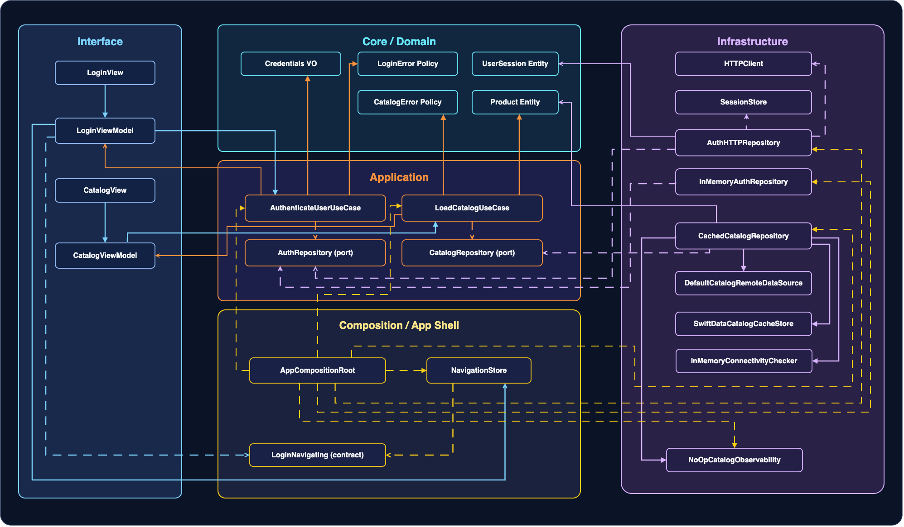
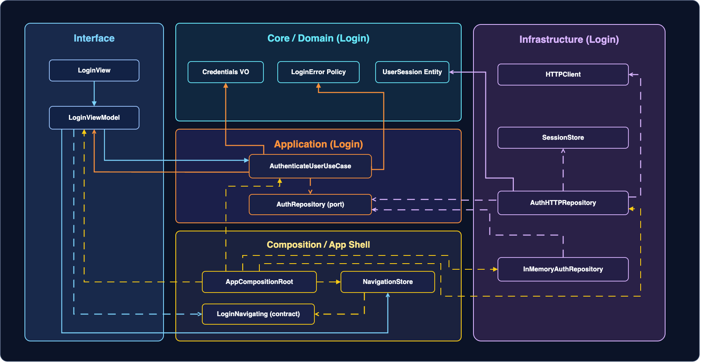
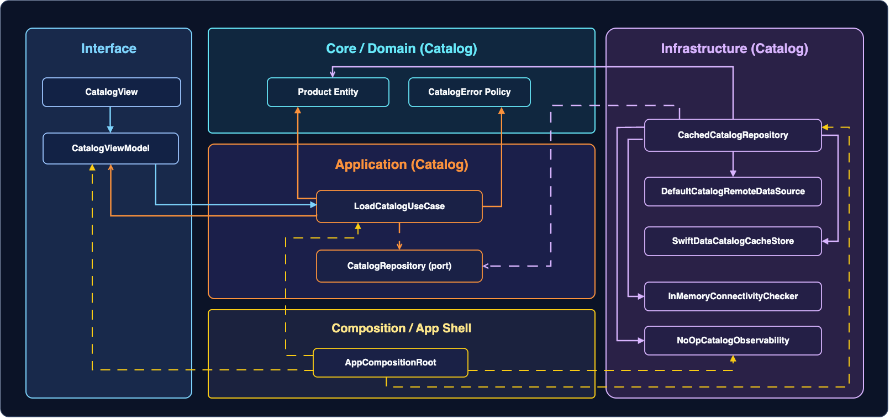
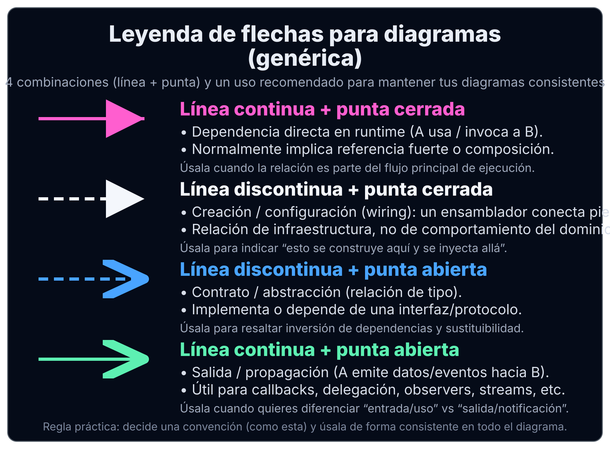

Informe del Curso: Stack My Architecture iOS
1) Objetivo final
El objetivo del curso no es memorizar patrones, sino ser capaz de diseñar, construir y evolucionar una base de código iOS de producción (enterprise) de forma:
- Modular: escalable por features y por equipo.
- Mantenible: cambio barato y refactors seguros.
- Testable: confianza con estrategia de pruebas disciplinada.
- Concurrencia-segura: Swift 6.2 strict concurrency, sin data races.
- Centrada en negocio: DDD con lenguaje ubicuo, invariantes, eventos y límites claros.
Al finalizar el curso, el alumno podrá:
- Definir y defender límites de módulos/features y sus reglas de dependencia.
- Diseñar flujos completos
UI -> Application -> Domain -> Infrastructurecon responsabilidades limpias. - Integrar DDD + Clean Architecture + Feature-First sin contradicciones ni capas artificiales.
- Diseñar navegación por eventos desacoplada y testeable, incluyendo deep links.
- Escribir SwiftUI moderno con flujo de datos correcto, performance y APIs actuales.
- Trabajar con Swift Concurrency estricta (aislamiento,
Sendable, cancelación, backpressure). - Operar con BDD + TDD: primero especificación, después tests, luego producción y refactor.
2) Fundamentos de ingeniería del curso
El curso se apoya en una premisa central: antes de codificar, se aclara intención y objetivo. Esto facilita dividir trabajo, reducir retrabajo y mejorar comunicación, delegación y testabilidad.
2.1 Iteración y lotes pequeños
- Trabajo en historias/casos de uso pequeños.
- Menor riesgo por iteración.
- Feedback más rápido.
- Cadencia de entrega sostenida.
2.2 Test como mecanismo primario de feedback
- Base en pruebas unitarias/aisladas por coste y velocidad.
- Integración y E2E con moderación por coste creciente.
- Disciplina explícita de test-first (TDD real).
2.3 Modularidad: bajo acoplamiento y alta cohesión
- Objetivo: módulos poco acoplados entre sí y muy cohesivos por dentro.
- Señal de acoplamiento alto: cambiar A obliga a tocar B sin necesidad de negocio.
2.4 Composición y DI fuera del core
- La inyección, wiring y composición viven en el
Composition Root. - El core de dominio/aplicación no se contamina con detalles de ensamblado.
3) Metodologías: BDD + TDD
Regla operativa:
- BDD define el qué y el por qué en lenguaje de negocio.
- TDD define el cómo con seguridad y feedback continuo.
3.1 BDD en el curso
BDD se usa para:
- Capturar escenarios
happy path,sad pathyedge cases. - Mantener lenguaje ubicuo (DDD).
- Convertir escenarios en criterios de aceptación trazables.
- Derivar casos de uso (Application) y reglas/invariantes (Domain).
3.2 TDD en el curso
Se aplica el ciclo clásico:
- Red: test que falla.
- Green: implementación mínima que pasa.
- Refactor: mejora de diseño manteniendo tests en verde.
3.3 Flujo integrado BDD + TDD por feature
- Especificación BDD.
- Contratos de diseño (puertos, modelos, errores, eventos).
- TDD desde el core hacia afuera:
- Unit tests en Domain/Application como base.
- Integración para infraestructura.
- UI tests mínimos para aceptación crítica.
4) Stack tecnológico y criterios
4.1 SwiftUI moderno
- SwiftUI como UI principal.
- Estado y flujo de datos explícitos.
- Composición de vistas, navegación moderna y testing de presentación.
4.2 Swift 6.2 + Concurrencia estricta
async/await,Task,TaskGroup,AsyncSequence.actors, aislamiento y uso justificado de@MainActor.Sendableen fronteras de concurrencia.- Cancelación y backpressure.
- Interoperabilidad con APIs legacy.
4.3 Modularización Feature-First
- Organización vertical por feature, no por capa global.
- Cada feature como unidad de negocio evolucionable.
- Separación progresiva: empezar simple y extraer cuando aporte valor real.
4.4 Clean Architecture por feature
Capas y reglas de dependencia dentro de cada feature:
- Domain: reglas puras, invariantes, modelos, eventos.
- Application: casos de uso y puertos.
- Interface: SwiftUI y adaptadores de presentación.
- Infrastructure: red, persistencia y adaptadores concretos.
4.5 DDD
- Bounded contexts.
- Lenguaje ubicuo.
- Entidades, value objects, agregados e invariantes.
- Domain events y políticas.
- Consistencia por agregado.
4.6 Navegación por eventos
- Las features emiten intenciones/eventos.
- Un coordinador/sistema de navegación decide la ruta.
- Facilita deep links, trazabilidad y tests sin UI real.
4.7 Composition Root
- Módulo principal para DI, factories, wiring y adaptadores.
- Regla: composición fuera del core.
5) Progresión formativa: Junior -> Mid -> Senior -> Arquitecto -> Maestría
La progresión se diseñó para evitar saltos conceptuales. Primero se aprende a construir una feature completa con disciplina. Después se integra una segunda feature y se introduce concurrencia lo suficientemente pronto para sostener red/caché sin deuda técnica. Más tarde se trabaja resiliencia, y finalmente se escala a gobernanza y maestría.
Etapa 1: Junior (fundamentos operables)
Meta:
- Entender límites, capas y flujo end-to-end en una feature pequeña.
Construcción:
- Estructura base Feature-First.
- Feature
Logincompleta mínima: - escenarios BDD,
- casos de uso,
- dominio con invariantes/errores,
- infraestructura mínima,
- UI SwiftUI simple.
Entregables:
- Escenarios BDD con trazabilidad.
- Unit tests de casos de uso (TDD).
- Primer diagrama de dependencias.
- Primer ADR de Login.
Validación:
- Separación correcta de responsabilidades.
- Test-first real.
- Concurrencia segura en dobles de prueba cuando aplique.
Etapa 2: Mid (integración y disciplina)
Meta:
- Integrar features manteniendo límites, contratos y pruebas.
Construcción:
- Segunda feature
Products/Catalog. - Navegación por eventos entre features.
- Infra real mínima (network) + contract tests de repositorio.
- Swift Concurrency aplicada en casos de uso y ViewModels (cancelación, aislamiento,
Sendable). - Primeros tests de integración entre 2+ componentes.
Entregables:
- Event bus/coordinador con tests.
- Contratos entre features (eventos/modelos/dependencias).
- Integration tests en infraestructura.
- Evidencia de criterios de concurrencia en wiring y coordinación.
- ADRs por feature.
Etapa 3: Senior (evolución y resiliencia)
Meta:
- Tomar decisiones de arquitectura bajo cambio y escala con datos reales de operación.
Construcción:
- Caching/offline en
Products. - Estrategias de consistencia e invalidación.
- SwiftData como adaptador de infraestructura (no como centro del diseño).
- Observabilidad mínima (logging/tracing de eventos).
- Pruebas avanzadas:
- snapshot (si aplica),
- concurrencia (cancelación/backpressure),
- integración rápida y confiable.
Entregables:
- Estrategia de cache con invariantes y tests.
- Observabilidad mínima usable para debugging.
- Documento de trade-offs y riesgos.
Etapa 4: Arquitecto (plataforma y gobernanza)
Meta:
- Escalar sistema y equipo con estándares y enforcement.
Construcción:
- Bounded contexts y contratos entre contexts.
- Reglas de dependencia automatizadas (lint/CI conceptual).
- Guía de navegación por eventos y deep links como plataforma.
- Estrategia de versionado/paquetización (SPM, multi-target).
- Quality gates medibles por tipo de cambio.
Entregables:
- Guía de arquitectura del repositorio con convenciones y enforcement.
- ADRs macro de gobernanza.
- Quality gates conceptuales con criterios verificables:
- tests,
- cobertura crítica,
- reglas de dependencia,
- strict concurrency.
Etapa 5: Maestría (concurrencia avanzada y composición)
Meta:
- Consolidar criterio de arquitecto senior para diseño concurrente, performance de UI y evolución segura a largo plazo.
Construcción:
- Isolation domains,
Sendable, actores y structured concurrency. - Testing concurrente no flaky.
- Estado moderno y performance en SwiftUI.
- Composición avanzada, diagnóstico y migración progresiva.
Entregables:
- Evidencia de arquitectura concurrente segura en casos reales.
- Pruebas concurrentes deterministas.
- Plan de migración/evolución con riesgos explícitos y mitigaciones.
6) Persistencia del material del curso
El curso se mantendrá como documento vivo y versionable:
- Markdown para estudio y control de cambios en Git.
- HTML para lectura cómoda, índice y navegación por lecciones.
Cada lección incluirá:
- Explicación paso a paso.
- Código completo (producción + tests).
- Diagramas en texto.
- ADRs y trade-offs.
- Checklist de smells y criterios de decisión (
cuándo sí/cuándo no).
7) Qué no es este curso
- No es una chuleta de patrones.
- No es escribir producción y agregar tests al final.
- No es usar
@MainActorpara silenciar warnings sin justificar límites. - No es adoptar modas; es construir un sistema coherente guiado por requisitos, tests y límites.
Matriz de competencias - iOS
Objetivo
Asegurar progresion verificable desde etapa 0 hasta maestria con evidencia ejecutable y defensa tecnica.
Niveles y evidencias
| Nivel | Capacidad objetivo | Evidencia minima obligatoria |
|---|---|---|
| Etapa 0 Core Mobile | Entender capas y semántica de dependencias | Diagrama de capas + explicacion de 4 flechas + snippet compilable |
| Etapa 1 Fundamentos | Aplicar feature-first, puertos y TDD base | Test unitario en rojo/verde + implementacion minima + refactor documentado |
| Etapa 2 Integracion | Integrar features sin acoplamiento accidental | Caso de integracion probado + diagrama de wiring + trade-off escrito |
| Etapa 3 Evolucion | Evolucionar persistencia/servicios con contratos estables | Contrato versionado + test de no regresion + metrica de impacto |
| Etapa 4 Arquitecto | Disenar fronteras, navegacion y decisiones complejas | ADR corto + diagrama inter-feature + defensa de decision |
| Etapa 5 Maestria | Operar sistema enterprise con criterios de riesgo | Runbook minimo + gates de calidad + simulacion de incidente |
Criterio de paso
- No se aprueba una etapa sin evidencia tecnica y defensa verbal breve.
- Si falla un gate, la etapa queda en recuperacion y no avanza.
- Toda evidencia debe ser reproducible en repo.
Reglas de evaluacion
- Comprension: explica por que la decision existe.
- Aplicacion: demuestra con codigo o test.
- Defensa: justifica trade-offs y riesgos.
- Operacion: muestra como monitorear, rollback y verificar.
Rubrica de gates por fase - iOS
Objetivo
Definir criterios de aprobado/rechazado por fase para evitar avance con huecos.
Gates por fase
| Fase | Gate tecnico | Gate pedagogico | Gate de defensa |
|---|---|---|---|
| Etapa 0 | Diagrama de capas correcto | Explica significado de las flechas | Justifica una dependencia valida y una invalida |
| Etapa 1 | TDD rojo-verde-refactor completo | Explica por que el test protege el comportamiento | Defiende por que no usar acoplamiento directo |
| Etapa 2 | Integracion de features en verde | Describe contrato entre modulos | Defiende trade-off entre simplicidad y aislamiento |
| Etapa 3 | Persistencia/infra con tests de regresion | Explica impacto en dominio | Defiende costo de cambio y estrategia de migracion |
| Etapa 4 | Arquitectura y navegacion sin ciclos | Describe fronteras y ownership | Defiende ADR con criterios de riesgo |
| Etapa 5 | Hardening/release checklist en verde | Explica criterio de readiness | Defiende plan de rollback y observabilidad |
Regla de aprobado
- Se aprueba fase solo con los tres gates en verde.
- Si un gate falla, se registra recuperacion y evidencia faltante.
- Todo gate debe poder auditarse en PR o script.
Evidencia de recuperacion
- Causa del fallo.
- Cambio aplicado.
- Prueba de cierre.
- Leccion aprendida.
Scorecard de empleabilidad - iOS
Objetivo
Mapear cada fase a competencias observables en entrevista y en portfolio tecnico.
Seniority map
| Nivel | Senal en entrevista | Evidencia portfolio | Riesgo si falta |
|---|---|---|---|
| Junior | Explica capas y flujo basico | Feature pequena con tests base | Respuestas memorizadas sin criterio |
| Mid | Argumenta contratos y boundaries | Integracion de dos features desacopladas | Acoplamiento accidental en cambios |
| Senior | Decide con trade-offs y metricas | ADR + evidencia de evolucion segura | Decisiones por intuicion sin datos |
| Arquitecto | Coordina modulos y roadmap tecnico | Diagrama global + plan de migracion | Arquitectura no defendible ante staff |
| Maestria | Opera bajo riesgo y release real | Runbook + quality gates + rollback | Falta de criterio operativo en produccion |
Criterio de empleabilidad
- Cada nivel exige al menos una evidencia ejecutable.
- Cada evidencia debe incluir defensa de decision.
- La defensa debe cubrir alternativa descartada y riesgo asumido.
Checklist de defensa tecnica
- Problema y contexto
- Invariantes
- Opciones evaluadas
- Decision final
- Riesgo y mitigacion
- Como validar en runtime
Core Mobile Architecture
Qué es este Core y por qué existe
Este Core es la base compartida entre las rutas de iOS y Android. No reemplaza ninguna lección de plataforma. Su función es dar un marco único para tomar decisiones de arquitectura móvil con criterio consistente en ambos ecosistemas.
Existe por una razón práctica: cuando iOS y Android evolucionan con marcos distintos, aparecen incoherencias en seguridad, contratos API, observabilidad, releases y gobernanza. Este Core reduce esa variabilidad y define una forma común de decidir, validar, operar y evolucionar.
Cómo usar este Core junto a iOS/Android
Usa este bloque como capa de decisión transversal.
Si estás en el curso iOS, estúdialo en paralelo con cada una de sus etapas:
Etapa 1 — Junior · Etapa 2 — Mid · Etapa 3 — Senior · Etapa 4 — Arquitecto · Etapa 5 — Maestría
Si estás en el curso Android, estúdialo en paralelo con cada uno de sus niveles: Nivel Cero · Junior · Midlevel · Senior · Maestría (carpetas 00-nivel-cero → 04-maestria del repo Android).
Regla operativa: cada vez que en tu track aparezca una decisión crítica (arquitectura, API, release, seguridad, operación), vuelve al Core y aplica las checklists/templates antes de implementar.
Principios del Core: decidir, validar, operar y evolucionar
Decidir
No se decide por preferencia personal. Se decide por contexto, restricciones y trade-offs explícitos.
Validar
No basta “suena bien”. Toda decisión debe tener evidencia verificable: tests, métricas, señales operativas.
Operar
Lo que no se puede observar ni recuperar en incidente no está listo para producción.
Evolucionar
La arquitectura no es foto estática. Debe soportar cambios incrementales sin caos ni reescrituras de alto riesgo.
Los cuatro principios anteriores no son abstractos: se materializan directamente en cómo está organizado el código. El diagrama siguiente muestra esa estructura visual.
Diagrama de arquitectura por capas

La leyenda visual superior define la semántica por tipo de trazo y punta de flecha; el color de cada flecha indica el módulo de origen.
Cómo leer este diagrama: hay cuatro capas principales, de dentro hacia fuera:
- Domain (centro, verde): las reglas de negocio puras — Value Objects, errores de dominio y protocolos (contratos). No depende de nada externo.
- Application (azul): los casos de uso — orquestan el flujo llamando a los contratos del Domain. No saben nada de red ni de UI.
- Infrastructure (amarillo): implementaciones concretas de los contratos — adaptadores de red, stores locales. Depende de Domain (implementa sus protocolos), nunca al revés.
- Interface (naranja): vistas SwiftUI y ViewModels — presentan el estado y delegan al Application. No contienen lógica de negocio.
La regla de oro que verás en cada diagrama: las flechas de dependencia siempre apuntan hacia Domain. Infrastructure no llama a Interface. Application no importa URLSession. Si ves una flecha que viola esa dirección, hay un problema de diseño.
Zoom de detalle por feature
Para evitar sobrecarga visual en el mapa global, aquí tienes dos vistas de detalle separadas:
Login (detalle)

Catalog (detalle)
> Nota: Catalog es la feature que construirás en Etapa 2. En este punto no necesitas entender cada bloque — observa que el patrón de capas (Domain → Application → Infrastructure → Interface) es idéntico al de Login.

🔭 Explora el scaffold — El árbol del repositorio
# Desde la raíz del repo iOS
ls -1
# Los dos artefactos principales de aprendizaje
ls apps/ios/ArchitectureKit/Sources/
ls 01-fundamentos/ | head -10Este Core Mobile describe los principios que aplican a todo lo que construirás. El scaffold apps/ios/ArchitectureKit/ es su implementación concreta: puedes usar estos comandos para orientarte antes de entrar en cada etapa.
Qué sigue
Esta introducción te da el marco de referencia. Los principios de Decidir, Validar, Operar y Evolucionar son la brújula que usarás cada vez que tomes una decisión de arquitectura a lo largo del curso.
No hace falta memorizar los diagramas ahora. Cuando llegues a cada etapa y construyas cada feature, volverás aquí y los leerás con mucho más contexto.
Usa los botones de navegación del curso para continuar con las siguientes lecciones del Core, o salta directamente a Etapa 1 — Junior si ya estás listo para construir.
Marco de decisiones arquitectónicas
Modelo mental
Piensa en cada decisión arquitectónica como una bifurcación en un camino de montaña. No puedes ver el final desde la bifurcación, pero sí puedes evaluar el terreno visible: pendiente, ancho del sendero, señales de peligro. Las restricciones duras son los precipicios (no negociables). Las restricciones blandas son las preferencias de ruta (negociables si el terreno lo exige). El ADR es el mapa que dejas para quien venga detrás.
flowchart LR
P["Problema"] --> F["Fuerzas en conflicto"]
F --> A["Alternativas (mín. 2)"]
A --> T["Trade-off principal"]
T --> D["Decisión + evidencia"]
D --> R["Revisión con datos"]
Flujo de decisión
Una decisión técnica buena no empieza con una solución. Empieza con fuerzas en conflicto.
Primero define restricciones duras. Son las que no puedes negociar, por ejemplo cumplimiento legal, presupuesto de latencia, límites de plataforma o requisitos de seguridad. Luego define restricciones blandas, que sí se pueden negociar, como preferencia de librería, estilo de equipo o velocidad de adopción.
Con esas fuerzas claras, lista alternativas reales. Para cada alternativa, registra beneficios, coste de implementación, coste de operación, riesgo de reversión y coste de oportunidad. Después explicita el trade-off principal, toma decisión y define evidencia de validación.
Cuándo sí / cuándo no
Usa este marco cuando la decisión afecta a más de un módulo, tiene coste de reversión alto o implica un trade-off que el equipo debe entender. No lo uses para decisiones locales reversibles en minutos (renombrar una variable, elegir un modifier de SwiftUI).
Ejemplo en el scaffold
En ArchitectureKit, la decisión de usar navegación por eventos en lugar de NavigationLink directo quedó documentada en un ADR. Las fuerzas eran: testabilidad del flujo de navegación (dura) vs simplicidad de NavigationLink (blanda). La alternativa descartada fue acoplar Login a Catalog vía import directo. La evidencia de validación fue que los tests de navegación del Login se ejecutan sin instanciar SwiftUI.
> Nota: No te preocupes si este ejemplo aún no tiene todo el contexto. Volverás a él cuando construyas el Login en Etapa 1 y la navegación en Etapa 2 — en ese momento tendrá sentido completo.
Checklist 1 página: Architecture Decisión Loop
- ☐ Problema formulado en una frase verificable.
- ☐ Restricciones duras identificadas y validadas.
- ☐ Restricciones blandas registradas.
- ☐ Mínimo 2 alternativas viables comparadas.
- ☐ Trade-off principal explicado sin ambigüedad.
- ☐ Decisión tomada con alcance y fecha.
- ☐ Consecuencias esperadas (positivas y negativas).
- ☐ Plan de reversión definido.
- ☐ Evidencia de éxito/fallo definida antes de implementar.
- ☐ Fecha de revisión pactada.
Mini ejemplo opcional (plataforma)
Plataforma iOS/Android: migrar navegación de acoplamiento directo a coordinador/eventos. Restricción dura: no romper deep links existentes. Evidencia: tasa de rutas fallidas, cobertura de navegación y tiempo de onboarding de nueva feature.
🔭 Explora el scaffold — Los ADRs como decisiones documentadas
# ADR de Login — el primer ADR del scaffold
cat 01-fundamentos/05-feature-login/ADR-001-login.mdEste ADR aplica exactamente el marco de esta lección: contexto, decisión, alternativas y consecuencias. Es el primer ejemplo real del curso de cómo documentar una bifurcación arquitectónica.
Qué sigue
Este marco de decisión es la herramienta que aplicarás en cada ADR del curso. La primera vez que lo usarás formalmente será en Etapa 1 — Junior, al documentar la decisión de diseño del Login en el ADR del Login.
Invariantes y contratos
Modelo mental
Un invariante es un muro de carga en un edificio: si lo quitas, todo se derrumba. Un contrato es la puerta entre habitaciones: define qué puede pasar y qué no, sin que cada habitación necesite conocer el interior de la otra.
flowchart TD
INV["Invariante: Email válido"] --> VO["Value Object EmailAddress"]
VO --> DOM["Domain lo exige"]
DOM --> APP["Application lo propaga"]
APP --> INFRA["Infrastructure lo respeta"]
INFRA --> TEST["Tests lo verifican"]
Invariantes (must-never-happen)
Un invariante es una verdad del sistema que no debe romperse nunca. No es documentación bonita; es una condición de seguridad de negocio o de integridad técnica.
Ejemplos: un token expirado nunca se usa para llamar API, una orden pagada no vuelve a estado pendiente, un evento crítico no se pierde silenciosamente.
Codifica invariantes en tres capas: modelo de dominio, contratos de entrada/salida y pruebas. Si el invariante solo vive en una wiki, no existe.
Ejemplo en el scaffold
En ArchitectureKit, el Value Object EmailAddress (en FeatureLoginDomain) es un invariante codificado: solo se puede construir si el valor pasa cuatro condiciones: contiene @, tiene exactamente dos partes al separar por @, ambas partes son no-vacías, y el dominio contiene .. Esto garantiza que ninguna capa posterior (Application, Infrastructure, UI) reciba un email malformado.
El test que verifica esta invariante es AuthenticateUserUseCaseTests.test_execute_throwsInvalidEmail_whenEmailIsMalformed, que confirma que el UseCase lanza LoginError.invalidEmail cuando el email no cumple las condiciones. Consulta la implementación TDD completa en Etapa 1 — Domain del Login.
Cuándo sí / cuándo no
Codifica como invariante todo lo que, si se viola, produce daño de negocio o corrupción de datos. No conviertas en invariante preferencias de estilo o reglas que cambian con frecuencia (esas son políticas configurables, no muros de carga).
Contratos clave
Contrato de dominio define límites entre agregados y reglas de negocio.
Contrato de feature define qué expone cada módulo y qué no puede importar.
Contrato API define request/response, errores esperables, idempotencia y versionado.
Contrato de test define qué comportamiento es obligatorio proteger ante regresión.
Contract tests vs integration tests vs E2E
Los contract tests validan que productor y consumidor cumplen un acuerdo explícito, con bajo coste y alta señal de ruptura de contrato.
Los integration tests verifican colaboración real entre componentes internos y detectan errores de wiring, mapping o persistencia.
Los E2E validan recorrido completo y experiencia de usuario; son más caros y deben reservarse para flujos críticos de negocio.
Guía pragmática: protege reglas con unit/contract, wiring con integration y valor de negocio crítico con E2E.
🔭 Explora el scaffold — Invariantes en tests de Domain
# Los invariantes del Domain de Login están protegidos por estos tests
grep -r "func test_" apps/ios/ArchitectureKit/Tests/FeatureLoginDomainTests/ | head -10Cada método test_execute_with_* protege un invariante del caso de uso: happy path, credenciales inválidas, error de red. Si uno falla, el invariante está roto.
Qué sigue
Los invariantes y contratos son la base sobre la que se apoya la variabilidad controlada del sistema. La siguiente lección explica cómo evolucionar la arquitectura sin romper esos invariantes.
Variabilidad y evolución sin caos
Modelo mental
Piensa en tu codebase como una ciudad. Hay zonas residenciales que apenas cambian (Domain, modelos core) y zonas comerciales que se renuevan cada temporada (UI, feature flags, copy). Si construyes la zona comercial con los mismos cimientos que un monumento histórico, desperdicias recursos. Si construyes el monumento con materiales temporales, se derrumba.
flowchart LR
subgraph Estable["Cambio anual"]
D["Domain models"]
B["Bounded contexts"]
end
subgraph Medio["Cambio mensual"]
C["Contratos API"]
P["Políticas cache"]
end
subgraph Volátil["Cambio semanal"]
U["UI/copy"]
F["Feature flags"]
end
Estable -->|"proteger"| Medio
Medio -->|"adaptar"| Volátil
Ejemplo en el scaffold
En ArchitectureKit, el Domain (FeatureLoginDomain, FeatureCatalogDomain) es zona estable: los Value Objects EmailAddress, Password, Product no cambian con frecuencia. La Infrastructure (FeatureCatalogData) es zona media: la política de cache (TTL, network-first) puede ajustarse. La UI (FeatureCatalogUI) es zona volátil: el layout de la lista de productos puede cambiar sin tocar Domain. Esta separación se aplica en la Etapa 3 cuando se introduce cache sin contaminar el core: Caching y offline.
Cuándo sí / cuándo no
Aplica clasificación de variabilidad cuando el sistema tiene más de una feature o más de un equipo. No la apliques prematuramente en prototipos de una semana donde todo es volátil por definición.
Diseñar para cambio
No todo cambia al mismo ritmo. Clasifica explícitamente:
Cambio semanal: copy, reglas UI, feature flags, thresholds de experimentación.
Cambio mensual: contratos de integración, políticas de cache, métricas de negocio.
Cambio anual: dominios, límites de módulo, estrategia de plataforma.
Separar ritmos evita sobre-ingeniería en zonas estables y deuda técnica en zonas volátiles.
Estrategias de migración
Prefiere migraciones incrementales con dual-run, fallback y criterios de corte claros.
Usa refactors por slices: aislar frontera, mover comportamiento, mantener compatibilidad, eliminar legado cuando la evidencia confirme estabilidad.
Aplica Strangler Pattern cuando el bloque legado es grande y crítico: enruta gradualmente tráfico al nuevo componente, mide, y retira por etapas.
Evita reescrituras big-bang salvo sistemas pequeños con riesgo controlado y ventana de parada asumida.
Checklist: evolucionar sin caos
- ☐ Mapa de zonas de alta variabilidad actualizado.
- ☐ Plan incremental con hitos reversibles.
- ☐ Compatibilidad temporal definida (old/new).
- ☐ Métricas de migración definidas antes de mover código.
- ☐ Fallback técnico probado.
- ☐ Fecha de retiro del legado acordada.
- ☐ Riesgos de operación revisados con equipo.
🔭 Explora el scaffold — Zonas estables vs volátiles
# Zona estable: Domain puro (sin dependencias externas)
cat apps/ios/ArchitectureKit/Sources/FeatureLoginDomain/AuthenticateUserUseCase.swift
# Zona volátil: Infrastructure (implementación concreta de red)
cat apps/ios/ArchitectureKit/Sources/FeatureLoginData/AuthHTTPRepository.swiftAuthenticateUserUseCase es zona estable: raramente cambia. AuthHTTPRepository es zona volátil: cambia cuando cambia la API. Esa separación es la variabilidad controlada que describe esta lección.
Qué sigue
Clasificar variabilidad te prepara para el siguiente paso: garantizar que cada cambio, sea en zona estable o volátil, pasa un control de calidad antes de llegar a producción.
Calidad PR-ready
Modelo mental
Una PR es una propuesta de cambio al sistema de producción. Trátala como un contrato: el autor propone, la evidencia respalda, el reviewer valida. Si la evidencia no convence a alguien que no escribió el código, la PR no está lista.
Ejemplo en el scaffold
En ArchitectureKit, cada cambio en Domain o Data se valida con swift test (26 tests), con umbrales de cobertura de Domain ≥ 85% y Data ≥ 75%. Antes de mergear, el autor verifica que no hay imports prohibidos entre módulos (por ejemplo, Domain no puede importar Infrastructure). Este flujo se practica y formaliza en Quality Gates — Etapa 4.
Cuándo sí / cuándo no
Aplica esta disciplina a toda PR que toque código de producción o tests. No la apliques a cambios puramente documentales (typos en README) ni a spikes exploratorios que se descartarán.
Production readiness a nivel Pull Request
Una PR está lista cuando su evidencia supera opinión personal. Eso exige build estable, pruebas relevantes, observabilidad mínima y seguridad básica revisada.
Checklist de PR-ready
- ☐ Problema y alcance definidos en la PR.
- ☐ Cambios limitados y trazables.
- ☐ Build local y CI en verde.
- ☐ Tests unitarios/integración/contrato según impacto.
- ☐ Casos borde y fallos esperables cubiertos.
- ☐ Logs/métricas para diagnóstico del cambio.
- ☐ Seguridad/privacidad revisadas (PII, secretos, permisos).
- ☐ Plan de rollback o mitigación documentado.
Definition of Done template
Usa esta plantilla como campo de texto en tu PR o ticket. Rellénala antes de marcar la PR como lista para review:
Estado funcional esperado:
Evidencia técnica adjunta:
Riesgos conocidos:
Mitigación en release:
Matriz de estrategia de testing
| Tipo | Objetivo | Cuándo usar | Evidencia mínima |
|---|---|---|---|
| Unit | Reglas y lógica | Siempre | Suite rápida estable |
| Integration | Wiring real | Cambios entre capas | Tests de colaboración |
| Contract | Acuerdos entre módulos/API | Cambios de contrato | Validación productor/consumidor |
| E2E | Flujos críticos de negocio | Caminos top | Casos críticos automatizados |
| Performance | Regresión de latencia/startup/memoria | Cambios sensibles | Baseline + comparación |
| Accessibility | Uso con ayudas y semántica | UI relevante | Checklist + tests donde aplique |
Regla central: evidence over opinion.
🔭 Explora el scaffold — Los quality gates del scaffold
# Gate de dependencias: Domain no importa infraestructura
grep -rn "^import" apps/ios/ArchitectureKit/Sources/FeatureLoginDomain/ | grep -v "Foundation\|Testing" || echo "✅ Domain puro"
# Gate de tests: todos los tests en verde
cd apps/ios/ArchitectureKit && swift test 2>&1 | tail -3Estos dos comandos son los gates de PR mínimos del scaffold: dependencias limpias y tests en verde. Si los dos pasan, el código es PR-ready según los criterios de esta lección.
Anexo — Gobernanza automatizada con Pumuki (opcional)
Si tu equipo ya opera gates en CI y quieres una capa determinista de enforcement (Facts → Rules → Gate → evidencia) sobre repos reales, el curso Pumuki del hub Stack My Architecture (/pumuki/, courseId stack-my-architecture-pumuki) enlaza con esta lección sin sustituir Swift ni la arquitectura de la app.
Qué sigue
Con los criterios de PR-ready interiorizados, el siguiente paso es asegurarte de que el sistema en producción es observable: qué pasa cuando algo falla y cómo lo detectas. Eso lo cubre la siguiente lección.
Observabilidad y operación
Modelo mental
Si tu app fuera un avión, la observabilidad sería la caja negra y los instrumentos del cockpit. Sin ellos, cuando algo falla solo puedes adivinar. Con ellos, puedes reconstruir exactamente qué pasó, cuándo y por qué. La observabilidad no es "añadir prints": es diseñar señales que activen decisiones.
Ejemplo en el scaffold
En ArchitectureKit, la Etapa 3 introduce observabilidad mediante decoradores. El patrón es envolver un ProductRepository real con un LoggingProductRepository que registra evento, resultado y duración sin contaminar el core. El AppComposition decide qué decoradores aplicar. Esto permite activar o desactivar logging sin tocar Domain ni Application. El patrón completo se practica en Observabilidad — Etapa 3.
Cuándo sí / cuándo no
Añade observabilidad desde el momento en que tienes flujos críticos de usuario (login, carga de datos, sync). No instrumentes todo: instrumenta lo que activa decisión (errores, latencia, tasas de éxito). Evita logging de PII sin política de redacción.
Logging
Usa logs estructurados con campos estables (evento, feature, resultado, error_code, correlation_id). Evita texto libre como única señal.
Nunca loguees PII sin política de redacción. Define redaction por defecto para email, teléfono, token, identificadores sensibles. Aplica sampling en eventos ruidosos para controlar coste.
Metrics
Mide golden signals adaptadas a mobile: éxito/fracaso de flujos críticos, latencia percibida, crash-free sessions, hangs en main thread (detectables en Xcode Hangs organizer), cold start, consumo de memoria y tasa de retry.
No midas todo. Mide lo que activa decisión.
Tracing
En mobile el tracing extremo puede ser caro. Úsalo en caminos de alto valor (login, checkout, sync) y con correlación hacia backend mediante correlation IDs.
SLO y error budget
Define SLO por capacidad de usuario, no por componente interno aislado. Ejemplo: sync exitosa de tareas > 99.0% en 28 días.
El error budget convierte fiabilidad en presupuesto gestionable. Si se consume rápido, prioriza estabilidad sobre nueva feature.
Alert hygiene
Una alerta vale si dispara acción concreta. Elimina alertas sin playbook, con falsos positivos recurrentes o sin dueño.
Template: Minimal Observability Spec
Usa esta plantilla de especificación mínima para definir qué debes instrumentar en cada flujo crítico:
Nombre del flujo:
Eventos obligatorios:
Métricas obligatorias:
Campos sensibles y redacción:
Umbrales de alerta:
Dashboard de referencia:
Owner operativo:
Template: Incident Runbook Skeleton
Usa este esqueleto como punto de partida para crear el runbook de cada incidente:
Tipo de incidente:
Señal de detección:
Impacto esperado:
Primera mitigación:
Condición de rollback:
Validación post-mitigación:
Comunicación interna/externa:
Acciones preventivas posteriores:
🔭 Explora el scaffold — Puntos de observabilidad
# Busca los puntos donde el scaffold registra errores y eventos
grep -rn "Logger\|os_log\|print" apps/ios/ArchitectureKit/Sources/ | grep -v ".swift:#" | head -15Los puntos donde el scaffold emite logs son exactamente los puntos de observabilidad de esta lección: errores de autenticación, fallos de red, transiciones de estado. En producción, estos logs serán los primeros datos disponibles cuando algo falle.
Qué sigue
Con observabilidad en operación, el siguiente paso es gestionar cambios en producción con seguridad: cómo hacer releases progresivos y cómo recuperarte rápidamente si algo sale mal.
Release, rollback y feature flags
Modelo mental
Un release es como abrir una compuerta: una vez que el agua fluye, no puedes recogerla fácilmente. En mobile, el rollback es especialmente difícil porque dependes de que los usuarios actualicen. Por eso necesitas dos mecanismos: staged rollout (abrir la compuerta poco a poco) y feature flags (poder cerrar una tubería específica sin cerrar toda la compuerta).
Ejemplo en el scaffold
En ArchitectureKit, la Etapa 4 define gates que deben pasar antes de release: swift test, validación de dependencias y baseline de performance. Si algún gate falla, el release se bloquea. Los feature flags no están implementados en el scaffold actual, pero la arquitectura los soporta: el AppComposition puede inyectar implementaciones distintas según configuración remota sin tocar Domain. El flujo completo de quality gates se detalla en Quality Gates — Etapa 4.
Cuándo sí / cuándo no
Usa staged rollout siempre que el cambio afecte a flujos críticos de usuario. Usa feature flags cuando necesites activar/desactivar funcionalidad sin deploy. No uses flags para todo: cada flag es deuda temporal que necesita owner y fecha de retiro.
Estrategias de release
Prioriza despliegues graduales: staged rollout, canary o phased rollout según plataforma/canal. El objetivo es reducir blast radius y aprender pronto.
Rollback en mobile
El rollback de app tiene limitaciones por adopción de versiones y stores. Por eso debes diseñar mitigaciones server-side y flags para desactivar rutas de riesgo sin esperar a que toda la base actualice.
Feature flags
Un flag es deuda temporal con fecha de caducidad. Cada flag debe tener owner, propósito, criterio de retiro y kill-switch asociado para incidentes graves.
Evita flags permanentes sin gobierno, porque añaden complejidad oculta.
Kill-switch
Diseña kill-switch para desactivar funciones críticas con seguridad, auditabilidad y latencia de propagación conocida.
Release readiness checklist
- ☐ Scope de release cerrado y trazable.
- ☐ Riesgos críticos identificados.
- ☐ Plan de rollback y mitigación server-side.
- ☐ Flags nuevas con owner y fecha de expiración.
- ☐ Kill-switch validado en entorno controlado.
- ☐ Monitoreo reforzado para ventana de lanzamiento.
- ☐ Comunicación de release preparada.
🔭 Explora el scaffold — Feature flags en Infrastructure
# Busca cualquier feature flag o toggle en el scaffold
grep -rn "featureFlag\|FeatureFlag\|isEnabled\|toggle" apps/ios/ArchitectureKit/Sources/ 2>/dev/null || echo "No hay feature flags aún — son una extensión natural del scaffold"El scaffold actual no implementa feature flags — eso es deliberado para el nivel Junior/Mid. Cuando llegues a Etapa 3 (Senior), añadirás un mecanismo de flags sobre InfraPersistence sin tocar Domain ni Application.
Qué sigue
Con release, rollback y feature flags en tu toolkit, el siguiente paso es gestionar los contratos que definen cómo se comunican los componentes de tu sistema: APIs, versionado y estabilidad de interfaces.
APIs, contratos y versionado
Modelo mental
Un contrato API es como un acuerdo comercial entre dos empresas: define qué se entrega, en qué formato, qué pasa si algo falla y cómo se gestionan los cambios. Si el acuerdo es ambiguo, cada parte interpreta a su manera y aparecen bugs en producción. Si el acuerdo es explícito, los cambios se negocian antes de romper nada.
Ejemplo en el scaffold
En ArchitectureKit, el HTTPClient protocol en InfraHTTP define el contrato entre la app y el backend: func execute(_ request: URLRequest) async throws -> (Data, HTTPResponse). El AuthHTTPGateway en FeatureLoginData traduce respuestas HTTP a tipos de dominio (Session o LoginError). Los FeatureLoginDataIntegrationTests verifican que esta traducción respeta el contrato. La implementación completa se detalla en Infra real de red — Etapa 2.
Cuándo sí / cuándo no
Define contratos explícitos siempre que haya una frontera entre módulos o entre cliente y servidor. No formalices contratos para comunicación interna dentro de un mismo módulo donde el compilador ya garantiza tipos.
Disciplina de contrato API
Define contratos explícitos: shape de datos, códigos de estado, errores de negocio vs técnicos, idempotencia y semántica de reintento.
Evita respuestas ambiguas. Un cliente móvil necesita saber si debe reintentar, pedir reautenticación, invalidar cache o mostrar error final.
Error Taxonomy starter
| Categoría | Ejemplo | Acción cliente |
|---|---|---|
| AUTH_EXPIRED | token vencido | refresh token + retry único |
| AUTH_INVALID | credenciales inválidas | cerrar sesión / relogin |
| RATE_LIMITED | 429 | backoff exponencial |
| TRANSIENT_NETWORK | timeout/reset | retry acotado |
| VALIDATION_ERROR | payload inválido | no retry, corregir request |
| BUSINESS_RULE | regla de dominio | no retry, feedback usuario |
| SERVER_FAILURE | 5xx | retry acotado + degradación |
Auth móvil (OAuth2/JWT) bases
Gestiona refresh token con almacenamiento seguro y rotación. Nunca hardcodees secretos en cliente. Minimiza alcance de tokens y protege ciclo de vida de sesión.
Retries/backoff
Retry solo en fallos transitorios idempotentes. Usa backoff exponencial con jitter para evitar tormentas.
No retries en errores de validación, reglas de negocio o auth inválida sin refresh válido.
Versionado
Diferencia cambios backward-compatible (campos opcionales nuevos, endpoints nuevos) de breaking changes (campo requerido nuevo, semántica alterada, eliminación de endpoint).
Establece política de deprecación con ventana temporal y comunicación anticipada.
API Contract Checklist
- ☐ Contrato request/response versionado.
- ☐ Taxonomía de errores documentada.
- ☐ Idempotencia declarada por endpoint.
- ☐ Política de retry por categoría de error.
- ☐ Compatibilidad backward evaluada.
- ☐ Plan de deprecación y fecha límite.
🔭 Explora el scaffold — Contrato DTO y versioning
# El DTO define el contrato de la API externa
cat apps/ios/ArchitectureKit/Sources/FeatureLoginData/LoginResponseDTO.swift
# Si existiera v2, el parser estaría en Infrastructure — Domain no cambiaríaLoginResponseDTO es el contrato con el servidor. Cualquier cambio breaking en la API (renombrar campos, cambiar tipos) se absorbe en este archivo sin tocar AuthenticateUserUseCase ni UserSession. Eso es versionado de contratos en práctica.
Qué sigue
Con contratos API bien definidos, el siguiente paso es proteger tu sistema de amenazas: seguridad, privacidad y threat modeling.
Seguridad, privacidad y threat modeling
Modelo mental
La seguridad en mobile no es un checklist que se aplica al final. Es una lente que se usa desde el diseño: cada flujo tiene activos que proteger, actores que podrían atacarlos y superficie por donde podrían entrar. El threat model es el mapa de esas tres dimensiones. Sin mapa, las defensas son aleatorias.
Cuándo sí / cuándo no
Haz threat modeling explícito para todo flujo que maneje autenticación, datos de usuario o transacciones de negocio. No lo hagas para pantallas puramente informativas sin datos sensibles ni interacción con backend. El ejemplo completo de Login + Catálogo más abajo muestra el nivel de detalle esperado.
Threat modeling móvil (alto nivel)
Modela amenazas desde activos, actores y superficie de ataque.
Activos: tokens, PII, datos de negocio, telemetría sensible.
Actores: usuario legítimo, atacante oportunista, atacante con dispositivo comprometido.
Superficie: almacenamiento local, red, APIs, logging, analítica, integraciones SDK.
Clasificación de datos
Clasifica datos en PII, secretos, telemetría operacional y datos públicos. La clasificación define retención, cifrado, redacción y acceso.
Secure storage principles
No hardcodear secretos. Proteger tokens en almacenamiento seguro de plataforma. Limitar exposición en memoria y logs. Rotar y revocar credenciales cuando aplique.
Transport security
TLS obligatorio en tránsito. Pinning solo cuando hay capacidad real de operación, rotación de certificados y plan de recuperación; si no, puede introducir más riesgo operativo que beneficio.
Privacidad
Diseña analítica con minimización de datos, consentimiento explícito cuando aplique y trazabilidad de propósito. Piensa con mentalidad GDPR: necesidad, proporcionalidad y control del usuario.
Template: Mobile Threat Model Lite
> Rellena los campos según los pasos de la sección siguiente. Cada campo vacío es una decisión pendiente, no un error del template.
Sistema/flujo evaluado:
Activos críticos:
Actores potenciales:
Superficie de ataque:
Amenazas priorizadas:
Controles existentes:
Controles faltantes:
Riesgo residual aceptado:
Fecha de revisión:
Cómo rellenarlo sin ambigüedad (paso a paso)
No lo rellenes como formulario burocrático. Úsalo para tomar decisiones reales:
- Escribe un flujo concreto, no “la app entera” (por ejemplo: login y gestión de sesión).
- Enumera activos concretos que podrían filtrarse o manipularse.
- Define actores con intención y capacidad (no solo “hacker”).
- Prioriza 3 amenazas máximas con impacto y probabilidad.
- Aterriza controles existentes y controles faltantes accionables.
- Deja explícito qué riesgo residual aceptas y hasta cuándo.
Ejemplo completo (Login + Catálogo)
Sistema/flujo evaluado:
Login por email/password, persistencia de sesión y carga de catálogo.
Activos críticos:
- Access token y refresh token.
- Datos de sesión (userId, expiración).
- PII mínima (email).
- Eventos de observabilidad (sin PII).
Actores potenciales:
- Usuario legítimo.
- Atacante oportunista con acceso temporal al dispositivo.
- Atacante con proxy MITM en red insegura.
- SDK de terceros mal configurado (riesgo accidental).
Superficie de ataque:
- Entrada de credenciales en UI.
- Tráfico HTTP hacia backend.
- Persistencia local de sesión.
- Logs locales/telemetría.
- Deep links de entrada al flujo autenticado.
Amenazas priorizadas:
- Exfiltración de token desde almacenamiento local no seguro.
- Filtrado de PII en logs o eventos analíticos.
- Reutilización de sesión expirada por validación incompleta en cliente.
- Navegación a rutas protegidas vía deep link sin policy de auth.
Controles existentes:
- Transporte TLS obligatorio.
- Contratos de errores semánticos (sin exponer detalles internos).
- Separación de capas que evita mezclar reglas de auth en UI.
- Política de navegación centralizada (coordinador + policy).
Controles faltantes:
- Cifrado y storage seguro de tokens (Keychain) con tests de recuperación.
- Redacción automática de PII en logger/analytics.
- Rotación y revocación explícita de sesión con estrategia de fallback offline.
- Test de integración para deep link protegido sin sesión válida.
- Minimización de datos en analítica: solo eventos necesarios, sin identificadores de usuario en texto plano. Consentimiento explícito requerido antes de activar analítica de comportamiento (mentalidad GDPR aplicada al flujo de login).
Riesgo residual aceptado:
No se aplica pinning de certificados por decisión deliberada: sin infraestructura madura de rotación y recuperación, el pinning introduce más riesgo operativo que el que mitiga. Esta es la postura correcta en este contexto, no deuda técnica. Se reevalúa ante cambio de backend o primer incidente de red.
Fecha de revisión:
2026-06-30.
🔭 Explora el scaffold — Manejo seguro de credenciales
# El scaffold nunca persiste credenciales en disco
grep -rn "UserDefaults\|Keychain\|token\|password" apps/ios/ArchitectureKit/Sources/ | grep -v "DTO\|UserSession" | head -10 || echo "✅ No hay credenciales persistidas fuera de InMemoryAuthRepository"InMemoryAuthRepository guarda la sesión en memoria (no en disco), lo que elimina riesgos de filtración por backup o acceso directo a archivos. En producción, la migración a Keychain mantiene el mismo contrato de AuthRepository — solo cambia la implementación en Infrastructure.
Qué sigue
La siguiente lección, Dependency governance y supply chain, traslada la misma mentalidad de riesgo a las dependencias externas: qué SDKs aceptas, bajo qué condiciones y con qué plan de salida.
Dependency governance y supply chain
Modelo mental
Las dependencias son como proveedores externos de tu empresa: cada uno que añades te da capacidad, pero también te expone a su ritmo de cambio, sus bugs y su posible abandono. La gobernanza de dependencias es decidir conscientemente qué proveedores aceptas, bajo qué condiciones y con qué plan de salida.
Ejemplo en el scaffold
En ArchitectureKit, el Package.swift define explícitamente qué targets pueden importar qué. FeatureLoginDomain solo depende de CoreDomain; nunca de InfraHTTP ni de FeatureCatalogDomain. Si alguien añade un import InfraHTTP dentro de FeatureLoginDomain, el gate de build falla. Consulta la estrategia completa de reglas de dependencia en CI en la Etapa 4 (Arquitecto). El scaffold de referencia está en ArchitectureKit/Package.swift en la raíz del repositorio del curso.
Cuándo sí / cuándo no
Aplica gobernanza de dependencias desde que tienes más de 3 módulos SPM o más de una dependencia externa: a partir de ese punto, el compilador ya no puede impedirte importar lo que no debes, necesitas reglas explícitas. No la apliques a proyectos de un solo target donde el compilador ya controla todo.
Reglas de dependencia modular
Define direcciones permitidas y prohibidas entre módulos. Las reglas deben ser ejecutables (lint/build checks) para evitar que la arquitectura dependa de disciplina manual.
Ejemplo en Package.swift:
FeatureLoginDomain→ puede importarCoreDomain✓FeatureLoginDomain→ no puede importarInfraHTTP✗FeatureLoginDomain→ no puede importarFeatureCatalogDomain✗
Si una regla solo existe en un documento pero no hay un gate que la verifique, no es una regla: es un deseo.
Política de upgrades
Establece cadencia de actualización según el tipo de dependencia: mensual para dependencias de infraestructura activa (SDKs de red, analítica, auth); trimestral para dependencias estables de bajo riesgo.
Prioriza upgrades por riesgo: (1) vulnerabilidad conocida → inmediato, (2) breaking change en dependencia crítica → siguiente sprint, (3) mejora menor → cadencia normal.
Gates de validación antes de mergear un upgrade: build limpio, tests en verde, sin regresión de performance medible, sin nuevos permisos o capacidades no justificados.
Cada upgrade de dependencia crítica debe incluir plan de rollback explícito: versión anterior pineada en Package.swift, con procedimiento documentado de cómo revertir si el upgrade introduce un defecto en producción.
Supply chain basics
En iOS con SPM, Package.resolved actúa como lockfile: fija versiones exactas y checksums de cada dependencia. Commitea siempre Package.resolved al repositorio para garantizar builds reproducibles. SPM verifica checksums automáticamente al resolver; no requiere configuración adicional.
Antes de introducir cualquier SDK externo, justifica: qué problema resuelve que no puedes resolver con código propio en menos de una semana, qué riesgo añade (mantenimiento, superficie de ataque, licencia) y cuál es la estrategia de salida si el SDK queda abandonado o introduce una vulnerabilidad.
La lección anterior sobre threat modeling incluye "SDK de terceros mal configurado" como actor de amenaza. La gobernanza de supply chain es el control que mitiga ese riesgo.
Dependency Governance Rules checklist
- ☐ Mapa de módulos y direcciones permitidas actualizado.
- ☐ Imports prohibidos definidos y chequeados.
- ☐ Política de versiones/upgrade publicada.
- ☐ Gates de upgrade definidos (test/perf/security).
- ☐ Plan de rollback por dependencia crítica.
- ☐ Inventario de dependencias con owner.
- ☐ Revisión periódica de dependencias huérfanas.
🔭 Explora el scaffold — Dependencias del Package.swift
# El scaffold tiene cero dependencias externas de terceros
grep "\.package(url:" apps/ios/ArchitectureKit/Package.swift || echo "✅ Sin dependencias de terceros — solo SPM local"
# Todas las dependencias son targets internos del mismo paquete
grep "dependencies:" apps/ios/ArchitectureKit/Package.swift | head -10El scaffold no tiene ninguna dependencia externa de terceros. Esa es una decisión de gobernanza deliberada: minimizar la superficie de supply chain desde el inicio. Cuando se añada una dependencia real, deberá justificarse en un ADR.
Qué sigue
La siguiente lección, Plantillas operativas, reúne ADR, RFC, PR checklist, DoD y el threat model en un único documento de referencia con ejemplos reales. Es el punto de síntesis de todo lo aprendido en Core Mobile.
Plantillas operativas (con ejemplos reales)
Cada plantilla aquí tiene un criterio de validez: el artefacto resultante debe poder ser leído por otra persona y respondido con “entiendo el problema, la decisión y cómo verificar si funcionó”. Si no cumple ese criterio, no está terminado.
1) ADR template (Architecture Decisión Record)
Plantilla
Autor:
Estado: propuesta | aceptada | rechazada | obsoleta
Contexto:
Decisión:
Alternativas consideradas:
Trade-offs:
Consecuencias:
Métricas/criterios de éxito:
Fecha de revisión:
Ejemplo (navegación desacoplada)
Autor: equipo iOS.
Estado: aceptada
Contexto:
Login y Catálogo necesitan coordinar navegación sin acoplar features entre sí.
Decisión:
Usar navegación por eventos (intenciones emitidas por feature) y coordinación central en Composition Root.
Alternativas consideradas:
NavigationLinkdirecto entre features.- Router global con strings mágicos.
Trade-offs:
- A favor: mejor testabilidad y menor acoplamiento.
- En contra: requiere más wiring inicial.
Consecuencias:
- El wiring queda concentrado en Composition Root.
- Cada feature mantiene límites de dependencia.
Métricas/criterios de éxito:
- 0 imports directos entre
FeatureLoginyFeatureCatalog. - Tests de coordinación pasando para rutas críticas.
Fecha de revisión:
2026-07-01.
2) RFC template (cambio relevante)
Plantilla
Autor:
Estado: borrador | en revisión | aceptado | rechazado
Stakeholders (quién aprueba):
Fecha límite de decisión:
Problema:
Objetivo:
Opciones:
Recomendación:
Plan de rollout:
Plan de rollback:
Riesgos abiertos:
Ejemplo (introducir caché en catálogo)
Autor: equipo iOS.
Estado: aceptado
Stakeholders (quién aprueba): tech lead iOS, product manager.
Fecha límite de decisión: 2026-02-14.
Problema:
El catálogo tarda demasiado en redes inestables y no ofrece experiencia offline mínima.
Objetivo:
Reducir tiempo de primera visualización y permitir lectura de último estado conocido.
Opciones:
- Solo remoto (sin caché).
- Caché en memoria.
- Caché persistente con TTL.
Recomendación:
Caché persistente con TTL y fallback a remoto cuando expire.
Plan de rollout:
- Activar en porcentaje pequeño.
- Monitorizar latencia y errores de stale data.
- Expandir por cohortes.
Plan de rollback:
Feature flag para desactivar caché y volver a remoto puro.
Riesgos abiertos:
Riesgo de datos obsoletos si el TTL queda mal calibrado.
3) PR Review checklist
> Items marcados con [B] son bloqueantes: el PR no se mergea si están sin marcar. Items sin marca son mejoras deseables que pueden quedar como follow-up documentado.
Plantilla
- ☐ [B] Arquitectura: límites y dependencias correctos.
- ☐ [B] Tests: cobertura suficiente del impacto.
- ☐ [B] Edge cases: fallos previsibles cubiertos.
- ☐ Observabilidad: logs/métricas para diagnóstico.
- ☐ [B] Seguridad/privacidad: PII/secretos revisados.
- ☐ Plan de rollback documentado (si el cambio lo requiere).
Ejemplo de uso (extracto)
- ☑ [B] Arquitectura: sin imports cruzados entre features.
- ☑ [B] Tests: unit + integration en verde para login y catálogo.
- ☑ [B] Edge cases: expiración de sesión y fallo de red cubiertos.
- ☐ Observabilidad: pendiente añadir evento estable para retry de catálogo. (no bloqueante — follow-up documentado en ticket #42)
- ☑ [B] Seguridad/privacidad: logger redacta email/token.
- ☑ Plan de rollback: flag de caché documentado.
Comentario final de revisión:
“Aprobable: todos los bloqueantes en verde. Observabilidad de retry queda como follow-up en #42”.
4) DoD template (Definition of Done)
> Cada ítem incluye quién valida: el autor lo ejecuta, CI lo verifica automáticamente, o el revisor lo confirma en la PR.
Plantilla
Build: (valida: CI)
Tests: (valida: CI + autor)
Quality gates: (valida: CI)
Documentación: (valida: revisor)
Operación: (valida: autor + revisor)
Ejemplo (feature Login)
Build:
Compila en CI y local sin warnings críticos de concurrencia.
Tests:
Unit tests de Email, Password y AuthenticateUserUseCase pasando.
Quality gates:
Dependencias correctas + strict concurrency + coverage crítica.
Documentación:
ADR-001 actualizado y escenario BDD trazable a tests.
Operación:
Evento de fallo de login instrumentado sin PII.
5) Tabla de métricas before/after
> Before y After deben incluir unidad (ms, %, pp, nº). Delta debe expresarse como porcentaje o puntos absolutos con signo. Evidencia debe ser verificable por un tercero (log, perfilado, dashboard).
Plantilla
| Métrica | Before | After | Delta | Evidencia |
|---|---|---|---|---|
Ejemplo (catálogo con caché)
| Métrica | Before | After | Delta | Evidencia |
|---|---|---|---|---|
| Tiempo medio de carga catálogo (ms) | 1200 | 430 | -64% | perfilado local + logs agregados |
| Tasa de error en red inestable | 8.5% | 3.1% | -5.4 pp | monitorización de errores por endpoint |
| Reintentos manuales por sesión | 2.4 | 0.9 | -62% | eventos UX “retry_tapped” |
6) Mobile Threat Model Lite
Plantilla y ejemplo completo en la lección dedicada: Seguridad, privacidad y threat modeling.
🔭 Explora el scaffold — Plantillas en acción
# ADR de Login: plantilla aplicada en el scaffold
cat 01-fundamentos/05-feature-login/ADR-001-login.md
# Especificación BDD: plantilla de escenarios aplicada
cat 01-fundamentos/05-feature-login/00-especificacion-bdd.md | head -40Estos dos archivos son las plantillas de esta lección aplicadas a un caso real. El ADR documenta la decisión arquitectónica; el BDD documenta el comportamiento esperado. Juntos son la evidencia que hace una PR revisable.
Qué sigue
La siguiente lección, Crosswalk iOS ↔ Android, mapea las responsabilidades de este track iOS a su equivalente en Android, para que puedas colaborar con equipos multiplataforma con un lenguaje técnico común.
Crosswalk iOS ↔ Android
Modelo mental
Este crosswalk mapea dos cosas: (1) la equivalencia de niveles de responsabilidad entre los tracks iOS y Android del programa, y (2) los conceptos técnicos equivalentes entre plataformas. Un alumno iOS que domina "integrate" puede dialogar con un compañero Android en el mismo nivel porque resuelven el mismo problema con herramientas distintas. Este documento les da el vocabulario común.
Equivalencia de tracks por responsabilidad
Los niveles del track Android son los del programa Stack My Architecture Android. La equivalencia es por responsabilidad demostrable, no por nombre de carpeta.
| Responsabilidad | Entregable que la demuestra | iOS (este curso) | Android |
|---|---|---|---|
| build | Feature completa con tests y contratos de capa | Etapa 1: Fundamentos | Nivel 0 |
| integrate | Features conectadas sin acoplamiento directo | Etapa 2: Integración | Junior |
| operate | Sistema observable, con rollback y feature flags | Etapa 3: Evolución | Mid |
| govern | ADRs, quality gates ejecutables, gestión de deuda | Etapa 4: Arquitecto | Senior |
| optimize under constraints | Decisiones de rendimiento con evidencia medible | Etapa 5: Maestría | Maestría |
Cada nivel implica que el anterior está consolidado. No se puede "govern" sin saber "integrate".
Crosswalk técnico: conceptos equivalentes iOS ↔ Android
| Responsabilidad | iOS | Android |
|---|---|---|
| Navegación desacoplada | Coordinator + eventos de intención |
NavController + NavigationComponent |
| Contrato de feature | protocol FeaturePort |
interface en módulo de dominio |
| Lógica de negocio | UseCase (struct/actor) |
UseCase (clase en dominio) |
| Estado reactivo | Combine / AsyncStream |
StateFlow / SharedFlow (Coroutines) |
| Inyección de dependencias | Composition Root manual | Hilt / Composition Root manual |
| Módulos y límites | SPM targets en Package.swift |
Gradle modules |
| Reglas de dependencia ejecutables | Swift Package Manager access control | Forbidden dependency rules en Gradle |
| Persistencia local | CoreData / SwiftData |
Room |
| Concurrencia segura | async/await + Actor (Swift 6) |
Coroutines + suspend + Mutex |
| Observabilidad | os_log / os_signpost |
Timber / Logcat estructurado |
🔭 Explora el scaffold — Equivalencias en el código iOS
# Swift Concurrency: async/await en Infrastructure
grep -n "async\|await\|Actor\|actor" apps/ios/ArchitectureKit/Sources/FeatureLoginData/AuthHTTPRepository.swift
# Protocol como puerto: equivalente a interface en Android
grep -n "protocol" apps/ios/ArchitectureKit/Sources/FeatureLoginDomain/AuthRepository.swiftEl protocol AuthRepository de iOS es el equivalente exacto de la interface AuthRepository en Android. La implementación (AuthHTTPRepository) es la que varía por plataforma — el contrato es el mismo. Eso es la paridad arquitectónica de la que habla esta lección.
Qué sigue
La siguiente lección, Paridad de Mobile Architect iOS ↔ Android, define qué significa exactamente tener profundidad en iOS con paridad arquitectónica en Android, con criterios concretos para evaluación, contratación y coordinación de equipos.
Paridad de Mobile Architect iOS ↔ Android
1) Contexto y propósito
Este documento define una posición profesional clara y verificable para el rol de Mobile Architect en este programa: profundidad de ejecución en iOS y paridad arquitectónica en Android. Su objetivo es eliminar ambigüedades en evaluación de perfil, contratación y asignación de responsabilidades.
El problema que resuelve es frecuente en equipos y procesos de selección: confundir volumen de código en dos plataformas con capacidad real de arquitectura. Esta guía separa ejecución diaria de autoridad técnica y establece criterios defendibles para alinear expectativas entre ingeniería, management y recruiting.
2) Qué significa “Mobile Architect”
Mobile Architect no es “el desarrollador que más código escribe en todas las apps”. Es la responsabilidad de diseñar y sostener decisiones que reducen riesgo, preservan invariantes del sistema y permiten evolución sin degradar calidad operativa.
La función central del rol es decidir con evidencia: qué contratos son no negociables, qué trade-offs se aceptan, qué riesgos se asumen, qué controles de calidad son obligatorios y cómo se gobierna el cambio entre plataformas.
3) Profundidad en iOS: plataforma principal de ejecución
iOS es la plataforma de ejecución más profunda en este perfil. Aquí se concentra el mayor nivel hands-on en implementación compleja: flujos críticos, concurrencia segura, rendimiento, estado UI, integración SwiftUI y endurecimiento de calidad técnica en código productivo.
Esta profundidad no es simbólica. Implica responsabilidad directa sobre decisiones de diseño y ejecución en áreas de alta complejidad técnica y alto impacto de negocio dentro del stack iOS.
4) Paridad en Android: equivalencia arquitectónica
La paridad en Android se establece en el plano arquitectónico y operativo: arquitectura de capas, contratos entre módulos y servicios, quality gates, operabilidad, estrategia de release/rollback, disciplina de observabilidad y gobernanza técnica.
Paridad no significa mismo volumen diario de código en Android e iOS. Significa equivalencia en estándar de decisión, control de riesgo, coherencia de sistema y capacidad de exigir evidencia técnica en ambas plataformas.
5) Qué se comparte entre plataformas (no negociable)
Los siguientes elementos son obligatorios y comunes para iOS y Android. La verificación indicada es el criterio mínimo para considerar cada punto cumplido:
- Invariantes de arquitectura y de dominio. (verificación: reglas de dependencia ejecutables en CI)
- Contratos explícitos entre capas, features y APIs. (verificación: interfaces tipadas con tests de contrato)
- Estrategia de testing orientada a riesgo y evidencia verificable. (verificación: cobertura en capas de dominio + gates de CI)
- Observabilidad mínima operativa. (verificación: eventos de error y latencia instrumentados sin PII)
- Disciplina de release, rollback y feature flags. (verificación: criterios de activación documentados y testados)
- Postura de seguridad y privacidad consistente. (verificación: threat model con controles faltantes explícitos)
Estos puntos no dependen del framework de UI ni del lenguaje; dependen de gobernanza técnica y responsabilidad profesional.
6) Qué es específico de plataforma (y por qué)
Lo específico de plataforma incluye lenguaje, frameworks, tooling, pipelines y detalles de runtime. Es normal y saludable que exista especialización: Swift/SwiftUI/Xcode en iOS y Kotlin/Compose/Gradle en Android.
La especialización no contradice la arquitectura común. Al contrario, permite que cada plataforma optimice su ejecución sin romper invariantes compartidos ni degradar la coherencia del sistema móvil.
7) Autoridad de decisión vs autoridad de ejecución
Autoridad de decisión (Mobile Architect) — se activa cuando una decisión afecta a más de una plataforma, toca un invariante del sistema o implica un trade-off con riesgo sistémico:
- Definir invariantes, contratos y quality gates transversales.
- Aceptar o rechazar trade-offs con impacto en riesgo sistémico.
- Establecer criterios de operabilidad, release y rollback.
- Exigir evidencia PR-ready y trazabilidad de decisiones.
Autoridad de ejecución (especialistas de plataforma) — se activa para todo lo que es específico de plataforma y no toca contratos transversales:
- Implementar soluciones dentro de los marcos acordados.
- Seleccionar detalles de implementación plataforma-específicos.
- Optimizar rendimiento y experiencia de desarrollo local sin romper contratos globales.
- Escalar issues técnicos con evidencia cuando un contrato requiera revisión.
8) Mapeo a estructuras de equipo
Este rol trabaja como integrador técnico entre iOS, Android, backend, QA y producto. Su función es alinear decisiones de arquitectura y operación, evitando que cada subequipo optimice localmente en contra del sistema global.
Para evitar efectos de la Ley de Conway — que establece que los sistemas tienden a replicar la estructura de comunicación de los equipos que los construyen — las fronteras de equipo deben mapearse a bounded contexts y contratos explícitos, no a silos tecnológicos cerrados. El Mobile Architect sostiene esa coherencia y gestiona la evolución entre dependencias cruzadas.
9) Guion de entrevista
Estructura para responder "¿cuál es tu perfil en mobile?" en 5–6 frases. Cada bloque responde a una dimensión que el entrevistador evalúa:
Profundidad en iOS (¿qué haces realmente?)
Mi ejecución más profunda está en iOS, donde resuelvo flujos complejos y decisiones de alto riesgo técnico en producción.
Paridad en Android (¿no es eso solo iOS?)
En Android, mi contribución se centra en paridad arquitectónica y operativa: contratos, quality gates, observabilidad, release y gobernanza.
Qué significa paridad (¿paridad = mismo código?)
No presento paridad como mismo volumen de código diario, sino como misma calidad de decisión y control de riesgo entre plataformas.
Cómo lo demuestro (¿tienes evidencia?)
Trabajo con evidencia: PR-ready, trazabilidad de decisiones y criterios explícitos de rollback y seguridad.
Qué aporta al equipo (¿para qué sirves en un equipo multiplataforma?)
Esto me permite coordinar iOS, Android, backend y QA con un lenguaje técnico común y verificable. El resultado es un sistema móvil más estable, evolucionable y menos dependiente de decisiones ad hoc.
10) Resumen
La señal profesional de este perfil es clara: profundidad de ejecución en iOS con paridad arquitectónica en Android. Esta combinación no diluye expertise ni exagera alcance; refuerza responsabilidad real sobre coherencia, operabilidad y evolución del sistema móvil.
Bajo este marco, el valor del Mobile Architect no se mide por cantidad de código en dos plataformas, sino por calidad de decisiones, disciplina de evidencia y capacidad de sostener resultados técnicos bajo escrutinio.
🔭 Explora el scaffold — Arquitectura que escala a Android
# La capa Domain no tiene ningún import específico de iOS
grep -n "^import" apps/ios/ArchitectureKit/Sources/FeatureLoginDomain/AuthenticateUserUseCase.swift
# Solo Foundation/Testing — sin UIKit, sin SwiftUI, sin AppKitSi Domain solo importa Foundation, el mismo caso de uso podría existir en un módulo Kotlin Multiplatform o en una librería Android sin modificaciones conceptuales. Esa es la paridad arquitectónica que permite a un Mobile Architect trabajar en los dos ecosistemas.
Qué sigue
Con esta lección concluye la Etapa 0 — Core Mobile. La siguiente etapa, Etapa 1: Junior, arranca la construcción práctica: fundamentos de ingeniería, BDD, TDD y el scaffold de referencia.
Introducción al curso
Etapa 1 — Junior: Fundamentos operables
Bienvenido a Stack: My Architecture iOS. Este no es un curso para leer por encima y olvidar. Es un curso para construir, paso a paso, una base de código iOS de producción real, con la misma disciplina que usaría un equipo profesional en una empresa de software seria.
Antes de empezar a escribir ni una sola línea de código, necesitas entender algo fundamental: la mayoría de los problemas que encontrarás como desarrollador iOS no son problemas de Swift, ni de SwiftUI, ni de frameworks. Son problemas de diseño. Son problemas de no saber dónde poner las cosas, de no saber cuándo separar y cuándo no, de no saber cómo proteger tu código para que un cambio en una parte no rompa otra parte que no tiene nada que ver.
Este curso existe para resolver exactamente eso.
Por qué existe este curso
Imagina que trabajas en una aplicación iOS con 20 pantallas, 5 desarrolladores y un backend que cambia cada dos semanas. Un día te piden añadir una funcionalidad nueva: "que el usuario pueda hacer login con biometría además de con email y contraseña". Si tu código está bien diseñado, ese cambio debería afectar a un puñado de archivos dentro de la feature de Login, sin tocar absolutamente nada del catálogo de productos, del perfil de usuario ni de la navegación. Si tu código está mal diseñado, vas a tener que abrir 15 archivos repartidos por todo el proyecto, rezar para que no se rompa nada, y probablemente introducir un bug en una pantalla que ni siquiera tiene que ver con el login.
La diferencia entre esos dos escenarios no es talento ni años de experiencia. Es disciplina de diseño. Y esa disciplina es exactamente lo que vamos a aprender juntos.
Tu mapa de progresión: de cero a arquitecto
Antes de empezar, mira dónde estás y a dónde vas. Este diagrama muestra el camino completo del curso. Cada etapa construye sobre la anterior, sin saltos:
La lectura correcta es izquierda a derecha por etapas: Etapa 1: Junior, Etapa 2: Mid, Etapa 3: Senior, Etapa 4: Arquitecto y Etapa 5: Maestria. Dentro de cada subgraph, cada bloque representa una capacidad concreta que habilita la siguiente.
graph TD
subgraph E1["Etapa 1: Junior"]
direction LR
E1A["Principios de ingeniería"]
E1B["BDD (escenarios)"]
E1C["TDD (Red-Green-Refactor)"]
E1D["Feature Login completa"]
end
subgraph E2["Etapa 2: Mid"]
direction LR
E2A["Feature Catalog + contratos"]
E2B["Navegación desacoplada"]
E2C["Infra real + integration tests"]
E2D["Swift Concurrency aplicada"]
end
subgraph E3["Etapa 3: Senior"]
direction LR
E3A["Cache/offline + consistencia"]
E3B["SwiftData como adaptador"]
E3C["Observabilidad"]
E3D["Tests avanzados + trade-offs"]
end
subgraph E4["Etapa 4: Arquitecto"]
direction LR
E4A["Bounded contexts"]
E4B["Deep links como plataforma"]
E4C["Reglas de dependencia + quality gates"]
E4D["SPM + ADRs de gobernanza"]
end
subgraph E5["Etapa 5: Maestria"]
direction LR
E5A["Isolation domains + actors"]
E5B["Testing concurrente"]
E5C["SwiftUI estado/performance"]
E5D["Composición, diagnóstico y evolución"]
end
E1 --> E2 --> E3 --> E4 --> E5
style E1 fill:#d4edda,stroke:#28a745
style E2 fill:#cce5ff,stroke:#007bff
style E3 fill:#fff3cd,stroke:#ffc107
style E4 fill:#ffe0cc,stroke:#fd7e14
style E5 fill:#f8d7da,stroke:#dc3545
Estás aquí: Etapa 1. Todo lo que aprendas aquí es la base de todo lo demás. Si interiorizas bien los fundamentos, las etapas posteriores encajarán naturalmente. Si los saltas o los lees por encima, cada etapa siguiente será más confusa.
Qué vas a ser capaz de hacer al terminar esta etapa
Al completar la Etapa 1, habrás construido tu primera feature completa (un Login) aplicando todas las prácticas profesionales que usarás durante el resto del curso. Pero más importante que la feature en sí, habrás interiorizado una forma de pensar que te acompañará el resto de tu carrera:
Primero, entender el problema. Antes de abrir Xcode, antes de crear un archivo, antes de escribir un struct, vas a sentarte a definir qué tiene que hacer tu código. Vas a escribir escenarios concretos: "cuando el usuario mete un email válido y un password correcto, el sistema le deja entrar". "Cuando el usuario mete un email que no tiene arroba, el sistema le dice que el formato es inválido". Esto se llama BDD (Behavior-Driven Development) y es lo primero que haremos con cada feature.
Segundo, diseñar los contratos. Una vez que sabes qué tiene que pasar, defines las piezas: qué tipos vas a necesitar (un EmailAddress, un Password, un UserSession), qué errores pueden ocurrir (InvalidCredentials, Connectivity), y qué protocolos (interfaces) van a conectar las piezas entre sí. Todavía no has escrito implementación. Solo has definido las fronteras.
Tercero, escribir los tests antes del código. Esto es TDD (Test-Driven Development). Escribes un test que dice "cuando le paso un email válido y un password correcto al caso de uso de login, debería devolverme una sesión". Ese test falla porque el caso de uso no existe todavía. Entonces escribes lo mínimo para que pase. Y luego limpias. Red, Green, Refactor. Así con cada comportamiento.
Cuarto, implementar capa por capa. Empiezas por el dominio (las reglas de negocio puras), luego la aplicación (los casos de uso), luego la infraestructura (la conexión con el servidor), y finalmente la interfaz (la vista SwiftUI). Cada capa tiene una responsabilidad clara y no se mezcla con las demás.
Quinto, documentar las decisiones. Cada vez que tomas una decisión de diseño ("¿por qué usé un struct en vez de una clase?", "¿por qué el ViewModel recibe un closure en vez de navegar directamente?"), la escribes en un ADR (Architecture Decisión Record). No porque sea burocracia, sino porque dentro de tres meses, cuando vuelvas a ese código, vas a agradecer tener escrito el "por qué".
A quién va dirigido
Este curso está pensado para desarrolladores iOS que ya saben programar en Swift y han trabajado con SwiftUI al menos a nivel básico. Sabes qué es un struct, qué es un protocolo, cómo funcionan los closures y los generics. Has creado vistas con @State y @Binding. Probablemente has construido alguna app pequeña o mediana.
Lo que probablemente no has hecho es trabajar con una arquitectura real que escale. Has oído hablar de MVVM, de Clean Architecture, quizá de VIPER, pero cuando intentas aplicarlo sientes que estás copiando carpetas sin entender realmente por qué están ahí. Has visto tutoriales de TDD pero nunca lo has aplicado de forma sistemática en un proyecto real. Has leído sobre DDD pero te parece algo de backend que no tiene que ver contigo.
Si te reconoces en algo de esto, este curso es para ti. No vamos a asumir que sabes nada de arquitectura, ni de DDD, ni de TDD. Vamos a explicar cada concepto desde cero, con ejemplos concretos, y lo vamos a aplicar inmediatamente en código real que puedes ejecutar en Xcode.
Cómo funciona el modelo de aprendizaje
Este curso usa un modelo de dos pistas paralelas:
Pista 1 — Tú construyes. Cada lección te guía paso a paso para que construyas tu propia implementación en Xcode. Escribes los tests, escribes el código, tomas las decisiones. Esta es la pista de aprendizaje activo — donde realmente se aprende.
Pista 2 — El scaffold como referencia. El repositorio incluye una implementación de referencia completa en apps/ios/ArchitectureKit/. Es un proyecto iOS real, modular, con todos los módulos SPM, todos los tests en verde y toda la arquitectura aplicada. No la copies — úsala para evaluarte.
Cómo usar el scaffold
Al terminar cada lección, compara tu implementación con la del scaffold:
# Ver la implementación de referencia de Feature Login
open apps/ios/ArchitectureKit/Sources/FeatureLoginDomain/
open apps/ios/ArchitectureKit/Sources/FeatureLoginData/
open apps/ios/ArchitectureKit/Sources/FeatureLoginUI/
# Ejecutar los tests de referencia
swift test --package-path apps/ios/ArchitectureKitSi tu código hace lo mismo que el scaffold (los tests pasan, los tipos son coherentes, las capas respetan sus fronteras), estás en el camino correcto. Si hay diferencias, no entres en pánico — las diferencias son oportunidades de aprendizaje.
> Regla de oro: El scaffold no es la única solución correcta. Es una solución correcta, bien documentada, ejecutable. Tu solución puede diferir en detalles de implementación mientras respete los mismos principios.
Qué vas a construir en esta etapa
En la Etapa 1 vas a construir una feature de Login completa. "Completa" no significa "con animaciones bonitas y social login". Significa que va a tener todas las piezas que necesita una feature profesional.
Diagrama: anatomía de tu primera feature
En esta anatomía, cada subgraph tiene un rol explícito: Especificacion BDD define comportamiento, Domain define reglas puras, Application orquesta, Infrastructure conecta con el mundo real, Interface presenta estado en SwiftUI y ADR captura decisiones de arquitectura.
Fíjate en nombres concretos del diagrama porque aparecerán en toda la etapa: EmailAddress, Password, AuthRepository, AuthenticateUserUseCase, AuthHTTPRepository, InMemoryAuthRepository, LoginViewModel y LoginView. Estos nombres coinciden exactamente con el scaffold real (apps/ios/ArchitectureKit). Puedes consultar la tabla de equivalencias completa.
graph TD
subgraph BDD["Especificacion BDD"]
SPEC["Escenarios Given/When/Then<br/>Que tiene que hacer?"]
end
subgraph DOMAIN["Domain - reglas puras"]
direction LR
VO["Value Objects<br/>EmailAddress, Password"]
ERR["Errores<br/>InvalidCredentials, Connectivity"]
PROTO["Protocolos<br/>AuthRepository"]
end
subgraph APPLICATION["Application - orquestacion"]
UC["AuthenticateUserUseCase<br/>Recibe datos, valida, delega"]
end
subgraph INFRASTRUCTURE["Infrastructure - mundo real"]
direction LR
REMOTE["AuthHTTPRepository<br/>Habla con el servidor"]
STUB["InMemoryAuthRepository<br/>Datos falsos para tests"]
end
subgraph INTERFACE["Interface - lo que ve el usuario"]
direction LR
VM["LoginViewModel<br/>Conecta UI con UseCase"]
VIEW["LoginView<br/>SwiftUI puro, sin logica"]
end
subgraph ADR["ADR"]
DOC["Decisiones documentadas<br/>Por que se hizo asi?"]
end
SPEC --> DOMAIN
DOMAIN --> APPLICATION
APPLICATION --> INFRASTRUCTURE
APPLICATION --> INTERFACE
SPEC --> ADR
style BDD fill:#f8f9fa,stroke:#6c757d
style DOMAIN fill:#d4edda,stroke:#28a745
style APPLICATION fill:#cce5ff,stroke:#007bff
style INFRASTRUCTURE fill:#fff3cd,stroke:#ffc107
style INTERFACE fill:#ffe0cc,stroke:#fd7e14
style ADR fill:#f8f9fa,stroke:#6c757d
Cada caja del diagrama es algo que vas a construir con tus manos. Cuando termines, entenderás no solo qué hace cada pieza, sino por qué existe y qué pasaría si no existiera. Eso es lo que separa a alguien que copia un tutorial de alguien que entiende la arquitectura.
Una especificación de comportamiento escrita antes de tocar código, que describe exactamente qué debe pasar en cada escenario posible: qué pasa cuando el login es exitoso, qué pasa cuando las credenciales son incorrectas, qué pasa cuando no hay internet, qué pasa cuando el email no tiene formato válido, qué pasa cuando el password está vacío.
Un dominio con modelos que se protegen a sí mismos. Un EmailAddress que no puede existir si no tiene formato válido. Un Password que no puede existir si está vacío. Esto se llama "validez por construcción": si el objeto existe, es válido. No necesitas validar después.
Un caso de uso que orquesta el flujo: recibe los datos crudos del usuario (strings), intenta construir los Value Objects del dominio, y si son válidos, delega la autenticación a un servicio externo a través de un protocolo. El caso de uso no sabe ni le importa si la autenticación va por internet, por un fake, o por una paloma mensajera. Solo sabe que tiene un protocolo que puede llamar.
Una infraestructura con dos implementaciones del mismo protocolo: una real que habla con un servidor, y un stub que devuelve datos falsos para desarrollo y tests.
Una interfaz SwiftUI que recoge email y password, llama al caso de uso, y muestra el resultado. La vista no contiene lógica de negocio. No sabe qué es un email válido. No sabe cómo se autentica. Solo sabe que tiene un botón y que cuando lo pulsas, algo pasa.
Y un ADR donde documentas por qué tomaste cada decisión importante.
Las reglas del juego
Hay cuatro reglas que vamos a seguir durante todo el curso sin excepción. No son sugerencias. No son "buenas prácticas que estaría bien seguir si te acuerdas". Son reglas. Si las rompes, el curso pierde su sentido.
Regla 1: No se escribe código de producción sin un test que falle primero. Esto es la base del TDD. Si quieres implementar que el login falle cuando el email es inválido, primero escribes un test que llama al caso de uso con un email inválido y verifica que devuelve el error correcto. Ese test falla porque el comportamiento no existe todavía. Entonces, y solo entonces, escribes el código que lo hace pasar. Si no hay un test rojo, no hay código nuevo.
Regla 2: No se toca código sin haber escrito los escenarios BDD primero. Antes de abrir Xcode, antes de crear un archivo .swift, los escenarios de la feature están escritos y revisados. Esto nos obliga a pensar en el problema antes de pensar en la solución. Es la práctica más barata y la que más retrabajo evita.
Regla 3: Las capas no se mezclan. El dominio no importa SwiftUI. La aplicación no importa URLSession. La interfaz no sabe cómo se valida un email. Cada capa tiene su responsabilidad y no invade la de las demás. Si te encuentras escribiendo import SwiftUI dentro de un archivo de dominio, algo está mal.
Regla 4: Las decisiones se documentan. Cuando tomas una decisión que no es obvia (y muchas no lo son), la escribes. "¿Por qué usé un struct y no un class?" "¿Por qué la navegación se hace por closure y no con NavigationLink?" Escribir el razonamiento te obliga a pensar bien la decisión, y le permite a tu yo del futuro (o a un compañero nuevo) entender el porqué sin tener que adivinarlo.
Prerequisitos técnicos
Para seguir el curso necesitas tener instalado:
Xcode 16.3 o superior con Swift 6.2. El curso usa características de Swift moderno, incluyendo strict concurrency, que es una de las novedades más importantes del lenguaje y que vamos a trabajar en profundidad. Necesitas una versión de Xcode que soporte Swift 6.2 para que todo compile correctamente.
macOS Sequoia o superior. Xcode 16 requiere una versión reciente de macOS. Asegúrate de tener tu sistema actualizado.
En cuanto a conocimientos previos, necesitas saber lo siguiente de Swift: tipos (structs, classes, enums), protocolos, closures, generics y manejo básico de errores con throws. De SwiftUI necesitas saber crear vistas básicas, usar @State y @Binding, y entender que SwiftUI es declarativo (describes la UI, no la construyes paso a paso).
No necesitas saber nada de arquitectura de software, ni de Clean Architecture, ni de DDD, ni de TDD, ni de BDD. Todo eso lo vamos a aprender desde cero en este curso. Si ya sabes algo, mejor: podrás conectar lo que ya conoces con lo que vamos a construir. Pero no es requisito.
Cómo está organizado el material
Cada lección de este curso sigue un formato pensado para que puedas estudiar de forma autónoma, sin depender de vídeos ni de un instructor en vivo. Cada lección contiene:
Una explicación narrativa paso a paso. No bullets sueltos ni frases telegráficas. Explicaciones completas que puedes leer como si fueran un libro. Cada concepto se introduce con contexto, se explica con detalle, y se conecta con lo que ya sabes.
Código completo y ejecutable. Tanto el código de producción como los tests. No "fragmentos" que tienes que adivinar cómo ensamblar. Código que puedes copiar en Xcode y ejecutar. Los tests usan XCTest, el framework de testing nativo de Apple.
Diagramas en texto (Mermaid) que visualizan las relaciones entre componentes, el flujo de datos, y las dependencias entre capas. Si nunca has leído un diagrama de flujo, no te preocupes: justo abajo te explicamos cómo leerlos.
Decisiones documentadas (ADRs) que explican el razonamiento detrás de cada decisión de diseño importante, incluyendo las alternativas que se descartaron y por qué.
Reflexiones de diseño al final de cada lección que te ayudan a interiorizar cuándo aplicar lo que has aprendido y cuándo no. Porque tan importante como saber usar un patrón es saber cuándo no usarlo.
Cómo leer los diagramas de este curso (guía para principiantes)
En este curso usamos diagramas de flujo para que veas de un vistazo cómo se conectan las piezas. Si nunca has leído uno, esta sección te enseña todo lo que necesitas saber. Una vez que entiendas las reglas, podrás leer cualquier diagrama del curso sin dudar.
Las formas: qué significa cada caja
Cada forma en un diagrama tiene un significado:
graph LR
A["Rectangulo: una ACCION o COMPONENTE<br/>Ejemplo: AuthenticateUserUseCase, CatalogView"]
B{"Rombo: una DECISION<br/>Ejemplo: Es valido el email?"}
C(("Circulo: un punto de INICIO o FIN"))
- Rectángulo: representa componentes, acciones o datos. Es la forma más común. Cuando ves una caja rectangular que dice “AuthenticateUserUseCase”, significa que hay un componente con esa responsabilidad.
- Rombo: representa decisiones o preguntas. Siempre tiene dos o más flechas saliendo, una por cada resultado posible. Por ejemplo: “¿Usuario autenticado?” con salida “sí” y salida “no”.
- Círculo: representa inicio o fin de flujo. Es la forma de marcar “aquí empieza” o “aquí termina”.
Las flechas: qué significa cada conexión

Aquí fijamos una convención única para todo el curso. No es decoración: sirve para que, cuando veas un diagrama en cualquier etapa, entiendas rápidamente si una relación es de uso en runtime, de ensamblado o de contrato.
- Línea continua + punta cerrada (notación Mermaid: flecha continua): dependencia directa en runtime. A invoca o usa B en el flujo principal.
- Línea discontinua + punta cerrada (notación Mermaid: flecha discontinua): wiring/configuración. Se usa para composición, inicialización o conexión de piezas, no para lógica de dominio.
- Línea discontinua + punta abierta (referencia visual de la imagen): contrato/abstracción. Implementa o depende de interfaz/protocolo.
- Línea continua + punta abierta (referencia visual de la imagen): salida/evento. Propagación o notificación desacoplada (callbacks, streams, delegación, bus de eventos).
Cuando el diagrama se escriba en Mermaid, la convención se mantiene con línea + etiqueta textual para no perder semántica (por ejemplo “contrato/protocolo” o “evento”), aunque la punta visual no siempre tenga toda la granularidad de una lámina estática.
Regla práctica: antes de dibujar, decide si la flecha representa uso directo, wiring, contrato o evento. Si no puedes decirlo en una frase, el diagrama está mezclando conceptos.
Las cajas grandes (subgraphs): agrupaciones
Este mini-diagrama no representa una feature real; es un patrón de lectura para entender qué significa un subgraph y cómo interpretar que Elemento 1 y Elemento 2 pertenecen al mismo Grupo1.
graph TD
subgraph Grupo1["Nombre del grupo"]
A["Elemento 1"]
B["Elemento 2"]
end
Los subgraphs (cajas grandes que contienen otras cajas) representan agrupaciones logicas. Todo lo que esta dentro de una caja grande pertenece al mismo concepto. Por ejemplo:
- Un subgraph llamado "Domain" contiene todos los componentes que pertenecen a la capa Domain.
- Un subgraph llamado "Test UNITARIO" agrupa los componentes que participan en un test unitario.
- Un subgraph llamado "Etapa 1: Junior" agrupa todo lo que aprendes en la primera etapa.
Los colores: qué significan
En los diagramas de este curso usamos colores de forma consistente:
- Verde: algo positivo, correcto, o la capa Domain (la mas interna y pura).
- Azul: la capa Application, o algo intermedio/neutro.
- Amarillo: la capa Infrastructure, o algo que requiere atencion/precaucion.
- Naranja: la capa Interface, o algo que esta en la periferia.
- Rojo: algo negativo, incorrecto, o un error.
- Gris: algo neutro, de referencia, o documentacion.
Los diagramas de secuencia: quién habla con quién
Ademas de los diagramas de flujo, usamos diagramas de secuencia que muestran el orden en que los componentes se comunican:
sequenceDiagram
participant A as ComponenteA
participant B as ComponenteB
A->>B: llama a metodo
B-->>A: devuelve resultado
Leelos de arriba hacia abajo: el tiempo avanza hacia abajo. Cada linea horizontal es un mensaje (una llamada a un metodo o una respuesta). Las flechas solidas (->>) son llamadas. Las flechas punteadas (-->>) son respuestas. Los recuadros grises (Note over) son comentarios que explican lo que esta pasando en ese momento.
Ejemplo practico: cómo leer un diagrama completo
Vamos a leer este diagrama paso a paso:
flowchart TD
INPUT["Usuario escribe email"] --> CHECK{"Email tiene @?"}
CHECK -->|"SI"| OK["Email valido"]
CHECK -->|"NO"| ERR["Error: formato invalido"]
style OK fill:#d4edda,stroke:#28a745
style ERR fill:#f8d7da,stroke:#dc3545
Paso 1: Empieza por la caja de arriba: "Usuario escribe email". Eso es lo que pasa primero.
Paso 2: Sigue la flecha hacia abajo. Llegas a un rombo: "Email tiene @?". Es una pregunta/decisión. Tiene dos flechas saliendo.
Paso 3: Si la respuesta es "SI" (flecha de la izquierda), llegas a una caja verde: "Email valido". Verde = positivo, correcto.
Paso 4: Si la respuesta es "NO" (flecha de la derecha), llegas a una caja roja: "Error: formato invalido". Rojo = error, algo salio mal.
Eso es todo. Asi se leen todos los diagramas del curso. Siempre de arriba a abajo (o de izquierda a derecha), siguiendo las flechas, tomando decisiones en los rombos, y leyendo los textos de las flechas para saber que pasa entre un paso y otro.
Cómo avanzar por el curso
El curso está dividido en cinco etapas que progresan en complejidad sin saltos. La Etapa 1 (Junior) fija fundamentos. La Etapa 2 (Mid) integra features y trae concurrencia a tiempo para soportar red real. La Etapa 3 (Senior) trabaja resiliencia (cache, consistencia y observabilidad). La Etapa 4 (Arquitecto) establece gobernanza de plataforma (contextos, reglas, quality gates, deep links). La Etapa 5 (Maestría) consolida concurrencia avanzada, performance de UI y composición de largo plazo.
Sigue el orden. Cada etapa construye sobre la anterior. Si saltas directamente a Senior o Arquitecto sin dominar Junior y Mid, lo que verás será una lista de técnicas sueltas. En cambio, si sigues la secuencia, cada técnica aparece justo cuando la necesitas para resolver un problema real.
No leas por encima. Lee cada lección completa, escribe el código en Xcode (no solo lo mires), ejecuta tests, y verbaliza con tus palabras por qué cada decisión está tomada así. Si algo no te queda claro, detente ahí: el progreso rápido con ambigüedad termina saliendo caro en las etapas siguientes.
Entregables de cierre de etapa
- Revisa y completa los entregables de la Etapa 1.
🔨 Checkpoint Xcode — Abre el scaffold antes de empezar
# Clona el repo si no lo tienes aún
# git clone <repo-url>
# Abre el paquete SPM en Xcode
open apps/ios/ArchitectureKit/Package.swift
# Verifica que todo compila y los tests pasan
cd apps/ios/ArchitectureKit && swift testAntes de leer las lecciones de esta etapa, ejecuta swift test y comprueba que los tests pasan en verde. Eso confirma que tu entorno funciona y tienes el punto de partida correcto. Cada checkpoint a lo largo de la Etapa 1 te pedirá que añadas código al scaffold y verifiques que los tests siguen en verde.
Qué sigue
Setup: Preparación del entorno → — Instalar Xcode, configurar Terminal, Git, y crear el proyecto base donde construirás la feature Login paso a paso.
Setup: Preparación del entorno
1. Bienvenida y cómo estudiar este curso
Antes de escribir tu primera línea de código, necesitas un entorno de trabajo estable. Este curso está diseñado para que aprendas arquitectura iOS de forma práctica, construyendo una app real paso a paso.
¿Por qué empezamos aquí? Porque en el desarrollo profesional, el 80% de los problemas que frenan a un equipo no son de código: son de entorno, configuración o herramientas. Si dominas el setup, podrás enfocarte en lo que realmente importa: diseñar buena arquitectura.
Ritmo de estudio recomendado
- No copies y pegues código. Escribirlo tú mismo activa la memoria muscular.
- Si algo falla, no saltes. El error es parte del aprendizaje; documenta qué pasó y cómo lo resolviste.
- Haz los ejercicios propuestos. No son opcionales; son donde realmente consolidas.
> ¿Usas el scaffold SPM incluido en el repositorio? Si clonaste el repo del curso, tu punto de partida es apps/ios/ArchitectureKit/. Puedes saltar las secciones 5 y 6 (crear paquete SPM y proyecto Xcode desde cero) y usar directamente swift build y swift test dentro de esa carpeta. Las secciones 2–4 (Xcode, Terminal, Git) siguen siendo necesarias.
2. Instalar Xcode paso a paso
Xcode es el IDE oficial de Apple para desarrollar apps iOS. Es gratuito y se instala desde la Mac App Store.
2.1 Descarga e instalación
- Abre App Store en tu Mac.
- Busca "Xcode" (es una app grande, ~15 GB).
- Haz clic en Obtener y luego Instalar.
- Espera la descarga (puede tardar 30-60 minutos dependiendo de tu conexión).
2.2 Verificar la versión de Swift
Una vez instalado, abre Terminal (Aplicaciones > Utilidades > Terminal) y ejecuta:
swift --versionDeberías ver algo como:
swift-driver version: 1.120 Apple Swift version 6.2 (swiftlang-6.2.0.0)Importante: Este curso requiere Swift 6.2 o superior (incluido en Xcode 16.3+). Si ves una versión anterior, actualiza Xcode desde la App Store.
Pausa y practica
Contexto: Acabas de instalar Xcode y quieres confirmar que todo está listo.
Tarea: Abre Terminal y ejecuta swift --version. Toma una captura de pantalla o anota la versión que aparece.
💡 Pista 1: Dónde encontrar Terminal
Terminal está en Aplicaciones > Utilidades. También puedes buscarlo con Spotlight (Cmd + Espacio) y escribir "terminal".
💡 Pista 2: Qué debe aparecer
Debes ver "Apple Swift version 6.2" o superior. Si ves "command not found", Xcode no está instalado correctamente.
✅ Solución completa
- Abre Terminal
- Escribe:
swift --version - Presiona Enter
- Si ves "Apple Swift version 6.2" o superior, ¡listo! Si no, actualiza Xcode desde la App Store.
3. Terminal básica
La Terminal es tu puerta de entrada al sistema operativo. No te asusta: es como el Finder, pero con texto.
3.1 Comandos esenciales
| Comando | Qué hace | Ejemplo |
|---|---|---|
pwd |
Muestra dónde estás | pwd → /Users/tu-nombre |
ls |
Lista archivos | ls → muestra carpetas y archivos |
cd |
Cambia de carpeta | cd Documentos |
mkdir |
Crea carpeta | mkdir MiProyecto |
cat |
Muestra contenido | cat README.md |
3.2 Tu primer ejercicio en Terminal
- Abre Terminal
- Escribe:
cd ~(te lleva a tu carpeta de inicio) - Escribe:
mkdir Curso-iOS(crea una carpeta) - Escribe:
cd Curso-iOS(entra en la carpeta) - Escribe:
pwd(verifica dónde estás)
Deberías ver algo como: /Users/tu-nombre/Curso-iOS
Pausa y practica
Contexto: Quieres organizar tus proyectos del curso en carpetas separadas por etapas.
Tarea: Crea la siguiente estructura de carpetas usando Terminal:
Curso-iOS/
├── Etapa-1/
├── Etapa-2/
├── Etapa-3/
├── Etapa-4/
└── Etapa-5/💡 Pista 1: Secuencia de comandos
Primero cd ~, luego cd Curso-iOS, luego varios mkdir.
💡 Pista 2: Comando para múltiples carpetas
Puedes crear todas de una vez: mkdir Etapa-1 Etapa-2 Etapa-3 Etapa-4 Etapa-5
✅ Solución completa
cd ~
cd Curso-iOS
mkdir Etapa-1 Etapa-2 Etapa-3 Etapa-4 Etapa-5
ls # Verifica que se crearon4. Git desde cero
Git es un sistema de control de versiones. Piensa en él como el "deshacer" ilimitado de tu proyecto, con historial completo de cambios.
4.1 Configuración inicial
git config --global user.name "Tu Nombre"
git config --global user.email "tu@email.com"4.2 Comandos básicos
| Comando | Qué hace |
|---|---|
git init |
Inicia un repositorio |
git add . |
Prepara todos los cambios |
git commit -m "mensaje" |
Guarda los cambios con descripción |
git status |
Muestra estado actual |
git log |
Muestra historial de cambios |
4.3 Tu primer repositorio
cd ~/Curso-iOS/Etapa-1
git init
echo "# Mi Proyecto iOS" > README.md
git add .
git commit -m "Primer commit: setup inicial"
git logPausa y practica
Contexto: Quieres practicar el ciclo básico de Git con un archivo de prueba.
Tarea: Crea un archivo practica.txt con tu nombre, haz git add, git commit, y luego verifica con git log que aparece el commit.
💡 Pista 1: Crear archivo
En Terminal: echo "Tu Nombre" > practica.txt
💡 Pista 2: Secuencia Git
git status(verifica que hay cambios)git add practica.txtgit commit -m "Agrego archivo de practica"git log(verifica el historial)
✅ Solución completa
cd ~/Curso-iOS/Etapa-1
echo "Tu Nombre" > practica.txt
git status
git add practica.txt
git commit -m "Agrego archivo de practica"
git log --onelineDeberías ver tu commit en la lista.
5. Crear tu primer Package SPM
SPM (Swift Package Manager) es la forma moderna de organizar código Swift. Es como una caja de herramientas que puedes compartir y reutilizar.
5.1 Crear un paquete
cd ~/Curso-iOS/Etapa-1
swift package init --type library --name MiLibreriaEsto crea:
MiLibreria/
├── Package.swift # Configuración del paquete
├── Sources/
│ └── MiLibreria/
│ └── MiLibreria.swift
└── Tests/
└── MiLibreriaTests/
└── MiLibreriaTests.swift5.2 Compilar y testear
cd MiLibreria
swift build # Compila el código
swift test # Ejecuta los testsSi todo va bien, verás:
Building for debugging...
Build complete!
Test Suite 'MiLibreriaTests' started...Pausa y practica
Contexto: Quieres asegurarte de que tu entorno SPM funciona correctamente.
Tarea: Crea un paquete llamado PruebaSetup, compílalo con swift build, y ejecuta swift test. Documenta si ves algún error.
💡 Pista 1: Secuencia completa
cd ~/Curso-iOS/Etapa-1
swift package init --type library --name PruebaSetup
cd PruebaSetup
swift build
swift test💡 Pista 2: Qué debe pasar
Debes ver "Build complete!" y luego los tests pasando (generalmente 1 test por defecto).
✅ Solución completa
cd ~/Curso-iOS/Etapa-1
swift package init --type library --name PruebaSetup
cd PruebaSetup
swift build
swift testSi ves errores, verifica que swift --version sea 6.2+ (incluido en Xcode 16.3+).
6. Crear proyecto Xcode iOS
Ahora crearemos una app iOS real que se ejecute en el simulador.
6.1 Crear el proyecto
- Abre Xcode.
- Selecciona Create New Project (o File > New > Project).
- Elige la plantilla App (bajo iOS).
- Configura:
- Name:
MiPrimeraApp - Team: None (o tu cuenta personal)
- Organization Identifier:
com.tunombre - Interface: SwiftUI
- Language: Swift
- Storage: None
- Guarda en
~/Curso-iOS/Etapa-1/
6.2 Ejecutar en simulador
- En Xcode, selecciona un simulador (ej: iPhone 16 Pro) en la barra superior.
- Presiona Cmd + R (o el botón ▶️).
- Espera a que compile y el simulador se abra.
- Deberías ver "Hello, World!" en la pantalla del simulador.
6.3 Ejecutar tests
Presiona Cmd + U para ejecutar los tests. Deberían pasar todos (generalmente hay tests por defecto).
Pausa y practica
Contexto: Quieres verificar que tu setup de Xcode está completo.
Tarea: Crea un proyecto Xcode llamado VerificacionSetup, ejecútalo en el simulador, y corre los tests con Cmd + U. Anota si todo funciona o qué errores aparecen.
💡 Pista 1: Plantilla correcta
En Xcode, elige App bajo la pestaña iOS. No elijas otros tipos como Game o Document App.
💡 Pista 2: Si el simulador no aparece
Ve a Xcode > Settings > Platforms y asegúrate de que iOS esté instalado.
✅ Solución completa
- Xcode > File > New > Project
- Selecciona "App" bajo iOS
- Name:
VerificacionSetup - Guarda en
~/Curso-iOS/Etapa-1/ - Selecciona iPhone 16 Pro como destino
- Cmd + R para ejecutar
- Cmd + U para tests
Si todo funciona, verás la app en el simulador y los tests pasando.
7. Checkpoint: ¿Puedo empezar la Etapa 1?
Antes de continuar, verifica que tienes todo listo:
- ☐ Xcode 16.3+ instalado (Swift 6.2+)
- ☐ Terminal básica dominada (cd, ls, mkdir)
- ☐ Git configurado y funcionando
- ☐ SPM funciona (swift build, swift test)
- ☐ Puedo crear y ejecutar un proyecto Xcode
- ☐ Los tests pasan en Xcode
Si marcaste todas las casillas, estás listo para la Etapa 1. Si no, repasa la sección correspondiente antes de continuar.
Troubleshooting común
"swift: command not found"
Causa: Xcode no está instalado o no se configuró en el PATH.
Solución:
sudo xcode-select --install
sudo xcode-select --switch /Applications/Xcode.app/Contents/Developer"No such module" al compilar
Causa: El proyecto no encuentra dependencias.
Solución: File > Packages > Reset Package Caches en Xcode.
El simulador no inicia
Causa: Puede ser falta de espacio o problema con el simulador.
Solución:
- Xcode > Window > Devices and Simulators
- Selecciona el simulador y dale "Erase All Content and Settings"
- Intenta de nuevo
"Signing for requires a development team"
Causa: Xcode necesita un equipo de desarrollo para firmar la app.
Solución:
- Selecciona el proyecto en el navegador
- Ve a la pestaña "Signing & Capabilities"
- En "Team", selecciona "None" o tu cuenta personal
Tests que fallan sin motivo aparente
Causa: A veces Xcode cachea estados inconsistentes.
Solución: Product > Clean Build Folder (Cmd + Shift + K), luego Cmd + U de nuevo.
Verificación de comprensión
¿Por qué crees que es importante dominar el entorno (Terminal, Git, Xcode) antes de escribir código de arquitectura? Piensa en una situación donde no conocieras estas herramientas: ¿qué pasaría si te pidieran "haz commit de tus cambios" y no supieras qué significa?
🔨 Checkpoint Xcode — Verifica que el entorno funciona
Antes de seguir al siguiente módulo, comprueba que tienes el scaffold real compilando y con tests en verde. Si no lo has hecho, este es el momento.
Paso 1 — Clona o localiza el repositorio del scaffold
# Si todavía no lo tienes:
git clone https://github.com/SwiftEnProfundidad/stack-my-architecture-ios.git
cd stack-my-architecture-iosPaso 2 — Abre el paquete SPM en Xcode
open apps/ios/ArchitectureKit/Package.swiftXcode abrirá el paquete. Verás en el navegador izquierdo la lista de targets: CoreDomain, FeatureLoginDomain, FeatureLoginData, FeatureLoginUI, AppComposition, y más. Cada target es una capa o una feature del curso.
Paso 3 — Ejecuta todos los tests desde Terminal
cd apps/ios/ArchitectureKit
swift testResultado esperado: todos los tests en verde, sin errores de compilación. Si algo falla, usa las soluciones de troubleshooting de la sección anterior de esta lección.
Paso 4 — Verifica la versión de Swift
swift --version
# Esperado: Swift 6.x
xcodebuild -version
# Esperado: Xcode 16.x o superiorSi los tests pasan y Xcode abre el paquete sin errores, tu entorno está listo para todo el curso.
Qué sigue
La siguiente lección, Principios de ingeniería, establece los fundamentos de diseño sobre los que se construye todo el curso: separación de responsabilidades, contratos explícitos y dependencias controladas.
Principios de ingeniería
Los cimientos sobre los que se construye todo lo demás
Antes de hablar de capas, de patrones, de Swift o de SwiftUI, necesitamos establecer los principios de ingeniería que van a guiar todas las decisiones que tomemos en este curso. Estos principios no son específicos de iOS. No son específicos de Swift. Son principios universales del desarrollo de software profesional que aplican igual si estás construyendo una app móvil, un backend en Go, o un sistema embebido en C. Lo que cambia es cómo los aplicamos en nuestro contexto concreto (iOS con Swift), pero la base es la misma.
Si interiorizas estos cuatro principios, todo lo que viene después en el curso (Clean Architecture, DDD, TDD, Feature-First) tendrá sentido. Si no los interiorizas, todo lo demás parecerá burocracia sin propósito. Así que tómate esta lección en serio. Es la más importante del curso, aunque no tenga ni una línea de Swift.
Principio 1: Aclarar la intención antes de codificar
Este es el principio más simple de todos, y paradójicamente el que más gente ignora. Consiste en algo tan básico como responder tres preguntas antes de escribir una sola línea de código:
¿Qué tiene que hacer esto? No "cómo lo voy a implementar", sino "qué comportamiento tiene que tener". Por ejemplo: "este componente tiene que recibir un email y un password, validar que tienen formato correcto, y si son correctos, autenticar al usuario contra un servidor". Eso es el "qué".
¿Por qué existe? ¿Qué necesidad de negocio resuelve? Si no puedes responder a esta pregunta, quizá ese componente no debería existir. "Existe porque el usuario necesita autenticarse para acceder a su cuenta". Eso es el "por qué".
¿Qué NO debe hacer? Esto es igual de importante que las dos anteriores. "Este componente NO sabe cómo se muestran los errores en la pantalla. NO sabe a qué pantalla se navega después del login. NO sabe si la autenticación va por internet o por Bluetooth". Definir los límites es lo que te protege de que el componente crezca sin control.
Probablemente estás pensando: "esto es obvio, yo ya lo hago mentalmente". Y es posible que sea verdad. Pero hay una diferencia enorme entre hacerlo mentalmente y hacerlo de forma explícita. Cuando lo haces mentalmente, es fácil que los límites se difuminen conforme avanzas. Empiezas implementando el caso de uso de login y, sin darte cuenta, acabas metiendo lógica de navegación dentro del caso de uso porque "es más fácil aquí". Cuando lo haces de forma explícita (escribiéndolo, aunque sea en un comentario o en un escenario BDD), los límites quedan claros y es mucho más difícil cruzarlos por accidente.
En este curso, esta práctica se materializa en dos cosas concretas. Primero, en los escenarios BDD que escribiremos antes de cada feature: son la respuesta explícita a "¿qué tiene que hacer esto?". Segundo, en los ADRs (Architecture Decisión Records) que escribiremos para decisiones no obvias: son la respuesta explícita a "¿por qué se hizo así y no de otra forma?".
Un ejemplo real para que quede claro
Imagina que te piden implementar la validación del email en el login. Sin aclarar intención, muchos desarrolladores abrirían Xcode, crearían una función isValidEmail(_ email: String) -> Bool en algún sitio, meterían una regex copiada de StackOverflow, y seguirían adelante.
Con el principio de aclarar intención, antes de tocar código te preguntas:
"¿Qué tiene que hacer esto?" → Validar que un string tiene formato de email. Si no lo tiene, rechazarlo con un error que diga claramente qué está mal.
"¿Por qué existe?" → Porque no queremos enviar peticiones al servidor con datos que sabemos que son basura. La validación local es instantánea y le ahorra al usuario esperar una respuesta del servidor para algo que podíamos detectar en el momento.
"¿Qué NO debe hacer?" → No debe guardar el email en ningún sitio. No debe llamar a ningún servicio. No debe saber nada de UI ni de red. Solo valida formato.
Con esas tres respuestas, las decisiones de diseño se toman solas: esto es un Value Object (un tipo que encapsula un valor con reglas de validación), vive en la capa Domain, y no tiene dependencias externas. Si no hubieras aclarado la intención, podrías haber acabado metiendo la validación dentro del ViewModel, mezclando la lógica de formato con la presentación de errores, y haciendo imposible reutilizar la validación sin arrastrar todo el ViewModel.
Principio 2: Iteración y lotes pequeños
Este principio dice algo que parece obvio pero que en la práctica casi nadie aplica correctamente: trabaja en incrementos pequeños y completos. Cada incremento debería ser lo suficientemente pequeño como para poder terminarlo, testearlo y verificar que funciona en un período corto de tiempo (minutos u horas, no días).
Para entender por qué esto importa, piensa en lo contrario. Imagina que decides implementar toda la feature de Login de golpe: la validación del email, la validación del password, el caso de uso, la llamada al servidor, el manejo de errores, la vista de SwiftUI, la navegación al home, todo junto. Te pasas tres días escribiendo código. Cuando por fin ejecutas la app, algo no funciona. ¿Dónde está el error? Podría estar en cualquiera de las decenas de archivos que has tocado. Depurar va a ser una pesadilla. Y si resulta que el enfoque que tomaste en la validación del email no era el correcto, tienes que deshacer tres días de trabajo que se construyó sobre esa base.
Ahora imagina el enfoque de lotes pequeños. Primero implementas solo el Value Object EmailAddress con su validación. Escribes los tests, los ejecutas, verificas que funcionan. Tardas 15 minutos. Luego implementas el Value Object Password. Otros 10 minutos. Luego el caso de uso que usa ambos. Otros 20 minutos. En cada paso, tienes certeza de que lo anterior funciona. Si algo falla, sabes exactamente dónde buscar: en lo último que has cambiado. Y si descubres que tu enfoque de validación del email no era correcto, solo deshaces 15 minutos de trabajo, no tres días.
Cómo saber si tu lote es demasiado grande
Hay una señal de alerta muy sencilla: si llevas más de una o dos horas sin ejecutar los tests (o sin compilar, como mínimo), tu lote es demasiado grande. En TDD, el ciclo Red-Green-Refactor dura entre 1 y 10 minutos por iteración. Eso significa que cada pocos minutos estás verificando que todo sigue funcionando. Si te alejas de esa cadencia, es momento de parar y preguntarte: "¿puedo partir esto en pasos más pequeños?".
En este curso, la disciplina de lotes pequeños se aplica a todo. Cuando construyamos la feature de Login, no la haremos de golpe. Primero los Value Objects. Luego los errores. Luego el caso de uso con el primer escenario (login exitoso). Luego el segundo escenario (credenciales inválidas). Luego el tercero (sin conectividad). Cada paso es un lote pequeño, verificable, y reversible si algo sale mal.
La conexión con el feedback
La razón fundamental de trabajar en lotes pequeños es acortar el ciclo de feedback. En desarrollo de software, el feedback es la señal que te dice si vas por buen camino o no. Los tests son una forma de feedback. La compilación es otra. El review de un compañero es otra. Cuanto más rápido llega el feedback, antes detectas problemas y menos cuesta arreglarlos.
Un bug que detectas a los 5 minutos de escribirlo se arregla en 30 segundos. Un bug que detectas a los 3 días se arregla en horas (si tienes suerte) porque primero tienes que encontrarlo, luego entender cómo llegó ahí, y luego arreglar todo lo que se construyó encima.
Principio 3: Los tests como mecanismo primario de feedback
Cuando hablamos de feedback en el principio anterior, mencionamos varias fuentes: compilación, tests, code review. De todas ellas, los tests automatizados son los más potentes porque son rápidos, repetibles, y objetivos. Un test no tiene opiniones ni se cansa. Ejecuta exactamente lo mismo cada vez y te dice sí o no.
Pero es importante entender que no todos los tests son iguales en coste y beneficio. En la industria se usa la metáfora de la pirámide de pruebas para explicar esto:
En la base de la pirámide están los tests unitarios (unit tests). Son los más baratos de escribir, los más rápidos de ejecutar (milisegundos), y los que te dan feedback más inmediato. Testean un componente aislado: un Value Object, un caso de uso, una función. No necesitan red, ni base de datos, ni UI. Son la base de tu estrategia de testing, y en este curso van a ser la gran mayoría de tus tests.
En el medio de la pirámide están los tests de integración (integration tests). Testean la colaboración entre dos o más componentes reales, sin mocks ni stubs. Por ejemplo: un test que verifica que el caso de uso y el gateway real trabajan juntos correctamente. Son más lentos que los unitarios porque implican más piezas, pero son necesarios para verificar que las piezas encajan. Tendremos menos tests de integración que unitarios, pero no cero.
En la cúspide de la pirámide están los tests de UI/E2E (end-to-end). Testean el sistema completo desde la perspectiva del usuario: pulsar un botón, ver un resultado en pantalla. Son los más lentos, los más frágiles (se rompen con cambios cosméticos), y los más caros de mantener. Tendremos muy pocos, solo para validar los criterios de aceptación más críticos.
El matiz importante: los tests guían el diseño
Hay una idea que diferencia radicalmente a los equipos profesionales de los que no lo son. Los tests no son solo una red de seguridad para detectar bugs. Los tests guían el diseño del código. Esto suena abstracto, así que vamos con un ejemplo concreto.
Imagina que intentas escribir un test para un ViewModel que dentro tiene llamadas a URLSession, acceso a UserDefaults, lógica de validación, y manejo de navegación. Para testear ese ViewModel, necesitarías mockear URLSession (complicado), mockear UserDefaults (incómodo), y de alguna forma verificar la navegación (difícil sin UI). El test te está diciendo algo: "este componente tiene demasiadas responsabilidades". La dificultad para testearlo es una señal de diseño. Si el test es difícil de escribir, el componente está mal diseñado.
Ahora imagina que separas las responsabilidades: la validación va a Value Objects (testeables con tests triviales), la llamada al servidor va detrás de un protocolo (inyectable con un stub), y la navegación se maneja con un closure (verificable sin UI). De repente, cada pieza es fácil de testear. Y no es casualidad: es porque cada pieza tiene una sola responsabilidad.
En este curso, cada vez que un test sea difícil de escribir, vamos a parar y preguntarnos: "¿es el test el que está mal, o es el diseño el que está mal?". La mayoría de las veces, es el diseño. Y el test nos lo está diciendo.
La disciplina test-first
En este curso escribimos el test antes del código de producción. Siempre. Esto se llama TDD (Test-Driven Development) y lo vamos a ver en profundidad en la siguiente lección. Por ahora, lo importante es entender el por qué: si escribes el test primero, estás obligado a pensar en el comportamiento que quieres antes de pensar en la implementación. Si escribes la implementación primero y luego le pones tests, estás testeando lo que ya existe (que puede o no ser lo correcto), no lo que debería existir.
Todos los tests del curso usan XCTest, el framework de testing nativo de Apple. No usamos frameworks de terceros para testing. XCTest viene con Xcode, es el estándar de la industria iOS, y es todo lo que necesitamos.
Principio 4: Diseño modular — bajo acoplamiento y alta cohesión
Este es el principio de diseño más importante de todos, y el que más impacto tiene en la mantenibilidad de un proyecto a largo plazo. Consiste en dos ideas complementarias: que los módulos de tu sistema estén poco acoplados entre sí y que cada módulo sea altamente cohesivo por dentro.
Qué es el acoplamiento y por qué importa
Dos componentes están acoplados cuando cambiar uno obliga a cambiar el otro. Cuanto más acoplados estén, más difícil es modificar el sistema sin romper cosas.
Piensa en un ejemplo cotidiano. Imagina que tienes una lámpara enchufada a la pared. Si quieres cambiar la bombilla, desatornillas la vieja y atornillas la nueva. No necesitas tocar el cable, ni la pared, ni el interruptor. Eso es bajo acoplamiento: la bombilla y el enchufe se conectan a través de una interfaz estándar (el casquillo), y puedes cambiar uno sin afectar al otro.
Ahora imagina que la bombilla está soldada directamente al cable eléctrico. Para cambiarla, necesitas cortar el cable, deshacer la soldadura, conectar la nueva bombilla, y volver a soldar. Eso es alto acoplamiento: las piezas están tan entrelazadas que no puedes tocar una sin afectar a la otra.
En software pasa exactamente lo mismo. Si tu ViewModel llama directamente a URLSession.shared.dataTask(...), está "soldado" a URLSession. Si mañana necesitas cambiar de URLSession a una librería de networking, o simplemente necesitas testear el ViewModel sin hacer peticiones de red reales, tienes un problema. En cambio, si tu ViewModel recibe un protocolo HTTPClient que puede ser implementado por URLSession, por un fake, o por cualquier otra cosa, el ViewModel está "enchufado" a una interfaz estándar y puedes cambiar la implementación sin tocarlo.
Diagrama: acoplamiento alto vs bajo en nuestro proyecto
Leyenda de flechas
Regla práctica: decide una convención (como esta) y úsala de forma consistente en todo el diagrama.
graph LR
subgraph Alto["Alto acoplamiento - soldado"]
direction TB
VM1["LoginViewModel"] -->|"llama directamente"| URL1["URLSession.shared.dataTask"]
VM1 -->|"accede directamente"| UD1["UserDefaults.standard"]
VM1 -->|"navega directamente"| NAV1["NavigationController.push"]
end
subgraph Bajo["Bajo acoplamiento - enchufado"]
direction TB
VM2["LoginViewModel"] ==>|"contrato"| AUTH["any AuthRepository"]
VM2 -->|"closure"| ONLOGIN["onLoginSuccess closure"]
AUTH -.->|"impl. A"| REMOTE["AuthHTTPRepository<br/>URLSession"]
AUTH -.->|"impl. B"| STUB["InMemoryAuthRepository<br/>datos falsos"]
end
style Alto fill:#f8d7da,stroke:#dc3545
style Bajo fill:#d4edda,stroke:#28a745
En el primer caso, si quieres testear el ViewModel, necesitas un servidor HTTP real, acceso a UserDefaults, y una jerarquía de navegación. En el segundo, le pasas un InMemoryAuthRepository que devuelve lo que tú quieras, y verificas el resultado. La diferencia no es estilo: es la diferencia entre "puedo testear esto en 1 segundo" y "necesito 30 minutos montando infraestructura".
El test mental del acoplamiento
Hay una pregunta muy sencilla para detectar acoplamiento alto: "Si quiero cambiar el componente A por una razón que solo tiene que ver con A, ¿necesito abrir y modificar el componente B?" Si la respuesta es sí, A y B están acoplados. Y cuantos más componentes tengas que tocar por un cambio que solo debería afectar a uno, peor es el acoplamiento de tu sistema.
Qué es la cohesión y por qué importa
La cohesión es la otra cara de la moneda. Un módulo es cohesivo cuando todo lo que contiene está relacionado con una misma responsabilidad, con un mismo motivo de cambio. Si abres un archivo y encuentras validación de emails, formateo de fechas, y lógica de navegación, ese archivo tiene baja cohesión: las cosas que contiene no tienen relación entre sí.
El test mental de la cohesión es intentar describir lo que hace un módulo en una sola frase, sin usar la palabra "y". Si puedes decir "este módulo valida direcciones de email", es cohesivo. Si tienes que decir "este módulo valida emails y formatea fechas y gestiona la navegación", la cohesión es baja.
> 💡 Conexión con SOLID (SRP): Esta es la práctica concreta del Single Responsibility Principle. Cada clase debe tener una, y solo una, razón para cambiar. Cuando un módulo tiene alta cohesión, todos sus elementos cambian por la misma razón. Cuando tiene baja cohesión, diferentes partes cambian por razones diferentes, forzándote a modificar el archivo constantemente por causas no relacionadas.
Cómo se aplica esto en el curso
En este curso, cada feature se organiza en cuatro capas (Domain, Application, Infrastructure, Interface), y cada capa tiene una responsabilidad clara y no invade las demás. Esto es bajo acoplamiento entre capas. Dentro de cada capa, los archivos están agrupados por función: los Value Objects van juntos, los casos de uso van juntos, los adaptadores de red van juntos. Esto es alta cohesión dentro de cada capa.
Pero además, y esto es crucial, hay un lugar específico donde todas las piezas se ensamblan: el Composition Root. Es el único lugar del sistema que sabe cómo se conectan las piezas entre sí. El dominio no sabe quién lo usa. El caso de uso no sabe quién implementa sus puertos. La vista no sabe cómo se creó su ViewModel. Solo el Composition Root (que vive en el punto de entrada de la app) conoce las implementaciones concretas y las conecta.
Esto es fundamental. Si dejas que los componentes se conozcan entre sí y se instancien mutuamente, el acoplamiento crece sin control. Si centralizas la composición en un único lugar, puedes cambiar cualquier implementación (un gateway real por un fake, un repositorio de red por uno de disco) cambiando una sola línea en el Composition Root, sin tocar ningún otro componente del sistema.
Piensa en ello como un director de orquesta. Los músicos (los componentes) no se coordinan entre sí directamente. Cada uno toca su instrumento. El director (el Composition Root) es el que sabe quién toca qué y cuándo, y los coordina a todos.
Cómo se conectan los cuatro principios entre sí
Estos cuatro principios no son independientes. Se refuerzan mutuamente:
Leyenda de flechas
Regla práctica: decide una convención (como esta) y úsala de forma consistente en todo el diagrama.
graph TD
P1["1. Aclarar intencion<br/>Que? Por que? Que NO?"] -->|"Produce piezas con<br/>responsabilidad clara"| P4["4. Diseno modular<br/>Bajo acoplamiento + Alta cohesion"]
P2["2. Lotes pequenos<br/>Incrementos verificables"] -->|"Obliga a construir<br/>una pieza a la vez"| P4
P3["3. Tests como feedback<br/>Funciona? Buen diseno?"] -->|"Detecta acoplamiento<br/>y responsabilidades excesivas"| P4
P1 -.->|"Se materializa en"| BDD["BDD: Escenarios<br/>Given/When/Then"]
P2 -.->|"Se materializa en"| TDD["TDD: Red-Green-Refactor<br/>ciclos de minutos"]
P3 -.->|"Se materializa en"| XTEST["XCTest: Tests unitarios,<br/>integracion, aceptacion"]
P4 -.->|"Se materializa en"| CLEAN["Clean Architecture +<br/>Feature-First"]
style P1 fill:#d4edda,stroke:#28a745
style P2 fill:#cce5ff,stroke:#007bff
style P3 fill:#fff3cd,stroke:#ffc107
style P4 fill:#ffe0cc,stroke:#fd7e14
Aclarar la intención (Principio 1) te ayuda a definir qué tiene que hacer cada pieza antes de implementarla. Eso conduce naturalmente a piezas cohesivas (Principio 4) porque cada pieza nace con una responsabilidad clara.
Trabajar en lotes pequeños (Principio 2) te obliga a construir una pieza a la vez, lo que favorece el bajo acoplamiento (Principio 4) porque no puedes acoplar algo que todavía no has construido.
Los tests (Principio 3) te dan feedback inmediato sobre la calidad de tu diseño. Si un test es difícil de escribir, el diseño tiene demasiado acoplamiento o demasiada responsabilidad. Y como trabajas en lotes pequeños, detectas el problema pronto y lo arreglas barato.
Y el diseño modular (Principio 4) hace que todo lo anterior sea posible a escala. Sin módulos claros con fronteras definidas, aclarar intenciones se vuelve confuso, los lotes se hacen grandes porque todo depende de todo, y los tests se vuelven frágiles porque están acoplados a la implementación.
En las siguientes lecciones vamos a ver cómo estos principios se materializan en prácticas concretas: BDD para aclarar intenciones, TDD para feedback rápido por tests, Clean Architecture para diseño modular, y Feature-First para cohesión por funcionalidad.
🔭 Explora el scaffold — Principios en código real
Antes de seguir, abre el scaffold y observa cómo cada principio de esta lección aparece de forma concreta.
# Principio 1 — Separación de responsabilidades
ls apps/ios/ArchitectureKit/Sources/FeatureLoginDomain/
# Solo tipos de negocio: EmailAddress, Password, LoginError, UserSession, AuthRepository
# Principio 2 — Contratos explícitos (protocolo como puerto)
grep -rn "protocol AuthRepository" apps/ios/ArchitectureKit/Sources/
# Está en Domain — la interfaz no depende de la implementación
# Principio 3 — Dependencias controladas (Package.swift)
grep "FeatureLoginUI" apps/ios/ArchitectureKit/Package.swift
# FeatureLoginUI solo importa FeatureLoginDomain, nunca FeatureLoginDataNo necesitas entender el código todavía. Solo observa cómo los principios tienen forma física en el proyecto: cada directorio, cada línea del Package.swift, cada protocolo es uno de estos principios materializado.
Qué sigue
La siguiente lección, Metodología BDD y TDD, muestra cómo estos principios se convierten en prácticas concretas: escenarios Given/When/Then para aclarar intención y el ciclo Red-Green-Refactor para feedback inmediato.
Metodología BDD: especificación y descubrimiento
Especificar el comportamiento antes de implementarlo
En la lección anterior establecimos los cuatro principios de ingeniería que guían el curso. Esta lección convierte el primero de ellos — aclarar la intención antes de codificar — en una práctica concreta: BDD (Behavior-Driven Development).
BDD responde a la pregunta: "¿Qué tiene que hacer el sistema?" Define el comportamiento esperado en lenguaje que cualquiera puede leer y validar, incluido alguien que no sabe programar. Ocurre antes de escribir código y produce los escenarios que guían la implementación.
La práctica complementaria — TDD — responde a "¿cómo implemento eso con seguridad?" y se cubre en la lección siguiente. Las dos forman el flujo completo: primero defines qué, luego implementas con disciplina.
BDD: Behavior-Driven Development
Qué es y de dónde viene
BDD nació como una evolución de TDD. Dan North, su creador, se dio cuenta de que muchos equipos hacían TDD de forma mecánica (escribir tests, hacer que pasen) pero sin tener claro qué comportamiento estaban construyendo. El resultado era código con muchos tests pero que no necesariamente hacía lo que el negocio necesitaba.
La idea central de BDD es que antes de escribir un solo test, te sientes a definir escenarios de comportamiento del sistema. Estos escenarios se escriben en un lenguaje semi-estructurado que cualquier persona del equipo puede leer y validar: un product manager, un diseñador, un QA, un desarrollador. No son código. Son descripciones de lo que debería pasar cuando el usuario (o el sistema) hace algo.
El formato Given/When/Then
Los escenarios BDD siguen un formato que probablemente ya has visto, aunque no supieras que era BDD:
Scenario: [Descripción breve de lo que se está probando]
Given [un contexto inicial, un estado del sistema]
When [ocurre una acción o un evento]
Then [el resultado esperado, lo que debería pasar]Given describe el estado inicial del mundo antes de que ocurra la acción. Es el contexto. "Dado que existe un usuario registrado con email user@example.com y un password válido". "Dado que el dispositivo no tiene conexión a internet".
When describe la acción que desencadena el comportamiento. Es lo que el usuario hace o lo que el sistema recibe. "Cuando el usuario envía sus credenciales". "Cuando el usuario pulsa el botón de login".
Then describe el resultado esperado. Es lo que debería ocurrir como consecuencia de la acción dado ese contexto. "Entonces el sistema autentica al usuario exitosamente". "Entonces el sistema muestra un mensaje de error de conectividad".
Vamos a ver esto aplicado al Login con varios escenarios reales, no solo el caso feliz:
Feature: Login de usuario
Scenario: Login exitoso con credenciales válidas
Given un usuario registrado con email "user@example.com"
And un password válido "Pass1234"
When el usuario envía sus credenciales
Then el sistema autentica al usuario exitosamente
And el sistema devuelve una sesión con un token de acceso
Scenario: Login fallido por credenciales incorrectas
Given un usuario registrado con email "user@example.com"
When el usuario envía el password "incorrecto"
Then el sistema rechaza la autenticación
And el sistema devuelve un error de tipo credenciales inválidas
And no se crea ninguna sesión
Scenario: Login fallido por falta de conectividad
Given un usuario con credenciales válidas
And el dispositivo no tiene conexión a internet
When el usuario intenta hacer login
Then el sistema devuelve un error de tipo conectividad
And no se crea ninguna sesión
Scenario: Login rechazado por email con formato inválido
Given un email sin formato válido como "esto-no-es-email"
When el usuario intenta construir las credenciales
Then el sistema rechaza el email antes de intentar la autenticación
And devuelve un error de tipo email inválido
Scenario: Login rechazado por password vacío
Given un email válido "user@example.com"
And un password vacío ""
When el usuario intenta construir las credenciales
Then el sistema rechaza el password antes de intentar la autenticación
And devuelve un error de tipo password vacíoCómo se lee un escenario BDD paso a paso
Si nunca has leído un escenario Given/When/Then, vamos a desglosar uno palabra por palabra para que no quede duda:
Scenario: Login exitoso con credenciales válidas
Given un usuario registrado con email "user@example.com"
And un password válido "Pass1234"
When el usuario envía sus credenciales
Then el sistema autentica al usuario exitosamente
And el sistema devuelve una sesión con un token de accesoLínea 1 — Scenario: — Es el título. Describe en una frase corta qué estamos probando. Siempre empieza con Scenario:. Es como el título de una película: te dice de qué va sin darte todos los detalles.
Línea 2 — Given — Describe el estado inicial del mundo antes de que pase nada. ¿Qué tiene que ser verdad para que este escenario tenga sentido? Aquí: que existe un usuario con el email "user@example.com". En el test, esto se traduce al ARRANGE: crear los datos y configurar el stub.
Línea 3 — And — Es una continuación del Given. Añade más contexto. Aquí: que el password es "Pass1234". Puedes tener varios And seguidos.
Línea 4 — When — Describe la acción que desencadena el comportamiento. ¿Qué hace el usuario o el sistema? Aquí: el usuario envía sus credenciales. En el test, esto se traduce al ACT: la llamada al método del SUT.
Línea 5 — Then — Describe el resultado esperado. ¿Qué debería pasar como consecuencia? Aquí: el sistema autentica al usuario. En el test, esto se traduce al ASSERT: la verificación con XCTAssertEqual.
Línea 6 — And — Continuación del Then. Más detalles del resultado. Aquí: además de autenticar, devuelve una sesión con un token.
Cómo se traduce un escenario BDD a un test Swift
Cada escenario BDD se convierte en un test. La traducción es directa:
graph TD
subgraph BDD["Escenario BDD"]
G["Given: usuario con email valido<br/>And: password valido"]
W["When: envia credenciales"]
T["Then: autentica exitosamente<br/>And: devuelve sesion con token"]
end
subgraph TEST["Test Swift XCTest"]
A["ARRANGE: crear stub con .success<br/>crear UseCase, configurar email/password"]
AC["ACT: try await sut.execute<br/>email, password"]
AS["ASSERT: XCTAssertEqual<br/>session, expectedSession"]
end
G -->|"se traduce a"| A
W -->|"se traduce a"| AC
T -->|"se traduce a"| AS
style BDD fill:#f8f9fa,stroke:#6c757d
style TEST fill:#d4edda,stroke:#28a745
Veamos la traducción completa del escenario del happy path:
BDD: TEST SWIFT:
───────────────────────────────────────── ─────────────────────────────────────────
Given un usuario con email válido let gateway = AuthRepositoryStub(
And un password válido result: .success(expectedSession))
let sut = AuthenticateUserUseCase(repository: gateway)
When el usuario envía credenciales let session = try await sut.execute(
email: "user@example.com",
password: "Pass1234")
Then autentica exitosamente XCTAssertEqual(session, expectedSession)
And devuelve sesión con token XCTAssertEqual(session.token, "valid-token")Y la traducción de un sad path:
BDD: TEST SWIFT:
───────────────────────────────────────── ─────────────────────────────────────────
Given un email sin formato válido let sut = AuthenticateUserUseCase(repository: gateway)
"esto-no-es-email"
When intenta construir credenciales do {
_ = try await sut.execute(
email: "esto-no-es-email",
password: "pass")
XCTFail("Expected error")
Then rechaza el email } catch {
And devuelve error email inválido XCTAssertEqual(error as? LoginError,
.invalidEmail)
}Regla de oro: cada Scenario BDD se convierte en exactamente un func test_...() en Swift. Si tienes 5 escenarios, tienes 5 tests. El nombre del test describe el escenario: test_execute_with_invalid_email_throws_invalidEmail.
Por qué esto importa tanto
Mira lo que acabamos de conseguir sin escribir ni una línea de Swift. Tenemos una lista completa de todos los comportamientos que el Login debe soportar. Tenemos claro qué errores existen y cuándo ocurren. Sabemos que la validación del email y del password ocurre antes de intentar la autenticación remota (eso es una decisión de diseño que sale directamente de los escenarios). Sabemos que hay al menos cuatro tipos de error diferentes.
Si le enseñas estos escenarios a otro desarrollador, a tu jefe, o a un QA, pueden validar si es correcto o si falta algo. "Oye, ¿y qué pasa si el usuario cancela el login mientras está en progreso?" Buena pregunta. Añadimos un escenario:
Scenario: Login cancelado por el usuario
Given un usuario con credenciales válidas
And una autenticación en progreso
When el usuario cancela la operación
Then el sistema cancela la petición de red
And no se emite ningún resultado de loginAhora tenemos un escenario más que no habríamos pensado si hubiéramos ido directamente a escribir código. Este es el poder de BDD: te obliga a pensar en los casos antes de implementarlos, cuando el coste de añadir un caso nuevo es cero (solo texto), en lugar de descubrirlo después de haber implementado todo lo demás.
BDD y el lenguaje ubicuo (DDD)
Hay un detalle muy importante en los escenarios que acabamos de escribir: los términos que usamos. Hablamos de "credenciales", de "sesión", de "autenticación", de "email", de "password". Estos no son términos técnicos arbitrarios. Son los términos del dominio de negocio. Son las palabras que usaría alguien de producto o de negocio para describir el login.
En DDD (Domain-Driven Design), a esto se le llama lenguaje ubicuo (ubiquitous language). La idea es que todos los miembros del equipo (negocio, diseño, desarrollo, QA) usen exactamente los mismos términos, y que esos mismos términos aparezcan en el código. No hablamos de "login data" en el código y de "credenciales" en las reuniones. Usamos "credenciales" en todas partes: en los escenarios, en los tipos Swift (Credentials), en los tests, y en las conversaciones.
Cuando escribes escenarios BDD con cuidado, el lenguaje ubicuo emerge de forma natural. Y cuando implementas el código siguiendo esos escenarios, los nombres de tus tipos y funciones reflejan el lenguaje del negocio, no jerga técnica inventada.
Cuándo usar BDD y cuándo no
BDD se aplica siempre que vayas a construir un comportamiento nuevo que sea visible para el usuario o que represente una regla de negocio. Eso incluye cada feature nueva, cada caso de uso nuevo, y cada bug que necesites reproducir antes de arreglar (convertir el bug en un escenario es la mejor forma de asegurarte de que no vuelve a ocurrir).
BDD no se aplica cuando estás haciendo un refactor interno que no cambia ningún comportamiento visible. Si estás reorganizando código, extrayendo un protocolo, o renombrando variables, no necesitas nuevos escenarios BDD porque el comportamiento del sistema no cambia. Los tests existentes ya cubren eso.
🔭 Explora el scaffold — Los escenarios BDD convertidos en tests
Busca en el scaffold el archivo de especificación BDD de la Feature Login:
# La especificación BDD que inspiró los tests
cat 01-fundamentos/05-feature-login/00-especificacion-bdd.md | grep "Escenario:"
# Los tests que implementan esos escenarios
ls apps/ios/ArchitectureKit/Tests/Cada test_execute_with_* en FeatureLoginDomainTests es un escenario BDD traducido a XCTest. El nombre del test es el escenario en inglés técnico; el nombre en Given/When/Then es el escenario en lenguaje de negocio. Son lo mismo, expresado en dos idiomas distintos para dos audiencias distintas.
Qué sigue
Hasta aquí hemos resuelto el qué y el por qué de la feature con escenarios de comportamiento. En la siguiente lección pasamos al cómo: implementar cada comportamiento con TDD usando ciclos cortos Red-Green-Refactor.
La siguiente lección es Metodología TDD: práctica Red-Green-Refactor.
Metodología TDD: práctica Red-Green-Refactor
En la lección anterior cerramos la especificación BDD (qué debe hacer el sistema). En esta lección aplicamos TDD para implementar esos comportamientos de forma incremental y segura.
TDD: Test-Driven Development
Qué es realmente
TDD es una disciplina de desarrollo que consiste en un ciclo de tres pasos que se repite una y otra vez, cada pocos minutos:
Diagrama: el ciclo Red-Green-Refactor
graph LR
RED["RED<br/>Escribe un test<br/>que FALLA"] -->|"1-3 min"| GREEN["GREEN<br/>Escribe lo MINIMO<br/>para que PASE"]
GREEN -->|"1-5 min"| REFACTOR["REFACTOR<br/>Mejora el diseno<br/>sin cambiar comportamiento"]
REFACTOR -->|"0-5 min"| RED
style RED fill:#f8d7da,stroke:#dc3545
style GREEN fill:#d4edda,stroke:#28a745
style REFACTOR fill:#cce5ff,stroke:#007bff
Cada vuelta al ciclo dura entre 2 y 10 minutos. Si llevas más de 10 minutos sin ejecutar tests, tu paso es demasiado grande. Pártelo.
Paso 1 — Red. Escribes un test que describe un comportamiento que tu código todavía no tiene. Ejecutas el test. El test falla (se muestra en rojo en Xcode). Esto es esperado y deseable. El test falla porque el comportamiento no existe todavía. Si el test pasa sin que hayas escrito nada nuevo, algo está mal: o el test es incorrecto, o el comportamiento ya existía y no lo sabías.
Paso 2 — Green. Ahora escribes el código de producción mínimo para hacer que el test pase. Mínimo significa mínimo. No escribes "un poco más por si acaso". No anticipas funcionalidad futura. Solo escribes lo estrictamente necesario para que ese test concreto pase. Si el test dice que cuando recibo un email inválido debo devolver un error, implemento exactamente eso y nada más. Ejecutas el test. Pasa (se muestra en verde).
Paso 3 — Refactor. Con el test en verde, miras el código (tanto el de producción como el del test) y te preguntas: "¿hay algo que pueda mejorar?" ¿Hay duplicación? ¿Hay nombres poco claros? ¿Hay código que se puede simplificar? Si es así, lo mejoras. Después de cada cambio, ejecutas los tests para verificar que siguen en verde. Si un test se pone rojo durante el refactor, deshaces el último cambio y lo intentas de otra forma.
Después del refactor, vuelves al Paso 1 con el siguiente comportamiento. Y así sucesivamente hasta que todos los escenarios BDD están implementados.
Un ejemplo concreto con XCTest para que quede claro
Vamos a ver cómo funciona TDD en la práctica con un ejemplo muy sencillo: el Value Object EmailAddress. Queremos que EmailAddress solo pueda crearse si el string tiene formato válido. Si el formato es inválido, queremos que lance un error.
Iteración 1 — Red: escribimos el primer test.
import XCTest
final class EmailTests: XCTestCase {
func test_init_with_valid_email_creates_email_successfully() {
let email = try? EmailAddress("user@example.com")
XCTAssertNotNil(email)
XCTAssertEqual(email?.value, "user@example.com")
}
}Ejecutamos. El test no compila porque EmailAddress no existe. Eso es el "rojo" en TDD: puede ser un fallo de compilación o un XCTAssertEqual que no se cumple. Ambos cuentan como rojo.
Iteración 1 — Green: implementamos lo mínimo.
struct EmailAddress: Equatable {
let value: String
init(_ rawValue: String) throws {
self.value = rawValue
}
}Ejecutamos. El test pasa. ¿Es la implementación completa? No, ni de lejos. No valida nada. Pero el test que tenemos solo pide que se pueda crear un EmailAddress con un string válido, y eso funciona. Lo mínimo para que pase.
Iteración 1 — Refactor: ¿hay algo que mejorar? Todavía no, son dos líneas.
Iteración 2 — Red: ahora añadimos el comportamiento de rechazo.
func test_init_with_string_without_at_sign_throws_error() {
XCTAssertThrowsError(try EmailAddress("invalid-email")) { error in
XCTAssertEqual(error as? EmailAddress.ValidationError, .invalidFormat)
}
}Ejecutamos. Falla porque EmailAddress.ValidationError no existe y porque el init actual acepta cualquier string.
Iteración 2 — Green: añadimos la validación.
struct EmailAddress: Equatable {
let value: String
enum ValidationError: Error, Equatable {
case invalidFormat
}
init(_ rawValue: String) throws {
guard rawValue.contains("@") else {
throw ValidationError.invalidFormat
}
self.value = rawValue
}
}Ejecutamos. Ambos tests pasan.
Iteración 2 — Refactor: la validación es muy básica (solo mira si hay una arroba), pero para estos dos tests es suficiente. Lo dejaremos así de momento. Si un test futuro necesita una validación más completa, el test nos lo pedirá.
Iteración 3 — Red: ¿y si el email está vacío?
func test_init_with_empty_string_throws_error() {
XCTAssertThrowsError(try EmailAddress("")) { error in
XCTAssertEqual(error as? EmailAddress.ValidationError, .invalidFormat)
}
}Ejecutamos. Pasa sin cambiar nada, porque un string vacío no contiene "@" y nuestra validación ya lo cubre. ¿Eso es bueno o malo? Es bueno: significa que la implementación ya cubre este caso. Pero el test tiene valor documental: deja explícito que un email vacío es inválido. Lo dejamos.
¿Ves el ritmo? Test que falla, implementación mínima, limpieza. Test que falla, implementación mínima, limpieza. Cada iteración dura entre 2 y 10 minutos. El feedback es inmediato. En ningún momento pasas más de unos minutos sin saber si tu código funciona o no.
Lo que TDD te regala además de tests
Los tests son el resultado más visible de TDD, pero no el más importante. Lo más importante es lo que TDD hace por tu diseño:
Cuando un test es difícil de escribir, es una señal de que el componente que estás testeando tiene demasiadas responsabilidades o demasiadas dependencias. Si para testear un caso de uso necesitas montar un servidor HTTP, crear una base de datos, y configurar un sistema de navegación, el test te está gritando: "este componente depende de demasiadas cosas, sepáralo". Esa señal es oro puro. Si la escuchas y separas las responsabilidades, tu diseño mejora. Si la ignoras y hackeas el test para que funcione, acumulas deuda técnica.
Cuando necesitas muchos mocks o stubs complicados, es otra señal. Significa que tus dependencias son demasiado concretas o demasiado amplias. La solución no es usar un framework de mocking más potente, sino rediseñar las dependencias para que sean más simples y abstractas (protocolos estrechos con pocos métodos).
Cuando un test se rompe por un cambio que no debería afectarle, estás testeando implementación en vez de comportamiento. Un test que verifica "llama a esta función exactamente 3 veces" se rompe si cambias la implementación aunque el comportamiento sea el mismo. Un test que verifica "dado estas entradas, produce estas salidas" solo se rompe si el comportamiento cambia. Siempre prefiere testear entradas y salidas.
Guía completa de Test Doubles: stubs, spies, mocks, fakes y dummies
Antes de seguir, necesitas entender un concepto fundamental que vas a usar en cada test del curso: los test doubles. Un test double es un objeto falso que sustituye a una dependencia real durante un test. Es como un actor de reparto que hace el papel de otro personaje en una escena de ensayo.
¿Por qué necesitas objetos falsos? Imagina que quieres testear el AuthenticateUserUseCase. El UseCase necesita un AuthRepository para autenticar al usuario. El AuthRepository real llama a un servidor por internet. Si usaras el real en tus tests:
- Los tests tardarían segundos en vez de milisegundos (hay que esperar a la red).
- Los tests fallarían sin internet (no puedes testear en un avión o en el metro).
- Los tests no serían deterministas: a veces el servidor responde, a veces no, a veces tarda mucho.
- No podrías controlar qué responde el servidor. ¿Cómo testeas el escenario de "credenciales incorrectas" si el servidor decide que son correctas?
La solución es crear un objeto falso que se comporta como el AuthRepository real pero que tú controlas completamente. Ese objeto falso es un test double.
Hay 5 tipos de test doubles. Cada uno tiene un propósito diferente:
graph TD
TD["Test Doubles<br/>Objetos falsos para tests"] --> DUMMY["Dummy<br/>No hace nada.<br/>Solo rellena un parametro."]
TD --> STUB["Stub<br/>Devuelve datos fijos.<br/>Tu configuras que devuelve."]
TD --> SPY["Spy<br/>Registra las llamadas.<br/>Puedes verificar que se llamo."]
TD --> MOCK["Mock<br/>Verifica expectativas.<br/>Falla si no se cumple lo esperado."]
TD --> FAKE["Fake<br/>Implementacion real simplificada.<br/>Funciona pero con atajos."]
style DUMMY fill:#f8f9fa,stroke:#6c757d
style STUB fill:#d4edda,stroke:#28a745
style SPY fill:#cce5ff,stroke:#007bff
style MOCK fill:#fff3cd,stroke:#ffc107
style FAKE fill:#ffe0cc,stroke:#fd7e14
1. Dummy (el maniquí)
Un dummy es un objeto que se pasa como parámetro pero que nunca se usa realmente. Existe solo para que el código compile. Es como un maniquí en una tienda de ropa: ocupa el espacio pero no hace nada.
// Ejemplo: necesitas pasar un Logger pero en este test no te importa el logging
struct DummyLogger: Logger {
func log(_ message: String, level: LogLevel) {
// No hace nada. Es un dummy.
}
}
// Lo usas así en el test:
let useCase = AuthenticateUserUseCase(repository: repository, logger: DummyLogger())
// El DummyLogger solo está ahí para que compile. No verificas nada sobre él.Cuándo usarlo: Cuando un componente pide una dependencia que no es relevante para lo que estás testeando. Si estás testeando la lógica de login, el logger no importa, así que pasas un dummy.
2. Stub (el actor con guión fijo)
Un stub es un objeto que devuelve datos predefinidos que tú configuras. Es como un actor que siempre dice la misma frase, sin importar qué le preguntes. Tú le dices "cuando te pidan autenticar, devuelve esta sesión" o "cuando te pidan autenticar, lanza este error".
// Ejemplo: un stub del AuthRepository
struct AuthRepositoryStub: AuthRepository {
// Tú configuras qué resultado devuelve:
let result: Result<UserSession, Error>
func authenticate(credentials: Credentials) async throws -> UserSession {
// Siempre devuelve lo que tú le configuraste.
// No llama a ningún servidor. No hace nada más.
return try result.get()
}
}
// En el test, lo usas así:
func test_login_exitoso_devuelve_session() async throws {
// ARRANGE: configuro el stub para que devuelva éxito
let sessionEsperada = UserSession(token: "abc123", email: "user@test.com")
let stub = AuthRepositoryStub(result: .success(sessionEsperada))
let useCase = AuthenticateUserUseCase(repository: stub)
// ACT: ejecuto el caso de uso
let resultado = try await useCase.execute(email: "user@test.com", password: "Pass1234")
// ASSERT: verifico que me devolvió la sesión del stub
XCTAssertEqual(resultado, sessionEsperada)
}Cuándo usarlo: Cuando necesitas controlar qué datos recibe el componente que estás testeando. El stub es el test double más común. Lo usarás en casi todos los tests del curso.
La clave del stub: tú decides de antemano qué devuelve. No verifica si fue llamado o no. Solo devuelve lo que tú le dijiste.
3. Spy (el espía que toma notas)
Un spy es un stub que además registra las llamadas que recibe. Es como un espía que devuelve la respuesta correcta pero también apunta en su libreta: "me llamaron con estos parámetros, a esta hora, tantas veces".
// Ejemplo: un spy del AuthRepository
final class AuthRepositorySpy: AuthRepository, @unchecked Sendable {
let result: Result<UserSession, Error>
// El spy registra las llamadas:
private(set) var authenticateCallCount = 0
private(set) var receivedCredentials: [Credentials] = []
init(result: Result<UserSession, Error>) {
self.result = result
}
func authenticate(credentials: Credentials) async throws -> UserSession {
// Registra que fue llamado:
authenticateCallCount += 1
receivedCredentials.append(credentials)
// Y devuelve lo configurado (como un stub):
return try result.get()
}
}
// En el test, verificas que se llamó correctamente:
func test_usecase_envia_credenciales_al_gateway() async throws {
// ARRANGE
let session = UserSession(token: "abc", email: "user@test.com")
let spy = AuthRepositorySpy(result: .success(session))
let useCase = AuthenticateUserUseCase(repository: spy)
// ACT
_ = try await useCase.execute(email: "user@test.com", password: "Pass1234")
// ASSERT: verifico que el gateway fue llamado exactamente 1 vez
XCTAssertEqual(spy.authenticateCallCount, 1)
// Y que recibió las credenciales correctas
XCTAssertEqual(spy.receivedCredentials.first?.email.value, "user@test.com")
}Cuándo usarlo: Cuando además de controlar la respuesta, necesitas verificar que la llamada se hizo correctamente. Por ejemplo: verificar que el UseCase NO llama al gateway cuando el email es inválido.
En este curso, la mayoría de nuestros "stubs" son en realidad spies: devuelven datos configurados Y registran las llamadas. Usamos el nombre "stub" por simplicidad, pero técnicamente son spies.
4. Mock (el verificador estricto)
Un mock es un spy que además verifica automáticamente que se cumplieron sus expectativas. Es como un juez que no solo observa sino que dicta sentencia: "esperaba que me llamaran exactamente 2 veces con estos parámetros, y no fue así, así que el test falla".
// Ejemplo conceptual de un mock (NO lo usamos en este curso):
let mock = MockAuthRepository()
mock.expect(.authenticate, calledTimes: 1, withArguments: credentials)
// Después de ejecutar el código...
mock.verify() // Si no se cumplieron las expectativas, el test falla automáticamenteCuándo usarlo: En frameworks de mocking como OCMock o Mockito (en Android). En Swift puro con XCTest, no usamos mocks en este sentido. Usamos spies + asserts manuales, que es más claro y más fácil de depurar. Si un spy tiene un assert manual que verifica la llamada, logra lo mismo que un mock pero de forma más explícita.
En resumen: en este curso NO usamos mocks. Usamos stubs y spies con asserts manuales. Esto es una decisión deliberada: los mocks automáticos hacen que los tests sean más difíciles de leer y de depurar cuando fallan.
5. Fake (la implementación simplificada)
Un fake es una implementación real pero simplificada. No es un objeto que "finge" como un stub. Es un objeto que realmente funciona, pero con atajos. Es como un restaurante de mentira que realmente cocina pero solo tiene 3 platos en el menú.
// Ejemplo: un fake de ProductStore que usa memoria en vez de disco
struct InMemoryProductStore: ProductStore {
private var products: [Product] = []
mutating func save(_ products: [Product]) {
self.products = products // Guarda en memoria, no en disco
}
func loadAll() -> [Product] {
return products // Lee de memoria, no de disco
}
}Cuándo usarlo: En tests de integración donde necesitas que la dependencia realmente funcione pero no quieres la complejidad de la implementación real. Un InMemoryProductStore funciona como el FileProductStore real pero sin tocar el disco, lo que hace los tests más rápidos y sin efectos secundarios.
Resumen visual: cuándo usar cada uno
graph TD
Q["Que necesito en el test?"] --> Q1{"Necesito controlar<br/>que devuelve?"}
Q1 -->|"NO"| DUMMY["Usa un DUMMY<br/>Solo rellena parametro"]
Q1 -->|"SI"| Q2{"Necesito verificar<br/>que se llamo?"}
Q2 -->|"NO"| STUB["Usa un STUB<br/>Devuelve datos fijos"]
Q2 -->|"SI"| SPY["Usa un SPY<br/>Registra llamadas + devuelve datos"]
Q --> Q3{"Necesito una impl.<br/>real simplificada?"}
Q3 -->|"SI"| FAKE["Usa un FAKE<br/>Implementacion ligera"]
style DUMMY fill:#f8f9fa,stroke:#6c757d
style STUB fill:#d4edda,stroke:#28a745
style SPY fill:#cce5ff,stroke:#007bff
style FAKE fill:#ffe0cc,stroke:#fd7e14
Regla práctica para este curso: el 90% de las veces usarás un spy (que incluye la funcionalidad de stub). El 10% restante será un fake para tests de integración. Los dummies los usarás ocasionalmente. Los mocks automáticos, nunca.
La regla de un test a la vez
Una tentación muy común, sobre todo al principio, es escribir todos los tests de golpe ("ya sé todos los escenarios, los escribo todos y luego implemento"). Esto rompe el ciclo TDD y tiene varias consecuencias negativas:
Pierdes el feedback incremental. Si tienes 7 tests rojos, no sabes cuál abordar primero ni cuánto te falta.
Tiendes a sobre-implementar. En lugar de lo mínimo para un test, implementas "lo mínimo para 7 tests", que es mucho más código de golpe y mucho más difícil de depurar si algo falla.
Pierdes la oportunidad de que cada test guíe el diseño. El test 3 podría revelar que necesitas cambiar el diseño que hiciste en el test 2. Si implementaste los 7 de golpe, el cambio es mucho más costoso.
La disciplina es: un test a la vez. Escríbelo, ponlo en rojo, implementa lo mínimo, ponlo en verde, refactoriza, y solo entonces pasa al siguiente test.
Cómo conviven BDD y TDD en el flujo real del curso
Ahora que entiendes ambas prácticas por separado, vamos a ver cómo se combinan en el flujo que seguiremos cada vez que construyamos una feature. Este flujo tiene siete pasos, siempre en el mismo orden:
Diagrama: el flujo completo BDD → TDD
Leyenda de flechas
Regla práctica: decide una convención (como esta) y úsala de forma consistente en todo el diagrama.
flowchart TD
S1["1. Especificacion BDD<br/>Escenarios Given/When/Then"] --> S2["2. Decisiones de dominio<br/>Value Objects, Errores, Eventos"]
S2 --> S3["3. Diseno de contratos<br/>Protocolos - puertos"]
S3 --> S4["4. TDD en Domain<br/>Value Objects + Tests"]
S4 --> S5["5. TDD en Application<br/>Use Cases + Tests con stubs"]
S5 --> S6["6. Infrastructure<br/>Gateways reales + Contract tests"]
S6 --> S7["7. Interface SwiftUI<br/>ViewModel + View"]
S1 -.->|"Sin codigo"| S3
S4 -.->|"Con TDD"| S7
style S1 fill:#f8f9fa,stroke:#6c757d
style S2 fill:#f8f9fa,stroke:#6c757d
style S3 fill:#f8f9fa,stroke:#6c757d
style S4 fill:#d4edda,stroke:#28a745
style S5 fill:#cce5ff,stroke:#007bff
style S6 fill:#fff3cd,stroke:#ffc107
style S7 fill:#ffe0cc,stroke:#fd7e14
Fíjate en la dirección: del centro hacia fuera. Domain primero (las reglas puras), luego Application (la orquestación), luego Infrastructure (la conexión con el mundo real), y finalmente Interface (lo que ve el usuario). Esta dirección no es arbitraria — es lo que garantiza que cada capa sea testeable de forma independiente.
Diagrama: dirección de dependencias (hacia el core)
Leyenda de flechas
Regla práctica: decide una convención (como esta) y úsala de forma consistente en todo el diagrama.
graph LR
subgraph EDGE["Periferia - dependencias reales"]
INFRA["Infrastructure<br/>AuthHTTPRepository"]
UI["Interface<br/>LoginView"]
end
subgraph MIDDLE["Orquestacion"]
APP["Application<br/>AuthenticateUserUseCase"]
end
subgraph CORE["Core - sin dependencias"]
DOMAIN["Domain<br/>EmailAddress, Password<br/>AuthRepository protocol"]
end
INFRA ==> APP
UI --> APP
APP ==> DOMAIN
style EDGE fill:#fff3cd,stroke:#ffc107
style MIDDLE fill:#cce5ff,stroke:#007bff
style CORE fill:#d4edda,stroke:#28a745
Las flechas apuntan hacia el centro: Infrastructure implementa los puertos definidos en Application (==>), Application depende de los contratos del Domain (==>), y la Interface usa Application. Domain no depende de nadie. Solo el Composition Root (que veremos en la Etapa 2) conoce todas las piezas y las conecta. Esta es la Dependency Rule de Clean Architecture: las dependencias siempre apuntan hacia adentro, hacia el dominio.
Paso 1: Especificación BDD. Escribimos todos los escenarios de la feature (happy path, sad path, edge cases). Esto se hace en un documento Markdown, no en código. El resultado es la lista completa de comportamientos que el sistema debe soportar.
Paso 2: Decisiones de dominio. De los escenarios extraemos las decisiones de diseño: qué Value Objects necesitamos, qué errores existen, qué eventos se emiten, qué invariantes debe respetar el dominio. Todavía no escribimos código, pero ya sabemos qué piezas necesitamos.
Paso 3: Diseño de contratos. Definimos los protocolos (puertos) que el caso de uso necesita para comunicarse con el mundo exterior, y los modelos del dominio. Este paso es diseño sobre papel (o en nuestra cabeza), no implementación.
Paso 4: TDD en Domain. Empezamos a implementar con TDD, desde el core hacia fuera. Primero los Value Objects y los tipos de dominio. Tests unitarios puros con XCTest, sin dependencias externas. Cada test sigue el ciclo Red-Green-Refactor.
Paso 5: TDD en Application. Con el dominio listo, implementamos los casos de uso con TDD. Los tests unitarios usan dobles (stubs) de los puertos para aislar el caso de uso de la infraestructura. Verificamos que el caso de uso orquesta correctamente: valida, delega, traduce errores.
Paso 6: Infrastructure. Implementamos las versiones concretas de los puertos (gateway de red, repositorio de persistencia). Escribimos contract tests que verifican que la implementación cumple el contrato del protocolo: dado un input, produce el output esperado.
Paso 7: Interface (SwiftUI). Conectamos la UI con el caso de uso a través de un ViewModel. Tests mínimos de aceptación para los criterios más críticos. La vista no contiene lógica de negocio.
Cada uno de estos pasos se explica en profundidad en las lecciones de la Feature Login. Por ahora, lo importante es que entiendas el orden y la lógica: BDD primero para saber qué construir, luego TDD desde el core hacia fuera para construirlo con seguridad.
La dirección importa: del core hacia fuera
Fíjate en que el orden de implementación va del centro hacia la periferia: Domain primero, luego Application, luego Infrastructure, luego Interface. Esto no es casualidad. Tiene una razón de diseño fundamental.
Si empiezas por la UI ("primero voy a montar la pantalla y luego ya veré cómo la conecto"), tiendes a diseñar todo desde la perspectiva de la vista. El ViewModel se convierte en un cajón de sastre que hace de todo, la lógica de negocio se dispersa, y cuando quieres testear algo, necesitas montar toda la UI.
Si empiezas por el dominio, diseñas las reglas de negocio de forma pura, sin ninguna dependencia de UI ni de red. Luego el caso de uso orquesta esas reglas sin saber nada de SwiftUI. Luego la infraestructura implementa los puertos sin saber nada de la vista. Y al final, la vista simplemente consume lo que ya existe. Cada capa se construye sobre la anterior, y cada capa es testeable de forma independiente.
Lo que NO es BDD y lo que NO es TDD
Hay muchas confusiones comunes sobre ambas prácticas. Vamos a aclararlas para que no arrastres ideas incorrectas:
BDD no es "escribir Gherkin". Gherkin es un formato (Given/When/Then). BDD es una práctica de descubrimiento y especificación. Puedes hacer BDD perfectamente escribiendo los escenarios en un documento de texto sin ningún formato especial. Lo que importa es el proceso de pensar y capturar los comportamientos, no el formato en que los escribes. En este curso usaremos Given/When/Then porque es claro y universal, pero no usaremos herramientas como Cucumber ni automatizaremos los escenarios Gherkin. Los escenarios BDD nos sirven como especificación que luego traducimos manualmente a tests XCTest.
TDD no es "tener tests". Puedes tener un proyecto con 500 tests y no haber hecho TDD en ningún momento. TDD es un ciclo de desarrollo específico (Red-Green-Refactor) donde el test se escribe antes de la implementación. Si escribes la implementación primero y luego le añades tests, estás haciendo "test-after", que tiene valor (mejor que no tener tests), pero no guía el diseño de la misma forma.
TDD no es "testear todo obsesivamente". No todo necesita un test unitario. Los tests triviales (getters que devuelven una propiedad, por ejemplo) no aportan valor. TDD te lleva a testear comportamientos, no líneas de código. Si un comportamiento es tan simple que no puede fallar, no necesita test.
BDD y TDD no son mutuamente excluyentes. No es "o BDD o TDD". En este curso usamos ambos, en ese orden: BDD para especificar, TDD para implementar. Son complementarios, no competidores.
🔭 Explora el scaffold — El ciclo TDD en tests reales
Ejecuta los tests del Domain y observa el resultado:
cd apps/ios/ArchitectureKit
swift test --filter FeatureLoginDomainTests --verbosePara cada test que ves pasar, alguien siguió exactamente el ciclo Red-Green-Refactor que acabas de aprender: escribió el test (Red), escribió el mínimo código para que pasara (Green), limpió (Refactor). El resultado final — código limpio con tests verdes — es lo que ahora tienes en pantalla.
Qué sigue
La siguiente lección, Stack tecnológico, describe las herramientas concretas que usaremos durante todo el curso: SPM, XCTest, SwiftUI y las decisiones de tooling que soportan el flujo BDD→TDD que acabas de aprender.
Stack tecnológico
Cada pieza del stack está aquí por una razón, no por moda
En esta lección vamos a repasar todas las tecnologías, herramientas y enfoques arquitectónicos que usaremos en el curso. Pero no va a ser una simple lista. Para cada elemento del stack, vamos a explicar qué es, por qué lo elegimos, y qué alternativas descartamos y por qué. Esto es importante porque una de las competencias que queremos desarrollar es la capacidad de justificar decisiones técnicas, no solo seguirlas ciegamente.
SwiftUI moderno
Qué es y por qué lo usamos
SwiftUI es el framework declarativo de Apple para construir interfaces de usuario. "Declarativo" significa que describes qué quieres que aparezca en pantalla, no cómo se construye paso a paso. En lugar de crear un UILabel, configurarle el texto, el color, la fuente, y añadirlo como subview de una vista padre (que es lo que harías en UIKit), en SwiftUI simplemente escribes:
Text("Hola mundo")
.font(.title)
.foregroundStyle(.blue)Y SwiftUI se encarga de crear los elementos nativos necesarios, posicionarlos, y actualizarlos cuando cambia el estado.
En este curso, SwiftUI es nuestra capa de interfaz. Toda la UI se construye con SwiftUI. No usamos UIKit salvo en casos muy puntuales de interoperabilidad que estén justificados (y los explicaremos cuando ocurran).
La razón principal para elegir SwiftUI no es que sea "lo nuevo" o "lo que Apple recomienda". Es que SwiftUI encaja perfectamente con el enfoque arquitectónico del curso. En nuestra arquitectura, la vista es la capa más externa y más "tonta": no contiene lógica de negocio, solo muestra datos y recoge acciones del usuario. SwiftUI es ideal para esto porque su naturaleza declarativa y su sistema de estado explícito (@State, @Binding, @Observable) hacen que la separación entre "qué se muestra" y "cómo se decide qué mostrar" sea natural, no forzada.
Qué aspectos de SwiftUI cubriremos
A lo largo del curso vamos a trabajar con SwiftUI de forma progresiva. No vamos a explicar SwiftUI desde cero (asumimos que ya sabes crear vistas básicas), pero sí vamos a profundizar en los aspectos que más impacto tienen en una arquitectura profesional:
Composición de vistas. En SwiftUI, las vistas grandes se construyen combinando vistas pequeñas. Esto es exactamente la misma idea de modularidad que aplicamos a la arquitectura: piezas pequeñas, cohesivas, reutilizables. Veremos cuándo extraer una subvista, cuándo crear un componente reutilizable, y cuándo dejar todo junto porque extraer no aporta valor.
Modelado de estado. El estado es el corazón de una aplicación SwiftUI. En este curso usaremos @Observable (la macro introducida en Swift 5.9 / iOS 17) como mecanismo principal para observar cambios en los ViewModels. No usaremos el patrón antiguo de ObservableObject con @Published salvo que haya una razón concreta. @Observable es más eficiente (solo invalida las vistas que realmente leen la propiedad que cambió) y más limpio (no necesitas @Published en cada propiedad).
Flujo de datos. Entender cuándo usar @State (estado local de la vista), @Binding (referencia bidireccional a un estado que vive en otro sitio), y @Environment (valores inyectados por el entorno) es fundamental para evitar bugs sutiles y renders innecesarios. Lo cubriremos con ejemplos concretos conforme construyamos las features.
Navegación moderna. Usaremos NavigationStack con navegación programática. La navegación en nuestro curso no la controlan las vistas directamente (nada de NavigationLink(destination: HomeView()) dentro de la feature de Login). La navegación la controla un coordinador externo a través de eventos, como veremos más adelante.
Performance. SwiftUI re-renderiza vistas cuando cambia su estado. Si no tienes cuidado, un cambio pequeño puede desencadenar re-renders innecesarios en media pantalla. Veremos cómo marcar tipos como Equatable para que SwiftUI pueda hacer diffs eficientes, cómo usar lazy stacks para listas grandes, y cómo medir performance con los instrumentos de Xcode.
Swift 6.2 y concurrencia estricta
Qué es la concurrencia estricta y por qué importa
Swift 6 introduce un cambio fundamental: strict concurrency checking activado por defecto. Esto significa que el compilador verifica, en tiempo de compilación, que tu código no tiene data races. Un data race ocurre cuando dos hilos de ejecución acceden a la misma memoria al mismo tiempo y al menos uno de ellos escribe. Los data races son la fuente de los bugs más difíciles de encontrar y reproducir en programación concurrente: aparecen de forma intermitente, dependen del timing, y a veces solo se manifiestan en producción bajo carga.
Antes de Swift 6, el compilador no te protegía de esto. Podías tener un data race en tu código y no enterarte hasta que un usuario reportaba un crash aleatorio. Con Swift 6, el compilador te obliga a demostrar que tu código es seguro. Si no puede demostrarlo, no compila.
Esto es un cambio enorme para la industria iOS y lo vamos a abrazar completamente en este curso. Todo el código que escribamos compilará con strict concurrency activado, sin excepciones ni hacks para silenciar warnings.
Los conceptos de concurrencia que usaremos
async/await es la forma moderna de escribir código asíncrono en Swift. En lugar de anidar callbacks (completion handlers) que hacen el código ilegible, usas await para esperar el resultado de una operación asíncrona. El código se lee de arriba a abajo, como si fuera síncrono, pero se ejecuta sin bloquear el hilo.
Por ejemplo, nuestro caso de uso de Login necesita llamar a un servidor para autenticar al usuario. Esa llamada es asíncrona (puede tardar 1 segundo, o 10, o no responder nunca). Con async/await, el código se ve así:
func execute(email: String, password: String) async throws -> UserSession {
let credentials = try Credentials(email: email, password: password)
return try await authRepository.authenticate(credentials: credentials)
}Se lee de arriba a abajo: construyo las credenciales, luego espero (await) la respuesta del servidor. Si algo falla, lanzo un error (throws). Sencillo y legible.
Task es la unidad de trabajo asíncrono. Cuando quieres lanzar una operación asíncrona desde un contexto síncrono (por ejemplo, desde un botón de SwiftUI), creas un Task:
Button("Login") {
Task {
await viewModel.submit()
}
}actor es un tipo de referencia que protege su estado mutable de accesos concurrentes. Solo un hilo puede acceder al estado del actor a la vez. Es la alternativa moderna a los locks y semáforos. En este curso, los usaremos cuando un componente necesite estado mutable compartido entre varios llamantes.
@MainActor es un atributo que garantiza que un tipo o una función se ejecuta en el hilo principal. Lo usaremos en los ViewModels porque mutan estado que SwiftUI observa, y SwiftUI requiere que las mutaciones de estado que afectan a la UI ocurran en el main thread.
Pero hay una regla importante en este curso: no se usa @MainActor para silenciar warnings del compilador. Si el compilador se queja de que estás accediendo a algo desde el hilo equivocado, la solución no es poner @MainActor en todo hasta que compile. La solución es entender por qué se queja y tomar la decisión correcta: ¿este código realmente necesita ejecutarse en el main thread? Si sí, @MainActor es correcto. Si no, probablemente necesitas hacer el tipo Sendable, o usar un actor, o reestructurar la dependencia.
Sendable es un protocolo que marca un tipo como seguro para enviar entre fronteras de concurrencia. Los structs inmutables (con todas sus propiedades let y de tipos Sendable) son automáticamente Sendable. En este curso, todos nuestros Value Objects, modelos de dominio, y errores serán Sendable, porque son structs inmutables. Esto es una consecuencia natural de diseñar el dominio con tipos valor inmutables: no solo es bueno para la corrección lógica, sino que automáticamente es seguro para concurrencia.
Cancelación es un aspecto que muchos tutoriales ignoran pero que es fundamental en producción. Cuando el usuario navega fuera de una pantalla mientras una petición de red está en progreso, esa petición debería cancelarse. Swift Concurrency tiene mecanismo de cancelación integrado: Task.checkCancellation(), Task.isCancelled, y withTaskCancellationHandler. Lo cubriremos en la Etapa 3 cuando hagamos tests avanzados de concurrencia.
Backpressure es el mecanismo por el cual un consumidor de datos puede controlar la velocidad a la que el productor genera datos. Lo veremos cuando trabajemos con AsyncSequence y AsyncStream en etapas posteriores.
Interoperabilidad con APIs legacy
No todo el mundo tiene el lujo de escribir código 100% moderno. A veces necesitas integrar con librerías que usan completion handlers, o con APIs de Apple que todavía no tienen versión async. Para eso usaremos withCheckedContinuation y withCheckedThrowingContinuation, que permiten envolver una API basada en callbacks en una función async. Lo cubriremos cuando implementemos la infraestructura de red real.
Modularización Feature-First
El problema de organizar por capas
graph LR
subgraph LayerFirst["Organizacion por CAPAS"]
direction TB
M["Models/<br/>LoginModel.swift<br/>CatalogModel.swift<br/>ProfileModel.swift<br/>CartModel.swift"]
VM["ViewModels/<br/>LoginVM.swift<br/>CatalogVM.swift<br/>ProfileVM.swift<br/>CartVM.swift"]
V["Views/<br/>LoginView.swift<br/>CatalogView.swift<br/>ProfileView.swift<br/>CartView.swift"]
S["Services/<br/>AuthService.swift<br/>ProductService.swift<br/>ProfileService.swift<br/>CartService.swift"]
end
subgraph FeatureFirst["Organizacion por FEATURES"]
direction TB
L["Login/<br/>Domain/ Application/<br/>Infrastructure/ Interface/"]
C["Catalog/<br/>Domain/ Application/<br/>Infrastructure/ Interface/"]
P["Profile/<br/>Domain/ Application/<br/>Infrastructure/ Interface/"]
CA["Cart/<br/>Domain/ Application/<br/>Infrastructure/ Interface/"]
end
style LayerFirst fill:#f8d7da,stroke:#dc3545
style FeatureFirst fill:#d4edda,stroke:#28a745
En la organización por capas, trabajar en Login te obliga a abrir 4 carpetas diferentes. En la organización por features, todo lo de Login está junto. Si quieres borrar una feature, borras una carpeta. Si quieres mover una feature a otro módulo, mueves una carpeta. Eso no es posible con la organización por capas.
La mayoría de los tutoriales y proyectos iOS que encontrarás en internet organizan el código por capas: una carpeta Models/, una carpeta ViewModels/, una carpeta Views/, una carpeta Services/. Cada carpeta contiene todos los archivos de ese tipo, independientemente de a qué feature pertenezcan.
Esto parece ordenado al principio, pero escala fatal. Imagina un proyecto con 10 features. La carpeta Models/ tiene 30 archivos (3 por feature). La carpeta ViewModels/ tiene 15. La carpeta Views/ tiene 20. Para trabajar en una sola feature (por ejemplo, Login), necesitas abrir archivos en 4 carpetas diferentes. Si otro desarrollador está trabajando en Catalog al mismo tiempo, probablemente ambos estéis tocando las mismas carpetas, provocando conflictos de merge que no tienen nada que ver con lo que estáis haciendo.
Y lo peor: es muy fácil crear dependencias accidentales entre features. Si LoginViewModel y CatalogViewModel viven en la misma carpeta, nada te impide hacer import del modelo de Catalog dentro de Login. De hecho, Xcode te lo autocompleta encantado.
Organización por features (vertical slicing)
En este curso, el código se organiza por features, no por capas. Cada feature es un directorio que contiene todas sus capas: Domain, Application, Infrastructure, Interface. Si quieres trabajar en Login, abres la carpeta Features/Login/ y ahí está todo lo que necesitas. Si quieres trabajar en Catalog, abres Features/Catalog/. No se tocan entre sí.
La estructura en el proyecto Xcode se ve así:
Sources/
├── App/
│ ├── StackMyArchitectureApp.swift
│ └── CompositionRoot.swift
├── Features/
│ ├── Login/
│ │ ├── Domain/
│ │ │ ├── Models/
│ │ │ │ ├── EmailAddress.swift
│ │ │ │ ├── Password.swift
│ │ │ │ ├── Credentials.swift
│ │ │ │ └── UserSession.swift
│ │ │ ├── Errors/
│ │ │ │ └── LoginError.swift
│ │ │ └── Events/
│ │ │ └── LoginEvent.swift
│ │ ├── Application/
│ │ │ ├── Ports/
│ │ │ │ └── AuthRepository.swift
│ │ │ └── UseCases/
│ │ │ └── AuthenticateUserUseCase.swift
│ │ ├── Infrastructure/
│ │ │ ├── AuthHTTPRepository.swift
│ │ │ └── InMemoryAuthRepository.swift
│ │ └── Interface/
│ │ ├── LoginViewModel.swift
│ │ └── LoginView.swift
│ └── Catalog/
│ ├── Domain/
│ ├── Application/
│ ├── Infrastructure/
│ └── Interface/
└── SharedKernel/
└── (solo tipos verdaderamente compartidos)Fíjate en que SharedKernel/ está vacío o casi vacío. La regla es que solo vive ahí lo que dos o más features necesitan genuinamente compartir. Si solo lo usa una feature, va dentro de esa feature, aunque parezca "genérico". Esto evita que SharedKernel se convierta en un cajón de sastre donde todo termina acoplado a todo.
Cuándo extraer a módulos SPM
Una pregunta que surge siempre es: "¿debería hacer cada feature un paquete SPM separado?". La respuesta es: no todavía. La progresión correcta es:
Primero, organizas con carpetas dentro de un solo target. Esto es suficiente para la mayoría de los proyectos y no añade complejidad de build. Las reglas de dependencia se aplican por disciplina (y eventualmente por lint automático).
Segundo, cuando el proyecto crece y los tiempos de compilación se vuelven un problema, o cuando hay varios equipos trabajando en features diferentes que se bloquean mutuamente, extraes features a targets separados dentro del mismo proyecto. Esto permite compilación incremental: cambiar Login no recompila Catalog.
Tercero, si necesitas reutilizar una feature en otro target (un widget, una app extension), la extraes a un paquete SPM. Esto la convierte en una unidad independiente con su propio Package.swift.
Cuarto, y raramente, si tienes equipos en repos diferentes, puedes poner una feature en un repo separado. Pero el coste de coordinación y versionado sube enormemente, así que solo se justifica en organizaciones grandes con equipos muy autónomos.
En este curso empezamos con carpetas y esa será la organización durante las Etapas 1 a 3. En la Etapa 4 (Arquitecto) exploraremos cuándo y cómo extraer a SPM con criterio de coste/beneficio.
Clean Architecture por feature
Qué es Clean Architecture y de dónde viene
Clean Architecture es un término popularizado por Robert C. Martin ("Uncle Bob") que describe una forma de organizar el código en capas con reglas de dependencia estrictas. La idea central es muy sencilla: las capas internas no dependen de las capas externas. El dominio (las reglas de negocio) no sabe nada de la UI, ni de la red, ni de la base de datos. Son las capas externas las que dependen del dominio, no al revés.
Esto no es una idea nueva ni exclusiva de Clean Architecture. Hexagonal Architecture (Ports and Adapters), Onion Architecture, y Clean Architecture son variaciones del mismo principio. En este curso usamos el término "Clean Architecture" porque es el más conocido, pero lo que realmente aplicamos es el principio de inversión de dependencias: el core de negocio define las interfaces (puertos) que necesita, y las capas externas las implementan.
Las cuatro capas dentro de cada feature
Cada feature en nuestro proyecto tiene exactamente cuatro capas:
Domain es el corazón de la feature. Contiene las reglas de negocio puras: Value Objects (como EmailAddress y Password), entidades (como User), errores del dominio (como LoginError), eventos (como LoginEvent), e invariantes (reglas que siempre deben cumplirse, como "un email debe tener formato válido"). El Domain no importa SwiftUI, ni Foundation (salvo lo mínimo imprescindible), ni ningún framework externo. Es puro Swift. Esto lo hace trivialmente testeable y completamente independiente del entorno.
Application contiene los casos de uso. Un caso de uso orquesta una operación de negocio: recibe datos, los valida (usando el Domain), delega operaciones externas a través de puertos (protocolos), y devuelve un resultado. El Application define los puertos: protocolos que describen qué servicios necesita el caso de uso (por ejemplo, AuthRepository para autenticar). El Application no sabe quién implementa esos puertos. Solo sabe que existen.
Infrastructure implementa los puertos definidos por Application. Es donde vive el código que habla con el mundo real: peticiones HTTP, persistencia en disco, acceso a APIs de sistema. AuthHTTPRepository (que llama a un servidor real) y InMemoryAuthRepository (que devuelve datos falsos) son ambos implementaciones del mismo puerto AuthRepository. La infraestructura depende de Application (conoce el protocolo del puerto), pero Application no depende de Infrastructure (no sabe si la implementación es remota, local, o un fake).
Interface es la capa de presentación. Contiene las vistas SwiftUI y los ViewModels que adaptan los datos del caso de uso al formato que necesita la UI. La Interface depende de Application (llama a los casos de uso), pero no depende directamente de Infrastructure (no sabe si detrás hay un servidor real o un stub).
La regla de dependencia
Las dependencias siempre apuntan hacia dentro, hacia el Domain. Nunca al revés.
Interface ──> Application ──> Domain
↑
InfrastructureInterface y Infrastructure dependen de Application. Application depende de Domain. Domain no depende de nadie: es el centro estable del sistema, cambia solo cuando cambian las reglas de negocio. Puedes cambiar la UI (de SwiftUI a UIKit) o cambiar la infraestructura (de URLSession a otra librería) sin tocar el Domain ni los casos de uso.
DDD: Domain-Driven Design
Por qué DDD en un curso de iOS
DDD suele asociarse con proyectos backend complejos, y es verdad que surgió en ese contexto. Pero los principios de DDD son universales y aplican perfectamente a una app iOS enterprise. La idea central de DDD es que el código debe reflejar fielmente el dominio de negocio. Los nombres de tus tipos, tus funciones, tus errores, y tus tests deben usar exactamente los mismos términos que usa el negocio para hablar del problema.
En este curso no vamos a aplicar DDD completo (no vamos a hacer event sourcing ni CQRS). Vamos a aplicar los conceptos tácticos de DDD que más impacto tienen en la calidad del código:
Bounded Context es un límite semántico dentro del cual un término tiene un significado preciso y consistente. "Usuario" en el contexto de Login es una cosa diferente de "Usuario" en el contexto de Perfil. En Login, un usuario son unas credenciales y una sesión. En Perfil, un usuario es un nombre, un avatar, y unas preferencias. Si usas el mismo tipo User para ambos, ese tipo crece sin control y acopla features que no tienen nada que ver entre sí.
Lenguaje ubicuo es el vocabulario compartido entre negocio y desarrollo. Los mismos términos aparecen en los escenarios BDD, en el código Swift, en los tests, y en las conversaciones de equipo. Cuando escribimos un escenario que dice "Given un usuario con credenciales válidas", nuestro código tiene un tipo Credentials. No LoginData, no AuthPayload, no UserCredentialInfo. Credentials, que es lo que dice el escenario y lo que diría alguien de producto.
Value Objects son tipos sin identidad, definidos por sus valores. EmailAddress("user@example.com") es igual a otro EmailAddress("user@example.com") porque tienen el mismo valor. No tienen un id que los distinga. Son inmutables y se validan en la construcción: si el objeto existe, es válido.
Entidades son tipos con identidad. Un User con id: "abc123" es diferente de otro User con id: "xyz789", aunque tengan el mismo nombre y email. La identidad persiste a lo largo del tiempo: el usuario puede cambiar su email, pero sigue siendo el mismo usuario.
Domain Events son hechos que ya ocurrieron y que son relevantes para el negocio. LoginSucceeded es un evento: ya pasó, es un hecho, no se puede deshacer. Los eventos permiten desacoplar features: Login emite LoginSucceeded, y el sistema de navegación escucha ese evento y decide qué hacer. Login no sabe qué pasa después del login.
Invariantes son reglas que siempre deben cumplirse. "Un email debe tener formato válido" es un invariante. "Una contraseña no puede estar vacía" es otro. Los invariantes se protegen en la construcción de los Value Objects y entidades: si intentas crear un EmailAddress con formato inválido, el constructor lanza un error. No se puede crear un EmailAddress inválido. Nunca.
Navegación por eventos
El problema de la navegación acoplada
En la mayoría de los tutoriales de SwiftUI, la navegación funciona así: una vista tiene un NavigationLink que apunta directamente a otra vista. LoginView tiene un NavigationLink(destination: HomeView()). Esto funciona para apps pequeñas, pero tiene tres problemas graves en un proyecto enterprise:
Primero, acopla features entre sí. Login necesita importar Home para poder navegar hacia ella. Eso significa que si cambias algo en Home, Login puede verse afectado. Y si quieres reutilizar Login en otra app donde después del login se va a una pantalla diferente, no puedes sin modificar Login.
Segundo, hace imposible testear la navegación sin UI. ¿Cómo verificas en un test unitario que después de un login exitoso se navega a Home? No puedes, porque la navegación está dentro de un NavigationLink en el body de una vista.
Tercero, complica los deep links. Si la app recibe un deep link que dice "abre la pantalla de producto 123", necesitas que algo externo a las vistas decida la ruta de navegación. Si la navegación está hardcodeada dentro de las vistas, implementar deep links es una pesadilla de hacks.
Cómo funciona la navegación por eventos en este curso
La solución es separar la decisión de navegación de las features. Las features no navegan. Las features emiten eventos que indican qué ha pasado. Un componente externo (un coordinador o router) escucha esos eventos y decide a dónde navegar.
El flujo se ve así: el usuario hace login exitosamente. El caso de uso devuelve una sesión al ViewModel. El ViewModel llama a un closure que le inyectó el Composition Root. Ese closure notifica al coordinador: "el login fue exitoso, aquí está la sesión". El coordinador decide: "login exitoso → navego a Home". Login no sabe que Home existe. El coordinador es el que conoce la estructura de navegación de la app.
Esto lo implementaremos en detalle en la Etapa 2, cuando tengamos dos features (Login y Catalog) y necesitemos navegar entre ellas.
Composition Root
Qué es y por qué es necesario
El Composition Root es el lugar donde todas las piezas del sistema se ensamblan. Es el único sitio de toda la aplicación que conoce las implementaciones concretas de todos los componentes. Es el "director de orquesta" que mencionamos en la lección de principios.
Vive en el punto de entrada de la app (el módulo App/, donde está @main), y su responsabilidad es crear las features con todas sus dependencias inyectadas. Cuando la app arranca, el Composition Root decide: "para el AuthRepository de Login voy a usar AuthHTTPRepository con URLSession". Ni Login ni el caso de uso ni el ViewModel saben esto. Solo el Composition Root lo sabe.
¿Por qué esto es importante? Porque si quieres cambiar el AuthHTTPRepository por un InMemoryAuthRepository (para desarrollo sin servidor), cambias una sola línea en el Composition Root. Nada más. Ningún otro archivo del proyecto cambia. Eso es bajo acoplamiento en acción.
Y para SwiftUI Previews, puedes crear un Composition Root alternativo que inyecte stubs en todas partes, de forma que tus previews funcionen sin servidor, sin red, y de forma instantánea.
Resumen: cómo encaja todo
Todo el stack del curso forma un sistema coherente donde cada pieza refuerza a las demás:
SwiftUI es la capa más externa, la interfaz. Solo muestra datos y recoge acciones. No contiene lógica.
Los casos de uso (Application) orquestan la lógica. Reciben datos de la UI, validan, delegan, y devuelven resultados.
El dominio (Domain) protege las reglas de negocio con Value Objects, invariantes, y errores tipados. Es puro Swift, sin dependencias.
La infraestructura implementa los puertos del dominio: red, persistencia, APIs externas.
El Composition Root ensambla todo, inyectando dependencias concretas en cada feature.
La navegación por eventos desacopla las features entre sí: cada una emite lo que pasó, un coordinador decide a dónde ir.
Feature-First organiza todo por feature (vertical), no por capa (horizontal), para que cada feature sea una unidad independiente.
BDD especifica qué tiene que hacer cada feature antes de escribir código.
TDD implementa esa especificación con seguridad: test primero, producción después, refactor siempre.
Swift 6.2 strict concurrency garantiza que no hay data races, en tiempo de compilación.
XCTest es el framework de testing para todos los tests del curso.
Cada pieza tiene su razón de ser. Si quitas una, las demás se debilitan. Por eso las vamos a aprender todas juntas, aplicadas al mismo proyecto, en lugar de estudiarlas por separado en abstracto.
🔭 Explora el scaffold — El stack en acción
# SPM: el Package.swift declara todos los módulos y sus dependencias
head -30 apps/ios/ArchitectureKit/Package.swift
# XCTest: así se ve un test real del curso
ls apps/ios/ArchitectureKit/Tests/
# SwiftUI: la View de Login
cat apps/ios/ArchitectureKit/Sources/FeatureLoginUI/LoginView.swift | head -20El Package.swift es la columna vertebral del stack: sin CocoaPods, sin archivos .xcconfig, sin configuración de build manual. Solo Swift, SPM y XCTest. Todo lo que leerás en este curso construye sobre esos tres pilares.
Qué sigue
La siguiente lección, Estructura Feature-First: paso a paso en Xcode, traduce la teoría de modularización de esta lección en pasos concretos: cómo crear la estructura de carpetas en Xcode, cómo configurar los targets y cómo verificar que los límites entre features se mantienen.
Estructura Feature-First: paso a paso en Xcode
Partimos del setup ya completado
En la lección anterior explicamos la teoría de cada pieza del stack. En esta lección vamos a materializarla en Xcode con una estructura Feature-First clara y lista para trabajar con TDD.
Si todavía no creaste el proyecto base, vuelve primero a Setup: Preparación del entorno. Aquí no repetimos el asistente completo de creación; nos enfocamos en organizar el código con límites arquitectónicos correctos.
Paso 1: Verificar punto de partida
Antes de reorganizar carpetas, confirma que tienes el baseline de Setup:
- Proyecto
StackMyArchitecturecreado y abriendo correctamente en Xcode. - Build en verde con
Cmd + B. - App ejecutando en simulador con
Cmd + R. - Target de tests operativo con
Cmd + U.
Con ese baseline validado, ahora sí empezamos la reorganización Feature-First.
Paso 2: Crear la estructura de carpetas
Ahora vamos a crear la estructura Feature-First dentro del proyecto. En Xcode, haz clic derecho en el grupo StackMyArchitecture (el directorio principal del target de la app) y ve creando los siguientes grupos (carpetas). Para cada grupo: clic derecho → New Group y ponle el nombre correspondiente.
La estructura final que queremos es esta:
StackMyArchitecture/
├── App/
│ ├── StackMyArchitectureApp.swift
│ └── CompositionRoot.swift
├── Features/
│ └── Login/
│ ├── Domain/
│ │ ├── Models/
│ │ ├── Errors/
│ │ └── Events/
│ ├── Application/
│ │ ├── Ports/
│ │ └── UseCases/
│ ├── Infrastructure/
│ └── Interface/
└── SharedKernel/Vamos a explicar qué hace cada carpeta y por qué está donde está.
La carpeta App/
Esta es el Composition Root de nuestra aplicación. Aquí vive el punto de entrada (@main) y el código de ensamblado. Mueve el archivo StackMyArchitectureApp.swift que Xcode creó automáticamente a esta carpeta. Elimina ContentView.swift porque no lo vamos a usar (nuestra primera vista será LoginView, que vivirá dentro de la feature Login).
El archivo StackMyArchitectureApp.swift es el punto de entrada de la aplicación. Es donde está el atributo @main que le dice al sistema "aquí empieza todo". Lo vamos a modificar más adelante para que use el Composition Root y muestre la vista correcta según el estado de la app.
El archivo CompositionRoot.swift (que crearemos en una lección posterior) será el responsable de crear todas las features con sus dependencias inyectadas. Es el único lugar de todo el proyecto que conoce las implementaciones concretas de los puertos.
La carpeta Features/Login/
Aquí va a vivir toda la feature de Login. Contiene cuatro subcarpetas, una por cada capa de Clean Architecture:
Domain/ contendrá los tipos puros del dominio de autenticación. Dentro tiene tres subcarpetas:
Models/ es donde vivirán los Value Objects (EmailAddress.swift, Password.swift), los modelos compuestos (Credentials.swift, UserSession.swift), y cualquier entidad que necesitemos. Los modelos del dominio son tipos Swift puros: no importan SwiftUI, no importan Foundation (salvo lo estrictamente necesario como Equatable), no dependen de nada externo. Son el corazón del sistema y lo más estable del proyecto.
Errors/ es donde vivirán los errores tipados del dominio (LoginError.swift). Los errores son enums que conforman Error y Equatable, y representan las cosas que pueden ir mal desde la perspectiva del negocio: credenciales inválidas, falta de conectividad. No son errores técnicos genéricos; son errores de dominio con significado de negocio.
Events/ es donde vivirán los eventos del dominio (LoginEvent.swift). Los eventos representan hechos que ya ocurrieron y que son relevantes para el sistema: el login fue exitoso, el login falló. Los eventos permiten desacoplar la feature de lo que ocurre después: Login emite un evento, y un componente externo (coordinador) decide qué hacer con él.
Application/ contendrá la lógica de orquestación de la feature. Dentro tiene dos subcarpetas:
Ports/ es donde vivirán los protocolos que definen las interfaces que el caso de uso necesita. Un "puerto" es una abstracción que dice "necesito algo que pueda autenticar credenciales y devolver una sesión". No dice cómo se hace esa autenticación. El protocolo AuthRepository.swift vivirá aquí.
UseCases/ es donde vivirán los casos de uso. Un caso de uso es una operación de negocio completa: recibe datos de entrada (email y password como strings), los valida, delega la autenticación al puerto, y devuelve el resultado. AuthenticateUserUseCase.swift vivirá aquí.
Infrastructure/ contendrá las implementaciones concretas de los puertos. AuthHTTPRepository.swift (que habla con un servidor real) y InMemoryAuthRepository.swift (que devuelve datos falsos para desarrollo) vivirán aquí. Esta carpeta es la única que tiene dependencias de frameworks de Apple (Foundation para URLSession, por ejemplo).
Interface/ contendrá la vista SwiftUI y el ViewModel. LoginView.swift y LoginViewModel.swift vivirán aquí. La vista es la capa más externa: muestra datos y recoge acciones del usuario. No contiene lógica de negocio. El ViewModel adapta los datos del caso de uso al formato que necesita la vista.
La carpeta SharedKernel/
Esta carpeta está vacía ahora y probablemente seguirá casi vacía durante bastante tiempo. La regla es: si un tipo solo lo usa una feature, va dentro de esa feature, aunque parezca "genérico". Solo cuando dos o más features necesitan genuinamente el mismo tipo, lo extraemos a SharedKernel.
Por ejemplo, si en la Etapa 2 tanto Login como Catalog necesitan un tipo DomainEvent base, ese tipo iría a SharedKernel. Pero si solo Login tiene eventos, se queda dentro de Login.
Paso 3: Crear la estructura de tests
Ahora haz lo mismo con el target de tests (StackMyArchitectureTests). La estructura de tests refleja la estructura del código de producción:
StackMyArchitectureTests/
├── Features/
│ └── Login/
│ ├── Domain/
│ │ ├── EmailTests.swift
│ │ └── PasswordTests.swift
│ ├── Application/
│ │ └── AuthenticateUserUseCaseTests.swift
│ ├── Infrastructure/
│ │ └── AuthHTTPRepositoryTests.swift
│ └── Helpers/
│ └── AuthRepositoryStub.swiftFíjate en la carpeta Helpers/. Aquí vivirán los dobles de test (stubs, spies) que necesitemos. Un stub es una implementación falsa de un protocolo que devuelve valores predeterminados. Por ejemplo, AuthRepositoryStub será una implementación de AuthRepository que podemos configurar para que devuelva un éxito o un error, sin hacer ninguna petición de red real.
Los helpers de test son específicos de cada feature. Los stubs de Login van dentro de Tests/Features/Login/Helpers/, no en una carpeta global TestHelpers/. Si dos features necesitan el mismo helper, lo extraemos a un directorio compartido. Pero empezamos local.
Paso 4: Configurar el proyecto para Swift 6.2 strict concurrency
Antes de escribir código, vamos a configurar el proyecto para que compile con strict concurrency activado. Esto nos obliga a escribir código seguro desde el primer momento, en lugar de tener que arreglar cientos de warnings al final.
En Xcode, selecciona el proyecto en el navigator, selecciona el target StackMyArchitecture, ve a Build Settings, busca Swift Language Version y asegúrate de que está en Swift 6. Luego busca Strict Concurrency Checking y ponlo en Complete.
Haz lo mismo para el target de tests StackMyArchitectureTests.
Con esto, cualquier código que no sea concurrency-safe no compilará. Esto puede parecer molesto al principio, pero te va a ahorrar horas de debugging de bugs intermitentes en producción. Mejor que el compilador te diga "esto no es seguro" ahora, a que un usuario te reporte un crash aleatorio dentro de tres meses.
Paso 5: Verificar que el proyecto compila
En este punto el proyecto debería compilar sin errores. No tiene código real todavía (salvo el @main que Xcode generó), pero la estructura de carpetas está lista.
Pulsa Cmd+B para compilar. Si todo está bien, verás "Build Succeeded". Si hay algún error, probablemente es porque al mover StackMyArchitectureApp.swift a la carpeta App/ no se actualizó correctamente la membresía del target. Verifica que el archivo sigue perteneciendo al target StackMyArchitecture (selecciona el archivo, abre el inspector de la derecha, y verifica que el target está marcado).
Las reglas de dependencia en la práctica
Ahora que tienes la estructura, es importante que entiendas las reglas de dependencia que vamos a respetar. Estas reglas no las enforza Xcode automáticamente (todavía estamos en un solo target), pero las vamos a seguir por disciplina. En la Etapa 4 veremos cómo automatizar su verificación.
Diagrama: quién puede importar a quién
Leyenda de flechas
Regla práctica: decide una convención (como esta) y úsala de forma consistente en todo el diagrama.
graph TD
CR["Composition Root<br/>App/<br/>Importa TODO"] -.-> UI["Interface<br/>import SwiftUI<br/>import Application"]
CR -.-> INFRA["Infrastructure<br/>import Foundation<br/>import Application"]
CR -.-> APP["Application<br/>import Domain<br/>NADA MAS"]
UI --> APP
INFRA --> APP
APP --> DOMAIN["Domain<br/>Solo Swift puro<br/>SIN imports"]
UI -.->|"PROHIBIDO"| INFRA
INFRA -.->|"PROHIBIDO"| UI
DOMAIN -.->|"PROHIBIDO"| APP
style CR fill:#f8f9fa,stroke:#6c757d
style UI fill:#ffe0cc,stroke:#fd7e14
style INFRA fill:#fff3cd,stroke:#ffc107
style APP fill:#cce5ff,stroke:#007bff
style DOMAIN fill:#d4edda,stroke:#28a745
Las flechas grises discontinuas son wiring del Composition Root. Las rosas sólidas son dependencias directas permitidas. Las rojas discontinuas son las prohibidas. La regla fundamental: las dependencias siempre apuntan hacia el centro (Domain). Nunca al revés. Domain no sabe que Application existe. Application no sabe que Infrastructure existe. Solo el Composition Root conoce todo.
Si rompes esta regla (por ejemplo, si Domain importa Foundation para usar URLSession), el Domain deja de ser testeable sin infraestructura real. Y si Interface importa Infrastructure directamente, ya no puedes cambiar la implementación sin tocar la UI. Cada flecha prohibida que añades es deuda técnica que paga el equipo durante meses.
Domain no importa nada externo. Los archivos dentro de Domain/ no deben tener import SwiftUI, import Foundation (salvo que necesites algo muy básico como trimmingCharacters, que viene de Foundation), import UIKit, ni ningún framework. Solo puro Swift. Si te encuentras necesitando un import en el Domain, es una señal de que algo está mal en el diseño.
Application importa Domain y nada más. Los archivos dentro de Application/ pueden usar los tipos definidos en Domain/ (Value Objects, errores, modelos), pero no pueden importar SwiftUI, UIKit, ni usar directamente clases de infraestructura como URLSession. Los puertos (protocolos) se definen aquí, pero sus implementaciones viven en Infrastructure.
Infrastructure importa Application (los puertos) y frameworks de Apple. Los archivos dentro de Infrastructure/ implementan los protocolos definidos en Application/Ports/ y pueden usar Foundation, URLSession, CoreData, o cualquier SDK que necesiten. Pero no importan SwiftUI ni conocen nada de la capa Interface.
Interface importa Application y SwiftUI. Los archivos dentro de Interface/ usan SwiftUI para la UI y los tipos de Application (casos de uso, modelos) para conectar la UI con la lógica. No importan Infrastructure directamente: la vista no sabe si detrás hay un servidor real o un stub. Eso lo decide el Composition Root.
El Composition Root (App/) importa todo. Es el único lugar que conoce las implementaciones concretas. Importa los casos de uso de Application, las implementaciones de Infrastructure, y las vistas de Interface, y los conecta todos.
Por qué estas reglas importan tanto
Estas reglas de dependencia no son burocracia. Tienen consecuencias prácticas directas:
Si Domain no importa nada, puedes testearlo en milisegundos, sin simuladores, sin red, sin nada. Un XCTestCase que testea el Value Object EmailAddress se ejecuta en 0.001 segundos. Eso es feedback instantáneo.
Si Application solo depende de Domain y de protocolos, puedes testear un caso de uso inyectando stubs en lugar de implementaciones reales. No necesitas un servidor para testear que el login falla con credenciales inválidas. Le pasas un stub que devuelve un error, y verificas que el caso de uso lo traduce correctamente.
Si Interface no conoce Infrastructure, puedes hacer SwiftUI Previews que funcionen sin servidor, sin red, y de forma instantánea, inyectando stubs a través del Composition Root.
Y si quieres cambiar de URLSession a una librería de networking, o de un servidor REST a GraphQL, solo cambias los archivos de Infrastructure. Ninguna otra capa del sistema se entera.
Lo que hemos construido hasta ahora
Al terminar esta lección tienes:
Un proyecto Xcode llamado StackMyArchitecture con la estructura Feature-First completa. La carpeta App/ para el Composition Root. La carpeta Features/Login/ con las cuatro capas (Domain, Application, Infrastructure, Interface) y sus subcarpetas. La carpeta SharedKernel/ vacía, esperando. El target de tests con estructura espejo. El proyecto configurado para Swift 6 strict concurrency.
No tienes código de producción todavía. Eso viene en la siguiente lección.
🔨 Checkpoint Xcode — Lee la estructura Feature-First en el scaffold real
La lección describe la estructura en abstracto. Ahora verifica cómo la implementa el scaffold.
open apps/ios/ArchitectureKit/Package.swiftMira el Package.swift y localiza cada target:
| Concepto lección | Target en Package.swift | Qué contiene |
|---|---|---|
Features/Login/Domain/ |
FeatureLoginDomain |
EmailAddress, Password, LoginError, UserSession, AuthRepository |
Features/Login/Application/ |
(dentro de FeatureLoginDomain) |
AuthenticateUserUseCase — en este scaffold el UseCase vive en Domain |
Features/Login/Infrastructure/ |
FeatureLoginData |
InMemoryAuthRepository, AuthHTTPRepository |
Features/Login/Interface/ |
FeatureLoginUI |
LoginViewModel, LoginView |
App/ (Composition Root) |
AppComposition |
AppCompositionRoot — único lugar que importa todas las capas |
SharedKernel/ |
CoreDomain, InfraHTTP, InfraPersistence |
Tipos compartidos entre features |
Observa las dependencias declaradas en Package.swift:
.target(name: "FeatureLoginUI",
dependencies: ["FeatureLoginDomain", "AppContracts"]),
// FeatureLoginUI NO importa FeatureLoginData.
// La UI no sabe qué implementación de red existe.Esto es la regla de dependencias unidireccional que acabas de aprender, expresada en código de producción. Si alguien intentara importar FeatureLoginData desde FeatureLoginUI, el compilador lo rechazaría.
Navega los directorios para confirmar la estructura:
ls apps/ios/ArchitectureKit/Sources/
# FeatureLoginDomain/ FeatureLoginData/ FeatureLoginUI/
# FeatureCatalogDomain/ FeatureCatalogData/ FeatureCatalogUI/
# AppComposition/ CoreDomain/ InfraHTTP/ InfraPersistence/Una carpeta por target. Cada carpeta es una unidad de compilación independiente con sus dependencias declaradas explícitamente en el Package.swift.
Qué sigue
La siguiente lección, Feature Login: Especificación BDD, abre el ciclo BDD→TDD con los escenarios de comportamiento que definirán exactamente qué tiene que hacer el Login antes de escribir ni una sola línea de Swift.
Feature Login: Especificación BDD
Antes de abrir Xcode, definimos qué tiene que pasar
Esta es la primera lección donde aplicamos BDD en la práctica. Vamos a sentarnos a definir, escenario por escenario, todos los comportamientos que la feature de Login debe soportar. No vamos a escribir ni una línea de Swift. Solo vamos a pensar, escribir escenarios, y tomar decisiones de diseño que se derivan directamente de esos escenarios.
Al terminar esta lección tendrás una especificación completa del Login: todos los casos posibles (éxito, errores, edge cases), los términos del dominio que usaremos en el código, las decisiones de diseño que los escenarios nos obligan a tomar, y una tabla de trazabilidad que conecta cada escenario con el test que lo verificará.
> Nota de nomenclatura lección ↔ scaffold: Los términos del dominio usados aquí (EmailAddress, Password, UserSession, LoginError, Credentials) coinciden exactamente con el scaffold apps/ios/ArchitectureKit. Puedes consultar la tabla de equivalencias completa.
Recordatorio de principios
¿Recuerdas el Principio 1 de Principios de ingeniería? "Aclarar la intención antes de codificar". Esta lección es exactamente esa práctica aplicada de forma operativa: primero definimos comportamiento, luego diseñamos, y solo después implementamos.
El contexto de negocio
Nuestra aplicación necesita que el usuario se identifique antes de acceder al contenido. La forma de identificarse es mediante un email y una contraseña. El sistema verifica esas credenciales contra un servidor remoto y, si son correctas, devuelve una sesión que permite al usuario acceder a la aplicación.
Esto parece sencillo, pero cuando te paras a pensar en todos los caminos posibles, te das cuenta de que hay bastantes más casos de los que parece a primera vista. ¿Qué pasa si el email no tiene formato válido? ¿Qué pasa si la contraseña está vacía? ¿Qué pasa si el servidor dice que las credenciales son incorrectas? ¿Qué pasa si no hay internet? ¿Qué pasa si el usuario cancela mientras se está autenticando? Cada uno de estos caminos es un escenario que debemos definir y, eventualmente, implementar y testear.
El Bounded Context
En DDD, un Bounded Context es un límite semántico dentro del cual los términos tienen un significado preciso. Nuestra feature de Login pertenece al Bounded Context que vamos a llamar Identity. En este contexto, los términos que importan son: credenciales, autenticación, sesión, email, password. Estos son los términos del lenguaje ubicuo que usaremos en los escenarios, en el código, en los tests, y en las conversaciones.
Es importante notar que "usuario" en el contexto de Identity no es lo mismo que "usuario" en un contexto de Perfil o de Pedidos. En Identity, un usuario son unas credenciales y una sesión. No tiene avatar, ni nombre para mostrar, ni historial de compras. Esos son conceptos de otros bounded contexts que no nos incumben aquí.
El lenguaje ubicuo del Login
Antes de escribir los escenarios, vamos a definir los términos que usaremos. Esto es más importante de lo que parece. Si todos usamos los mismos términos, el código se lee como una conversación natural. Si cada uno inventa sus propios nombres, el código se convierte en un galimatías donde nadie sabe si "loginData" y "credentials" y "authPayload" son lo mismo o cosas diferentes.
Credenciales es el par formado por un email y un password. No es un string suelto ni un diccionario. Es un concepto de negocio que agrupa dos valores validados.
EmailAddress es una dirección de correo electrónico con formato válido. No es un string cualquiera. Si el formato no es válido, no puede existir como EmailAddress. Es un Value Object.
Password es la contraseña del usuario. No puede estar vacía. Es otro Value Object.
Autenticación es el proceso de verificar que unas credenciales son válidas contra el servidor. El resultado es éxito (con una sesión) o error (con una razón).
Sesión es el resultado de una autenticación exitosa. Contiene un token de acceso y el email del usuario autenticado. La sesión es lo que el sistema necesita para saber que el usuario está identificado.
LoginError es un error de autenticación. Hay dos tipos: credenciales inválidas (el servidor las rechazó) y conectividad (no se pudo llegar al servidor).
Fíjate en que cada término tiene una definición precisa. No es casualidad. En las próximas lecciones, estos mismos términos aparecerán como nombres de tipos Swift: EmailAddress, Password, Credentials, UserSession, LoginError. Si alguien lee el código y no ha leído estos escenarios, debería poder entender de qué trata cada tipo simplemente por su nombre. Esa es la promesa del lenguaje ubicuo.
Diagrama: mapa completo de comportamiento del Login
flowchart TD
START["Usuario abre Login"] --> INPUT["Introduce email y password"]
INPUT --> VALIDATE{"Validacion local"}
VALIDATE -->|"Email sin @"| ERR_EMAIL["Error: formato de email invalido"]
VALIDATE -->|"Password vacio"| ERR_PASS["Error: password no puede estar vacio"]
VALIDATE -->|"Ambos validos"| SEND["Envia credenciales al servidor"]
SEND --> SERVER{"Respuesta del servidor"}
SERVER -->|"200 OK + token"| SUCCESS["Login exitoso: UserSession"]
SERVER -->|"401 Unauthorized"| ERR_CREDS["Error: credenciales incorrectas"]
SERVER -->|"Sin conexion"| ERR_NET["Error: sin conectividad"]
SUCCESS --> NAV["Navega a Catalog"]
ERR_EMAIL --> RETRY["Usuario corrige y reintenta"]
ERR_PASS --> RETRY
ERR_CREDS --> RETRY
ERR_NET --> RETRY
RETRY --> INPUT
style SUCCESS fill:#d4edda,stroke:#28a745
style ERR_EMAIL fill:#f8d7da,stroke:#dc3545
style ERR_PASS fill:#f8d7da,stroke:#dc3545
style ERR_CREDS fill:#f8d7da,stroke:#dc3545
style ERR_NET fill:#f8d7da,stroke:#dc3545
Este mapa muestra todos los caminos posibles del Login. Cada rama es un escenario BDD que se traduce en un test. Si un camino no esta en este mapa, no deberia estar en el código.
Los escenarios completos
Ahora sí, vamos con los escenarios. Los hemos organizado en tres categorías: el camino feliz (todo sale bien), los caminos tristes (algo falla de forma esperada), y los casos extremos (situaciones límite que debemos manejar).
El camino feliz (Happy Path)
El camino feliz es el escenario en el que todo funciona correctamente. El usuario introduce un email válido y un password correcto, el servidor los acepta, y el sistema devuelve una sesión.
Feature: Login de usuario
Scenario: Login exitoso con credenciales válidas
Given un usuario registrado con email "user@example.com"
And un password válido "Str0ngP@ss"
When el usuario envía sus credenciales al sistema
Then el sistema valida el formato del email localmente
And el sistema valida que el password no está vacío
And el sistema envía las credenciales al servidor de autenticación
And el servidor responde con una sesión válida
And el sistema devuelve la sesión al llamante
And la sesión contiene un token de acceso
And la sesión contiene el email del usuario autenticadoEste escenario es detallado a propósito. Fíjate en que no dice simplemente "el usuario hace login y funciona". Describe el flujo paso a paso: primero se valida localmente, luego se envía al servidor, luego se recibe la respuesta. Esto es importante porque nos dice el orden de las operaciones. La validación local ocurre antes de la llamada al servidor. Si la validación falla, el servidor nunca se entera.
Los caminos tristes (Sad Paths)
Los caminos tristes son los escenarios en los que algo falla de una forma que el negocio ha previsto. No son bugs; son situaciones esperadas que el sistema debe manejar correctamente.
Scenario: Login fallido porque el servidor rechaza las credenciales
Given un usuario registrado con email "user@example.com"
And un password incorrecto "wrong-password"
When el usuario envía sus credenciales al sistema
Then el sistema valida el formato del email localmente (pasa)
And el sistema valida que el password no está vacío (pasa)
And el sistema envía las credenciales al servidor de autenticación
And el servidor rechaza las credenciales
And el sistema devuelve un error de tipo InvalidCredentials
And no se crea ninguna sesiónEste escenario nos dice algo importante: las credenciales pueden ser válidas localmente (el email tiene formato correcto, el password no está vacío) pero inválidas remotamente (el servidor no las reconoce). Son dos niveles de validación diferentes: local (formato) y remota (autenticidad). El error InvalidCredentials viene del servidor, no de la validación local.
Scenario: Login fallido porque no hay conexión a internet
Given un usuario con email "user@example.com"
And un password válido "Str0ngP@ss"
And el dispositivo no tiene conexión a internet
When el usuario envía sus credenciales al sistema
Then el sistema valida el formato del email localmente (pasa)
And el sistema valida que el password no está vacío (pasa)
And el sistema intenta enviar las credenciales al servidor
And la conexión falla porque no hay internet
And el sistema devuelve un error de tipo Connectivity
And no se crea ninguna sesiónEste escenario nos dice que el error de conectividad es diferente del error de credenciales inválidas. El usuario necesita saber si su password está mal o si simplemente no hay internet, porque la acción que debe tomar es diferente en cada caso. Por eso tenemos errores tipados y no un genérico "algo falló".
Los casos extremos (Edge Cases)
Los edge cases son situaciones que no son el flujo principal pero que el sistema debe manejar sin romper. Son los escenarios que los desarrolladores tendemos a ignorar cuando vamos con prisa, y que luego generan bugs en producción.
Scenario: Login rechazado porque el email no tiene formato válido
Given un email con formato inválido "esto-no-es-un-email"
And un password "Str0ngP@ss"
When el usuario intenta hacer login
Then el sistema detecta que el email no tiene formato válido
And el sistema devuelve un error de tipo InvalidEmail
And NO se envía ninguna petición al servidor
And no se crea ninguna sesiónEste escenario es crucial porque define una decisión de diseño: la validación del formato del email ocurre localmente, antes de intentar la autenticación remota. No enviamos basura al servidor. Si el email no tiene arroba, lo rechazamos inmediatamente, sin gastar una petición de red. Esto mejora la experiencia del usuario (feedback instantáneo) y protege al servidor de peticiones inútiles.
Scenario: Login rechazado porque el password está vacío
Given un email válido "user@example.com"
And un password vacío ""
When el usuario intenta hacer login
Then el sistema detecta que el password está vacío
And el sistema devuelve un error de tipo EmptyPassword
And NO se envía ninguna petición al servidor
And no se crea ninguna sesiónMismo principio que el anterior: no enviamos un password vacío al servidor. Lo rechazamos localmente.
Scenario: Login cancelado por el usuario mientras la autenticación está en progreso
Given un usuario con credenciales válidas
And el sistema ha enviado las credenciales al servidor
And la respuesta del servidor todavía no ha llegado
When el usuario cancela la operación de login
Then el sistema cancela la petición de red en curso
And no se devuelve ningún resultado (ni éxito ni error)
And no se crea ninguna sesiónLa cancelación es un caso que muchos tutoriales ignoran pero que en producción es fundamental. Si el usuario navega fuera de la pantalla de login mientras la petición está en vuelo, esa petición debe cancelarse. No tiene sentido procesar una respuesta que nadie va a ver. Y lo que es más importante: si no cancelas la petición, puedes acabar actualizando UI que ya no está en pantalla, lo que en el mejor de los casos desperdicia recursos y en el peor provoca un crash.
Escenarios de seguridad y sesión (Enterprise Edge Cases)
Estos escenarios no aparecen en tutoriales básicos, pero son obligatorios en cualquier app de producción.
Scenario: La sesión recibida del servidor no contiene token de acceso
Given el servidor responde con un payload que no incluye accessToken
When el sistema intenta construir una UserSession
Then el sistema devuelve un error de tipo malformedSession
And no se crea ninguna sesión
And NO se persiste nada en almacenamiento localEste escenario protege la app de respuestas corruptas o inesperadas del backend. Una UserSession sin token es inválida por construcción — el Value Object no puede existir en ese estado.
Scenario: El token de sesión expira durante el uso de la app
Given un usuario con sesión activa
And el accessToken de la sesión ha expirado
When el usuario intenta realizar una operación autenticada
Then el sistema detecta la expiración antes de enviar la petición
And el sistema devuelve un error de tipo sessionExpired
And la sesión se elimina del almacenamiento local
And se redirige al usuario a la pantalla de LoginLa expiración del token es responsabilidad de la infraestructura: el adaptador HTTP debe detectar un 401 post-login y traducirlo a sessionExpired, no a invalidCredentials. Son errores semánticamente distintos.
Scenario: El usuario intenta login con una cuenta bloqueada por intentos fallidos
Given un usuario cuya cuenta ha sido bloqueada por el servidor
When el usuario envía credenciales correctas
Then el servidor responde con un código de error de cuenta bloqueada
Then el sistema devuelve un error de tipo accountLocked
And el mensaje de error NO expone detalles internos del servidor
And no se crea ninguna sesiónEl error de cuenta bloqueada debe distinguirse de credenciales incorrectas. El copy del mensaje al usuario es diferente: no "contraseña incorrecta" sino "cuenta temporalmente bloqueada, contacta soporte". El sistema nunca debe exponer en UI el mensaje crudo del servidor.
Scenario: La sesión se almacena de forma segura tras un login exitoso
Given un login exitoso con sesión válida
When el sistema persiste la sesión
Then la sesión se almacena en Keychain (no en UserDefaults ni en fichero)
And el accessToken nunca aparece en logs
And la sesión persiste entre reinicios de la appEste escenario documenta un requisito de seguridad: los tokens de sesión deben ir al Keychain, no a UserDefaults. UserDefaults no está cifrado y es accesible en backups no cifrados de iTunes.
Lo que los escenarios nos revelan sobre el diseño
Después de escribir los escenarios, si los lees con atención, descubrirás que ya han tomado varias decisiones de diseño por ti. No necesitas "inventar" la arquitectura; los escenarios te la dictan.
Hay dos niveles de validación
Los escenarios dejan claro que hay validación local (formato del email, password no vacío) y validación remota (el servidor acepta o rechaza las credenciales). La validación local es instantánea y no depende de la red. La validación remota requiere una petición HTTP y puede fallar por conectividad.
Esta separación se traduce directamente en el código: los Value Objects (EmailAddress, Password) se encargan de la validación local. El caso de uso (AuthenticateUserUseCase) orquesta ambas: primero intenta crear los Value Objects (validación local), y solo si pasan, llama al servidor (validación remota).
Hay cuatro tipos de error diferentes
De los escenarios extraemos cuatro errores, cada uno con un origen diferente:
EmailAddress.ValidationError.invalidFormat ocurre cuando el string no tiene formato de email. Viene del Value Object EmailAddress, vive en la capa Domain.
Password.ValidationError.empty ocurre cuando el password es un string vacío. Viene del Value Object Password, vive en la capa Domain.
LoginError.invalidCredentials ocurre cuando el servidor rechaza las credenciales. Viene de la infraestructura (la respuesta HTTP), se traduce a un error de dominio.
LoginError.connectivity ocurre cuando no se puede conectar con el servidor. Viene de la infraestructura (fallo de red), se traduce a un error de dominio.
La operación es asíncrona y cancelable
El login requiere una petición de red, lo que significa que es asíncrona. Y como es asíncrona, debe ser cancelable. En Swift, esto se traduce en funciones async throws y cooperación con el sistema de cancelación de Task.
Las features emiten eventos, no navegan
El escenario de login exitoso dice "el sistema devuelve la sesión al llamante". No dice "el sistema navega a la pantalla de Home". Esa decisión (qué pasa después del login) no le corresponde a la feature de Login. Login solo informa de lo que pasó (éxito con sesión, o error). Otro componente externo (el coordinador) decidirá qué hacer con esa información.
Tabla de trazabilidad: del escenario al test
Cada escenario debe poder rastrearse hasta un test automatizado. Esta tabla muestra qué test cubrirá cada escenario cuando los implementemos en las próximas lecciones:
| Escenario | Nombre del test XCTest | Componente | Etapa |
|---|---|---|---|
| Login exitoso | test_execute_with_valid_credentials_returns_session |
AuthenticateUserUseCaseTests |
1 |
| Credenciales rechazadas | test_execute_with_rejected_credentials_returns_invalidCredentials |
AuthenticateUserUseCaseTests |
1 |
| Sin conectividad | test_execute_without_connectivity_returns_connectivityError |
AuthenticateUserUseCaseTests |
1 |
| EmailAddress inválido | test_init_with_invalid_format_throws_invalidFormat |
EmailTests |
1 |
| Password vacío | test_init_with_empty_string_throws_empty |
PasswordTests |
1 |
| Cancelación | test_execute_cancellation_does_not_return_result |
AuthenticateUserUseCaseTests |
1 |
| Sesión sin token | test_session_init_without_token_throws_malformedSession |
SessionTests |
2 |
| Token expirado | test_adapter_on401_after_login_throws_sessionExpired |
AuthAdapterTests |
2 |
| Cuenta bloqueada | test_execute_on_account_locked_returns_accountLocked |
AuthenticateUserUseCaseTests |
2 |
| Persistencia segura | test_session_is_stored_in_keychain_not_userdefaults |
SessionRepositoryTests |
3 |
Los escenarios de Etapa 2 y 3 los especificamos aquí porque aparecen en los escenarios de seguridad, pero sus tests no se implementan hasta que el stack tenga persistencia real y un adaptador HTTP completo. En Etapa 1 solo implementamos los seis primeros.
Fíjate en los nombres de los tests. Siguen un patrón: test_[método]_[condición]_[resultado esperado]. Este patrón hace que al leer el nombre del test sepas exactamente qué escenario cubre sin necesidad de abrir el código. Es una convención que seguiremos en todo el curso.
Diagrama de flujo del Login
Para visualizar el flujo completo, aquí tienes un diagrama de secuencia que muestra cómo interactúan los componentes:
┌──────────┐ ┌───────────────┐ ┌──────────────┐ ┌────────────┐
│ Usuario │ │ AuthenticateUserUseCase │ │ AuthRepository │ │ Servidor │
│ (UI) │ │ (Application) │ │ (Puerto) │ │ (Remoto) │
└────┬─────┘ └───────┬───────┘ └──────┬───────┘ └─────┬──────┘
│ │ │ │
│ envía email+pass │ │ │
│──────────────────>│ │ │
│ │ │ │
│ │ 1. Crea EmailAddress(VO) │ │
│ │ ¿formato OK? │ │
│ │ Sí → continúa │ │
│ │ No → error local │ │
│ │ │ │
│ │ 2. Crea Password(VO)│ │
│ │ ¿no vacío? │ │
│ │ Sí → continúa │ │
│ │ No → error local │ │
│ │ │ │
│ │ 3. authenticate() │ │
│ │────────────────────>│ │
│ │ │ POST /auth/login │
│ │ │───────────────────>│
│ │ │ │
│ │ │ 200 + session │
│ │ │ o 401 + error │
│ │ │ o timeout/error │
│ │ │<───────────────────│
│ │ │ │
│ │ UserSession o LoginError │ │
│ │<────────────────────│ │
│ │ │ │
│ UserSession o Error │ │ │
│<──────────────────│ │ │
│ │ │ │El diagrama muestra claramente los dos puntos de fallo local (pasos 1 y 2: validación de Value Objects) y el punto de fallo remoto (paso 3: autenticación contra el servidor). Cuando implementemos el código, esta separación se verá reflejada en la estructura del AuthenticateUserUseCase.
Lo que hemos conseguido en esta lección
Sin escribir ni una línea de Swift, ahora tenemos:
Una lista completa de todos los comportamientos que el Login debe soportar. Un vocabulario preciso (lenguaje ubicuo) que usaremos en el código. Decisiones de diseño concretas que se derivan de los escenarios (validación local antes que remota, errores tipados, operación cancelable). Una tabla de trazabilidad que conecta cada escenario con un test concreto. Y un diagrama que visualiza el flujo de datos entre componentes.
En la siguiente lección empezaremos a implementar, empezando por la capa Domain: los Value Objects EmailAddress y Password, con TDD usando XCTest.
🔨 Checkpoint Xcode — Conecta la especificación BDD con el scaffold
Antes de escribir código, localiza en el scaffold dónde viven los tests que implementan los escenarios que acabas de especificar.
# Explora los archivos de test del scaffold
ls apps/ios/ArchitectureKit/Tests/Tabla de trazabilidad BDD → archivo de test en el scaffold:
| Escenario BDD | Target de test en scaffold | Qué verifica |
|---|---|---|
| EmailAddress inválido / válido | FeatureLoginDomainTests |
EmailAddress — validación de formato |
| Password vacío / válido | FeatureLoginDomainTests |
Password — invariante de no-vacío |
| Credenciales rechazadas | FeatureLoginDomainTests |
AuthenticateUserUseCase con stub de fallo |
| Sin conectividad | FeatureLoginDomainTests |
UseCase captura error de red |
| Login exitoso | FeatureLoginDomainTests |
UseCase devuelve UserSession |
| Integración de red | FeatureLoginDataIntegrationTests |
AuthHTTPRepository contra HTTP stub |
Ejecuta para ver que los escenarios ya están cubiertos:
cd apps/ios/ArchitectureKit
swift test --filter FeatureLoginDomainTestsVerde. Los 6 escenarios BDD de esta lección tienen tests pasando. En las lecciones siguientes construirás el código que hace pasar esos tests — aquí ya ves el destino final.
Qué sigue
La siguiente lección, Feature Login: Capa Domain, implementa los primeros seis escenarios con TDD: los Value Objects EmailAddress y Password y los errores de dominio LoginError.
Feature Login: Capa Domain
Las reglas de negocio puras, implementadas con TDD
En la lección anterior definimos los escenarios BDD del Login. Ahora vamos a empezar a implementar, y lo hacemos por donde debe empezarse: por la capa Domain. El Domain es el corazón de la feature. Contiene los modelos de negocio, las reglas de validación, los errores tipados, y los eventos. No depende de SwiftUI, ni de Foundation, ni de URLSession, ni de nada externo. Es puro Swift.
En esta lección vamos a construir los siguientes tipos, todos con TDD (test primero, implementación después, usando XCTest):
El Value Object EmailAddress, que garantiza que un email tiene formato válido. El Value Object Password, que garantiza que una contraseña no está vacía. El tipo Credentials que agrupa ambos. El enum LoginError con todos los errores de la feature (validación + autenticación). El enum LoginEvent con los eventos del dominio. Y el struct UserSession que representa una autenticación exitosa.
> Nota de nomenclatura lección ↔ scaffold: Los tipos que construyes en esta lección usan nombres y diseños pedagógicos. En el scaffold apps/ios/ArchitectureKit hay diferencias que van más allá del nombre:
>
> | Lección | Scaffold | Qué cambia |
> |---|---|---|
> | EmailAddress — valida @ y punto en dominio | EmailAddress | Mismo patrón |
> | Password — valida !isEmpty | Password — valida count >= 8 | Regla más estricta en scaffold |
> | LoginError { invalidEmail, emptyPassword, invalidCredentials, connectivity } | LoginError { invalidEmail, invalidPassword, invalidCredentials, network } | Nombres de casos distintos |
> | UserSession(token:, email:) | UserSession(userId:, token:) | Scaffold usa userId en lugar de email |
> | LoginEvent { success, failure } | No existe — el ViewModel maneja el resultado directamente | Tipo pedagógico sin equivalente en scaffold |
>
> ¿Por qué la lección enseña LoginEvent? Porque los eventos de dominio explícitos son un patrón DDD importante en sistemas más grandes donde múltiples componentes reaccionan al mismo hecho. El scaffold lo simplifica porque con dos pantallas (Login → Catalog), el desacoplamiento extra no aporta valor proporcional.
>
> Consulta la tabla de equivalencias completa.
Recordatorio de principios
Aquí aplicamos explícitamente dos principios de Principios de ingeniería:
- Principio 2 (lotes pequeños): un test a la vez, un comportamiento a la vez.
- Principio 3 (tests como feedback): cada decisión de diseño del Domain se valida con XCTest antes de avanzar.
Diagrama: todos los tipos del Domain y cómo se relacionan
Antes de implementar, mira el mapa completo de lo que vas a construir en esta lección:
graph TD
subgraph ValueObjects["Value Objects (validez por construcción)"]
EMAIL["EmailAddress<br/>struct, Equatable, Sendable<br/>Solo existe si tiene @"]
PASSWORD["Password<br/>struct, Equatable, Sendable<br/>Solo existe si no está vacío"]
end
subgraph Composed["Tipos compuestos"]
CREDENTIALS["Credentials<br/>struct (EmailAddress + Password)<br/>Solo existe si ambos son válidos"]
SESSION["UserSession<br/>struct (token: String)<br/>Resultado de login exitoso"]
end
subgraph Errors["Errores tipados"]
AUTHERR["LoginError<br/>invalidEmail, emptyPassword,<br/>invalidCredentials, connectivity"]
end
subgraph Events["Eventos de dominio"]
EVENT["LoginEvent<br/>enum: success(UserSession),<br/>failure(LoginError)"]
end
EMAIL --> CREDENTIALS
PASSWORD --> CREDENTIALS
SESSION --> EVENT
AUTHERR --> EVENT
style ValueObjects fill:#d4edda,stroke:#28a745
style Composed fill:#cce5ff,stroke:#007bff
style Errors fill:#f8d7da,stroke:#dc3545
style Events fill:#fff3cd,stroke:#ffc107
Cada tipo en este diagrama es algo que vas a construir con TDD. Los Value Objects (verde) son lo primero, porque todo lo demás depende de ellos.
Diagrama: String vs Value Object — por qué importa
graph LR
subgraph Raw["Con String crudo"]
direction TB
R1["email: String = 'hola'"] --> R2["Es valido?<br/>No sabes hasta que lo uses"]
R1 --> R3["Es un email o un password?<br/>El compilador no distingue"]
R1 --> R4["Necesitas validar en<br/>CADA sitio que lo uses"]
end
subgraph VO["Con Value Object"]
direction TB
V1["email: EmailAddress<br/>solo existe si tiene @"] --> V2["Es valido?<br/>SI, siempre. Imposible que no lo sea"]
V1 --> V3["Es un email o un password?<br/>El compilador te avisa si los confundes"]
V1 --> V4["Validas UNA vez<br/>en el constructor. Nunca más"]
end
style Raw fill:#f8d7da,stroke:#dc3545
style VO fill:#d4edda,stroke:#28a745
Qué es un Value Object y por qué es tan importante
Antes de escribir el primer test, necesitas entender qué es un Value Object, porque es el concepto de DDD que más vas a usar en todo el curso.
Un Value Object es un tipo que no tiene identidad propia. Se define exclusivamente por sus valores. Dos EmailAddress con el valor "user@example.com" son exactamente iguales. No hay un "EmailAddress con id 1" y un "EmailAddress con id 2" que tengan el mismo valor pero sean distintos. Si tienen el mismo valor, son el mismo objeto.
Los Value Objects tienen tres propiedades fundamentales:
Son inmutables. Una vez creados, no cambian. Si necesitas un email diferente, creas uno nuevo. Esto elimina una cantidad enorme de bugs relacionados con mutación accidental.
Se validan en la construcción. Un Value Object no puede existir en un estado inválido. Si intentas crear un EmailAddress con el string "esto-no-es-email", el constructor lanza un error y el objeto no se crea. No hay forma de tener un EmailAddress inválido en tu sistema. Nunca. Esta propiedad se llama "validez por construcción" y es extremadamente poderosa.
Se comparan por valor. No por referencia. EmailAddress("a@b.com") == EmailAddress("a@b.com") es true. En Swift, esto se consigue conformando Equatable.
Compara esto con usar String directamente. Con strings, cualquier valor es posible: "", "hola", "42", lo que sea. Necesitas validar en cada sitio que uses el email. Y es fácil confundir un email con un password porque ambos son String. Con Value Objects, el tipo EmailAddress solo puede contener valores válidos, y el compilador no te deja pasar un EmailAddress donde se espera un Password porque son tipos diferentes.
Implementación del Value Object EmailAddress con TDD
Vamos a implementar EmailAddress paso a paso, siguiendo el ciclo TDD que explicamos en las lecciones anteriores. Recuerda: un test a la vez, en orden Red → Green → Refactor.
Iteración 1: Un email válido se crea correctamente
Red: Escribimos el primer test. Este test dice: "cuando le paso un string con formato de email válido, quiero poder crear un EmailAddress y acceder a su valor".
// StackMyArchitectureTests/Features/Login/Domain/EmailTests.swift
import XCTest
@testable import StackMyArchitecture
final class EmailTests: XCTestCase {
func test_init_with_valid_email_creates_email_successfully() throws {
let email = try EmailAddress("user@example.com")
XCTAssertEqual(email.value, "user@example.com")
}
}Explicación línea por línea para que no quede ninguna duda:
import XCTest — Importamos el framework de testing de Apple. XCTest es la librería que nos permite escribir y ejecutar tests. Sin este import, no podemos usar XCTestCase, ni XCTAssertEqual, ni ninguna función de testing.
@testable import StackMyArchitecture — Importamos nuestro módulo de la app con la palabra clave @testable. Normalmente, solo puedes acceder a tipos marcados como public desde otro módulo. Pero @testable es una excepción especial para tests: te permite acceder a todo lo que tiene acceso internal (que es el acceso por defecto en Swift). Sin @testable, no podríamos usar EmailAddress desde el test porque EmailAddress es internal.
final class EmailTests: XCTestCase — Creamos una clase de tests. XCTestCase es la clase base de la que heredan todos los tests en XCTest. final significa que nadie puede heredar de esta clase (es una buena práctica). El nombre EmailTests sigue la convención: el nombre del tipo que testeas + "Tests".
func test_init_with_valid_email_creates_email_successfully() throws — El nombre del método de test sigue una convención muy importante: test_ + qué método estás testeando + bajo qué condición + qué resultado esperas. Aquí: testeamos el init, con un email válido, y esperamos que se cree exitosamente. XCTest ejecuta automáticamente todos los métodos que empiecen con test. Si tu método no empieza con test, XCTest lo ignora. La palabra throws después de los paréntesis significa que este test puede lanzar errores. Si un error se lanza y no se captura, el test falla automáticamente.
let email = try EmailAddress("user@example.com") — Intentamos crear un EmailAddress pasándole un string válido. La palabra try es obligatoria porque el init de EmailAddress puede lanzar un error (está marcado con throws). Si el init lanza un error, la ejecución se detiene aquí y el test falla (porque la función es throws). Si no lanza error, email contiene el EmailAddress creado.
XCTAssertEqual(email.value, "user@example.com") — Esta es la verificación (assert). XCTAssertEqual compara dos valores y hace fallar el test si no son iguales. Aquí verificamos que el email que creamos tiene el valor que le pasamos. Si email.value fuera "otra-cosa", el test fallaría con un mensaje como: XCTAssertEqual failed: ("otra-cosa") is not equal to ("user@example.com").
¿Qué pasa cuando ejecutamos este test? Abrimos Xcode, pulsamos Cmd+U (o el botón de play junto al test). El compilador intenta compilar el código. Pero EmailAddress no existe todavía. El compilador dice: "No sé qué es EmailAddress". Eso es un error de compilación. En TDD, un error de compilación cuenta como "rojo". El test falla.
Green: Implementamos lo mínimo para que el test pase:
// StackMyArchitecture/Features/Login/Domain/Models/EmailAddress.swift
struct EmailAddress: Equatable, Sendable {
let value: String
init(_ rawValue: String) throws {
self.value = rawValue
}
}Explicación línea por línea:
struct EmailAddress — Usamos struct, no class. ¿Por qué? Porque un Value Object es inmutable (no cambia después de crearse) y se compara por valor (dos Emails con el mismo string son iguales). Los structs en Swift son tipos de valor: se copian cuando se asignan, se comparan por sus propiedades, y son inmutables si usas let. Eso es exactamente lo que necesitamos.
: Equatable — Le decimos a Swift que dos EmailAddress son iguales si sus propiedades son iguales. Sin Equatable, no podríamos usar XCTAssertEqual en los tests (porque XCTAssertEqual necesita poder comparar dos valores). Swift genera automáticamente la implementación de == para structs que conforman Equatable, comparando todas las propiedades.
, Sendable — Le decimos a Swift que EmailAddress es seguro para usar desde múltiples hilos al mismo tiempo. En Swift 6 con strict concurrency, todo tipo que pase entre contextos async debe ser Sendable. Como EmailAddress es un struct inmutable con propiedades Sendable (String lo es), Swift puede verificar en compilación que es seguro. Si no ponemos Sendable, el compilador se quejará cuando usemos EmailAddress en funciones async.
let value: String — La propiedad que almacena el string del email. Es let (constante), no var (variable), porque los Value Objects son inmutables. Una vez que creas un EmailAddress, su valor no cambia nunca. Si necesitas otro valor, creas otro EmailAddress.
init(_ rawValue: String) throws — El constructor. El _ antes de rawValue significa que no necesitas escribir el nombre del parámetro al llamarlo (puedes hacer EmailAddress("user@example.com") en vez de EmailAddress(rawValue: "user@example.com")). La palabra throws significa que este constructor puede fallar lanzando un error. Aunque de momento no lanza nada, lo ponemos ya porque sabemos que lo necesitaremos en la siguiente iteración.
self.value = rawValue — Guardamos el string que nos pasaron. De momento no validamos nada. Eso es lo mínimo para que el test pase.
Ejecutamos. El test pasa. ¿La implementación está completa? Ni de lejos. No valida nada. Pero el test que tenemos solo pide que se pueda crear un EmailAddress con un string, y eso funciona. TDD nos dice: implementa lo mínimo. Los tests que falten pedirán el comportamiento que falta.
Refactor: Nada que mejorar todavía.
Iteración 2: Un email sin arroba es rechazado
Red: Añadimos un test que pide el comportamiento de rechazo:
func test_init_with_string_without_at_sign_throws_invalidFormat() {
XCTAssertThrowsError(try EmailAddress("invalid-email")) { error in
XCTAssertEqual(error as? EmailAddress.ValidationError, .invalidFormat)
}
}Explicación línea por línea:
func test_init_with_string_without_at_sign_throws_invalidFormat() — El nombre dice exactamente qué testeamos: el init, con un string sin arroba, y esperamos que lance invalidFormat. Fíjate en que este método NO tiene throws. ¿Por qué? Porque no usamos try directamente. En su lugar, usamos XCTAssertThrowsError, que captura el error por nosotros.
XCTAssertThrowsError(try EmailAddress("invalid-email")) — Esta función de XCTest dice: "ejecuta este código y verifica que lanza un error". Si el código NO lanza un error, el test falla. Si el código SÍ lanza un error, el test continúa al bloque { error in ... }. Es lo opuesto a try: en vez de querer que funcione, queremos que falle.
{ error in — Este bloque se ejecuta solo si se lanzó un error. La variable error contiene el error que se lanzó. Es de tipo any Error (el tipo base de todos los errores en Swift).
XCTAssertEqual(error as? EmailAddress.ValidationError, .invalidFormat) — Aquí verificamos que el error lanzado es exactamente el que esperamos. error as? EmailAddress.ValidationError intenta convertir el error genérico al tipo específico EmailAddress.ValidationError. Si la conversión funciona, comparamos con .invalidFormat. Si no funciona (el error es de otro tipo), as? devuelve nil y el assert falla porque nil != .invalidFormat.
Ejecutamos. Falla porque EmailAddress.ValidationError no existe y porque el init actual acepta cualquier string.
Green: Añadimos la validación y el tipo de error:
struct EmailAddress: Equatable, Sendable {
let value: String
enum ValidationError: Error, Equatable {
case invalidFormat
}
init(_ rawValue: String) throws {
guard rawValue.contains("@") else {
throw ValidationError.invalidFormat
}
self.value = rawValue
}
}Explicación de las líneas nuevas:
enum ValidationError: Error, Equatable — Creamos un enum dentro del struct EmailAddress. Esto se llama un tipo anidado (nested type). ¿Por qué dentro de EmailAddress? Porque este error solo tiene sentido en el contexto de EmailAddress. No es un error genérico del sistema, es un error de validación de EmailAddress específicamente. Conformar Error permite usarlo con throw. Conformar Equatable permite compararlo en los tests con XCTAssertEqual.
case invalidFormat — El único caso de error que tenemos de momento. Más adelante podrían añadirse otros (como empty), pero TDD nos dice: solo lo que necesitamos ahora.
guard rawValue.contains("@") else { throw ValidationError.invalidFormat } — guard es una estructura de control de Swift que dice: "si esta condición NO se cumple, ejecuta el bloque else". Aquí: si el string NO contiene "@", lanzamos el error. Si SÍ contiene "@", continuamos con la siguiente línea. guard es perfecto para validaciones porque deja claro cuál es la condición que debe cumplirse y qué pasa si no se cumple.
throw ValidationError.invalidFormat — Lanzamos el error. Cuando se ejecuta throw, la ejecución del init se detiene inmediatamente. El EmailAddress no se crea. El que llamó al init recibe el error (y tiene que manejarlo con try, try?, o try!).
Ejecutamos. Ambos tests pasan.
Refactor: La validación solo mira si hay arroba. Es suficiente para estos tests. Si necesitamos algo más estricto, un test futuro nos lo pedirá.
Iteración 3: Un email sin punto en el dominio es rechazado
Ahora queremos ser un poco más estrictos: "user@domain" no debería ser válido porque el dominio no tiene un punto.
Red:
func test_init_with_email_without_domain_dot_throws_invalidFormat() {
XCTAssertThrowsError(try EmailAddress("user@domain")) { error in
XCTAssertEqual(error as? EmailAddress.ValidationError, .invalidFormat)
}
}Ejecutamos. Falla porque "user@domain" contiene arroba y pasa nuestra validación actual.
Green: Hacemos la validación más estricta:
init(_ rawValue: String) throws {
guard Self.isValid(rawValue) else {
throw ValidationError.invalidFormat
}
self.value = rawValue
}
private static func isValid(_ value: String) -> Bool {
let parts = value.split(separator: "@")
guard parts.count == 2 else { return false }
return parts[1].contains(".")
}Ejecutamos. Los tres tests pasan.
Iteración 4: Un email vacío es rechazado
Red:
func test_init_with_empty_string_throws_invalidFormat() {
XCTAssertThrowsError(try EmailAddress("")) { error in
XCTAssertEqual(error as? EmailAddress.ValidationError, .invalidFormat)
}
}Ejecutamos. Pasa sin cambiar nada porque un string vacío no contiene "@". El test tiene valor documental: deja explícito que un email vacío es inválido.
Iteración 5: El email se trimea de espacios
Los usuarios a veces pegan un email con espacios al principio o al final. Queremos que el sistema los limpie automáticamente.
Red:
func test_init_trims_whitespace_from_valid_email() throws {
let email = try EmailAddress(" user@example.com ")
XCTAssertEqual(email.value, "user@example.com")
}Ejecutamos. Falla porque nuestro init guarda el valor tal cual, con espacios.
Green: Añadimos el trimming:
init(_ rawValue: String) throws {
let trimmed = rawValue.trimmingCharacters(in: .whitespaces)
guard Self.isValid(trimmed) else {
throw ValidationError.invalidFormat
}
self.value = trimmed
}Ejecutamos. Todos los tests pasan.
Refactor: trimmingCharacters(in:) viene de Foundation. Es el único import de Foundation que necesitamos en este Value Object. Si quisiéramos evitarlo completamente, podríamos escribir nuestro propio trimming, pero el coste no justifica el beneficio. Lo dejamos así.
El código final de EmailAddress
Después de las 5 iteraciones de TDD, el código de producción de EmailAddress es:
// StackMyArchitecture/Features/Login/Domain/Models/EmailAddress.swift
import Foundation
struct EmailAddress: Equatable, Sendable {
let value: String
enum ValidationError: Error, Equatable {
case invalidFormat
}
init(_ rawValue: String) throws {
let trimmed = rawValue.trimmingCharacters(in: .whitespaces)
guard Self.isValid(trimmed) else {
throw ValidationError.invalidFormat
}
self.value = trimmed
}
private static func isValid(_ value: String) -> Bool {
let parts = value.split(separator: "@")
guard parts.count == 2 else { return false }
return parts[1].contains(".")
}
}Y el archivo de tests completo es:
// StackMyArchitectureTests/Features/Login/Domain/EmailTests.swift
import XCTest
@testable import StackMyArchitecture
final class EmailTests: XCTestCase {
func test_init_with_valid_email_creates_email_successfully() throws {
let email = try EmailAddress("user@example.com")
XCTAssertEqual(email.value, "user@example.com")
}
func test_init_with_string_without_at_sign_throws_invalidFormat() {
XCTAssertThrowsError(try EmailAddress("invalid-email")) { error in
XCTAssertEqual(error as? EmailAddress.ValidationError, .invalidFormat)
}
}
func test_init_with_email_without_domain_dot_throws_invalidFormat() {
XCTAssertThrowsError(try EmailAddress("user@domain")) { error in
XCTAssertEqual(error as? EmailAddress.ValidationError, .invalidFormat)
}
}
func test_init_with_empty_string_throws_invalidFormat() {
XCTAssertThrowsError(try EmailAddress("")) { error in
XCTAssertEqual(error as? EmailAddress.ValidationError, .invalidFormat)
}
}
func test_init_trims_whitespace_from_valid_email() throws {
let email = try EmailAddress(" user@example.com ")
XCTAssertEqual(email.value, "user@example.com")
}
}Fíjate en lo que ha pasado: 5 tests, 5 iteraciones de TDD, y el resultado es un tipo de dominio completo, verificado, y con una cobertura que cubre todos los escenarios BDD que definimos. Y el código de producción tiene exactamente lo que necesitamos, nada más. No hay "código por si acaso". Todo lo que hay, lo pidió un test.
Implementación del Value Object Password con TDD
Ahora aplicamos el mismo proceso al Password. Es más sencillo que EmailAddress porque la única regla es que no puede estar vacío.
Iteración 1: Un password válido se crea correctamente
Red:
// StackMyArchitectureTests/Features/Login/Domain/PasswordTests.swift
import XCTest
@testable import StackMyArchitecture
final class PasswordTests: XCTestCase {
func test_init_with_non_empty_string_creates_password_successfully() throws {
let password = try Password("securePass123")
XCTAssertEqual(password.value, "securePass123")
}
}No compila porque Password no existe.
Green:
// StackMyArchitecture/Features/Login/Domain/Models/Password.swift
struct Password: Equatable, Sendable {
let value: String
init(_ rawValue: String) throws {
self.value = rawValue
}
}Pasa.
Iteración 2: Un password vacío es rechazado
Red:
func test_init_with_empty_string_throws_empty() {
XCTAssertThrowsError(try Password("")) { error in
XCTAssertEqual(error as? Password.ValidationError, .empty)
}
}Falla.
Green:
struct Password: Equatable, Sendable {
let value: String
enum ValidationError: Error, Equatable {
case empty
}
init(_ rawValue: String) throws {
guard !rawValue.isEmpty else {
throw ValidationError.empty
}
self.value = rawValue
}
}Ambos tests pasan. El Password está completo.
> Divergencia scaffold: En el scaffold real, Password valida count >= 8 (mínimo 8 caracteres) en vez de solo !isEmpty. Esto es una decisión de negocio más estricta. En esta lección usamos !isEmpty porque el foco está en aprender el patrón TDD de Value Objects, no en definir reglas de negocio finales. Cuando evoluciones el proyecto, endurecer la validación es un solo cambio de guard — exactamente lo que te permite el patrón.
El tipo Credentials
Credentials agrupa un EmailAddress y un Password. No necesita validación propia porque ambos componentes ya se validaron en su construcción. Si tienes un Credentials, sabes que tanto el email como el password son válidos.
// StackMyArchitecture/Features/Login/Domain/Models/Credentials.swift
struct Credentials: Equatable, Sendable {
let email: EmailAddress
let password: Password
}No escribimos tests para Credentials porque no tiene comportamiento propio. Es un tipo de datos puro, sin lógica. Testear que un struct guarda los valores que le pasas no aporta valor. Los tests de EmailAddress y Password ya cubren la validación de sus componentes.
Los errores de login
LoginError es el tipo de error público de la feature Login. Centraliza todos los casos que la UI puede recibir: errores de validación local (antes de ir a la red) y errores de autenticación remota (después de ir a la red).
// StackMyArchitecture/Features/Login/Domain/Errors/LoginError.swift
enum LoginError: Error, Equatable, Sendable {
case invalidEmail // email no tiene formato válido
case emptyPassword // password está vacío
case invalidCredentials // el servidor rechaza las credenciales
case connectivity // no se puede conectar con el servidor
}¿Por qué un enum unificado? Porque la UI solo necesita conocer un tipo de error, no los tipos internos de los Value Objects. Sin esta capa, la pantalla de login tendría que importar EmailAddress.ValidationError, Password.ValidationError y los errores de red — acoplamiento innecesario. Con LoginError, la capa Interface solo importa la feature pública.
Los cuatro casos mapean directamente a mensajes de usuario distintos: "email inválido", "contraseña vacía", "credenciales incorrectas", "sin conexión". Cada caso tiene un mensaje diferente porque el usuario necesita información diferente para corregir el problema.
> Divergencia scaffold: En el scaffold real, LoginError usa invalidPassword (en lugar de emptyPassword) y network (en lugar de connectivity). El scaffold también valida longitud mínima de 8 caracteres, no solo vacío. La lógica y la estructura son idénticas; solo cambian los nombres de casos y el umbral de validación.
Los eventos del dominio
Los eventos representan hechos que ya ocurrieron y que son relevantes para el sistema. No son comandos ("haz login") ni intenciones ("quiero hacer login"). Son hechos consumados ("el login fue exitoso", "el login falló").
// StackMyArchitecture/Features/Login/Domain/Events/LoginEvent.swift
enum LoginEvent: Equatable, Sendable {
case success(UserSession)
case failure(LoginError)
}¿Para qué sirven los eventos? Para desacoplar la feature de lo que ocurre después. Cuando el login es exitoso, la feature emite LoginEvent.success(session) con la sesión completa (token incluido). Pero la feature no sabe qué pasa después. No sabe que el coordinador va a navegar a la pantalla de Home. No sabe que quizá se va a guardar la sesión en el Keychain. Esas son decisiones de otros componentes que escuchan el evento y actúan en consecuencia.
Esto es fundamental para la modularidad. Si Login supiera que después del éxito hay que navegar a Home, estaría acoplado a Home. No podrías reutilizar Login en otro contexto donde después del éxito se vaya a otra pantalla. Con eventos, Login dice "pasó esto" y se desentiende del "y ahora qué".
> Divergencia scaffold: LoginEvent no existe en el scaffold real. En su lugar, el LoginViewModel maneja el resultado de AuthenticateUserUseCase.execute() directamente con un do/catch, y navega llamando a navigator.goToCatalog() tras el éxito. Es un enfoque más directo pero menos desacoplado. La lección enseña eventos porque son un patrón de diseño fundamental que necesitarás en sistemas más grandes donde múltiples componentes reaccionan a un mismo hecho de dominio. El scaffold simplifica porque con solo dos pantallas (Login → Catalog), el desacoplamiento extra no aporta valor proporcional a su coste.
El modelo de sesión
La sesión es el resultado de una autenticación exitosa. Contiene la información mínima que el sistema necesita para saber que el usuario está autenticado.
// StackMyArchitecture/Features/Login/Domain/Models/UserSession.swift
struct UserSession: Equatable, Sendable {
let token: String
let email: String
}El token es opaco para el dominio. El dominio no sabe ni le importa qué formato tiene (JWT, UUID, lo que sea). Solo sabe que es un string que la infraestructura le devolvió y que el sistema necesita para futuras peticiones autenticadas. El formato y la interpretación del token son responsabilidad de la capa de infraestructura.
El email está aquí como string (no como EmailAddress) porque la sesión representa la respuesta del servidor, no un dato validado localmente. El servidor devuelve el email como string en su respuesta JSON, y nosotros lo guardamos tal cual. Podríamos construir un EmailAddress a partir de él, pero no aportaría valor en este contexto: si el servidor nos devuelve un email, confiamos en que es válido.
> Divergencia scaffold: En el scaffold real, UserSession tiene userId: String y token: String — no tiene email. La razón es pragmática: el servidor devuelve un identificador de usuario opaco en vez del email, y es ese userId el que se usa para futuras peticiones. En tu proyecto pedagógico puedes usar email porque es más intuitivo; al evolucionar hacia producción lo sustituirías por un identificador del servidor.
Por qué todas las decisiones de diseño
Vamos a detenernos un momento para explicar las decisiones transversales que hemos tomado en todos estos tipos y por qué:
¿Por qué throws en vez de init? (init failable)?
Cuando un constructor puede fallar, Swift ofrece dos opciones: init? que devuelve nil si falla, o init() throws que lanza un error si falla.
init? pierde información. Si EmailAddress("malo") devuelve nil, el llamante solo sabe que falló. No sabe si fue por falta de arroba, por falta de punto en el dominio, o por string vacío. Solo sabe que es nil.
init() throws con un error tipado comunica exactamente qué salió mal. EmailAddress("malo") lanza EmailAddress.ValidationError.invalidFormat. El llamante puede decidir qué hacer con esa información: mostrar un mensaje de error específico, logear el tipo de error, o propagarlo.
En Swift 5.9+ existe throws(ValidationError) (typed throws), que permite especificar el tipo exacto del error en la signatura de la función. Esto es aún mejor porque el compilador sabe exactamente qué errores puede lanzar el constructor. Puedes usarlo si tu versión de Swift lo soporta. En nuestro código usamos throws estándar porque es más compatible y el beneficio de typed throws es marginal en este contexto.
¿Por qué Sendable en todos los tipos?
Swift 6 con strict concurrency exige que cualquier dato que cruce una frontera de concurrencia (por ejemplo, que se pase de un Task a otro, o de un hilo de background al main thread) sea Sendable. Nuestros Value Objects, errores y eventos son todos structs inmutables con propiedades let de tipos que también son Sendable (String). Esto los hace automáticamente Sendable, pero los marcamos explícitamente para documentar la intención y para que el compilador lo verifique.
Si algún día alguien añade una propiedad mutable o un tipo no-Sendable a uno de estos structs, el compilador dará un error inmediato. Eso es exactamente lo que queremos: que las violaciones de seguridad de concurrencia se detecten en compilación, no en producción.
¿Por qué Equatable en todos los tipos?
Los Value Objects se definen por sus valores, así que deben ser comparables por valor. EmailAddress("a@b.com") == EmailAddress("a@b.com") debe ser true. En Swift, esto se consigue conformando Equatable. Para structs con propiedades que ya son Equatable, Swift sintetiza la conformancia automáticamente.
Además, Equatable es necesario para los asserts de XCTest (XCTAssertEqual) y para que SwiftUI pueda hacer diffs eficientes cuando compara estados.
Reflexión: lo que acabamos de construir
Hemos creado la capa Domain completa de la feature Login. Repasa mentalmente lo que tenemos:
Dos Value Objects (EmailAddress, Password) que garantizan validez por construcción. Un tipo compuesto (Credentials) que agrupa ambos. Un enum de errores de autenticación (LoginError) con dos casos que cubren los escenarios BDD. Un enum de eventos (LoginEvent) que desacopla la feature del resto del sistema. Y un modelo de sesión (UserSession) que representa la autenticación exitosa.
Todo es inmutable, Sendable, Equatable, y no importa nada externo (salvo Foundation para el trimming del email). Todo está cubierto por tests XCTest escritos antes del código de producción. Y todo usa los términos del lenguaje ubicuo que definimos en la especificación BDD.
En la siguiente lección vamos a subir una capa: la Application. Allí construiremos el caso de uso AuthenticateUserUseCase que orquesta todo el flujo de login, usando los Value Objects del Domain para validación local y un puerto (protocolo) para delegar la autenticación remota.
🔨 Checkpoint Xcode — Domain en el proyecto real
Has implementado el Domain completo en tu práctica TDD. Ahora lo ves funcionar en el proyecto Swift real. Este es el primer momento en que tu aprendizaje se materializa en código que compila, tiene tests en verde y vive en una arquitectura de producción.
Paso 1 — Abre el scaffold en Xcode
Desde la raíz del repositorio del curso:
open apps/ios/ArchitectureKit/Package.swiftXcode abrirá el paquete con los 13 targets del proyecto. Espera a que indexe — puede tardar un minuto la primera vez.
Paso 2 — Localiza el módulo FeatureLoginDomain
En el navigator de Xcode, dentro de Sources/FeatureLoginDomain/, encontrarás exactamente los tipos que acabas de construir, con las adaptaciones que describe la tabla de equivalencias del inicio de esta lección:
| Tu implementación (lección) | Scaffold (FeatureLoginDomain/) |
Diferencia clave |
|---|---|---|
EmailAddress |
EmailAddress.swift |
Nombre + valida dominio con punto |
Password (valida !isEmpty) |
Password.swift |
Regla más estricta: mínimo 8 caracteres |
Credentials |
Credentials.swift |
Mismo diseño |
UserSession(token:, email:) |
UserSession.swift |
Campo userId en lugar de email |
LoginError (4 casos: invalidEmail, emptyPassword, invalidCredentials, connectivity) |
LoginError.swift |
Scaffold usa invalidPassword/network |
LoginEvent |
_(no existe)_ | El ViewModel lo gestiona directamente |
Abre cada archivo. Lee el código. Entiende cada diferencia — no son errores del scaffold, son decisiones de diseño explicadas al inicio de la lección.
Paso 3 — Ejecuta los tests del Domain
En Xcode, selecciona el scheme ArchitectureKit y pulsa Cmd+U. O desde terminal:
cd apps/ios/ArchitectureKit
swift test --filter FeatureLoginDomainTestsDeberías ver algo como:
Test Suite 'FeatureLoginDomainTests' passed
Executed N tests, with 0 failuresTodos en verde. Esos tests validan exactamente los mismos comportamientos que tú implementaste con TDD: EmailAddress inválido lanza error, Password vacío lanza error, credenciales válidas se construyen correctamente.
Paso 4 — Conecta con lo que aprendiste
Antes de continuar, responde mentalmente:
- ¿Por qué
LoginErrorestá unificado en el scaffold en lugar de tener errores anidados por Value Object? - ¿Qué ventaja tiene que
UserSessiontengauserIden lugar deemail? - ¿Por qué
Passwordexige mínimo 8 caracteres en producción pero la lección empieza con!isEmpty?
Si puedes responder las tres, tienes el Domain del Login no solo implementado sino entendido.
Qué sigue
La siguiente lección, Feature Login: Capa Application, construye el AuthenticateUserUseCase que orquesta el flujo completo: validación local con los Value Objects del Domain, delegación de la autenticación remota al puerto AuthRepository, y emisión del LoginEvent correspondiente.
Feature Login: Capa Application
El caso de uso que orquesta todo el flujo
En la lección anterior construimos la capa Domain: los Value Objects EmailAddress y Password, los errores LoginError, los eventos LoginEvent, y el modelo UserSession. Todo puro, sin dependencias externas, testeado con XCTest.
Ahora subimos una capa. La capa Application contiene los casos de uso, que son las operaciones de negocio completas. Un caso de uso recibe datos crudos (los strings que el usuario escribió), los valida usando el Domain, delega operaciones externas a través de un protocolo (un "puerto"), y devuelve un resultado.
En esta lección vamos a construir dos cosas:
El puerto AuthRepository, que es el protocolo que define la interfaz de autenticación. El caso de uso sabe que necesita "algo que pueda autenticar credenciales", pero no sabe (ni le importa) si es un servidor real, un fake, o un mock.
El caso de uso AuthenticateUserUseCase, que orquesta el flujo completo: valida email, valida password, construye credenciales, delega autenticación, y traduce errores.
Todo con TDD usando XCTest, un test a la vez.
> Nota de nomenclatura y diseño lección ↔ scaffold: En esta lección usamos AuthRepository y AuthenticateUserUseCase. En el scaffold SPM (apps/ios/ArchitectureKit) los equivalentes son AuthRepository y AuthenticateUserUseCase. Pero la diferencia va más allá del nombre:
>
> | Lección | Scaffold | Qué cambia |
> |---|---|---|
> | AuthRepository (protocol) | AuthRepository | Solo nombre |
> | AuthenticateUserUseCase con LoginError (4 casos) | AuthenticateUserUseCase sin error propio | El scaffold no necesita traducción de errores porque ya usa LoginError unificado |
> | AuthenticateUserUseCase.execute con 3 bloques do/catch para traducir | execute con 2 líneas limpias: try EmailAddress(email), try Password(password) | La traducción de errores es innecesaria con enum unificado |
> | AuthRepositoryStub — class con @unchecked Sendable | AuthRepositoryStub — actor (Sendable por definición) | El scaffold usa actor como patrón más seguro para stubs |
> | Devuelve UserSession | Devuelve UserSession | Campos diferentes (ver nota en 01-domain) |
>
> ¿Por qué la lección enseña error translation? Porque es un patrón fundamental en Clean Architecture que necesitarás en sistemas donde las capas internas tienen tipos de error distintos a la API pública de la feature. En el scaffold, como todos los errores son LoginError desde el principio, la traducción es innecesaria. La lección te enseña el patrón general; el scaffold muestra el caso pragmático donde ese patrón se simplifica.
>
> Consulta la tabla de equivalencias completa.
Recordatorio de principios
Antes de implementar el caso de uso, conecta esta lección con Principios de ingeniería:
- ¿Recuerdas el Principio 1? Primero dejamos claro qué orquesta el caso de uso y qué no debe hacer.
- Principio 4 (bajo acoplamiento): por eso introducimos
AuthRepositorycomo puerto en lugar de acoplarAuthenticateUserUseCasea red directa.
Qué es un puerto y por qué lo necesitamos
Un puerto/protocolo es simplemente un protocolo Swift que define una interfaz que el caso de uso necesita pero que no implementa. Es la materialización del principio de inversión de dependencias que explicamos en lecciones anteriores.
Piensa en ello así: el AuthenticateUserUseCase necesita autenticar credenciales contra un servidor. Pero si el caso de uso llamara directamente a URLSession, estaría acoplado a la red. No podrías testearlo sin un servidor real. No podrías hacer previews sin conexión. No podrías cambiar de URLSession a otra librería sin modificar el caso de uso.
La solución es definir un protocolo/puerto que diga "necesito algo que pueda recibir credenciales y devolver una sesión o un error". El caso de uso depende de este protocolo/puerto, no de una implementación concreta. Y la implementación concreta (que vive en la capa Infrastructure) implementa ese protocolo/puerto. Es como el enchufe y la bombilla que mencionamos en la lección de principios: la interfaz estándar que permite cambiar una pieza sin afectar a la otra.
El protocolo AuthRepository
// StackMyArchitecture/Features/Login/Application/Ports/AuthRepository.swift
protocol AuthRepository: Sendable {
func authenticate(credentials: Credentials) async throws -> UserSession
}Vamos a analizar cada aspecto de esta declaración, porque cada palabra está ahí por una razón:
protocol — es un protocolo/puerto, no una clase ni un struct. Esto es fundamental: define una interfaz sin implementación. Cualquier tipo que conforme este protocolo/puerto puede ser usado por el caso de uso.
AuthRepository — el nombre usa el lenguaje ubicuo del dominio. No es NetworkService, ni APIClient, ni AuthManager. Es un "gateway de autenticación": una puerta de entrada al servicio de autenticación, sea cual sea su implementación.
: Sendable — el protocolo es Sendable porque en Swift 6 con strict concurrency, cualquier tipo que se use en contextos async debe ser Sendable. Las implementaciones de este protocolo van a ser llamadas desde funciones async, así que necesitamos garantizar que son seguras para concurrencia.
func authenticate(credentials: Credentials) — recibe un Credentials (que ya sabemos que es válido, porque los Value Objects se validaron en la construcción). No recibe strings crudos. ¿Por qué? Porque la responsabilidad de validar los datos de entrada es del caso de uso, no del gateway. Cuando los datos llegan al gateway, ya están validados.
async throws -> UserSession — la operación es asíncrona (requiere una petición de red o similar) y puede fallar. Si falla, lanza un error. Si tiene éxito, devuelve una UserSession.
Fíjate en lo que este protocolo no dice: no dice nada de URLs, ni de HTTP, ni de JSON, ni de tokens de autorización. Solo dice "dame credenciales, te devuelvo una sesión o un error". Los detalles de cómo se implementa eso son responsabilidad de la capa Infrastructure, que veremos en la siguiente lección.
Diagrama: el flujo completo del AuthenticateUserUseCase
Antes de implementar, visualiza qué hace el caso de uso paso a paso:
sequenceDiagram
participant Caller as ViewModel
participant UC as AuthenticateUserUseCase
participant Domain as Domain
participant GW as AuthRepository
Caller->>UC: execute email y password
UC->>Domain: try EmailAddress user@test.com
Domain-->>UC: EmailAddress valido
UC->>Domain: try Password Pass1234
Domain-->>UC: Password valido
UC->>Domain: Credentials email, password
Domain-->>UC: Credentials creado
UC->>GW: await authenticate credentials
alt Exito
GW-->>UC: UserSession token abc123
UC-->>Caller: success UserSession
end
alt Credenciales incorrectas
GW-->>UC: throws LoginError.invalidCredentials
UC-->>Caller: throws LoginError.invalidCredentials
end
alt Sin conexión
GW-->>UC: throws LoginError.connectivity
UC-->>Caller: throws LoginError.connectivity
end
Fíjate en que el UseCase hace tres cosas en orden:
- Valida los datos de entrada usando los Value Objects del Domain
- Delega la autenticación al gateway a través del protocolo/puerto
- Propaga el resultado (éxito o error) al caller
En el scaffold ArchitectureKit, el error de red es LoginError.network (no connectivity); la semántica es la misma.
No hace más. No navega. No muestra alertas. No guarda tokens en UserDefaults. Esas responsabilidades pertenecen a otras capas.
Diagrama: por qué usamos un stub en los tests
Leyenda de flechas
Regla práctica: decide una convención (como esta) y úsala de forma consistente en todo el diagrama.
graph LR
subgraph Test["En TESTS - rapido, determinista"]
UC1["AuthenticateUserUseCase"] ==>|"protocolo"| STUB["AuthRepositoryStub<br/>Devuelve lo que<br/>tu configures<br/>0ms"]
end
subgraph Prod["En PRODUCCION - real"]
UC2["AuthenticateUserUseCase"] ==>|"protocolo"| REMOTE["AuthHTTPRepository<br/>Llama al servidor<br/>real por HTTP<br/>500ms+"]
end
style Test fill:#d4edda,stroke:#28a745
style Prod fill:#cce5ff,stroke:#007bff
El mismo AuthenticateUserUseCase funciona con ambos. No sabe si detrás hay un stub o un servidor real. Solo sabe que tiene un AuthRepository (su protocolo/puerto). Esto es inyección de dependencias en acción.
Construyendo el AuthenticateUserUseCase con TDD
Ahora viene la parte más importante de esta lección: implementar el caso de uso con TDD. Vamos a necesitar un doble de test (un stub) del protocolo/puerto AuthRepository para poder testear el caso de uso sin depender de infraestructura real. Lo construiremos conforme lo necesitemos.
Primero: el doble de test (AuthRepositoryStub)
Para testear el AuthenticateUserUseCase de forma aislada, necesitamos una implementación falsa de AuthRepository que podamos configurar para devolver lo que necesitemos en cada test. A esto se le llama un stub: un doble de test que devuelve valores predeterminados.
// StackMyArchitectureTests/Features/Login/Helpers/AuthRepositoryStub.swift
import XCTest
@testable import StackMyArchitecture
final class AuthRepositoryStub: AuthRepository, @unchecked Sendable {
private let result: Result<UserSession, LoginError>
private(set) var receivedCredentials: Credentials?
init(result: Result<UserSession, LoginError>) {
self.result = result
}
func authenticate(credentials: Credentials) async throws -> UserSession {
receivedCredentials = credentials
return try result.get()
}
}> Divergencia scaffold — stubs con actor: En el scaffold real, los stubs de test usan private actor AuthRepositoryStub: AuthRepository en vez de class + @unchecked Sendable. Un actor es Sendable por definición y serializa accesos, evitando la necesidad de @unchecked. La lección usa class porque todavía no has visto actors (se enseñan en Etapa 5). Cuando llegues ahí, sabrás cuándo preferir actor sobre @unchecked Sendable.
Explicación línea por línea (en la Metodología TDD explicamos los tipos de dobles de test: stub, spy, mock):**
final class AuthRepositoryStub: AuthRepository, @unchecked Sendable — Es una clase, no un struct. ¿Por qué? Porque necesitamos mutabilidad: cuando el UseCase llame a authenticate, queremos guardar las credenciales que recibió (eso es mutar la propiedad receivedCredentials). Los structs no permiten eso fácilmente en funciones de protocolo. : AuthRepository significa que conforma el protocolo — es decir, tiene el mismo método authenticate que el AuthRepository real. Esto es clave: el UseCase no sabe si recibe un stub o el real, porque ambos conforman el mismo protocolo. @unchecked Sendable le dice al compilador "confía en mí, este tipo es seguro para concurrencia". En producción evitamos @unchecked, pero en tests es aceptable porque cada test se ejecuta de forma aislada.
private let result: Result<UserSession, LoginError> — El stub se configura en el constructor con el resultado que queremos que devuelva. Result es un tipo de Swift que puede ser .success(valor) o .failure(error). Si queremos testear el caso feliz: .success(session). Si queremos testear un error: .failure(.invalidCredentials). Esto nos da control total sobre lo que "responde" el gateway en cada test.
private(set) var receivedCredentials: Credentials? — Esta propiedad es la parte spy del stub. Registra las credenciales que el stub recibió cuando fue llamado. private(set) significa que solo el propio stub puede cambiar su valor (en authenticate), pero desde fuera del stub puedes leerlo. Es Optional (Credentials?) porque empieza en nil (nadie ha llamado al stub todavía). Si después de ejecutar el test receivedCredentials sigue siendo nil, significa que el gateway nunca fue llamado. Esto es útil para verificar que el UseCase NO llama al gateway cuando el email es inválido.
func authenticate(credentials: Credentials) async throws -> UserSession — Este método tiene exactamente la misma firma que el protocolo AuthRepository. El compilador nos obliga: si no implementamos este método con esta firma exacta, no conformamos el protocolo y no compila.
receivedCredentials = credentials — Registra las credenciales que recibió. Esto es lo que hace que sea un spy, no solo un stub.
return try result.get() — Devuelve el resultado que configuramos en el constructor. result.get() es un método de Result que devuelve el valor si es .success o lanza el error si es .failure. El try es necesario porque .get() puede lanzar.
Iteración 1: Login exitoso con credenciales válidas
Este es el test del escenario BDD "Login exitoso con credenciales válidas". Es el primer test que escribimos para el caso de uso.
Red:
// StackMyArchitectureTests/Features/Login/Application/AuthenticateUserUseCaseTests.swift
import XCTest
@testable import StackMyArchitecture
final class AuthenticateUserUseCaseTests: XCTestCase {
func test_execute_with_valid_credentials_returns_session() async throws {
let expectedSession = UserSession(token: "valid-token", email: "user@example.com")
let gateway = AuthRepositoryStub(result: .success(expectedSession))
let sut = AuthenticateUserUseCase(repository: gateway)
let session = try await sut.execute(email: "user@example.com", password: "pass123")
XCTAssertEqual(session, expectedSession)
}
}Explicación línea por línea, siguiendo el patrón Arrange-Act-Assert:
Todos los tests del curso siguen un patrón de 3 fases llamado Arrange-Act-Assert (Preparar-Actuar-Verificar). Es como cocinar: primero preparas los ingredientes (Arrange), luego cocinas (Act), y finalmente pruebas el resultado (Assert). Siempre en ese orden.
graph LR
A["ARRANGE<br/>Prepara el escenario:<br/>crea stubs, configura datos,<br/>construye el SUT"] --> B["ACT<br/>Ejecuta la accion:<br/>una sola llamada<br/>al metodo del SUT"]
B --> C["ASSERT<br/>Verifica el resultado:<br/>compara con lo esperado<br/>usando XCTAssert"]
style A fill:#cce5ff,stroke:#007bff
style B fill:#fff3cd,stroke:#ffc107
style C fill:#d4edda,stroke:#28a745
Fase ARRANGE (preparar el escenario):
let expectedSession = UserSession(token: "valid-token", email: "user@example.com") — Creamos la sesión que esperamos recibir como resultado. La creamos nosotros para poder compararla después en el assert. "valid-token" y "user@example.com" son valores inventados para el test — no importa qué valores sean, lo que importa es que el resultado coincida con lo que configuramos.
let gateway = AuthRepositoryStub(result: .success(expectedSession)) — Creamos el stub del gateway y le decimos: "cuando te pidan autenticar, devuelve éxito con esta sesión". Esto simula que el servidor acepta las credenciales y devuelve un token válido. Es como programar a un actor: "cuando te pregunten, di esta frase".
let sut = AuthenticateUserUseCase(repository: gateway) — Creamos el componente que queremos testear: el AuthenticateUserUseCase. Le inyectamos el stub como dependencia. sut significa "System Under Test" (sistema bajo prueba). Es una convención universal en testing para dejar claro cuál es el objeto que estamos testeando. Siempre que veas sut en un test, sabes que es el protagonista.
Fase ACT (ejecutar la acción):
let session = try await sut.execute(email: "user@example.com", password: "pass123") — Llamamos al método que queremos probar. Solo UNA llamada. Nunca dos. El Act siempre es una sola línea. try porque puede lanzar errores (si el email es inválido, por ejemplo). await porque es una función asíncrona (el UseCase llama al gateway que es async). Los strings "user@example.com" y "pass123" son los datos de entrada que simulan lo que el usuario escribiría en la pantalla.
Fase ASSERT (verificar el resultado):
XCTAssertEqual(session, expectedSession) — Verificamos que la sesión que nos devolvió el UseCase es exactamente la misma que configuramos en el stub. Si son iguales, el test pasa (verde). Si son diferentes, el test falla (rojo) con un mensaje que dice exactamente qué valores son diferentes.
¿Qué demuestra este test? Que cuando le pasamos un email válido y un password válido al UseCase, y el gateway responde con éxito, el UseCase nos devuelve la sesión correcta. Es el escenario BDD del "camino feliz" traducido a código ejecutable.
Ejecutamos. No compila porque AuthenticateUserUseCase no existe. Eso es nuestro rojo.
Green: Implementamos lo mínimo:
// StackMyArchitecture/Features/Login/Application/UseCases/AuthenticateUserUseCase.swift
struct AuthenticateUserUseCase: Sendable {
private let repository: any AuthRepository
init(repository: any AuthRepository) {
self.repository = repository
}
func execute(email: String, password: String) async throws -> UserSession {
let validEmail = try EmailAddress(email)
let validPassword = try Password(password)
let credentials = Credentials(email: validEmail, password: validPassword)
return try await repository.authenticate(credentials: credentials)
}
}Explicación línea por línea del AuthenticateUserUseCase:
struct AuthenticateUserUseCase: Sendable — Es un struct, no una clase. ¿Por qué? Porque el UseCase no tiene estado mutable. Solo tiene una referencia al gateway (que es let, constante). Los structs son más ligeros que las clases y no necesitan gestión de memoria (ARC). Sendable le dice al compilador que este tipo es seguro para concurrencia (puede usarse desde funciones async sin problemas).
private let repository: any AuthRepository — La dependencia del UseCase. Es un protocolo (AuthRepository), no un tipo concreto. La palabra any es obligatoria en Swift 5.7+ para indicar que es un "existential type" (un tipo que puede ser cualquier cosa que conforme el protocolo). Esto es la clave de la inyección de dependencias: el UseCase no sabe si el gateway es real (llama a un servidor) o un stub (devuelve datos fijos). Solo sabe que tiene un método authenticate.
init(repository: any AuthRepository) — El constructor recibe el gateway como parámetro. No lo crea él. Esto es inyección de dependencias por constructor: alguien de fuera (el Composition Root o el test) le pasa la dependencia. Si el UseCase creara su propia dependencia (let gateway = AuthHTTPRepository()), no podríamos testearlo sin un servidor real.
func execute(email: String, password: String) async throws -> UserSession — La interfaz pública del UseCase. Recibe strings crudos (lo que el usuario escribió en la UI), y devuelve una UserSession o lanza un error. async porque la autenticación es asíncrona (requiere una petición de red). throws porque puede fallar (email inválido, sin conexión, credenciales rechazadas).
let validEmail = try EmailAddress(email) — Intenta crear un Value Object EmailAddress a partir del string crudo. Si el string no tiene formato de email (no tiene @), el EmailAddress.init lanza EmailAddress.ValidationError.invalidFormat. El try propaga ese error hacia arriba. Si esta línea falla, las siguientes no se ejecutan. El gateway nunca se llama. Esto es importante: validamos ANTES de hacer la petición de red.
let validPassword = try Password(password) — Lo mismo para el password. Si está vacío, Password.init lanza Password.ValidationError.empty.
let credentials = Credentials(email: validEmail, password: validPassword) — Creamos el tipo Credentials que agrupa email y password validados. Si llegamos hasta aquí, sabemos con certeza que tanto el email como el password son válidos. No necesitamos volver a validar nunca más.
return try await repository.authenticate(credentials: credentials) — Delegamos al gateway. try porque el gateway puede lanzar LoginError.connectivity o LoginError.invalidCredentials. await porque es asíncrono. El gateway devuelve una UserSession que nosotros devolvemos directamente al que nos llamó (el ViewModel).
El flujo completo en un diagrama:
flowchart TD
INPUT["execute email: String, password: String"] --> V1["try EmailAddress email"]
V1 -->|"Invalido"| ERR1["throws invalidEmail"]
V1 -->|"Valido"| V2["try Password password"]
V2 -->|"Vacio"| ERR2["throws emptyPassword"]
V2 -->|"Valido"| CRED["Credentials email, password"]
CRED --> GW["await gateway.authenticate credentials"]
GW -->|"Exito"| OK["return UserSession"]
GW -->|"Red falla"| ERR3["throws connectivity"]
GW -->|"Rechazado"| ERR4["throws invalidCredentials"]
style OK fill:#d4edda,stroke:#28a745
style ERR1 fill:#f8d7da,stroke:#dc3545
style ERR2 fill:#f8d7da,stroke:#dc3545
style ERR3 fill:#f8d7da,stroke:#dc3545
style ERR4 fill:#f8d7da,stroke:#dc3545
Ejecutamos. El test pasa. Fíjate en que la implementación ya hace algo útil: crea los Value Objects (que se validan solos) y delega al gateway. No hemos hecho "lo mínimo tonto" (como devolver una sesión hardcodeada) porque el test pide una sesión que viene del gateway, y la forma natural de satisfacer eso es pasar las credenciales al gateway. TDD no significa hacer trampas; significa no implementar más de lo que los tests piden.
Refactor: El código está limpio. Seguimos.
Iteración 2: Verificar que las credenciales llegan al gateway
Este test verifica un aspecto diferente: que el caso de uso pasa al gateway las credenciales correctas, no cualquier cosa.
Red:
func test_execute_sends_validated_credentials_to_gateway() async throws {
let gateway = AuthRepositoryStub(result: .success(UserSession(token: "t", email: "e")))
let sut = AuthenticateUserUseCase(repository: gateway)
_ = try await sut.execute(email: "user@example.com", password: "pass123")
XCTAssertEqual(gateway.receivedCredentials?.email.value, "user@example.com")
XCTAssertEqual(gateway.receivedCredentials?.password.value, "pass123")
}Ejecutamos. Pasa sin cambios. Las credenciales ya se pasan correctamente. El test tiene valor documental: deja explícito que el caso de uso transforma los strings de entrada en Value Objects validados antes de pasarlos al gateway.
Iteración 3: EmailAddress inválido devuelve error
Ahora testeamos el primer sad path: qué pasa cuando el email no tiene formato válido.
Red:
func test_execute_with_invalid_email_throws_invalidEmail() async {
let gateway = AuthRepositoryStub(result: .success(UserSession(token: "t", email: "e")))
let sut = AuthenticateUserUseCase(repository: gateway)
do {
_ = try await sut.execute(email: "invalid-email", password: "pass123")
XCTFail("Expected error but succeeded")
} catch {
XCTAssertTrue(error is EmailAddress.ValidationError)
}
}Ejecutamos. Pasa, porque EmailAddress("invalid-email") ya lanza EmailAddress.ValidationError.invalidFormat y nuestro execute propaga el error con try. Pero hay un problema: el error que recibe el llamante es EmailAddress.ValidationError.invalidFormat, que es un tipo interno del Domain. ¿Queremos que la UI tenga que conocer los tipos internos de validación del Domain? No. Queremos que el caso de uso traduzca ese error a un error propio, más limpio.
Vamos a modificar el test para pedir un error del caso de uso, no del Domain:
func test_execute_with_invalid_email_throws_invalidEmail() async {
let gateway = AuthRepositoryStub(result: .success(UserSession(token: "t", email: "e")))
let sut = AuthenticateUserUseCase(repository: gateway)
do {
_ = try await sut.execute(email: "invalid-email", password: "pass123")
XCTFail("Expected LoginError.invalidEmail but succeeded")
} catch let error as LoginError {
XCTAssertEqual(error, .invalidEmail)
} catch {
XCTFail("Unexpected error type: \(error)")
}
}Ejecutamos. Falla porque LoginError no existe y el caso de uso no traduce errores.
Green: Añadimos el tipo de error y la traducción:
struct AuthenticateUserUseCase: Sendable {
private let repository: any AuthRepository
init(repository: any AuthRepository) {
self.repository = repository
}
func execute(email: String, password: String) async throws -> UserSession {
let validEmail: EmailAddress
do {
validEmail = try EmailAddress(email)
} catch {
throw LoginError.invalidEmail
}
let validPassword: Password
do {
validPassword = try Password(password)
} catch {
throw LoginError.emptyPassword
}
let credentials = Credentials(email: validEmail, password: validPassword)
do {
return try await repository.authenticate(credentials: credentials)
} catch let authError as LoginError {
throw authError // reenvía directamente: invalidCredentials o connectivity
}
}
}Ejecutamos. Todos los tests pasan (incluido el test del happy path, que sigue funcionando).
Fíjate en lo que ha pasado: el test nos obligó a introducir un tipo LoginError y a hacer traducción de errores. Esto es TDD guiando el diseño. Sin el test que pidió explícitamente un LoginError, podríamos haber dejado que los errores internos del Domain se propagaran a la UI, lo cual sería un acoplamiento incorrecto.
Iteración 4: Password vacío devuelve error
Red:
func test_execute_with_empty_password_throws_emptyPassword() async {
let gateway = AuthRepositoryStub(result: .success(UserSession(token: "t", email: "e")))
let sut = AuthenticateUserUseCase(repository: gateway)
do {
_ = try await sut.execute(email: "user@example.com", password: "")
XCTFail("Expected LoginError.emptyPassword but succeeded")
} catch let error as LoginError {
XCTAssertEqual(error, .emptyPassword)
} catch {
XCTFail("Unexpected error type: \(error)")
}
}Ejecutamos. Pasa sin cambios, porque la implementación ya traduce Password.ValidationError a LoginError.emptyPassword.
Iteración 5: No se llama al gateway si el email es inválido
Este test verifica un comportamiento que los escenarios BDD requieren explícitamente: "NO se envía ninguna petición al servidor" cuando el email es inválido.
Red:
func test_execute_with_invalid_email_does_not_call_gateway() async {
let gateway = AuthRepositoryStub(result: .success(UserSession(token: "t", email: "e")))
let sut = AuthenticateUserUseCase(repository: gateway)
_ = try? await sut.execute(email: "invalid-email", password: "pass123")
XCTAssertNil(gateway.receivedCredentials)
}Ejecutamos. Pasa sin cambios, porque el try EmailAddress(email) falla antes de llegar a repository.authenticate(...). El gateway nunca es invocado, así que receivedCredentials sigue siendo nil.
Iteración 6: Credenciales rechazadas por el servidor
Ahora testeamos los errores que vienen del gateway (no de la validación local).
Red:
func test_execute_with_rejected_credentials_throws_invalidCredentials() async {
let gateway = AuthRepositoryStub(result: .failure(.invalidCredentials))
let sut = AuthenticateUserUseCase(repository: gateway)
do {
_ = try await sut.execute(email: "user@example.com", password: "wrong")
XCTFail("Expected LoginError.invalidCredentials but succeeded")
} catch let error as LoginError {
XCTAssertEqual(error, .invalidCredentials)
} catch {
XCTFail("Unexpected error type: \(error)")
}
}Ejecutamos. Pasa sin cambios, porque la implementación captura el LoginError del gateway y lo reenvía directamente.
Iteración 7: Sin conectividad
Red:
func test_execute_without_connectivity_throws_connectivity() async {
let gateway = AuthRepositoryStub(result: .failure(.connectivity))
let sut = AuthenticateUserUseCase(repository: gateway)
do {
_ = try await sut.execute(email: "user@example.com", password: "pass123")
XCTFail("Expected LoginError.connectivity but succeeded")
} catch let error as LoginError {
XCTAssertEqual(error, .connectivity)
} catch {
XCTFail("Unexpected error type: \(error)")
}
}Ejecutamos. Pasa. Todos los escenarios BDD están cubiertos.
El código final completo
AuthenticateUserUseCase (producción)
// StackMyArchitecture/Features/Login/Application/UseCases/AuthenticateUserUseCase.swift
struct AuthenticateUserUseCase: Sendable {
private let repository: any AuthRepository
init(repository: any AuthRepository) {
self.repository = repository
}
func execute(email: String, password: String) async throws -> UserSession {
let validEmail: EmailAddress
do {
validEmail = try EmailAddress(email)
} catch {
throw LoginError.invalidEmail
}
let validPassword: Password
do {
validPassword = try Password(password)
} catch {
throw LoginError.emptyPassword
}
let credentials = Credentials(email: validEmail, password: validPassword)
do {
return try await repository.authenticate(credentials: credentials)
} catch let authError as LoginError {
throw authError // reenvía directamente: invalidCredentials o connectivity
}
}
}AuthenticateUserUseCaseTests (tests completos)
// StackMyArchitectureTests/Features/Login/Application/AuthenticateUserUseCaseTests.swift
import XCTest
@testable import StackMyArchitecture
final class AuthenticateUserUseCaseTests: XCTestCase {
// MARK: - Happy Path
func test_execute_with_valid_credentials_returns_session() async throws {
let expectedSession = UserSession(token: "valid-token", email: "user@example.com")
let gateway = AuthRepositoryStub(result: .success(expectedSession))
let sut = AuthenticateUserUseCase(repository: gateway)
let session = try await sut.execute(email: "user@example.com", password: "pass123")
XCTAssertEqual(session, expectedSession)
}
func test_execute_sends_validated_credentials_to_gateway() async throws {
let gateway = AuthRepositoryStub(result: .success(UserSession(token: "t", email: "e")))
let sut = AuthenticateUserUseCase(repository: gateway)
_ = try await sut.execute(email: "user@example.com", password: "pass123")
XCTAssertEqual(gateway.receivedCredentials?.email.value, "user@example.com")
XCTAssertEqual(gateway.receivedCredentials?.password.value, "pass123")
}
// MARK: - Validation Errors
func test_execute_with_invalid_email_throws_invalidEmail() async {
let gateway = AuthRepositoryStub(result: .success(UserSession(token: "t", email: "e")))
let sut = AuthenticateUserUseCase(repository: gateway)
do {
_ = try await sut.execute(email: "invalid-email", password: "pass123")
XCTFail("Expected LoginError.invalidEmail but succeeded")
} catch let error as LoginError {
XCTAssertEqual(error, .invalidEmail)
} catch {
XCTFail("Unexpected error type: \(error)")
}
}
func test_execute_with_empty_password_throws_emptyPassword() async {
let gateway = AuthRepositoryStub(result: .success(UserSession(token: "t", email: "e")))
let sut = AuthenticateUserUseCase(repository: gateway)
do {
_ = try await sut.execute(email: "user@example.com", password: "")
XCTFail("Expected LoginError.emptyPassword but succeeded")
} catch let error as LoginError {
XCTAssertEqual(error, .emptyPassword)
} catch {
XCTFail("Unexpected error type: \(error)")
}
}
func test_execute_with_invalid_email_does_not_call_gateway() async {
let gateway = AuthRepositoryStub(result: .success(UserSession(token: "t", email: "e")))
let sut = AuthenticateUserUseCase(repository: gateway)
_ = try? await sut.execute(email: "invalid-email", password: "pass123")
XCTAssertNil(gateway.receivedCredentials)
}
// MARK: - Gateway Errors
func test_execute_with_rejected_credentials_throws_invalidCredentials() async {
let gateway = AuthRepositoryStub(result: .failure(.invalidCredentials))
let sut = AuthenticateUserUseCase(repository: gateway)
do {
_ = try await sut.execute(email: "user@example.com", password: "wrong")
XCTFail("Expected LoginError.invalidCredentials but succeeded")
} catch let error as LoginError {
XCTAssertEqual(error, .invalidCredentials)
} catch {
XCTFail("Unexpected error type: \(error)")
}
}
func test_execute_without_connectivity_throws_connectivity() async {
let gateway = AuthRepositoryStub(result: .failure(.connectivity))
let sut = AuthenticateUserUseCase(repository: gateway)
do {
_ = try await sut.execute(email: "user@example.com", password: "pass123")
XCTFail("Expected LoginError.connectivity but succeeded")
} catch let error as LoginError {
XCTAssertEqual(error, .connectivity)
} catch {
XCTFail("Unexpected error type: \(error)")
}
}
}Trazabilidad completa: escenario BDD → test XCTest
| Escenario BDD | Test XCTest | Resultado |
|---|---|---|
| Login exitoso | test_execute_with_valid_credentials_returns_session |
Verifica que se devuelve la sesión |
| Credenciales correctas llegan al gateway | test_execute_sends_validated_credentials_to_gateway |
Verifica que se pasan los Value Objects |
| EmailAddress inválido | test_execute_with_invalid_email_throws_invalidEmail |
Verifica el error tipado |
| Password vacío | test_execute_with_empty_password_throws_emptyPassword |
Verifica el error tipado |
| EmailAddress inválido no contacta servidor | test_execute_with_invalid_email_does_not_call_gateway |
Verifica que el gateway NO fue invocado |
| Servidor rechaza credenciales | test_execute_with_rejected_credentials_throws_invalidCredentials |
Verifica traducción de error |
| Sin conectividad | test_execute_without_connectivity_throws_connectivity |
Verifica traducción de error |
Por qué el caso de uso tiene sus propios errores
Una decisión de diseño que merece una explicación más profunda es por qué AuthenticateUserUseCase define su propio enum Error en lugar de propagar directamente los errores del Domain y la Infrastructure.
El motivo es que el caso de uso actúa como frontera de la feature. Es la interfaz pública que la capa Interface (la UI) consume. Si la UI tuviera que manejar EmailAddress.ValidationError.invalidFormat y Password.ValidationError.empty y LoginError.invalidCredentials y LoginError.connectivity, tendría que conocer los tipos internos del Domain. Eso sería acoplamiento entre la UI y el Domain.
En su lugar, el caso de uso traduce todos los errores posibles a un conjunto unificado de errores (LoginError) que tiene sentido desde la perspectiva de la feature como un todo. La UI solo necesita conocer LoginError, que es limpio, completo, y no expone detalles internos.
Si mañana cambiamos la validación del email (por ejemplo, añadiendo un nuevo caso de error EmailAddress.ValidationError.disposableProvider), el caso de uso puede decidir cómo traducir ese nuevo error sin que la UI se entere. Quizá lo traduce a .invalidEmail como los demás, quizá añade un nuevo caso a LoginError. Pero la decisión se toma aquí, no en la UI.
> Contraste scaffold: El scaffold toma un camino distinto pero igualmente válido. En vez de tener errores anidados por VO (EmailAddress.ValidationError) y luego traducirlos, usa un LoginError unificado desde el principio. Así el AuthenticateUserUseCase del scaffold no necesita traducción — los errores que lanzan EmailAddress y Password ya son LoginError.invalidEmail y LoginError.invalidPassword. Resultado: el caso de uso del scaffold son 4 líneas sin do/catch.
>
> Ambos diseños son correctos. El de esta lección es más explícito y extensible (cada capa tiene su vocabulario de errores). El del scaffold es más pragmático (un enum unificado para 4 casos). Lo importante es que entiendas el trade-off: la traducción de errores añade claridad semántica a costa de verbosidad.
Por qué el caso de uso es un struct y no una clase
El AuthenticateUserUseCase es un struct, no un class. Esto puede parecer inusual si vienes de otros frameworks donde los servicios y use cases son clases singleton. Pero en nuestro caso, el struct es la opción correcta:
El caso de uso no tiene estado mutable. Recibe sus dependencias en el init y las guarda como let. No hay ninguna propiedad que cambie después de la construcción. Un struct inmutable es más seguro, más eficiente, y más fácil de razonar que una clase.
El caso de uso es Sendable automáticamente (porque es un struct con propiedades Sendable). Esto es importante para strict concurrency: puedes pasar el caso de uso entre Tasks sin problemas.
Si el caso de uso fuera una clase, necesitarías preocuparte por retención cíclica, por herencia accidental, y por identidad (dos instancias con las mismas dependencias serían diferentes objetos). Con un struct, nada de eso aplica.
La propiedad repository es any AuthRepository (un existential). En teoría esto tiene un pequeño overhead de runtime comparado con usar un genérico (struct AuthenticateUserUseCase<Gateway: AuthRepository>). En la práctica, este overhead es negligible para un caso de uso que se ejecuta una vez por acción del usuario. Si algún día el profiler mostrara que es un cuello de botella (spoiler: no lo será), lo cambiaríamos a genérico. Pero no optimizamos sin datos.
Reflexión: qué hemos conseguido
Tenemos ahora la capa Application completa de la feature Login:
Un protocolo AuthRepository que define la interfaz de autenticación, sin acoplamiento a ninguna implementación concreta.
Un caso de uso AuthenticateUserUseCase que orquesta todo el flujo: valida con Value Objects, delega al gateway, traduce errores. No importa SwiftUI. No importa URLSession. No sabe nada de UI ni de red.
Siete tests XCTest que cubren todos los escenarios BDD: happy path, validación local, errores de gateway, y verificación de que el gateway no se invoca cuando los datos son inválidos.
Un stub (AuthRepositoryStub) que permite testear el caso de uso de forma aislada, rápida, y determinista.
Persistencia segura de sesión: Keychain
> Enterprise (Etapa 2+): Esta sección describe un patrón que no se implementa en Etapa 1. Lo introducimos aquí como contexto porque los escenarios BDD de seguridad lo mencionan. La implementación real de SessionRepository y KeychainClient se aborda a partir de Etapa 2.
El AuthenticateUserUseCase devuelve una UserSession al llamante. Pero ¿quién decide dónde se guarda esa sesión? Y más importante: ¿cómo debe guardarse de forma segura?
No uses UserDefaults para tokens
Es tentador guardar la sesión en UserDefaults porque es la forma más rápida. Pero UserDefaults tiene problemas de seguridad:
- No está cifrado por defecto. Los datos se almacenan en texto plano en el bundle de la app.
- Se incluye en backups de iTunes/iCloud si no están cifrados.
- Cualquiera con acceso al dispositivo puede extraer los tokens fácilmente.
En una app enterprise, los tokens de sesión son secretos sensibles. Exponerlos compromete la seguridad del usuario.
Keychain: almacenamiento seguro del sistema
Apple proporciona Keychain Services como solución oficial para almacenar datos sensibles:
- Cifrado a nivel de sistema con la clave de desbloqueo del dispositivo.
- Aislado por app: otras apps no pueden acceder.
- Se excluye de backups no cifrados.
- Se integra con Face ID / Touch ID para acceder a datos sensibles.
Para una UserSession que contiene accessToken, el patrón enterprise es:
// Infrastructure/SessionRepositoryKeychain.swift
final class SessionRepositoryKeychain: SessionRepository {
private let keychain: KeychainClient
init(keychain: KeychainClient = KeychainClient.default) {
self.keychain = keychain
}
func save(_ session: UserSession) async throws {
try keychain.set(session.token, forKey: "user_session_token")
}
func load() async throws -> UserSession? {
guard let token = try keychain.get("user_session_token") else {
return nil
}
// Simplificado: en producción también persiste el userId/email
return UserSession(token: token, email: "")
}
func clear() async throws {
try keychain.delete("user_session_token")
}
}Nota: En este curso básico no implementamos SessionRepository como un contrato separado, pero en una app enterprise sí deberías hacerlo. Esto permite cambiar la implementación (por ejemplo, para tests) sin tocar el caso de uso.
Token refresh: cuando expira la sesión
Los tokens de acceso suelen tener una vida útil limitada (15–60 minutos). Cuando expiran, el servidor responde con 401 Unauthorized. En este punto, la app tiene dos opciones:
- Forzar logout — borrar sesión y pedir al usuario que se autentique de nuevo.
- Silent refresh — usar un
refreshTokenpara obtener un nuevoaccessTokensin intervención del usuario.
El patrón enterprise es el silent refresh. El flujo es:
┌──────────┐ ┌──────────────┐ ┌──────────────┐ ┌────────────┐
│ Usuario │ │ App Layer │ │ Keychain │ │ Servidor │
│ (UI) │ │ (Refresh) │ │ │ │ (Remoto) │
└────┬─────┘ └───────┬──────┘ └──────┬───────┘ └─────┬──────┘
│ │ │ │
│ 401 en petición │ │ │
│──────────────────>│ │ │
│ │ lee refreshToken │ │
│ │────────────────────>│ │
│ │ refreshToken │ │
│ │<────────────────────│ │
│ │ POST /auth/refresh │ │
│ │─────────────────────────────────────────>│
│ │ │ │
│ │ 200 + nuevo token │ │
│ │<─────────────────────────────────────────│
│ │ guarda nuevo token │ │
│ │────────────────────>│ │
│ │ reintenta petición │ │
│ │--──────────────────>│ │
│ 200 OK (datos) │ │ │
│<──────────────────│ │ │Este flujo es transparente para el usuario. La app detecta el 401, intenta refrescar el token silenciosamente, y reintenta la petición original. Si el refresh también falla (por ejemplo, el refreshToken también expiró), entonces sí se fuerza el logout.
En este curso básico no implementamos refresh token porque requiere un backend que lo soporte. Pero es importante que sepas que existe este patrón y que en producción deberías implementarlo.
🔨 Checkpoint Xcode — Application en el proyecto real
Acabas de construir el caso de uso y el puerto de autenticación. Ahora los ves en el scaffold y ejecutas tests que validan el flujo completo de Application.
Paso 1 — Localiza los archivos en FeatureLoginDomain
En Xcode, dentro de Sources/FeatureLoginDomain/:
| Tu implementación (lección) | Scaffold | Diferencia clave |
|---|---|---|
AuthRepository (protocol) |
AuthRepository.swift |
Mismo diseño: protocolo Sendable, async throws -> UserSession; en scaffold vive dentro de FeatureLoginDomain (no en Application/Ports/) |
AuthenticateUserUseCase |
AuthenticateUserUseCase.swift |
Mismo diseño: struct Sendable, execute recibe String crudos y construye VOs internamente; diferencia: scaffold NO tiene do/catch de traducción — LoginError.invalidEmail sale directamente del init de EmailAddress |
Abre AuthRepository.swift:
public protocol AuthRepository: Sendable {
func authenticate(credentials: Credentials) async throws -> UserSession
}Compara con el AuthRepository que diseñaste. El patrón es idéntico: un protocolo que desacopla Application de Infrastructure, con async throws para gestionar asincronía y errores.
Abre AuthenticateUserUseCase.swift:
public struct AuthenticateUserUseCase: Sendable {
private let repository: any AuthRepository
public func execute(email: String, password: String) async throws -> UserSession {
let credentials = Credentials(
email: try EmailAddress(email),
password: try Password(password)
)
return try await repository.authenticate(credentials: credentials)
}
}Fíjate: el UseCase recibe String crudos (como la UI los enviará), construye los Value Objects dentro (validando aquí), y delega en el repositorio. Mismo patrón que el tuyo, con los nombres del scaffold.
Paso 2 — Ejecuta los tests del Domain (que incluyen el UseCase)
cd apps/ios/ArchitectureKit
swift test --filter FeatureLoginDomainTestsLos tests incluyen el caso de uso: credenciales inválidas no llegan al repositorio, credenciales válidas sí. Todo en verde.
Paso 3 — Comprueba que el Domain no importa infraestructura
En Xcode, abre Package.swift. Localiza el target FeatureLoginDomain:
.target(
name: "FeatureLoginDomain",
dependencies: ["CoreDomain"]
)Solo depende de CoreDomain. Ni rastro de Foundation extendido, ni de URLSession, ni de SwiftUI. El Domain es puro. El UseCase define el flujo; la infraestructura lo cumplirá.
Qué sigue
La siguiente lección, Feature Login: Capa Infrastructure, implementa AuthHTTPRepository — la implementación real del protocolo AuthRepository que hace la petición HTTP al servidor — y un InMemoryAuthRepository para desarrollo sin conexión.
Feature Login: Capa Infrastructure
Donde el código habla con el mundo real
En las lecciones anteriores construimos el Domain (modelos puros, Value Objects, errores) y la Application (el caso de uso que orquesta el flujo y el puerto AuthRepository). Todo eso es código que no sabe nada del mundo exterior: no sabe de HTTP, ni de JSON, ni de URLs, ni de URLSession.
Ahora llegamos a la capa Infrastructure. Esta es la capa que implementa los puertos definidos por Application. Es donde vive el código que habla con servidores, que parsea JSON, que persiste datos en disco. Es la capa más "sucia" en el sentido de que depende de frameworks de Apple, de formatos de datos externos, y de servicios que pueden fallar de formas impredecibles.
En esta lección vamos a construir tres cosas:
El AuthHTTPRepository, que implementa el protocolo AuthRepository llamando a un servidor HTTP real. El InMemoryAuthRepository, que implementa el mismo protocolo devolviendo datos falsos, útil para desarrollo sin servidor y para SwiftUI Previews. Y los DTOs (Data Transfer Objects), que son los tipos que representan el formato de datos que el servidor envía y recibe, separados de los modelos del Domain.
Todo con tests XCTest.
> Nota de nomenclatura lección ↔ scaffold: Los nombres usados en esta lección son pedagógicos. En el scaffold apps/ios/ArchitectureKit: AuthRepository → AuthRepository, AuthHTTPRepository → AuthHTTPRepository, InMemoryAuthRepository → InMemoryAuthRepository, UserSession → UserSession. Consulta la tabla de equivalencias completa.
Recordatorio de principios
En esta capa se ve muy claro el Principio 4 de Principios de ingeniería: bajo acoplamiento y alta cohesión. Infrastructure adapta el mundo externo sin contaminar Domain ni Application.
El concepto de adaptador
Diagrama: el adaptador traduce entre dos mundos
graph LR
subgraph Clean["Mundo limpio - Application"]
UC["AuthenticateUserUseCase"]
PROTO["AuthRepository protocol<br/>authenticate Credentials, devuelve UserSession"]
end
subgraph Adapter["Adaptador - Infrastructure"]
REMOTE["AuthHTTPRepository"]
MAP_IN["Credentials a AuthRequest<br/>Domain a JSON"]
MAP_OUT["AuthResponse a UserSession<br/>JSON a Domain"]
end
subgraph Dirty["Mundo sucio - Servidor"]
HTTP["POST /auth/login<br/>Content-Type: application/json<br/>Body: {email, password}<br/>Response: {token, email}"]
end
UC --> PROTO
PROTO --> REMOTE
REMOTE --> MAP_IN
MAP_IN --> HTTP
HTTP --> MAP_OUT
MAP_OUT --> REMOTE
style Clean fill:#d4edda,stroke:#28a745
style Adapter fill:#fff3cd,stroke:#ffc107
style Dirty fill:#f8d7da,stroke:#dc3545
El adaptador es el traductor entre dos idiomas: el idioma limpio del Domain (Credentials, UserSession) y el idioma del servidor (JSON, HTTP status codes, URLs). Si el servidor cambia su JSON, solo cambias el adaptador. El UseCase ni se entera.
En la terminología de Hexagonal Architecture (Ports and Adapters), la Infrastructure contiene los adaptadores: implementaciones concretas de los puertos que adaptan el mundo exterior a la interfaz que el caso de uso espera. El AuthHTTPRepository es un adaptador: adapta una API HTTP (con URLs, JSON, status codes) a la interfaz limpia del protocolo AuthRepository (que solo habla de Credentials y UserSession).
Esta separación es importante porque el mundo exterior cambia constantemente. El servidor puede cambiar el formato de su JSON. Puede cambiar de REST a GraphQL. Puede cambiar la URL del endpoint. Puede añadir headers de autenticación. Cada uno de estos cambios afecta solo a la Infrastructure. El Domain y la Application no se enteran.
Los DTOs: el contrato con el servidor
Antes de implementar el gateway, necesitamos definir los tipos que representan los datos que el servidor envía y recibe. En DDD, estos tipos se llaman DTOs (Data Transfer Objects). Son distintos de los modelos del Domain:
Los modelos del Domain (EmailAddress, Password, Credentials, UserSession) representan conceptos de negocio. Tienen validación, invariantes, y semántica rica.
Los DTOs (AuthRequest, AuthResponse) representan el formato de los datos en tránsito. Son la representación exacta del JSON que el servidor espera recibir y del JSON que el servidor envía. No tienen validación, no tienen lógica. Son contenedores de datos.
¿Por qué no usar directamente los modelos del Domain como DTOs? Porque si lo haces, estás acoplando tu dominio al formato del servidor. Si el servidor cambia el nombre de un campo de "email" a "user_email", tendrías que cambiar el modelo EmailAddress del Domain. Eso es inaceptable: el Domain no debería cambiar por caprichos del API.
AuthRequest: lo que enviamos al servidor
// StackMyArchitecture/Features/Login/Infrastructure/DTOs/AuthRequest.swift
struct AuthRequest: Codable, Sendable {
let email: String
let password: String
}El AuthRequest es el cuerpo de la petición HTTP que enviamos al servidor. Es Encodable porque lo vamos a serializar a JSON. Fíjate en que usa String, no EmailAddress ni Password. ¿Por qué? Porque al servidor le enviamos strings planos en JSON. La validación ya ocurrió en la capa Domain. Para cuando los datos llegan aquí, ya sabemos que son válidos.
AuthResponse: lo que el servidor nos devuelve
// StackMyArchitecture/Features/Login/Infrastructure/DTOs/AuthResponse.swift
struct AuthResponse: Decodable, Sendable {
let token: String?
let email: String?
}El AuthResponse es el body de la respuesta HTTP del servidor. Es Decodable porque lo vamos a deserializar desde JSON. El token es opcional porque en caso de error (credenciales rechazadas), el servidor no envía token. El email también es opcional por la misma razón.
El protocolo HTTPClient
El AuthHTTPRepository necesita hacer peticiones HTTP. Pero si usara URLSession directamente, no podríamos testearlo sin un servidor real. Así que definimos un protocolo HTTPClient que abstraiga la petición HTTP:
// StackMyArchitecture/Features/Login/Infrastructure/HTTPClient.swift
protocol HTTPClient: Sendable {
func execute(_ request: URLRequest) async throws -> (Data, HTTPURLResponse)
}Este protocolo dice: "dame un URLRequest, te devuelvo los datos y la respuesta HTTP". Es lo mínimo que necesitamos. En producción, la implementación será un wrapper alrededor de URLSession. En tests, será un stub que devuelve datos predeterminados.
¿Por qué este protocolo vive en Infrastructure y no en SharedKernel? Porque es un detalle de implementación de la infraestructura de red. Si otra feature necesita hacer peticiones HTTP, tendrá su propio gateway con su propio protocolo de puerto. El HTTPClient es una dependencia interna de los gateways, no una dependencia del Domain ni de Application.
Implementación del AuthHTTPRepository
Ahora implementamos el gateway real. Este es el código que en producción hará la petición HTTP al servidor.
// StackMyArchitecture/Features/Login/Infrastructure/AuthHTTPRepository.swift
import Foundation
struct AuthHTTPRepository: AuthRepository, Sendable {
private let httpClient: any HTTPClient
private let baseURL: URL
init(httpClient: any HTTPClient, baseURL: URL) {
self.httpClient = httpClient
self.baseURL = baseURL
}
func authenticate(credentials: Credentials) async throws -> UserSession {
let url = baseURL.appendingPathComponent("auth/login")
var request = URLRequest(url: url)
request.httpMethod = "POST"
request.setValue("application/json", forHTTPHeaderField: "Content-Type")
let body = AuthRequest(
email: credentials.email.value,
password: credentials.password.value
)
request.httpBody = try JSONEncoder().encode(body)
let data: Data
let response: HTTPURLResponse
do {
(data, response) = try await httpClient.execute(request)
} catch {
throw LoginError.connectivity
}
guard response.statusCode == 200 else {
throw LoginError.invalidCredentials
}
let authResponse = try JSONDecoder().decode(AuthResponse.self, from: data)
guard let token = authResponse.token else {
throw LoginError.invalidCredentials
}
// Nota pedagógica: aquí usamos UserSession(token:email:) por simplicidad.
// En el scaffold real, el servidor devuelve un campo `user_id` y la sesión
// se construye como UserSession(userId: dto.userId, token: dto.token).
// No hay campo `email` en UserSession — el userId viene del servidor, no del cliente.
return UserSession(token: token, email: credentials.email.value)
}
}Explicación línea por línea del AuthHTTPRepository:
Este es el componente más "sucio" de la feature Login: es el que habla con el mundo exterior (el servidor HTTP). Su trabajo es traducir entre dos idiomas: el idioma limpio del Domain (Credentials, UserSession) y el idioma de la red (URLRequest, Data, HTTPURLResponse, JSON).
flowchart LR
DOMAIN["Domain<br/>Credentials, UserSession<br/>tipos limpios"] --> GATEWAY["AuthHTTPRepository<br/>TRADUCTOR"] --> HTTP["Servidor HTTP<br/>JSON, status codes<br/>URLs, headers"]
style DOMAIN fill:#d4edda,stroke:#28a745
style GATEWAY fill:#cce5ff,stroke:#007bff
style HTTP fill:#fff3cd,stroke:#ffc107
struct AuthHTTPRepository: AuthRepository, Sendable — Conforma el protocolo/puerto AuthRepository (definido en Application). Esto significa que implementa el método authenticate(credentials:). Es Sendable para poder usarse en funciones async.
private let httpClient: any HTTPClient — La dependencia para hacer peticiones HTTP. Es un protocolo, no URLSession directamente. En producción será un wrapper de URLSession. En tests será un HTTPClientStub. El gateway no sabe cuál es.
private let baseURL: URL — La URL base del servidor (por ejemplo, https://api.miapp.com). Es un parámetro del constructor, no una constante hardcodeada. Esto permite usar URLs diferentes para producción (https://api.miapp.com), staging (https://staging.miapp.com), y tests (https://api.example.com), sin cambiar el código del gateway.
Fase 1: Construir la petición HTTP
let url = baseURL.appendingPathComponent("auth/login") — Construimos la URL completa del endpoint. Si baseURL es https://api.example.com, la URL resultante es https://api.example.com/auth/login.
var request = URLRequest(url: url) — Creamos un URLRequest. Es var (mutable) porque vamos a configurar sus propiedades.
request.httpMethod = "POST" — Especificamos que es una petición POST (enviamos datos al servidor). GET es para pedir datos, POST es para enviar datos.
request.setValue("application/json", forHTTPHeaderField: "Content-Type") — Le decimos al servidor que el cuerpo de la petición es JSON. Sin este header, el servidor no sabría interpretar los bytes que le enviamos.
let body = AuthRequest(email: credentials.email.value, password: credentials.password.value) — Creamos el DTO AuthRequest a partir de los Value Objects del Domain. credentials.email.value extrae el string del EmailAddress. Aquí ocurre el mapping Domain a Infrastructure: los tipos ricos del Domain (EmailAddress, Password) se convierten en strings planos que el servidor entiende.
request.httpBody = try JSONEncoder().encode(body) — Convertimos el DTO a bytes JSON. JSONEncoder usa las propiedades del struct para generar algo como {"email":"user@example.com","password":"pass123"}. Esos bytes se ponen como cuerpo de la petición HTTP.
Fase 2: Ejecutar la petición
do { (data, response) = try await httpClient.execute(request) } catch { throw LoginError.connectivity } — Enviamos la petición y esperamos la respuesta. Si cualquier error ocurre (sin internet, timeout, DNS no resuelve, el servidor no responde...), capturamos el error y lanzamos LoginError.connectivity. No nos importa el detalle del error de red. Desde la perspectiva del Domain, cualquier fallo de red es simplemente "no pudimos conectar".
Fase 3: Interpretar la respuesta
guard response.statusCode == 200 else { throw LoginError.invalidCredentials } — Si el servidor respondió con un código que no es 200 (éxito), asumimos que las credenciales fueron rechazadas. Un 401 (Unauthorized) o un 500 (Server Error) se traducen ambos a invalidCredentials. Simplificamos intencionalmente: el Domain no necesita saber la diferencia entre "servidor caído" y "credenciales rechazadas".
let authResponse = try JSONDecoder().decode(AuthResponse.self, from: data) — Parseamos los bytes de la respuesta como JSON y los convertimos al DTO AuthResponse. Si el JSON no tiene el formato esperado, JSONDecoder lanza un error que se propaga.
guard let token = authResponse.token else { throw LoginError.invalidCredentials } — Verificamos que el token está presente. Si el servidor respondió 200 pero no envió token (un caso raro pero posible), lanzamos error.
return UserSession(token: token, email: credentials.email.value) — Si todo fue bien, construimos y devolvemos una UserSession del Domain. Aquí ocurre el mapping inverso: Infrastructure a Domain. Los datos del servidor (strings planos del JSON) se convierten en un tipo rico del Domain (UserSession).
El flujo completo de traducción:
flowchart TD
IN["Credentials<br/>EmailAddress + Password<br/>Domain"] --> MAP1["AuthRequest<br/>email: String<br/>password: String<br/>DTO"]
MAP1 --> JSON["JSONEncoder<br/>Bytes JSON"]
JSON --> HTTP["httpClient.execute<br/>Peticion HTTP POST"]
HTTP -->|"Error de red"| ERR1["LoginError.connectivity"]
HTTP -->|"Status != 200"| ERR2["LoginError.invalidCredentials"]
HTTP -->|"200 OK"| PARSE["JSONDecoder<br/>AuthResponse"]
PARSE --> MAP2["UserSession<br/>token + email<br/>Domain"]
style IN fill:#d4edda,stroke:#28a745
style MAP2 fill:#d4edda,stroke:#28a745
style ERR1 fill:#f8d7da,stroke:#dc3545
style ERR2 fill:#f8d7da,stroke:#dc3545
Implementación del InMemoryAuthRepository
Para desarrollo sin servidor y para SwiftUI Previews, necesitamos una implementación que devuelva datos falsos sin hacer ninguna petición de red:
// StackMyArchitecture/Features/Login/Infrastructure/InMemoryAuthRepository.swift
struct InMemoryAuthRepository: AuthRepository, Sendable {
private let delay: UInt64
init(delayNanoseconds: UInt64 = 500_000_000) {
self.delay = delayNanoseconds
}
func authenticate(credentials: Credentials) async throws -> UserSession {
try await Task.sleep(nanoseconds: delay)
return UserSession(
token: "stub-token-\(UUID().uuidString)",
email: credentials.email.value
)
}
}> Divergencia scaffold: En el scaffold real, InMemoryAuthRepository es un actor (no struct), el parámetro se llama latencyNanoseconds (no delayNanoseconds), y el init acepta validEmail: y validPassword: para validar credenciales reales en vez de devolver siempre éxito. La lección simplifica para enseñar el patrón; el checkpoint de Xcode muestra la versión de producción.
El stub tiene un delay configurable que por defecto es 0.5 segundos. ¿Por qué no devolver el resultado inmediatamente? Porque queremos que el desarrollo con el stub sea lo más parecido posible a la producción. En producción, la petición de red tarda un tiempo. Si el stub devuelve instantáneamente, no detectarás problemas de UX: estados de loading que no se muestran, animaciones que se saltan, condiciones de carrera cuando el usuario pulsa dos veces el botón. El delay simulado te obliga a manejar estos casos durante el desarrollo, no en producción cuando ya es tarde.
Para los tests unitarios, puedes configurar el delay a 0 para que los tests sean rápidos: InMemoryAuthRepository(delayNanoseconds: 0).
Tests de contrato del AuthHTTPRepository
Los tests de contrato verifican que la implementación del gateway traduce correctamente las respuestas HTTP a los tipos del Domain. Necesitamos un stub de HTTPClient:
// StackMyArchitectureTests/Features/Login/Infrastructure/Helpers/HTTPClientStub.swift
import Foundation
@testable import StackMyArchitecture
final class HTTPClientStub: HTTPClient, @unchecked Sendable {
private let result: Result<(Data, HTTPURLResponse), Error>
private(set) var receivedRequests: [URLRequest] = []
init(data: Data, statusCode: Int) {
let response = HTTPURLResponse(
url: URL(string: "https://any-url.com")!,
statusCode: statusCode,
httpVersion: nil,
headerFields: nil
)!
self.result = .success((data, response))
}
init(error: Error) {
self.result = .failure(error)
}
func execute(_ request: URLRequest) async throws -> (Data, HTTPURLResponse) {
receivedRequests.append(request)
return try result.get()
}
}Explicación línea por línea del HTTPClientStub:
Este stub hace exactamente lo mismo que el AuthRepositoryStub pero para un nivel más bajo: simula la red HTTP en vez de simular la autenticación.
final class HTTPClientStub: HTTPClient, @unchecked Sendable — Conforma el protocolo HTTPClient. El gateway real usará URLSession para hacer peticiones HTTP reales. Este stub devuelve datos que tú configuras, sin tocar la red.
private let result: Result<(Data, HTTPURLResponse), Error> — El resultado configurado. Data son los bytes de la respuesta (el JSON). HTTPURLResponse contiene el status code (200, 401, 500...). Si es .failure, simula un error de red.
El stub tiene dos constructores: uno para simular respuestas exitosas (init(data:statusCode:)) y otro para simular errores de red (init(error:)). Esto facilita crear stubs en los tests: HTTPClientStub(data: json, statusCode: 200) simula un servidor que responde bien, y HTTPClientStub(error: NSError(domain: "net", code: -1)) simula que no hay internet.
private(set) var receivedRequests: [URLRequest] = [] — La parte spy: registra todas las peticiones que el gateway envió. Esto nos permite verificar que el gateway construyó la petición HTTP correctamente (URL correcta, método POST, body JSON correcto).
Y ahora los tests. Presta especial atención al patrón makeSUT que es un helper que vamos a usar en todos los archivos de tests del curso:
// StackMyArchitectureTests/Features/Login/Infrastructure/AuthHTTPRepositoryTests.swift
import XCTest
@testable import StackMyArchitecture
final class AuthHTTPRepositoryTests: XCTestCase {
private let baseURL = URL(string: "https://api.example.com")!
// MARK: - Helpers
private func makeSUT(
data: Data = Data(),
statusCode: Int = 200
) throws -> (sut: AuthHTTPRepository, client: HTTPClientStub) {
let client = HTTPClientStub(data: data, statusCode: statusCode)
let sut = AuthHTTPRepository(httpClient: client, baseURL: baseURL)
return (sut, client)
}
private func makeSUT(error: Error) -> (sut: AuthHTTPRepository, client: HTTPClientStub) {
let client = HTTPClientStub(error: error)
let sut = AuthHTTPRepository(httpClient: client, baseURL: baseURL)
return (sut, client)
}
private func makeCredentials() throws -> Credentials {
Credentials(
email: try EmailAddress("user@example.com"),
password: try Password("pass123")
)
}
private func makeSuccessJSON(token: String, email: String) -> Data {
let json = ["token": token, "email": email]
return try! JSONSerialization.data(withJSONObject: json)
}¿Qué es makeSUT y por qué existe?
makeSUT es un helper (función auxiliar) que crea el componente bajo prueba (SUT) junto con sus dependencias. Existe por tres razones:
- Reduce duplicación. Sin
makeSUT, cada test tendría que crear elHTTPClientStub, elAuthHTTPRepository, y conectarlos. Con 6 tests, son 18 líneas repetidas. ConmakeSUT, cada test llama a una sola función. - Centraliza la creación. Si mañana el constructor de
AuthHTTPRepositorycambia (por ejemplo, se añade un nuevo parámetro), solo cambiasmakeSUT. Sin el helper, tendrías que cambiar 6 tests. - Hace los tests más legibles. El test se enfoca en lo que es diferente en cada escenario (qué datos devuelve el stub, qué status code), no en la plomería repetitiva de crear objetos.
makeSUT devuelve una tupla (sut: AuthHTTPRepository, client: HTTPClientStub). Una tupla es simplemente varios valores empaquetados juntos. Usamos nombres (sut: y client:) para poder acceder a cada valor por nombre: result.sut y result.client. O, más comúnmente, desestructuramos la tupla directamente: let (sut, client) = try makeSUT(...).
makeCredentials() y makeSuccessJSON(...) son otros helpers que crean datos de prueba reutilizables. El objetivo es el mismo: que cada test solo contenga lo que es único de ese escenario.
Los tests van en el mismo archivo, dentro de la misma clase AuthHTTPRepositoryTests:
// MARK: - Happy Path (continuación de AuthHTTPRepositoryTests)
func test_authenticate_on_200_with_valid_json_returns_session() async throws {
let json = makeSuccessJSON(token: "abc-123", email: "user@example.com")
let (sut, _) = try makeSUT(data: json, statusCode: 200)
let credentials = try makeCredentials()
let session = try await sut.authenticate(credentials: credentials)
XCTAssertEqual(session.token, "abc-123")
XCTAssertEqual(session.email, "user@example.com")
}
func test_authenticate_sends_post_to_correct_url() async throws {
let json = makeSuccessJSON(token: "t", email: "e")
let (sut, client) = try makeSUT(data: json, statusCode: 200)
let credentials = try makeCredentials()
_ = try await sut.authenticate(credentials: credentials)
XCTAssertEqual(client.receivedRequests.count, 1)
XCTAssertEqual(
client.receivedRequests.first?.url?.absoluteString,
"https://api.example.com/auth/login"
)
XCTAssertEqual(client.receivedRequests.first?.httpMethod, "POST")
}
func test_authenticate_sends_credentials_as_json_body() async throws {
let json = makeSuccessJSON(token: "t", email: "e")
let (sut, client) = try makeSUT(data: json, statusCode: 200)
let credentials = try makeCredentials()
_ = try await sut.authenticate(credentials: credentials)
let bodyData = client.receivedRequests.first?.httpBody
XCTAssertNotNil(bodyData)
let body = try JSONDecoder().decode(AuthRequest.self, from: bodyData!)
XCTAssertEqual(body.email, "user@example.com")
XCTAssertEqual(body.password, "pass123")
}
// MARK: - Error Paths
func test_authenticate_on_network_error_throws_connectivity() async throws {
let (sut, _) = makeSUT(error: URLError(.notConnectedToInternet))
let credentials = try makeCredentials()
do {
_ = try await sut.authenticate(credentials: credentials)
XCTFail("Expected LoginError.connectivity but succeeded")
} catch let error as LoginError {
XCTAssertEqual(error, .connectivity)
} catch {
XCTFail("Unexpected error: \(error)")
}
}
func test_authenticate_on_401_throws_invalidCredentials() async throws {
let (sut, _) = try makeSUT(data: Data(), statusCode: 401)
let credentials = try makeCredentials()
do {
_ = try await sut.authenticate(credentials: credentials)
XCTFail("Expected LoginError.invalidCredentials but succeeded")
} catch let error as LoginError {
XCTAssertEqual(error, .invalidCredentials)
} catch {
XCTFail("Unexpected error: \(error)")
}
}
func test_authenticate_on_500_throws_invalidCredentials() async throws {
let (sut, _) = try makeSUT(data: Data(), statusCode: 500)
let credentials = try makeCredentials()
do {
_ = try await sut.authenticate(credentials: credentials)
XCTFail("Expected LoginError.invalidCredentials but succeeded")
} catch let error as LoginError {
XCTAssertEqual(error, .invalidCredentials)
} catch {
XCTFail("Unexpected error: \(error)")
}
}
}Por qué usamos helpers en los tests
Fíjate en los métodos makeSUT(...), makeCredentials(), y makeSuccessJSON(...). Estos son helpers de test que reducen la duplicación. Cada test crea un SUT, unas credenciales, y algún dato de respuesta. En lugar de repetir la misma configuración en cada test, lo extraemos a helpers. Esto tiene dos ventajas: los tests son más cortos y fáciles de leer, y si cambia la forma de crear un AuthHTTPRepository (por ejemplo, si añadimos un parámetro al constructor), solo cambiamos el helper, no los 6 tests.
Qué verifican estos tests
Estos tests no verifican que URLSession funciona (eso es responsabilidad de Apple). Verifican que nuestro mapping es correcto:
Que una respuesta 200 con un JSON válido se convierte correctamente en una UserSession. Que la petición se envía al URL correcto con el método correcto. Que las credenciales se serializan correctamente en el body JSON. Que un error de red se traduce a LoginError.connectivity. Que un status code no-200 se traduce a LoginError.invalidCredentials.
Estos son contract tests: verifican que el adaptador cumple el contrato que define el puerto. Si el día de mañana el servidor cambia el formato del JSON, estos tests fallarán y nos dirán exactamente qué cambió y qué necesitamos ajustar.
Por qué los DTOs son tipos separados del Domain
Esta es una decisión de diseño que merece una explicación extendida porque va en contra de lo que muchos tutoriales hacen.
En muchos tutoriales, el modelo de dominio es el mismo que se usa para parsear JSON:
// ❌ Esto es lo que NO hacemos
struct UserSession: Codable {
let token: String
let email: String
}Si UserSession es Codable, se puede usar directamente para parsear la respuesta del servidor. Parece eficiente: un solo tipo para todo. Pero tiene un problema grave: estás acoplando tu modelo de dominio al formato de datos del servidor.
¿Qué pasa si el servidor cambia el nombre del campo de "token" a "access_token"? Necesitas cambiar UserSession, que es un tipo del Domain. Pero UserSession lo usan los casos de uso, los tests del Domain, los tests de Application, los ViewModels. Un cambio en el formato del API impacta en cascada a todo el sistema.
Con DTOs separados, el cambio solo afecta al DTO y al mapping dentro del repository:
// ✅ Esto es lo que hacemos
// El DTO cambia cuando cambia el servidor
struct AuthResponse: Decodable, Sendable {
let access_token: String? // El servidor cambió el nombre
let email: String?
}
// El mapping se ajusta dentro del gateway
return UserSession(token: authResponse.access_token!, email: credentials.email.value)
// UserSession no cambia. El Domain no se entera.El coste de esta separación es escribir unos pocos tipos adicionales y un mapping. El beneficio es que tu Domain es estable e independiente del mundo exterior. En un proyecto enterprise que dura años, este beneficio se paga con creces.
Por qué el InMemoryAuthRepository tiene delay configurable
El InMemoryAuthRepository simula un delay de 0.5 segundos por defecto. Esto puede parecer un detalle menor, pero es una decisión deliberada de diseño.
En desarrollo con el stub, quieres que la experiencia sea lo más parecida posible a producción. Si el stub devuelve datos instantáneamente, te pierdes toda una categoría de problemas:
El loading indicator no se muestra nunca porque el resultado llega antes de que SwiftUI renderice el estado de "loading". El usuario puede pulsar el botón dos veces porque no hay feedback visual de que la operación está en progreso. Las animaciones de transición se saltan. Los tests de cancelación no tienen sentido porque no hay nada que cancelar.
El delay configurable permite tener lo mejor de ambos mundos: delay realista para desarrollo visual, y delay cero para tests unitarios que necesitan ser rápidos.
Reflexión: lo que hemos construido
Tenemos ahora la capa Infrastructure completa de la feature Login:
Un AuthHTTPRepository que traduce entre el mundo HTTP/JSON y la interfaz limpia del protocolo AuthRepository. Un protocolo HTTPClient que permite testear el gateway sin hacer peticiones de red reales. DTOs separados (AuthRequest, AuthResponse) que aíslan el Domain de los cambios en el formato del API. Un InMemoryAuthRepository para desarrollo sin servidor y previews. Tests de contrato que verifican el mapping correcto en todos los escenarios: éxito, error de credenciales, error de conectividad, URL correcta, body correcto.
En la siguiente lección llegaremos a la última capa: Interface. Allí construiremos el LoginViewModel y la LoginView con SwiftUI, conectando todo el flujo desde la UI hasta el Domain.
🔨 Checkpoint Xcode — Infrastructure en el proyecto real
Acabas de construir el adaptador de red y el stub. Ahora ves cómo el scaffold los implementa, incluyendo decisiones de producción que la lección simplificó.
Paso 1 — Localiza FeatureLoginData en Xcode
En Sources/FeatureLoginData/ hay dos archivos:
| Tu implementación (lección) | Scaffold | Diferencia principal |
|---|---|---|
InMemoryAuthRepository (struct) |
InMemoryAuthRepository.swift |
Es un actor (thread-safe) con latencia configurable |
AuthHTTPRepository |
AuthHTTPRepository.swift |
Guarda sesión en SessionStore tras autenticar; DTOs privados |
Paso 2 — Diferencia importante: InMemoryAuthRepository es un actor
Abre InMemoryAuthRepository.swift. El scaffold usa actor en lugar de struct porque en producción varios tasks pueden llamar a authenticate concurrentemente. El actor serializa el acceso. Esta es la diferencia entre código que funciona en demos y código que aguanta producción. La lección empieza con struct para simplificar el aprendizaje del patrón — la evolucion al actor es el siguiente paso natural.
Paso 3 — Ejecuta los tests de integración de Infrastructure
cd apps/ios/ArchitectureKit
swift test --filter FeatureLoginDataIntegrationTestsVerde. Estos tests verifican exactamente los escenarios de tu lección: autenticación exitosa, credenciales inválidas, error de red.
Paso 4 — Estado acumulado del proyecto en Xcode
Hasta aquí, el scaffold tiene compilando y con tests en verde:
- ✅
FeatureLoginDomain— Value Objects, UseCase, protocoloAuthRepository - ✅
FeatureLoginData—InMemoryAuthRepository+AuthHTTPRepository - ⏳
FeatureLoginUI— siguiente lección - ⏳
AppComposition— lección 06
Qué sigue
La siguiente lección, Feature Login: Capa Interface SwiftUI, construye el LoginViewModel y la LoginView — la capa más externa de la feature que conecta la UI con el AuthenticateUserUseCase.
Feature Login: Capa Interface (SwiftUI)
La última capa: donde el usuario ve y toca
Hemos construido las tres capas internas de la feature Login: el Domain con sus Value Objects y errores tipados, la Application con el caso de uso y el puerto, y la Infrastructure con el gateway real y el stub. Todo testeado con XCTest, todo desacoplado, todo siguiendo los escenarios BDD.
Ahora llegamos a la capa más externa: la Interface. Esta es la capa que el usuario ve y con la que interactúa. Contiene dos componentes: el ViewModel que adapta los datos del caso de uso al formato que la UI necesita, y la Vista SwiftUI que muestra esos datos y recoge las acciones del usuario.
La regla fundamental de esta capa es: no contiene lógica de negocio. La vista no valida emails. No decide si el login fue exitoso. No traduce errores. Solo muestra lo que el ViewModel le dice y envía las acciones del usuario al ViewModel. Es la capa más "tonta" del sistema, y eso es exactamente lo que queremos.
> Nota de equivalencias con el scaffold: Los nombres de esta lección coinciden exactamente con el scaffold apps/ios/ArchitectureKit (LoginViewModel, LoginView, AuthenticateUserUseCase, LoginError, UserSession). Las diferencias son de implementación, no de nomenclatura: el scaffold usa @Observable @MainActor con un enum Phase (.idle, .loading, .authenticated) en lugar de isLoading: Bool, y @Bindable en la View. El Checkpoint Xcode al final de esta lección explica cada diferencia en detalle.
Recordatorio de principios
Aquí reaparece el Principio 4 de Principios de ingeniería: la UI se mantiene cohesionada en presentación y desacoplada del core de negocio.
Diagrama: cómo fluyen los datos entre Vista y ViewModel
sequenceDiagram
participant User as Usuario
participant View as LoginView
participant VM as LoginViewModel
participant UC as AuthenticateUserUseCase
User->>View: Escribe email
View->>VM: email = user@test.com Bindable
User->>View: Escribe password
View->>VM: password = "Pass1234"
User->>View: Pulsa "Iniciar sesión"
View->>VM: await submit()
VM->>VM: isLoading = true, errorMessage = nil
Note over View: SwiftUI detecta cambio<br/>muestra ProgressView
VM->>UC: await execute email, password
alt Login exitoso
UC-->>VM: UserSession token abc
VM->>VM: navigator?.goToCatalog()
Note over View: Navegacion delegada<br/>al coordinator via LoginNavigating
end
alt Login fallido
UC-->>VM: throws error
VM->>VM: errorMessage = Email invalido
VM->>VM: isLoading = false
Note over View: SwiftUI detecta cambio<br/>muestra error en rojo
end
La vista no sabe nada de AuthenticateUserUseCase, ni de AuthRepository, ni de EmailAddress, ni de Password. Solo conoce strings (email, password, errorMessage) y booleans (isLoading). Esa es la separación de responsabilidades en acción.
Diagrama: qué sabe cada componente
graph TD
subgraph View["LoginView - lo que ve el usuario"]
V1["Sabe: email, password, isLoading, errorMessage"]
V2["NO sabe: como se valida un email"]
V3["NO sabe: que es AuthRepository"]
V4["NO sabe: a donde navegar despues"]
end
subgraph ViewModel["LoginViewModel - el puente"]
VM1["Sabe: AuthenticateUserUseCase, estado de la UI"]
VM2["NO sabe: como se autentica"]
VM3["NO sabe: que vista lo muestra"]
end
subgraph UseCase["AuthenticateUserUseCase - la logica"]
UC1["Sabe: validar y delegar"]
UC2["NO sabe: quien lo llama"]
UC3["NO sabe: que pasa con el resultado"]
end
View --> ViewModel --> UseCase
style View fill:#ffe0cc,stroke:#fd7e14
style ViewModel fill:#cce5ff,stroke:#007bff
style UseCase fill:#d4edda,stroke:#28a745
El LoginViewModel
El ViewModel es el puente entre el caso de uso y la vista. Su responsabilidad es triple: almacenar el estado que la vista necesita mostrar (email, password, loading, error), invocar el caso de uso cuando el usuario pulsa el botón, y traducir el resultado del caso de uso a un formato que la vista pueda mostrar directamente (strings de error, flags booleanos).
// StackMyArchitecture/Features/Login/Interface/LoginNavigating.swift
protocol LoginNavigating: AnyObject {
@MainActor func goToCatalog()
}// StackMyArchitecture/Features/Login/Interface/LoginViewModel.swift
import SwiftUI
@Observable
@MainActor
final class LoginViewModel {
var email = ""
var password = ""
var isLoading = false
var errorMessage: String?
private let useCase: AuthenticateUserUseCase
private weak var navigator: (any LoginNavigating)?
init(
useCase: AuthenticateUserUseCase,
navigator: any LoginNavigating
) {
self.useCase = useCase
self.navigator = navigator
}
func submit() async {
isLoading = true
errorMessage = nil
do {
_ = try await useCase.execute(email: email, password: password)
navigator?.goToCatalog()
} catch let error as LoginError {
errorMessage = Self.message(for: error)
} catch {
errorMessage = "Error inesperado. Inténtalo de nuevo."
}
isLoading = false
}
private static func message(for error: LoginError) -> String {
switch error {
case .invalidEmail:
return "El email no tiene un formato válido."
case .emptyPassword:
return "La contraseña no puede estar vacía."
case .invalidCredentials:
return "Email o contraseña incorrectos."
case .connectivity:
return "Sin conexión a internet. Inténtalo de nuevo."
}
}
}Explicación línea por línea del LoginViewModel completo:
import SwiftUI — Necesitamos SwiftUI porque el ViewModel usa la macro @Observable que pertenece al framework Observation (parte de SwiftUI). Este es el único archivo de la feature Login que importa SwiftUI (aparte de la vista). El Domain, la Application, y la Infrastructure no importan SwiftUI.
@Observable — Esta macro de Swift 5.9 le dice a SwiftUI: "observa las propiedades de este objeto y cuando alguna cambie, actualiza las partes de la vista que la leen". Sin @Observable, SwiftUI no sabría cuándo re-renderizar la vista. Con @Observable, SwiftUI detecta automáticamente qué propiedad leyó cada parte de la vista, y solo actualiza esa parte cuando esa propiedad cambia. Es mucho más eficiente que el antiguo ObservableObject + @Published.
@MainActor — Esto garantiza que todo el código de esta clase se ejecuta en el hilo principal (main thread). ¿Por qué es necesario? Porque las propiedades del ViewModel (email, password, isLoading, errorMessage) son leídas por SwiftUI para renderizar la vista. SwiftUI exige que las mutaciones de estado de UI ocurran en el main thread. Si cambiaras isLoading desde un hilo de background, la app podría crashear o mostrar datos corruptos. @MainActor previene eso automáticamente.
final class — Usamos class (no struct) porque: (1) @Observable solo funciona con clases, y (2) el ViewModel tiene identidad (es un objeto único que la vista observa, no un valor que se copia). final significa que nadie puede heredar de esta clase.
var email = "" — El email que el usuario escribe en el TextField. Es var (mutable) porque SwiftUI lo modifica a través de bindings cuando el usuario teclea. Empieza vacío.
var password = "" — Lo mismo para el password.
var isLoading = false — Indica si hay una petición en curso. Cuando es true, la vista muestra un spinner y deshabilita el botón. Empieza en false porque cuando abres la pantalla, no hay ninguna petición en curso.
var errorMessage: String? — El mensaje de error que se muestra al usuario. Es Optional (String?) porque la mayor parte del tiempo no hay error (es nil). Solo tiene valor cuando algo falla.
private let useCase: AuthenticateUserUseCase — La dependencia del UseCase. Es private porque nadie fuera del ViewModel necesita acceder al UseCase. Es let (constante) porque no cambia después de la creación.
private weak var navigator: (any LoginNavigating)? — La dependencia de navegación. Es weak porque el coordinador (que implementa LoginNavigating) es dueño del ViewModel a través del Composition Root — tenerlo strong crearía un ciclo de retención. El tipo any LoginNavigating permite inyectar cualquier objeto que conforme el protocolo: el coordinador real en producción, o un LoginNavigatorSpy en tests.
El método submit() paso a paso:
flowchart TD
START["Usuario pulsa Submit"] --> LOADING["isLoading = true<br/>errorMessage = nil"]
LOADING --> TRY["try await useCase.execute<br/>email, password"]
TRY -->|"Exito"| SUCCESS["navigator?.goToCatalog()<br/>Navega a la siguiente pantalla"]
TRY -->|"LoginError"| KNOWN["errorMessage = mensaje especifico<br/>Email invalido / Password vacio /<br/>Credenciales incorrectas / Sin conexion"]
TRY -->|"Otro error"| UNKNOWN["errorMessage = Error inesperado"]
SUCCESS --> DONE["isLoading = false"]
KNOWN --> DONE
UNKNOWN --> DONE
style START fill:#cce5ff,stroke:#007bff
style SUCCESS fill:#d4edda,stroke:#28a745
style KNOWN fill:#f8d7da,stroke:#dc3545
style UNKNOWN fill:#f8d7da,stroke:#dc3545
isLoading = true — Lo primero que hace submit: pone el loading en true. SwiftUI detecta el cambio y muestra el spinner automáticamente.
errorMessage = nil — Limpia cualquier error previo. Si el usuario vio "Email inválido", corrigió el email, y volvió a pulsar submit, no queremos que el error anterior siga visible mientras se procesa la nueva petición.
do { _ = try await useCase.execute(email: email, password: password) } — Ejecuta el UseCase. try porque puede lanzar errores. await porque es asíncrono (el UseCase llama al repositorio que puede simular red). Si todo va bien, el login fue exitoso y el flujo continúa hacia la navegación.
navigator?.goToCatalog() — Si llegamos aquí, el login fue exitoso. Llamamos al navigator para que realice la navegación. El navigator (any LoginNavigating) no sabe nada de HTTP ni de Domain; solo sabe navegar. En producción será el coordinador. En tests, un spy que registra si se llamó.
catch let error as LoginError — Si el UseCase lanzó un error, lo capturamos y verificamos si es un LoginError (un error conocido y tipado). as intenta convertir el error genérico al tipo específico. Si la conversión funciona, entramos en este bloque.
Self.message(for: error) — Traducimos el error de negocio a un string legible por humanos. Self (con S mayúscula) se refiere al tipo LoginViewModel, no a la instancia self.
catch { errorMessage = "Error inesperado..." } — Si el error NO es un LoginError (por ejemplo, un error del sistema que no anticipamos), mostramos un mensaje genérico. Este catch sin tipo es el "catch-all" de Swift: captura cualquier error que no fue capturado por los catch anteriores.
isLoading = false — Siempre, sin importar si el login fue exitoso o falló, ponemos isLoading en false. El spinner desaparece. Fíjate en que esta línea está fuera del do/catch, así que se ejecuta en todos los casos.
Vamos a analizar cada decisión de diseño:
Por qué @Observable y no ObservableObject
@Observable es la macro introducida en Swift 5.9 (iOS 17) que reemplaza al protocolo ObservableObject con @Published. La diferencia principal es la granularidad de las actualizaciones. Con ObservableObject, cualquier cambio en cualquier @Published property invalida todas las vistas que observan el objeto, aunque solo una propiedad haya cambiado. Con @Observable, SwiftUI sabe exactamente qué propiedad leyó cada vista, y solo invalida las vistas que leen la propiedad que cambió.
En nuestro caso, si solo cambia isLoading, solo se re-renderiza la parte de la vista que lee isLoading. El TextField del email no se toca porque no lee isLoading. Esto es más eficiente, pero sobre todo es el enfoque moderno que Apple recomienda. No hay razón para usar ObservableObject en código nuevo.
Por qué @MainActor
El ViewModel muta propiedades (email, password, isLoading, errorMessage) que SwiftUI observa. SwiftUI requiere que las mutaciones de estado que afectan a la UI ocurran en el hilo principal. Si mutas isLoading desde un hilo de background, SwiftUI puede crashear o comportarse de forma errática.
@MainActor garantiza que todas las mutaciones del ViewModel ocurren en el main thread. No necesitas hacer DispatchQueue.main.async manualmente. Swift Concurrency se encarga de ejecutar el código del ViewModel en el main actor automáticamente.
Recuerda la regla del curso: @MainActor está justificado aquí porque el ViewModel genuinamente necesita ejecutarse en el main thread (muta estado de UI). No lo estamos usando para silenciar warnings.
Por qué usamos el protocolo LoginNavigating
Cuando el login es exitoso, el ViewModel llama a navigator?.goToCatalog(). El protocolo LoginNavigating define el contrato de navegación: el ViewModel dice "navega al catálogo" sin saber qué coordinador o vista se encarga de ello.
Esto es la navegación por contrato. La feature Login es completamente independiente de lo que ocurre después. Si mañana quieres que después del login se vaya a una pantalla de onboarding en lugar de Catalog, implementas otro LoginNavigating en el Composition Root. Login no se entera. Además, el patrón de protocolo (en lugar de closure) hace la intención explícita y testeable con un simple spy.
Por qué la traducción de errores a strings está en el ViewModel
El método message(for:) traduce cada caso de LoginError a un string legible por el usuario. Esta traducción vive en el ViewModel porque es una responsabilidad de presentación, no de negocio. El Domain sabe que las credenciales son inválidas. La Application sabe que eso es un LoginError.invalidCredentials. Pero el texto "Email o contraseña incorrectos." es un detalle de presentación que solo le importa a la UI.
Si el día de mañana necesitas localizar la app a otros idiomas, solo cambias estos strings en el ViewModel (o los mueves a un sistema de localización). Ni el Domain ni la Application cambian.
La LoginView
La vista SwiftUI es el componente más simple de toda la feature. No tiene lógica. Solo layout y bindings.
// StackMyArchitecture/Features/Login/Interface/LoginView.swift
import SwiftUI
struct LoginView: View {
@State private var viewModel: LoginViewModel
init(viewModel: LoginViewModel) {
_viewModel = State(wrappedValue: viewModel)
}
var body: some View {
Form {
Section {
TextField("Email", text: $viewModel.email)
.textContentType(.emailAddress)
.autocorrectionDisabled()
.textInputAutocapitalization(.never)
.keyboardType(.emailAddress)
SecureField("Contraseña", text: $viewModel.password)
.textContentType(.password)
}
if let error = viewModel.errorMessage {
Section {
Text(error)
.foregroundStyle(.red)
.font(.callout)
}
}
Section {
Button {
Task { await viewModel.submit() }
} label: {
if viewModel.isLoading {
ProgressView()
.frame(maxWidth: .infinity)
} else {
Text("Iniciar sesión")
.frame(maxWidth: .infinity)
}
}
.disabled(viewModel.isLoading || viewModel.email.isEmpty || viewModel.password.isEmpty)
}
}
.navigationTitle("Login")
}
}Vamos a repasar cada parte:
Los TextFields. El TextField del email tiene configuraciónes que mejoran la experiencia del usuario: textContentType(.emailAddress) activa el autocompletado del teclado, textInputAutocapitalization(.never) desactiva la mayúscula inicial (los emails no empiezan por mayúscula), y keyboardType(.emailAddress) muestra el teclado con arroba. El SecureField oculta los caracteres del password. Estos son detalles de UX que no afectan a la lógica, pero que hacen la diferencia entre una app amateur y una profesional.
El binding. $viewModel.email y $viewModel.password son bindings bidireccionales: cuando el usuario escribe, el ViewModel se actualiza automáticamente, y cuando el ViewModel cambia (por ejemplo, al limpiar un error), la vista se actualiza también. Esto es la magia de SwiftUI + @Observable: el flujo de datos es declarativo y automático.
El manejo de errores. Si viewModel.errorMessage no es nil, se muestra un texto rojo. Cuando el usuario pulsa submit de nuevo, el ViewModel limpia el error (errorMessage = nil) antes de hacer la llamada. Si la llamada falla, se muestra el nuevo error.
El botón de submit. El botón lanza un Task que ejecuta viewModel.submit(). ¿Por qué un Task? Porque submit() es async (hace una petición de red a través del caso de uso), pero el closure del Button es síncrono. El Task crea un contexto async dentro del closure síncrono. El botón se deshabilita cuando isLoading es true para evitar que el usuario pulse dos veces.
El @State wrapping del ViewModel. Fíjate en que el ViewModel se declara como @State private var viewModel. Esto es necesario porque con @Observable, SwiftUI necesita "poseer" el objeto para observar sus cambios. El init recibe el ViewModel y lo envuelve en State. Esta es la forma idiomática de inyectar un @Observable ViewModel en una vista SwiftUI.
Tests del ViewModel
El ViewModel se puede testear sin UI, sin SwiftUI, sin renderizar nada. Solo necesitamos un stub del caso de uso y verificar que el ViewModel actualiza su estado correctamente.
Pero hay un detalle: el ViewModel depende de AuthenticateUserUseCase, que es un struct (no un protocolo). ¿Cómo lo stubbeamos? No necesitamos stubear el UseCase directamente. AuthenticateUserUseCase depende de AuthRepository (que sí es un protocolo), así que inyectamos un AuthRepositoryStub en el caso de uso y controlamos el comportamiento desde ahí. Es como una cadena: controlamos el stub del gateway, el gateway controla lo que hace el UseCase, y el UseCase controla lo que hace el ViewModel.
Leyenda de flechas
Regla práctica: decide una convención (como esta) y úsala de forma consistente en todo el diagrama.
graph LR
TEST["Test"] -.->|"crea y configura"| STUB["AuthRepositoryStub<br/>tu decides que devuelve"]
STUB -.->|"se inyecta en"| UC["AuthenticateUserUseCase"]
UC -.->|"se inyecta en"| VM["LoginViewModel<br/>el SUT"]
style TEST fill:#cce5ff,stroke:#007bff
style STUB fill:#d4edda,stroke:#28a745
style UC fill:#fff3cd,stroke:#ffc107
style VM fill:#ffe0cc,stroke:#fd7e14
// StackMyArchitectureTests/Features/Login/Interface/LoginViewModelTests.swift
import XCTest
@testable import StackMyArchitecture
// MARK: - Test Doubles
@MainActor
final class LoginNavigatorSpy: LoginNavigating {
private(set) var goToCatalogCallCount = 0
func goToCatalog() { goToCatalogCallCount += 1 }
}
@MainActor
final class LoginViewModelTests: XCTestCase {
// MARK: - Helpers
private func makeSUT(
gatewayResult: Result<UserSession, LoginError> = .success(UserSession(token: "t", email: "e"))
) -> (sut: LoginViewModel, repository: AuthRepositoryStub, navigator: LoginNavigatorSpy) {
let gateway = AuthRepositoryStub(result: gatewayResult)
let useCase = AuthenticateUserUseCase(repository: gateway)
let navigator = LoginNavigatorSpy()
let sut = LoginViewModel(useCase: useCase, navigator: navigator)
return (sut, gateway, navigator)
}Explicación del makeSUT del ViewModel:
@MainActor final class LoginViewModelTests — Toda la clase de tests está marcada con @MainActor. ¿Por qué? Porque el ViewModel que testeamos es @MainActor, y para acceder a sus propiedades necesitamos estar en el mismo actor. Sin este atributo, los tests no compilarían.
gatewayResult: Result<UserSession, LoginError> = .success(...) — El primer parámetro del makeSUT te permite configurar qué devuelve el gateway. Si no pasas nada, devuelve éxito por defecto. Esto simplifica los tests que no se preocupan por el resultado del gateway (como el test del estado inicial).
LoginNavigatorSpy() — El spy de navegación. Es un doble de test que implementa LoginNavigating y registra cuántas veces se llamó a goToCatalog(). Al devolver navigator en la tupla, cada test puede verificar si la navegación fue disparada.
Dentro de makeSUT, se crean cuatro componentes: stub → useCase → spy → viewModel. Cada uno se inyecta en el siguiente.
// MARK: - Initial State
func test_init_starts_with_empty_fields_and_no_error() {
let (sut, _, _) = makeSUT()
XCTAssertEqual(sut.email, "")
XCTAssertEqual(sut.password, "")
XCTAssertFalse(sut.isLoading)
XCTAssertNil(sut.errorMessage)
}Explicación del test de estado inicial:
Este test verifica que cuando creas un ViewModel nuevo, su estado es correcto: email vacío, password vacío, no está cargando, y no hay ningún mensaje de error. Parece trivial, pero documenta un requisito: "cuando el usuario abre la pantalla de Login, no debe ver ningún error ni estado de carga". Si alguien cambiara accidentalmente el valor inicial de isLoading a true, este test lo detectaría inmediatamente.
let (sut, _, _) = makeSUT() — Creamos el ViewModel. El _ descarta el gateway porque en este test no nos importa (no vamos a llamar a submit, así que el gateway no se usa). Usamos los valores por defecto de makeSUT.
XCTAssertFalse(sut.isLoading) — Verifica que isLoading es false. Es como XCTAssertEqual(sut.isLoading, false) pero más legible.
XCTAssertNil(sut.errorMessage) — Verifica que no hay ningún mensaje de error. nil en Swift significa "no tiene valor" o "está vacío".
// MARK: - Happy Path
func test_submit_with_valid_credentials_navigates_to_catalog() async {
let (sut, _, navigator) = makeSUT(
gatewayResult: .success(UserSession(token: "abc", email: "user@example.com"))
)
sut.email = "user@example.com"
sut.password = "pass123"
await sut.submit()
XCTAssertEqual(navigator.goToCatalogCallCount, 1)
XCTAssertNil(sut.errorMessage)
}Explicación del test del happy path (el más interesante):
Este test verifica que cuando el usuario escribe credenciales válidas y pulsa submit, el ViewModel llama a navigator.goToCatalog().
let (sut, _, navigator) = makeSUT(...) — Desestructuramos la tupla para obtener el spy de navegación. El _ descarta el gateway porque en este test no necesitamos inspeccionarlo directamente.
XCTAssertEqual(navigator.goToCatalogCallCount, 1) — Verificamos que goToCatalog() fue llamado exactamente una vez. El LoginNavigatorSpy registra cada llamada. Si el ViewModel no llamó al navigator (por un bug en el flujo), el contador será 0 y el test fallará.
¿Por qué un spy y no un closure? Porque LoginNavigating es un protocolo, y los protocolos admiten spies. El spy hace la intención explícita: estamos verificando un comportamiento ("se llamó a goToCatalog"), no capturando un valor.
sut.email = "user@example.com" y sut.password = "pass123" — Simulamos que el usuario escribió en los campos de texto. En la app real, esto lo haría SwiftUI a través de los bindings. En el test, lo hacemos directamente.
await sut.submit() — Ejecutamos el submit. Usamos await porque submit() es async. El test espera a que termine toda la ejecución (incluyendo la llamada al UseCase y al repositorio stub) antes de continuar.
XCTAssertNil(sut.errorMessage) — Verificamos que no hay mensaje de error. En el happy path, todo sale bien, así que no debería haber error.
// MARK: - Error Display
func test_submit_with_invalid_email_shows_email_error_message() async {
let (sut, _, _) = makeSUT()
sut.email = "invalid"
sut.password = "pass123"
await sut.submit()
XCTAssertEqual(sut.errorMessage, "El email no tiene un formato válido.")
}Explicación del test de error de email:
Este test verifica un sad path: cuando el usuario escribe un email sin arroba y pulsa submit, el ViewModel muestra un mensaje de error específico.
sut.email = "invalid" — Simulamos un email sin arroba. El Value Object EmailAddress rechazará este string.
Fíjate en que no configuramos el gateway para que falle. Usamos el gateway por defecto (que devuelve éxito). ¿Por qué? Porque el error ocurre antes de llegar al gateway. El UseCase intenta crear un EmailAddress con "invalid", el EmailAddress lanza ValidationError.invalidFormat, el UseCase lo traduce a LoginError.invalidEmail, y el ViewModel lo traduce al string "El email no tiene un formato válido." El gateway ni se entera porque nunca se llega a llamar.
XCTAssertEqual(sut.errorMessage, "El email no tiene un formato válido.") — Verificamos que el ViewModel tradujo el error al mensaje correcto. Si el mensaje fuera diferente (un typo, por ejemplo), el test fallaría.
func test_submit_with_empty_password_shows_password_error_message() async {
let (sut, _, _) = makeSUT()
sut.email = "user@example.com"
sut.password = ""
await sut.submit()
XCTAssertEqual(sut.errorMessage, "La contraseña no puede estar vacía.")
}
func test_submit_with_rejected_credentials_shows_credentials_error() async {
let (sut, _, _) = makeSUT(gatewayResult: .failure(.invalidCredentials))
sut.email = "user@example.com"
sut.password = "wrong"
await sut.submit()
XCTAssertEqual(sut.errorMessage, "Email o contraseña incorrectos.")
}
func test_submit_with_connectivity_error_shows_connectivity_message() async {
let (sut, _, _) = makeSUT(gatewayResult: .failure(.connectivity))
sut.email = "user@example.com"
sut.password = "pass123"
await sut.submit()
XCTAssertEqual(sut.errorMessage, "Sin conexión a internet. Inténtalo de nuevo.")
}
// MARK: - Loading State
func test_submit_sets_isLoading_to_false_after_completion() async {
let (sut, _, _) = makeSUT()
sut.email = "user@example.com"
sut.password = "pass123"
await sut.submit()
XCTAssertFalse(sut.isLoading)
}
// MARK: - Error Clearing
func test_submit_clears_previous_error_before_new_attempt() async {
let (sut, _, _) = makeSUT(gatewayResult: .failure(.invalidCredentials))
sut.email = "user@example.com"
sut.password = "wrong"
await sut.submit()
XCTAssertNotNil(sut.errorMessage)
// Second attempt - error should be cleared at the start
sut.password = "correct"
// We can't easily test the intermediate state (isLoading=true, errorMessage=nil)
// but we test that after completion the error reflects the new result
await sut.submit()
XCTAssertEqual(sut.errorMessage, "Email o contraseña incorrectos.")
}
}Fíjate en que los tests del ViewModel son @MainActor. Esto es necesario porque el ViewModel es @MainActor, así que todas las interacciones con él deben ocurrir en el main actor. Los tests async de XCTest soportan esto correctamente.
Los tests verifican:
Que el estado inicial es correcto (campos vacíos, no loading, sin error). Que un login exitoso llama a navigator.goToCatalog() exactamente una vez. Que cada tipo de error se traduce al mensaje correcto en español. Que isLoading vuelve a false después de completar. Que el error anterior se limpia al intentar de nuevo.
La Preview con Stub
Una de las grandes ventajas de nuestra arquitectura es que las previews de SwiftUI funcionan sin servidor, sin red, y de forma instantánea. Esto es posible porque podemos inyectar el InMemoryAuthRepository en lugar del gateway real. Si sigues el scaffold ArchitectureKit, el parámetro de latencia es latencyNanoseconds. Si tu InMemoryAuthRepository pedagógico de la lección de Infrastructure usa delayNanoseconds, sustituye el label en la preview por el tuyo.
// StackMyArchitecture/Features/Login/Interface/LoginView+Preview.swift
@MainActor
private final class PreviewNavigator: LoginNavigating {
func goToCatalog() { print("Preview: login exitoso — navegando a Catalog") }
}
#Preview("Login - Happy Path") {
NavigationStack {
LoginView(
viewModel: LoginViewModel(
useCase: AuthenticateUserUseCase(
repository: InMemoryAuthRepository(latencyNanoseconds: 1_000_000_000)
),
navigator: PreviewNavigator()
)
)
}
}El stub tiene un delay de 1 segundo para que puedas ver el estado de loading en la preview. Si quieres probar el estado de error, puedes crear un stub que siempre falle:
struct FailingAuthRepository: AuthRepository, Sendable {
func authenticate(credentials: Credentials) async throws -> UserSession {
try await Task.sleep(nanoseconds: 500_000_000)
throw LoginError.invalidCredentials
}
}
#Preview("Login - Error") {
NavigationStack {
LoginView(
viewModel: LoginViewModel(
useCase: AuthenticateUserUseCase(repository: FailingAuthRepository()),
navigator: PreviewNavigator()
)
)
}
}Esto te permite ver cómo se ve la pantalla de login con un mensaje de error sin necesidad de tener un servidor real que rechace credenciales. Las previews son una herramienta de desarrollo, y con nuestra arquitectura, son extremadamente potentes.
El Composition Root: ensamblando todo
Ahora que tenemos todas las piezas, veamos cómo el Composition Root las conecta:
// StackMyArchitecture/App/CompositionRoot.swift
import SwiftUI
@MainActor
struct CompositionRoot {
func makeLoginView(navigator: any LoginNavigating) -> LoginView {
let httpClient = URLSessionHTTPClient()
let baseURL = URL(string: "https://api.example.com")!
let gateway = AuthHTTPRepository(httpClient: httpClient, baseURL: baseURL)
let useCase = AuthenticateUserUseCase(repository: gateway)
let viewModel = LoginViewModel(
useCase: useCase,
navigator: navigator
)
return LoginView(viewModel: viewModel)
}
}El Composition Root es el único lugar que conoce las implementaciones concretas. Es el único que sabe que AuthRepository se implementa con AuthHTTPRepository, que HTTPClient se implementa con URLSessionHTTPClient, y que el navigator es el coordinador de la app.
Si quieres cambiar a un stub para desarrollo local, cambias una línea:
// Para desarrollo sin servidor:
let gateway = InMemoryAuthRepository()Si quieres apuntar a staging:
let baseURL = URL(string: "https://staging.example.com")!Ningún otro archivo del proyecto cambia. Eso es inversión de dependencias en acción.
Cómo se usa en la App principal
// StackMyArchitecture/App/StackMyArchitectureApp.swift
import SwiftUI
@main
struct StackMyArchitectureApp: App {
private let compositionRoot = CompositionRoot()
var body: some Scene {
WindowGroup {
NavigationStack {
compositionRoot.makeLoginView(navigator: appCoordinator)
}
}
}
}En la Etapa 2, el appCoordinator implementará LoginNavigating y decidirá a qué pantalla ir. El ViewModel solo llama a navigator?.goToCatalog() — no sabe que el coordinador hace path.append(.catalog) por debajo.
El flujo completo de un login exitoso
Para que veas cómo todas las capas trabajan juntas, vamos a trazar el flujo completo de un login exitoso, desde que el usuario pulsa el botón hasta que ve el resultado:
- El usuario escribe "user@example.com" en el TextField de email y "pass123" en el SecureField de password.
- El usuario pulsa el botón "Iniciar sesión". El botón crea un
Taskque llama aviewModel.submit(). - El ViewModel pone
isLoading = trueyerrorMessage = nil. SwiftUI detecta el cambio y re-renderiza: el botón muestra unProgressViewen lugar del texto, y el mensaje de error anterior (si había uno) desaparece. - El ViewModel llama a
login.execute(email: "user@example.com", password: "pass123"). - El
AuthenticateUserUseCaseintenta crear unEmailAddress("user@example.com"). El Value Object valida el formato: tiene arroba, tiene punto en el dominio. Es válido. Se crea elEmailAddress. - El
AuthenticateUserUseCaseintenta crear unPassword("pass123"). El Value Object verifica que no está vacío. No lo está. Se crea elPassword. - El
AuthenticateUserUseCasecrea unCredentials(email: email, password: password). - El
AuthenticateUserUseCasellama arepository.authenticate(credentials: credentials). En producción, esto llega alAuthHTTPRepository. - El
AuthHTTPRepositoryconstruye unURLRequestcon método POST, URLhttps://api.example.com/auth/login, headerContent-Type: application/json, y body{"email":"user@example.com","password":"pass123"}. - El
AuthHTTPRepositoryllama ahttpClient.execute(request). La petición HTTP viaja al servidor. - El servidor verifica las credenciales, genera un token, y responde con status 200 y body
{"token":"abc-123","email":"user@example.com"}. - El
AuthHTTPRepositoryrecibe la respuesta. Status code 200: OK. Parsea el JSON conJSONDecoder. Extrae el token. Crea y devuelveUserSession(token: "abc-123", email: "user@example.com"). - El
AuthenticateUserUseCaserecibe laUserSessiondel gateway y la devuelve al llamante (el ViewModel). - El ViewModel recibe la
UserSessiondel UseCase. Llama anavigator?.goToCatalog(). El coordinador (que implementaLoginNavigating) hacepath.append(.catalog)y SwiftUI navega a la pantalla del catálogo. - El ViewModel pone
isLoading = false. SwiftUI detecta el cambio y re-renderiza: el botón vuelve a mostrar "Iniciar sesión" en lugar delProgressView.
Trece componentes involucrados (usuario, vista, viewmodel, caso de uso, email VO, password VO, credentials, gateway, http client, request DTO, response DTO, session, navigator/coordinador), pero cada uno con una responsabilidad clara y bien definida. Si cualquiera de ellos falla, sabes exactamente dónde mirar porque cada capa tiene sus propios tests.
Reflexión: la feature completa
Con esta lección hemos completado la implementación de la feature Login de punta a punta. Repasemos lo que tenemos:
Domain: Value Objects EmailAddress y Password con validación en construcción. Credentials, UserSession, LoginError, LoginEvent. Tests XCTest para los Value Objects.
Application: Protocolo AuthRepository (el puerto). AuthenticateUserUseCase que orquesta validación local, delegación al gateway, y traducción de errores. Tests XCTest con stub para todos los escenarios BDD.
Infrastructure: AuthHTTPRepository que implementa el puerto con HTTP/JSON. InMemoryAuthRepository para desarrollo sin servidor. DTOs separados. Protocolo HTTPClient. Tests de contrato XCTest.
Interface: LoginViewModel con @Observable y @MainActor. LoginView en SwiftUI. Tests XCTest del ViewModel. Previews funcionales con stub.
Composition Root: Ensamblaje de todas las piezas con inyección de dependencias.
Todo conectado, todo testeado, todo desacoplado. La feature es una unidad vertical completa que se puede desarrollar, testear, y mantener de forma independiente.
En la siguiente lección haremos un resumen del ciclo TDD completo que acabamos de vivir, consolidando las lecciones aprendidas.
Error copy orientado al usuario
El LoginViewModel ya implementa la traducción correcta: el método message(for:) convierte cada caso de LoginError a un string legible en español, sin exponer detalles técnicos al usuario.
Esta separación es importante por principio: nunca pases directamente el mensaje del servidor a la UI. Si el backend cambia su formato de error, tu app mostraría mensajes extraños o incluso podría exponer información sensible.
Un error copy enterprise sigue estas reglas:
- No menciona tecnología — no digas "database timeout", di "no pudimos conectar con el servidor".
- No revela arquitectura — no digas "JWT verification failed", di "tu sesión ha expirado".
- Sugiere acción — en lugar de "error 500", di "inténtalo de nuevo en unos minutos".
- Es amigable — usa lenguaje natural, no código de error.
Nuestro message(for:) ya sigue estas reglas para los cuatro errores de Etapa 1. Cuando en Etapa 2 se añadan casos como sessionExpired o accountLocked, simplemente se añaden nuevas ramas al switch — sin tocar nada más.
Evolución natural: biometría (Face ID / Touch ID)
> Enterprise (Etapa 2+): Esta sección describe un patrón que no se implementa en Etapa 1. Requiere SessionRepository y Keychain, que se abordan más adelante.
Una vez que tienes login con email/contraseña funcionando, la evolución natural en una app enterprise es añadir biometría para facilitar el acceso recurrente.
Patrón de biometría en iOS
El flujo biometrico no reemplaza al login con credenciales — lo complementa:
- Primer login — usuario introduce email/contraseña, sesión se guarda en Keychain.
- Login posterior — app detecta que hay sesión guardada en Keychain.
- Prompt biometrico — app muestra "Iniciar sesión con Face ID?".
- Si acepta — app desbloquea el token de Keychain y usa la sesión directamente.
- Si rechaza — app muestra login con email/contraseña.
Este patrón requiere:
- Guardar un flag en Keychain indicando que el usuario ha activado biometría.
- Usar
LocalAuthenticationframework para el prompt. - Proteger el token en Keychain con
kSecAttrAccessControlque requiere biometría.
import LocalAuthentication
func attemptBiometricLogin() async throws -> UserSession? {
let context = LAContext()
var authError: NSError?
guard context.canEvaluatePolicy(.deviceOwnerAuthenticationWithBiometrics, error: &authError) else {
return nil // Biometría no disponible en este dispositivo
}
let localizedReason = "Inicia sesión con Face ID para acceder a tu cuenta"
let success = try await context.evaluatePolicy(.deviceOwnerAuthenticationWithBiometrics,
localizedReason: localizedReason)
guard success else { return nil }
// Biometría exitosa: desbloquear token de Keychain (Etapa 2+)
return try await sessionRepository.load()
}Consideraciones UX
- No forzar biometría — siempre ofrecer opción de login con contraseña.
- Fall-back grácil — si biometría falla (dedo mojado, Face ID no reconoce), mostrar login normal.
- Explicar valor — el prompt debe decir claramente "para acceder a tu cuenta", no solo "Face ID".
En este curso básico no implementamos biometría porque requiere configuración adicional en Keychain y manejo de permisos. Pero es importante que sepas que esta es la evolución natural del login en apps enterprise.
🔨 Checkpoint Xcode — Interface en el proyecto real
Abre el scaffold y contrasta lo que acabas de aprender con la implementación de producción.
open apps/ios/ArchitectureKit/Package.swift
# Navega a: Sources/FeatureLoginUI/LoginViewModel.swift
# Navega a: Sources/FeatureLoginUI/LoginView.swiftDiferencias clave respecto a la lección — léelas con atención:
| Concepto lección | Implementación real | Por qué importa |
|---|---|---|
@StateObject var viewModel |
@Bindable var viewModel |
Swift 6: @Observable reemplaza ObservableObject; @Bindable habilita bindings sin @Published |
@ObservedObject / @Published |
@Observable @MainActor |
El compilador garantiza que toda mutación de UI ocurre en el hilo principal |
isLoading: Bool como estado |
Phase enum (.idle, .loading, .authenticated) |
Estado sellado — imposible tener isLoading: true + errorMessage: nil simultáneamente incoherentes |
ViewModel con submit() síncrono |
submit() async marcado con @MainActor |
Swift Concurrency: la tarea se lanza desde Task { await viewModel.submit() } en la View |
| Elementos UI sin identificadores | accessibilityIdentifier en todos los controles |
Los tests de UI localizan nodos por este identificador, no por texto visible |
Inspecciona LoginViewModel.swift:
// Esto es lo que ves en el scaffold:
@Observable @MainActor
public final class LoginViewModel {
public enum Phase { case idle, loading, authenticated }
public private(set) var phase: Phase = .idle
public private(set) var errorMessage: String? = nil
public var email: String = ""
public var password: String = ""
// ...
public func submit() async {
phase = .loading
// ...
}
}Nota: phase y errorMessage son private(set) — la View solo puede leerlos, no escribirlos directamente. Esto es el contrato unidireccional aplicado a nivel de compilador.
Inspecciona LoginView.swift:
// @Bindable permite bindings two-way sobre @Observable sin @Published
@Bindable var viewModel: LoginViewModel
// El botón lanza la corrutina correctamente:
Button("Iniciar sesión") {
Task { await viewModel.submit() }
}Ejecuta los tests de la capa UI:
cd apps/ios/ArchitectureKit
swift test --filter FeatureLoginUITestsResultado esperado: todos los tests en verde. Si alguno falla, es que hay una discrepancia entre la View y el ViewModel — no entre el test y la implementación.
Preguntas de reflexión antes de continuar:
- ¿Por qué
phasees un enum y noisLoading: Bool + isAuthenticated: Bool? ¿Qué estado incoherente imposibilita el enum? @MainActoren la clase entera vs en métodos individuales — ¿qué diferencia produce en la experiencia del compilador?- Si añadieras un estado
.sessionExpiredalPhaseenum, ¿cuántos archivos tendrías que tocar? ¿Qué te dice eso sobre el diseño?
Progreso de la feature Login:
| Capa | Estado |
|---|---|
| FeatureLoginDomain | ✅ Tests verdes |
| FeatureLoginData | ✅ Tests verdes |
| FeatureLoginUI | ✅ Tests verdes |
| AppComposition | ⏳ Próxima lección |
Qué sigue
La siguiente lección, TDD: ciclo completo Red-Green-Refactor, consolida todo lo que hemos construido trazando el ciclo TDD completo de punta a punta sobre la feature Login.
Feature Login: Retrospectiva del ciclo TDD completo
Mirando hacia atrás para consolidar lo aprendido
A lo largo de las últimas cuatro lecciones hemos implementado la feature Login completa, capa por capa, test por test. Ahora vamos a hacer algo que en el mundo profesional es fundamental pero que los tutoriales casi nunca hacen: una retrospectiva. Vamos a mirar hacia atrás, analizar el proceso que seguimos, identificar los patrones que emergieron, y extraer las lecciones que nos servirán para todas las features futuras del curso.
Esta lección no tiene código nuevo. Es una lección de reflexión y consolidación. Si te la saltas, los siguientes capítulos funcionarán igual, pero entenderás menos el "por qué" detrás de cada decisión.
> Nota de nomenclatura lección ↔ scaffold: Los nombres usados en esta lección (EmailAddress, UserSession, LoginError, AuthRepository, AuthenticateUserUseCase) coinciden exactamente con el scaffold apps/ios/ArchitectureKit. Consulta la tabla de equivalencias completa.
Diagrama: mapa de tests por capa de la feature Login
El mapa distribuye evidencia por capa para evitar huecos: Domain valida reglas (EmailTests, PasswordTests), Application valida orquestación (AuthenticateUserUseCaseTests), Infrastructure valida integración remota (AuthHTTPRepositoryTests) y Interface valida estado/UI (LoginViewModelTests).
graph TD
subgraph Domain["Domain - 7 tests"]
D1["EmailTests - 5 tests<br/>formato valido, sin @, sin punto,<br/>vacio, trims whitespace"]
D2["PasswordTests - 2 tests<br/>no vacio ok, vacio throws"]
end
subgraph Application["Application - 7 tests"]
A1["AuthenticateUserUseCaseTests<br/>credenciales validas ok,<br/>email invalido throws,<br/>password vacio throws,<br/>no llama gateway si invalido,<br/>rechazado throws, sin red throws"]
end
subgraph Infrastructure["Infrastructure - 6 tests"]
I1["AuthHTTPRepositoryTests<br/>200 ok, URL correcta,<br/>body JSON correcto,<br/>error de red, 401, 500"]
end
subgraph Interface["Interface - 8 tests"]
UI1["LoginViewModelTests<br/>estado inicial, submit ok,<br/>email invalido msg, password msg,<br/>credenciales msg, conectividad msg,<br/>isLoading false, limpia error"]
end
style Domain fill:#d4edda,stroke:#28a745
style Application fill:#cce5ff,stroke:#007bff
style Infrastructure fill:#fff3cd,stroke:#ffc107
style Interface fill:#ffe0cc,stroke:#fd7e14
Total: 28 tests para una sola feature. Todos se ejecutan en menos de 1 segundo.
Las cuatro capas son independientes en sus tests: cada una usa stubs de la capa inferior y no depende de ninguna implementación concreta exterior. El orden de implementación fue Domain → Application → Infrastructure → Interface, siguiendo la regla de dependencias del curso (las flechas de importación siempre apuntan hacia el centro, hacia el Domain).
> Nota: Los 28 tests descritos aquí son el diseño conceptual completo de la feature Login. El scaffold SPM del repositorio (apps/ios/ArchitectureKit) consolida algunos de estos tests y tiene 26 tests totales incluyendo Login, Catalog y Composition. La diferencia se debe a que el scaffold agrupa ciertos escenarios en tests de integración de mayor nivel.
El mapa completo de tests que escribimos
Antes de reflexionar, pongamos sobre la mesa todo lo que hemos construido. Estos son todos los tests XCTest de la feature Login, organizados por capa:
Tests de Domain (Value Objects)
EmailTests
├── test_init_with_valid_email_creates_email_successfully
├── test_init_with_string_without_at_sign_throws_invalidFormat
├── test_init_with_email_without_domain_dot_throws_invalidFormat
├── test_init_with_empty_string_throws_invalidFormat
└── test_init_trims_whitespace_from_valid_email
PasswordTests
├── test_init_with_non_empty_string_creates_password_successfully
└── test_init_with_empty_string_throws_emptySiete tests. Se ejecutan en milisegundos. No necesitan simulador, ni red, ni base de datos. Son los tests más rápidos y más estables de todo el proyecto. Si fallan, sabes exactamente dónde está el problema: en la validación de un Value Object.
Tests de Application (Caso de uso)
AuthenticateUserUseCaseTests
├── test_execute_with_valid_credentials_returns_session
├── test_execute_sends_validated_credentials_to_gateway
├── test_execute_with_invalid_email_throws_invalidEmail
├── test_execute_with_empty_password_throws_emptyPassword
├── test_execute_with_invalid_email_does_not_call_gateway
├── test_execute_with_rejected_credentials_throws_invalidCredentials
└── test_execute_without_connectivity_throws_connectivitySiete tests. También rápidos (usan un stub, no hacen red real). Verifican que el caso de uso orquesta correctamente: valida con Value Objects, delega al gateway, traduce errores. Si fallan, el problema está en la lógica de orquestación.
Tests de Infrastructure (Gateway)
AuthHTTPRepositoryTests
├── test_authenticate_on_200_with_valid_json_returns_session
├── test_authenticate_sends_post_to_correct_url
├── test_authenticate_sends_credentials_as_json_body
├── test_authenticate_on_network_error_throws_connectivity
├── test_authenticate_on_401_throws_invalidCredentials
└── test_authenticate_on_500_throws_invalidCredentialsSeis tests. Usan un stub de HTTPClient. Verifican el mapping entre HTTP/JSON y los tipos del Domain. Si fallan, el problema está en la serialización, el parsing, o la traducción de status codes.
Tests de Interface (ViewModel)
LoginViewModelTests
├── test_init_starts_with_empty_fields_and_no_error
├── test_submit_with_valid_credentials_navigates_to_catalog
├── test_submit_with_invalid_email_shows_email_error_message
├── test_submit_with_empty_password_shows_password_error_message
├── test_submit_with_rejected_credentials_shows_credentials_error
├── test_submit_with_connectivity_error_shows_connectivity_message
├── test_submit_sets_isLoading_to_false_after_completion
└── test_submit_clears_previous_error_before_new_attemptOcho tests. Verifican que el ViewModel traduce correctamente el resultado del caso de uso a estado de UI.
Total: 28 tests para una feature. Todos se ejecutan en menos de un segundo. Todos son deterministas (no dependen de red, timing, ni estado global). Y cada uno cubre un escenario BDD específico o un comportamiento de presentación.
Cómo el ciclo TDD guió el diseño
Si miras la secuencia en la que escribimos los tests y el código, verás un patrón claro: los tests no solo verificaron el código, sino que guiaron las decisiones de diseño.
Los tests nos obligaron a crear un tipo de error unificado para el UseCase
Cuando escribimos el test de email inválido en el AuthenticateUserUseCaseTests, podríamos haber dejado que el error EmailAddress.ValidationError.invalidFormat se propagara directamente a la UI. El test habría pasado. Pero decidimos que el test pidiera un error propio del caso de uso (en la lección, LoginError.invalidEmail), porque eso es lo que tiene sentido desde la perspectiva de la feature. Esa decisión nos obligó a crear un enum de errores y a hacer traducción de errores.
> Nomenclatura scaffold: En el scaffold apps/ios/ArchitectureKit, este enum de errores no es un tipo anidado en el UseCase — es el enum independiente LoginError definido en FeatureLoginDomain/LoginError.swift. El principio es el mismo (unificar errores de la feature en un solo tipo), pero el scaffold lo ubica en Domain directamente en lugar de en el UseCase. Ambas estrategias son válidas; el scaffold elige la ubicación en Domain para que todas las capas puedan importarlo sin crear dependencias circulares.
Sin TDD, probablemente habríamos dejado que los errores internos se propagaran, y habríamos descubierto el problema de acoplamiento meses después cuando alguien cambiara la validación del email y la UI se rompiera.
Los tests nos obligaron a verificar que el gateway no se invoca innecesariamente
El test test_execute_with_invalid_email_does_not_call_gateway verifica que cuando el email es inválido, el gateway nunca se llama. Este test no cambia el comportamiento del código (ya funcionaba así), pero documenta un requisito de negocio: no enviar peticiones al servidor cuando la validación local falla. Si alguien refactorizara el caso de uso y accidentalmente moviera la llamada al gateway antes de la validación, este test fallaría inmediatamente.
Los tests definieron la interfaz pública antes de la implementación
Cuando escribimos el primer test del AuthenticateUserUseCase, decidimos que la interfaz fuera execute(email: String, password: String) async throws -> UserSession. Esa decisión se tomó en el test, no en la implementación. Primero decidimos cómo queremos usar el componente (la perspectiva del consumidor), y después implementamos para satisfacer esa interfaz.
Esto es fundamentalmente diferente de escribir primero la implementación y luego los tests. Cuando escribes primero la implementación, tiendes a diseñar para la comodidad del implementador. Cuando escribes primero el test, diseñas para la comodidad del consumidor. Y en la mayoría de los casos, diseñar para el consumidor produce mejores interfaces.
Patrones que emergieron en los tests
A lo largo de las cuatro capas de tests, emergieron varios patrones que usaremos repetidamente en el resto del curso:
El patrón Arrange-Act-Assert (AAA)
Todos nuestros tests siguen la misma estructura de tres fases. Este patrón se llama Arrange-Act-Assert (o AAA) y es el estándar universal en testing de software. Piensa en ello como en una receta de cocina:
graph LR
A["ARRANGE<br/>Preparar ingredientes:<br/>crear stubs, datos,<br/>y el SUT"] --> B["ACT<br/>Cocinar:<br/>una sola llamada<br/>al metodo del SUT"]
B --> C["ASSERT<br/>Probar el plato:<br/>verificar que el resultado<br/>es el esperado"]
style A fill:#cce5ff,stroke:#007bff
style B fill:#fff3cd,stroke:#ffc107
style C fill:#d4edda,stroke:#28a745
Veamos un ejemplo real anotado para que quede cristalino:
func test_execute_with_valid_credentials_returns_session() async throws {
// ══════════════════════════════════════════════════════════════
// ARRANGE (preparar el escenario)
// ══════════════════════════════════════════════════════════════
// 1. Creo la sesión que espero recibir como resultado
let expectedSession = UserSession(token: "valid-token", email: "user@example.com")
// 2. Creo el stub del gateway y lo configuro para que devuelva éxito
// Es como decirle a un actor: "cuando te pregunten, di esta frase"
let gateway = AuthRepositoryStub(result: .success(expectedSession))
// 3. Creo el componente que quiero testear (SUT = System Under Test)
// Le inyecto el stub como si fuera el gateway real
let sut = AuthenticateUserUseCase(repository: gateway)
// ══════════════════════════════════════════════════════════════
// ACT (ejecutar la acción — siempre UNA sola línea)
// ══════════════════════════════════════════════════════════════
let session = try await sut.execute(email: "user@example.com", password: "pass123")
// ══════════════════════════════════════════════════════════════
// ASSERT (verificar el resultado)
// ══════════════════════════════════════════════════════════════
// Si session != expectedSession, el test falla con un mensaje claro
XCTAssertEqual(session, expectedSession)
}¿Por qué siempre en este orden? Porque cuando un test falla, necesitas entender rápidamente qué pasó. Si todos los tests siguen el mismo orden, sabes exactamente dónde mirar:
- ¿El error está en la preparación? Mira el ARRANGE.
- ¿La acción no se ejecutó como esperabas? Mira el ACT.
- ¿El resultado no es el correcto? Mira el ASSERT.
¿Por qué el ACT es siempre UNA sola línea? Porque si haces dos llamadas en el ACT, no sabes cuál de las dos causó el resultado. Un test debe verificar una sola cosa. Si necesitas verificar dos comportamientos diferentes, escribe dos tests separados.
El patrón makeSUT
En cada archivo de tests, definimos un helper makeSUT(...) que crea el SUT con sus dependencias. Imagina que tienes 6 tests y cada uno necesita crear un AuthHTTPRepository con un HTTPClientStub y una URL base. Sin makeSUT, tendrías 6 veces el mismo bloque de 3 líneas. Con makeSUT, cada test llama a una sola función:
// SIN makeSUT (mucha repetición):
func test_1() {
let client = HTTPClientStub(data: json, statusCode: 200)
let sut = AuthHTTPRepository(httpClient: client, baseURL: url) // repetido 6 veces
// ...
}
// CON makeSUT (limpio y centralizado):
func test_1() {
let (sut, client) = try makeSUT(data: json, statusCode: 200) // 1 línea
// ...
}Tres beneficios concretos:
- Reduce duplicación — cada test solo escribe lo que es único de su escenario.
- Centraliza la creación — si el constructor del SUT cambia, solo cambias
makeSUT. - Hace los tests más legibles — ves al instante qué es diferente en cada test.
El patrón de stub configurable
Nuestros stubs (AuthRepositoryStub, HTTPClientStub) se configuran en el constructor con el resultado que deben devolver:
// Quiero testear el caso feliz → configuro éxito
let stub = AuthRepositoryStub(result: .success(session))
// Quiero testear un error → configuro fallo
let stub = AuthRepositoryStub(result: .failure(.invalidCredentials))Cada test crea su propio stub con su propia configuración. No hay estado compartido entre tests. Esto garantiza que cada test es independiente: puedes ejecutarlos en cualquier orden y el resultado es siempre el mismo.
El patrón de spy (verificación de llamadas)
Nuestros stubs son en realidad spies (si leíste la guía de test doubles en la lección de Metodología TDD: práctica Red-Green-Refactor, ya sabes la diferencia): además de devolver datos configurados, registran las llamadas que reciben:
// El spy registra las credenciales que recibió:
gateway.receivedCredentials // → las Credentials que el UseCase le pasó
// El spy del HTTP registra las peticiones:
client.receivedRequests // → los URLRequest que el gateway envió
client.receivedRequests.first?.url // → la URL de la petición
client.receivedRequests.first?.httpMethod // → "POST"
client.receivedRequests.first?.httpBody // → el JSON del bodyEsto nos permite verificar no solo qué resultado devuelve el SUT, sino cómo interactúa con sus dependencias. Por ejemplo, verificar que el UseCase NO llama al gateway cuando el email es inválido:
func test_execute_with_invalid_email_does_not_call_gateway() async {
let gateway = AuthRepositoryStub(result: .success(UserSession(token: "t", email: "e@e.com")))
let sut = AuthenticateUserUseCase(repository: gateway)
_ = try? await sut.execute(email: "sin-arroba", password: "pass")
// Si receivedCredentials sigue en nil, el gateway NUNCA fue llamado
XCTAssertNil(gateway.receivedCredentials)
}Cuándo un test pasa sin cambiar código
En nuestro ciclo, varios tests pasaron sin necesidad de modificar el código de producción (tests 3, 4, 5 y 6 del AuthenticateUserUseCase). ¿Eso significa que esos tests no tienen valor?
No. Un test que pasa sin cambiar código tiene valor documental y protector:
Documental: deja explícito un comportamiento que el negocio requiere. "El gateway no se invoca si el email es inválido" es un requisito de negocio que ahora está documentado como un test ejecutable. Si alguien que no conoce el proyecto lee los tests, entiende el requisito.
Protector: protege contra regresiones futuras. Hoy el código ya maneja el caso correctamente. Pero mañana alguien podría refactorizar el caso de uso y accidentalmente cambiar el orden de las operaciones. El test fallaría y capturaría la regresión antes de que llegue a producción.
Dicho esto, si escribes muchos tests que pasan sin cambiar código, probablemente estás siendo demasiado granular o estás testeando detalles de implementación en lugar de comportamiento. El balance ideal es: la mayoría de los tests requieren un cambio en el código, y unos pocos pasan por inercia pero documentan requisitos importantes.
La pirámide de tests de esta feature
Si clasificamos nuestros 28 tests según la pirámide clásica de testing:
Tests unitarios de Domain (7): Los más rápidos, los más estables. Testean lógica pura sin dependencias. Son la base de la pirámide.
Tests unitarios de Application (7): Rápidos, usan stubs. Testean orquestación y traducción de errores.
Tests de contrato de Infrastructure (6): Rápidos (usan stubs de HTTP), pero verifican integración con formatos externos (JSON, HTTP status codes).
Tests de presentación de Interface (8): Rápidos, testean el ViewModel sin renderizar UI. Verifican traducción de resultado a estado visual.
No tenemos tests de integración end-to-end (que conecten todas las capas con un servidor real) ni tests de UI (que rendericen la vista y verifiquen pixels). Esos vendrán en las Etapas 2 y 3, cuando la app tenga más features y la complejidad lo justifique.
Por ahora, nuestra pirámide es ancha en la base (muchos tests unitarios rápidos) y vacía en la punta (sin tests end-to-end). Esto es correcto para una feature individual en desarrollo. Los tests end-to-end son más valiosos cuando hay integración entre features.
Los errores más comunes que evitamos
A lo largo del desarrollo de esta feature, hay varios errores comunes que el proceso TDD nos ayudó a evitar:
Testear la implementación en vez del comportamiento. No testeamos que el AuthenticateUserUseCase usa EmailAddress internamente. Testeamos que con un email inválido devuelve un error. Si mañana cambiamos la implementación interna (por ejemplo, validamos con regex en vez de con un Value Object), los tests siguen pasando porque verifican el comportamiento externo, no los detalles internos.
Compartir estado entre tests. Cada test crea su propio SUT y sus propios stubs. No hay propiedades compartidas que se mutan entre tests. Esto garantiza que cada test es independiente: puedes ejecutarlos en cualquier orden, puedes ejecutar uno solo, y el resultado siempre es el mismo.
Testear demasiado o demasiado poco. No testeamos que Credentials almacena sus propiedades (eso es trivial y no tiene valor). Sí testeamos que el AuthenticateUserUseCase traduce errores (eso tiene comportamiento real con valor de negocio). El criterio es: si el código tiene una decisión (un if, un switch, un catch), probablemente merece un test. Si solo almacena datos, no.
No testear los sad paths. Es tentador escribir solo el test del happy path y considerar la feature "terminada". Pero los sad paths son donde viven los bugs de producción. Un login exitoso es sencillo; lo difícil es manejar correctamente todos los modos de fallo. Nuestros tests cubren 6 escenarios de error y solo 1 de éxito.
Lo que aprendimos que aplicaremos a todas las features futuras
Estas son las lecciones que extraemos de la feature Login y que aplicaremos a cada feature que construyamos en el resto del curso:
Empezar siempre por la especificación BDD. Antes de abrir Xcode, definir todos los escenarios. Esto revela las decisiones de diseño antes de escribir código.
Implementar de dentro hacia fuera. Domain primero (los modelos puros), luego Application (la orquestación), luego Infrastructure (los adaptadores), luego Interface (la UI). Cada capa se apoya en la anterior.
Un test a la vez, en orden Red-Green-Refactor. No escribir 5 tests de golpe. Un test, ver que falla, implementar lo mínimo, ver que pasa, limpiar, repetir.
Usar XCTest con el patrón Arrange-Act-Assert. Todos los tests siguen la misma estructura. Nombres descriptivos: test_[método]_[condición]_[resultado].
Usar stubs configurables con capacidad de spy. Los dobles de test se configuran con el resultado deseado y registran las llamadas recibidas.
El caso de uso traduce errores. No propagar errores internos del Domain a la UI. El caso de uso define su propio tipo de error unificado.
El ViewModel traduce resultados a estado de UI. Errores tipados se convierten en strings legibles. Booleanos de loading. El ViewModel es el adaptador entre lógica y presentación.
El Composition Root ensambla todo. Es el único lugar que conoce las implementaciones concretas. Cambiar una dependencia es cambiar una línea.
Las previews usan stubs. No necesitas servidor para desarrollar UI. Las previews son instantáneas y reproducibles.
Métricas de la feature
Para cerrar, unas métricas que dan perspectiva:
Archivos de producción: 15 (Domain: EmailAddress, Password, Credentials, UserSession, LoginError, LoginEvent — Application: AuthRepository, AuthenticateUserUseCase — Infrastructure: AuthHTTPRepository, InMemoryAuthRepository, HTTPClient, AuthRequest, AuthResponse — Interface: LoginViewModel, LoginView — App: CompositionRoot)
Archivos de test: 5 (EmailTests, PasswordTests, AuthenticateUserUseCaseTests, AuthHTTPRepositoryTests, LoginViewModelTests + stubs)
Tests totales: 28
Escenarios BDD cubiertos: 6 de 6 (100%)
Dependencias externas: 0 (solo Swift stdlib y Foundation para el trimming y la red)
Tiempo de ejecución de todos los tests: < 1 segundo
Esta es la primera feature completa del curso. Es pequeña (un formulario de login), pero contiene todos los patrones arquitectónicos que escalaremos a features más complejas. En la Etapa 2, cuando construyamos la feature Catalog, el proceso será exactamente el mismo: BDD → Domain → Application → Infrastructure → Interface. Solo cambiará el contenido, no el proceso.
🔨 Checkpoint Xcode — AppComposition: la app arranca
Este es el checkpoint final de la Feature Login. Aquí conectas todas las capas y ves la app correr en el simulador.
open apps/ios/ArchitectureKit/Package.swift
# Navega a: Sources/AppComposition/AppCompositionRoot.swiftLee AppCompositionRoot.swift con atención:
@MainActor
public struct AppCompositionRoot {
public let navigation: NavigationStore
public let loginViewModel: LoginViewModel
public let catalogViewModel: CatalogViewModel?
public init(
authRepository: any AuthRepository = InMemoryAuthRepository(),
catalogRepository: (any CatalogRepository)? = nil
) {
let navigation = NavigationStore()
let loginUseCase = AuthenticateUserUseCase(repository: authRepository)
let loginViewModel = LoginViewModel(useCase: loginUseCase, navigator: navigation)
// ...
self.navigation = navigation
self.loginViewModel = loginViewModel
self.catalogViewModel = catalogViewModel
}
}Lo que este único archivo demuestra:
| Principio | Evidencia en el código |
|---|---|
| Un solo lugar conoce implementaciones concretas | Solo AppCompositionRoot importa FeatureLoginData (la implementación); FeatureLoginUI solo importa FeatureLoginDomain |
| Sustitución sin cambiar la feature | authRepository: any AuthRepository = InMemoryAuthRepository() — en producción pasas AuthHTTPRepository(), sin tocar ni ViewModel ni UseCase |
@MainActor en la raíz |
El ensamblado ocurre en el hilo principal; no hay riesgo de data races al inicializar ViewModels |
| Inyección por constructor | No hay singletons ocultos ni locators de servicio; cada dependencia es visible en la firma |
Ejecuta la suite completa:
cd apps/ios/ArchitectureKit
swift testResultado esperado: todos los targets en verde. Si algún target falla, el error te dice exactamente qué capa rompió el contrato.
Ahora abre la app en el simulador:
# Desde Xcode: abre apps/ios/ArchitectureKit
# Selecciona el scheme de la app (no el package)
# Cmd+R — la app arranca, aparece la pantalla de loginPrueba el flujo completo:
- EmailAddress inválido → el ViewModel muestra mensaje de error sin llegar al servidor
- Credenciales correctas (definidas en
InMemoryAuthRepository) → navegación al catálogo - Cierra y reabre → el estado inicial es limpio (sin sesión persistida en esta fase)
Resumen del progreso de la Feature Login:
| Capa | Archivos de producción | Tests |
|---|---|---|
| FeatureLoginDomain | EmailAddress, Password, LoginError, UserSession, AuthRepository |
✅ EmailTests, PasswordTests |
| FeatureLoginData | InMemoryAuthRepository, AuthHTTPRepository |
✅ FeatureLoginDataIntegrationTests |
| FeatureLoginUI | LoginViewModel, LoginView |
✅ FeatureLoginUITests |
| AppComposition | AppCompositionRoot |
✅ AppCompositionTests |
Preguntas de consolidación:
- Si mañana necesitas cambiar
InMemoryAuthRepositoryporAuthHTTPRepositoryen producción, ¿cuántos archivos tocas? ¿Qué te dice eso sobre el diseño? AppCompositionRootimporta todos los módulos. ¿Por qué eso es correcto aquí y sería incorrecto enFeatureLoginUI?- Los 28 tests pedagógicos de la lección se ejecutan en < 1 segundo. ¿Por qué no necesitan simulador? ¿Qué propiedad del diseño lo hace posible?
Si los tests están en verde y la app arranca en el simulador, has completado la Feature Login al completo: especificación BDD → Domain → Application → Infrastructure → Interface → Composition → app corriendo. Esta es la secuencia que repetirás en cada feature del resto del curso.
Qué sigue
La siguiente lección, ADR-001: Decisiones de arquitectura del Login, documenta formalmente las decisiones de diseño que tomamos durante la implementación y el razonamiento detrás de cada una.
ADR-001: Diseño de la Feature Login
Qué es un ADR y por qué lo escribimos
Un Architecture Decisión Record (ADR) es un documento corto que registra una decisión arquitectónica importante, junto con su contexto, las alternativas que se consideraron, y las consecuencias esperadas. Los ADRs sirven para que alguien que se incorpore al proyecto dentro de seis meses pueda entender por qué el código está como está, no solo cómo está.
Este es el primer ADR del curso. Documenta las decisiones que tomamos al diseñar la feature Login. Cada feature importante tendrá su propio ADR.
Estado: Aceptado
Fecha: Etapa 1
Autores: Equipo de desarrollo
Feature: Login (autenticación de usuario)
Contexto
La aplicación necesita que el usuario se identifique antes de acceder al contenido. La autenticación se realiza con email y contraseña contra un servidor remoto. Esta es la primera feature del sistema y establece los patrones arquitectónicos que seguirán todas las features posteriores. Las decisiones aquí tomadas tienen impacto más allá del Login: definen cómo se estructura, se testea, y se compone cada feature del proyecto.
El equipo ha decidido usar una arquitectura Clean Architecture con organización Feature-First, metodología BDD para especificación y TDD para implementación, y XCTest como framework de testing.
Decisión principal
Implementar Login como una feature vertical completa con cuatro capas (Domain, Application, Infrastructure, Interface), cada una con responsabilidades claras y reglas de dependencia estrictas. La feature es autónoma: contiene todo lo necesario para funcionar, no depende de otras features, y se comunica con el exterior a través de eventos (closures).
Decisiones específicas y alternativas consideradas
1. Value Objects para EmailAddress y Password
Decisión: Usar structs con validación en el init que lanzan errores tipados. Si el init no lanza, el objeto es válido. No existe un EmailAddress o Password inválido en el sistema.
Alternativas consideradas:
init? (failable initializer). Devuelve nil si la validación falla. El problema es que pierde información: el llamante solo sabe que falló, pero no por qué. ¿El email no tenía arroba? ¿No tenía punto en el dominio? ¿Estaba vacío? Con nil no hay forma de distinguir. Descartada por pérdida de información.
Validación en el Use Case. En lugar de que EmailAddress se valide a sí mismo, el caso de uso podría validar el string antes de crear el EmailAddress. El problema es que esto permite crear un EmailAddress inválido si alguien se salta la validación. La responsabilidad se dispersa y se duplica. Descartada por fragilidad.
Usar String directamente. Sin Value Objects, el email y el password serían simples strings. Esto permite pasar un email donde se espera un password (ambos son String), no centraliza la validación, y no impide estados inválidos. Descartada por falta de seguridad de tipos.
Justificación de la decisión: Los Value Objects con validación en construcción eliminan una categoría completa de bugs: los estados inválidos. Si el objeto existe, es válido. Siempre. Esto simplifica todo el código que consume estos tipos porque no necesita volver a validar.
2. Errores tipados con throws
Decisión: Los constructores de Value Objects y la función del caso de uso usan throws con enums de error que conforman Error, Equatable, y Sendable.
Alternativas consideradas:
Usar Result<T, E> como tipo de retorno. En lugar de lanzar errores, devolver un Result. Es una opción válida, pero en Swift moderno con async/await, throws es más idiomático y se integra mejor con try/catch y do/catch. El código se lee de forma más natural. Descartada por verbosidad innecesaria.
Errores genéricos (Error sin tipar). Lanzar cualquier error sin un tipo específico. El problema es que el llamante no sabe qué errores puede recibir sin leer la implementación. Los errores tipados documentan en la interfaz qué puede fallar. Descartada por falta de claridad.
Justificación: Los errores tipados combinados con throws son la forma más idiomática en Swift de comunicar fallos recuperables con información precisa sobre la causa.
3. Protocolo AuthRepository como puerto
Decisión: Definir un protocolo AuthRepository en la capa Application que el caso de uso consume, e implementarlo en la capa Infrastructure.
Alternativas consideradas:
Llamar a URLSession directamente desde el caso de uso. Más simple, menos archivos. Pero acopla el caso de uso a la red: no se puede testear sin servidor, no se pueden hacer previews sin conexión, no se puede cambiar la implementación de red sin modificar el caso de uso. Descartada por acoplamiento.
Usar un genérico en lugar de un existential. struct AuthenticateUserUseCase<Gateway: AuthRepository> en lugar de any AuthRepository. Esto elimina el overhead del existential box. Pero hace que el tipo del caso de uso dependa del tipo del gateway, lo que complica la composición. El overhead del existential es negligible para una operación que se ejecuta una vez por acción del usuario. Descartada por complejidad innecesaria.
Justificación: El protocolo como puerto es la materialización del principio de inversión de dependencias. Permite testear, previsualizar, y cambiar implementaciones sin afectar a la lógica de negocio.
4. @Observable para el ViewModel
Decisión: Usar la macro @Observable (Swift 5.9+ / iOS 17+) para el ViewModel.
Alternativas consideradas:
ObservableObject con @Published. Es el enfoque que Apple introdujo con SwiftUI en iOS 13. Funciona, pero tiene un defecto fundamental: cualquier cambio en cualquier @Published property invalida todas las vistas que observan el objeto, independientemente de qué propiedad cambió. @Observable tiene tracking granular: solo se re-renderizan las vistas que leen la propiedad que cambió. Descartada por ineficiencia y por ser la API legacy.
State machine / Reducer pattern. Un modelo tipo Redux donde el estado es un struct inmutable y los cambios se hacen a través de acciones que pasan por un reducer. Es más testeable en teoría (puedes testear el reducer como función pura), pero añade una capa de indirección que no se justifica para una feature simple como Login. Lo consideraremos en la Etapa 3 si la complejidad lo requiere. Descartada por sobreingeniería.
Justificación: @Observable es más eficiente, más limpio (no necesita @Published en cada propiedad), y es la dirección en la que Apple está llevando SwiftUI.
5. Navegación por protocolo LoginNavigating
Decisión: El ViewModel recibe navigator: any LoginNavigating que el Composition Root inyecta. La feature Login define el protocolo pero no sabe qué coordinador lo implementa.
Alternativas consideradas:
NavigationLink directo en la vista. LoginView tendría un NavigationLink(destination: HomeView()). Simple, pero acopla Login a Home. Si Home cambia, Login se ve afectado. Si quieres reutilizar Login en otro contexto, no puedes sin modificarlo. Descartada por acoplamiento.
Closure inyectado. El ViewModel recibiría onLoginSucceeded: (UserSession) -> Void. Es más simple que un protocolo pero oculta el contrato: no queda explícito qué puede hacer el llamador. Con un protocolo, cada método documentado describe una intención de navegación concreta y es fácilmente espíable en tests con un LoginNavigatorSpy.
Justificación: El protocolo LoginNavigating hace el contrato de navegación explícito, testeable con spy (sin necesidad de capturar closures), y alineado con el patrón de Coordinator que se usará en Etapa 2.
6. DTOs separados de los modelos de Domain
Decisión: AuthRequest y AuthResponse son tipos separados de Credentials y UserSession. El mapping se hace dentro del gateway.
Alternativas consideradas:
Hacer UserSession conforme a Codable. Permite usar UserSession directamente para parsear JSON. Menos archivos, menos mapping. Pero acopla el Domain al formato del API. Si el servidor cambia el nombre de un campo, el modelo de Domain tiene que cambiar, lo que afecta en cascada a tests, casos de uso, y ViewModels. Descartada por acoplamiento.
Justificación: La separación entre modelos de Domain y DTOs de Infrastructure aísla el core de negocio de los cambios en servicios externos. El coste es unos pocos tipos adicionales y un mapping; el beneficio es estabilidad del Domain a largo plazo.
7. InMemoryAuthRepository con delay configurable
Decisión: Crear un InMemoryAuthRepository con un delay por defecto de 0.5 segundos, configurable.
Justificación: El stub permite desarrollo sin servidor, previews de SwiftUI instantáneas, y tests de integración rápidos. El delay simula latencia real para detectar problemas de UX durante el desarrollo. El delay se puede poner a 0 para tests unitarios que necesitan ser rápidos.
Consecuencias
Positivas
La feature tiene separación clara de responsabilidades por capas. Todos los tests (28) se ejecutan en menos de un segundo sin dependencias externas. Las SwiftUI Previews funcionan sin servidor. Cambiar la implementación del gateway (de remoto a stub, o de URLSession a otra librería) requiere cambiar una sola línea en el Composition Root. La feature se puede extraer a un módulo SPM en el futuro sin reestructuración.
Negativas (trade-offs aceptados)
La feature tiene más archivos que un enfoque "ViewModel + View" directo (aproximadamente 15 archivos de producción y 5 de tests, frente a 2-3 archivos en un enfoque simplificado). Este es un trade-off consciente: más archivos a cambio de más claridad, más testeabilidad, y más facilidad de mantenimiento a largo plazo.
El aprendizaje inicial es más empinado. Un junior necesita entender Value Objects, puertos, adaptadores, y el ciclo BDD+TDD antes de poder contribuir. Pero una vez que entiende el patrón con Login, puede aplicarlo a cualquier feature nueva sin reinventar la rueda.
Riesgos identificados
Ninguno para esta escala. La principal preocupación a futuro es que SharedKernel crezca demasiado si no somos disciplinados en mantener los tipos específicos de cada feature dentro de su directorio. Esto se monitoriza en cada code review.
Referencias
Cada decisión está demostrada con código real y tests en las lecciones correspondientes:
Especificación BDD: Especificación BDD del Login — Los escenarios que guían todas las decisiones.
Capa Domain: Feature Login: Capa Domain — Value Objects, errores, eventos.
Capa Application: Feature Login: Capa Application — Caso de uso, puertos, traducción de errores.
Capa Infrastructure: Feature Login: Capa Infrastructure — Gateway, DTOs, contract tests.
Capa Interface: Feature Login: Capa Interface SwiftUI — ViewModel, Vista, Composition Root.
Retrospectiva TDD: TDD: ciclo completo Red-Green-Refactor — Patrones y lecciones aprendidas.
Qué sigue
Con la feature Login completamente especificada, implementada, testeada y documentada, el siguiente paso es conectarla al punto de entrada de la aplicación.
→ Conectando la App: Tu Primera App Funcional — Composition Root y punto de entrada de la app.
Conectando la App: Tu Primera App Funcional
El momento de la verdad: ver tu trabajo en el simulador
Has construido la feature Login completa con sus 4 capas: Domain con EmailAddress y Password, Application con AuthenticateUserUseCase, Infrastructure con AuthHTTPRepository y InMemoryAuthRepository, y Interface con LoginViewModel y LoginView. Todo testeado, todo desacoplado.
Pero hasta ahora has estado trabajando en la oscuridad. Has visto tests pasar en la consola, pero no has visto nada en el simulador de iOS. Esta lección es el puente: vamos a conectar todo para que tu app compile, se ejecute, y veas el formulario de login en pantalla.
> Objetivo de esta lección: Al terminar, tendrás una app iOS funcional que muestra el login. Será un milestone visible que confirma que todo lo construido hasta ahora realmente funciona.
> Nota de nomenclatura lección ↔ scaffold: Esta lección usa los nombres pedagógicos: AuthenticateUserUseCase, AuthRepository, InMemoryAuthRepository, UserSession. En el scaffold apps/ios/ArchitectureKit los equivalentes son AuthenticateUserUseCase, AuthRepository, InMemoryAuthRepository, UserSession. Consulta la tabla de equivalencias completa.
Paso 1: Crear el archivo de entrada de la app
Cada app iOS necesita un punto de entrada. En SwiftUI moderno, esto es un archivo con @main que crea la WindowGroup.
Crea el archivo: App/StackMyArchitectureApp.swift
import SwiftUI
// @main marca el punto de entrada de la aplicación.
// El sistema operativo llama a main() automáticamente cuando el usuario
// abre la app. Sin esto, la app no tiene donde empezar.
@main
struct StackMyArchitectureApp: App {
// El CompositionRoot es el único lugar donde creamos dependencias.
// Lo hacemos aquí, a nivel de app, para que vivan durante toda
// la vida de la aplicación. Si lo creáramos dentro de body,
// se recrearía cada vez que SwiftUI reconstruye la vista.
private let compositionRoot = CompositionRoot()
private let navigator = PrintNavigator()
// @SceneBuilder es un property wrapper que permite definir
// la estructura de ventanas de la app. WindowGroup es la escena
// estándar para apps iOS - maneja la ventana principal.
var body: some Scene {
WindowGroup {
// Aquí conectamos el CompositionRoot con la primera vista.
// compositionRoot.makeLoginView(navigator:) devuelve una LoginView
// completamente configurada con su ViewModel y dependencias.
compositionRoot.makeLoginView(navigator: navigator)
}
}
}Paso a paso en Xcode:
- Click derecho en la carpeta
App/en el navegador - New File → Swift File
- Nombre:
StackMyArchitectureApp.swift - Selecciona el target principal (StackMyArchitecture), NO el de tests
- Pega el código arriba
Paso 2: Crear el CompositionRoot
El CompositionRoot es el único lugar donde se ensamblan las dependencias. Es el pegamento que conecta las capas sin que ellas se conozcan entre sí.
Crea el archivo: App/CompositionRoot.swift
import SwiftUI
// CompositionRoot es el lugar donde ensamblamos el grafo de dependencias.
// Es el único lugar donde una capa "conoce" de otra.
// Por ejemplo: Application conoce de Domain (eso está bien),
// pero Domain NO conoce de Application.
struct CompositionRoot {
// MARK: - Gateways (Infrastructure)
// Creamos el gateway stub para desarrollo local.
// Usamos 'private' porque nadie fuera de CompositionRoot
// necesita acceder directamente al gateway.
private func makeAuthRepository() -> any AuthRepository {
// InMemoryAuthRepository simula login sin red.
// Útil para desarrollo: no necesitas servidor backend.
// El delay de 1 segundo simula latencia real.
return InMemoryAuthRepository(delayNanoseconds: 1_000_000_000)
}
// MARK: - Use Cases (Application)
private func makeAuthUseCase() -> AuthenticateUserUseCase {
// AuthenticateUserUseCase depende de AuthRepository (inyectado por constructor).
// No sabe si es stub o real - eso es desacoplamiento.
return AuthenticateUserUseCase(repository: makeAuthRepository())
}
// MARK: - View Models (Interface)
func makeLoginViewModel(navigator: any LoginNavigating) -> LoginViewModel {
// El ViewModel necesita el use case y un navigator que implemente LoginNavigating.
// En E2 (Integración) el AppCoordinator implementará LoginNavigating.
return LoginViewModel(
useCase: makeAuthUseCase(),
navigator: navigator
)
}
// MARK: - Views (Interface)
func makeLoginView(navigator: any LoginNavigating) -> some View {
// LoginView es una struct, así que la creamos directamente.
// Su ViewModel se crea aquí y se pasa a la vista.
return LoginView(viewModel: makeLoginViewModel(navigator: navigator))
}
}
// Placeholder para Etapa 1 (sin coordinador real).
// En Etapa 2, AppCoordinator implementará LoginNavigating con NavigationPath.
@MainActor
final class PrintNavigator: LoginNavigating {
func goToCatalog() { print("Login exitoso — navegando al catálogo (E2)") }
}Cómo evolucionas a un backend real (sin tocar nada más)
El poder del desacoplamiento se ve aquí. Cuando tengas un servidor real, el único cambio es en makeAuthRepository(). El resto del grafo — use case, view model, vista — no sabe ni que ocurrió:
// Ahora (desarrollo): stub sin red
private func makeAuthRepository() -> any AuthRepository {
return InMemoryAuthRepository(delayNanoseconds: 1_000_000_000)
}
// Después (producción): backend real, mismo protocolo
private func makeAuthRepository() -> any AuthRepository {
let httpClient = URLSessionHTTPClient()
let baseURL = URL(string: "https://api.tuapp.com")!
return AuthHTTPRepository(httpClient: httpClient, baseURL: baseURL)
// AuthenticateUserUseCase, LoginViewModel y LoginView no cambian ni una línea.
// Solo cambia el ensamblador — CompositionRoot — que es exactamente
// el único lugar que debería saber qué implementación usar.
}Este es el momento en que la inversión de dependencia se paga: Domain define AuthRepository, Infrastructure lo implementa, y CompositionRoot decide cuál usar según el entorno.
¿Por qué struct y no class?
CompositionRoot es un struct porque no necesita mantener estado mutable. Cada método crea nuevas instancias. Si fuera class, podría tener propiedades que cambian, y eso complicaría el testing.
// ❌ CompositionRoot como class con estado compartido:
final class CompositionRoot {
private var cachedGateway: (any AuthRepository)?
func makeAuthRepository() -> any AuthRepository {
if let existing = cachedGateway { return existing }
let new = InMemoryAuthRepository(delayNanoseconds: 1_000_000_000)
cachedGateway = new // mutación compartida entre llamadas
return new
}
}
// Problema: si el gateway acumula estado entre tests o llamadas,
// un test puede contaminar al siguiente. Además, en Swift 6,
// pasar `CompositionRoot` a través de contextos de concurrencia
// requiere conformar a `Sendable`, lo que fuerza a proteger
// cada propiedad mutable con locks o actors — complejidad innecesaria.
// ✅ CompositionRoot como struct: sin estado, sin riesgos:
struct CompositionRoot {
func makeAuthRepository() -> any AuthRepository {
return InMemoryAuthRepository(delayNanoseconds: 1_000_000_000)
// Cada llamada crea una instancia fresca.
// Los tests son deterministas: no hay estado residual entre ellos.
}
}
// Regla de oro: si un tipo solo ensambla dependencias y no necesita
// recordar nada entre llamadas, hazlo struct.Paso 3: Verificar imports necesarios
Abre cada archivo que creaste y verifica que los imports sean correctos:
En StackMyArchitectureApp.swift:
import SwiftUI
// No necesitas importar otros módulos porque
// CompositionRoot está en el mismo targetEn CompositionRoot.swift:
import SwiftUI
// AuthRepository, AuthenticateUserUseCase, etc. están en el mismo target,
// así que no necesitas imports adicionalesSi tienes errores de "Cannot find in scope":
- Revisa que los archivos estén en el target correcto:
- Selecciona el archivo en Xcode
- Abre el Inspector (panel derecho)
- Verifica que "Target Membership" tenga check en tu app target
- Verifica que los protocolos y structs tengan visibilidad
internalopublic:
// En AuthRepository.swift
protocol AuthRepository { ... } // internal por defecto, accesible dentro del targetPaso 4: Ajustar el LoginView para navegación (placeholder)
El LoginViewModel que construimos en la lección anterior utiliza el protocolo LoginNavigating. Asegúrate de que tu LoginViewModel tenga este init:
// En Features/Login/Interface/LoginNavigating.swift
protocol LoginNavigating: AnyObject {
@MainActor func goToCatalog()
}
// En Features/Login/Interface/LoginViewModel.swift
@Observable
@MainActor
final class LoginViewModel {
var email = ""
var password = ""
var isLoading = false
var errorMessage: String?
private let useCase: AuthenticateUserUseCase
private weak var navigator: (any LoginNavigating)?
init(
useCase: AuthenticateUserUseCase,
navigator: any LoginNavigating
) {
self.useCase = useCase
self.navigator = navigator
}
func submit() async {
isLoading = true
errorMessage = nil
do {
_ = try await useCase.execute(email: email, password: password)
navigator?.goToCatalog()
} catch let error as LoginError {
errorMessage = Self.message(for: error)
} catch {
errorMessage = "Error inesperado. Inténtalo de nuevo."
}
isLoading = false
}
private static func message(for error: LoginError) -> String {
switch error {
case .invalidEmail:
return "El email no tiene un formato válido."
case .emptyPassword:
return "La contraseña no puede estar vacía."
case .invalidCredentials:
return "Email o contraseña incorrectos."
case .connectivity:
return "Sin conexión a internet. Inténtalo de nuevo."
}
}
}Nota: Este es exactamente el mismo LoginViewModel que implementamos en la lección de Interface. Si ya lo tienes, solo verifica que el init coincide.
¿Por qué @MainActor en la firma del protocolo?
El método goToCatalog() está marcado @MainActor en el protocolo. Esto no es decorativo: garantiza que cualquier implementación del protocolo ejecute la navegación en el hilo principal. En Swift 6, esto previene data races en la UI.
// ✅ El protocolo exige @MainActor — la implementación hereda la restricción:
final class AppCoordinator: LoginNavigating {
func goToCatalog() {
// Swift garantiza que este código se ejecuta en el hilo principal.
// Aquí puedes hacer path.append(.catalog) o isAuthenticated = true
print("Navegando al catálogo...")
}
}En la Etapa 2 implementarás AppCoordinator: LoginNavigating y harás la navegación real. Por ahora, el PrintNavigator es suficiente para verificar el flujo.
Paso 5: Build y Run
Paso a paso:
- Selecciona un simulador:
- En Xcode, menú superior:
Product → Destination → iPhone 16 Pro
- Compila el proyecto:
Cmd + B(Build)- Deberías ver "Build Succeeded" en la barra superior
- Ejecuta la app:
Cmd + R(Run)- El simulador se abrirá (tarda 10-30 segundos la primera vez)
- Verifica que ves:
- El campo de email
- El campo de password
- El botón "Iniciar sesión"
Si hay errores de compilación comunes:
| Error | Solución |
|---|---|
| "Cannot find 'CompositionRoot' in scope" | Verifica que CompositionRoot.swift esté en el target correcto |
| "Cannot find 'AuthRepository' in scope" | Revisa que los archivos de Infrastructure estén en el target |
| "Missing argument 'navigator'" | Crea un objeto que implemente LoginNavigating y pásale al init |
| "No such module 'SwiftUI'" | Este archivo no está en un target de app |
Paso 6: Probar el flujo manualmente
Una vez que la app corre en el simulador:
- Prueba el happy path:
- EmailAddress:
user@test.com - Password:
password123 - Pulsa "Iniciar sesión"
- Deberías ver el spinner, y luego en la consola de Xcode:
Login exitoso! Token: ...
- Prueba un error:
- EmailAddress:
invalid-email - Pulsa "Iniciar sesión"
- Deberías ver el mensaje de error en rojo debajo del formulario
- Ver la consola:
Cmd + Shift + Cabre la consola de Xcode- Ahí verás los print statements
🔨 Checkpoint Xcode — La app real en el simulador
Has construido tu propia versión pedagógica. Ahora abre el scaffold y verifica que la misma arquitectura produce una app funcional con tests en verde.
Paso 1 — Suite completa en verde
cd apps/ios/ArchitectureKit
swift testTodos los targets pasan. Este es el punto de llegada de la Etapa 1: una feature completa con 4 capas, cada una testada de forma independiente.
Paso 2 — Abre el scheme de la app en Xcode
open apps/ios/ArchitectureKit/Package.swiftEn Xcode: selecciona el scheme AppComposition (o el scheme de la app si existe) → Cmd + R. La pantalla de login aparece en el simulador.
Paso 3 — Verifica el flujo completo
- ☐ Formulario de login visible con dos campos y un botón
- ☐ EmailAddress inválido → mensaje de error sin llamar al servidor
- ☐ Credenciales correctas (definidas en
InMemoryAuthRepository) → pantalla de catálogo - ☐
Cmd + U→ todos los tests en verde
Si algo falla:
- Revisa que el simulador seleccionado sea iOS 17+ o macOS 14+
Product > Clean Build Folder(Cmd + Shift + K) y vuelve a compilar- Comprueba que
Package.swiftresolvió todas las dependencias (File > Packages > Resolve) - Mira la consola de errores (
Cmd + Shift + Y)
Si todo está ✅, has completado la Etapa 1. Domain valida, UseCase orquesta, Repository simula la red, ViewModel traduce estado, AppCompositionRoot ensambla todo.
Qué sigue
Ahora tienes una app funcional, pero aislada. Solo muestra login y no navega a ningún lado. Antes de avanzar a la Etapa 2, cierra la Etapa 1 revisando lo que has construido y completando los entregables.
→ Checkpoint y bitácora — Etapa 1 — Checkpoint y bitácora de la Etapa 1.
Checkpoint y bitácora - Etapa 1: Fundamentos
Este checkpoint confirma que ya no estás copiando arquitectura iOS de memoria: empiezas a entender por qué cada pieza existe.
Qué debes poder hacer antes de avanzar
- Explicar Clean Architecture, Feature-First y TDD con tus palabras.
- Distinguir
Domain,Application,InterfaceeInfrastructure. - Leer un escenario BDD y transformarlo en un primer test.
- Justificar por qué una feature no debe acoplarse a detalles de UI o de red.
- Conectar una app mínima sin romper la separación de responsabilidades.
Checklist de cierre
- ☐ Puedo dibujar el flujo básico de una feature iOS del curso.
- ☐ He escrito o entendido un ciclo Red -> Green -> Refactor real.
- ☐ Sé por qué el dominio no debe conocer SwiftUI ni URLSession.
- ☐ Puedo explicar qué aporta Feature-First frente a una estructura por carpetas tecnológicas globales.
- ☐ Distingo un test útil de un test decorativo.
Mini-quiz de autoevaluación
- ¿Qué protege exactamente una regla de dependencia?
- ¿Por qué un
ViewModelno debería crear su propio cliente de red? - ¿Qué ventaja real te da empezar por un escenario BDD?
- ¿Qué error típico aparece cuando mezclas lógica de dominio y UI?
- ¿Qué señal te dice que un test está mejorando diseño y no solo cubriendo líneas?
Bitácora guiada
Lo que ya domino
Resume tres ideas que ya puedes explicar sin leer la lección.
Lo que aún me cuesta
Escribe qué parte del arranque iOS todavía te parece menos natural.
Decisión mejor entendida
Anota una decisión del bloque y el trade-off que te ayudó a entenderla.
Próximo paso
Define qué debes vigilar al entrar en Integración para no perder la limpieza conseguida.
Qué sigue
Con el checkpoint completado, el último paso de la Etapa 1 es consolidar los entregables que demuestran lo que has construido.
→ Entregables — Etapa 1: Junior — Entregables y cierre de la Etapa 1.
Entregables — Etapa 1: Junior
> Checklist verificable de lo que debes tener al completar esta etapa.
Artefactos
- ☐ Proyecto Xcode con estructura Feature-First (
Features/Login/con 4 capas). - ☐ Escenarios BDD del Login documentados (happy path, sad path, edge cases).
- ☐ Value Objects
EmailAddressyPasswordcon validación por construcción. - ☐ Errores tipados
LoginError. - ☐ Evento
LoginEvent(success/failure). - ☐ Puerto
AuthRepositorycomo protocolo en Application. - ☐ Caso de uso
AuthenticateUserUseCasecon TDD completo. - ☐ Implementación
AuthHTTPRepository+InMemoryAuthRepository. - ☐ ViewModel
LoginViewModelcon@Observable+@MainActor. - ☐ Vista
LoginViewen SwiftUI con preview funcional. - ☐ ADR-001 documentando decisiones del Login.
Tests
- ☐ Unit tests de
EmailAddress(formato válido, inválido, vacío, espacios). - ☐ Unit tests de
Password(válido, vacío). - ☐ Unit tests de
AuthenticateUserUseCase(todos los escenarios BDD). - ☐ Contract tests de
AuthHTTPRepository(éxito, 401, error de red). - ☐ Todos los tests escritos antes del código de producción.
Competencias validadas
- ☐ Separación correcta de responsabilidades por capa.
- ☐ Dependencias apuntan hacia Domain (nunca al revés).
- ☐ Test-first real (no test-after).
- ☐ Concurrencia segura:
Sendableen modelos y dobles de test. - ☐ Navegación desacoplada (protocolo
LoginNavigating, noNavigationLinkdirecto).
Diagrama de dependencias esperado
LoginView
└──> LoginViewModel (@Observable, @MainActor)
└──> AuthenticateUserUseCase (struct, Sendable)
├──> EmailAddress, Password (Value Objects)
├──> Credentials, UserSession (modelos)
├──> LoginError (errores de dominio)
└──> AuthRepository (protocolo)
├── AuthHTTPRepository (producción)
└── InMemoryAuthRepository (desarrollo/tests)Si no cumples todos los entregables
No pasa nada. Esto es normal. Aquí tienes un plan de recuperación:
Paso 1: Identifica qué te falta
Revisa la checklist de arriba y marca en rojo lo que no tienes.
Paso 2: Prioriza
No intentes hacer todo a la vez. Orden de prioridad:
- Value Objects (
EmailAddress,Password) - Son la base de todo - AuthenticateUserUseCase con TDD - El núcleo de la lógica
- LoginViewModel - La conexión con la UI
- LoginView - Lo que el usuario ve
- Tests - La seguridad de que funciona
Paso 3: Recursos de ayuda
- Errores de compilación: Revisa Guía de Recuperación - Etapa 1
- No entiendes un concepto: Vuelve a la lección correspondiente, no sigas adelante
- Tests que no pasan: Lee el error cuidadosamente; los tests son tu mejor debugger
Paso 4: Pide ayuda
Si después de 2 intentos sigues atascado:
- Describe qué error ves (copia el mensaje exacto)
- Explica qué has intentado
- Pregunta en el foro/Discord del curso
Lo que ya sabes hacer (celebración)
Aunque no cumplas todos los entregables, seguro que has aprendido algo:
- ✅ Escribir código Swift básico
- ✅ Crear un proyecto Xcode
- ✅ Estructurar carpetas Feature-First
- ✅ Algún concepto de Value Objects o TDD
Esto ya es más de lo que sabías antes de empezar. Cada línea de código cuenta.
Qué sigue
Has completado la Etapa 1. Conoces Clean Architecture, Feature-First, BDD, TDD, y tienes una app iOS funcional con separación real de responsabilidades.
La Etapa 2 (Integración) añade una segunda feature, navegación entre features, y un coordinador central. Los mismos principios, más complejidad.
Etapa 2: Integración — Dos features que trabajan juntas sin acoplarse
Ruta scaffold relacionada
apps/ios/ArchitectureKit/Sources/para implementación de código real de esta lección.apps/ios/ArchitectureKit/Tests/para validación y regresión de contratos.apps/ios/ArchitectureHostApp/cuando la lección impacta navegación/UI integrada.
> Modelo de aprendizaje: En esta etapa añades la feature Catalog sobre el Login que construiste en Etapa 1. Tú construyes tu versión lección a lección; el scaffold (apps/ios/ArchitectureKit/) muestra cómo quedan Login + Catalog integrados con navegación por eventos y contratos compartidos. Úsalo para comparar y auto-evaluarte, no para copiar.
Por qué esta etapa cambia el juego
En la Etapa 1 construiste una feature completa (Login) con límites limpios, tests y flujo end-to-end. Eso te dio una base sólida, pero todavía estabas en un entorno controlado: una feature aislada se parece a entrenar en gimnasio. La Etapa 2 es salir a jugar partido real: ahora hay dos features, contratos compartidos, navegación cross-feature y decisiones de composición.
La pregunta central de esta etapa es simple y profunda:
¿Cómo conseguimos que Login y Catalog colaboren intensamente sin convertirse en una maraña de dependencias?
Si lo haces mal, cada cambio en Login rompe Catalog, y cada cambio en Catalog obliga a tocar navegación, ViewModels y networking en cadena. Si lo haces bien, cada feature evoluciona con autonomía y la integración se vuelve un sistema predecible.
Objetivo pedagógico de la etapa
Esta etapa está diseñada para que el alumno pase de “sé construir una feature” a “sé diseñar un sistema de features”. En términos de progresión:
- Junior: entiende una feature por dentro.
- Mid (esta etapa): entiende cómo se conectan features sin contaminarse.
Resultado esperado al finalizar:
- Puedes justificar contratos entre features en lenguaje de negocio, no solo técnico.
- Puedes diseñar navegación por eventos sin que una feature conozca internals de otra.
- Puedes integrar infraestructura real mínima manteniendo testabilidad.
- Puedes decidir qué pruebas son unitarias, cuáles de integración y por qué.
Qué cambia exactamente respecto a Etapa 1
En Etapa 1, el foco era la calidad interna de Login. En Etapa 2, el foco pasa a ser la calidad de las fronteras entre componentes.
Antes (Etapa 1)
- Una feature principal.
- Orquestación local.
- Tests mayormente unitarios.
- Navegación simple.
Ahora (Etapa 2)
- Dos features (
Login,Catalog). - Coordinación global por eventos.
- Contratos compartidos mínimos.
- Infraestructura de red real mínima.
- Tests de integración para validar colaboración.
flowchart LR
subgraph E1["Etapa 1"]
L1["Login Feature\nDomain/Application/Infra/Interface"]
end
subgraph E2["Etapa 2"]
L2["Login"]
C2["Catalog"]
CO["AppCoordinator"]
CR["Composition Root"]
SH["Shared Contracts"]
end
L2 -->|"evento de dominio"| CO
CO -->|"decisión de ruta"| C2
SH --> L2
SH --> C2
CR --> L2
CR --> C2
CR --> CO
E1 --> E2
Modelo mental de integración (explicado para junior)
Piensa en Login y Catalog como dos departamentos de una empresa.
- Login (Identity) verifica quién eres.
- Catalog (Products) te muestra lo que puedes ver/comprar.
Si el departamento de Login entra al despacho de Catalog a decirle “haz esto, así, en este orden”, hay caos. Eso es acoplamiento.
La integración sana funciona así:
- Login termina su trabajo y emite un hecho:
loginSucceeded. - Un coordinador escucha ese hecho y decide la siguiente ruta.
- Catalog recibe contexto por contrato, no por dependencia interna.
Con este modelo, cada departamento trabaja en lo suyo, pero el sistema completo se coordina bien.
Contrato pedagógico transversal de la etapa
Cada lección de Etapa 2 se estudia y se implementa con el mismo estándar:
- Definición simple del concepto.
- Modelo mental interno.
- Cuándo sí / cuándo no.
- Ejemplo mínimo.
- Ejemplo realista enterprise.
- Anti-patrón + estrategia de depuración.
Si una lección no cumple estas 6 capas, no se considera cerrada.
Qué vamos a construir
1) Feature Catalog (segunda feature completa)
Catalog repite la disciplina de Login:
- Domain:
Product,Price, errores de negocio. - Application:
LoadProductsUseCase, puertos de repositorio. - Infrastructure: repositorio remoto y stubs.
- Interface:
CatalogViewModel,CatalogView, filas reutilizables.
Objetivo didáctico:
- demostrar que el método no era solo para Login, sino reproducible.
2) Navegación por eventos
Se introduce AppCoordinator como árbitro de rutas globales.
- Features emiten eventos.
- Coordinador decide rutas.
- UI renderiza estado de navegación.
Objetivo didáctico:
- separar “emitir intención” de “decidir navegación”.
3) Contratos entre features
Definimos qué tipos se comparten y por qué.
Regla de oro:
- compartir solo lo imprescindible en un shared kernel/contract.
- prohibido depender de internals de otra feature.
Objetivo didáctico:
- controlar acoplamiento semántico y técnico.
4) Infraestructura real mínima
Introducción de URLSessionHTTPClient y composición con clientes autenticados.
Objetivo didáctico:
- conectar mundo real sin romper Clean Architecture.
5) Integration tests
Validamos colaboración real entre componentes (no solo mocks).
Objetivo didáctico:
- detectar errores de contrato/mapping que unit tests no ven.
Flujo operativo de trabajo por lección
La etapa se ejecuta con un ciclo fijo:
- BDD: escenarios happy/sad/edge en lenguaje de negocio.
- Contratos: puertos, modelos compartidos, errores y eventos.
- TDD en core: unit tests para domain/application.
- Implementación de infra/interface con límites limpios.
- Integration tests para colaboración entre componentes.
- ADR de decisión principal y trade-offs.
flowchart TD
B["BDD"] -.-> C["Contratos"]
C --> T["TDD Core"]
T --> I["Implementación"]
I --> IT["Integration Tests"]
IT --> A["ADR + Cierre"]
Skills que se aplican en esta etapa (trabajo diario enterprise)
swift-concurrency
Se aplica en:
- modelos/eventos
Sendable, - boundaries de aislamiento en ViewModels/coordinador,
- cancelación en tareas de carga.
Señal de buen uso:
- no usar
@MainActorcomo parche, - justificar cada frontera de aislamiento.
swiftui-expert-skill
Se aplica en:
- data flow de
CatalogViewModely vistas, - navegación moderna con
NavigationStack, - performance base de listas y composición.
Señal de buen uso:
- estado claramente poseído vs inyectado,
- vista sin lógica de negocio.
ios-enterprise-rules
Se aplica en:
- consistencia de arquitectura Clean + feature-first,
- reglas de concurrencia y composición,
- disciplina BDD->TDD.
Señal de buen uso:
- decisiones repetibles de equipo, no soluciones ad-hoc.
Errores típicos de esta etapa y cómo evitarlos
Error 1: “Integrar” conectando features directamente
Síntoma:
import FeatureCatalogdesde Login (o viceversa).
Riesgo:
- dependencia circular conceptual, regresiones en cascada.
Corrección:
- contrato/evento + coordinador.
// ❌ Login importa Catalog directamente:
import FeatureCatalog
final class LoginViewModel {
func onLoginSuccess() {
// Login sabe cómo lanzar Catalog — acoplamiento directo
CatalogViewModel().load()
}
}
// Si Catalog cambia su init, Login deja de compilar.
// Si Catalog mueve su módulo, Login se rompe también.
// ✅ Login delega la navegación al navigator; el coordinador decide la ruta:
final class LoginViewModel {
private weak var navigator: (any LoginNavigating)?
func submit() async {
_ = try await useCase.execute(...)
navigator?.goToCatalog() // Login solo comunica qué acción hacer.
}
}
// AppCoordinator implementa LoginNavigating y navega a Catalog.
// Cambiar o eliminar Catalog no toca LoginViewModel ni una línea.Error 2: confundir shared kernel con cajón desastre
Síntoma:
- todo acaba en
Sharedsin ownership.
Riesgo:
- módulo común gigante y frágil.
Corrección:
- compartir solo tipos estables y mínimos.
// ❌ Shared como cajón desastre:
// Shared/
// LoginViewModel.swift ← UI-level, no debería estar aquí
// CatalogError.swift ← owned por Catalog, no por Shared
// APIClient.swift ← Infrastructure, no contrato
// UserSession.swift ← este sí pertenece a Shared
// ✅ Shared solo contiene contratos que AMBAS features usan:
// Shared/
// UserSession.swift ← tipo de dominio compartido estable
// AppEvent.swift ← eventos cross-feature
// AuthenticatedUser.swift ← identidad que Catalog necesita saber de Login
// Regla: si solo una feature lo usa, vive dentro de esa feature.Error 3: usar solo unit tests y asumir integración
Síntoma:
- green local, fallo al conectar capas reales.
Riesgo:
- bugs de mapping/formato detectados tarde.
Corrección:
- integration tests focalizados por flujo crítico.
// ❌ Solo unit test con mock — no detecta errores de contrato:
func test_loadProducts_returnsMock() async throws {
let sut = LoadProductsUseCase(repo: MockProductRepo())
let products = try await sut.execute()
XCTAssertFalse(products.isEmpty)
}
// Este test pasa aunque el JSON real de la API tenga otro formato.
// MockProductRepo inventa datos; la red real puede devolver campos distintos.
// ✅ Integration test con stub de red que reproduce el contrato real:
func test_loadProducts_parsesRealAPIContract() async throws {
let json = “””
[{“id”: “p1”, “name”: “Producto A”, “price”: {“amount”: 9.99, “currency”: “EUR”}}]
“””
let client = StubHTTPClient(response: json)
let sut = LoadProductsUseCase(repo: RemoteProductRepo(client: client))
let products = try await sut.execute()
XCTAssertEqual(products.first?.name, “Producto A”)
// Si la API cambia `”name”` por `”title”`, este test falla inmediatamente.
}Error 4: navegación decidida en vistas
Síntoma:
NavigationLink/push con reglas de negocio embebidas.
Riesgo:
- rutas duplicadas y no trazables.
Corrección:
- coordinador con política de ruta centralizada.
// ❌ Vista decide navegación con lógica de negocio:
struct LoginView: View {
var body: some View {
Button(“Login”) {
if isAdmin {
// Lógica de ruta duplicada en cada vista que la necesite
NavigationLink(destination: AdminDashboard()) { }
} else {
NavigationLink(destination: CatalogView()) { }
}
}
}
}
// ✅ Vista emite intención; coordinador decide ruta:
struct LoginView: View {
@Bindable var viewModel: LoginViewModel
var body: some View {
Button(“Login”) {
Task { await viewModel.submit() }
// La vista no sabe qué pantalla sigue. Solo informa al ViewModel.
}
}
}
// AppCoordinator centraliza todas las reglas de ruta:
func handle(event: AppEvent) {
switch event {
case .loginSucceeded(let session) where session.isAdmin:
navigate(to: .adminDashboard)
case .loginSucceeded:
navigate(to: .catalog)
}
// Cambiar la regla (p.ej. redirigir por tipo de plan)
// solo requiere tocar este switch, en un único lugar.
}Qué no cubre esta etapa (a propósito)
Para mantener lotes pequeños y feedback rápido, esta etapa no resuelve todavía:
- estrategia avanzada cache/offline,
- observabilidad profunda,
- governance de bounded contexts a nivel plataforma,
- migración completa de concurrencia avanzada.
Eso viene en etapas 3, 4 y 5.
Criterio de cierre de Etapa 2
Esta etapa está realmente cerrada cuando puedes demostrar:
- Dos features colaborando sin dependencia interna directa.
- Navegación desacoplada gobernada por eventos.
- Infra real mínima integrada con contratos limpios.
- Cobertura equilibrada de unit + integration tests.
- Decisiones arquitectónicas documentadas con trade-offs.
Si falta cualquiera, el cierre está incompleto.
Checklist de autoevaluación del alumno
- ☐ Puedo explicar por qué Login no debe navegar directamente a Catalog.
- ☐ Puedo identificar qué tipo debe vivir en feature y cuál en contrato compartido.
- ☐ Puedo diseñar un integration test útil sin sobre-mockear.
- ☐ Puedo justificar decisiones de aislamiento/concurrencia en coordinación y UI.
- ☐ Puedo argumentar trade-offs con criterio de negocio y mantenimiento.
🔭 Explora el scaffold — Feature Catalog ya implementada
# La Feature Catalog espeja exactamente la Feature Login
ls apps/ios/ArchitectureKit/Sources/FeatureCatalogDomain/
ls apps/ios/ArchitectureKit/Sources/FeatureCatalogData/
ls apps/ios/ArchitectureKit/Sources/FeatureCatalogUI/
# Los dos bounded contexts ensamblados
grep "Catalog\|Login" apps/ios/ArchitectureKit/Sources/AppComposition/AppCompositionRoot.swiftLa Etapa 2 construye la Feature Catalog aplicando exactamente los mismos patrones de la Etapa 1. El scaffold ya la tiene completa — úsala como referencia mientras construyes la tuya.
Qué sigue
Empieza por la especificación BDD de Catalog y recorre la etapa completa en orden. No saltes directamente a infraestructura o tests: en esta etapa, el orden es parte de la arquitectura.
→ Feature Catalog: Especificación BDD — Primera lección de la Etapa 2.
Señales de progreso dentro de la etapa
Para validar que realmente estás pasando de “features aisladas” a “sistema integrado”, revisa estas señales:
- los cambios en Login no rompen Catalog por imports ocultos;
- los contratos compartidos se modifican con intención y pruebas;
- la navegación entre features se prueba sin UI real;
- los integration tests detectan regresiones antes que QA manual.
Si una de estas señales falta, la integración aún no está cerrada.
Ejercicio recomendado de consolidación
- añadir un nuevo evento cross-feature (
sessionExpired); - actualizar coordinator y rutas;
- añadir un caso de integración que valide el flujo;
- documentar decisión en ADR breve;
- verificar reglas de dependencia.
Este ejercicio obliga a aplicar toda la etapa en miniatura y revela huecos de diseño rápidamente.
Escala de madurez de integración (rápida)
Nivel 1: features conectadas manualmente.
Nivel 2: contratos tipados y tests de integración básicos.
Nivel 3: navegación por eventos + reglas de dependencia estables.
Nivel 4: integración gobernada con CI y ADRs.
La meta de esta etapa es cerrar fuerte en nivel 2-3 para preparar nivel 4.
Resultado esperado del alumno al cerrar etapa
Debe poder explicar y defender el flujo completo Login -> evento -> Coordinator -> Catalog con contratos y pruebas, sin depender de imports cruzados.
Entregables de cierre de etapa
- Revisa y completa los entregables oficiales aquí: Entregables — Etapa 2.
Feature Catalog: Especificación BDD
> Nota de nomenclatura pedagógica
> Algunos snippets de esta lección usan ProductRepository como nombre conceptual.
> En el scaffold real (apps/ios/ArchitectureKit) el equivalente operativo es CatalogRepository.
Objetivo de esta especificación
Esta especificación no existe para "rellenar documentación". Existe para evitar una de las causas más comunes de deuda técnica: empezar a programar sin tener definido con precisión qué comportamiento espera negocio en escenarios reales.
En Etapa 2, Catalog es la primera feature que convive con otra (Login). Por eso no basta con decir "mostrar productos". Necesitamos definir:
- qué pasa cuando todo va bien,
- qué pasa cuando falla la red,
- qué pasa cuando los datos son inválidos,
- qué pasa cuando no hay sesión válida,
- qué pasa cuando el usuario reintenta o abandona la pantalla.
Si estos escenarios no están definidos antes, los tests terminan validando decisiones improvisadas, no requisitos reales.
Contexto de negocio (DDD)
Catalog pertenece al contexto de Products, pero depende de una condición de Identity: el usuario debe estar autenticado para acceder a rutas protegidas y, en ciertos casos, para consumir endpoints autenticados.
Lenguaje ubicuo de esta feature:
- Product: entidad de lectura que representa un producto disponible.
- Catalog: colección de productos visibles para el usuario.
- LoadProducts: caso de uso para obtener catálogo.
- Connectivity error: fallo de red (sin internet, timeout, DNS, etc.).
- Invalid data: respuesta técnicamente recibida pero semánticamente inválida.
- Empty catalog: respuesta válida sin elementos.
- Retry: nuevo intento explícito tras fallo.
Invariante principal:
- El usuario nunca debe ver datos corruptos como si fueran catálogo válido.
Invariante secundario:
- Un fallo de conectividad no debe presentarse como catálogo vacío.
Mapa mental del comportamiento
flowchart TD
START["Usuario entra a Catalog"] --> AUTH{"Sesion valida?"}
AUTH -->|"No"| LOGIN["Redirigir a Login"]
AUTH -->|"Si"| LOAD["LoadProductsUseCase"]
LOAD --> NET{"Resultado de carga"}
NET -->|"Lista con elementos"| SHOW["Mostrar productos"]
NET -->|"Lista vacía"| EMPTY["Mostrar estado vacío"]
NET -->|"Connectivity"| ERR_CONN["Mostrar error de red + reintentar"]
NET -->|"Invalid data"| ERR_DATA["Mostrar error genérico + reintentar"]
ERR_CONN --> RETRY["Usuario pulsa reintentar"]
ERR_DATA --> RETRY
RETRY --> LOAD
Este diagrama define la lógica observable de negocio de la feature. Cualquier cambio funcional debería reflejarse aquí antes de tocar implementación.
Escenarios BDD (Given/When/Then)
> Relación con AAA. Los escenarios Given/When/Then son especificación de comportamiento — definen qué debe ocurrir. Cuando los implementes como tests XCTest en las lecciones siguientes, cada escenario se traduce en un test con estructura Arrange-Act-Assert: Given → Arrange (preparar estado), When → Act (ejecutar acción), Then → Assert (verificar resultado). Ambos patrones se usan juntos, no son alternativos.
Escenario 1 — Carga exitosa con productos
Feature: Catálogo de productos
Como usuario autenticado
Quiero ver productos disponibles
Para explorar lo que ofrece la tienda
Scenario: Carga exitosa con productos disponibles
Given el usuario está autenticado
And el servidor responde con productos válidos
When la pantalla Catalog se carga
Then el usuario ve la lista de productos
And cada producto muestra nombre, precio e imagen
And el estado de carga desapareceInterpretación técnica
LoadProductsUseCasedevuelve[Product]no vacío.CatalogViewModelpasa de.loadinga.loaded(products).- La vista renderiza lista y permite interacción.
Escenario 2 — Catálogo vacío
Scenario: Respuesta válida sin productos
Given el usuario está autenticado
And el servidor responde 200 con lista vacía
When la pantalla Catalog se carga
Then el usuario ve un estado vacío amigable
And NO se muestra error de conectividadInterpretación técnica
- Estado de negocio válido: no es error.
CatalogState.emptydebe ser explícito.- No confundir "no hay datos" con "falló la carga".
Escenario 3 — Error de conectividad
Scenario: No hay conexión de red
Given el usuario está autenticado
And el dispositivo no tiene conexión a internet
When Catalog intenta cargar productos
Then el usuario ve mensaje de error de conectividad
And se ofrece acción de reintentar
And NO se muestra estado vacíoInterpretación técnica
- El repositorio traduce fallo de transporte a
CatalogError.connectivity. - La UI muestra error accionable, no contenido ambiguo.
Escenario 4 — Datos inválidos del backend
Scenario: El backend devuelve payload inválido
Given el usuario está autenticado
And el servidor responde con JSON inválido o inesperado
When Catalog intenta decodificar la respuesta
Then el usuario ve un error genérico de carga
And se ofrece reintentarInterpretación técnica
- Error de infraestructura/mapeo, no de conectividad.
- El repositorio debe distinguir
invalidData.
Escenario 5 — Reintento exitoso tras error
Scenario: El usuario reintenta y la carga se recupera
Given el usuario ve estado de error en Catalog
And la conectividad vuelve a estar disponible
When el usuario pulsa Reintentar
Then Catalog vuelve a estado loading
And finalmente muestra productos cargadosInterpretación técnica
retry()del ViewModel vuelve a ejecutar caso de uso.- Debe limpiar mensaje anterior y mostrar transición correcta.
Escenario 6 — Sesión inválida al entrar por deep link/ruta protegida
Scenario: Acceso a ruta protegida sin sesión
Given el usuario no tiene sesión válida
When intenta acceder a Catalog por navegación interna o deep link
Then el sistema redirige a Login
And conserva intención de navegación cuando apliqueInterpretación técnica
- Este escenario se gobierna por coordinador/routing (no por View).
- Catalog no decide autenticación global.
Escenario 7 — Cancelación por abandono de pantalla
Scenario: Usuario abandona la pantalla durante la carga
Given Catalog está en estado loading
When el usuario navega fuera antes de recibir respuesta
Then la tarea de carga se cancela
And no se publica un estado tardío que ensucie la UIInterpretación técnica
- Relevante en concurrencia: ownership de
Tasken ViewModel/coordinador. - Evita updates tardíos sobre vistas ya descartadas.
Escenario 8 — Productos duplicados en payload
Scenario: El backend devuelve productos duplicados
Given el usuario está autenticado
And la respuesta contiene IDs duplicados
When Catalog procesa la respuesta
Then el sistema aplica política de normalización definida
And NO rompe la UI por identidad inconsistenteInterpretación técnica
- La política puede ser: deduplicar por
ido fallar comoinvalidData. - Debe quedar documentada en ADR y cubierta por tests.
Derivación de decisiones de diseño desde escenarios
Estos escenarios fuerzan decisiones concretas:
1) Estado de UI como máquina de estados
No usar banderas sueltas (isLoading, errorMessage, products) porque permiten estados imposibles.
Modelo recomendado:
enum CatalogState: Equatable {
case idle
case loading
case loaded([Product])
case empty
case error(CatalogErrorViewData)
}2) Error modelado explícitamente
Separar:
connectivityinvalidDataunauthorized(si aplica por contrato)
para no mezclar UX y semántica.
3) Contrato del repositorio orientado a dominio
El puerto no devuelve DTO ni tipos de red.
protocol ProductRepository: Sendable {
func loadProducts() async throws -> [Product]
}4) Routing y sesión fuera de la feature
Catalog no decide reglas globales de autorización. Eso corresponde al coordinador de navegación.
Trazabilidad BDD -> pruebas -> capas
| Escenario | Tipo de prueba principal | Capa foco | Nombre sugerido |
|---|---|---|---|
| Carga exitosa | Unit + integration | Application/Infrastructure | test_loadProducts_deliversProductsOn200ValidData |
| Catálogo vacío | Unit | Application/ViewModel | test_stateIsEmpty_whenRepositoryReturnsEmpty |
| Conectividad | Unit + integration | Infrastructure/ViewModel | test_loadProducts_deliversConnectivityErrorOnTransportFailure |
| Datos inválidos | Unit + integration | Infrastructure | test_loadProducts_deliversInvalidDataOnMalformedPayload |
| Reintento | Unit | Interface/Application | test_retry_transitionsFromErrorToLoading |
| Sin sesión | Integration | Navigation/Coordinator | test_routeToLogin_whenCatalogRequestedWithoutSession |
| Cancelación | Concurrency test | Interface/Application | test_cancelLoad_doesNotPublishLateState |
| Duplicados | Unit | Domain/Application | test_deduplicatesProductsById (o error policy equivalente) |
Esta tabla evita una trampa común: tener escenarios de negocio sin correspondencia en tests reales.
Matriz de pruebas de la feature Catalog (Etapa 2)
| Tipo de prueba | Qué valida | Coste | Frecuencia |
|---|---|---|---|
| Unit Domain | invariantes de Product/Price | Bajo | Cada cambio |
| Unit Application | reglas de caso de uso/estados | Bajo | Cada cambio |
| Unit Interface | transiciones de ViewModel | Bajo-Medio | Cada cambio |
| Integration Infra | mapping real con cliente HTTP stubbed | Medio | Por PR |
| Integration navegación | colaboración Login -> Coordinator -> Catalog | Medio | Por PR |
| UI/E2E | camino crítico de valor | Alto | Selectivo |
Anti-patrones frecuentes (y corrección)
Anti-patrón 1: BDD superficial
Síntoma: escenarios genéricos que solo cubren el happy path.
// ❌ Demasiado genérico — no dice qué ocurre si hay error
Scenario: Cargar productos
Given el usuario está en Catalog
When la pantalla carga
Then se muestran los productosCorrección: añadir al menos un escenario de cancelación y uno de datos inválidos (como los Escenarios 4 y 7 de esta especificación). Si el escenario no cubre edge cases, los tests que genere tampoco lo harán.
Anti-patrón 2: Estado ambiguo en UI
Síntoma: propiedades sueltas permiten estados imposibles.
// ❌ Mal — isLoading=false, products=[], error="fallo" ¿es vacío o error?
var isLoading: Bool = false
var products: [Product] = []
var errorMessage: String?
// ✅ Bien — un solo estado activo a la vez
enum CatalogState: Equatable {
case idle
case loading
case loaded([Product])
case empty
case error(CatalogErrorViewData)
}
var state: CatalogState = .idleAnti-patrón 3: Repositorio devuelve DTO
Síntoma: la capa Interface conoce campos de red.
// ❌ Mal — ProductDTO es un tipo de Infrastructure, no de Domain
protocol ProductRepository {
func loadProducts() async throws -> [ProductDTO]
}
// ✅ Bien — el puerto expone solo tipos de Domain
protocol ProductRepository: Sendable {
func loadProducts() async throws -> [Product]
}
// El mapeo DTO → Product ocurre dentro del adaptador en InfrastructureAnti-patrón 4: Retry sin limpiar estado previo
Síntoma: la UI queda bloqueada en error aunque se recargue.
// ❌ Mal — no transiciona a loading antes de reintentar
func retry() async {
let products = try? await useCase.execute()
state = products.map { .loaded($0) } ?? .error(...)
}
// ✅ Bien — primero limpia el estado, luego carga
func retry() async {
state = .loading // el usuario ve el spinner inmediatamente
await loadProducts()
}Skills aplicadas en esta especificación
swift-concurrency: escenario explícito de cancelación y ownership de tareas.swiftui-expert-skill: modelado de estado de pantalla sin estados imposibles.ios-enterprise-rules(si aplica): disciplina BDD->TDD, Clean por feature y separación de responsabilidades.
Checklist de cierre de especificación
- ☐ Hay escenarios happy/sad/edge suficientes para negocio real.
- ☐ Cada escenario tiene destino de prueba definido.
- ☐ Quedó explícito qué decide feature y qué decide coordinador.
- ☐ Errores de negocio y errores técnicos están diferenciados.
- ☐ Existe al menos un escenario de concurrencia (cancelación).
🔭 Explora el scaffold — Especificación BDD en tests reales
open apps/ios/ArchitectureKit/Package.swift
# Navega a: Tests/FeatureCatalogDomainTests/Los tests del scaffold son la especificación BDD convertida en código ejecutable. Cada escenario del documento que acabas de leer tiene su equivalente en FeatureCatalogDomainTests. Compara los nombres de los métodos de test con los escenarios BDD — deben corresponderse uno a uno.
cd apps/ios/ArchitectureKit
swift test --filter FeatureCatalogDomainTestsQué sigue
Con esta especificación cerrada, ya se puede implementar con TDD sin improvisar comportamiento.
→ Feature Catalog: Capa Domain — Value Objects, errores y eventos de la feature Catalog.
Feature Catalog: Capa Domain
Ruta scaffold relacionada
apps/ios/ArchitectureKit/Sources/para implementación de código real de esta lección.apps/ios/ArchitectureKit/Tests/para validación y regresión de contratos.apps/ios/ArchitectureHostApp/cuando la lección impacta navegación/UI integrada.
> Nota de nomenclatura lección ↔ scaffold: Los snippets de esta lección usan nombres pedagógicos (Product.name, Price, CatalogError). En el scaffold real los equivalentes son Product.title, Double para precio, y errores genéricos via throws. Consulta la tabla de equivalencias completa.
Objetivo de aprendizaje
Al terminar esta lección vas a poder modelar un dominio de Catalog que no sea una colección pasiva de structs, sino un núcleo semántico estable: tipos con significado de negocio, invariantes explícitas y errores útiles para Application/UI.
En palabras simples: Domain es el diccionario oficial de la feature. Si el diccionario está mal, todo el equipo discute por malentendidos.
Por qué esta lección importa en enterprise
En proyectos grandes, cuando el dominio está pobremente modelado aparecen tres dolores caros:
- cada capa interpreta datos a su manera;
- los errores no explican qué decisión tomar;
- pequeños cambios de API externa rompen media app.
Un Domain sólido evita eso al definir lenguaje ubicuo y límites claros.
Definición simple
Domain es la capa que representa reglas y significado del negocio sin depender de UI, red o persistencia.
// ❌ Sin Domain propio: el modelo es lo que el servidor dicta
// Cualquier cambio de API rompe Application, UI y tests en cascada
struct Product: Codable {
let product_id: String // snake_case del servidor — no lenguaje de negocio
let price_value: Double // Double para dinero — errores de redondeo garantizados
let img: String // String suelta — nil en runtime si el servidor cambia la clave
}
// Si backend renombra "product_id" → "id", rompe: decode, tests de UI, mocks de tests
// ✅ Con Domain propio: el modelo habla el lenguaje del negocio
// El servidor puede cambiar su formato — el Domain no cambia
struct Product: Equatable, Sendable {
let id: String // lenguaje de negocio, no del servidor
let name: String // "name" es el término del equipo, no "title" ni "label"
let price: Price // tipo propio con semántica de dinero
let imageURL: URL // URL tipada — imposible tener un URL malformado sin saberlo
}
// Si backend renombra "product_id" → "id": solo cambia el mapper en Infrastructure
// Domain, Application y UI no saben ni que existió "product_id"En Catalog de esta etapa, Domain debe resolver:
- qué es un
Productválido para el negocio; - cómo representar dinero (
Price) de forma segura; - cómo clasificar fallos relevantes (
CatalogError).
Modelo mental: contrato semántico
Imagina que Infrastructure trae cajas desde fuera y UI muestra escaparates. Domain decide qué objetos entran al almacén oficial y con qué etiqueta.
Leyenda de flechas
Regla práctica: decide una convención (como esta) y úsala de forma consistente en todo el diagrama.
flowchart LR
EXT["Mundo externo\nHTTP/JSON"] --> INFRA["Infrastructure\ntraduce formato"]
INFRA --> DOMAIN["Domain\nsemántica de negocio"]
DOMAIN --> APP["Application\norquesta casos"]
APP -.-> UI["Interface\npresenta estados"]
Lectura paso a paso:
EXT → INFRA: el mundo externo (servidor HTTP, base de datos, archivo JSON) entrega datos crudos en su propio formato. Infrastructure recibe esos datos y los traduce al lenguaje del Domain.INFRA → DOMAIN: Infrastructure construye objetosProduct,PriceyCatalogErrordel Domain — los tipos con semántica de negocio. Si los datos no cumplen el contrato, Infrastructure lanzaCatalogError.invalidDataantes de que nada suba.DOMAIN → APP: Application recibe solo objetos de Domain ya validados. Nunca ve unProductDTOni unJSONDecoder. Solo ve[Product]oCatalogError.APP -.- UI(línea punteada): la flecha punteada indica que la dependencia es indirecta — Application expone resultados que Interface consume, pero Interface no depende del código de Application directamente; solo de sus contratos de salida.
Si Domain acepta cualquier cosa sin criterio, todo lo demás hereda ruido. Una propiedad product_id: String? en Domain se convierte en un if let en Application, otro en Interface, y un tercer punto donde alguien olvida el guard y crashea en producción.
Lenguaje ubicuo de Catalog
Términos oficiales para esta feature:
Product: unidad de catálogo mostrable al usuario.Price: valor monetario con moneda.CatalogError.connectivity: no se pudo obtener datos por acceso.CatalogError.invalidData: los datos recibidos no cumplen contrato interno.
Regla: estos términos se usan igual en BDD, tests, código y ADRs.
Diseño de tipos principales
Product
import Foundation
struct Product: Equatable, Sendable {
let id: String
let name: String
let price: Price
let imageURL: URL
}Price
import Foundation
struct Price: Equatable, Sendable {
let amount: Decimal
let currency: String
}CatalogError
enum CatalogError: Error, Equatable, Sendable {
case connectivity
case invalidData
}Decisiones clave:
Decimalpara dinero, noDouble;URLtipada en lugar deStringsuelta;- errores semánticos, no técnicos crudos.
Invariantes y evolución progresiva
En Etapa 2 mantenemos invariantes mínimas para no sobrediseñar:
Product.idno vacío (validado en mapper/domain initializer cuando aplique);Price.amountno negativo (si el negocio lo exige);currencycoherente con formato acordado.
Supuesto: de momento permitimos currency como String para reducir complejidad inicial. En etapa superior podemos evolucionar a Currency value object.
¿Dónde se validan estas invariantes? Hay dos enfoques según cuánto control quieres en Domain:
// Opción A: validación en el init de Domain
// Domain garantiza que ningún Product inválido puede existir
struct Product: Equatable, Sendable {
let id: String
let name: String
let price: Price
let imageURL: URL
init?(id: String, name: String, price: Price, imageURL: URL) {
guard !id.isEmpty else { return nil } // invariante explícita
self.id = id
self.name = name
self.price = price
self.imageURL = imageURL
}
}
// Opción B: validación en el mapper de Infrastructure (más común en Etapa 2)
// Domain es un struct simple; el mapper lanza CatalogError.invalidData
// si id está vacío antes de construir Product.
// Ventaja: Domain queda sin lógica condicional, más fácil de testear en aislamiento.En Etapa 2 usamos la Opción B: el mapper de Infrastructure actúa como frontera y Domain permanece como struct puro. La Opción A cobra sentido cuando el modelo de dominio crece y las invariantes son suficientemente complejas para justificar un init failable.
Evolución posible
- hoy:
id: String,currency: String; - mañana:
ProductID,CurrencyCodecon validaciones dedicadas.
Ese paso se activa cuando el dolor de errores semánticos crezca. Un value object convierte una validación dispersa en un contrato centralizado:
// Hoy (Etapa 2): String directo, simple y suficiente
struct Product: Equatable, Sendable {
let id: String // "abc-123"
let name: String
// ...
}
// Mañana: value object que hace imposible construir un id inválido
struct ProductID: Equatable, Hashable, Sendable {
let value: String
init?(_ raw: String) {
guard !raw.isEmpty else { return nil }
self.value = raw
}
}
struct Product: Equatable, Sendable {
let id: ProductID // ← imposible tener un Product con id vacío
let name: String
// ...
}
// El compilador te fuerza a tratar el caso nil en el init de ProductID,
// moviendo la defensa semántica al tipo en lugar de a los if sueltos.Cuándo SÍ / cuándo NO enriquecer Domain
Cuándo SÍ
- cuando una regla se repite en varias capas;
- cuando un error requiere decisiones distintas en UI/Application;
- cuando necesitas proteger invariantes de negocio.
// ✅ Regla que se repite en varias capas → encapsularla en Domain
// Sin Domain: Application calcula descuento, UI muestra precio, Infrastructure valida rango
// → tres lugares, tres interpretaciones, tres puntos de fallo
extension Price {
func applying(discount: Decimal) -> Price {
Price(amount: max(0, amount - discount), currency: currency)
}
}
// Ahora Application, UI e Infrastructure consumen la misma lógica
// ✅ Error que requiere decisiones distintas en UI
// CatalogError.connectivity → mostrar “sin conexión” + botón reintentar
// CatalogError.invalidData → mostrar “error técnico” + registrar en log
// Si usas un único caso genérico, UI no puede diferenciar qué acción ofrecerCuándo NO
- cuando solo añades complejidad “por si acaso”;
- cuando la regla es puramente técnica de red/persistencia;
- cuando la regla pertenece a presentación.
// ❌ Regla puramente técnica de red — no pertenece a Domain
struct Product: Equatable, Sendable {
let id: String
let name: String
let retryPolicy: URLSessionConfiguration // ❌ detalle de Infrastructure
let cacheControl: String // ❌ cabecera HTTP, no semántica de negocio
}
// ❌ Regla de presentación — no pertenece a Domain
struct Product: Equatable, Sendable {
let id: String
let name: String
var isHighlightedInUI: Bool // ❌ estado visual, pertenece a ViewModel/Interface
}Regla práctica:
- modela lo suficiente para reducir ambigüedad, no para ganar concursos de patrones.
BDD -> Domain (trazabilidad real)
Escenarios BDD de Catalog y su impacto:
| Escenario BDD | Elemento Domain | Contrato semántico |
|---|---|---|
| carga exitosa | Product, Price |
datos listos para negocio/UI |
| sin conectividad | CatalogError.connectivity |
permite estrategia de retry/fallback |
| payload corrupto | CatalogError.invalidData |
evita propagar basura |
| lista vacía válida | [Product] vacío |
estado válido, no error |
Si no existe esta tabla mental, el equipo termina corrigiendo bugs por interpretación, no por lógica.
TDD del dominio
Plan con código por paso
Paso 1 — Red: test de identidad de Product.
El test no puede compilar porque Product no existe aún. Escribirlo primero nos fuerza a decidir su interfaz pública antes de implementar.
// Test que guía el diseño de Product — falla en compilación porque Product no existe
func test_product_identity_changes_whenIDChanges() {
let url = URL(string: "https://example.com/p.png")!
let price = Price(amount: Decimal(string: "29.99")!, currency: "EUR")
// ← Price tampoco existe: el test nos dice qué tipos necesitamos
let first = Product(id: "1", name: "Camiseta", price: price, imageURL: url)
let second = Product(id: "2", name: "Camiseta", price: price, imageURL: url)
XCTAssertNotEqual(first, second)
}
// El test establece el contrato antes de existir código de producción.Paso 2 — Green: implementación mínima de Product y Price.
Solo lo estrictamente necesario para que el test pase. Ni un campo más.
struct Price: Equatable, Sendable {
let amount: Decimal
let currency: String
}
struct Product: Equatable, Sendable {
let id: String
let name: String
let price: Price
let imageURL: URL
}
// Equatable sintetizado automáticamente por el compilador Swift para structs con campos Equatable.
// Si todos los campos son Equatable, Swift genera == que compara campo a campo.Paso 3 — Red: test de precisión monetaria.
El test anterior no verifica que Decimal preserve la precisión. Añadimos un test específico:
func test_price_keepsDecimalPrecision() {
let value = Decimal(string: "29.99")!
let price = Price(amount: value, currency: "EUR")
XCTAssertEqual(price.amount, value)
// Si alguien cambiara amount a Double, este test fallaría:
// Double(29.99) ≠ Decimal("29.99") por la imprecisión de punto flotante
}Paso 4 — Green. El test ya pasa con la implementación del Paso 2 (usamos Decimal desde el inicio).
Paso 5 — Red: test de clasificación de errores.
func test_catalogError_isSemanticallyComparable() {
XCTAssertEqual(CatalogError.connectivity, .connectivity)
XCTAssertNotEqual(CatalogError.connectivity, .invalidData)
// CatalogError no existe aún → el test no compila → guía la implementación
}Paso 6 — Green: CatalogError.
enum CatalogError: Error, Equatable, Sendable {
case connectivity
case invalidData
}
// Equatable necesario para XCTAssertEqual en tests.
// Sendable necesario para cruzar boundaries async en Swift 6.Paso 7 — Refactor. Los tres tipos tienen nombres consistentes con el lenguaje ubicuo. Los tests pasan. Revisamos que ningún test repita lógica de otro y que los helpers de test estén en un fichero separado.
Tests mínimo y realista
import XCTest
final class ProductDomainTests: XCTestCase {
func test_product_identity_changes_whenIDChanges() {
let url = URL(string: "https://example.com/p.png")!
let basePrice = Price(amount: Decimal(string: "29.99")!, currency: "EUR")
let first = Product(id: "1", name: "Camiseta", price: basePrice, imageURL: url)
let second = Product(id: "2", name: "Camiseta", price: basePrice, imageURL: url)
XCTAssertNotEqual(first, second)
}
func test_price_keepsDecimalPrecision() {
let value = Decimal(string: "29.99")!
let price = Price(amount: value, currency: "EUR")
XCTAssertEqual(price.amount, value)
}
func test_catalogError_isSemanticallyComparable() {
XCTAssertEqual(CatalogError.connectivity, .connectivity)
XCTAssertNotEqual(CatalogError.connectivity, .invalidData)
}
}Explicación de cada test:
test_product_identity_changes_whenIDChanges — Este test verifica que dos productos con distinto id son considerados distintos, aunque tengan el mismo nombre, precio y URL de imagen. ¿Por qué importa? Porque si Equatable comparara solo el nombre (un bug hipotético), dos productos diferentes con el mismo nombre se considerarían iguales, y SwiftUI podría no mostrar uno de ellos en una lista. Este test protege contra eso.
Decimal(string: "29.99")! — Creamos un Decimal desde un string. ¿Por qué desde string y no con Decimal(29.99)? Porque Decimal(29.99) primero crea un Double (29.99) y luego lo convierte a Decimal, arrastrando la imprecisión del Double. Decimal(string: "29.99")! parsea directamente el string a Decimal sin pasar por Double, manteniendo la precisión exacta. El ! es un force-unwrap que dice "estoy seguro de que este string es un número válido". En tests es aceptable porque controlamos los datos.
test_price_keepsDecimalPrecision — Este test verifica que Price preserva la precisión decimal. Si alguien cambiara amount de Decimal a Double (un error común), este test fallaría porque Double introduce errores de redondeo. Es una ancla de regresión: protege una decisión de diseño crítica.
test_catalogError_isSemanticallyComparable — Este test verifica que los errores del catálogo se pueden comparar correctamente. connectivity == connectivity debe ser true, y connectivity != invalidData debe ser true. Parece trivial, pero si alguien eliminara : Equatable del enum por error, todos los XCTAssertEqual de errores en los tests de Application e Infrastructure dejarían de compilar. Este test es el primero en detectar esa rotura.
Concurrencia (Swift 6.2)
Aislamiento
La mayor parte de los problemas de concurrencia en arquitecturas iOS vienen de estado mutable compartido: un objeto con var que dos contextos concurrentes intentan modificar al mismo tiempo. Domain evita este problema por diseño.
Todos los tipos de Domain en esta lección (Product, Price, CatalogError) son struct con propiedades let. Un struct Swift con propiedades let es un value type inmutable: cuando lo pasas de un contexto a otro (de un actor a una tarea, de una tarea al MainActor), cada receptor recibe su propia copia independiente. No hay memoria compartida. No hay data race posible.
Esto no es un accidente — es una consecuencia directa de modelar Domain como tipos de valor puros. Un Domain con class mutable o con var pierde esta garantía y empieza a necesitar actor, NSLock, o @unchecked Sendable para compensar. Cuanto más limpio esté Domain, menos protección manual necesitas en el resto de capas.
Sendable
Product, Price y CatalogError son Sendable, por tanto pueden cruzar boundaries async con seguridad. En Swift 6 esto ya no es opcional: el compilador rechaza en tiempo de compilación cualquier tipo no Sendable que cruce un boundary de actor.
// ✅ Swift 6 valida Sendable en compilación — no en runtime
// Si Product es Sendable, esto compila sin advertencias:
func fetchProducts() async -> [Product] { ... }
// Application puede recibir [Product] desde cualquier actor o tarea concurrente.
// ❌ Si añades una propiedad mutable, Swift 6 lo detecta inmediatamente:
struct Product: Equatable, Sendable {
let id: String
var cachedDisplayName: String? // ❌ 'var' en struct Sendable → error de compilación
// "Stored property 'cachedDisplayName' of 'Sendable'-conforming struct
// 'Product' has non-sendable type 'String?'"
// (en realidad String sí es Sendable, pero cualquier clase mutable no lo sería)
}
// El compilador actúa como red de seguridad: no puedes degradar Domain sin saberlo.
// Si necesitas estado derivado cacheado, ponlo en ViewModel o en Infrastructure.Anti-ejemplo
Exponer en Domain una clase mutable compartida para cache temporal. Eso pertenece a Infrastructure/Application con aislamiento explícito.
// ❌ Mal — clase mutable en Domain, riesgo de data race
final class CatalogCache {
var products: [Product] = [] // mutable, compartida sin aislamiento
}
// ✅ Bien — Domain es puro e inmutable; la cache va en Infrastructure con actor
actor CatalogCache {
private var products: [Product] = []
func store(_ products: [Product]) { self.products = products }
func retrieve() -> [Product] { products }
}Regla
- Domain puro e inmutable reduce riesgos de data races casi a cero.
Anti-patrones y depuración
Anti-patrón 1: usar DTO como modelo de dominio
Problema: el backend dicta el lenguaje interno, y cualquier cambio de API rompe Domain.
// ❌ Mal — ProductDTO del backend usado directamente en Domain
struct ProductDTO: Codable {
let product_id: String // snake_case del servidor
let price_value: Double // Double para dinero y sin semántica propia
}
// ✅ Bien — Domain define su propio modelo con lenguaje de negocio
struct Product: Equatable, Sendable {
let id: String
let name: String
let price: Price
let imageURL: URL
}
// El mapper en Infrastructure traduce ProductDTO → Product; Domain no sabe que existeAnti-patrón 2: Double para dinero
Problema: Double acumula errores de redondeo que pueden afectar precios mostrados al usuario.
// ❌ Mal — Double pierde precisión
let total = 0.1 + 0.2 // → 0.30000000000000004, no 0.3
struct Price { let amount: Double }
// ✅ Bien — Decimal mantiene precisión exacta
let total = Decimal(string: "0.1")! + Decimal(string: "0.2")! // → 0.3 exacto
struct Price: Equatable, Sendable {
let amount: Decimal
let currency: String
}Anti-patrón 3: error genérico único
Problema: la UI no puede decidir qué hacer (reintentar, avisar, bloquear) si todos los fallos son iguales.
// ❌ Mal — un solo caso genérico pierde información semántica
enum CatalogError: Error {
case failed(String) // ¿qué hago con esto en la UI?
}
// ✅ Bien — cada caso habilita una decisión distinta
enum CatalogError: Error, Equatable, Sendable {
case connectivity // → mostrar "sin conexión" + botón reintentar
case invalidData // → mostrar "error técnico" + registrar en log
}Depuración práctica
- si UI actúa raro ante fallo, revisar clasificación de
CatalogError; - si hay discrepancias de precio, validar pipeline
Decimalde punta a punta; - si hay datos absurdos, revisar contrato Domain antes de culpar a UI.
A/B/C de modelado en esta etapa
Las tres opciones que cualquier equipo tiene al diseñar Domain. La elección no es solo técnica: depende del momento del proyecto, la madurez del equipo y la evidencia de dolor real.
Opción A: modelos mínimos semánticos (decisión actual)
Ventajas:
- los tipos reflejan el lenguaje de negocio sin sobreingeniería;
- el equipo puede integrar y testear rápido;
- fácil de evolucionar cuando aparezca evidencia de dolor real.
Costes:
- algunas invariantes quedan implícitas: validadas en el mapper, no en el tipo;
- si el equipo crece sin disciplina, puede derivar hacia Opción C.
// ✅ Opción A — lo que tenemos en Etapa 2
// Tipos con significado de negocio, sin lógica de validación embebida en Domain
struct Product: Equatable, Sendable {
let id: String // suficiente en esta etapa
let name: String
let price: Price // tipo propio, no Double suelto
let imageURL: URL // URL tipada, no String
}
struct Price: Equatable, Sendable {
let amount: Decimal // precisión garantizada
let currency: String // String por ahora; value object cuando haya evidencia
}
enum CatalogError: Error, Equatable, Sendable {
case connectivity
case invalidData
}
// Resultado: lenguaje ubicuo claro, sin acoplamiento a red ni a UI.
// Las validaciones viven en el mapper de Infrastructure, que es la frontera real.Opción B: value objects estrictos desde ya
Ventajas:
- es imposible construir un
Productinválido; el compilador lo garantiza; - las reglas de negocio viven en los tipos, no dispersas en mappers o helpers.
Costes:
- más código desde el primer día: cada campo conceptual se convierte en un tipo propio;
- curva de aprendizaje más pronunciada para el equipo;
- si el modelo de negocio cambia frecuentemente, los value objects se vuelven caros de mantener.
// Opción B — value objects estrictos (lo que vendría en una etapa superior)
struct ProductID: Equatable, Hashable, Sendable {
let value: String
init?(_ raw: String) {
guard !raw.isEmpty else { return nil }
self.value = raw
}
}
struct CurrencyCode: Equatable, Hashable, Sendable {
let value: String // "EUR", "USD"
init?(_ raw: String) {
guard raw.count == 3, raw == raw.uppercased() else { return nil }
self.value = raw
}
}
struct Product: Equatable, Sendable {
let id: ProductID // imposible tener id vacío
let name: String
let price: Price
let imageURL: URL
}
struct Price: Equatable, Sendable {
let amount: Decimal
let currency: CurrencyCode // imposible tener código de moneda inválido
}
// Resultado: máxima seguridad semántica. Pero cada campo tiene su propio tipo
// y su propio init?. El mapper de Infrastructure se vuelve más complejo.
// Si el backend cambia el formato de id o currency, el impacto está localizado.Opción C: dominio anémico acoplado a DTO
Ventajas:
- se monta en minutos: copiar el JSON del backend y añadir
Codable.
Costes:
- el backend dicta el lenguaje interno de la app;
- cualquier cambio de API rompe Domain, Application y UI en cascada;
- no hay lugar natural para las reglas de negocio: acaban en helpers sueltos sin dueño.
// ❌ Opción C — dominio anémico acoplado al backend
struct Product: Codable { // Codable = Domain conoce el formato de red
let product_id: String // snake_case del servidor, no lenguaje de negocio
let price_value: Double // Double para dinero, sin semántica propia
let img: String // String suelta en lugar de URL tipada
}
// Consecuencia directa: cualquier cambio en el backend (renombrar campo,
// cambiar tipo) rompe Domain, que debería ser estable e independiente de la red.
// La UI acaba convirtiendo tipos en cada vista; Application duplica validaciones.
// Esta "rapidez inicial" se paga con interés cuando el proyecto crece.Trigger para pasar de A a B:
- aparecen bugs recurrentes por ids vacíos, monedas inválidas o precios negativos que llegan hasta UI;
- el equipo discute repetidamente "¿dónde se valida esto?";
- más de una capa duplica la misma comprobación.
Mientras esos síntomas no existan, la Opción A es la decisión correcta.
ADR corto de la lección
## ADR-002A: Dominio de Catalog con modelos semanticos minimos y errores tipados
- Estado: Aprobado
- Contexto: necesidad de integrar feature manteniendo contratos claros entre capas
- Decisión: usar `Product`, `Price(Decimal)` y `CatalogError` como lenguaje ubicuo base
- Consecuencias: claridad alta con complejidad controlada; evolución futura a value objects estrictos cuando haya evidencia
- Fecha: 2026-02-07Checklist de calidad
- ☐ Domain no depende de red/UI/persistencia.
- ☐ Tipos y errores reflejan lenguaje de negocio.
- ☐
PriceusaDecimaly está cubierto por tests. - ☐ Modelos son
Sendablee inmutables. - ☐ Existe trazabilidad BDD -> Domain.
Cierre
Cuando tu Domain está bien definido, el resto de capas dejan de discutir “qué significan los datos” y se concentran en su trabajo. Ese orden semántico es uno de los multiplicadores más fuertes de productividad en sistemas enterprise.
Ejercicio de consolidación de dominio
Práctica recomendada:
- introducir
ProductIDcomo value object; - adaptar mapper de infraestructura;
- actualizar tests de igualdad/identidad;
- validar que Application/UI no se rompen.
Este ejercicio entrena evolución de dominio con impacto controlado por tests.
Señal de dominio saludable
Si puedes cambiar proveedor de datos o presentación sin renombrar conceptos de negocio (Product, Price, CatalogError), el dominio está bien aislado.
Implementación en tu proyecto
El scaffold real en apps/ios/ArchitectureKit/ ya tiene estos tipos implementados. Ábrelos ahora para ver cómo se materializan los conceptos de esta lección y dónde difieren intencionalmente del modelo pedagógico.
Ficheros a abrir en Xcode
| Tipo en lección | Fichero en scaffold | Diferencias clave |
|---|---|---|
Product |
Sources/FeatureCatalogDomain/Product.swift |
Usa title: String (no name) y price: Double (no Price/Decimal) |
CatalogError |
Sources/FeatureCatalogDomain/CatalogError.swift |
Casos distintos: network, offlineNoCache, staleCacheUnavailable |
CatalogRepository (protocol) |
Sources/FeatureCatalogDomain/CatalogRepository.swift |
Método fetchCatalog() (no loadAll()) |
Por qué el scaffold diverge del modelo pedagógico
Product usa Double para precio, no Price/Decimal. Esta es una decisión deliberada del scaffold para mantener el modelo simple mientras no haya requisitos de precisión monetaria crítica (no es un app de pagos). Esta lección te enseña el patrón correcto para cuando SÍ importa la precisión. Si estuvieras construyendo un ecommerce real, usarías Decimal y el tipo Price aquí enseñado.
CatalogError tiene casos de caché. El scaffold está en Etapa 3 (resilience), donde ya existe cache offline. Los casos offlineNoCache y staleCacheUnavailable aparecen en la Lección de Caching de Etapa 3. En tu implementación de Etapa 2 empieza con connectivity e invalidData como enseña esta lección.
Qué hacer ahora en Xcode
- Abre
Sources/FeatureCatalogDomain/Product.swift— verás la implementación real. Compara sutitle: String, price: Doublecon elname: String, price: Pricede esta lección. Son dos puntos en el mismo espectro de evolución. - Abre
Sources/FeatureCatalogDomain/CatalogError.swift— verás los casos de cache. Ignóralos por ahora; son Etapa 3. En tu Etapa 2 el enum queda con soloconnectivityeinvalidData. - Si sigues el scaffold para construir tu app: mantén
ProductyCatalogErrortal como están en el scaffold. Lo que aprendes en esta lección es el patrón de diseño y las decisiones detrás de él, no necesariamente los nombres exactos de cada campo.
// Lo que ya existe en el scaffold — ábrelo en Xcode
// Sources/FeatureCatalogDomain/Product.swift
public struct Product: Equatable, Sendable {
public let id: String
public let title: String // ← "title" en scaffold, "name" en lección
public let price: Double // ← Double en scaffold, Decimal en lección
public init(id: String, title: String, price: Double) { ... }
}
// Sources/FeatureCatalogDomain/CatalogRepository.swift
public protocol CatalogRepository: Sendable {
func fetchCatalog() async throws -> [Product]
}Los tests del scaffold viven en Tests/FeatureCatalogDomainTests/. Ábrelos para ver cómo se validan las invariantes del Domain real.
🔨 Checkpoint Xcode — FeatureCatalogDomain
El scaffold implementa exactamente el Domain que acabas de estudiar. Antes de continuar, ábrelo y verifica que reconoces cada tipo que has aprendido a diseñar.
open apps/ios/ArchitectureKit/Package.swift
# Navega a: Sources/FeatureCatalogDomain/Product.swift
# Sources/FeatureCatalogDomain/CatalogRepository.swift
# Sources/FeatureCatalogDomain/CatalogError.swiftDiferencias clave entre la lección y el scaffold:
| Lección | Scaffold real |
|---|---|
Product(id:name:price:imageURL:) |
Product(id:title:price:) — sin imageURL, Double en lugar de Decimal |
ProductRepository |
CatalogRepository — prefijo de feature consistente en todo el scaffold |
LoadProductsUseCase |
LoadCatalogUseCase — misma responsabilidad, nomenclatura alineada con el target |
CatalogError.notFound |
Revisa CatalogError.swift — los casos reflejan errores reales de negocio |
cd apps/ios/ArchitectureKit
swift test --filter FeatureCatalogDomainTestsPreguntas de reflexión:
ProductusaDoublepara el precio en lugar deDecimal. ¿Qué trade-off implica esta decisión y en qué tipo de app sería un problema real?- Los tests de
FeatureCatalogDomainTestsno necesitan ninguna dependencia externa. ¿Por qué es importante que el Domain sea testeable en aislamiento? - ¿Qué pasaría si añadieras un campo
imageURL: URL?aProduct? ¿Qué capas tendrías que tocar y cuáles no deberían cambiar?
Qué sigue
Con el Domain de Catalog definido y testeado, el siguiente paso es construir el caso de uso que orquesta la carga de productos respetando los contratos de esta capa.
→ Feature Catalog: Capa Application — LoadProductsUseCase, puerto del repositorio y traducción de errores.
Feature Catalog: Capa Application
> Nota de nomenclatura pedagógica
> Algunos snippets de esta lección usan ProductRepository como nombre conceptual.
> En el scaffold real (apps/ios/ArchitectureKit) el equivalente operativo es CatalogRepository.
Objetivo de aprendizaje
Al terminar esta lección vas a dominar la responsabilidad real de Application en una feature de lectura (Catalog): orquestar el flujo de negocio, proteger contratos entre UI y Domain/Infrastructure, y mantener la puerta abierta para evolución (cache, filtros, paginación, políticas de consistencia) sin romper llamadas existentes.
En lenguaje simple: Application es el jefe de estación. No conduce todos los trenes, pero decide el orden de salida, qué hacer cuando falla una vía y cómo informar al resto del sistema.
Definición simple
Application en Catalog es la capa que define casos de uso (LoadProductsUseCase) y puertos (ProductRepository) para ejecutar comportamientos de negocio sin conocer detalles de UI ni de red.
// ❌ Sin capa Application: ViewModel gestiona lógica de negocio y detalles técnicos
// Cuando aparecen nuevas reglas (filtros, políticas de reintento, cache),
// todas se acumulan en el ViewModel sin un punto de extensión claro
@MainActor
final class CatalogViewModel: ObservableObject {
func load() async {
let url = URL(string: "https://api.example.com/products")!
let (data, resp) = try await URLSession.shared.data(from: url) // sabe de red
guard (resp as? HTTPURLResponse)?.statusCode == 200 else { return }
let dtos = try JSONDecoder().decode([ProductDTO].self, from: data) // sabe de DTO
products = dtos.map { Product(id: $0.id, name: $0.name, ...) } // sabe de mapping
// Añadir "filtra los descontinuados", "aplica descuento", "loguea latencia"
// → todo en ViewModel, imposible de testear sin UI
}
}
// ✅ Con capa Application: ViewModel solo transforma estado
// La lógica de negocio vive en LoadProductsUseCase, testeable sin UI ni red
@MainActor
final class CatalogViewModel: ObservableObject {
func load() async {
do {
let products = try await useCase.execute() // Application gestiona la lógica
state = .loaded(products) // ViewModel solo transforma estado
} catch let error as CatalogError {
state = .error(error)
}
}
}- Application no sabe de
URLSession, JSON ni SwiftUI. - Application solo sabe de contratos y semántica de la feature.
Relación con negocio (DDD)
Aunque Catalog sea un caso de lectura, sigue siendo negocio. No es “solo traer datos”.
Lo que negocio espera de Application:
- una operación clara: “cargar catálogo”;
- errores interpretables para decisiones de UX (
connectivity,invalidData); - comportamiento coherente cuando el resultado está vacío;
- punto único de evolución cuando aparezcan nuevas reglas.
Lenguaje ubicuo en esta lección:
LoadProductsUseCaseProductRepositoryCatalogError
Modelo mental: Application como adaptador semántico
Leyenda de flechas
Regla práctica: decide una convención (como esta) y úsala de forma consistente en todo el diagrama.
flowchart LR
UI["Interface\nViewModel/View"] -.-> UC["LoadProductsUseCase"]
UC ==> PORT["ProductRepository (port)"]
PORT --> INFRA["Remote/Cached Repository"]
INFRA --> API["API / Storage"]
INFRA --> ERRT["Errores tecnicos"]
ERRT --> SEM["CatalogError"]
SEM --> UC
UC --> UI
Lectura paso a paso:
UI -.- UC(línea punteada): Interface usaLoadProductsUseCasepero no depende de él directamente en el sentido arquitectónico — Interface depende del contrato (la firma deexecute()), no de la implementación. Si el UseCase cambia internamente, Interface no se entera mientras el contrato no cambie.UC ⇒ PORT(línea gruesa): el UseCase tiene una dependencia fuerte con el puertoProductRepository— es su única forma de obtener productos. La doble línea indica que esta es la dependencia nuclear del caso de uso.PORT → INFRA: el puerto es implementado por Infrastructure. En producción, esRemoteProductRepository. En tests, esProductRepositoryStub. El puerto es el punto donde se intercambia la implementación sin tocar el UseCase.ERRT → SEM → UC: los errores técnicos que lanza Infrastructure (comoURLError) se traducen a errores semánticos (CatalogError) antes de llegar al UseCase. El UseCase nunca veURLErrorcrudo — solo veCatalogError.connectivityo.invalidData.
Application no hace parseo ni renderizado, pero sí mantiene contrato semántico estable para toda la feature.
Qué SÍ y qué NO hace Application
Sí hace
- define casos de uso con intención de negocio;
- define puertos/protocolos requeridos por el caso de uso;
- orquesta flujo y decisiones de alto nivel;
- conserva semántica de errores para capa superior.
No hace
- construir requests HTTP;
- parsear DTOs;
- decidir layout/estilos de UI;
- almacenar estado de pantalla.
Si ves URLRequest o @State dentro de Application, estás cruzando límites.
// ❌ Application cruzando límites — sabe de red y de UI
struct LoadProductsUseCase: Sendable {
func execute() async throws -> [Product] {
let url = URL(string: "https://api.example.com/products")!
let (data, _) = try await URLSession.shared.data(from: url) // ❌ detalle de red
return try JSONDecoder().decode([ProductDTO].self, from: data)
.map { Product(id: $0.id, name: $0.name, price: ..., imageURL: ...) }
}
}
// ✅ Application solo conoce el contrato del puerto
struct LoadProductsUseCase: Sendable {
private let repository: any ProductRepository
func execute() async throws -> [Product] {
try await repository.loadAll() // ← URLSession, JSON y mapping viven en Infrastructure
}
}Manos a Xcode: crear los archivos de Application de Catalog
Crea estos archivos de produccion (Target = StackMyArchitecture):
- Catalog/Application/Ports/ProductRepository.swift
- Catalog/Application/UseCases/LoadProductsUseCase.swift
Crea estos archivos de test (Target = StackMyArchitectureTests):
- Tests/Features/Catalog/Application/LoadProductsUseCaseTests.swift
- Tests/Features/Catalog/Helpers/ProductRepositoryStub.swift (incluira el stub y el spy)
Borra el contenido por defecto de todos.
Contrato principal: ProductRepository
Abre ProductRepository.swift y escribe:
import Foundation
protocol ProductRepository: Sendable {
func loadAll() async throws -> [Product]
}Por que Sendable en un protocolo: Cuando escribes protocol ProductRepository: Sendable, le dices a Swift: "cualquier tipo que implemente este protocolo debe ser seguro para concurrencia". Esto es necesario porque el LoadProductsUseCase guarda una referencia al repositorio (any ProductRepository) y lo llama desde una función async. Si el protocolo no fuera Sendable, Swift 6 no te dejaria guardar esa referencia ni llamar al repositorio desde un contexto concurrente.
Por que async throws: async porque cargar productos implica una operación lenta (red o disco) que no debe bloquear la interfaz. throws porque esa operación puede fallar (sin internet, datos corruptos). El tipo de retorno [Product] devuelve modelos de dominio, no DTOs — el repositorio traduce internamente.
Por que este puerto/protocolo esta bien disenado para etapa 2:
- expresa intencion de negocio ("cargar todos los productos");
- no filtra detalles técnicos;
- es facil de stubear en TDD;
- permite implementaciones multiples (remote, cached, hibrida).
Caso de uso: LoadProductsUseCase
Abre LoadProductsUseCase.swift y escribe:
import Foundation
struct LoadProductsUseCase: Sendable {
private let repository: any ProductRepository
init(repository: any ProductRepository) {
self.repository = repository
}
func execute() async throws -> [Product] {
try await repository.loadAll()
}
}Por que Sendable en el UseCase: El ViewModel (que vive en @MainActor) guarda una referencia al LoadProductsUseCase y lo llama con await. Eso significa que el UseCase cruza la frontera entre el hilo principal y el contexto async. Swift 6 exige que sea Sendable. Como es un struct con una sola propiedad let (el repositorio, que tambien es Sendable por protocolo), Swift verifica automáticamente que es seguro.
Por que any ProductRepository: La palabra any le dice a Swift: "no se cual es el tipo concreto, solo se que conforma ProductRepository". Esto es inyección de dependencias — en produccion sera un RemoteProductRepository, en tests sera un ProductRepositoryStub, en previews sera un StubProductRepository. El UseCase no sabe ni le importa cual es.
Parece simple, y es correcto que lo sea en esta etapa.
Punto arquitectonico importante:
- la simplicidad actual no invalida el caso de uso;
- el caso de uso es el punto de extension para reglas futuras sin tocar UI.
BDD -> Application (trazabilidad)
Escenario happy
- Given repositorio devuelve productos válidos,
- When se ejecuta
LoadProductsUseCase, - Then se devuelve lista de
Product.
Escenario sad
- Given fallo de conectividad,
- When se ejecuta
LoadProductsUseCase, - Then se propaga
CatalogError.connectivity.
Escenario edge
- Given repositorio devuelve lista vacía,
- When se ejecuta
LoadProductsUseCase, - Then resultado es
[]válido (no error).
Esta trazabilidad evita decisiones ambiguas en UI y en pruebas.
Plan TDD paso a paso
Paso 1 — Red: test de éxito. El test no compila porque LoadProductsUseCase no existe aún. Escribirlo primero define su interfaz pública: acepta repository: any ProductRepository, tiene un método execute() que devuelve [Product].
func test_execute_returnsProductsOnRepositorySuccess() async throws {
let expected = [makeProduct("1")]
let repository = ProductRepositoryStub(result: .success(expected))
let sut = LoadProductsUseCase(repository: repository) // no existe aún → no compila
let result = try await sut.execute()
XCTAssertEqual(result, expected)
}
// El test dice exactamente cómo se construye y se usa el UseCase.Paso 2 — Green: implementación mínima. Solo lo que hace pasar el test — delegar en el puerto:
struct LoadProductsUseCase: Sendable {
private let repository: any ProductRepository
init(repository: any ProductRepository) { self.repository = repository }
func execute() async throws -> [Product] { try await repository.loadAll() }
}Paso 3 — Red: test de error connectivity. El UseCase debe propagar el error semántico sin transformarlo:
func test_execute_throwsConnectivityOnConnectivityFailure() async {
let repository = ProductRepositoryStub(result: .failure(.connectivity))
let sut = LoadProductsUseCase(repository: repository)
do {
_ = try await sut.execute()
XCTFail("Expected CatalogError.connectivity")
} catch {
XCTAssertEqual(error as? CatalogError, .connectivity)
}
}Paso 4 — Green. El test ya pasa: execute() hace try await repository.loadAll() que propaga el error directamente.
Paso 5 — Red: test de lista vacía. Documenta explícitamente que [] es resultado válido, no error:
func test_execute_returnsEmptyArray_whenRepositoryReturnsEmpty() async throws {
let repository = ProductRepositoryStub(result: .success([]))
let sut = LoadProductsUseCase(repository: repository)
let result = try await sut.execute()
XCTAssertTrue(result.isEmpty)
// Sin este test, alguien podría añadir "guard !products.isEmpty else { throw .invalidData }"
// y romper el comportamiento sin darse cuenta.
}Paso 6 — Refactor. Extraer makeProduct(_:) helper y ProductRepositoryStub a ficheros compartidos de test. Los nombres de test ahora son claros y los helpers reutilizables.
Aunque el caso de uso sea pequeño, el test-first sigue siendo valioso porque define contrato explícito.
Tests: versión mínima y versión realista
Mínimo imprescindible
Abre LoadProductsUseCaseTests.swift y escribe:
import XCTest
@testable import StackMyArchitecture
final class LoadProductsUseCaseTests: XCTestCase {
func test_execute_returnsProductsOnRepositorySuccess() async throws {
let expected = [makeProduct("1"), makeProduct("2")]
let repository = ProductRepositoryStub(result: .success(expected))
let sut = LoadProductsUseCase(repository: repository)
let result = try await sut.execute()
XCTAssertEqual(result, expected)
}
private func makeProduct(_ id: String) -> Product {
Product(
id: id,
name: "Product \(id)",
price: Price(amount: 10, currency: "EUR"),
imageURL: URL(string: "https://example.com/\(id).png")!
)
}
}async throws en la firma del test — async porque execute() es asíncrono; el test necesita esperar su resultado. throws porque si el test falla con un error inesperado, XCTest lo recoge y lo reporta como fallo, en lugar de crashear.
makeProduct(_ id: String) — factory helper que centraliza la construcción de Product en los tests. Si mañana Product añade un campo obligatorio, solo cambias este método y todos los tests se adaptan. Sin este patrón, cada test construye su propio Product y un cambio de modelo rompe decenas de líneas dispersas.
ProductRepositoryStub(result: .success(expected)) — el stub devuelve exactamente lo que le dices. No hay red, no hay disco. El test controla el resultado con precisión y ejecuta en microsegundos.
XCTAssertEqual(result, expected) — verifica que el caso de uso devuelve los productos que el repositorio entregó, sin modificarlos ni perder ninguno. Si el UseCase filtrara o transformara datos sin permiso, este test fallaría.
Cobertura realista de etapa
import XCTest
final class LoadProductsUseCaseContractTests: XCTestCase {
func test_execute_throwsConnectivityOnConnectivityFailure() async {
let repository = ProductRepositoryStub(result: .failure(.connectivity))
let sut = LoadProductsUseCase(repository: repository)
// XCTest no tiene XCTAssertThrowsError para async; se usa do/catch explícito
do {
_ = try await sut.execute()
XCTFail("Expected CatalogError.connectivity to be thrown")
} catch {
XCTAssertEqual(error as? CatalogError, .connectivity)
}
}
func test_execute_throwsInvalidDataOnInvalidDataFailure() async {
let repository = ProductRepositoryStub(result: .failure(.invalidData))
let sut = LoadProductsUseCase(repository: repository)
do {
_ = try await sut.execute()
XCTFail("Expected CatalogError.invalidData to be thrown")
} catch {
XCTAssertEqual(error as? CatalogError, .invalidData)
}
}
func test_execute_returnsEmptyArray_whenRepositoryIsEmpty() async throws {
let repository = ProductRepositoryStub(result: .success([]))
let sut = LoadProductsUseCase(repository: repository)
let result = try await sut.execute()
XCTAssertTrue(result.isEmpty)
}
func test_execute_callsRepositoryExactlyOnce() async throws {
let repository = ProductRepositorySpy(result: .success([]))
let sut = LoadProductsUseCase(repository: repository)
_ = try await sut.execute()
let calls = await repository.loadCallCount
XCTAssertEqual(calls, 1)
}
}Patrón do/catch en tests async — XCTest no tiene XCTAssertThrowsError para funciones async. El patrón correcto es: intentar ejecutar, llamar XCTFail() si no lanza (porque se esperaba un error), y verificar el error en el catch. El XCTFail() en la línea del try es la clave: sin él, si el código no lanza, el test pasa en silencio aunque el comportamiento sea incorrecto.
error as? CatalogError — el catch captura cualquier Error. El cast a CatalogError verifica que el UseCase no solo lanzó algo, sino que lanzó exactamente el tipo semántico correcto. Si el UseCase dejara escapar un URLError crudo en lugar de traducirlo a CatalogError, este cast devolvería nil y el XCTAssertEqual fallaría.
test_execute_returnsEmptyArray_whenRepositoryIsEmpty — documenta explícitamente que una lista vacía es un resultado válido, no un error. Sin este test, alguien podría añadir guard !products.isEmpty else { throw CatalogError.invalidData } pensando que es una mejora, y lo rompería sin saberlo.
ProductRepositorySpy y await repository.loadCallCount — el spy es un actor, por eso necesita await para acceder a su propiedad. Esto garantiza que la lectura del contador es segura aunque el test se ejecute en un contexto concurrente. El test verifica que el UseCase llama al repositorio exactamente una vez: ni cero (bug de lógica), ni dos (bug de cache o retry no intencionado).
Dobles de test seguros en concurrencia
Abre ProductRepositoryStub.swift y escribe ambos tipos (stub y spy) en el mismo archivo:
import Foundation
@testable import StackMyArchitecture
struct ProductRepositoryStub: ProductRepository, Sendable {
let result: Result<[Product], CatalogError>
func loadAll() async throws -> [Product] {
try result.get()
}
}
actor ProductRepositorySpy: ProductRepository {
private(set) var loadCallCount = 0
private let result: Result<[Product], CatalogError>
init(result: Result<[Product], CatalogError>) {
self.result = result
}
func loadAll() async throws -> [Product] {
loadCallCount += 1
return try result.get()
}
}struct para el Stub — el stub no tiene estado mutable: recibe el resultado en init y lo devuelve siempre igual. Por eso es un struct. Swift garantiza automáticamente que es Sendable porque todos sus campos son let y de tipo Sendable. No necesitas actor ni @unchecked Sendable.
Result<[Product], CatalogError> — usar Result en el stub permite representar tanto éxito (.success([...])) como fallo (.failure(.connectivity)) con el mismo tipo, sin duplicar structs. El test elige qué escenario simular en el momento de construcción.
try result.get() — Result.get() convierte el Result en un valor o lanza el error. Si es .success, devuelve el array. Si es .failure, lanza el error. Es la forma idiomática de convertir Result en una función throws en Swift.
actor para el Spy — el spy sí tiene estado mutable: el contador loadCallCount se incrementa con cada llamada. Si el spy fuera un struct o una clase sin protección, dos tareas concurrentes podrían incrementar el contador al mismo tiempo y producir un resultado incorrecto (data race). actor serializa el acceso automáticamente, lo que hace el spy seguro en tests concurrentes sin @unchecked Sendable.
private(set) var loadCallCount — private(set) significa que solo el propio actor puede escribir en loadCallCount, pero cualquier código externo puede leerlo (con await). Esto previene que un test modifique accidentalmente el contador y falsee el resultado.
Concurrencia (Swift 6.2) aplicada a Application
Aislamiento
LoadProductsUseCase no requiere @MainActor. Es lógica de negocio pura: no actualiza la UI, no lee estado de pantalla, no tiene efectos secundarios sobre el hilo principal. Forzarle @MainActor sería un error de diseño — ejecutaría en el hilo principal sin necesidad, bloqueando interacciones del usuario durante la carga.
Sendable
- caso de uso
Sendable— el ViewModel (@MainActor) guarda una referencia al UseCase y lo llama conawait; sinSendable, Swift 6 rechaza esa referencia en compilación; - puerto
Sendable— el UseCase guarda el repositorio comoany ProductRepository; si el protocolo no fueraSendable, el UseCase tampoco podría serlo; - modelos de dominio
Sendable—[Product]cruza desde el contexto async del repositorio hasta el@MainActordel ViewModel; sinSendable, esa transferencia es un error de compilación en Swift 6.
La cadena Sendable es completa o no funciona: si un eslabón falla, el compilador te lo indica con un error claro.
Cancelación
Application no gestiona la vista, pero sí debe respetar la cancelación de la Task que la lanzó. async/await en Swift propaga la cancelación automáticamente: si el ViewModel cancela la tarea mientras execute() está esperando respuesta, repository.loadAll() recibe la señal de cancelación y lanza CancellationError. El UseCase no necesita código extra para esto — no debe capturar ni silenciar CancellationError, porque convertirlo en éxito falso rompería el comportamiento esperado por quien lanzó la tarea.
Backpressure
Si el usuario pulsa “recargar” tres veces seguidas, el ViewModel puede llamar execute() tres veces. La política de “última petición gana” (cancelar las anteriores cuando llega una nueva) se implementa en el ViewModel o coordinador, no en el UseCase. El UseCase debe mantenerse predecible e idempotente: la misma entrada produce siempre la misma salida, sin importar cuántas veces se llame ni en qué orden.
Integración con navegación por eventos
Application devuelve resultado; Interface decide emitir evento.
Ejemplo conceptual:
sequenceDiagram
participant VM as CatalogViewModel
participant UC as LoadProductsUseCase
participant CO as AppCoordinator
VM->>UC: execute()
UC-->>VM: [Product] | CatalogError
VM->>CO: event(.catalogLoaded) o event(.catalogFailed)
Lectura del diagrama: el ViewModel llama a execute() y espera el resultado. Con ese resultado, el ViewModel decide qué evento emitir al coordinador: si la carga fue exitosa, .catalogLoaded; si falló, .catalogFailed. El UseCase no sabe que existe el coordinador, y el coordinador no sabe que existe el UseCase. La separación es total: cada pieza hace exactamente una cosa.
Regla:
- UseCase no navega: no llama a coordinador ni modifica estado de pantalla;
- UseCase no conoce coordinator: no tiene referencia ni importa su módulo;
- ViewModel/Coordinator consumen su contrato: reciben el resultado y deciden qué hacer con él.
Evolución futura prevista (sin romper contrato)
El diseño actual permite estas evoluciones:
- añadir cache/offline por composición de repositorio;
- añadir filtros/paginación como nuevos casos de uso (
SearchProductsUseCase); - añadir política de reintentos en infraestructura;
- añadir métricas de latencia por decoradores.
Todo eso sin cambiar Interface en cascada si se mantiene contrato de Application.
Anti-patrones y depuración
Anti-patrón 1: lógica de negocio en ViewModel
Síntoma: el ViewModel inspecciona el error técnico y decide su semántica. La lógica de clasificación de errores se duplica o se dispersa por la capa Interface.
// ❌ Mal — ViewModel interpreta el error técnico
func loadProducts() async {
do {
products = try await URLSession.shared.fetchProducts()
} catch let urlError as URLError {
if urlError.code == .notConnectedToInternet {
state = .error(.connectivity) // ❌ ViewModel decide qué significa cada error
} else {
state = .error(.invalidData) // ❌ clasificación dispersa, difícil de testear
}
}
}
// ✅ Bien — UseCase/repositorio entrega el error ya semántico
func loadProducts() async {
do {
let products = try await useCase.execute()
state = .loaded(products)
} catch let error as CatalogError {
state = .error(error) // ✅ ViewModel transforma estado, no interpreta errores
}
}Anti-patrón 2: Application dependiendo de URLSession
Síntoma: import Foundation con URLRequest o URLSession dentro del caso de uso. Application conoce detalles del transporte HTTP.
// ❌ Mal — Application sabe de red, headers y formato
struct LoadProductsUseCase: Sendable {
func execute() async throws -> [Product] {
var request = URLRequest(url: URL(string: “https://api.example.com/products”)!)
request.setValue(“Bearer \(token)”, forHTTPHeaderField: “Authorization”)
let (data, _) = try await URLSession.shared.data(for: request)
return try JSONDecoder().decode([ProductDTO].self, from: data)
.map { /* mapping aquí también */ }
}
}
// Cambiar de REST a GraphQL, añadir autenticación o cambiar el endpoint
// obliga a editar el caso de uso. Application se vuelve frágil.
// ✅ Bien — Application solo conoce el contrato
struct LoadProductsUseCase: Sendable {
private let repository: any ProductRepository
func execute() async throws -> [Product] {
try await repository.loadAll()
// URLSession, headers, DTOs y mapping viven en Infrastructure detrás del puerto
}
}Anti-patrón 3: usar caso de uso solo como passthrough sin tests
Síntoma: “es trivial, no hace falta test”. El caso de uso se deja sin cobertura porque parece obvio.
// ❌ Sin tests, estas preguntas quedan sin respuesta documentada:
// - ¿propaga CatalogError.connectivity o lo convierte en algo distinto?
// - ¿qué devuelve si el repositorio devuelve []? ¿es error o estado válido?
// - ¿llama al repositorio exactamente una vez o puede llamarlo dos veces?
// ✅ Bien — los tests documentan el contrato y protegen la evolución
func test_execute_returnsEmptyArray_whenRepositoryIsEmpty() async throws {
let repository = ProductRepositoryStub(result: .success([]))
let sut = LoadProductsUseCase(repository: repository)
let result = try await sut.execute()
XCTAssertTrue(result.isEmpty)
// Documenta explícitamente que [] es resultado válido, no un error.
// Si alguien añade lógica “si vacío, lanza error”, este test lo detecta.
}
func test_execute_callsRepositoryExactlyOnce() async throws {
let spy = ProductRepositorySpy(result: .success([]))
_ = try await LoadProductsUseCase(repository: spy).execute()
let count = await spy.loadCallCount
XCTAssertEqual(count, 1)
// Si mañana añades cache y llamas al repositorio dos veces por error, este test falla.
}Guía rápida de depuración
- si UI muestra estado incorrecto, verifica contrato de error en use case;
- si falla integración, revisa implementación de puerto, no use case primero;
- si hay race sospechosa, inspecciona dobles no seguros en tests.
Matriz de pruebas de Application
| Tipo de prueba | Qué valida | Coste | Frecuencia |
|---|---|---|---|
| Unit use case | contrato execute + propagación semántica | Bajo | Cada cambio |
| Unit dobles | seguridad/conteo de llamadas | Bajo | Cada cambio |
| Integration app+infra | ensamblaje con repositorio real | Medio | Por feature |
A/B/C de diseño de Application en esta etapa
La elección de cómo diseñar esta capa no es dogmática: depende de cuántas reglas de negocio hay hoy y qué evidencia de complejidad futura tienes. En Etapa 2, la evidencia es escasa, así que la apuesta es la más sencilla que resuelve el problema real.
Opción A: UseCase mínimo + puerto claro (decisión actual)
Ventajas:
- contrato explícito entre Interface y negocio desde el primer día;
- fácil de testear sin UI ni red;
- punto de extensión natural cuando aparezcan nuevas reglas.
Costes:
- parece “poco código” al principio — algunos equipos cuestionan su valor;
- requiere disciplina para no saltárselo cuando parece trivial.
// ✅ Opción A — lo que tenemos en Etapa 2
protocol ProductRepository: Sendable {
func loadAll() async throws -> [Product]
}
struct LoadProductsUseCase: Sendable {
private let repository: any ProductRepository
init(repository: any ProductRepository) {
self.repository = repository
}
func execute() async throws -> [Product] {
try await repository.loadAll()
}
}
// Resultado: Interface llama a execute(), ignora la red.
// Si mañana añades cache, filtros o métricas, solo tocas este caso de uso.
// Interface no se entera del cambio.Opción B: eliminar UseCase y llamar repositorio desde ViewModel
Ventajas:
- menos archivos iniciales;
- menos capas que entender en proyectos muy pequeños.
Costes:
- cuando aparecen reglas de negocio, se acumulan en el ViewModel;
- testear lógica de orquestación requiere instanciar UI o mocks de vista;
- menor trazabilidad entre escenarios BDD y código.
// ❌ Opción B — ViewModel llama al repositorio directamente
@MainActor
final class CatalogViewModel: ObservableObject {
private let repository: any ProductRepository // ViewModel conoce el puerto
func load() async {
state = .loading
do {
let products = try await repository.loadAll()
// Si aparecen reglas: filtrar por stock, aplicar descuentos, reintentar...
// todo se acumula aquí. ViewModel crece sin límite claro.
state = products.isEmpty ? .empty : .loaded(products)
} catch let error as CatalogError {
state = .error(error)
}
}
}Opción C: orquestadores complejos desde ya
Ventajas:
- máxima flexibilidad teórica para casos de uso con múltiples inputs/outputs.
Costes:
- complejidad innecesaria sin evidencia de que la necesitas en Etapa 2;
- los protocolos genéricos oscurecen la intención de negocio;
- el equipo tarda más en entender qué hace cada pieza.
// ❌ Opción C — sobre-ingeniería prematura
protocol UseCase {
associatedtype Input
associatedtype Output
func execute(_ input: Input) async throws -> Output
}
struct LoadProductsInput { var filters: [String]; var page: Int } // ¿qué filtros? ¿qué página?
struct LoadProductsOutput { var products: [Product]; var hasNextPage: Bool }
struct LoadProductsUseCase: UseCase {
func execute(_ input: LoadProductsInput) async throws -> LoadProductsOutput { ... }
}
// En Etapa 2 no hay filtros ni paginación.
// Este diseño añade complejidad que no tienes evidencia de necesitar todavía.Trigger para evolucionar de A hacia diseño más complejo:
- el caso de uso supera las 30-40 líneas con orquestación real (validaciones, políticas, múltiples fuentes de datos);
- aparecen varios casos de uso que comparten comportamiento común que vale la pena abstraer;
- el equipo tiene evidencia de paginación o filtros como requisito confirmado.
Mientras esos síntomas no existan, la Opción A es la decisión correcta.
ADR corto de la lección
## ADR-002B: Application de Catalog con UseCase minimo y puerto ProductRepository
- Estado: Aprobado
- Contexto: feature de lectura con necesidad de contratos estables y evolución posterior
- Decisión: mantener `LoadProductsUseCase` como entrada única y delegar acceso en `ProductRepository`
- Consecuencias: simplicidad inicial alta y evolución segura por composición; más disciplina de test-first en contratos
- Fecha: 2026-02-07Manos a Xcode: checkpoint de la lección
- Pulsa Cmd + B. Deberia decir "Build Succeeded".
- Pulsa Cmd + U. Deberia decir "Test Succeeded" con los tests de E1 + Catalog Domain + Catalog Application pasando.
Checklist de calidad
- ☐ 2 archivos de producción creados (
ProductRepository.swift,LoadProductsUseCase.swift). - ☐ 2 archivos de test creados (
LoadProductsUseCaseTests.swift,ProductRepositoryStub.swift). - ☐ Todos los tests pasando en verde (Cmd + U).
- ☐ Application define puertos/protocolos y casos de uso sin detalles técnicos.
- ☐ Tipos y puertos de Application son
Sendable. - ☐
LoadProductsUseCasees el punto de entrada único para Interface. - ☐ Errores semánticos (
CatalogError) son observables desde Interface sin reinterpretar.
Cierre
Una capa Application buena no se juzga por cuántas líneas tiene, sino por cuánto protege la arquitectura cuando cambian requisitos. En Catalog, este diseño te permite crecer sin deuda lateral: puedes evolucionar infraestructura y UI sin romper el corazón semántico del flujo.
Implementación en tu proyecto
El scaffold real ya tiene LoadCatalogUseCase y CatalogRepository en Sources/FeatureCatalogDomain/. Ábrelos ahora:
| Concepto en lección | Fichero en scaffold | Diferencia clave |
|---|---|---|
ProductRepository (protocol) |
Sources/FeatureCatalogDomain/CatalogRepository.swift |
Método fetchCatalog() (no loadAll()) |
LoadProductsUseCase |
Sources/FeatureCatalogDomain/LoadCatalogUseCase.swift |
Nombre LoadCatalogUseCase; misma estructura |
// Lo que ya existe en el scaffold
// Sources/FeatureCatalogDomain/CatalogRepository.swift
public protocol CatalogRepository: Sendable {
func fetchCatalog() async throws -> [Product]
}
// Sources/FeatureCatalogDomain/LoadCatalogUseCase.swift
public struct LoadCatalogUseCase: Sendable {
private let repository: any CatalogRepository
public init(repository: any CatalogRepository) {
self.repository = repository
}
public func execute() async throws -> [Product] {
try await repository.fetchCatalog()
}
}El patrón es idéntico al que enseña esta lección. Los únicos cambios son de nomenclatura: ProductRepository → CatalogRepository, loadAll() → fetchCatalog(), LoadProductsUseCase → LoadCatalogUseCase.
Qué hacer ahora:
- Abre
Sources/FeatureCatalogDomain/CatalogRepository.swift— ve la definición del puerto real. - Abre
Sources/FeatureCatalogDomain/LoadCatalogUseCase.swift— confirma que es exactamente el mismo patrón que acabas de implementar. - Abre
Tests/FeatureCatalogDomainTests/— revisa cómo el scaffold testea el UseCase real.
🔨 Checkpoint Xcode — LoadCatalogUseCase
El scaffold tiene el UseCase de Catalog ya implementado. Compáralo con el que acabas de construir en esta lección.
open apps/ios/ArchitectureKit/Package.swift
# Navega a: Sources/FeatureCatalogDomain/LoadCatalogUseCase.swift
# Sources/FeatureCatalogDomain/CatalogRepository.swiftDiferencias de nomenclatura entre la lección y el scaffold:
| Lección | Scaffold real |
|---|---|
LoadProductsUseCase |
LoadCatalogUseCase |
ProductRepository |
CatalogRepository |
loadAll() |
fetchCatalog() |
ProductError |
CatalogError |
El patrón estructural es idéntico: el UseCase recibe el puerto como dependencia en el init, delega la ejecución y traduce errores. Solo cambian los nombres para seguir la convención del target FeatureCatalogDomain.
cd apps/ios/ArchitectureKit
swift test --filter FeatureCatalogDomainTestsPreguntas de reflexión:
LoadCatalogUseCaseno tiene lógica de caching — solo delega en el repositorio. ¿Dónde vive la lógica de cache en el scaffold y por qué no está en el UseCase?- El UseCase recibe
any CatalogRepository(existential). ¿Qué implicación tiene esto en Swift 6 conSendable? - Si necesitaras añadir paginación, ¿modificarías el UseCase o el repositorio? ¿Por qué?
Qué sigue
Con Application definida y testeada, el siguiente paso es construir el adaptador que conecta el puerto con la red real.
→ Feature Catalog: Capa Infrastructure — repositorio remoto, mapping de DTOs y tests de integración.
Feature Catalog: Capa Infrastructure
> Nota de nomenclatura pedagógica
> Algunos snippets de esta lección usan ProductRepository como nombre conceptual.
> En el scaffold real (apps/ios/ArchitectureKit) el equivalente operativo es CatalogRepository.
Objetivo de aprendizaje
Al terminar esta lección vas a poder construir una infraestructura de Catalog que conecte con red real sin contaminar el core de negocio, con contratos claros, traducción de errores consistente y pruebas de contrato estables.
Si lo explicamos como a un chaval de 14 años: Infrastructure es el traductor del equipo. Habla dos idiomas a la vez.
- Idioma externo: HTTP, JSON, status codes, timeouts.
- Idioma interno:
Product,Price,CatalogError.
Si el traductor mezcla idiomas, todo el equipo acaba confundido. Si traduce bien, cada capa trabaja en paz.
Relación con negocio (DDD)
En DDD, el dominio no debería enterarse de si un producto vino de REST, GraphQL, SQLite o un archivo local. El negocio solo quiere responder preguntas como:
- ¿puedo listar productos?
- ¿si falla la conectividad qué mensaje/estrategia aplico?
- ¿si los datos vienen corruptos cómo reacciono?
Por eso Infrastructure no decide reglas de negocio. Su trabajo es asegurar que el negocio recibe información limpia o errores semánticos útiles.
Invariante operativo de esta lección:
- nunca exponer detalles técnicos (
URLError, JSON bruto,HTTPURLResponse) fuera de Infrastructure.
Definición simple
Infrastructure es el conjunto de adaptadores concretos que implementan puertos definidos por Application/Domain.
En Catalog:
RemoteProductRepositoryimplementaProductRepository.HTTPClientencapsula transporte.- DTOs representan payload externo.
- Mapper convierte DTO -> Domain.
- Traductor de errores transforma fallos técnicos ->
CatalogError.
Modelo mental: aduana de datos
Imagina un aeropuerto. El dominio es el país interno. Infrastructure es la aduana.
- Si llega alguien con pasaporte válido, entra.
- Si llega con documentos corruptos, se rechaza con motivo claro.
- El país interno no necesita saber qué aerolínea lo trajo.
flowchart LR
API["API HTTP"] --> RES["Response Data + Status"]
RES --> DTO["ProductDTO"]
DTO --> MAP["Mapper"]
MAP --> DOM["Product Domain"]
RES --> ERRTECH["Transport/Decode Errors"]
ERRTECH --> ERRT["Error Translator"]
ERRT --> DOMERR["CatalogError"]
Lectura paso a paso:
API → RES: el servidor HTTP devuelve dos cosas: los bytes del cuerpo (Data) y el código de estado (HTTPURLResponse). Infrastructure es el primero en recibirlos — Domain nunca los ve.RES → DTO: si el status es 200 y los bytes son JSON válido, se crea unProductDTOconJSONDecoder. Si el JSON está malformado, el decoder lanza y la flecha no llega aMAP.DTO → MAP → DOM: elProductMapperconvierte cadaProductDTOaProductde Domain. Si un DTO tiene un campo inválido (URL malformada, precio negativo), el mapper lanza antes de construir elProduct. El Domain nunca recibe datos corruptos.RES → ERRTECH → ERRT → DOMERR: cuando algo falla (sin red, status 5xx, JSON malformado, campo inválido), el flujo va por el camino de error. El "Error Translator" es el bloquedo/catchdel repositorio que convierte errores técnicos (URLError,DecodingError) a errores semánticos (CatalogError).
Si falla el mapping y dejas pasar basura, rompes el dominio. La distinción crítica es: solo hay dos tipos de fallo semántico desde el punto de vista del negocio — "no llegó nada" (connectivity) y "llegó algo pero no sirve" (invalidData).
Cuándo sí y cuándo no poner lógica aquí
Cuándo sí
- construir requests HTTP;
- parsear payload externo;
- convertir tipos técnicos a modelos de dominio;
- traducir errores técnicos a errores de negocio;
- aplicar políticas técnicas de infraestructura (timeout, retries básicos, cache policy técnica).
// ✅ Infrastructure traduciendo — lo que sí pertenece aquí
struct RemoteProductRepository: ProductRepository, Sendable {
func loadAll() async throws -> [Product] {
do {
let (data, response) = try await httpClient.execute(makeRequest())
guard response.statusCode == 200 else { throw CatalogError.invalidData }
let dtos = try decoder.decode([ProductDTO].self, from: data)
return try dtos.map(mapper.map) // DTO → Domain, errores técnicos → CatalogError
} catch let error as CatalogError {
throw error
} catch {
throw CatalogError.connectivity // URLError, timeout, DNS → semántica de negocio
}
}
}Cuándo no
- decidir navegación de UI;
- decidir textos de error para usuario final;
- aplicar reglas de negocio como “producto no publicable por categoría”;
- validar formularios de interfaz.
// ❌ Infrastructure tomando decisiones que no le corresponden
struct RemoteProductRepository: ProductRepository, Sendable {
func loadAll() async throws -> [Product] {
let products = try await fetchAndMap()
// ❌ Infrastructure decidiendo navegación — no sabe nada de rutas
if products.isEmpty { coordinator.navigate(to: .empty) }
// ❌ Infrastructure generando texto de UI — no sabe el idioma ni el contexto
if products.count > 100 { showAlert(“Demasiados productos, filtra primero”) }
return products
}
}Regla de oro:
- Infrastructure traduce, Application orquesta, Domain gobierna.
Contratos base (puertos)
Supuesto: el puerto/protocolo ProductRepository ya está definido en Application/Domain así:
import Foundation
protocol ProductRepository: Sendable {
func loadAll() async throws -> [Product]
}Infrastructure debe cumplir este contrato exacto, sin extenderlo con detalles de red.
Diseño de DTO y mapping
Ejemplo mínimo
import Foundation
struct ProductDTO: Decodable, Sendable {
let id: String
let name: String
let price: Decimal
let currency: String
let imageURL: URL
private enum CodingKeys: String, CodingKey {
case id
case name
case price
case currency
case imageURL = "image_url"
}
}Decodable y no Codable — el DTO solo necesita ser decodificado (JSON → Swift). Codable añade Encodable sin necesidad. Usar solo lo necesario hace el contrato más explícito: este tipo entra pero no sale.
Sendable — el DTO se crea en un contexto async (al decodificar la respuesta HTTP) y se pasa al mapper. Si no fuera Sendable, Swift 6 podría rechazar esa transferencia entre contextos.
CodingKeys — el servidor envía "image_url" (snake_case) pero en Swift usamos camelCase. CodingKeys mapea el nombre externo al interno sin afectar al resto del tipo. Si el servidor cambia el nombre del campo, solo cambias una línea aquí, no todo el código que usa imageURL.
Decimal y URL ya tipados — este ejemplo elige fallar pronto: si el JSON trae "price": "no-es-un-numero" o "image_url": "://invalida", el JSONDecoder lanza DecodingError y el repositorio lo traduce a CatalogError.invalidData. Es la estrategia "estricta": prefiere fallar limpiamente a aceptar datos sospechosos.
Ejemplo realista
En APIs reales, el precio puede llegar como Double, String o incluso Int. Si usas Decimal en el DTO, cualquier variación rompe la decodificación. El enfoque realista acepta el formato externo tal como viene y aplica las restricciones semánticas en el mapper.
import Foundation
struct ProductDTO: Decodable, Sendable {
let id: String
let name: String
let price: Double // acepta el Double del JSON sin rechazarlo
let currency: String
let imageURLRaw: String // acepta String; el mapper valida si es URL válida
private enum CodingKeys: String, CodingKey {
case id
case name
case price
case currency
case imageURLRaw = "image_url"
}
}
struct ProductMapper {
func map(_ dto: ProductDTO) throws -> Product {
guard let imageURL = URL(string: dto.imageURLRaw) else {
throw CatalogError.invalidData
}
return Product(
id: dto.id,
name: dto.name,
price: Price(amount: Decimal(dto.price), currency: dto.currency),
imageURL: imageURL
)
}
}guard let imageURL = URL(string: dto.imageURLRaw) — URL(string:) devuelve nil si el string no es una URL válida. Si el servidor envía un string vacío o malformado, guard lanza CatalogError.invalidData antes de construir un Product con datos corruptos. Nunca debería llegar un Product con imageURL inválida al dominio.
Decimal(dto.price) — convierte el Double del servidor a Decimal. Importante: esta conversión arrastra la imprecisión del Double (0.1 + 0.2 = 0.30000000000000004). Para precios exactos, el servidor debería enviar el precio como String ("29.99") y el mapper debería usar Decimal(string: dto.price). En APIs reales negocia con el backend el formato más preciso.
ProductMapper como tipo separado — separar el mapping en su propio tipo tiene dos ventajas: se puede testear en aislamiento (sin red, sin HTTP, solo DTO → Product) y se puede sustituir o decorar sin tocar el repositorio.
Diferencia clave entre los dos enfoques:
- DTO mínimo: falla rápido en deserialización, menos código de mapper.
- DTO realista: más tolerante al formato externo, las validaciones semánticas viven en el mapper donde son más explícitas y testeables.
Implementación del repositorio remoto
import Foundation
protocol HTTPClient: Sendable {
func execute(_ request: URLRequest) async throws -> (Data, HTTPURLResponse)
}
struct RemoteProductRepository: ProductRepository, Sendable {
private let httpClient: any HTTPClient
private let baseURL: URL
private let mapper: ProductMapper
private let decoder: JSONDecoder
init(
httpClient: any HTTPClient,
baseURL: URL,
mapper: ProductMapper = ProductMapper(),
decoder: JSONDecoder = JSONDecoder()
) {
self.httpClient = httpClient
self.baseURL = baseURL
self.mapper = mapper
self.decoder = decoder
}
func loadAll() async throws -> [Product] {
let request = makeProductsRequest()
let data: Data
let response: HTTPURLResponse
do {
(data, response) = try await httpClient.execute(request)
} catch {
throw CatalogError.connectivity // URLError, timeout, DNS — no llegó respuesta
}
guard response.statusCode == 200 else {
// Un 4xx/5xx no es un error de conectividad: el servidor respondió,
// pero con un estado que no podemos procesar → invalidData
throw CatalogError.invalidData
}
let dtos: [ProductDTO]
do {
dtos = try decoder.decode([ProductDTO].self, from: data)
} catch {
throw CatalogError.invalidData // JSON inválido o inesperado
}
do {
return try dtos.map(mapper.map)
} catch {
throw CatalogError.invalidData // DTO no mapeó a Product válido
}
}
private func makeProductsRequest() -> URLRequest {
var request = URLRequest(url: baseURL.appendingPathComponent("products"))
request.httpMethod = "GET"
return request
}
}protocol HTTPClient: Sendable — separar el cliente HTTP en su propio protocolo permite sustituirlo por un stub en tests sin levantar ningún servidor. El repositorio no sabe si está hablando con URLSession real, un stub que devuelve fixtures, o un cliente autenticado decorado. Esto es el patrón de inyección de dependencias aplicado al transporte.
Tres bloques do/catch separados — cada bloque captura un tipo de fallo diferente y lo traduce a un CatalogError específico:
- primer bloque: el transporte falló (sin red, timeout, DNS) →
.connectivity - segundo bloque (guard): el servidor respondió pero con un estado inesperado →
.invalidData - tercer bloque: el JSON llegó pero no se pudo decodificar →
.invalidData - cuarto bloque: el DTO se decodificó pero el mapper no pudo crear un
Productválido →.invalidData
Si usaras un único catch para todo, perderías la distinción entre "no hay red" y "el servidor devolvió basura", que son situaciones muy distintas para la UI.
guard response.statusCode == 200 else { throw CatalogError.invalidData } — un error HTTP 4xx o 5xx no es un error de conectividad: el servidor respondió, pero con un estado que no podemos procesar. Semánticamente es más correcto mapearlo a .invalidData que a .connectivity. En una implementación más completa se podría añadir CatalogError.unauthorized para 401 o CatalogError.serverError para 5xx, pero en Etapa 2 mantenemos el modelo mínimo del Domain.
makeProductsRequest() extraído — construir la URLRequest en su propio método tiene dos ventajas: el método loadAll() queda más legible (una línea de construcción, no cinco), y se puede testear independientemente si la URL o los headers cambian.
struct en lugar de class — RemoteProductRepository es un struct con propiedades let. Swift garantiza automáticamente Sendable sin necesidad de @unchecked. Si fuera una clase con propiedades mutables, necesitarías aislamiento adicional.
Composition Root: dónde se cablea todo
Infrastructure no debe auto-construirse dentro de UI. Se ensambla en Composition Root.
import Foundation
struct CatalogFeatureFactory {
let baseURL: URL
let httpClient: any HTTPClient
func makeLoadProductsUseCase() -> LoadProductsUseCase {
let repository = RemoteProductRepository(httpClient: httpClient, baseURL: baseURL)
return LoadProductsUseCase(repository: repository)
}
}Composition Root es el único lugar de la app donde se crean las dependencias concretas y se conectan entre sí. Aquí es donde RemoteProductRepository (Infrastructure) se instancia y se inyecta en LoadProductsUseCase (Application). Ni el UseCase ni el ViewModel saben que existe RemoteProductRepository — solo conocen ProductRepository (el protocolo).
Por qué un factory struct — centralizar la construcción en CatalogFeatureFactory tiene tres ventajas:
- en producción, se crea un factory con
URLSessionHTTPClientreal; - en tests de integración, se crea con un
HTTPClientStub; - en previews de SwiftUI, se crea con datos fijos sin red.
Solo cambia el factory; el UseCase y la UI no se tocan.
La regla del Composition Root: ningún tipo del core (Domain, Application, Interface) debería instanciar sus propias dependencias. Si un ViewModel crea su propio RemoteProductRepository, estás acoplando Interface a Infrastructure. El factory rompe ese acoplamiento.
BDD -> contratos -> TDD
Escenarios BDD que impactan Infrastructure
Escenario 1 (happy path): Given backend responde 200 con payload válido, Then obtengo [Product] de dominio.
Por qué: valida que el pipeline completo funciona — JSON → DTO → mapper → Domain. Un unit test del mapper solo prueba el mapper en aislamiento; este escenario prueba que el repositorio ensamble correctamente el decoder, el mapper y el manejo de respuesta.
Escenario 2 (edge — JSON corrupto): Given backend responde 200 con payload inválido (no JSON), Then obtengo CatalogError.invalidData.
Por qué: un 200 con body corrupto es el fallo silencioso más común. El servidor dice "OK" pero el contenido no es parseable. Sin este test, el DecodingError del decoder podría llegar sin traducir a la UI, que no sabe qué hacer con él.
Escenario 3 (sad path — sin red): Given falla el transporte HTTP (URLError), Then obtengo CatalogError.connectivity.
Por qué: URLError.notConnectedToInternet es el error que lanza URLSession cuando no hay red. El repositorio debe interceptarlo y traducirlo. Sin esta traducción, la capa de Application/UI recibiría URLError crudo — un tipo de Foundation que no pertenece al lenguaje de negocio.
Escenario 4 (sad path — error HTTP): Given backend responde 500 (o cualquier status != 200), Then obtengo CatalogError.invalidData.
Por qué (corrección importante): un error 500 NO es un problema de conectividad. La red funcionó — el servidor respondió. Lo que falló es el servidor. Semánticamente es .invalidData: el servidor respondió pero con datos que no podemos procesar. Mapear un 500 a .connectivity engañaría a la UI, que mostraría "sin conexión" cuando en realidad hay conexión pero el servidor tiene un problema.
Plan TDD con código por paso
Paso 1 — Red: test de happy path.
func test_loadAll_deliversProductsOn200ValidJSON() async throws {
let data = makeProductsJSON([["id": "1", "name": "Camiseta", "price": 29.99, "currency": "EUR", "image_url": "https://example.com/1.png"]])
let client = HTTPClientStub(data: data, statusCode: 200)
let sut = RemoteProductRepository(httpClient: client, baseURL: anyURL())
// RemoteProductRepository no existe → error de compilación → guía el diseño
let products = try await sut.loadAll()
XCTAssertEqual(products.count, 1)
}Paso 2 — Green: implementación mínima — httpClient.execute() + JSONDecoder + ProductMapper.
Paso 3 — Red: test de error de transporte.
func test_loadAll_deliversConnectivityOnTransportFailure() async {
let client = HTTPClientStub(error: URLError(.notConnectedToInternet))
let sut = RemoteProductRepository(httpClient: client, baseURL: anyURL())
do {
_ = try await sut.loadAll()
XCTFail("Expected .connectivity")
} catch { XCTAssertEqual(error as? CatalogError, .connectivity) }
}Paso 4 — Green: añadir el primer bloque do/catch que traduce URLError → .connectivity.
Paso 5 — Red: test de JSON corrupto y status != 200. Dos tests adicionales usando el mismo patrón do/catch.
Paso 6 — Refactor: extraer makeProductsJSON(), HTTPClientStub, HTTPClientSpy a helpers de test compartidos.
Tests de contrato (mínimo + realista)
import XCTest
final class RemoteProductRepositoryTests: XCTestCase {
private let baseURL = URL(string: "https://api.example.com")!
func test_loadAll_deliversProductsOn200ValidJSON() async throws {
let data = makeProductsJSON([
["id": "1", "name": "Camiseta", "price": 29.99, "currency": "EUR", "image_url": "https://example.com/1.png"]
])
let client = HTTPClientStub(data: data, statusCode: 200)
let sut = RemoteProductRepository(httpClient: client, baseURL: baseURL)
let products = try await sut.loadAll()
XCTAssertEqual(products.count, 1)
XCTAssertEqual(products[0].id, "1")
XCTAssertEqual(products[0].name, "Camiseta")
// Nota: Decimal(29.99) convierte Double→Decimal con imprecisión de punto flotante.
// Ambos lados (DTO y assert) pasan por el mismo Double, por lo que el test pasa,
// pero el valor real puede ser 29.9900000000000002... no 29.99 exacto.
// En producción, negocia con el backend enviar el precio como String.
XCTAssertEqual(products[0].price.currency, "EUR")
}
func test_loadAll_deliversInvalidDataOn200InvalidJSON() async {
let client = HTTPClientStub(data: Data("not-json".utf8), statusCode: 200)
let sut = RemoteProductRepository(httpClient: client, baseURL: baseURL)
// XCTest no tiene XCTAssertThrowsError para async; se usa do/catch explícito
do {
_ = try await sut.loadAll()
XCTFail("Expected CatalogError.invalidData to be thrown")
} catch {
XCTAssertEqual(error as? CatalogError, .invalidData)
}
}
func test_loadAll_deliversConnectivityOnTransportFailure() async {
let client = HTTPClientStub(error: URLError(.notConnectedToInternet))
let sut = RemoteProductRepository(httpClient: client, baseURL: baseURL)
do {
_ = try await sut.loadAll()
XCTFail("Expected CatalogError.connectivity to be thrown")
} catch {
XCTAssertEqual(error as? CatalogError, .connectivity)
}
}
func test_loadAll_deliversInvalidDataOnNon200Response() async {
let client = HTTPClientStub(data: Data(), statusCode: 500)
let sut = RemoteProductRepository(httpClient: client, baseURL: baseURL)
do {
_ = try await sut.loadAll()
XCTFail("Expected CatalogError.invalidData to be thrown")
} catch {
XCTAssertEqual(error as? CatalogError, .invalidData)
}
}
func test_loadAll_requestsProductsEndpoint() async throws {
let client = HTTPClientSpy(data: makeProductsJSON([]), statusCode: 200)
let sut = RemoteProductRepository(httpClient: client, baseURL: baseURL)
_ = try await sut.loadAll()
XCTAssertEqual(client.requestedURLs, [baseURL.appendingPathComponent("products")])
}
private func makeProductsJSON(_ rows: [[String: Any]]) -> Data {
try! JSONSerialization.data(withJSONObject: rows)
}
}test_loadAll_deliversProductsOn200ValidJSON — Happy path: el servidor responde 200 con JSON válido. Verificamos que el repositorio parsea el JSON y lo mapea a Product con los campos correctos. Si el mapper tiene un bug (ignora el nombre, invierte id y currency), este test lo detecta. La nota sobre Decimal(29.99) es importante: en este test no podemos verificar la precisión exacta del precio porque el JSON serializa como Double. Para tests de precisión monetaria, ver los tests de Domain con Decimal(string:).
test_loadAll_deliversInvalidDataOn200InvalidJSON — Edge case: el servidor responde 200 pero el body no es JSON parseable. Verificamos que el repositorio traduce el DecodingError técnico a CatalogError.invalidData. Sin esta traducción, la UI recibiría un error que no sabe cómo manejar. El XCTFail() en la línea del try es crítico: si el código no lanza (bug), el test falla explícitamente en lugar de pasar silenciosamente.
test_loadAll_deliversConnectivityOnTransportFailure — Sad path de red: el stub lanza URLError(.notConnectedToInternet). Verificamos que el repositorio lo traduce a CatalogError.connectivity. La UI no debe recibir URLError — solo el error semántico.
test_loadAll_deliversInvalidDataOnNon200Response — Verifica que un error HTTP (500, 404, 401) se mapea a .invalidData y no a .connectivity. Un 500 significa que el servidor respondió pero con un problema — no es lo mismo que no tener red. Este test protege la distinción semántica.
test_loadAll_requestsProductsEndpoint — Verifica el contrato HTTP: la URL solicitada es exactamente baseURL/products. Si alguien cambia el path por error ("product" sin s, o "v2/products"), este test falla inmediatamente. Aquí se usa un HTTPClientSpy en lugar de un Stub porque necesitamos observar qué URL se usó.
makeProductsJSON — convierte un array de diccionarios Swift a Data JSON, simulando el body de respuesta del servidor. El try! es aceptable en helpers de test porque el diccionario es fijo y controlado por nosotros — no puede fallar en tiempo de ejecución.
Concurrencia estricta (Swift 6.2)
Aislamiento
RemoteProductRepository es un struct con todas sus propiedades let — httpClient, baseURL, mapper, decoder son inmutables después de init. Esto significa que cuando el ViewModel (en @MainActor) crea el repositorio y lo pasa a una tarea async, no hay estado compartido que pueda modificarse en paralelo. Swift garantiza automáticamente que este struct es Sendable sin que tengas que declararlo explícitamente.
Si en cambio usaras una class con una propiedad var (por ejemplo, un contador de peticiones), deberías protegerla con un actor o NSLock para evitar data races. El struct inmutable es el diseño más simple que elimina esta clase entera de problemas.
Sendable
Todos los tipos que cruzan fronteras concurrentes en este flujo son Sendable:
ProductDTOesstruct + let→Sendableautomático. Se construye al decodificar (en contexto async) y se pasa al mapper.Productesstruct + let→Sendableautomático. Cruza desde el contexto async del repositorio hasta el@MainActordel ViewModel.CatalogErroresenumcon casos sin valores asociados mutables →Sendableautomático.HTTPClienttieneSendableen el protocolo → cualquier implementación concreta debe conformarlo.
Si cualquiera de estos tipos no fuera Sendable, Swift 6 generaría un error de compilación en el punto donde se transfiere entre contextos. No es un warning — es un error. Esta cadena de Sendable es completa o no compila.
Cancelación
Cuando el usuario sale de la pantalla del catálogo, el ViewModel cancela la Task de carga. Esa cancelación se propaga automáticamente a través de los await: cuando httpClient.execute(request) está esperando la respuesta del servidor, recibe la señal de cancelación y lanza CancellationError.
Infrastructure no necesita código extra para esto — el sistema de concurrencia de Swift lo gestiona. Lo que Infrastructure sí debe hacer es no suprimir CancellationError. Si el bloque catch del repositorio captura cualquier Error y lanza CatalogError.connectivity, estaría silenciando la cancelación y el ViewModel nunca sabría que la tarea fue cancelada.
// ✅ Correcto — CancellationError no se intercepta
func loadAll() async throws -> [Product] {
let (data, response): (Data, HTTPURLResponse)
do {
(data, response) = try await httpClient.execute(makeRequest())
} catch is CancellationError {
throw CancellationError() // relanzar — dejar que se propague
} catch {
throw CatalogError.connectivity
}
// ...
}Backpressure
El repositorio no es el lugar correcto para controlar cuántas peticiones se lanzan en paralelo. Si el ViewModel llama a loadAll() tres veces seguidas, el repositorio ejecuta tres peticiones. Es correcto: el repositorio es idempotente y sin estado — no sabe qué peticiones anteriores hizo, ni debería saberlo.
La política de "cancelar la anterior antes de lanzar la nueva" pertenece al ViewModel o al coordinador, que es quien tiene el contexto del ciclo de vida de la pantalla. Infrastructure se mantiene simple y predecible: entra una petición, sale un resultado o un error.
Anti-ejemplo real (bug clásico)
// ❌ Repositorio con múltiples problemas graves
struct BadRemoteRepository: ProductRepository {
func loadAll() async throws -> [Product] {
let url = URL(string: "https://api.example.com/products")!
let data = try! Data(contentsOf: url) // ❌ 1. API síncrona — bloquea el hilo
let dtos = try! JSONDecoder().decode([ProductDTO].self, from: data) // ❌ 2. crash si falla
return dtos.map { dto in
Product(
id: dto.id,
name: dto.name,
price: Price(amount: Decimal(dto.price), currency: dto.currency),
imageURL: URL(string: dto.imageURLRaw)! // ❌ 3. crash si URL inválida
)
}
}
}
// ❌ 4. URL hardcodeada — imposible testear ni cambiar de entorno
// ❌ 5. No traduce errores — URLError, DecodingError llegan a la UI tal cual
// ❌ 6. No es Sendable — problemas de concurrencia en Swift 6
// ❌ 7. Sin cancelación — si el usuario sale de pantalla, la carga continúaProblema a problema:
Data(contentsOf: url)es síncrona — bloquea el hilo hasta que el servidor responde (o falla). En un contextoasync, esto ignora el sistema de concurrencia de Swift y puede colgar la app entera si la red es lenta.try!en decodificación — si el servidor devuelve un campo con tipo inesperado o falta un campo obligatorio, la app crasha sin posibilidad de recuperación. El usuario ve una pantalla negra, no un error amigable.URL(string:)!en el mapper — si el servidor devuelve"image_url": ""o"image_url": null, el crash ocurre al construir elProduct. El dominio recibe datos corruptos o se cae.- URL hardcodeada — imposible cambiar entre entornos (dev, staging, producción) sin recompilar. Imposible testear sin levantar el servidor real.
- Sin traducción de errores — la UI recibe
URLError,DecodingErroroSwift.Errorgenérico. El ViewModel no puede distinguir qué pasó ni qué mensaje mostrar al usuario.
// ✅ La versión correcta — todos los problemas resueltos
struct RemoteProductRepository: ProductRepository, Sendable {
private let httpClient: any HTTPClient // inyectable → testeable
private let baseURL: URL // configurable por entorno
func loadAll() async throws -> [Product] {
let request = makeProductsRequest() // sin hardcode
let data: Data
let response: HTTPURLResponse
do {
(data, response) = try await httpClient.execute(request) // async real
} catch {
throw CatalogError.connectivity // URLError traducido
}
guard response.statusCode == 200 else {
throw CatalogError.invalidData // HTTP error traducido
}
do {
let dtos = try JSONDecoder().decode([ProductDTO].self, from: data)
return try dtos.map(mapper.map) // throws si URL inválida → .invalidData
} catch let error as CatalogError {
throw error
} catch {
throw CatalogError.invalidData // DecodingError traducido
}
}
}Cómo migrar si heredas el anti-ejemplo:
- añadir contract tests primero (sin tocar implementación): definen el comportamiento esperado;
- sustituir
Data(contentsOf:)porURLSession.data(for:)conasync/await; - envolver los
try!endo/catchque lancenCatalogError; - extraer la URL a un parámetro inyectado;
- verificar que los tests existentes siguen en verde antes de continuar.
ADR corto de la lección
## ADR-003: Catalog Repository traduce errores técnicos a CatalogError
- Estado: Aprobado
- Contexto: Application y UI requieren semántica estable de fallo
- Decisión: Compactar fallos de transporte/status a `.connectivity` y payload/mapping a `.invalidData`
- Consecuencias: menor granularidad técnica en capas superiores; mayor estabilidad de contratos
- Fecha: 2026-02-07Matriz de pruebas de esta lección
| Tipo de prueba | Qué valida | Coste | Frecuencia |
|---|---|---|---|
| Unit mapper | DTO -> Domain + invalidaciones | Bajo | Cada cambio |
| Integration repo | colaboración HTTPClient + repository | Medio | Por feature |
| UI/E2E | flujo crítico de catálogo visible | Alto | Selectivo |
Checklist de calidad
- ☐ Infrastructure implementa puertos del core sin filtrar detalles técnicos.
- ☐ Mapping DTO -> Domain está aislado y testeado.
- ☐ Errores técnicos se traducen a
CatalogError. - ☐ Concurrencia: tipos
Sendabley cancelación propagada. - ☐ Composition Root construye dependencias fuera del core.
Cierre
Si Application es el director de orquesta, Infrastructure es el técnico de sonido: nadie le aplaude cuando todo va bien, pero si falla, el concierto se cae. Esta capa bien diseñada te da algo muy enterprise: cambiar proveedores externos sin romper reglas de negocio.
Implementación en tu proyecto
El scaffold real tiene la capa de datos de Catalog en Sources/FeatureCatalogData/. Los ficheros clave son:
| Concepto en lección | Fichero en scaffold | Diferencia clave |
|---|---|---|
RemoteProductRepository |
Sources/FeatureCatalogData/DefaultCatalogRemoteDataSource.swift |
Es un actor, no un struct; implementa CatalogRemoteDataSource, no CatalogRepository directamente |
ProductMapper / ProductDTO |
Dentro de DefaultCatalogRemoteDataSource.swift |
El scaffold stub devuelve datos directamente sin red real en Etapa 2 |
HTTPClient (protocol) |
Sources/FeatureCatalogData/CatalogDataContracts.swift |
Protocolo CatalogRemoteDataSource encapsula el acceso remoto |
| Contratos de datos | Sources/FeatureCatalogData/CatalogDataContracts.swift |
Incluye CatalogCacheStore, CatalogObservability — estos son conceptos de Etapa 3 |
Sobre el scaffold de Etapa 2: DefaultCatalogRemoteDataSource es actualmente un actor que devuelve datos en memoria (sin HTTP real). En el scaffold se demuestra el patrón de aislamiento con actor, no el patrón RemoteRepository + HTTPClient de esta lección. Esto es deliberado: el scaffold en Etapa 2 prioriza que la app funcione de punta a punta con datos predecibles. El HTTP real se introduce en Etapa 3.
// Lo que ya existe en el scaffold
// Sources/FeatureCatalogData/DefaultCatalogRemoteDataSource.swift
public actor DefaultCatalogRemoteDataSource: CatalogRemoteDataSource {
private let products: [Product]
public init(products: [Product] = [
Product(id: "p-1", title: "Bike", price: 199.0),
Product(id: "p-2", title: "Helmet", price: 49.0),
Product(id: "p-3", title: "Bottle", price: 12.0)
]) {
self.products = products
}
public func fetchProducts() async throws -> [Product] {
products
}
}Qué hacer ahora:
- Abre
Sources/FeatureCatalogData/CatalogDataContracts.swift— ve todos los protocolos de la capa de datos:CatalogRemoteDataSource,CatalogCacheStore,CatalogObservability. Estos protocolos definen las "aduanas" del scaffold. - Abre
Sources/FeatureCatalogData/DefaultCatalogRemoteDataSource.swift— observa cómo elactorgarantiza thread-safety automáticamente (el patrón de esta lección pero conactoren lugar destruct + Sendable). - Abre
Tests/FeatureCatalogDataIntegrationTests/— revisa los integration tests del scaffold real.
🔨 Checkpoint Xcode — FeatureCatalogData
La capa de datos del scaffold es más rica que el ejemplo de la lección: incluye cache, observabilidad y conectividad como dependencias explícitas.
open apps/ios/ArchitectureKit/Package.swift
# Navega a: Sources/FeatureCatalogData/CachedCatalogRepository.swift
# Sources/FeatureCatalogData/DefaultCatalogRemoteDataSource.swift
# Sources/FeatureCatalogData/CatalogDataContracts.swiftDiferencias clave entre la lección y el scaffold:
| Lección | Scaffold real |
|---|---|
CatalogRemoteRepository (struct) |
DefaultCatalogRemoteDataSource — actor para thread-safety automático |
| Repositorio accede red directamente | CachedCatalogRepository decora un CatalogRemoteDataSource + CatalogCacheStore |
| Sin contratos explícitos de datos | CatalogDataContracts.swift define CatalogRemoteDataSource, CatalogCacheStore, CatalogObservability |
InMemoryProductRepository |
InMemoryCatalogStores.swift — stubs en memoria para tests |
cd apps/ios/ArchitectureKit
swift test --filter FeatureCatalogDataTestsPreguntas de reflexión:
DefaultCatalogRemoteDataSourcees unactor. ¿Qué ventaja tiene frente astruct + @unchecked Sendablepara una fuente de datos remota?CatalogDataContracts.swiftagrupa todos los protocolos de la capa de datos. ¿Por qué es útil tener un único punto de definición de contratos en lugar de distribuirlos por cada archivo?- El scaffold separa
CatalogRemoteDataSourcedeCatalogRepository. ¿Qué ocurre si cambias el proveedor de red? ¿Cuántos archivos necesitas tocar?
Qué sigue
Con Infrastructure construida y testeada, la feature Catalog tiene Domain, Application e Infrastructure completos. El siguiente paso es conectar todo esto a la interfaz de usuario.
→ Feature Catalog: Capa Interface SwiftUI — ViewModel, estado de pantalla, SwiftUI y navegación integrada.
Feature Catalog: Capa Interface (SwiftUI)
> Nota de nomenclatura pedagógica
> Algunos snippets de esta lección usan ProductRepository como nombre conceptual.
> En el scaffold real (apps/ios/ArchitectureKit) el equivalente operativo es CatalogRepository.
Objetivo de aprendizaje
Al terminar esta lección vas a poder construir la capa Interface de Catalog con un ViewModel que modela el estado de pantalla como una máquina de estados tipada, una View SwiftUI que reacciona a ese estado sin lógica de negocio, y tests que cubren los cuatro estados posibles sin depender de la UI real.
En lenguaje simple: Interface es el escaparate. No decide qué hay en el almacén (Domain) ni cómo llega (Infrastructure). Solo decide cómo se muestra lo que le entregan.
Una pantalla con cuatro estados
La Interface del Catalog es más compleja que la de Login. Login tenía un formulario con dos campos, un botón, y un mensaje de error. Catalog tiene una pantalla que puede estar en cuatro estados diferentes (loading, loaded, empty, error), cada uno con una representación visual distinta. Esto nos obligará a pensar en cómo modelar el estado de la UI de forma limpia.
Diagrama: los 4 estados de la pantalla del Catalog
flowchart TD
START(( )) --> Loading
Loading -->|"Servidor devuelve productos"| Loaded
Loading -->|"Servidor devuelve lista vacia"| Empty
Loading -->|"Sin conexion / error"| Error
Error -->|"Usuario pulsa Reintentar"| Loading
Loaded -->|"Pull-to-refresh - Etapa 3"| Loading
Empty -->|"Pull-to-refresh - Etapa 3"| Loading
style Loading fill:#cce5ff,stroke:#007bff
style Loaded fill:#d4edda,stroke:#28a745
style Empty fill:#fff3cd,stroke:#ffc107
style Error fill:#f8d7da,stroke:#dc3545
Diagrama: enum de estado vs propiedades independientes
graph LR
subgraph Props["Propiedades independientes - Login"]
direction TB
P1["isLoading: Bool"]
P2["errorMessage: String?"]
P3["products: [Product]"]
P4["isLoading=true + errorMessage!=nil?<br/>Estado imposible pero compilable"]
end
subgraph EnumState["Enum de estado - Catalog"]
direction TB
S1[".loading"]
S2[".loaded - Product array"]
S3[".empty"]
S4[".error - String"]
S5["Solo UN estado posible<br/>a la vez. Imposible tener<br/>loading + error"]
end
style Props fill:#fff3cd,stroke:#ffc107
style EnumState fill:#d4edda,stroke:#28a745
El enum de estado es más seguro que las propiedades independientes porque elimina estados imposibles en tiempo de compilación. Con propiedades sueltas, podrías tener isLoading = true y errorMessage = "Error" al mismo tiempo — un estado contradictorio que el compilador no detecta. Con el enum, eso es imposible.
El CatalogViewModel
El ViewModel del Catalog gestiona la carga de productos y expone el estado actual de la pantalla. A diferencia del LoginViewModel (que tenía propiedades independientes como isLoading, errorMessage), aquí usamos un enum de estado que representa las cuatro posibilidades mutuamente excluyentes:
// StackMyArchitecture/Features/Catalog/Interface/CatalogViewModel.swift
import SwiftUI
@Observable
@MainActor
final class CatalogViewModel {
enum State: Equatable {
case loading
case loaded([Product])
case empty
case error(String)
}
private(set) var state: State = .loading
private let loadProducts: LoadProductsUseCase
private let onProductSelected: @MainActor (Product) -> Void
init(
loadProducts: LoadProductsUseCase,
onProductSelected: @MainActor @escaping (Product) -> Void
) {
self.loadProducts = loadProducts
self.onProductSelected = onProductSelected
}
func load() async {
state = .loading
do {
let products = try await loadProducts.execute()
state = products.isEmpty ? .empty : .loaded(products)
} catch let error as CatalogError {
state = .error(Self.message(for: error))
} catch {
state = .error("Error inesperado. Inténtalo de nuevo.")
}
}
func selectProduct(_ product: Product) {
onProductSelected(product)
}
private static func message(for error: CatalogError) -> String {
switch error {
case .connectivity:
return "Sin conexión a internet. Inténtalo de nuevo."
case .invalidData:
return "Error al cargar los productos. Inténtalo de nuevo."
}
}
}Explicacion linea por linea del CatalogViewModel:
@Observable @MainActor final class CatalogViewModel — Mismo patrón que LoginViewModel: @Observable para que SwiftUI detecte cambios, @MainActor para garantizar que las mutaciones de estado ocurren en el hilo principal.
enum State: Equatable — Este enum define todos los estados posibles de la pantalla. Es Equatable para poder compararlo en los tests con XCTAssertEqual. Cada caso tiene exactamente los datos que ese estado necesita:
.loading— no necesita datos (solo muestra un spinner)..loaded([Product])— contiene la lista de productos a mostrar..empty— no necesita datos (solo muestra un mensaje de "sin productos")..error(String)— contiene el mensaje de error a mostrar.
private(set) var state: State = .loading — El estado actual de la pantalla. Es private(set) porque solo el propio ViewModel puede cambiar el estado (la vista solo lo lee). Empieza en .loading porque la primera acción de la pantalla es cargar productos.
private let loadProducts: LoadProductsUseCase — La dependencia del UseCase, inyectada por el Composition Root.
private let onProductSelected: @MainActor (Product) -> Void — El closure que se llama cuando el usuario pulsa un producto. El ViewModel no sabe qué pasa después (navegar a detalle, abrir un modal, etc.). El Composition Root decide.
El metodo load() paso a paso:
flowchart TD
START["load llamado"] --> SET_LOADING["state = .loading<br/>Muestra spinner"]
SET_LOADING --> CALL["try await loadProducts.execute"]
CALL -->|"Exito + productos"| LOADED["state = .loaded products<br/>Muestra lista"]
CALL -->|"Exito + vacio"| EMPTY["state = .empty<br/>Muestra No hay productos"]
CALL -->|"CatalogError"| KNOWN["state = .error mensaje<br/>Muestra error + Reintentar"]
CALL -->|"Otro error"| UNKNOWN["state = .error generico"]
style LOADED fill:#d4edda,stroke:#28a745
style EMPTY fill:#fff3cd,stroke:#ffc107
style KNOWN fill:#f8d7da,stroke:#dc3545
style UNKNOWN fill:#f8d7da,stroke:#dc3545
state = .loading — Lo primero: poner el estado en loading. SwiftUI detecta el cambio y muestra el spinner.
let products = try await loadProducts.execute() — Llamar al UseCase para cargar los productos. try porque puede fallar. await porque es asíncrono.
state = products.isEmpty ? .empty : .loaded(products) — Si la lista está vacía, ponemos .empty. Si tiene productos, ponemos .loaded con la lista. Este operador ternario (condición ? valorSiTrue : valorSiFalse) es una forma compacta de escribir un if/else.
catch let error as CatalogError — Si es un error conocido, lo traducimos a un mensaje legible.
catch — Si es un error desconocido, mostramos un mensaje genérico.
func selectProduct(_ product: Product) — Cuando el usuario pulsa un producto, el ViewModel llama al closure. No tiene lógica propia, solo delega. Este método existe para que la vista no acceda directamente al closure privado.
Por qué un enum de estado en vez de propiedades independientes
En Login, usamos propiedades independientes: isLoading, errorMessage, email, password. Eso funcionaba porque Login tiene campos de formulario que coexisten con el estado de loading y error. Pero en Catalog, los estados son mutuamente excluyentes: si estás loading, no puedes estar en error. Si tienes productos, no estás vacío. Si estás en error, no tienes productos.
Con propiedades independientes tendríamos estados imposibles:
// ❌ Esto permite estados inconsistentes
isLoading = true
products = [product1, product2] // ¿Loading con productos? ¿Qué muestra la UI?
errorMessage = "Sin conexión" // ¿Loading con error? ¿Y con productos?Con un enum, cada estado es una variante única. No puedes estar en dos estados a la vez:
// ✅ Cada estado es claro y exclusivo
state = .loading // Solo loading
state = .loaded([p1, p2]) // Solo productos
state = .empty // Solo vacío
state = .error("Sin conexión") // Solo errorLa lógica de empty vs. loaded
Fíjate en la línea: state = products.isEmpty ? .empty : .loaded(products). Aquí el ViewModel decide si un array vacío es un estado .empty o un .loaded con array vacío. Elegimos tener un estado .empty separado porque la UI quiere mostrar un mensaje diferente para "no hay productos" vs. "aquí están tus productos". Si usáramos .loaded([]), la vista tendría que verificar si el array está vacío dentro de la lista, mezclando lógica de presentación con layout.
El closure onProductSelected
Como en Login con navigator.goToCatalog(), el Catalog no sabe qué pasa cuando el usuario pulsa un producto. El closure onProductSelected se lo inyecta el Composition Root. En la Etapa 2, lo conectaremos al coordinador que navegará a la pantalla de detalle (cuando la implementemos).
La CatalogView
// StackMyArchitecture/Features/Catalog/Interface/CatalogView.swift
import SwiftUI
struct CatalogView: View {
@State private var viewModel: CatalogViewModel
init(viewModel: CatalogViewModel) {
_viewModel = State(wrappedValue: viewModel)
}
var body: some View {
Group {
switch viewModel.state {
case .loading:
ProgressView("Cargando productos...")
.frame(maxWidth: .infinity, maxHeight: .infinity)
case .loaded(let products):
List(products, id: \.id) { product in
ProductRow(product: product)
.onTapGesture {
viewModel.selectProduct(product)
}
}
case .empty:
ContentUnavailableView(
"No hay productos",
systemImage: "cart",
description: Text("No hay productos disponibles en este momento.")
)
case .error(let message):
ContentUnavailableView {
Label("Error", systemImage: "wifi.slash")
} description: {
Text(message)
} actions: {
Button("Reintentar") {
Task { await viewModel.load() }
}
}
}
}
.navigationTitle("Catálogo")
.task {
await viewModel.load()
}
}
}El switch sobre el estado
La vista usa un switch sobre viewModel.state para decidir qué mostrar. Esto es lo natural cuando el estado es un enum: cada caso del enum tiene una representación visual diferente. No hay if/else anidados, no hay combinaciones de flags booleanos. La correspondencia entre estado y UI es directa y exhaustiva (el compilador te obliga a manejar todos los casos).
El modifier .task
En Login, la acción se iniciaba cuando el usuario pulsaba un botón. En Catalog, la carga se inicia automáticamente cuando la vista aparece. El modifier .task es la forma idiomática de hacer esto en SwiftUI: ejecuta un closure async cuando la vista aparece y lo cancela automáticamente cuando la vista desaparece. Esto es importante para evitar memory leaks y operaciones huérfanas.
ContentUnavailableView
Para los estados vacío y error, usamos ContentUnavailableView, un componente de SwiftUI (iOS 17+) diseñado específicamente para pantallas sin contenido. Muestra un icono, un título, una descripción, y opcionalmente acciones (como el botón de reintentar). Es mucho más limpio que construir estas vistas manualmente.
El ProductRow
Extraemos la fila de cada producto a una subvista para mantener CatalogView limpia:
// StackMyArchitecture/Features/Catalog/Interface/ProductRow.swift
import SwiftUI
struct ProductRow: View {
let product: Product
var body: some View {
HStack(spacing: 12) {
AsyncImage(url: product.imageURL) { image in
image
.resizable()
.aspectRatio(contentMode: .fill)
} placeholder: {
Color.gray.opacity(0.3)
}
.frame(width: 60, height: 60)
.clipShape(RoundedRectangle(cornerRadius: 8))
VStack(alignment: .leading, spacing: 4) {
Text(product.name)
.font(.headline)
Text(product.price.formatted)
.font(.subheadline)
.foregroundStyle(.secondary)
}
Spacer()
}
.padding(.vertical, 4)
}
}Por qué ProductRow es una subvista separada — extraer la fila a su propia View tiene tres ventajas: CatalogView queda limpia (solo gestiona el switch de estado), ProductRow es testeable en preview de forma independiente, y si el diseño de la fila cambia, no hay que tocar la vista principal.
AsyncImage — carga la imagen de forma asíncrona sin bloquear la UI. El primer closure ({ image in image.resizable()... }) recibe la imagen cuando está disponible. El segundo (placeholder) se muestra mientras carga o si la carga falla. SwiftUI gestiona el ciclo de vida automáticamente: si el ProductRow desaparece de pantalla, AsyncImage cancela la descarga.
.clipShape(RoundedRectangle(cornerRadius: 8)) — recorta la imagen en un rectángulo redondeado. Si la imagen es más grande que el frame de 60×60, aspectRatio(.fill) la escala para llenar el espacio y .clipShape elimina lo que sobresale.
Para formatear el precio, añadimos una propiedad computada a Price:
// StackMyArchitecture/Features/Catalog/Domain/Models/Price+Formatted.swift
import Foundation
extension Price {
var formatted: String {
let formatter = NumberFormatter()
formatter.numberStyle = .currency
formatter.currencyCode = currency
return formatter.string(from: amount as NSDecimalNumber) ?? "\(amount) \(currency)"
}
}formatter.string(from: amount as NSDecimalNumber) — NumberFormatter no acepta Decimal directamente, por eso el cast as NSDecimalNumber (que es el tipo Obj-C compatible). El resultado incluye el símbolo de moneda y el formato local: "29,99 €" en España, "$29.99" en EEUU. El ?? "\(amount) \(currency)" es el fallback por si NumberFormatter devuelve nil (muy raro, pero posible con localizaciones inusuales).
Trade-off de esta extensión en Domain — Price+Formatted añade lógica de presentación a un tipo de Domain. Estrictamente, Domain no debería conocer NumberFormatter porque es un detalle de UI. La alternativa más pura sería una extensión en la capa Interface (Price+Display.swift en la carpeta Interface). En Etapa 2 aceptamos este trade-off por simplicidad: el formateo de un precio es una responsabilidad tan cercana al tipo que la mayoría de equipos la acepta aquí. Si en el futuro necesitas múltiples formatos para el mismo precio (lista vs. detalle vs. factura), ese sería el momento de moverlo a Interface o a un formatter dedicado.
Tests del CatalogViewModel
// StackMyArchitectureTests/Features/Catalog/Interface/CatalogViewModelTests.swift
import XCTest
@testable import StackMyArchitecture
@MainActor
final class CatalogViewModelTests: XCTestCase {
// MARK: - Helpers
private func makeSUT(
repositoryResult: Result<[Product], CatalogError> = .success([]),
onProductSelected: @MainActor @escaping (Product) -> Void = { _ in }
) -> (sut: CatalogViewModel, repository: ProductRepositoryStub) {
let repository = ProductRepositoryStub(result: repositoryResult)
let useCase = LoadProductsUseCase(repository: repository)
let sut = CatalogViewModel(
loadProducts: useCase,
onProductSelected: onProductSelected
)
return (sut, repository)
}
private func makeProduct(id: String = "1") -> Product {
Product(
id: id,
name: "Product \(id)",
price: Price(amount: 10.0, currency: "EUR"),
imageURL: URL(string: "https://example.com/\(id).png")!
)
}
// MARK: - Initial State
func test_init_starts_in_loading_state() {
let (sut, _) = makeSUT()
XCTAssertEqual(sut.state, .loading)
}
// MARK: - Happy Path
func test_load_with_products_sets_loaded_state() async {
let products = [makeProduct(id: "1"), makeProduct(id: "2")]
let (sut, _) = makeSUT(repositoryResult: .success(products))
await sut.load()
XCTAssertEqual(sut.state, .loaded(products))
}
// MARK: - Empty State
func test_load_with_empty_list_sets_empty_state() async {
let (sut, _) = makeSUT(repositoryResult: .success([]))
await sut.load()
XCTAssertEqual(sut.state, .empty)
}
// MARK: - Error States
func test_load_with_connectivity_error_sets_error_state() async {
let (sut, _) = makeSUT(repositoryResult: .failure(.connectivity))
await sut.load()
XCTAssertEqual(
sut.state,
.error("Sin conexión a internet. Inténtalo de nuevo.")
)
}
func test_load_with_invalid_data_sets_error_state() async {
let (sut, _) = makeSUT(repositoryResult: .failure(.invalidData))
await sut.load()
XCTAssertEqual(
sut.state,
.error("Error al cargar los productos. Inténtalo de nuevo.")
)
}
// MARK: - Retry
func test_load_resets_to_loading_before_fetching() async {
let (sut, _) = makeSUT(repositoryResult: .failure(.connectivity))
await sut.load()
XCTAssertEqual(sut.state, .error("Sin conexión a internet. Inténtalo de nuevo."))
// Segunda carga: verifica que load() puede llamarse múltiples veces (botón Reintentar).
// El estado intermedio .loading ocurre síncronamente al inicio de load(),
// pero no es observable desde XCTest sin añadir mecanismos de observación async.
// Lo que sí podemos verificar es el estado final después de la segunda carga.
await sut.load()
XCTAssertEqual(sut.state, .error("Sin conexión a internet. Inténtalo de nuevo."))
}
// MARK: - Product Selection
func test_selectProduct_calls_onProductSelected() {
let product = makeProduct()
var receivedProduct: Product?
let (sut, _) = makeSUT(onProductSelected: { receivedProduct = $0 })
sut.selectProduct(product)
XCTAssertEqual(receivedProduct, product)
}
}@MainActor en la clase de tests — CatalogViewModel está aislado en @MainActor, lo que significa que sus métodos solo pueden llamarse desde el actor principal. Si los tests no tuvieran @MainActor, Swift 6 rechazaría await sut.load() porque estarías llamando un método de @MainActor desde un contexto sin aislamiento. Anotar la clase entera con @MainActor es la forma más limpia de indicar que todos sus tests se ejecutan en el hilo principal, que es exactamente donde el ViewModel vive.
Explicacion de cada test del CatalogViewModel:
makeSUT — El helper sigue el patrón ya conocido. Crea la cadena completa: stub del repository → UseCase → ViewModel. Por defecto, el repository devuelve una lista vacía (éxito). Puedes pasar .failure(.connectivity) para simular error de red, o .success([productos]) para simular datos. El closure onProductSelected por defecto no hace nada ({ _ in }).
test_init_starts_in_loading_state — Verifica que al crear el ViewModel, su estado inicial es .loading. No llamamos a load(). Solo creamos el ViewModel y verificamos que empieza en loading. Si alguien cambiara el estado inicial a .empty por error, este test lo detectaría.
test_load_with_products_sets_loaded_state — Happy path: configuramos el stub para devolver 2 productos, llamamos a load(), y verificamos que el estado es .loaded con esos 2 productos. Aquí comparamos el enum completo: .loaded(products). Gracias a que State es Equatable y Product es Equatable, XCTAssertEqual puede comparar el enum con su valor asociado.
test_load_with_empty_list_sets_empty_state — Edge case: el servidor responde con una lista vacía. Configuramos .success([]) y verificamos que el estado es .empty, no .loaded([]). Esto valida la decisión de diseño: un array vacío se traduce al estado .empty para que la UI muestre un mensaje adecuado.
test_load_with_connectivity_error_sets_error_state — Sad path: configuramos .failure(.connectivity). Verificamos que el estado es .error("Sin conexión a internet..."). Estamos verificando dos cosas a la vez: (1) que el error se traduce correctamente, y (2) que el mensaje de error es el esperado.
test_load_with_invalid_data_sets_error_state — Otro sad path: .failure(.invalidData) produce el mensaje "Error al cargar los productos...".
test_load_resets_to_loading_before_fetching — Test de retry: primero cargamos con error, luego volvemos a cargar. Verificamos que después de la segunda carga, el estado sigue siendo error (porque el stub siempre devuelve error). El test documenta que load() puede llamarse múltiples veces (el botón "Reintentar" de la vista).
test_selectProduct_calls_onProductSelected — Verificamos que cuando el usuario pulsa un producto, el closure se ejecuta con el producto correcto. Usamos la misma técnica de "trampa" que en los tests del LoginViewModel: un closure que captura una variable local (var receivedProduct: Product?), y después verificamos que capturó el valor esperado.
Preview con StubProductRepository
// StackMyArchitecture/Features/Catalog/Interface/CatalogView+Preview.swift
#Preview("Catalog - Products") {
NavigationStack {
CatalogView(
viewModel: CatalogViewModel(
loadProducts: LoadProductsUseCase(
repository: StubProductRepository()
),
onProductSelected: { product in
print("Seleccionado: \(product.name)")
}
)
)
}
}StubProductRepository vs ProductRepositoryStub — en los tests usamos ProductRepositoryStub (configurable con .success o .failure). En previews se usa StubProductRepository, que típicamente devuelve datos fijos hardcodeados para visualización en Xcode Canvas sin red. Son dos tipos distintos con propósitos distintos: el stub de tests es flexible para simular cualquier escenario; el stub de preview tiene datos fijos representativos del happy path. Ambos implementan ProductRepository.
#Preview("Catalog - Products") — el nombre del preview aparece en el selector de Xcode Canvas. Con varios previews puedes visualizar todos los estados sin modificar el código: #Preview("Catalog - Empty"), #Preview("Catalog - Error"), etc.
NavigationStack en el preview — la CatalogView usa .navigationTitle("Catálogo"), que solo se muestra cuando la vista está dentro de un NavigationStack. Sin él, el preview no muestra el título y la apariencia es distinta a la del dispositivo real. Siempre envuelve previews de vistas que usan navegación en el contenedor correcto.
Reflexión: Catalog vs Login en la Interface
| Aspecto | Login | Catalog |
|---|---|---|
| Estado del ViewModel | Propiedades independientes | Enum con 4 variantes |
| Inicio de la acción | Botón del usuario | Automático con .task |
| Layout principal | Form con campos | List con filas |
| Estados de error | Un string de error | ContentUnavailableView con retry |
| Evento de salida | navigator.goToCatalog() |
onProductSelected(Product) |
Ambas features siguen el mismo patrón arquitectónico (ViewModel con @Observable, vista que delega al ViewModel, closure para navegación), pero la implementación de la UI es diferente porque las necesidades son diferentes. Eso es exactamente lo que queremos: la arquitectura es consistente, pero la implementación es flexible.
Anti-patrones y depuración
Anti-patrón 1: lógica de negocio en la View
Síntoma: la View decide qué mostrar basándose en múltiples condiciones en lugar de reaccionar al estado del ViewModel.
// ❌ Mal — la View toma decisiones de lógica
struct CatalogView: View {
@State private var viewModel: CatalogViewModel
var body: some View {
if viewModel.isLoading {
ProgressView()
} else if viewModel.products.isEmpty && viewModel.errorMessage == nil {
Text("No hay productos") // ❌ lógica de estado dispersa en la View
} else if let error = viewModel.errorMessage {
Text(error)
} else {
List(viewModel.products, id: \.id) { ProductRow(product: $0) }
}
}
}
// ✅ Bien — la View solo reacciona al estado; el ViewModel decide
struct CatalogView: View {
@State private var viewModel: CatalogViewModel
var body: some View {
Group {
switch viewModel.state { // ← un único punto de decisión
case .loading: ProgressView()
case .loaded(let products): List(products, id: \.id) { ProductRow(product: $0) }
case .empty: ContentUnavailableView("No hay productos", systemImage: "cart")
case .error(let msg): Text(msg)
}
}
}
}Anti-patrón 2: ViewModel con propiedades independientes en lugar de enum
Síntoma: el ViewModel tiene flags separados que permiten estados contradictorios.
// ❌ Mal — estados imposibles pero compilables
@Observable @MainActor
final class CatalogViewModel {
var isLoading = false
var products: [Product] = []
var errorMessage: String?
// isLoading=true + products=[p1] + errorMessage="error" → ¿qué muestra la UI?
}
// ✅ Bien — enum que hace imposibles los estados contradictorios
@Observable @MainActor
final class CatalogViewModel {
enum State: Equatable {
case loading
case loaded([Product])
case empty
case error(String)
}
private(set) var state: State = .loading
// Solo UN estado activo a la vez. El compilador lo garantiza.
}Anti-patrón 3: ViewModel construye sus propias dependencias
Síntoma: el ViewModel crea RemoteProductRepository o URLSession directamente. Se vuelve imposible de testear.
// ❌ Mal — ViewModel acoplado a Infrastructure
@Observable @MainActor
final class CatalogViewModel {
private let repository = RemoteProductRepository( // ❌ acoplado a implementación concreta
httpClient: URLSessionHTTPClient(),
baseURL: URL(string: "https://api.example.com")!
)
}
// ✅ Bien — dependencias inyectadas desde Composition Root
@Observable @MainActor
final class CatalogViewModel {
private let loadProducts: LoadProductsUseCase // ← solo conoce el UseCase
init(loadProducts: LoadProductsUseCase, ...) { ... }
}Guía rápida de depuración
- Si la UI no actualiza tras
load(), verificar que el ViewModel es@Observabley que la View usa@State(no@StateObject). - Si aparece un estado imposible, buscar propiedades
varsueltas — convertir a enum. - Si los tests no compilan con
await sut.load(), verificar que la clase de tests tiene@MainActor. - Si
AsyncImagenunca muestra la imagen, verificar queimageURLes una URL válida (nonil) con un breakpoint antes delProductRow.
A/B/C de diseño de Interface en esta etapa
La elección de cómo modelar el estado y gestionar la reactividad determina la complejidad de la Interface. En Etapa 2 usamos las APIs modernas de iOS 17+, que simplifican el código a costa de requerir una versión mínima más alta.
Opción A: @Observable + enum State (decisión actual)
Ventajas:
@Observableelimina el boilerplate de@Publishedy observación manual;- el enum de estado hace imposibles los estados contradictorios en compilación;
- el ViewModel es un
classnormal con menos wrapping sintáctico.
Costes:
- requiere iOS 17+;
@State private var viewModel: CatalogViewModelpuede sorprender a devs acostumbrados a@StateObject.
// ✅ Opción A — iOS 17+, moderno y limpio
@Observable @MainActor
final class CatalogViewModel {
private(set) var state: State = .loading
// SwiftUI detecta cambios en 'state' automáticamente sin @Published
}
struct CatalogView: View {
@State private var viewModel: CatalogViewModel // @State para @Observable
// ...
}Opción B: ObservableObject + @Published (patrón iOS 14-16)
Ventajas:
- compatible con iOS 14+ y proyectos legacy;
- ampliamente documentado y conocido por el equipo.
Costes:
- más boilerplate:
@Publisheden cada propiedad,@StateObjecten la View; @StateObjecttiene semántica de ownership diferente a@State— confunde a juniors.
// Opción B — iOS 14+, más verboso
@MainActor
final class CatalogViewModel: ObservableObject {
@Published private(set) var state: State = .loading
}
struct CatalogView: View {
@StateObject private var viewModel: CatalogViewModel // @StateObject para ObservableObject
}Opción C: lógica en la View, sin ViewModel
Ventajas:
- menos archivos iniciales.
Costes:
- lógica no testeable sin levantar la UI;
- si el estado crece, la View se convierte en un monolito imposible de mantener;
- viola la separación Interface / Application.
// ❌ Opción C — lógica de carga directamente en la View
struct CatalogView: View {
@State private var products: [Product] = []
@State private var isLoading = true
@State private var errorMessage: String?
var body: some View { ... }
func load() async {
// Lógica de negocio mezclada con SwiftUI — imposible de testear unitariamente
do {
products = try await URLSession.shared.loadProducts()
isLoading = false
} catch {
errorMessage = error.localizedDescription
}
}
}Trigger para pasar de A (Opción A) a Opción B:
- el proyecto necesita soportar iOS 16 o inferior;
- el equipo tiene experiencia consolidada con
ObservableObjecty el cambio tiene coste de migración alto.
Checklist de calidad
- ☐ ViewModel anotado con
@Observabley@MainActor. - ☐ Estado modelado como enum con casos mutuamente excluyentes.
- ☐ View usa
@Statepara el ViewModel (no@StateObject). - ☐ View inicia la carga con
.task(no enonAppearconTask { }). - ☐ View sin lógica de negocio: solo
switchsobre el estado. - ☐ Tests cubren los 4 estados posibles (loading, loaded, empty, error).
- ☐ Closure de navegación inyectado desde Composition Root, no hardcodeado.
- ☐
ProductRowcomo subvista separada y testeable en preview.
ADR corto de la lección
## ADR-004: Interface de Catalog con @Observable + enum State
- Estado: Aprobado
- Contexto: pantalla con 4 estados mutuamente excluyentes; proyecto iOS 17+
- Decisión: usar enum State anidado en ViewModel con @Observable para eliminar estados imposibles
- Consecuencias: código más seguro y legible; requiere iOS 17+; devs deben aprender @State vs @StateObject
- Fecha: 2026-02-07Implementación en tu proyecto
El scaffold tiene CatalogViewModel en Sources/FeatureCatalogUI/CatalogViewModel.swift. Ábrelo ahora y observa una diferencia importante con respecto a lo que enseña esta lección:
// Lo que ya existe en el scaffold
// Sources/FeatureCatalogUI/CatalogViewModel.swift
@MainActor
public final class CatalogViewModel {
public private(set) var products: [Product] = [] // ← propiedades independientes
public private(set) var isLoading = false // NO enum de estado
public private(set) var errorMessage: String?
private let useCase: LoadCatalogUseCase
public func load() async {
isLoading = true
errorMessage = nil
do {
products = try await useCase.execute()
} catch {
errorMessage = "No se pudo cargar el catálogo."
}
isLoading = false
}
}Por qué el scaffold usa propiedades independientes en lugar del enum State. El scaffold prioriza ser lo más accesible posible para un primer encuentro con la arquitectura. Las propiedades independientes son más familiares para estudiantes que vienen de tutoriales de SwiftUI básicos. El enum State (que enseña esta lección) es la evolución natural que aprenderás a aplicar cuando construyas apps más complejas.
Lo que pierdes con propiedades independientes: puedes tener isLoading = true y errorMessage = "Error" al mismo tiempo — un estado contradictorio que el compilador no detecta y que la UI puede interpretar de forma inesperada. El anti-patrón 2 de esta lección documenta exactamente este problema.
Qué hacer ahora:
- Abre
Sources/FeatureCatalogUI/CatalogViewModel.swift— confirma la implementación del scaffold. - Ejercicio de mejora: actualiza el ViewModel del scaffold para usar el
enum Statede esta lección. La refactorización implica:
- Añadir el enum
Stateanidado en el ViewModel - Reemplazar las tres propiedades por
private(set) var state: State = .loading - Actualizar
load()para asignarstateen lugar de las tres propiedades - Actualizar la
CatalogView(si existe en el scaffold) para hacerswitch viewModel.state - Actualizar los tests del ViewModel para verificar
stateen lugar de las propiedades individuales
- Abre
Tests/FeatureCatalogDomainTests/para ver cómo el scaffold testea la capa de UI.
Esta refactorización es un ejercicio excelente porque no cambia el comportamiento — solo mejora la seguridad de tipos del estado de pantalla. Si los tests pasan antes y después, la refactorización fue correcta.
🔨 Checkpoint Xcode — FeatureCatalogUI
El scaffold usa @Observable y propiedades independientes de estado. La lección enseña el enum State como evolución. Aquí las dos implementaciones se ven cara a cara.
open apps/ios/ArchitectureKit/Package.swift
# Navega a: Sources/FeatureCatalogUI/CatalogViewModel.swift
# Sources/FeatureCatalogUI/CatalogView.swiftDiferencias clave entre la lección y el scaffold:
| Lección | Scaffold real |
|---|---|
enum State { loading, loaded([Product]), error(String) } |
Propiedades independientes: isLoading, products, errorMessage |
@Observable @MainActor |
@Observable @MainActor — mismo patrón moderno |
product.name |
product.title |
private(set) var state: State |
private(set) var isLoading, var products, var errorMessage |
El compilador no puede detectar estados contradictorios con propiedades independientes (isLoading = true y errorMessage != nil simultáneamente). El enum State elimina esa clase de bugs en tiempo de compilación.
cd apps/ios/ArchitectureKit
swift test --filter FeatureCatalogUITestsPreguntas de reflexión:
- Refactoriza
CatalogViewModeldel scaffold para usarenum State. ¿Cuántos tests necesitas actualizar y por qué? - Con
@Observable,CatalogViewse re-renderiza solo cuando las propiedades que observa cambian. ¿Hay diferencia de rendimiento entre propiedades independientes y un enumState? - ¿Por qué
@MainActores necesario enCatalogViewModely no solo en las propiedades que actualizan la UI?
Qué sigue
Con las cuatro capas de Catalog completadas (Domain, Application, Infrastructure, Interface), el siguiente paso es el ADR consolidado de toda la feature y la conexión con el sistema de navegación por eventos.
→ ADR-002: Catalog — Decisiones de arquitectura consolidadas
Contratos entre features
Objetivo de aprendizaje
Al terminar esta lección vas a poder diseñar contratos entre features que permitan integración real sin acoplamiento accidental. Eso incluye:
- definir qué cruza fronteras y qué no;
- separar tipos compartidos de tipos internos;
- usar eventos/intenciones en lugar de imports directos;
- validar contratos con pruebas y checklist arquitectónico.
En versión simple: dos equipos pueden hablarse sin entrar en la casa del otro, siempre que acuerden idioma y formato de mensaje.
Definición simple
Contrato entre features = acuerdo explícito sobre los datos y eventos que pueden intercambiarse, manteniendo independencia de implementación interna.
// ❌ Sin contrato: dependencia implícita
// Login accede directamente a internals de Catalog
import CatalogFeature
final class LoginViewModel {
func onSuccess() {
// LoginViewModel conoce RemoteProductRepository — un detalle interno de Catalog
let catalog = CatalogViewModel(repository: RemoteProductRepository())
navigator.push(catalog)
}
}
// Problema: renombrar RemoteProductRepository obliga a tocar LoginViewModel.
// No hay nada en el compilador que proteja esta dependencia.
// ✅ Con contrato: Login solo publica una intención tipada
final class LoginViewModel {
private weak var navigator: (any LoginNavigating)?
func submit() async {
// ...
navigator?.goToCatalog()
// Login no sabe qué pantalla sigue. Solo llama al navigator.
// El coordinator decide el resto.
}
}Si no hay contrato, hay dependencia implícita. Si hay dependencia implícita, cada cambio rompe a otro sin avisar — y el compilador no lo detecta hasta que ya es tarde.
Modelo mental: API de equipo, no de clase
Piensa cada feature como un mini-producto con su API pública.
- lo público: tipos compartidos mínimos + eventos permitidos;
- lo privado: Domain/Application/Infrastructure internos.
Leyenda de flechas
Regla práctica: decide una convención (como esta) y úsala de forma consistente en todo el diagrama.
flowchart LR
LOGIN["Feature Login"] -.->|"Contrato"| APP["AppCoordinator / Composition Root"]
APP -.->|"Contrato"| CATALOG["Feature Catalog"]
LOGIN -. "NO import directo" .-> CATALOG
Las flechas indican wiring de ensamblado: Login y Catalog no se referencian entre sí en código. Solo conocen los contratos que el coordinator gestiona. La línea LOGIN -. "NO import directo" .-> CATALOG no es una dependencia — es precisamente la dependencia que no debe existir.
En la práctica esto se traduce en: el target LoginFeature no tiene ningún import CatalogFeature en sus archivos Swift. El compilador lo garantiza si se usan módulos separados. Con un único módulo monolítico hay que mantener la disciplina manualmente y verificarla con tests de arquitectura.
La comunicación ocurre por contrato y coordinación, no por acceso lateral al código interno.
Qué puede cruzar la frontera
En este curso, solo deberían cruzar fronteras tres tipos de artefactos:
- tipos de Shared Kernel verdaderamente compartidos;
- eventos/intenciones de alto nivel;
- DTOs/adaptadores de composición en el borde de app (no en core de feature).
Qué NO debe cruzar
- repositorios internos de otra feature;
- entidades de dominio internas “por conveniencia”;
- view models o estados de UI de otra feature;
- detalles de infraestructura (status code, DTO remotos internos, headers).
// ❌ Catalog expone su repositorio interno a Login — cruce de frontera incorrecto
import CatalogFeature
@MainActor
final class LoginViewModel {
let catalogRepository: CatalogRepository // Login tiene referencia directa a infra de Catalog
// → si CatalogRepository cambia su firma, LoginViewModel se rompe
}
// ❌ Catalog expone su ViewModel a otra feature
let catalogVM = CatalogViewModel(...) // importado y usado directamente desde AppCoordinator
// → AppCoordinator ahora depende de los detalles de UI de Catalog
// ✅ Solo cruza el contrato mínimo: ProductID como intención
func handle(event: AppEvent) {
switch event {
case .productSelected(let id):
path.append(AppDestination.productDetail(id)) // solo el ID tipado cruza la frontera
}
}Shared Kernel mínimo
SharedKernel no es “cajón común”. Es contrato mínimo.
// ✅ Tipo que sí pertenece al Shared Kernel
import Foundation
struct Session: Equatable, Hashable, Sendable {
let token: String
let email: String
}Session es un value type (struct) sin lógica de negocio propia: solo transporta datos de autenticación. Es Equatable para comparar en tests, Hashable por si se necesita como clave en diccionarios, y Sendable para cruzar boundaries async de forma segura. La immutabilidad (let) garantiza que ninguna feature puede modificar la sesión de otra.
Por qué este tipo sí cruza:
- Login lo produce al autenticar;
- App lo conserva como estado de autenticación global;
- otras features pueden necesitarlo para incluir el token en requests autenticadas.
// ❌ Tipo que NO debería ir a Shared Kernel en esta etapa
struct Product: Equatable, Hashable, Sendable {
let id: ProductID
let name: String
let price: Price
// campos con semántica propia de Catalog
}
// → ponerlo en SharedKernel obliga a Catalog, Cart y Order a ponerse de acuerdo
// en una definición única de Product, cuando cada uno puede necesitar
// un subconjunto diferente (precio con IVA, nombre localizado, stock...)La regla práctica: un tipo va a Shared Kernel si dos o más features necesitan exactamente los mismos campos para operar, y si cambiarlo requiere notificar a todos los consumidores de forma controlada.
Eventos como contrato de interacción
En lugar de “Login llama a Catalog”, usamos intención/evento.
import Foundation
enum AppEvent: Sendable, Equatable {
case loginSucceeded(Session)
case logoutRequested
case productSelected(ProductID)
}
struct ProductID: Sendable, Equatable, Hashable {
let rawValue: String
}AppEvent es el contrato de interacción entre features y coordinator. Cada case representa una intención de alto nivel — no un detalle de implementación. loginSucceeded lleva asociada la Session porque el coordinator necesita ese dato para propagar el estado de autenticación. logoutRequested no lleva payload porque la intención es clara sin datos adicionales. productSelected lleva ProductID (un value object tipado) en lugar de un String raw para que el compilador detecte confusiones de tipo en tiempo de compilación.
ProductID usa el patrón “newtype wrapper”: String por dentro, pero un tipo distinto para el compilador. Esto evita pasar un categoryID donde se espera un productID por tener ambos el mismo tipo base.
Con este diseño:
- Login emite
loginSucceededsin saber qué pantalla viene después; - coordinador decide qué ruta tomar según su lógica de navegación;
- Catalog no necesita conocer Login — solo recibe un
ProductIDcuando es relevante.
Flujo end-to-end por contrato
sequenceDiagram
participant L as LoginFeature
participant C as Coordinator
participant K as SharedKernel
participant G as CatalogFeature
L->>C: navigator.goToCatalog()
C->>K: guarda Session
C->>G: crea Catalog con dependencias
G-->>C: onProductSelected(ProductID)
C->>C: decide siguiente ruta
Lectura paso a paso:
L->>C: navigator.goToCatalog()— Login llama al coordinator (viaLoginNavigating). Login no sabe qué ocurre después; solo delega la navegación.C->>K: guarda Session— el Coordinator persiste la sesión en el Shared Kernel (estado global de autenticación). A partir de aquí, cualquier feature puede leer el token si lo necesita.C->>G: crea Catalog con dependencias— el Coordinator instancia el módulo Catalog inyectándole sus dependencias (repositorio, sesión). Catalog no se crea solo; el Coordinator controla cuándo y cómo.G-->>C: onProductSelected(ProductID)— Catalog emite una selección. La flecha-->>(punteada) indica que es una respuesta o callback, no una llamada directa de vuelta.C->>C: decide siguiente ruta— el Coordinator evalúa el evento y elige la siguiente pantalla. Nadie más tiene acceso a esa lógica de routing.
Cada flecha usa contrato explícito (Session, ProductID). Ninguna feature entra a internals de otra — no hay import CatalogFeature en Login ni import LoginFeature en Catalog.
BDD de contratos entre features
Escenario 1 (happy)
- Given usuario completa login válido,
- When Login emite
loginSucceeded(Session), - Then Coordinator navega a Catalog sin import directo Login→Catalog.
Este es el camino feliz del contrato. El test verifica el desacoplamiento: que navegar a Catalog no requiere que Login conozca nada de Catalog. Si el test pasa, el contrato funciona como se diseñó.
Escenario 2 (sad)
- Given contrato
Sessioncambia incompatiblemente (ej.tokenrenombrado aaccessToken), - When no se actualizan consumidores,
- Then build/test de contrato falla temprano — en compilación, no en producción.
Este escenario es el más valioso de los tres: demuestra que el contrato tiene dientes. Un contrato sin tests de compatibilidad es solo documentación que puede desactualizarse.
// El test de regresión de contrato más simple posible:
// si Session cambia, este test no compila
func test_session_contract_shape() {
let session = Session(token: "t", email: "e@example.com")
XCTAssertFalse(session.token.isEmpty)
XCTAssertFalse(session.email.isEmpty)
// Si alguien renombra 'token' → 'accessToken', esto no compila
// y el fallo ocurre en CI, no en producción
}Escenario 3 (edge)
- Given llega evento desconocido para la versión actual del coordinator,
- When Coordinator procesa el evento,
- Then ignora o enruta a fallback documentado, sin crash.
Este escenario cubre el caso de versiones mezcladas: si una feature nueva emite un evento que el coordinator antiguo no conoce, no debe crashear. La solución es un default: break en el switch que descarta eventos desconocidos de forma segura:
func handle(event: AppEvent) {
switch event {
case .loginSucceeded(let session):
self.session = session
path.append(.catalog)
case .logoutRequested:
session = nil
path = NavigationPath()
case .productSelected(let id):
path.append(.productDetail(id))
// Sin default explícito: el compilador fuerza a cubrir todos los casos conocidos.
// Añadir un case nuevo a AppEvent genera error de compilación aquí — intencionado.
}
}El trade-off: sin default, añadir un case a AppEvent produce error de compilación en el coordinator — esto es deseable porque fuerza a decidir la ruta del nuevo evento de forma consciente.
Plan TDD para contratos
Paso 1 — Red: escribe el test que verifica que el coordinator procesa loginSucceeded y navega a Catalog.
// Falla: AppCoordinator no existe aún
func test_handleLoginSucceeded_appendsCatalogRoute() {
let sut = AppCoordinator()
sut.handle(event: .loginSucceeded(Session(token: "t", email: "e@test.com")))
XCTAssertEqual(sut.path.count, 1)
}Paso 2 — Green: implementación mínima para que el test pase.
@MainActor
final class AppCoordinator: ObservableObject {
@Published private(set) var path = NavigationPath()
func handle(event: AppEvent) {
switch event {
case .loginSucceeded:
path.append(AppDestination.catalog)
case .logoutRequested:
path = NavigationPath()
case .productSelected(let id):
path.append(AppDestination.productDetail(id))
}
}
}Paso 3 — Red: test que verifica que un cambio breaking en el contrato se detecta temprano.
// Este test no compila si alguien renombra 'token' — la rotura es intencional y rápida
func test_session_contract_hasTokenAndEmail() {
let _ = Session(token: "abc", email: "u@test.com")
}Paso 4 — Green: si el contrato Session cambia, actualizar consumidores o versionar el campo.
Paso 5 — Refactor: centralizar AppEvent y AppDestination en un módulo compartido si hay más de 2 features. Mientras sean solo Login y Catalog, un único archivo AppEvent.swift en el módulo app es suficiente.
Ejemplo mínimo de test de contrato
En esta lección, AppCoordinator expone handle(event:) como único punto de entrada tipado. Es la evolución natural de los métodos específicos de la Lección 7 (handleLoginSuccess, onProductSelected) — cuando los eventos crecen, un único switch centralizado resulta más escalable y fácil de extender que añadir métodos por cada caso nuevo.
> Nota de continuidad con Lección 7: el AppCoordinator() de estos tests usa una versión simplificada sin CompositionRoot para aislar el contrato. En producción sigue el patrón init(compositionRoot:) de la Lección 7. La API handle(event:) unifica los handlers específicos anteriores en un único punto de extensión tipado.
import XCTest
@MainActor
final class AppCoordinatorContractTests: XCTestCase {
func test_handleLoginSucceeded_navigatesToCatalog() {
// Dado: coordinator limpio (sin sesión activa)
let sut = AppCoordinator()
// Cuando: Login emite loginSucceeded con sesión válida
sut.handle(event: .loginSucceeded(Session(token: "t", email: "e@example.com")))
// Entonces: el coordinator añade exactamente una ruta a Catalog
XCTAssertEqual(sut.path.count, 1)
}
func test_handleProductSelected_keepsFeatureDecoupledFromLogin() {
// Dado: coordinator limpio
let sut = AppCoordinator()
// Cuando: Catalog emite productSelected con un ID válido
sut.handle(event: .productSelected(ProductID(rawValue: "p-1")))
// Entonces: el coordinator navega al detalle sin necesitar contexto de Login
XCTAssertEqual(sut.path.count, 1)
}
}El test no verifica la implementación interna del coordinator: solo valida que el contrato AppEvent se procesa correctamente y que ninguna feature accede a internals de otra. Si el contrato cambia incompatiblemente, este test falla antes de que llegue a CI.
Ejemplo realista: contrato versionado
Supuesto: necesitas añadir expiresAt a Session para que el coordinator pueda detectar sesiones caducadas.
Estrategia segura:
- versión compatible (
expiresAtopcional, por defectonil); - migrar consumidores para que usen el nuevo campo;
- endurecer el contrato si todos los consumidores ya lo necesitan.
import Foundation
// Paso 1: campo nuevo como opcional — todos los consumidores existentes compilan sin cambios
struct Session: Equatable, Hashable, Sendable {
let token: String
let email: String
let expiresAt: Date? // nil = sin expiración explícita (comportamiento anterior)
}
// El coordinator puede empezar a usar expiresAt de forma segura
func handle(event: AppEvent) {
switch event {
case .loginSucceeded(let session):
if let expiry = session.expiresAt, expiry < Date() {
handle(event: .logoutRequested) // sesión ya caducada al recibirla
} else {
path.append(AppDestination.catalog)
}
// ...
}
}expiresAt es Date? en lugar de Date porque hay consumidores existentes que crean Session sin ese dato. Forzarlo a no-opcional rompería todos los init de un golpe. La opcionalidad es el "contrato de transición" que da tiempo a migrar. Si en lugar de esto renombras campos directamente, el compilador reporta errores en todos los consumidores a la vez — sin tiempo para migrar por lotes.
Concurrencia (Swift 6.2) en contratos
Aislamiento
Los contratos compartidos deben ser value types inmutables. La razón es concurrencia: un struct con let no puede mutarse desde otro contexto, lo que hace el cruce de actor boundary seguro por diseño.
Con clases (class) la situación es diferente. Swift 6 requiere que las clases sean @Sendable explícitamente, y una clase con estado mutable no lo puede ser sin @unchecked:
// ❌ Clase con estado mutable — no es Sendable automáticamente en Swift 6
final class SessionState {
var token: String = "" // estado mutable en una reference type
var email: String = ""
}
@MainActor
final class AppCoordinator: ObservableObject {
func handle(event: AppEvent) {
let state = SessionState()
Task.detached {
// ⚠️ error: capture of 'state' with non-sendable type 'SessionState'
// in a '@Sendable' closure
print(state.token)
}
}
}
// ✅ Struct inmutable — Sendable automático, seguro para cruzar actor boundaries
struct Session: Equatable, Hashable, Sendable {
let token: String // let = inmutable; structs son value types → copia en cruce
let email: String
}
// Session puede pasarse entre actores sin restricción: cada actor tiene su propia copiaNota importante: los struct con var también pueden ser Sendable en Swift 6 (son value types, cada copia es independiente). La preferencia por let es de correctitud semántica — un contrato no debería mutar una vez creado — no solo de concurrencia.
Sendable
Todo tipo/evento que cruce boundaries async debe ser Sendable. El compilador lo verifica:
// ❌ AppEvent no Sendable — error al pasar entre actores
enum AppEvent: Equatable { // sin Sendable
case loginSucceeded(Session)
}
@MainActor
func handle(event: AppEvent) async { ... }
// En otro actor:
Task {
await coordinator.handle(event: .loginSucceeded(session))
// error: passing argument of non-sendable type 'AppEvent' into main actor-isolated context
}
// ✅ AppEvent Sendable — el compilador acepta el cruce de actor boundary
enum AppEvent: Sendable, Equatable {
case loginSucceeded(Session)
case logoutRequested
case productSelected(ProductID)
}Cancelación
Si una intención ya no aplica (navegación invalidada, usuario salió de pantalla), el Coordinator debe descartar el evento tardío:
@MainActor
final class AppCoordinator: ObservableObject {
private var navigationTask: Task<Void, Never>?
func handle(event: AppEvent) {
// Cancelar tarea previa antes de procesar el nuevo evento
navigationTask?.cancel()
navigationTask = Task { [weak self] in
guard let self, !Task.isCancelled else { return }
// procesar event
}
}
}Backpressure
Si llegan eventos rápidos consecutivos (ej. usuario toca varios productos en ráfaga), definir política explícita:
// Política “último gana”: debounce descartando eventos intermedios
@MainActor
final class AppCoordinator: ObservableObject {
private var pendingNavigation: Task<Void, Never>?
func handle(event: AppEvent) {
pendingNavigation?.cancel() // descarta el anterior sin procesar
pendingNavigation = Task { @MainActor in
guard !Task.isCancelled else { return }
processNavigation(for: event)
}
}
}Sin política, la navegación puede apilarse en orden no determinista si los eventos llegan más rápido de lo que el coordinator los procesa.
Matriz de pruebas de contratos
| Tipo de prueba | Qué valida | Coste | Frecuencia |
|---|---|---|---|
| Unit contract | tipos y eventos compartidos coherentes | Bajo | Cada cambio |
| Integration coordinator | procesamiento real de eventos entre features | Medio | Por feature |
| Regression contract | compatibilidad de cambios en Shared Kernel | Medio | En cambios de contrato |
Anti-patrones y corrección
Anti-patrón 1: Shared Kernel gigante
Síntoma:
- todo “por si acaso” acaba compartido.
Corrección:
- mantener solo contratos realmente necesarios.
// ❌ SharedKernel como cajón de sastre
// Todo tipo interesante acaba aquí “por conveniencia”
struct User { ... }
struct Product { ... }
struct Cart { ... }
struct Order { ... }
struct Notification { ... }
// → cualquier cambio en SharedKernel rompe todos los módulos
// ✅ SharedKernel mínimo: solo lo que cruza fronteras de verdad
struct Session: Equatable, Hashable, Sendable {
let token: String
let email: String
}
struct ProductID: Equatable, Hashable, Sendable {
let rawValue: String
}
// Product, Cart, Order permanecen en sus respectivos contextosEl síntoma más fiable de este anti-patrón es la frecuencia de cambios en SharedKernel: si se modifica más de una vez por sprint, casi siempre hay tipos que no deberían estar ahí. Un Shared Kernel sano cambia raramente — solo cuando el contrato entre varios equipos necesita evolucionar de forma coordinada.
Anti-patrón 2: import directo entre features
Síntoma:
- cambio en Login rompe Catalog.
Corrección:
- eventos + coordinator + contratos mínimos.
// ❌ Login importa Catalog directamente
import CatalogFeature
@MainActor
final class LoginViewModel: ObservableObject {
func loginSuccess(session: Session) {
// Login conoce la implementación interna de Catalog
let catalogVM = CatalogViewModel(session: session, repository: RemoteProductRepository())
router.push(catalogVM)
}
}
// → renombrar CatalogViewModel rompe LoginViewModel
// ✅ Login delega la navegación al navigator; el coordinator decide qué sigue
@MainActor
final class LoginViewModel: ObservableObject {
private weak var navigator: (any LoginNavigating)?
func submit() async {
// ...
navigator?.goToCatalog() // Login no sabe qué viene después
}
}
// El coordinator implementa LoginNavigating — sin acoplamiento lateral
final class AppCoordinator: LoginNavigating {
func goToCatalog() {
path.append(.catalog)
}
}La clave del ✅ es que LoginViewModel no tiene ninguna referencia a tipos de Catalog. Su navigator conforma LoginNavigating — un protocolo definido en la feature Login, no en ninguna feature concreta. Si mañana Catalog se renombra a ProductBrowser, LoginViewModel no necesita cambiar ni recompilar.
Anti-patrón 3: contratos sin owner
Síntoma:
- nadie sabe quién aprueba cambios.
Corrección:
- ownership explícito por contrato/contexto.
// ❌ Session modificado por cualquiera sin coordinación
// PR de Login: añade userId
// PR de Catalog: añade role
// PR de Cart: renombra email → userEmail
// → tres cambios incompatibles en paralelo; nadie lo detecta hasta merge
// ✅ Owner documentado en el tipo + ADR de referencia
/// Owner: Login feature team (ver ADR-004A)
/// Cambios en este tipo requieren revisión de todos los consumidores:
/// Login, Catalog, Cart, Notification
struct Session: Equatable, Hashable, Sendable {
let token: String
let email: String
}El ownership no necesita ser complejo: un comentario de doc en el tipo más un ADR es suficiente para que en un code review quede claro quién debe aprobar la modificación. Sin eso, cualquier PR puede cambiar Session sin coordinar, y el problema solo se descubre cuando los tests de otro equipo fallan.
Anti-patrón 4: cambios breaking sin transición
Síntoma:
- PR gigante rompiendo consumidores.
Corrección:
- versionado progresivo y plan de migración.
// ❌ Renombrado directo — rompe todos los consumidores simultáneamente
struct Session: Equatable, Hashable, Sendable {
let token: String
let userEmail: String // era `email` → rompe Login, Catalog, Cart...
}
// ✅ Paso 1: añadir campo nuevo como opcional
struct Session: Equatable, Hashable, Sendable {
let token: String
let email: String // campo antiguo, aún activo
let userEmail: String? // campo nuevo, opcional durante migración
}
// ✅ Paso 2: migrar consumidores por lotes pequeños
// ✅ Paso 3: retirar `email` en la versión acordada
// → en ningún momento hay un PR que rompe todo a la vezLa diferencia real con el ❌ no es solo técnica: es organizativa. El PR gigante breaking obliga a coordinar todos los equipos en paralelo. El versionado progresivo permite que cada equipo migre en su propio ritmo, con menos riesgo y sin bloquear releases.
A/B/C de estrategia de comunicación entre features
Las tres opciones surgen en contextos reales: equipo pequeño con prisa (A), arquitectura escalable con disciplina (B), o sistema legado con integración flexible (C). Conocer los costes de cada una permite tomar la decisión correcta en cada momento.
Opción A: imports directos
Ventajas:
- rapidez inicial — sin indirección, sin capas extra.
Costes:
- acoplamiento alto inmediato; cambios en una feature rompen a otras.
// Opción A: LoginViewModel conoce CatalogViewModel
import CatalogFeature
@MainActor
final class LoginViewModel: ObservableObject {
var catalogViewModel: CatalogViewModel?
func loginSuccess(session: Session) {
// Login construye Catalog directamente — acoplamiento duro
catalogViewModel = CatalogViewModel(
session: session,
repository: RemoteProductRepository()
)
}
}
// Coste visible: renombrar CatalogViewModel requiere editar LoginViewModel
// Coste oculto: no se puede testear Login sin instanciar CatalogTrigger para abandonar A: cuando un cambio en Catalog rompe tests de Login, o cuando se necesita reutilizar Login en otra app sin Catalog.
Opción B: contratos mínimos + coordinator/eventos (decisión)
Ventajas:
- escalabilidad y testabilidad altas; cada feature evoluciona independientemente.
Costes:
- requiere disciplina de diseño; más indirección que A.
// Opción B: Login usa protocolo tipado; el coordinator lo implementa
// En LoginViewModel — sin import de Catalog
@MainActor
final class LoginViewModel: ObservableObject {
private weak var navigator: (any LoginNavigating)?
func submit() async {
// ...
navigator?.goToCatalog()
}
}
// En AppCoordinator — único lugar que conoce la ruta
@MainActor
final class AppCoordinator: ObservableObject, LoginNavigating {
@Published private(set) var path = NavigationPath()
func goToCatalog() {
path.append(AppDestination.catalog)
}
}
// Login y Catalog no se conocen entre sí; el coordinator es el único que sabe de ambosTrigger para endurecer B: más de 2 features necesitan coordinarse, o cuando los tests de integración deben verificar flujos completos.
Opción C: bus global sin contratos tipados
Ventajas:
- flexibilidad aparente — cualquier módulo puede publicar o suscribirse.
Costes:
- trazabilidad y seguridad débiles; los errores aparecen en runtime, no en compilación.
// Opción C: NotificationCenter sin tipos
// Publicación desde Login
NotificationCenter.default.post(
name: .loginSucceeded,
object: nil,
userInfo: ["token": session.token, "email": session.email]
)
// Suscripción en Catalog — sin garantías de tipos
NotificationCenter.default.addObserver(
forName: .loginSucceeded,
object: nil,
queue: .main
) { notification in
guard
let token = notification.userInfo?["token"] as? String,
let email = notification.userInfo?["email"] as? String
else { return } // fallo silencioso en runtime si los keys cambian
// ...
}
// Si Login cambia "token" → "accessToken", Catalog falla silenciosamente en producciónTrigger para abandonar C: cuando los crashes de casting se vuelven habituales, o cuando se necesita trazar qué módulo publicó qué evento y cuándo.
ADR corto de la lección
## ADR-004A: Contratos entre features via Shared Kernel minimo y eventos tipados
- Estado: Aprobado
- Contexto: necesidad de integrar Login y Catalog sin dependencias directas
- Decisión: compartir solo tipos mínimos (`Session`, IDs) y comunicar por eventos/coordinator
- Consecuencias: menor acoplamiento y mejor testabilidad; más disciplina en definición de contratos
- Fecha: 2026-02-07Checklist de calidad
- ☐ No existen imports directos entre features.
- ☐ Shared Kernel contiene solo contratos mínimos.
- ☐ Eventos/intenciones entre features están tipados y testeados.
- ☐ Cambios de contrato tienen plan de compatibilidad.
- ☐ Tipos compartidos son
Sendablecuando cruzan concurrencia.
Ejercicio guiado (para fijar skill)
Para interiorizar esta lección, ejecuta este mini-laboratorio:
- añade evento nuevo
case sessionExpiredaAppEvent; - define comportamiento de coordinator ante ese evento (logout + ruta login);
- escribe tests antes de implementar;
- verifica que ninguna feature importa internals de otra;
- documenta la decisión en ADR corto.
Si puedes completar este flujo sin crear dependencia lateral entre features, ya estás aplicando contratos de forma madura.
Solución de referencia
enum AppEvent: Sendable, Equatable {
case loginSucceeded(Session)
case sessionExpired
case productSelected(ProductID)
}
@MainActor
final class AppCoordinator {
private(set) var route: AppRoute = .login
func handle(_ event: AppEvent) {
switch event {
case .loginSucceeded:
route = .catalog
case .sessionExpired:
route = .login
case let .productSelected(id):
route = .productDetail(id)
}
}
}
@MainActor
func test_sessionExpired_routes_back_to_login() {
let sut = AppCoordinator()
sut.handle(.loginSucceeded(Session(token: "t", email: "u-1@example.com")))
sut.handle(.sessionExpired)
XCTAssertEqual(sut.route, .login)
}La pieza importante no es el switch, sino el limite. La feature emisora publica un AppEvent tipado y el coordinator decide la ruta. No aparece ningun import cruzado entre Login y Catalog, y el contrato compartido sigue reducido a eventos y tipos minimos.
Señales de que el alumno ya domina esta skill
- explica qué va en Shared Kernel y qué no con criterios de coste/beneficio;
- propone contratos tipados antes de cablear UI;
- detecta imports cruzados en review sin depender de intuición;
- diseña migraciones de contrato sin big-bang.
Esa combinación de diseño + prevención es exactamente la base de integración enterprise sostenible.
Protocolo de migración de contratos sin ruptura
Cuando un contrato compartido debe cambiar:
- introducir versión compatible primero;
- mantener campo viejo durante ventana de migración;
- actualizar consumidores por lotes pequeños;
- retirar contrato antiguo con fecha acordada.
Este protocolo reduce regresiones y discusiones de última hora entre equipos.
Checklist de revisión de contrato en PR
- ☐ ¿el contrato nuevo es realmente cross-feature?
- ☐ ¿se minimizó la superficie compartida?
- ☐ ¿hay tests de compatibilidad?
- ☐ ¿quedó clara estrategia de migración si es breaking?
Este checklist simple reduce muchísimo errores de integración tardíos.
Cierre
La diferencia entre integración frágil e integración profesional está en los contratos. Cuando defines bien qué cruza fronteras, las features pueden evolucionar en paralelo sin pisarse. Ese es el primer paso real hacia arquitectura enterprise escalable.
Cuando un contrato está bien definido, los equipos dejan de negociar detalles internos y pueden concentrarse en entregar valor. Esa reducción de fricción diaria es uno de los mayores multiplicadores de productividad en arquitectura enterprise.
Además, un buen contrato sirve como herramienta de onboarding: un junior puede entender cómo conectar una feature sin leer implementaciones internas de otras. Ese efecto acumulativo reduce dependencia de “personas clave” y fortalece la continuidad del equipo.
🔭 Explora el scaffold — Contratos entre features
open apps/ios/ArchitectureKit/Package.swift
# Navega a: Sources/AppContracts/NavigationContracts.swift
# Busca: AppRoute, LoginNavigatingAppContracts es el shared kernel del scaffold: solo contiene AppRoute y LoginNavigating. Este target mínimo demuestra el principio de superficie compartida reducida — si algo no es verdaderamente cross-feature, no entra aquí. Compara con el checklist de revisión de contratos de esta lección.
cd apps/ios/ArchitectureKit
swift test --filter AppCompositionTestsQué sigue
La siguiente lección conecta los contratos con la red real: Lección 9: Infraestructura real — URLSession y HTTPClient, donde se implementa el URLSessionHTTPClient mencionado en lecciones anteriores y se integra en el CompositionRoot.
Infraestructura real: URLSessionHTTPClient
Objetivo de aprendizaje
Al terminar esta lección vas a poder conectar la arquitectura del curso con red real manteniendo intactos los límites de Clean Architecture: infraestructura concreta fuera del core, errores traducidos de forma semántica y pruebas estables.
En lenguaje simple: vamos a conectar el sistema a internet sin que Domain/Application se llenen de cables.
Definición simple
Infraestructura real de network = implementación concreta del puerto HTTPClient usando URLSession, envuelta por decoradores para preocupaciones transversales (auth, logging, retry cuando toque).
La regla clave:
- UI/Application/Domain no dependen de
URLSessiondirectamente.
Modelo mental: enchufe universal y adaptadores
- el puerto
HTTPClientes el enchufe universal; URLSessionHTTPClientes un adaptador concreto;- decoradores añaden capacidades sin cambiar el enchufe.
flowchart LR
REPO["RemoteRepository"] --> PORT["HTTPClient port"]
PORT --> AUTH["Authenticated decorator"]
AUTH --> LOG["Logging decorator"]
LOG --> BASE["URLSessionHTTPClient"]
BASE --> API["Remote API"]
Esto permite escalar capacidades sin reescribir repositorios.
Contrato HTTP de la arquitectura
import Foundation
protocol HTTPClient: Sendable {
func execute(_ request: URLRequest) async throws -> (Data, HTTPURLResponse)
}Por qué este contrato es bueno:
- mínimo;
- neutral al proveedor;
- fácil de stubear;
- fácil de decorar.
Implementación base con URLSession
import Foundation
struct URLSessionHTTPClient: HTTPClient, Sendable {
private let session: URLSession
init(session: URLSession = .shared) {
self.session = session
}
func execute(_ request: URLRequest) async throws -> (Data, HTTPURLResponse) {
let (data, response) = try await session.data(for: request)
guard let httpResponse = response as? HTTPURLResponse else {
throw URLError(.badServerResponse)
}
return (data, httpResponse)
}
}session.data(for:) puede lanzar URLError si hay fallo de transporte (sin conexión, timeout). Si la respuesta llega pero no es HTTP (caso raro con URLSession pero posible con stubs mal configurados), el guard lo detecta y lanza .badServerResponse. El repositorio que llama a este cliente es el que traduce esos errores técnicos a CatalogError de negocio — URLSessionHTTPClient no sabe nada de features, solo de transporte.
Razones del diseño:
sessioninyectable: permite sustituir por unaURLSessionconfigurada conURLProtocolStuben tests sin modificar la implementación;- cast explícito a
HTTPURLResponse: la API deURLSessionretornaURLResponsebase; el cast garantiza que el caller recibe información HTTP real (statusCode, headers); struct+Sendable: sin estado mutable, seguro para pasar entre actores en Swift 6.
Decorador de autenticación
import Foundation
struct AuthenticatedHTTPClient: HTTPClient, Sendable {
private let wrapped: any HTTPClient
private let tokenProvider: @Sendable () -> String?
init(
wrapped: any HTTPClient,
tokenProvider: @escaping @Sendable () -> String?
) {
self.wrapped = wrapped
self.tokenProvider = tokenProvider
}
func execute(_ request: URLRequest) async throws -> (Data, HTTPURLResponse) {
var authenticatedRequest = request
if let token = tokenProvider() {
authenticatedRequest.setValue("Bearer \(token)", forHTTPHeaderField: "Authorization")
}
return try await wrapped.execute(authenticatedRequest)
}
}tokenProvider es una closure @Sendable inyectada desde el Composition Root, que consulta la sesión activa en el momento de cada request (no en el momento de construir el decorador). Así el token siempre es el más reciente sin que el decorador tenga referencia directa al estado de la app.
El patrón es "decorador de petición": execute intercepta la request, la modifica añadiendo el header, y la reenvía al wrapped client. El repositorio que usa este cliente no sabe que existe autenticación — solo ejecuta requests.
Ventajas del diseño:
- repositorios no conocen headers de auth ni el ciclo de vida del token;
- Composition Root decide cuándo aplicar auth (y cuándo no — en un endpoint público se pasa el cliente base directamente);
- el decorador es testeable de forma aislada verificando el header añadido.
Traducción de errores en repositorio
Network client devuelve errores técnicos. Repositorio traduce a semántica de negocio.
flowchart TD
TECH["URLError / status / decode"] --> MAP["Repository error mapping"]
MAP --> SEM["CatalogError"]
SEM --> APP["UseCase + ViewModel"]
Criterio de mapeo de esta etapa:
- error de transporte (sin respuesta de red, timeout, conexión rechazada) →
.connectivity; - status HTTP inesperado (cualquier código distinto de 200) →
.invalidData; - payload corrupto o decode fallido →
.invalidData.
La distinción es importante: un servidor respondiendo con 404 o 500 no es un problema de conectividad — la red funciona, el problema es el contenido. Mezclar ambos casos en .connectivity ocultaría errores de contrato de API.
No exponer URLError en UI como contrato principal.
Wiring correcto en Composition Root
import Foundation
struct CatalogComposer {
let baseURL: URL
let sessionProvider: () -> Session?
func makeRepository() -> any ProductRepository {
let baseClient = URLSessionHTTPClient()
let authClient = AuthenticatedHTTPClient(
wrapped: baseClient,
tokenProvider: { sessionProvider()?.token }
)
return RemoteProductRepository(httpClient: authClient, baseURL: baseURL)
}
}> Nota de nomenclatura: makeRepository() retorna any ProductRepository. En el scaffold del curso, el protocolo equivalente es CatalogRepository. El patrón de composición es idéntico en ambos casos.
CatalogComposer encadena tres piezas: el transporte base (URLSessionHTTPClient), el decorador de auth (AuthenticatedHTTPClient) y el repositorio (RemoteProductRepository). Ninguna de estas piezas conoce a las demás directamente — solo conocen el puerto HTTPClient. Cambiar cualquiera de ellas (por ejemplo, sustituir URLSessionHTTPClient por un cliente basado en otro framework) no requiere tocar las otras dos.
Principio importante del curso:
- composición y DI fuera del core; Domain y Application solo conocen puertos (protocolos), nunca implementaciones concretas.
BDD -> integración de red
Escenario happy
- Given backend responde 200 válido,
- When
LoadProductsUseCaseejecuta, - Then UI recibe productos listos.
Escenario sad
- Given falla conectividad,
- When ejecuta use case,
- Then recibe
CatalogError.connectivity.
Escenario edge
- Given backend 200 pero payload corrupto,
- When decodifica,
- Then recibe
CatalogError.invalidData.
Estos escenarios deben estar cubiertos por pruebas de integración controlada.
TDD aplicado a infraestructura real
- Red: test del contrato
URLSessionHTTPClient(response no HTTP falla). - Green: implementación mínima.
- Red: test de
AuthenticatedHTTPClientañade header. - Green: decorador de auth.
- Red: tests de mapping de errores en repositorio.
- Refactor: separar builders/mappers si crece complejidad.
Pruebas deterministas con URLProtocolStub
Por qué usarlo
- evita red externa real en CI;
- permite controlar status/data/error;
- valida request (URL, headers, método).
Ejemplo
makeStubbedSession() construye una URLSession configurada con URLProtocolStub como clase de protocolo. El stub intercepta todas las peticiones antes de que lleguen a la red real, retornando los datos, la respuesta y el error que hayamos programado con URLProtocolStub.stub(...). Esta técnica prueba el stack completo de URLSessionHTTPClient sin necesitar conexión.
import XCTest
final class URLSessionHTTPClientTests: XCTestCase {
// Construye una URLSession efímera que usa URLProtocolStub como transporte
private func makeStubbedSession() -> URLSession {
let config = URLSessionConfiguration.ephemeral
config.protocolClasses = [URLProtocolStub.self]
return URLSession(configuration: config)
}
func test_execute_returnsDataAndResponse_onHTTPResponse() async throws {
// Dado: el stub simula un servidor que responde 200 con datos válidos
let expectedData = Data("ok".utf8)
let expectedResponse = HTTPURLResponse(
url: URL(string: "https://example.com")!,
statusCode: 200,
httpVersion: nil,
headerFields: nil
)!
URLProtocolStub.stub(data: expectedData, response: expectedResponse, error: nil)
let sut = URLSessionHTTPClient(session: makeStubbedSession())
// Cuando: se ejecuta la petición
let (data, response) = try await sut.execute(URLRequest(url: URL(string: "https://example.com")!))
// Entonces: data y statusCode coinciden con lo programado en el stub
XCTAssertEqual(data, expectedData)
XCTAssertEqual(response.statusCode, 200)
}
func test_execute_throws_onNonHTTPResponse() async {
// Dado: el stub retorna una URLResponse base (no HTTP) — caso inusual pero posible
let nonHTTPResponse = URLResponse(
url: URL(string: "https://example.com")!,
mimeType: nil,
expectedContentLength: 0,
textEncodingName: nil
)
URLProtocolStub.stub(data: Data(), response: nonHTTPResponse, error: nil)
let sut = URLSessionHTTPClient(session: makeStubbedSession())
// Cuando/Entonces: execute(_:) debe lanzar al fallar el cast a HTTPURLResponse
do {
_ = try await sut.execute(URLRequest(url: URL(string: "https://example.com")!))
XCTFail("Se esperaba que execute(_:) lanzara un error con respuesta no HTTP")
} catch {
// comportamiento correcto: URLError.badServerResponse
}
}
}El primer test valida el camino feliz: datos + statusCode correctos. El segundo valida el guard del cast — si URLSession retorna algo que no sea HTTPURLResponse, el cliente debe lanzar en lugar de propagar datos inútiles. Ambos tests son deterministas y pasan sin red.
Concurrencia (Swift 6.2)
Aislamiento
URLSessionHTTPClientpuede ser no-actor porque no tiene estado mutable propio.ViewModelsigue en@MainActorpara estado UI.
Sendable
- puerto y adaptadores
Sendable; - closures de providers marcadas
@Sendable.
Cancelación
Taskcancelada desde owner (ViewModel/Coordinator);URLSessioncoopera con cancelación endata(for:).
Backpressure
Aunque aquí es request/response, la capa superior debe evitar tormenta de requests:
- cancelar solicitud previa si el flujo lo requiere;
- debouncing en eventos de UI intensos.
Anti-ejemplos y depuración
Anti-ejemplo 1: URLSession llamada directamente desde ViewModel
Impacto:
- rompe separación de capas;
- tests frágiles — no se puede testear el ViewModel sin red real.
Corrección:
- usar use case + repositorio +
HTTPClientcomo puerto.
// ❌ URLSession directamente en ViewModel
@MainActor
final class ProductListViewModel: ObservableObject {
@Published var products: [Product] = []
func loadProducts() async {
// Domain/Application acoplados a URLSession
guard let url = URL(string: "https://api.example.com/products") else { return }
let (data, _) = try! await URLSession.shared.data(from: url)
products = try! JSONDecoder().decode([Product].self, from: data)
}
}
// → test requiere red real; decode falla en CI sin servidor
// ✅ ViewModel delega en UseCase; transporte queda en infraestructura
@MainActor
final class ProductListViewModel: ObservableObject {
@Published var products: [Product] = []
@Published var errorMessage: String?
private let useCase: LoadProductsUseCase
init(useCase: LoadProductsUseCase) {
self.useCase = useCase
}
func loadProducts() async {
do {
products = try await useCase.execute()
} catch let error as CatalogError {
errorMessage = error.localizedDescription
}
}
}
// → ViewModel testeable con StubUseCase; red encapsulada en infraestructuraAnti-ejemplo 2: mapping de status codes en UI
Impacto:
- lógica de negocio dispersa en capa de presentación;
- duplicada en cada ViewModel que haga peticiones.
Corrección:
- mapear errores en el repositorio (infraestructura); Application y UI solo ven
CatalogError.
// ❌ Mapping de status en el ViewModel
@MainActor
final class ProductListViewModel: ObservableObject {
func loadProducts() async {
let (_, response) = try! await URLSession.shared.data(from: url)
let statusCode = (response as? HTTPURLResponse)?.statusCode ?? 0
if statusCode == 404 {
errorMessage = "Productos no encontrados"
} else if statusCode == 500 {
errorMessage = "Error del servidor"
}
// → lógica repetida en cada ViewModel; si el contrato de API cambia, se actualiza en N sitios
}
}
// ✅ Mapping único en el repositorio
struct RemoteProductRepository: ProductRepository {
func loadAll() async throws -> [Product] {
let (data, response) = try await httpClient.execute(request)
guard response.statusCode == 200 else {
throw CatalogError.invalidData // un único punto de mapping
}
return try JSONDecoder().decode([ProductDTO].self, from: data).map(ProductMapper.map)
}
}
// → ViewModel solo recibe CatalogError; el código HTTP nunca llega a UIAnti-ejemplo 3: red real en toda la suite
Impacto:
- tests flaky dependientes de conectividad y disponibilidad del servidor;
- CI lenta y no determinista.
Corrección:
URLProtocolStubcontrolado por defecto; smoke tests con red real solo en pipelines selectivos.
// ❌ Test con URLSession.shared — requiere servidor real
final class ProductRepositoryTests: XCTestCase {
func test_loadAll_deliversProducts() async throws {
let sut = RemoteProductRepository(httpClient: URLSessionHTTPClient())
let products = try await sut.loadAll() // falla si el servidor está caído o en staging
XCTAssertFalse(products.isEmpty)
}
}
// ✅ Test con URLProtocolStub — determinista, sin red
final class RemoteProductRepositoryTests: XCTestCase {
func test_loadAll_deliversProductsOn200WithValidJSON() async throws {
let json = makeProductsJSON([["id": "p-1", "name": "Product 1", "price": 9.99]])
URLProtocolStub.stub(data: json, response: make200Response(), error: nil)
let sut = RemoteProductRepository(httpClient: URLSessionHTTPClient(session: makeStubbedSession()), baseURL: anyURL())
let products = try await sut.loadAll()
XCTAssertEqual(products.count, 1)
XCTAssertEqual(products[0].id.rawValue, "p-1")
}
}
// → siempre pasa en CI independientemente de la redGuía de depuración
- verificar request final (URL + headers);
- verificar status recibido;
- verificar mapping error técnico -> semántico;
- verificar cancelación en flujo de pantalla.
Matriz de pruebas de la lección
| Tipo de prueba | Qué valida | Coste | Frecuencia |
|---|---|---|---|
| Unit HTTP client | contrato execute y response HTTP | Bajo | Cada cambio |
| Unit auth decorator | header Authorization correcto | Bajo | Cada cambio |
| Unit repository mapping | traducción de errores/status/payload | Bajo | Cada cambio |
| Integration usecase+repo | colaboración real de capas | Medio | Por PR |
| Smoke real opcional | compatibilidad con entorno remoto | Alto | Selectivo |
A/B/C de estrategia de network
Las tres opciones se presentan en proyectos reales en momentos distintos. Comprender sus costes evita decisiones de las que arrepentirse cuando el proyecto crece.
Opción A: solo stubs en tests
Ventajas:
- velocidad inicial alta; setup mínimo.
Costes:
- baja confianza de integración real — un bug en
URLSession.data(for:)o en el cast pasa desapercibido.
// Opción A: stub de interfaz, nunca URLSession real
struct StubHTTPClient: HTTPClient, Sendable {
let result: Result<(Data, HTTPURLResponse), Error>
func execute(_ request: URLRequest) async throws -> (Data, HTTPURLResponse) {
try result.get()
}
}
// Test rápido pero con cobertura parcial
func test_loadAll_deliversProducts_withStub() async throws {
let stub = StubHTTPClient(result: .success((validJSON, make200Response())))
let sut = RemoteProductRepository(httpClient: stub, baseURL: anyURL())
let products = try await sut.loadAll()
XCTAssertEqual(products.count, 1)
}
// El test no valida nada del stack real de URLSession
// Si URLSessionHTTPClient tiene un bug, este test no lo detectaTrigger para abandonar A: cuando un bug de transporte llega a producción porque los tests solo cubren stubs de interfaz.
Opción B: cliente real mínimo + URLProtocolStub (decisión)
Ventajas:
- equilibrio entre realismo y estabilidad; valida el stack completo sin red externa.
Costes:
- setup de
URLProtocolStubmás elaborado que un simple stub de interfaz.
// Opción B: URLSessionHTTPClient real + URLProtocolStub como transporte
func makeStubbedSession() -> URLSession {
let config = URLSessionConfiguration.ephemeral
config.protocolClasses = [URLProtocolStub.self]
return URLSession(configuration: config)
}
// Test valida URLSessionHTTPClient + RemoteProductRepository + mapping, sin red
func test_loadAll_deliversProductsOn200() async throws {
URLProtocolStub.stub(data: validJSON, response: make200Response(), error: nil)
let sut = RemoteProductRepository(
httpClient: URLSessionHTTPClient(session: makeStubbedSession()),
baseURL: anyURL()
)
let products = try await sut.loadAll()
XCTAssertEqual(products.count, 1)
}
// Cubre: URLSession.data(for:), cast HTTPURLResponse, decode, mapping → todo en un test deterministaTrigger para revisar B: cuando aparecen requisitos no cubiertos (retry avanzado, circuit breaker, observabilidad distribuida con tracing headers).
Opción C: SDK externo desde inicio (Alamofire, Moya)
Ventajas:
- retry, auth, logging y otras features disponibles de inmediato.
Costes:
- dependencia temprana en Domain/Application; migración costosa si el SDK cambia de API.
// Opción C: Alamofire directamente en el repositorio
import Alamofire
struct AlamofireProductRepository: ProductRepository {
func loadAll() async throws -> [Product] {
let response = await AF
.request("https://api.example.com/products")
.serializingDecodable([ProductDTO].self)
.response
switch response.result {
case .success(let dtos):
return dtos.map(ProductMapper.map)
case .failure(let afError):
throw afError.isSessionTaskError ? CatalogError.connectivity : CatalogError.invalidData
}
}
}
// Alamofire gestiona retry, auth headers, etc. — pero ahora el repositorio
// tiene una dependencia directa de Alamofire en su cuerpo
// → si Alamofire depreca una API, hay que editar todos los repositorios
// → los tests de repositorio ahora dependen del comportamiento de AlamofireTrigger para considerar C: cuando los requisitos de retry, observabilidad o auth compleja superan lo que es razonable implementar con decoradores simples.
ADR corto de la lección
## ADR-005A: Infraestructura de red real via HTTPClient + URLSession + decoradores
- Estado: Aprobado
- Contexto: necesidad de integrar red real sin contaminar capas core
- Decisión: implementar `URLSessionHTTPClient` detrás de puerto y componer auth por decorador
- Consecuencias: integración más realista y mantenible; requiere disciplina de testing de infraestructura
- Fecha: 2026-02-07Checklist de calidad
- ☐
URLSessionestá encapsulada detrás deHTTPClient. - ☐ Decoradores transversales (auth/logging) no contaminan repositorios.
- ☐ Errores técnicos se traducen a errores semánticos.
- ☐ Tests de transporte y mapping son deterministas.
- ☐ Cancelación y ownership de tareas están definidos.
Cierre
Con esta pieza, el curso pasa de “arquitectura bien dibujada” a “arquitectura conectada al mundo real”. La clave no es usar URLSession; la clave es usarla sin romper los límites que hacen que el sistema siga siendo evolutivo.
Ejercicio guiado para consolidar la skill
Propón y aplica una mejora incremental:
- añadir decorador
RetryHTTPClientcon política simple de 1 reintento para fallos transitorios; - escribir tests del decorador antes de implementarlo;
- conectarlo en Composition Root sin tocar UseCase ni Domain;
- verificar que la suite de integración sigue estable.
Si puedes hacerlo sin contaminar capas y sin romper contratos, ya dominas la mecánica de infraestructura evolutiva.
Solución de referencia
// RetryHTTPClient: decorador que reintenta en fallos transitorios
struct RetryHTTPClient: HTTPClient, Sendable {
let decoratee: any HTTPClient
let maxRetries: Int
func execute(_ request: URLRequest) async throws -> (Data, HTTPURLResponse) {
var attempt = 0
while true {
do {
return try await decoratee.execute(request)
} catch {
// isTransientConnectivityError es una extensión de conveniencia en el target de tests:
// var isTransientConnectivityError: Bool {
// (self as? URLError)?.code == .notConnectedToInternet
// }
guard attempt < maxRetries, error.isTransientConnectivityError else {
throw error
}
attempt += 1
}
}
}
}
// Wiring en Composition Root — sin tocar UseCase ni Domain
func makeHTTPClient() -> any HTTPClient {
let base = URLSessionHTTPClient(session: .shared)
return RetryHTTPClient(decoratee: base, maxRetries: 1)
}
// Test del decorador usando un spy que simula fallo transitorio → éxito
func test_retry_client_retries_once_on_transient_error() async throws {
// HTTPClientSpy es un doble de test que retorna respuestas programadas en orden
// make200Response() = HTTPURLResponse(url:..., statusCode: 200, ...)
let okResponse = HTTPURLResponse(
url: URL(string: "https://example.com")!,
statusCode: 200,
httpVersion: nil,
headerFields: nil
)!
let transport = HTTPClientSpy(results: [
.failure(URLError(.notConnectedToInternet)), // primer intento: fallo transitorio
.success((Data("{}".utf8), okResponse)) // segundo intento: éxito
])
let sut = RetryHTTPClient(decoratee: transport, maxRetries: 1)
_ = try await sut.execute(URLRequest(url: URL(string: "https://example.com")!))
// El spy debe haber recibido exactamente 2 llamadas a execute(_:)
XCTAssertEqual(transport.executedRequests.count, 2)
}La mejora entra por composición en CompositionRoot, no tocando UseCase, Domain ni el repositorio. Eso demuestra que la infraestructura sigue siendo sustituible y que el comportamiento transversal vive donde corresponde.
Señales de madurez técnica en esta lección
- introduces capacidades transversales por composición, no por herencia forzada;
- traduces errores técnicos a semántica de negocio de forma consistente;
- puedes explicar dónde termina responsabilidad de transporte y dónde empieza la de negocio;
- mantienes tests deterministas pese a añadir red real.
Estas señales marcan el salto de “código que funciona” a “infraestructura que escala con cambios”.
Requisitos no funcionales mínimos de red
Además de “funcionar”, define criterios operativos:
- timeout razonable por petición;
- manejo consistente de errores transitorios;
- observabilidad de latencia y fallo;
- compatibilidad con cancelación de UI.
Sin estos criterios, la infraestructura se vuelve impredecible bajo carga real.
Señal de éxito de infraestructura
Una buena infraestructura no se mide por “cuánto framework usa”, sino por cuántas veces puedes cambiar implementación externa sin tocar Domain/Application.
Nota final de práctica
Si un cambio de proveedor HTTP obliga a tocar UseCases o Domain, no cambiaste infraestructura: rompiste la arquitectura. Ese test mental te protege en cada refactor.
🔭 Explora el scaffold — Infraestructura de red real
open apps/ios/ArchitectureKit/Package.swift
# Navega a: Sources/FeatureLoginData/AuthHTTPRepository.swift (patrón de ref.)
# Sources/FeatureCatalogData/DefaultCatalogRemoteDataSource.swift
# Sources/InfraHTTP/ (cliente HTTP compartido)AuthHTTPRepository en FeatureLoginData y DefaultCatalogRemoteDataSource en FeatureCatalogData siguen el mismo patrón de la lección: adaptan el cliente HTTP al protocolo de dominio. La infra compartida vive en InfraHTTP — ninguna feature accede a URLSession directamente.
cd apps/ios/ArchitectureKit
swift test --filter FeatureLoginDataTestsQué sigue
La siguiente lección pone a prueba lo construido hasta aquí: Lección 10: Tests de integración, donde se verifica la colaboración real entre capas usando el URLSessionHTTPClient y el CompositionRoot ensamblados en esta lección.
Integration Tests
Objetivo de aprendizaje
Al final de esta lección vas a dominar cuándo y cómo escribir tests de integración que realmente aporten valor en arquitectura enterprise: sin convertirlos en E2E lentos, sin duplicar unit tests, y con foco en contratos entre capas.
Si lo explicamos simple: unit test comprueba si una pieza funciona sola; integration test comprueba si dos piezas encajan cuando las juntas en el mundo real.
Definición simple
Un integration test valida colaboración real entre 2 o más componentes adyacentes, usando dobles solo en fronteras externas.
// Unit test: cada pieza aislada con stubs — rápido, pero no detecta fallos de ensamblaje
func test_unit_loadProducts_callsRepository() async throws {
let stub = ProductRepositoryStub(result: .success([makeProduct()]))
let sut = LoadProductsUseCase(repository: stub)
let products = try await sut.execute()
XCTAssertEqual(products.count, 1)
// ⚠️ Este test pasaría aunque RemoteProductRepository tenga un bug de decode.
// El stub siempre devuelve datos perfectos — no hay JSON de por medio.
}
// Integration test: UseCase + Repository reales, solo el transporte es stub
func test_integration_loadProducts_deliversProductsOnValidPayload() async throws {
let json = makeProductsJSON([[“id”: “p-1”, “name”: “Camiseta”, “price”: 29.99, “currency”: “EUR”]])
let http = HTTPClientStub(data: json, statusCode: 200)
let repository = RemoteProductRepository(httpClient: http, baseURL: anyURL())
let sut = LoadProductsUseCase(repository: repository)
let products = try await sut.execute()
XCTAssertEqual(products.count, 1)
XCTAssertEqual(products[0].name, “Camiseta”)
// ✅ Si el mapper produce un tipo incorrecto, o si el decode falla,
// este test lo detecta — con código real, no con datos prefabricados.
}La diferencia crítica: el unit test usa un ProductRepositoryStub que devuelve [Product] directamente. El integration test usa RemoteProductRepository real que tiene que parsear JSON, mapear DTOs y lanzar errores semánticos. Esa cadena de transformación es exactamente lo que protege el integration test.
- No es unit test (demasiado aislado — no detecta fallos entre capas).
- No es E2E (demasiado amplio y caro — depende de red real, servidor real, UI real).
Es el punto medio que protege los “fallos silenciosos de ensamblaje”: errores que ninguna capa individual introduce, pero que aparecen cuando se conectan.
Modelo mental: enchufes y voltajes
Piensa cada capa como un aparato eléctrico y su puerto como un enchufe. El unit test verifica que cada aparato enciende por separado. El integration test verifica que al enchufarlos no salta el diferencial.
flowchart LR
U["Unit tests\ncomponente aislado"] --> I["Integration tests\nencaje real entre capas"] --> E["E2E/UI\nflujo completo"]
Cada nivel del diagrama tiene un coste y una misión distintos:
- Unit tests (
U): máxima velocidad, mínimo coste. Aíslan una clase o función. Detectan bugs de lógica interna. No detectan fallos de contrato entre capas. - Integration tests (
I): coste medio. Conectan 2-3 componentes reales. Detectan problemas de ensamblaje: tipos incompatibles, errores mal traducidos, JSON que no coincide con el modelo. Son el "precio" de confiar en que las piezas encajan. - E2E / UI tests (
E): coste alto, ejecución lenta. Validan flujos de usuario completos. Frágiles ante cambios de UI. Necesarios para smoke de features críticas, no para cada PR.
La estrategia madura no elimina ninguna capa; define para cada una qué protege y qué no, y evita duplicar cobertura entre niveles.
Cuándo SÍ / cuándo NO usar integration tests
Cuándo SÍ
// ✅ Hay transformación de datos entre capas: ProductDTO → Product
// El integration test valida que el mapping completo (JSON → DTO → Domain) es correcto
func test_loadProducts_mapsDTO_toDomainProductWithCorrectPrice() async throws {
let json = makeProductsJSON([["id": "p-1", "name": "Camiseta", "price": 29.99, "currency": "EUR"]])
let http = HTTPClientStub(data: json, statusCode: 200)
let sut = makeIntegrationUseCase(http: http)
let products = try await sut.execute()
XCTAssertEqual(products[0].price.amount, Decimal(string: "29.99")!)
XCTAssertEqual(products[0].price.currency, .EUR)
// Un unit test con stub no puede detectar si el mapper convierte
// el precio a Double (con pérdida de precisión) en lugar de Decimal.
}
// ✅ Hay traducción de errores técnicos a semánticos
// El integration test verifica que URLError → CatalogError.connectivity ocurre correctamente
func test_loadProducts_translatesTransportError_toConnectivity() async {
let http = HTTPClientStub(error: URLError(.notConnectedToInternet))
let sut = makeIntegrationUseCase(http: http)
do {
_ = try await sut.execute()
XCTFail("Se esperaba CatalogError.connectivity")
} catch let error as CatalogError {
XCTAssertEqual(error, .connectivity)
}
}Cuándo NO
// ❌ No usar integration test para validar regla de dominio pura
// — requiere construir UseCase + Repository + HTTPClient solo para probar una invariante
func test_integration_price_cannotBeNegative() async throws {
let json = makeProductsJSON([["id": "p-1", "price": -1.00, "currency": "EUR"]])
let http = HTTPClientStub(data: json, statusCode: 200)
let sut = makeIntegrationUseCase(http: http)
// Demasiado complejo para algo que un unit test cubre con una línea
}
// ✅ Invariante de dominio pura: unit test directo
func test_unit_price_throwsOnNegativeAmount() throws {
XCTAssertThrowsError(try Price(amount: Decimal(-1), currency: .EUR))
}
// 5 líneas, sin wiring, determinista, instantáneo — este es su lugar correcto.BDD -> contratos -> integración
Cada escenario BDD aquí protege un tipo distinto de fallo que solo el integration test puede detectar. El "por qué" de cada escenario es tan importante como el "qué".
Escenario BDD 1 (Catalog happy path)
- Given API responde 200 con payload válido.
- When
LoadProductsUseCaseejecuta. - Then se obtienen
Productde dominio listos para UI.
Por qué: valida la cadena completa de transformación JSON → DTO → Domain. Si el mapper introduce un bug (precio como Double en lugar de Decimal, ID mal mapeado), este es el test que lo detecta. No lo detecta ningún unit test de las capas individuales porque cada una recibe datos prefabricados perfectos.
Escenario BDD 2 (sad path conectividad)
- Given falla transporte HTTP (
URLError.notConnectedToInternet). - When ejecuta el caso de uso.
- Then devuelve
CatalogError.connectivity— noURLErrorcrudo.
Por qué: verifica que el repositorio actúa como barrera semántica. La capa de Application no debe recibir URLError — recibe CatalogError. Si en algún momento el repositorio deja de traducir el error (por ejemplo, hace throw del error original sin mapear), este test lo detecta inmediatamente.
Escenario BDD 3 (edge payload corrupto)
- Given API responde 200 con JSON inválido o inesperado.
- When ejecuta el caso de uso.
- Then devuelve
CatalogError.invalidData.
Por qué: un 200 con JSON corrupto es el fallo silencioso más común en integración de APIs. El servidor responde OK pero el contenido no es parseable. Sin este test, el error aparece como crash en producción cuando el JSONDecoder lanza y nadie captura correctamente.
Trazabilidad: cada escenario BDD se materializa en al menos un integration test. Si el test no existe, el escenario es solo documentación.
Diseño de la prueba de integración en Etapa 2
Combinación recomendada para Catalog:
- componente real 1:
LoadProductsUseCase - componente real 2:
RemoteProductRepository - frontera doble:
HTTPClientStub(simula red)
flowchart TD
TEST["Integration Test"] --> UC["LoadProductsUseCase real"]
UC --> REPO["RemoteProductRepository real"]
REPO --> HTTP["HTTPClientStub frontera"]
HTTP --> RESP["Data + status o error"]
RESP --> ASSERT["Asserts sobre resultado de colaboración"]
Lectura paso a paso:
- El integration test instancia directamente
LoadProductsUseCaseinyectándoleRemoteProductRepositoryreal. LoadProductsUseCasellama aRemoteProductRepository.loadAll()— código real de producción.RemoteProductRepositoryllama aHTTPClient.execute(_:)— aquí está el único doble (HTTPClientStub).HTTPClientStubdevuelve losDataystatusCodeprogramados por el test — sin red real.- El test aserta sobre el resultado final: productos de dominio o error semántico.
Lo que no hacemos y por qué:
// ❌ Mockear RemoteProductRepository convierte el test en unit, no integration
let mockRepo = ProductRepositoryMock(result: .success([makeProduct()]))
let sut = LoadProductsUseCase(repository: mockRepo)
// → el wiring real UseCase↔Repository nunca se ejecuta
// → fallos de tipos, errores mal traducidos, decode incorrecto: no detectados
// ✅ Solo el transporte (HTTPClient) es stub — todo lo demás es real
let http = HTTPClientStub(data: validJSON, statusCode: 200)
let repository = RemoteProductRepository(httpClient: http, baseURL: anyURL())
let sut = LoadProductsUseCase(repository: repository)
// → el código de producción completo se ejecuta, con datos controladosEjemplo mínimo
import XCTest
final class LoadProductsIntegrationTests: XCTestCase {
private let baseURL = URL(string: "https://api.example.com")!
func test_loadProducts_useCaseAndRepository_deliverProductsOnValidPayload() async throws {
let json: [[String: Any]] = [[
"id": "1",
"name": "Camiseta",
"price": 29.99,
"currency": "EUR",
"image_url": "https://example.com/1.png"
]]
let data = try JSONSerialization.data(withJSONObject: json)
let http = HTTPClientStub(data: data, statusCode: 200)
let repository = RemoteProductRepository(httpClient: http, baseURL: baseURL)
let sut = LoadProductsUseCase(repository: repository)
let products = try await sut.execute()
XCTAssertEqual(products.count, 1)
XCTAssertEqual(products[0].id.rawValue, "1") // Product.id es ProductID, no String
}
}Explicación línea por línea de este integration test:
test_loadProducts_useCaseAndRepository_deliverProductsOnValidPayload — El nombre del test dice exactamente qué estamos integrando y qué esperamos: el UseCase y el Repository (ambos reales), cuando reciben un payload válido, entregan productos.
ARRANGE:
let json: [[String: Any]] = [["id": "1", "name": "Camiseta", ...]] — Creamos el JSON que simula lo que devolvería el servidor real. Es un array de diccionarios (porque el servidor devuelve un array de productos). Los campos coinciden exactamente con lo que el ProductDTO espera parsear: id, name, price, currency, image_url.
let data = try JSONSerialization.data(withJSONObject: json) — Convertimos el diccionario de Swift a Data (bytes). Esto simula los bytes que llegarían por la red.
let http = HTTPClientStub(data: data, statusCode: 200) — Creamos el stub de HTTP que devuelve esos bytes con status 200 (éxito). Este es el único stub del test. Todo lo demás es real.
let repository = RemoteProductRepository(httpClient: http, baseURL: baseURL) — Creamos el Repository REAL. No es un stub. Es el mismo código que se ejecutará en producción. Le inyectamos el stub de HTTP para que no haga peticiones reales a internet.
let sut = LoadProductsUseCase(repository: repository) — Creamos el UseCase REAL. Tampoco es un stub. Le inyectamos el Repository real.
ACT:
let products = try await sut.execute() — Ejecutamos el flujo completo: el UseCase llama al Repository real, el Repository llama al HTTPClient stub, recibe los bytes JSON, los parsea con JSONDecoder a DTOs, los mapea a modelos de Domain (Product), y los devuelve al UseCase. Todo esto ocurre con código real, no con stubs.
ASSERT:
XCTAssertEqual(products.count, 1) — Verificamos que llegó 1 producto.
XCTAssertEqual(products[0].id, "1") — Verificamos que el ID se mapeó correctamente del JSON al modelo de Domain.
¿Qué detectaría este test que un unit test no? Si el Repository parsea el JSON en un formato que el UseCase no espera (por ejemplo, si el Repository devuelve Price como Double pero el UseCase espera Decimal), el unit test del UseCase pasaría (porque usa un stub que devuelve datos perfectos) pero este integration test fallaría (porque usa el Repository real que parsea datos reales).
Ejemplo realista completo (happy/sad/edge)
makeUseCase(http:) es el factory helper que evita repetir el wiring en cada test. Centraliza la construcción del SUT: si el constructor de RemoteProductRepository cambia, solo hay que actualizar un lugar.
import XCTest
final class CatalogIntegrationTests: XCTestCase {
private let baseURL = URL(string: "https://api.example.com")!
// Sad path: fallo de transporte → CatalogError.connectivity
func test_loadProducts_deliversConnectivityOnTransportError() async {
let http = HTTPClientStub(error: URLError(.notConnectedToInternet))
let sut = makeUseCase(http: http)
do {
_ = try await sut.execute()
XCTFail("Se esperaba CatalogError.connectivity — el UseCase no debería completar sin red")
} catch let error as CatalogError {
XCTAssertEqual(error, .connectivity)
}
}
// URLError.notConnectedToInternet = sin conexión de red.
// El repositorio captura este URLError y lo traduce a CatalogError.connectivity.
// El UseCase recibe CatalogError, nunca URLError crudo.
// Edge: 200 con JSON corrupto → CatalogError.invalidData
func test_loadProducts_deliversInvalidDataOnMalformedJSON() async {
let http = HTTPClientStub(data: Data("not-valid-json".utf8), statusCode: 200)
let sut = makeUseCase(http: http)
do {
_ = try await sut.execute()
XCTFail("Se esperaba CatalogError.invalidData — JSON inválido debe lanzar error")
} catch let error as CatalogError {
XCTAssertEqual(error, .invalidData)
}
}
// El servidor respondió 200 pero el cuerpo no es JSON válido.
// JSONDecoder lanza DecodingError, el repositorio lo traduce a .invalidData.
// Sad path: status HTTP != 200 → CatalogError.invalidData (NO .connectivity)
func test_loadProducts_deliversInvalidDataOnNon200Status() async {
let data = Data("[]".utf8)
let http = HTTPClientStub(data: data, statusCode: 500)
let sut = makeUseCase(http: http)
do {
_ = try await sut.execute()
XCTFail("Se esperaba CatalogError.invalidData — status 500 es error de datos, no de red")
} catch let error as CatalogError {
XCTAssertEqual(error, .invalidData)
// Un status 500 no es un problema de conectividad:
// la red funciona, el servidor respondió — con un error.
// .connectivity = no hay red. .invalidData = la red funciona pero los datos son malos.
}
}
private func makeUseCase(http: any HTTPClient) -> LoadProductsUseCase {
let repository = RemoteProductRepository(httpClient: http, baseURL: baseURL)
return LoadProductsUseCase(repository: repository)
}
}Integration tests para Login (contrato cross-feature)
En Etapa 2 no solo integraremos Catalog. También comprobaremos que Login mantiene contrato cuando habla con infraestructura real mínima. Si Login y Catalog usan criterios distintos para mapear errores (uno traduce 401 a .unauthorized, el otro a .invalidData), la inconsistencia aparece en producción. Los tests de integración de ambas features lo detectan antes.
final class LoginIntegrationTests: XCTestCase {
// Escenario 1: credenciales válidas → sesión emitida
func test_login_deliversSessionOnValidCredentials() async throws {
let json = Data("""
{"token": "abc123", "email": "user@test.com"}
""".utf8)
let http = HTTPClientStub(data: json, statusCode: 200)
let sut = makeAuthUseCase(http: http)
let session = try await sut.execute(email: "user@test.com", password: "pass123")
XCTAssertEqual(session.token, "abc123")
XCTAssertEqual(session.email, "user@test.com")
// Valida que el mapper de Login produce una Session correcta.
// Un unit test con stub devolvería la Session ya construida — aquí la construye el código real.
}
// Escenario 2: error de red → LoginError.connectivity
func test_login_deliversConnectivityOnTransportError() async {
let http = HTTPClientStub(error: URLError(.notConnectedToInternet))
let sut = makeAuthUseCase(http: http)
do {
_ = try await sut.execute(email: "u@test.com", password: "p")
XCTFail("Se esperaba LoginError.connectivity")
} catch let error as LoginError {
XCTAssertEqual(error, .connectivity)
}
}
// Escenario 3: dominio rechaza credenciales vacías antes de tocar red
func test_login_deliversValidationErrorOnEmptyCredentials() async {
let http = HTTPClientStub(data: Data(), statusCode: 200) // no debería llamarse
let sut = makeAuthUseCase(http: http)
do {
_ = try await sut.execute(email: "", password: "")
XCTFail("Se esperaba LoginError.invalidCredentials")
} catch let error as LoginError {
XCTAssertEqual(error, .invalidCredentials)
}
// Si este test pasa, la validación ocurrió en Domain sin llegar a HTTPClient.
// Se puede verificar adicionalmente que el stub no fue llamado.
}
private func makeAuthUseCase(http: any HTTPClient) -> AuthenticateUserUseCase {
let gateway = RemoteLoginGateway(httpClient: http, baseURL: URL(string: "https://api.example.com")!)
return AuthenticateUserUseCase(repository: gateway)
}
}Plan TDD para integración (sí, también aquí)
Aunque TDD se asocia mucho al core, en integración también aplica. La diferencia es que el test primero no diseña lógica interna — diseña la frontera observable: qué entra, qué sale, qué error se espera.
Paso 1 — Red: escribe el test de contrato de colaboración. Falla porque RemoteProductRepository no existe aún (o no compila con los tipos correctos).
// Escribe este test primero — falla en compilación
func test_loadProducts_deliversProductsOnValidPayload() async throws {
let json = makeProductsJSON([["id": "p-1", "name": "Camiseta", "price": 29.99, "currency": "EUR"]])
let http = HTTPClientStub(data: json, statusCode: 200)
let repository = RemoteProductRepository(httpClient: http, baseURL: anyURL())
let sut = LoadProductsUseCase(repository: repository)
let products = try await sut.execute()
XCTAssertEqual(products[0].name, "Camiseta")
}
// El test guía el diseño: qué parámetros acepta RemoteProductRepository,
// qué tipo devuelve execute(), qué campo necesita tener Product.Paso 2 — Green: implementación mínima para que el test pase — RemoteProductRepository real que parsea el JSON y mapea a Product.
Paso 3 — Refactor: extraer helpers (makeProductsJSON, anyURL, makeIntegrationUseCase) para que los tests sad/edge usen la misma infraestructura de test sin duplicar wiring.
// Después del refactor, sad y edge tests son concisos gracias al helper
func test_loadProducts_deliversConnectivityOnTransportError() async {
let http = HTTPClientStub(error: URLError(.notConnectedToInternet))
let sut = makeIntegrationUseCase(http: http) // helper de test
// ... do/catch assert
}La clave: los tests de integración diseñan la frontera observable, no el detalle de implementación de cada capa.
Concurrencia: estabilidad real de suite
Aislamiento
Cuando una suite de integration tests falla de forma intermitente —a veces pasa, a veces falla sin que hayas cambiado nada— lo primero que se sospecha es estado compartido. Para entender por qué esto ocurre, necesitas saber cómo XCTest ejecuta los tests.
XCTest crea una instancia nueva de la clase XCTestCase por cada método func test_*. No reutiliza la misma instancia. Pero hay una excepción crítica: la memoria static. Las propiedades static pertenecen a la clase, no a la instancia. Cuando el segundo test arranca con una instancia nueva, la propiedad static conserva el valor que dejó el primer test. Es exactamente como compartir una pizarra entre dos alumnos sin borrarla entre exámenes.
El resultado es flakiness: tests que pasan si se ejecutan solos pero fallan cuando se ejecutan en suite, o que pasan hoy y fallan mañana según el orden de ejecución. XCTest no garantiza un orden fijo entre tests.
// ❌ Estado compartido con static — residuos del test anterior contaminan el siguiente
final class CatalogIntegrationTests: XCTestCase {
static var capturedRequests: [URLRequest] = []
// Test A añade requests a este array.
// Test B empieza con los requests de A todavía ahí.
// XCTAssertEqual(Self.capturedRequests.count, 1) puede fallar
// si el test anterior dejó 2 requests en el array.
}La solución no es limpiar el estado en setUp o tearDown —eso es frágil y fácil de olvidar. La solución es no tener estado compartido. Un factory helper que construye el SUT dentro de cada test garantiza que cada test arranca con objetos completamente nuevos, sin ningún residuo:
// ✅ Factory helper: cada test crea su propio SUT — aislamiento garantizado por diseño
final class CatalogIntegrationTests: XCTestCase {
func test_loadProducts_deliversProducts() async throws {
let http = HTTPClientStub(data: validJSON, statusCode: 200)
let sut = makeIntegrationUseCase(http: http) // fresh SUT, cada vez
// ...
}
func test_loadProducts_deliversConnectivity() async {
let http = HTTPClientStub(error: URLError(.notConnectedToInternet))
let sut = makeIntegrationUseCase(http: http) // otro fresh SUT, independiente del anterior
// ...
}
private func makeIntegrationUseCase(http: any HTTPClient) -> LoadProductsUseCase {
let repo = RemoteProductRepository(httpClient: http, baseURL: anyURL())
return LoadProductsUseCase(repository: repo)
}
// makeIntegrationUseCase no es un helper de conveniencia — es la garantía de aislamiento.
// Si RemoteProductRepository cambia su constructor, solo hay que actualizar este lugar.
}Cada vez que el test llama a makeIntegrationUseCase, crea objetos nuevos desde cero. El test anterior puede haber dejado cualquier estado en los objetos que él creó — esos objetos ya no existen. Los tests son completamente independientes.
Sendable
El compilador de Swift 6 rechaza código que pasa valores entre contextos de concurrencia distintos sin garantías de seguridad. La razón es que si dos contextos (por ejemplo, el hilo del test y una tarea asíncrona) leen y escriben el mismo objeto simultáneamente sin sincronización, obtienes una data race: el comportamiento del programa se vuelve indefinido.
Sendable es el protocolo que comunica al compilador: "este tipo es seguro para pasar entre contextos de concurrencia". No es un marcador cosmético —el compilador lo verifica y rechaza el código si no se puede garantizar.
Para los dobles de test hay dos casos:
Caso 1: stub sin estado mutable. Un HTTPClientStub que solo devuelve datos preprogramados no tiene estado que cambie durante la ejecución. Todas sus propiedades son let. Cuando lo pasas a una tarea asíncrona, la tarea recibe su propia copia (semántica de valor) o accede a propiedades inmutables. No hay riesgo de data race. Un struct con propiedades let es automáticamente Sendable:
// ✅ Stub sin estado mutable — Sendable automático por struct + let
struct HTTPClientStub: HTTPClient, Sendable {
let data: Data // inmutable — no puede haber data race
let statusCode: Int // inmutable
let error: Error? // inmutable
func execute(_ request: URLRequest) async throws -> (Data, HTTPURLResponse) {
if let error { throw error }
let response = HTTPURLResponse(
url: request.url!,
statusCode: statusCode,
httpVersion: nil,
headerFields: nil
)!
return (data, response)
}
// Swift 6 acepta esto sin warnings: struct + let = Sendable implícito.
}Caso 2: spy con estado mutable. Un HTTPClientSpy necesita registrar las llamadas que recibe para que el test pueda verificar que se realizaron. Eso requiere var —una lista que crece. Si Swift 6 te permite pasar este spy a una tarea asíncrona sin protección, tienes una data race: el test puede leer executedRequests al mismo tiempo que la tarea asíncrona escribe en él.
Un actor resuelve exactamente esto. Swift garantiza que nunca dos contextos ejecutan código del actor simultáneamente — el acceso está serializado. No necesitas DispatchQueue, no necesitas NSLock. El compilador impone la regla:
// ✅ Spy con estado mutable — actor serializa el acceso
actor HTTPClientSpy: HTTPClient {
private(set) var executedRequests: [URLRequest] = []
// var: estado mutable — necesita protección de actor
func execute(_ request: URLRequest) async throws -> (Data, HTTPURLResponse) {
executedRequests.append(request)
// Swift garantiza que esta escritura nunca ocurre en paralelo con otra.
// No hay que pensar en threading — el actor lo maneja.
return (Data(), makeOKResponse(for: request))
}
}
// En el test:
func test_loadProducts_sendsRequestToCorrectURL() async throws {
let spy = HTTPClientSpy()
let sut = makeIntegrationUseCase(http: spy)
_ = try await sut.execute()
let requests = await spy.executedRequests // await porque es actor — acceso serializado
XCTAssertEqual(requests.count, 1)
XCTAssertEqual(requests[0].url?.host, "api.example.com")
}La regla práctica: si el doble solo devuelve datos fijos → struct + Sendable. Si el doble necesita registrar o acumular estado → actor.
Cancelación
En producción, el usuario puede navegar hacia atrás antes de que termine una carga. Si la Task de carga continúa ejecutándose después de que el usuario se fue, y eventualmente completa, actualizará el estado de un ViewModel que ya no debería cambiar. En el mejor caso produce una actualización de UI inútil. En el peor caso produce un crash si la vista ya no existe.
El problema no es la cancelación en sí —Swift la propaga automáticamente a través de await. El problema es si el código que llama a la tarea no gestiona la cancelación, es decir, lanza una Task y nunca guarda la referencia para cancelarla:
// ❌ Task lanzada sin referencia — no hay forma de cancelarla
func loadProducts() {
Task {
let products = try await useCase.execute()
self.products = products // puede ejecutarse después de que el ViewModel desaparezca
}
// Si el usuario navega hacia atrás aquí, la Task sigue viva.
// Cuando completa, intenta escribir en self — que puede ya no existir.
}El test que valida este comportamiento verifica que al cancelar la Task, el estado del ViewModel no se actualiza con datos parciales:
// ✅ Test de cancelación — sin dead code, sin AsyncStream innecesario
func test_cancelledLoad_doesNotUpdateViewModelState() async {
let http = HTTPClientStub(data: validJSON, statusCode: 200)
let sut = makeIntegrationUseCase(http: http)
let viewModel = ProductListViewModel(useCase: sut)
let task = Task { await viewModel.loadProducts() }
task.cancel() // cancelar antes de que el await dentro complete
await task.value // esperar a que la Task termine (o sea cancelada limpiamente)
XCTAssertTrue(viewModel.products.isEmpty)
// Si viewModel.products no está vacío, significa que la carga completó
// a pesar de la cancelación — el ViewModel no respeta Task.isCancelled.
}Para que este test pase, el ViewModel debe verificar Task.isCancelled o usar withTaskCancellationHandler. Cuando la Task se cancela, los await dentro lanzan CancellationError automáticamente — pero solo si el código los deja propagarse. Si el código hace try? o catch {} sin relanzar, la cancelación se traga y el ViewModel actualiza igualmente.
Backpressure
"Backpressure" en el contexto de tests describe la situación donde múltiples cargas se inician más rápido de lo que pueden completarse, y el estado final depende de qué carga termina última. No es un término exclusivo de networking — es un patrón de concurrencia general.
Imagina un test que lanza dos cargas paralelas sobre el mismo ViewModel sin cancelar la primera antes de iniciar la segunda:
// ❌ Dos cargas paralelas sobre el mismo ViewModel — resultado no determinista
func test_twoParallelLoads_lastWins() async {
let viewModel = ProductListViewModel(useCase: sut)
async let first = viewModel.loadProducts() // carga A con datos X
async let second = viewModel.loadProducts() // carga B con datos Y
await (first, second)
// ¿Qué hay en viewModel.products ahora?
// Si first termina después de second: datos X
// Si second termina después de first: datos Y
// No es determinista. El test puede pasar hoy y fallar mañana.
}El resultado final depende de qué Task completa última — y eso depende del scheduler, de la carga del procesador, y de factores fuera del control del test. No puedes escribir un XCTAssertEqual que sea verdadero en ambos casos.
La solución es que el ViewModel implemente "last writer wins" de forma explícita: cancela la carga anterior antes de iniciar la nueva. Con esto, siempre hay exactamente una carga activa:
// ✅ ViewModel que cancela carga anterior — comportamiento determinista
@MainActor
final class ProductListViewModel: ObservableObject {
@Published private(set) var products: [Product] = []
private var loadTask: Task<Void, Never>?
private let useCase: LoadProductsUseCase
init(useCase: LoadProductsUseCase) { self.useCase = useCase }
func loadProducts() async {
loadTask?.cancel() // cancelar carga anterior si existe
loadTask = Task { [weak self] in
guard let self else { return }
guard !Task.isCancelled else { return } // no ejecutar si ya cancelada
do {
let result = try await useCase.execute()
self.products = result // solo se ejecuta si no fue cancelada
} catch {
// manejar error semántico
}
}
}
}El test de backpressure con este ViewModel es determinista porque siempre hay exactamente una carga activa. La segunda llamada cancela la primera antes de empezar, y el estado final siempre proviene de la segunda carga:
// ✅ Test determinista: segunda carga cancela la primera
func test_secondLoad_cancelsPreviousLoad() async {
let viewModel = ProductListViewModel(useCase: sut)
await viewModel.loadProducts() // primera carga, cancela cualquier anterior
await viewModel.loadProducts() // segunda carga, cancela la primera
// El resultado siempre es el de la segunda carga — determinista.
XCTAssertEqual(viewModel.products.count, expectedCount)
}Anti-patrón: integración disfrazada de unit
// ❌ "Integration test" con spy — en realidad es un unit test de Application
func test_loadProducts_callsRepository() async throws {
let repo = ProductRepositorySpy() // spy devuelve datos prefabricados
let sut = LoadProductsUseCase(repository: repo)
_ = try await sut.execute()
XCTAssertTrue(repo.loadCalled)
// Aserta que se llamó al repositorio — no que los datos llegaron correctos.
// No detecta: fallo de JSON, error de decode, tipo de dato incorrecto,
// error semántico mal traducido. Es un unit test con nombre confuso.
}Este test no es integración porque ProductRepositorySpy nunca ejecuta código real de producción. El wiring UseCase↔Repository nunca se prueba — el spy simula siempre el resultado perfecto.
// ✅ Integration test real: Repository real + HTTPClient stub en la frontera
func test_loadProducts_deliversProductsOnValidPayload() async throws {
let json = makeProductsJSON([
["id": "p-1", "name": "Camiseta", "price": 29.99, "currency": "EUR"]
])
let http = HTTPClientStub(data: json, statusCode: 200)
let repository = RemoteProductRepository(httpClient: http, baseURL: anyURL())
let sut = LoadProductsUseCase(repository: repository)
let products = try await sut.execute()
// Aserta el valor de negocio final — no si se llamó algo
XCTAssertEqual(products.count, 1)
XCTAssertEqual(products[0].id.rawValue, "p-1")
XCTAssertEqual(products[0].name, "Camiseta")
}
// Detecta: fallo de decode, mapper incorrecto, tipo de dato erróneo,
// contrato UseCase↔Repository roto — todo con código real de producción.La firma de un integration test bien escrito es que el XCTAssert verifica un valor de negocio (un producto con nombre correcto), no un comportamiento de colaboración (si se llamó loadAll).
Depuración de tests flaky (guía práctica)
Cuando un integration test falla de forma intermitente:
- comprobar si depende de tiempo real (
sleep, relojes de sistema); - comprobar estado compartido entre tests;
- forzar orden determinista en inputs;
- revisar cancelación no controlada;
- registrar
traceIdsimple por ejecución para reconstruir secuencia.
Si aún falla, reducir el caso hasta reproducir en 10 ejecuciones consecutivas localmente.
Matriz de pruebas de integración (Etapa 2)
| Flujo | Componentes reales | Frontera stub | Riesgo que cubre |
|---|---|---|---|
| Catalog load | UseCase + RemoteRepository | HTTPClient | mapping/errores entre capas |
| Login submit | UseCase + RemoteGateway | HTTPClient | validación + traducción de fallo |
| Navegación eventos | EventBus + Coordinator | opcional | contrato de ruta cross-feature |
ADR corto de la lección
## ADR-004: Integration tests con dobles solo en fronteras externas
- Estado: Aprobado
- Contexto: regresiones entre Application e Infrastructure no detectadas por unit tests
- Decisión: cubrir flujos críticos con colaboración real entre capas adyacentes
- Consecuencias: suite algo más lenta pero mucho más representativa
- Fecha: 2026-02-07Checklist de calidad
- ☐ Cada flujo crítico tiene al menos happy + sad + edge de integración.
- ☐ Los dobles están en fronteras externas, no en componentes internos.
- ☐ Nombres de tests expresan contrato de colaboración.
- ☐ Tests async son deterministas y sin dependencia temporal frágil.
- ☐ Los errores observados son semánticos (
CatalogError,LoginError), no técnicos crudos.
Cierre
Un equipo junior suele confiar demasiado en unit tests y un equipo cansado suele abusar de E2E. Un equipo senior domina el punto medio: integration tests que protegen ensamblaje real con coste controlado. Esa es la habilidad que te prepara para enterprise diario.
🔭 Explora el scaffold — Tests de integración reales
open apps/ios/ArchitectureKit/Package.swift
# Navega a: Tests/FeatureLoginDataIntegrationTests/
# Tests/FeatureCatalogDataTests/Los tests de integración del scaffold usan stubs en memoria (InMemoryAuthRepository, InMemoryCatalogStores) en lugar de mocks de URLSession. Esto hace los tests deterministas y sin dependencia temporal. Compara los nombres de los métodos de test con los escenarios del checklist de calidad de esta lección.
cd apps/ios/ArchitectureKit
swift test --filter FeatureLoginDataIntegrationTestsQué sigue
La siguiente lección ensambla todo lo construido hasta aquí: Lección 11: Composition Root, donde se conectan UseCase, Repository, HTTPClient y Coordinator en el único lugar que tiene permiso para hacerlo — el Composition Root.
Composition Root: donde se ensambla todo
> Nota de nomenclatura pedagógica
> Algunos snippets de esta lección usan ProductRepository como nombre conceptual.
> En el scaffold real (apps/ios/ArchitectureKit) el equivalente operativo es CatalogRepository.
Objetivo de aprendizaje
Al terminar esta lección vas a entender qué es el Composition Root, por qué es el único lugar que conoce todas las implementaciones concretas, y cómo se cablea una app real con dos features (Login + Catalog) paso a paso.
En palabras simples: el Composition Root es el "director de orquesta" que decide quién toca cada instrumento, pero no toca ninguno él mismo.
Definición simple
El Composition Root es el punto de la aplicación donde se crean todas las dependencias y se conectan entre sí. Es el único lugar que sabe que AuthRepository se implementa con AuthHTTPRepository, que ProductRepository se implementa con RemoteProductRepository, y que HTTPClient se implementa con URLSessionHTTPClient.
Ninguna otra capa sabe estas cosas. Domain no sabe. Application no sabe. Interface no sabe. Solo el Composition Root.
Modelo mental: la fábrica de montaje
Imagina una fábrica de coches:
- Domain diseña el motor (reglas de negocio puras).
- Application diseña el chasis (casos de uso que conectan piezas).
- Infrastructure fabrica las piezas (adaptadores concretos: red, disco).
- Interface pinta y decora la carrocería (UI).
- Composition Root es la línea de montaje: toma todas las piezas y las ensambla en un coche funcional.
Si el Domain supiera cómo se fabrica cada pieza, estaría acoplado al proceso de fabricación. El Composition Root existe para que nadie más tenga que saber cómo se ensambla el todo.
Leyenda de flechas
Regla práctica: decide una convención (como esta) y úsala de forma consistente en todo el diagrama.
flowchart TD
CR["Composition Root<br/>Punto de entrada de la app"] -.-> HTTP["Crea URLSessionHTTPClient"]
CR -.-> AUTH["Crea AuthHTTPRepository<br/>inyecta httpClient"]
CR -.-> PROD["Crea RemoteProductRepository<br/>inyecta httpClient"]
CR -.-> LUC["Crea AuthenticateUserUseCase<br/>inyecta authRepository"]
CR -.-> PUC["Crea LoadProductsUseCase<br/>inyecta productRepository"]
CR -.-> LVM["Crea LoginViewModel<br/>inyecta loginUseCase + closure"]
CR -.-> CVM["Crea CatalogViewModel<br/>inyecta loadProductsUseCase + closure"]
CR -.-> COORD["Crea AppCoordinator<br/>conecta closures de navegacion"]
style CR fill:#f8d7da,stroke:#dc3545
Lectura paso a paso:
CR -.- HTTP: el Composition Root creaURLSessionHTTPClientuna sola vez. Los puntos de la flecha indican que es creación/wiring, no una dependencia de runtime —URLSessionHTTPClientno forma parte del API de ninguna capa; solo existe en el Composition Root.CR -.- AUTH / PROD: el root creaAuthHTTPRepositoryyRemoteProductRepository, inyectando elhttpClientya creado. Las implementaciones concretas solo existen aquí — ninguna otra capa las importa.CR -.- LUC / PUC: el root crea los casos de uso inyectando los gateways/repositories. A partir de aquí, Application solo ve los protocolos (AuthRepository,ProductRepository), no las implementaciones.CR -.- LVM / CVM: los ViewModels reciben sus casos de uso. El ViewModel no sabe si detrás hay red real, cache, o un stub.CR -.- COORD: el coordinador recibe los closures que conectan los eventos de las features con las transiciones de navegación.
Nótese que todas las flechas salen del CR hacia las dependencias. El Composition Root conoce todo. El resto de la app no conoce el Composition Root.
Por qué no usar un Service Locator global
Una alternativa común (y problemática) es crear un objeto global accesible desde cualquier parte de la app, donde cualquier componente puede pedir cualquier dependencia cuando quiera. Esto se conoce como Service Locator y es un anti-patrón en este curso.
Problemas del Service Locator:
- Acoplamiento oculto: No sabes qué dependencias tiene un componente hasta que lo ejecutas y falla. El
initno te dice nada. - Tests difíciles: Tienes que mutar un estado global para inyectar stubs, lo cual introduce fragilidad y orden de ejecución en los tests.
- Dependencias invisibles: Un
AuthenticateUserUseCaseque accede a un localizador global no declara en suinitque necesita unAuthRepository. Lo descubres leyendo toda la implementación.
Con Composition Root + constructor injection:
// Dependencias explícitas: ves todo en el init
let useCase = AuthenticateUserUseCase(repository: authRepository)Beneficios:
- Dependencias visibles: El
initte dice exactamente qué necesita. - Tests triviales: Pasas un stub en el
inity listo. - Compilador te ayuda: Si olvidas una dependencia, no compila.
Cuándo SÍ y cuándo NO
Cuándo SÍ usar Composition Root
// ✅ El Composition Root es el único lugar que instancia implementaciones concretas
@MainActor
struct CompositionRoot {
private let httpClient: HTTPClient = URLSessionHTTPClient() // ← solo aquí
private let baseURL = URL(string: "https://api.example.com")!
func makeLoginView(navigator: any LoginNavigating) -> LoginView {
let gateway = AuthHTTPRepository(httpClient: httpClient, baseURL: baseURL)
// AuthHTTPRepository solo se instancia aquí — AuthenticateUserUseCase solo conoce el protocolo AuthRepository
let useCase = AuthenticateUserUseCase(repository: gateway)
let viewModel = LoginViewModel(useCase: useCase, navigator: navigator)
return LoginView(viewModel: viewModel)
}
}
// Si quieres cambiar de URLSession a Alamofire o a Firebase Auth:
// cambias una línea en CompositionRoot. AuthenticateUserUseCase, LoginViewModel y LoginView no se tocan.Cuándo NO
// ❌ Crear dependencias dentro de los componentes — rompe la inyección
@Observable @MainActor
final class LoginViewModel {
private let useCase = AuthenticateUserUseCase(
repository: AuthHTTPRepository( // ❌ ViewModel conoce AuthHTTPRepository
httpClient: URLSessionHTTPClient(), // ❌ ViewModel instancia URLSession
baseURL: URL(string: "https://api.example.com")!
)
)
// Para testear este ViewModel necesitas un servidor real o interceptar URLSession globalmente.
// El ViewModel es imposible de aislar.
}
// ❌ Múltiples Composition Roots en distintas partes de la app
// LoginCoordinator crea sus dependencias. CatalogCoordinator crea las suyas.
// Resultado: dos instancias de URLSessionHTTPClient, configuraciones divergentes,
// ningún punto único donde cambiar el entorno (dev/staging/prod).- El Composition Root es siempre el
@maino un tipo creado desde@main. - No metas lógica de negocio en el Composition Root. Su trabajo es solo cablear, no decidir.
Implementación paso a paso
Paso 1: El HTTPClient compartido
Todas las features que hablan con un servidor necesitan un HTTPClient. Lo creamos una sola vez:
// StackMyArchitecture/App/CompositionRoot.swift
import SwiftUI
@MainActor
struct CompositionRoot {
// MARK: - Shared dependencies (se crean una sola vez)
private let httpClient: HTTPClient
private let baseURL: URL
init() {
self.httpClient = URLSessionHTTPClient()
self.baseURL = URL(string: "https://api.example.com")!
}
}Línea por línea:
@MainActor— El Composition Root crea ViewModels que son@MainActor, así que el propio root debe estar en el hilo principal.private let httpClient— Creado una vez, compartido por todas las features que necesiten red.private let baseURL— La URL base del servidor. En producción vendría de una configuración de entorno.
Paso 2: Factory de Login
Cada feature tiene su propia factory (metodo que crea la cadena completa):
extension CompositionRoot {
func makeLoginView(navigator: any LoginNavigating) -> LoginView {
// 1. Crear el gateway (Infrastructure)
let authRepository = AuthHTTPRepository(
httpClient: httpClient,
baseURL: baseURL
)
// 2. Crear el caso de uso (Application)
let loginUseCase = AuthenticateUserUseCase(repository: authRepository)
// 3. Crear el ViewModel (Interface)
let viewModel = LoginViewModel(
useCase: loginUseCase,
navigator: navigator
)
// 4. Crear la vista
return LoginView(viewModel: viewModel)
}
}Qué pasa aquí:
- Creamos
AuthHTTPRepositoryinyectando elhttpClientcompartido. - Creamos
AuthenticateUserUseCaseinyectando el gateway. El UseCase no sabe que es unAuthHTTPRepository; solo sabe que conformaAuthRepository. - Creamos
LoginViewModelinyectando el UseCase y el navigator. - Creamos
LoginViewinyectando el ViewModel.
El navigator LoginNavigating es lo que conecta Login con el resto de la app. El Composition Root inyecta el AppCoordinator (que implementa LoginNavigating). Login no sabe qué pasa después del login exitoso; solo llama a navigator?.goToCatalog().
Paso 3: Factory de Catalog
extension CompositionRoot {
func makeCatalogView(onProductSelected: @MainActor @escaping (Product) -> Void) -> CatalogView {
// 1. Crear el repository (Infrastructure)
let productRepository = RemoteProductRepository(
httpClient: httpClient,
baseURL: baseURL
)
// 2. Crear el caso de uso (Application)
let loadProductsUseCase = LoadProductsUseCase(repository: productRepository)
// 3. Crear el ViewModel (Interface)
let viewModel = CatalogViewModel(
loadProducts: loadProductsUseCase,
onProductSelected: onProductSelected
)
// 4. Crear la vista
return CatalogView(viewModel: viewModel)
}
}Mismo patrón que Login. Misma estructura. Esa consistencia es intencional: cuando un nuevo desarrollador llega al equipo y ve cómo está montado Login, sabe automáticamente cómo está montado Catalog. Y cuando cree una tercera feature, sabe exactamente qué factory escribir.
Paso 4: Conectar con el AppCoordinator
> Alineación con el curso: Este cableado es el mismo patrón que Navegación por eventos: Login usa el protocolo LoginNavigating (sin closure de éxito); el AppCoordinator se inyecta como navigator vía CompositionRoot.makeLoginView(navigator:). Catalog puede seguir usando un closure onProductSelected hacia el coordinator.
// StackMyArchitecture/App/StackMyArchitectureApp.swift
import SwiftUI
@main
struct StackMyArchitectureApp: App {
@State private var coordinator: AppCoordinator
init() {
let compositionRoot = CompositionRoot()
_coordinator = State(wrappedValue: AppCoordinator(compositionRoot: compositionRoot))
}
var body: some Scene {
WindowGroup {
NavigationStack(path: $coordinator.path) {
coordinator.makeLoginView()
.navigationDestination(for: AppDestination.self) { destination in
switch destination {
case .catalog:
coordinator.makeCatalogView()
case .productDetail(let product):
Text("Detalle de \(product.name)")
}
}
}
}
}
}Línea por línea:
init()— Crea elCompositionRootuna vez y elAppCoordinatorcon referencia a ese root (factory de vistas yLoginNavigating).@State private var coordinator— El coordinador es@Observabley posee elNavigationPath; SwiftUI reacciona cuando cambia.coordinator.makeLoginView()— Delega encompositionRoot.makeLoginView(navigator: self); el ViewModel recibe al coordinator comoany LoginNavigating..navigationDestination(for: AppDestination.self)— CuandogoToCatalog()hacepath.append(.catalog), SwiftUI construye el destino aquí.coordinator.makeCatalogView()— Igual patrón de factory; el closureonProductSelectedvive dentro del coordinator (ver lección de navegación), no en la app raíz.
Diagrama del flujo de ensamblaje completo
sequenceDiagram
participant APP as @main App
participant COORD as AppCoordinator
participant CR as CompositionRoot
APP->>COORD: init(compositionRoot:)
COORD->>CR: retiene CompositionRoot
Note over CR: Crea httpClient + baseURL
APP->>COORD: makeLoginView()
COORD->>CR: makeLoginView(navigator: self)
CR->>CR: AuthHTTPRepository(httpClient)
CR->>CR: AuthenticateUserUseCase(repository:)
CR->>CR: LoginViewModel(useCase, navigator)
CR->>CR: LoginView(viewModel)
CR-->>COORD: LoginView
Note over COORD: Usuario hace login exitoso...
Note over CR,COORD: LoginViewModel llama navigator?.goToCatalog()
COORD->>COORD: path.append(.catalog)
APP->>COORD: makeCatalogView()
COORD->>CR: makeCatalogView(onProductSelected:)
CR->>CR: RemoteProductRepository(httpClient)
CR->>CR: LoadProductsUseCase(repository)
CR->>CR: CatalogViewModel(useCase, closure)
CR->>CR: CatalogView(viewModel)
CR-->>COORD: CatalogView
Lectura del sequenceDiagram paso a paso:
APP ->> COORD: init(compositionRoot:)— al arrancar la app, elAppCoordinatorrecibe elCompositionRootque centralizahttpClientybaseURL.COORD ->> CR: makeLoginView(navigator: self)— el coordinator pide la vista de Login al root. El root construye la cadena completa y deja al coordinator comoany LoginNavigatingen el ViewModel (weak).- Tras un login exitoso,
LoginViewModelllama anavigator?.goToCatalog()y elAppCoordinatorejecutapath.append(...). - SwiftUI reacciona al cambio de
NavigationPathy resuelve.navigationDestination(for: AppDestination.self). COORD ->> CR: makeCatalogView(...)— para el destino catálogo, el coordinator vuelve a delegar en el root; el closure de producto se configura en el coordinator, no en la vista raíz.
Nótese que AuthHTTPRepository y RemoteProductRepository se crean dentro de makeLoginView y makeCatalogView respectivamente — no en init(). Son objetos de vida corta, creados cuando se necesitan. El httpClient sí es de vida larga (se crea en init y se reutiliza).
El Composition Root en tests vs producción
En producción, el Composition Root crea implementaciones reales:
// Producción: red real
let httpClient = URLSessionHTTPClient()
let authRepository = AuthHTTPRepository(httpClient: httpClient, baseURL: prodURL)En tests, cada test crea su propia cadena con stubs:
// Tests: sin red, sin servidor
let authRepository = AuthRepositoryStub(result: .success(session))
let useCase = AuthenticateUserUseCase(repository: authRepository)
let viewModel = LoginViewModel(useCase: useCase, navigator: LoginNavigatorSpy())No hay un "Composition Root de tests". Cada test monta exactamente la cadena que necesita con el helper makeSUT. Eso es lo que hemos hecho en todas las lecciones anteriores: el patrón makeSUT ES un mini-composition-root local para cada test.
Plan TDD del Composition Root
El Composition Root es difícil de testear unitariamente porque es el único tipo que crea implementaciones concretas. Los tests a nivel de Composition Root son tests de integración: verifican que el ensamblaje produce una cadena funcional, no que cada pieza funcione en aislamiento (eso lo hacen los tests de cada capa).
Paso 1 — Red: test de ensamblaje de Login (proyecto pedagógico Etapa 1).
// CompositionRootTests.swift
@MainActor
final class CompositionRootTests: XCTestCase {
func test_makeLoginView_producesViewWithFunctionalChain() {
let sut = CompositionRoot()
let navigator = PrintNavigator()
let view = sut.makeLoginView(navigator: navigator)
XCTAssertNotNil(view)
}
}Paso 2 — Green: implementar CompositionRoot con makeLoginView(navigator: any LoginNavigating) como en Conectando la app. El test pasa cuando el factory devuelve una instancia válida de LoginView.
Paso 3 — Ensamblaje real en el scaffold (Etapa 2+): el AppCompositionRoot del SPM ya cablea AuthenticateUserUseCase, LoginViewModel y NavigationStore sin closures. Los tests de integración viven en Tests/AppCompositionTests/AppCompositionRootTests.swift y comprueban rutas tras submit():
import AppContracts
import XCTest
@testable import AppComposition
@MainActor
final class AppCompositionRootTests: XCTestCase {
func test_loginFlow_wiresNavigation_fromLoginToCatalog() async {
let sut = AppCompositionRoot()
sut.loginViewModel.email = "student@course.dev"
sut.loginViewModel.password = "Passw0rd!"
await sut.loginViewModel.submit()
XCTAssertEqual(sut.navigation.routes, [.login, .catalog])
}
}Paso 4 — Reflexión: si tu CompositionRoot pedagógico no admite inyectar un AuthRepository para tests, añadir un init(authRepository:) opcional (como AppCompositionRoot) desbloquea el mismo patrón sin tocar UseCase ni ViewModel.
Paso 5 — Refactor: centralizar el HTTPClient compartido y los baseURL en propiedades del root; sustituir solo makeAuthRepository() al pasar a red real.
Concurrencia: ensamblaje en el hilo correcto
Aislamiento
CompositionRoot está anotado con @MainActor porque crea ViewModels que son @MainActor. Si CompositionRoot no tuviera @MainActor, crear un LoginViewModel (que sí lo tiene) desde un contexto de fondo sería un error de compilación en Swift 6.
Esta restricción no es solo técnica — refleja la realidad de que la composición de UI ocurre en el hilo principal. El momento en que @main invoca makeLoginView(), SwiftUI ya está procesando la escena, siempre en el main thread.
Sendable
El CompositionRoot en sí no necesita ser Sendable porque no se pasa entre contextos concurrentes. Se crea una vez en @main y vive ahí. Sus factories (makeLoginView, makeCatalogView) también se llaman desde el mismo contexto @MainActor.
Lo que sí debe ser Sendable es el httpClient que se comparte entre factories:
// ✅ HTTPClient debe ser Sendable — se usa desde @MainActor pero puede transferirse a tareas async
protocol HTTPClient: Sendable {
func execute(_ request: URLRequest) async throws -> (Data, HTTPURLResponse)
}
// URLSessionHTTPClient debe ser Sendable para conformar HTTPClient
struct URLSessionHTTPClient: HTTPClient, Sendable {
private let session: URLSession
// URLSession es @Sendable en iOS 15+ — puede cruzar contextos concurrentes
func execute(_ request: URLRequest) async throws -> (Data, HTTPURLResponse) {
let (data, response) = try await session.data(for: request)
guard let httpResponse = response as? HTTPURLResponse else {
throw URLError(.badServerResponse)
}
return (data, httpResponse)
}
}Backpressure
El Composition Root no gestiona backpressure porque crea objetos, no ejecuta operaciones repetibles. Si se llama a makeLoginView() múltiples veces (por ejemplo, si SwiftUI re-evalúa la vista raíz), creará múltiples instancias. Para evitar esto, los factories deben ser idempotentes o el caller debe guardar la referencia:
// En @main: guardar la referencia para no recrear el ViewModel
@State private var coordinator: AppCoordinator
// AppCoordinator guarda la vista creada una vez y la reutiliza
// No llamar makeLoginView() dentro de body{} directamente sin guardErrores típicos y cómo depurarlos
Error 1: Crear dependencias dentro de los componentes
Cuando un ViewModel crea internamente su UseCase y su Gateway, no puedes testearlo sin hacer peticiones reales de red. La solución es siempre inyectar por constructor: el ViewModel recibe su UseCase en el init.
Error 2: Pasar el CompositionRoot a los ViewModels
Si un ViewModel recibe el CompositionRoot entero, puede acceder a cualquier factory y dependencia. Eso rompe la separación de capas. La solución es pasar solo lo que el ViewModel necesita (su UseCase y su closure de navegación).
Error 3: Olvidar que el Composition Root es @MainActor
Si creas ViewModels (que son @MainActor) fuera del hilo principal, el compilador de Swift 6.2 te dará un error. Asegúrate de que el Composition Root y sus factories están marcadas con @MainActor.
Evolución futura del Composition Root
Cuando el proyecto crezca, el Composition Root puede evolucionar:
- Etapa 3: Añadir
CachedProductRepositorycomo decorador entre el UseCase y el repository remoto, sin tocar ninguna otra capa. - Etapa 4: Migrar a un
Package.swiftdondeAppCompositiones un target SPM dedicado que importa todos los demás. - Firebase: Cambiar
URLSessionHTTPClientporFirebaseAuthAdaptersolo aquí, sin tocar Login ni Catalog.
El Composition Root es el punto de máxima flexibilidad: puedes cambiar toda la infraestructura de la app modificando un solo archivo.
ADR corto de la lección
## ADR-003: Composition Root centralizado con factories por feature
- Estado: Aprobado
- Contexto: necesidad de ensamblar Login + Catalog sin acoplar features entre si ni con implementaciones concretas
- Decisión: un único CompositionRoot con factory methods por feature, inyección por constructor, Login con `LoginNavigating` y eventos de Catalog vía closures desde el coordinator
- Consecuencias: ensamblaje explícito y testeable; el único punto que conoce todas las implementaciones; fácil de extender con nuevas features o backends
- Fecha: 2026-02-07Checklist de calidad
- ☐ El Composition Root es el único lugar que importa implementaciones concretas.
- ☐ Ningún ViewModel, UseCase ni Gateway crea sus propias dependencias.
- ☐ Cada feature tiene su factory method independiente.
- ☐ Login usa
LoginNavigating(sin closure de éxito); los closures de Catalog (p. ej.onProductSelected) viven en el coordinator, no en las features. - ☐ En tests, cada test monta su propia cadena con stubs (patron makeSUT).
- ☐ El Composition Root está marcado como
@MainActor.
Cierre
El Composition Root parece un archivo sencillo: "solo crea objetos y los conecta". Pero su impacto arquitectónico es enorme. Es la razón por la que puedes cambiar de URLSession a Firebase sin tocar Domain. Es la razón por la que puedes testear un ViewModel en milisegundos. Es la razón por la que un nuevo desarrollador puede entender cómo se monta una feature mirando un solo archivo.
Un buen Composition Root no se nota. Un mal Composition Root (o su ausencia) se nota en cada PR, en cada test roto, y en cada refactor que se convierte en pesadilla.
Implementación en tu proyecto
El scaffold tiene el Composition Root en Sources/AppComposition/AppCompositionRoot.swift. Es significativamente más completo que el modelo pedagógico de esta lección — ya incluye Etapa 3 (cache con SwiftData) y la arquitectura de navegación con NavigationStore:
| Concepto en lección | Fichero en scaffold | Diferencia clave |
|---|---|---|
CompositionRoot |
Sources/AppComposition/AppCompositionRoot.swift → AppCompositionRoot |
Nombre con prefijo App; incluye Etapa 3 |
URLSessionHTTPClient |
No en el scaffold de Etapa 2 | Usa InMemoryAuthRepository y DefaultCatalogRemoteDataSource por defecto |
AppCoordinator |
Sources/AppComposition/NavigationStore.swift |
NavigationStore con routes: [AppRoute] |
| Factory de Login | Dentro del init de AppCompositionRoot |
Construye directamente en init, no en factory methods separados |
// Lo que ya existe en el scaffold
// Sources/AppComposition/AppCompositionRoot.swift
@MainActor
public struct AppCompositionRoot {
public let navigation: NavigationStore
public let loginViewModel: LoginViewModel
public let catalogViewModel: CatalogViewModel?
public init(
authRepository: any AuthRepository = InMemoryAuthRepository(),
catalogRepository: (any CatalogRepository)? = nil
) {
let navigation = NavigationStore()
let loginUseCase = AuthenticateUserUseCase(repository: authRepository)
let loginViewModel = LoginViewModel(useCase: loginUseCase, navigator: navigation)
let catalogViewModel = catalogRepository.map {
CatalogViewModel(useCase: LoadCatalogUseCase(repository: $0))
}
// ...
}
}Diferencias clave a entender:
InMemoryAuthRepositorypor defecto — el scaffold usa un repositorio en memoria, no unAuthHTTPRepositoryconURLSession. Esto hace el scaffold funcional sin configurar ningún servidor. Cuando implementes la red real (Etapa 3+), cambias solo este parámetro delinit.CatalogViewModel?opcional — el catalogo puede no existir si no se pasa uncatalogRepository. Esto permite lanzar la app con solo Login mientras el catálogo está en desarrollo.navigator: navigation— elLoginViewModelrecibe elNavigationStoredirectamente comoLoginNavigating. En Etapa 1 el proyecto pedagógico usa unPrintNavigatoru otro tipo que conforma el mismo protocolo; el contrato es siempreLoginNavigating, no un closure.
Qué hacer ahora:
- Abre
Sources/AppComposition/AppCompositionRoot.swift— lee el ensamblaje completo. - Abre
Tests/AppCompositionTests/AppCompositionRootTests.swift— ve cómo el scaffold testea el Composition Root usandoInMemoryAuthRepository. - Ejercicio: añade un
initalternativo que acepte unhttpClient: any HTTPClientpara poder pasar unURLSessionHTTPClientreal. Esto prepara el Composition Root para Etapa 3.
🔨 Checkpoint Xcode — AppCompositionRoot
El Composition Root del scaffold es el único lugar donde todas las capas se ensamblan. Abrirlo revela el cableado completo de la app.
open apps/ios/ArchitectureKit/Package.swift
# Navega a: Sources/AppComposition/AppCompositionRoot.swift
# Tests/AppCompositionTests/AppCompositionRootTests.swiftObservaciones clave del scaffold:
| Concepto | Scaffold real |
|---|---|
| Repositorio por defecto | InMemoryAuthRepository() — funciona sin servidor, listo para reemplazar con AuthHTTPRepository en Etapa 3 |
| Inyección de catálogo | catalogRepository: (any CatalogRepository)? = nil — opcional, permite lanzar la app solo con Login |
| Coordinador de navegación | NavigationStore que conforma LoginNavigating — el LoginViewModel recibe el protocolo, no la clase concreta |
| SwiftData | makeCatalogRepositoryWithSwiftData() — función factory que encapsula el ensamblaje del store persistente |
cd apps/ios/ArchitectureKit
swift testPreguntas de reflexión:
AppCompositionRootrecibeauthRepositorycomo parámetro en lugar de crearlo internamente. ¿Cómo simplifica esto los tests del Composition Root?- ¿Por qué
CatalogViewModeles opcional en el scaffold? ¿Qué problema arquitectónico resuelve esa decisión? - Si necesitaras añadir una tercera feature (por ejemplo,
FeatureProfile), ¿qué es lo mínimo que tendrías que añadir alAppCompositionRoot?
Qué sigue
Con el Composition Root ensamblando Login y Catalog, la app tiene un flujo funcional de punta a punta. Los siguientes pasos profundizan en dos áreas: cómo construir interfaces SwiftUI más sofisticadas para empresa, y cómo manejar la concurrencia a escala enterprise.
→ Lección 12a: SwiftUI Enterprise — Navegación — patrones avanzados de navegación, modales y coordinación de vistas en apps enterprise.
SwiftUI Enterprise: Patrones Imprescindibles
> Esta lección se divide en tres partes para facilitar la lectura y el estudio progresivo.
Partes
TabView, @Environment, .sheet, .alert, .refreshable, .searchable, .toolbar, @Binding, Form/Section
NavigationLink, ViewModifier, @Bindable, Performance, Animaciones, Accesibilidad, APIs modernas, View Composition
Liquid Glass (iOS 26+), resumen completo, ejercicio guiado aplicado al scaffold, cierre
Por qué está dividida
Esta lección cubre 18 patrones SwiftUI enterprise con código detallado. Dividirla en partes permite:
- Estudiar un bloque temático por sesión sin perder contexto.
- Revisitar patrones específicos sin navegar 1500 líneas.
- Facilitar la búsqueda de código de referencia.
Puedes leer las tres partes en orden o saltar directamente a la sección que necesites.
🔭 Explora el scaffold — SwiftUI enterprise en LoginView y CatalogView
# Patrones SwiftUI en las vistas del scaffold
cat apps/ios/ArchitectureKit/Sources/FeatureLoginUI/LoginView.swift
cat apps/ios/ArchitectureKit/Sources/FeatureCatalogUI/CatalogView.swiftLas vistas del scaffold son las implementaciones de referencia para los patrones enterprise que describe esta lección: composición de vistas pequeñas, @Bindable en lugar de @ObservedObject, y accesibilidad incorporada con accessibilityIdentifier.
Swift Concurrency Enterprise: Patrones Imprescindibles
Mapa de lectura (~35 min)
| # | Sección | Línea | Tiempo |
|---|---|---|---|
| 1 | async/await — La base de todo | ~9 | 3 min |
| 2 | Task — Unidad de trabajo concurrente | ~68 | 3 min |
| 3 | async let — Paralelo (número fijo) | ~148 | 3 min |
| 4 | TaskGroup — Paralelo (número dinámico) | ~210 | 3 min |
| 5 | Actor — Proteger estado compartido | ~260 | 3 min |
| 6 | Sendable — Seguridad al cruzar fronteras | ~340 | 3 min |
| 7 | Cancelación cooperativa | ~397 | 2 min |
| 8 | AsyncSequence y AsyncStream | ~441 | 3 min |
| 9 | Patrones enterprise comunes | ~500 | 3 min |
| 10 | Swift 6 — Lo que cambia | ~585 | 3 min |
| 11 | Anti-patrones — Lo que NUNCA hacer | ~666 | 3 min |
| — | Ejercicio guiado: cancelación segura | ~812 | 3 min |
Por que esta lección
En las lecciones anteriores usamos async/await, Sendable y @MainActor sin profundizar en como funciona la concurrencia por debajo. Un junior que entre en enterprise va a encontrar Task, TaskGroup, async let, actor, cancelación, AsyncSequence, y errores de Swift 6 como "Sending value of non-Sendable type risks causing data races". Esta lección te prepara para todo eso.
1. async/await — La base de todo
Que es
async/await permite escribir código asincrono (que tarda en completarse, como una peticion de red) como si fuera sincrono (lineal, de arriba a abajo). Sin async/await, usariamos closures anidados (callback hell).
Comparacion visual
// SIN async/await (callback hell)
func loadProducts(completion: @escaping ([Product]) -> Void) {
networkClient.fetch("/products") { data, error in
if let data = data {
let products = try? JSONDecoder().decode([Product].self, from: data)
DispatchQueue.main.async {
completion(products ?? [])
}
}
}
}
// CON async/await (lineal y claro)
func loadProducts() async throws -> [Product] {
let (data, _) = try await httpClient.execute(request)
return try JSONDecoder().decode([Product].self, from: data)
}Explicacion:
async — Marca una función como asincrona. Dice: "esta función puede pausarse mientras espera algo". No significa que se ejecute en otro hilo — significa que puede suspenderse.
await — Marca un punto de suspension. Cuando Swift llega a un await, la función se pausa. El hilo queda libre para hacer otras cosas. Cuando la operación termina, la función se reanuda donde se quedo.
throws — La función puede fallar. try acompana a await porque la llamada puede tanto suspenderse como fallar.
El punto de suspension explicado
sequenceDiagram
participant V as CatalogView
participant VM as ViewModel.load()
participant NET as HTTPClient
V->>VM: .task { await load() }
VM->>VM: state = .loading
VM->>NET: try await execute(request)
Note over VM: SUSPENDIDO<br/>El hilo queda LIBRE<br/>para hacer otras cosas
Note over NET: Descargando datos...
NET-->>VM: (data, response)
Note over VM: REANUDADO<br/>Continua donde se pausó
VM->>VM: state = .loaded(products)
VM-->>V: SwiftUI detecta cambio → redibuja
Clave: Mientras ViewModel.load() espera la respuesta de red, el hilo no esta bloqueado. Puede ejecutar otras tareas. Esto es radicalmente diferente a DispatchQueue.sync que bloquea el hilo hasta que termina.
2. Task — La unidad de trabajo concurrente
Que es
Un Task es un contexto de ejecución asincrono. Piensalo como un trabajador que puedes contratar para hacer un trabajo en paralelo.
Task no estructurado (lanzar desde código sincrono)
// En un Button action (contexto sincrono):
Button("Cargar") {
Task {
await viewModel.load()
}
}Task { ... } — Crea un nuevo contexto async desde código sincrono. Lo necesitas porque el action de un Button no es async. El Task "envuelve" el código async para que pueda ejecutarse.
Peligro: Si la vista desaparece, este Task sigue ejecutandose. Por eso en SwiftUI preferimos .task { } (que se cancela automáticamente).
.task vs Task { }
.task { } (structured) |
Task { } (unstructured) |
|---|---|
| Se cancela automáticamente cuando la vista desaparece | Vive independientemente — puede causar memory leaks |
| No necesitas guardarlo ni cancelarlo manualmente | Necesitas guardar la referencia para cancelar |
| Preferido en SwiftUI | Solo cuando no hay alternativa |
// PREFERIDO: structured
.task {
await viewModel.load()
}
// SOLO CUANDO NECESARIO: unstructured
Task {
await viewModel.load()
}Cancelación manual de Task
Si usas Task { } no estructurado, puedes cancelarlo manualmente:
@Observable @MainActor
final class SearchViewModel {
var results: [Product] = []
private var searchTask: Task<Void, Never>?
func search(_ query: String) {
// Cancelar busqueda anterior
searchTask?.cancel()
// Lanzar nueva busqueda
searchTask = Task {
// Esperar un poco (debounce) antes de buscar
try? await Task.sleep(for: .milliseconds(300))
// Verificar que no nos han cancelado
guard !Task.isCancelled else { return }
let results = try? await repository.search(query)
self.results = results ?? []
}
}
}Explicacion:
searchTask?.cancel() — Cancela la busqueda anterior si aun esta en progreso. Si el usuario escribe rápido "i", "ip", "iph", "ipho", "iphon", "iphone", cancelamos las busquedas intermedias y solo ejecutamos la ultima.
Task.sleep(for: .milliseconds(300)) — Pausa el Task 300ms (debounce). Si el usuario sigue escribiendo, el Task se cancela antes de que pase ese tiempo.
Task.isCancelled — Propiedad booleana que indica si el Task fue cancelado. La cancelación en Swift es cooperativa: el sistema NO mata el Task — solo lo marca como cancelado. Tu código debe verificar periodicamente Task.isCancelled y salir limpiamente.
3. async let — Operaciones en paralelo (número fijo)
Que es
async let lanza multiples operaciones en paralelo cuando sabes cuantas son en tiempo de compilacion.
Ejemplo: cargar datos de perfil
func loadProfile() async throws -> ProfileData {
// Sin async let: SECUENCIAL (uno tras otro) — lento
// let user = try await fetchUser() // 2 segundos
// let posts = try await fetchPosts() // 1 segundo
// let photos = try await fetchPhotos() // 1 segundo
// Total: 4 segundos
// Con async let: PARALELO (todos a la vez) — rapido
async let user = fetchUser() // Empieza inmediatamente
async let posts = fetchPosts() // Empieza inmediatamente
async let photos = fetchPhotos() // Empieza inmediatamente
// Esperar a que todos terminen
return try await ProfileData(
user: user,
posts: posts,
photos: photos
)
// Total: ~2 segundos (el mas lento)
}Explicacion:
async let user = fetchUser() — Lanza fetchUser() inmediatamente en background, pero NO espera el resultado. Es como pedir tres pizzas a la vez en vez de pedir una, esperar, pedir otra, esperar, pedir otra.
try await ProfileData(user: user, posts: posts, photos: photos) — Aquí es donde esperas los tres resultados. Si alguno falla, los demas se cancelan automáticamente (structured concurrency).
gantt
title Carga secuencial vs paralela
dateFormat X
axisFormat %s
section Secuencial
fetchUser :0, 2
fetchPosts :2, 3
fetchPhotos :3, 4
section Paralelo (async let)
fetchUser :0, 2
fetchPosts :0, 1
fetchPhotos :0, 1
Cuando usar async let
- Sabes cuantas operaciones son en compilacion (2, 3, 5...).
- Las operaciones son independientes (no dependen del resultado de otra).
- Quieres que si una falla, las demas se cancelen automáticamente.
4. TaskGroup — Operaciones en paralelo (número dinámico)
Que es
Cuando el número de operaciones no se conoce en compilacion (ej: descargar N imágenes), usas TaskGroup.
Ejemplo: descargar imágenes de productos
func loadProductImages(urls: [URL]) async -> [URL: Data] {
await withTaskGroup(of: (URL, Data?).self) { group in
// Lanzar una descarga por cada URL
for url in urls {
group.addTask {
let data = try? await httpClient.download(url)
return (url, data)
}
}
// Recoger resultados a medida que terminan
var results: [URL: Data] = [:]
for await (url, data) in group {
if let data {
results[url] = data
}
}
return results
}
}Explicacion:
withTaskGroup(of: (URL, Data?).self) — Crea un grupo de tareas. El parámetro of: dice que tipo devuelve cada tarea hija.
group.addTask { ... } — Anade una tarea al grupo. Cada tarea se ejecuta en paralelo. Si tienes 50 URLs, se lanzan 50 descargas en paralelo (el sistema gestiona cuantas se ejecutan realmente a la vez).
for await (url, data) in group — AsyncSequence: itera sobre los resultados a medida que van llegando. No espera a que terminen TODAS — procesa cada resultado tan pronto como esta listo. for await es como for in pero para datos asincronos.
async let vs TaskGroup
async let |
TaskGroup |
|---|---|
| Número fijo de operaciones | Número dinámico (array) |
| Conocido en compilacion | Conocido en runtime |
| Más simple de escribir | Más flexible |
| Ej: fetchUser + fetchPosts | Ej: descargar N imágenes |
5. Actor — Proteger estado compartido
Que es
Un actor es como una class con un candado automático. Solo una operación puede ejecutarse dentro del actor a la vez. Esto previene data races (dos hilos accediendo al mismo dato simultaneamente).
El problema sin actor
// PELIGROSO: class normal accedida desde multiples hilos
class ImageCache {
private var cache: [URL: Data] = [:]
func get(_ url: URL) -> Data? {
cache[url] // Hilo 1 lee...
}
func set(_ url: URL, data: Data) {
cache[url] = data // Hilo 2 escribe AL MISMO TIEMPO → CRASH
}
}La solución con actor
actor ImageCache {
private var cache: [URL: Data] = [:]
func get(_ url: URL) -> Data? {
cache[url] // Solo un hilo a la vez puede entrar aqui
}
func set(_ url: URL, data: Data) {
cache[url] = data // Seguro: nadie mas esta accediendo
}
}
// Uso: requiere await porque el actor puede estar ocupado
let data = await imageCache.get(url)
await imageCache.set(url, data: imageData)Explicacion:
actor ImageCache — Igual que class, pero con serializacion automática. Cuando el Hilo 1 esta ejecutando get(), el Hilo 2 que quiere ejecutar set() espera automáticamente hasta que el Hilo 1 termine. No necesitas DispatchQueue, NSLock, ni @synchronized. El compilador lo garantiza.
await imageCache.get(url) — Todo acceso a un actor desde fuera requiere await, porque puede que el actor este ocupado atendiendo otra peticion y tengas que esperar.
@MainActor — Un actor especial
@MainActor es un actor global que ejecuta todo en el hilo principal. Ya lo usamos en los ViewModels:
@Observable @MainActor
final class CatalogViewModel { ... }Por que: Las propiedades del ViewModel son leidas por SwiftUI para renderizar. SwiftUI solo renderiza en el hilo principal. Si cambiaras state desde un hilo de background, la app crashearia. @MainActor previene eso.
Regla del skill: No uses @MainActor como solución generica para todo. Solo para código que genuinamente necesita el hilo principal (UI, ViewModels). Infraestructura y Domain NO necesitan @MainActor.
Cuando usar cada herramienta
flowchart TD
Q1{"Necesitas proteger<br/>estado mutable compartido?"}
Q1 -->|"Si"| Q2{"Es codigo de UI?"}
Q1 -->|"No"| SENDABLE["Usa Sendable<br/>(struct inmutable)"]
Q2 -->|"Si"| MAINACTOR["@MainActor<br/>(ViewModel, coordinador)"]
Q2 -->|"No"| ACTOR["actor<br/>(cache, store, manager)"]
style SENDABLE fill:#d4edda,stroke:#28a745
style MAINACTOR fill:#cce5ff,stroke:#007bff
style ACTOR fill:#fff3cd,stroke:#ffc107
Lectura del diagrama:
→ La primera pregunta es: ¿necesitas proteger estado mutable compartido? Si no — porque tu tipo es un struct inmutable o no hay concurrencia — marca Sendable y listo. El compilador lo verificará en tiempo de compilación.
→ Si sí necesitas protección, la segunda pregunta es: ¿es código de UI? Si es UI (ViewModel, coordinador, cualquier cosa que SwiftUI lee), la herramienta es @MainActor. Garantiza que todas las mutaciones ocurren en el hilo principal, donde SwiftUI espera encontrarlas.
→ Si no es código de UI (una cache de imágenes, un store de sesión, un contador de peticiones), la herramienta es actor. Serializa el acceso sin forzar el hilo principal — el actor puede ejecutarse en cualquier hilo, pero solo en uno a la vez.
La regla derivada: @MainActor es una especialización de actor. Todo lo que vale para actor (requiere await, serializa acceso) vale para @MainActor, más la restricción adicional de hilo.
6. Sendable — Seguridad al cruzar fronteras
Que es
Sendable es un protocolo que dice: "este tipo es seguro para enviarse entre hilos". Ya lo usamos en todos los modelos de dominio. Aquí profundizamos en POR QUE y CUANDO.
Que tipos son Sendable automáticamente
| Tipo | Sendable? | Por que |
|---|---|---|
struct con todas las propiedades Sendable |
Si (automático) | Los structs se copian, no se comparten |
enum con valores asociados Sendable |
Si (automático) | Los enums se copian |
actor |
Si (siempre) | Los actors serializan acceso |
class normal |
No | Las clases se comparten por referencia → data race |
final class con propiedades let Sendable |
Si (automático) | Inmutable → seguro |
@Sendable closure |
Si (marcado) | El closure no captura estado mutable |
Donde se necesita Sendable
Cada vez que un valor cruza una frontera de aislamiento (isolation boundary), necesita ser Sendable:
// Frontera 1: de un actor a otro
await mainActorViewModel.state = .loaded(products) // products debe ser Sendable
// Frontera 2: de sincrono a Task
Task {
await process(data) // data debe ser Sendable
}
// Frontera 3: entre TaskGroup y su padre
group.addTask {
return processedItem // processedItem debe ser Sendable
}@unchecked Sendable — Deuda técnica
A veces necesitas marcar un tipo como Sendable cuando el compilador no puede verificarlo:
// Solo en test doubles y casos excepcionales
final class HTTPClientStub: HTTPClient, @unchecked Sendable {
var result: Result<(Data, HTTPURLResponse), Error>
// ...
}@unchecked Sendable — Le dices al compilador: "confio en que esto es thread-safe". Pero si te equivocas, habra data races que el compilador no detectara.
Reglas del skill:
- Nunca en código de producción sin justificacion documentada.
- Si lo usas, crea un ticket/tarea para eliminarlo en el futuro.
- En tests es aceptable porque los tests son single-threaded en la practica.
7. Cancelación cooperativa — Ser buen ciudadano
Que es
Cuando un Task se cancela (porque la vista desaparecio, el usuario navego atras, o se lanzo una busqueda nueva), Swift NO lo mata inmediatamente. Lo marca como cancelado. Tu código debe verificarlo y salir limpiamente.
Como verificar cancelación
func processLargeDataset(_ items: [Item]) async throws -> [ProcessedItem] {
var results: [ProcessedItem] = []
for item in items {
// Verificar cancelacion periodicamente
try Task.checkCancellation()
let processed = await process(item)
results.append(processed)
}
return results
}Explicacion:
Task.checkCancellation() — Si el Task fue cancelado, lanza CancellationError. El try la propaga hacia arriba y la función termina limpiamente.
Alternativa manual:
guard !Task.isCancelled else {
return results // Devolver lo que tengamos hasta ahora
}Por que es importante
Sin verificacion de cancelación, un Task cancelado sigue ejecutandose hasta el final, desperdiciando CPU, memoria, y bateria. En enterprise, esto es inaceptable: si el usuario navega atras, las operaciones de la pantalla anterior deben detenerse.
.task de SwiftUI ya maneja esto por ti — cuando la vista desaparece, cancela el Task. Pero tu código dentro del Task debe ser cooperativo y verificar Task.isCancelled en bucles largos.
8. AsyncSequence y AsyncStream — Datos que llegan con el tiempo
Que es
AsyncSequence es como un array, pero los elementos llegan con el tiempo, no todos de golpe. Piensa en notificaciones push, actualizaciones en tiempo real, o progreso de descarga.
AsyncSequence nativo (for await)
// Leer lineas de un archivo una por una (sin cargar todo en memoria)
let url = URL(fileURLWithPath: "/path/to/large-file.txt")
for try await line in url.lines {
process(line)
}for try await line in url.lines — Igual que for line in array, pero cada linea llega de forma asincrona. El bucle se pausa esperando la siguiente linea, sin bloquear el hilo.
AsyncStream — Crear tu propio stream
Cuando necesitas convertir callbacks o delegados en async:
func observeLocationUpdates() -> AsyncStream<CLLocation> {
AsyncStream { continuation in
let delegate = LocationDelegate { location in
continuation.yield(location) // Emitir un valor
}
continuation.onTermination = { _ in
delegate.stop() // Limpiar cuando el consumidor deja de escuchar
}
delegate.start()
}
}
// Uso:
for await location in observeLocationUpdates() {
updateMap(with: location)
}Explicacion:
AsyncStream { continuation in ... } — Crea un stream asincrono. La continuation es el control remoto: llamas a .yield(valor) para emitir valores y .finish() para terminar el stream.
continuation.onTermination — Se ejecuta cuando el consumidor deja de escuchar (cancelación, scope terminado). Aquí limpias recursos.
Cuando usar AsyncSequence
| Patrón | Herramienta |
|---|---|
| Una peticion, una respuesta | async/await |
| N peticiones en paralelo | async let / TaskGroup |
| Datos que llegan con el tiempo | AsyncSequence / AsyncStream |
9. Patrones enterprise comunes
Patrón: Red + UI update
@Observable @MainActor
final class ProductListViewModel {
var products: [Product] = []
var isLoading = false
private let repository: any ProductRepository
func load() async {
isLoading = true
defer { isLoading = false }
do {
products = try await repository.loadAll()
} catch {
products = []
}
}
}defer { isLoading = false } — Se ejecuta siempre al salir de la función, sea por exito o por error. Garantiza que isLoading se pone en false sin importar que pase. Es como un "al salir, apaga la luz".
Patrón: Retry con backoff exponencial
func withRetry<T>(
maxAttempts: Int = 3,
operation: () async throws -> T
) async throws -> T {
for attempt in 1...maxAttempts {
do {
return try await operation()
} catch where attempt < maxAttempts {
// Esperar mas tiempo en cada reintento: 1s, 2s, 4s...
let delay = UInt64(pow(2.0, Double(attempt - 1))) * 1_000_000_000
try await Task.sleep(nanoseconds: delay)
}
}
return try await operation() // Ultimo intento
}
// Uso:
let products = try await withRetry {
try await repository.loadAll()
}Patrón: Timeout
func withTimeout<T>(
seconds: TimeInterval,
operation: @Sendable () async throws -> T
) async throws -> T {
try await withThrowingTaskGroup(of: T.self) { group in
group.addTask {
try await operation()
}
group.addTask {
try await Task.sleep(for: .seconds(seconds))
throw CancellationError()
}
// El primero que termine gana
let result = try await group.next()!
group.cancelAll()
return result
}
}
// Uso:
let products = try await withTimeout(seconds: 10) {
try await repository.loadAll()
}Explicacion: Lanza dos tareas en paralelo: la operación real y un timer. Si el timer termina primero (timeout), cancela la operación. Si la operación termina primero, cancela el timer.
10. Swift 6 — Lo que cambia
Strict concurrency por defecto
En Swift 6, el compilador rechaza código que podria tener data races. Lo que antes eran warnings se convierten en errores.
Errores más comunes en Swift 6
Error 1: "Sending value of non-Sendable type"
// Esto falla en Swift 6
class MyService { // class NO es Sendable
func doWork() { }
}
Task {
let service = MyService()
await process(service) // ERROR: MyService no es Sendable
}
// Solucion: hacer Sendable
final class MyService: Sendable {
func doWork() { }
}
// O mejor: usar struct
struct MyService: Sendable {
func doWork() { }
}Error 2: "Main actor-isolated property cannot be accessed from nonisolated context"
@MainActor
class ViewModel {
var name = "Hola"
}
// Esto falla en Swift 6
func process(vm: ViewModel) {
print(vm.name) // ERROR: accediendo a @MainActor desde contexto no aislado
}
// Solucion: marcar como async o @MainActor
func process(vm: ViewModel) async {
print(await vm.name) // OK: await cruza la frontera
}Error 3: "Capture of non-Sendable in @Sendable closure"
class DataProcessor {
var data: [String] = []
}
let processor = DataProcessor()
Task {
processor.data.append("nuevo") // ERROR: processor no es Sendable
}
// Solucion: usar actor
actor DataProcessor {
var data: [String] = []
func add(_ item: String) { data.append(item) }
}
let processor = DataProcessor()
Task {
await processor.add("nuevo") // OK: serializado por el actor
}Como prepararte
- En Xcode: Build Settings → Strict Concurrency Checking = Complete
- Corrige los warnings uno por uno (son los futuros errores de Swift 6)
- Convierte
classastructdonde sea posible (los structs son Sendable automáticamente) - Usa
actorpara estado mutable compartido - Marca
@MainActorsolo lo que genuinamente necesita el hilo principal
11. Anti-patrones — Lo que NUNCA hacer
Nunca bloquear en async
// FATAL: bloquear un hilo async con semaforo
func loadData() async -> Data {
let semaphore = DispatchSemaphore(value: 0)
var result: Data?
URLSession(configuration: .default).dataTask(with: url) { data, _, _ in
result = data
semaphore.signal()
}.resume()
semaphore.wait() // BLOQUEA el hilo → puede causar deadlock
return result!
}
// CORRECTO: usar async/await nativo
func loadData() async throws -> Data {
let session = URLSession(configuration: .default)
let (data, _) = try await session.data(from: url)
return data
}DispatchSemaphore, NSLock, y pthread_mutex nunca deben usarse en contextos async. Bloquean el hilo del executor, y como el executor tiene un número limitado de hilos, puedes causar un deadlock donde todas las tareas estan esperando un hilo que esta bloqueado.
Nunca usar Task.detached sin razón
// MAL: pierde herencia de contexto (prioridad, actor)
Task.detached {
await viewModel.load() // No hereda @MainActor
}
// BIEN: Task normal hereda el contexto
Task {
await viewModel.load() // Hereda @MainActor si el padre es @MainActor
}Task.detached NO hereda el contexto del padre (prioridad, actor isolation). Solo usalo si necesitas explicitamente ejecutar fuera del contexto actual (raro).
Nunca ignorar la cancelación
// MAL: ignora cancelacion, desperdicia recursos
func processItems(_ items: [Item]) async -> [Result] {
var results: [Result] = []
for item in items {
results.append(await process(item)) // Sigue incluso si fue cancelado
}
return results
}
// BIEN: cooperativo con cancelacion
func processItems(_ items: [Item]) async throws -> [Result] {
var results: [Result] = []
for item in items {
try Task.checkCancellation() // Sale si fue cancelado
results.append(await process(item))
}
return results
}Resumen: mapa de concurrencia enterprise
flowchart LR
subgraph BASICO["Basico"]
B1["async/await<br/>Operacion simple"]
B2["Task { }<br/>Lanzar async desde sync"]
B3[".task { }<br/>SwiftUI lifecycle"]
end
subgraph PARALELO["Paralelo"]
P1["async let<br/>2-5 ops fijas"]
P2["TaskGroup<br/>N ops dinamicas"]
end
subgraph PROTECCION["Proteccion"]
PR1["Sendable<br/>Cruzar fronteras"]
PR2["actor<br/>Estado mutable"]
PR3["@MainActor<br/>Hilo principal"]
end
subgraph STREAMING["Streaming"]
S1["AsyncSequence<br/>for await in"]
S2["AsyncStream<br/>Callbacks a async"]
end
subgraph CONTROL["Control"]
C1["Cancelacion<br/>Task.isCancelled"]
C2["Retry + Timeout<br/>Patrones enterprise"]
end
Lectura del diagrama:
→ Básico es el punto de entrada de cualquier operación async. async/await para un resultado único, .task { } cuando la operación está ligada al ciclo de vida de una vista SwiftUI (cancelación automática), y Task { } como última opción cuando no hay alternativa estructurada.
→ Paralelo se activa cuando tienes múltiples operaciones independientes. La distinción clave: async let cuando el número es fijo en compilación (cargar usuario + posts + fotos = 3), TaskGroup cuando el número lo determina el runtime (descargar N imágenes cuyo N viene del servidor).
→ Protección es la garantía de seguridad. Sendable valida que un tipo puede cruzar fronteras de aislamiento — lo verifica el compilador, no el programador. actor serializa acceso a estado mutable. @MainActor es actor especializado para el hilo principal — obligatorio en ViewModels.
→ Streaming para datos que llegan con el tiempo (no una respuesta, sino una secuencia). for await in consume cualquier AsyncSequence. AsyncStream convierte el mundo de callbacks (CoreLocation, NotificationCenter, delegates) al mundo async.
→ Control son los patrones de resiliencia: cancelación cooperativa con Task.isCancelled para no desperdiciar recursos, y retry/timeout para manejar fallos transitorios de red sin que el usuario vea error.
Checklist de concurrencia para un junior
Básico (usa a diario):
- ☐
async/awaitpara operaciones asincronas - ☐
.task { }en SwiftUI para carga automática con cancelación - ☐
Task { }solo cuando no puedas usar.task - ☐
try/catchpara manejar errores async
Paralelo (usa cuando necesites rendimiento):
- ☐
async letpara 2-5 operaciones independientes - ☐
TaskGrouppara N operaciones dinamicas - ☐ Entender que
async letcancela hermanos si uno falla
Protección (usa siempre):
- ☐
Sendableen todos los tipos que cruzan fronteras async - ☐
@MainActoren ViewModels y código de UI - ☐
actorpara caches, stores, y estado mutable compartido - ☐ Evitar
@unchecked Sendableen producción
Cancelación (obligatorio en enterprise):
- ☐
Task.checkCancellation()en bucles largos - ☐
Task.isCancelledpara limpiar recursos - ☐
defer { }para garantizar limpieza
Streaming (cuando los datos llegan con el tiempo):
- ☐
for await inpara iterar sobreAsyncSequence - ☐
AsyncStreampara convertir callbacks a async
Swift 6 (prepararse ya):
- ☐ Strict Concurrency = Complete en Build Settings
- ☐ Corregir warnings uno por uno
- ☐
struct>classdonde sea posible - ☐
actorpara estado mutable compartido
Anti-patrones (NUNCA hacer):
- ☐ No usar
DispatchSemaphoreen contextos async - ☐ No usar
Task.detachedsin razón documentada - ☐ No ignorar cancelación en bucles largos
- ☐ No bloquear hilos con
wait()osleep()(usarTask.sleep)
Si dominas estos puntos, puedes manejar cualquier escenario de concurrencia en enterprise iOS.
Ejercicio guiado: cancelación segura en CatalogViewModel
Objetivo: Verificar que el ViewModel de Catalog cancela correctamente la carga anterior cuando el usuario dispara una nueva carga.
Instrucciones:
- Abre
apps/ios/ArchitectureKit/Sources/FeatureCatalogUI/y localiza el ViewModel de Catalog. - Verifica (o implementa) que al llamar
load()por segunda vez, la primeraTaskse cancela. - Escribe un test que simule:
- Primera llamada a
load()con un repositorio lento (2 segundos). - Segunda llamada a
load()inmediatamente despues. - Verifica que solo la segunda carga produce resultado en
products.
Criterios de exito:
- El test pasa de forma determinista.
- El ViewModel almacena la
Taskactiva y la cancela antes de crear una nueva. - No hay data races (el ViewModel usa
@MainActoro aislamiento equivalente).
Solución razonada:
// En el ViewModel — patrón scaffold (@Observable, no ObservableObject)
@Observable @MainActor
final class CatalogViewModel {
private(set) var products: [Product] = []
private var loadTask: Task<Void, Never>?
private let repository: any CatalogRepository
init(repository: any CatalogRepository) {
self.repository = repository
}
func load() {
loadTask?.cancel() // Cancelar carga anterior
loadTask = Task {
do {
let result = try await repository.fetchCatalog()
// Verificar cancelación ANTES de publicar resultado
try Task.checkCancellation()
products = result
} catch is CancellationError {
return // Carga cancelada — no actualizar productos
} catch {
products = []
}
}
}
}
// Test
func test_load_cancels_previous_load() async throws {
let slowRepo = SlowCatalogRepositoryStub(
delay: .seconds(2),
result: [Product(id: "old", title: "Old", price: 1.0)]
)
let fastRepo = CatalogRepositoryStub(
result: [Product(id: "new", title: "New", price: 2.0)]
)
let sut = await CatalogViewModel(repository: slowRepo)
await sut.load() // Primera carga (lenta, se cancela)
// Iniciar segunda carga con repositorio rápido
let fastViewModel = await CatalogViewModel(repository: fastRepo)
await fastViewModel.load()
try await Task.sleep(for: .milliseconds(200))
let products = await fastViewModel.products
XCTAssertEqual(products.map(\.id), ["new"])
}> Nota scaffold: El protocolo real es CatalogRepository con fetchCatalog() (no ProductRepository.loadProducts()). El modelo Product usa title: String y price: Double (no name ni un tipo Price). El ViewModel usa @Observable (no ObservableObject), que requiere Swift 5.9+ con el macro @Observable.
La cancelación no es un detalle de implementación: es un requisito de UX. Sin ella, el usuario puede ver datos de una carga que ya no es relevante (por ejemplo, resultados de una busqueda anterior).
Solución de referencia
// Patrón correcto con scaffold: @Observable + CatalogRepository
@Observable @MainActor
final class CatalogViewModel {
private(set) var products: [Product] = []
private(set) var errorMessage: String?
private let repository: any CatalogRepository
private var loadTask: Task<Void, Never>?
init(repository: any CatalogRepository) {
self.repository = repository
}
func load() {
loadTask?.cancel()
loadTask = Task {
do {
let loaded = try await repository.fetchCatalog()
try Task.checkCancellation()
products = loaded
errorMessage = nil
} catch is CancellationError {
return // Silencioso — fue cancelado intencionalmente
} catch {
errorMessage = error.localizedDescription
}
}
}
}
func test_load_cancels_previous_load() async throws {
let repository = SlowCatalogRepositoryStub(
results: [
.delayed(.seconds(2), [Product(id: "old", title: "Old", price: 1.0)]),
.delayed(.milliseconds(50), [Product(id: "new", title: "New", price: 2.0)])
]
)
let sut = await CatalogViewModel(repository: repository)
await sut.load()
await sut.load()
try await Task.sleep(for: .milliseconds(120))
let products = await sut.products
XCTAssertEqual(products.map(\.id), ["new"])
}La garantia clave es doble: la tarea anterior se cancela antes de lanzar la nueva y, justo antes de publicar resultado, se vuelve a comprobar cancelacion. Eso evita que una respuesta lenta y obsoleta sobreescriba estado mas reciente.
Cierre
Swift Concurrency no es una feature opcional que se anade al final. Es el sistema de tipos que garantiza que tu app no tiene data races. En esta lección has visto los patrones fundamentales: async/await para flujos lineales, Task para trabajo concurrente con cancelación, @MainActor para proteger UI, y Sendable para fronteras de concurrencia.
La Etapa 5 (Maestria) profundiza en estos conceptos con isolation domains, actors como componentes arquitectonicos y testing concurrente avanzado. Lo que has aprendido aquí es la base operativa; lo que viene es el criterio de diseño.
Implementación en tu proyecto
Los patrones de esta lección tienen correspondencia directa con el scaffold. Aquí los archivos y las divergencias respecto a los ejemplos del curso.
Archivos del scaffold
| Archivo | Relevancia |
|---|---|
Sources/FeatureCatalogApplication/LoadCatalogUseCase.swift |
async throws — punto de entrada de la capa Application |
Sources/FeatureCatalogInfrastructure/DefaultCatalogRemoteDataSource.swift |
actor — serializa acceso a datos en memoria |
Sources/FeatureCatalogInterface/CatalogViewModel.swift |
@Observable @MainActor — aplica cancelación de loadTask |
Sources/FeatureCatalogDomain/CatalogRepository.swift |
protocol CatalogRepository: Sendable — la frontera de aislamiento |
Divergencias críticas respecto a los ejemplos del curso
1. ProductRepository.loadProducts() → CatalogRepository.fetchCatalog()
El scaffold usa CatalogRepository (no ProductRepository) y el método es fetchCatalog():
// ✅ Scaffold real
public protocol CatalogRepository: Sendable {
func fetchCatalog() async throws -> [Product]
}2. El ViewModel usa @Observable, no ObservableObject
Los ejemplos del ejercicio muestran ObservableObject / @Published como punto de partida conceptual. El scaffold ya usa el patrón moderno:
// ✅ Scaffold real — @Observable elimina @Published y ObservableObject
@Observable @MainActor
public final class CatalogViewModel {
public private(set) var products: [Product] = []
public private(set) var isLoading = false
public private(set) var errorMessage: String?
}3. DefaultCatalogRemoteDataSource es actor, no struct
Los datos en memoria están protegidos por actor — ya aplica el patrón de esta lección:
// ✅ Scaffold real
public actor DefaultCatalogRemoteDataSource: CatalogRemoteDataSource {
private var products: [Product] = [ ... ]
public func fetchAll() async throws -> [Product] { products }
}Ejercicio: verificar cancelación en el CatalogViewModel del scaffold
- Abre
Sources/FeatureCatalogInterface/CatalogViewModel.swift - Verifica que tiene una propiedad
private var loadTask: Task<Void, Never>? - Verifica que
load()llama aloadTask?.cancel()antes de crear un nuevoTask - Si no lo tiene, impleméntalo siguiendo el patrón de la "Solución de referencia" arriba
- Escribe un test con
SlowCatalogRepositoryStubpara verificar que la segunda llamada aload()cancela la primera
🔭 Explora el scaffold — Swift Concurrency enterprise
open apps/ios/ArchitectureKit/Package.swift
# Navega a: Sources/FeatureLoginData/InMemoryAuthRepository.swift
# Sources/FeatureCatalogData/DefaultCatalogRemoteDataSource.swift
# Sources/FeatureCatalogUI/CatalogViewModel.swiftInMemoryAuthRepository es un actor — el patrón base de concurrencia segura del scaffold. DefaultCatalogRemoteDataSource también es actor. En CatalogViewModel, verifica que load() cancela la tarea anterior antes de crear una nueva — ese es el patrón de cancelación estructurada que cierra esta lección.
cd apps/ios/ArchitectureKit
swift test --filter FeatureCatalogDomainTestsQué sigue
Esta lección cierra la Etapa 2: Integración. El siguiente paso es la Etapa 3: Producción, donde la app se enfrenta a condiciones reales: sin red, con cache, con observabilidad, y con tests avanzados que van más allá del happy path.
App Final Etapa 2: Login + Catalog Funcionando Juntos
> Nota de nomenclatura pedagógica: Algunos snippets de esta lección usan ProductRepository como nombre conceptual. En el scaffold real (apps/ios/ArchitectureKit) el equivalente operativo es CatalogRepository. Consulta la tabla de equivalencias completa.
El cierre visual de la integración
Has completado la Etapa 2: construiste la feature Catalog con sus 4 capas, implementaste navegación por eventos con AppCoordinator, y conectaste Login con Catalog mediante contratos desacoplados. Los tests pasan, la arquitectura es sólida.
Pero ¿has visto todo funcionando junto? Esta lección es el cierre visual de la Etapa 2: vamos a actualizar el CompositionRoot y StackMyArchitectureApp para que tengas una app real con navegación entre Login y Catalog. Cuando termines, tendrás:
- Login que, al autenticarse, navega automáticamente a Catalog
- Catalog que muestra productos (reales o simulados)
- Navegación fluida y desacoplada entre ambas features
> Objetivo: Una app compilable y visible que demuestra que tus dos features integradas realmente cooperan.
Diagrama: Cómo se conecta todo al final de E2
Leyenda de flechas
Regla práctica: decide una convención (como esta) y úsala de forma consistente en todo el diagrama.
graph TD
A[StackMyArchitectureApp] --> B[CompositionRoot]
B -.-> C[AppCoordinator]
B -.-> D[LoginView]
B -.-> E[CatalogView]
C -->|navega a| F[LoginDestination]
C -->|navega a| G[CatalogDestination]
D -->|emite evento| C
E -->|emite evento| C
style C fill:#e1f5fe
style B fill:#fff3e0
El AppCoordinator es el centro de todo. Recibe eventos de las features y decide a qué pantalla navegar.
Lectura de flechas aplicada a la app ejemplo
Aquí no solo importa “que haya cajas conectadas”, importa qué significa cada conexión en términos arquitectónicos.
Leyenda de flechas
Regla práctica: decide una convención (como esta) y úsala de forma consistente en todo el diagrama.
flowchart LR
subgraph APP["App module (composition)"]
APPROOT["StackMyArchitectureApp"]
CR["CompositionRoot"]
COORD["AppCoordinator"]
end
subgraph LOGIN["Login feature module"]
LVM["LoginViewModel"]
LUC["AuthenticateUserUseCase"]
LGW["AuthRepository (protocol)"]
LREMOTE["AuthHTTPRepository"]
end
subgraph CATALOG["Catalog feature module"]
CVM["CatalogViewModel"]
CUC["LoadProductsUseCase"]
CREPO["ProductRepository (protocol)"]
CREMOTE["RemoteProductRepository"]
CSTORE["LocalProductStore"]
end
APPROOT -.-> CR
CR -.-> COORD
CR -.-> LREMOTE
CR -.-> CREMOTE
LVM --> LUC
CVM --> CUC
LVM --> COORD
CVM --> COORD
LUC ==> LGW
CUC ==> CREPO
LREMOTE --> LGW
CREMOTE --> CREPO
CREMOTE --> CSTORE
Lectura semántica (la clave didáctica):
- dependencia directa en runtime:
LoginViewModel --> AuthenticateUserUseCase, CatalogViewModel --> LoadProductsUseCase, RemoteProductRepository --> LocalProductStore.
- wiring/configuración:
CompositionRoot no “ejecuta negocio”; construye e inyecta AppCoordinator y adapters.
- contrato/abstracción:
los use cases apuntan a puertos (AuthRepository, ProductRepository) y no a implementaciones concretas.
- salida/propagación:
los adapters concretos satisfacen y propagan el contrato hacia el core (AuthHTTPRepository --o AuthRepository, RemoteProductRepository --o ProductRepository).
Si en un diagrama de arquitectura de la app ves estas flechas mezcladas sin criterio, casi siempre hay acoplamiento oculto.
Paso 1: Actualizar el AppCoordinator para múltiples features
Primero, asegúrate de que tu AppCoordinator (creado en la lección de navegación) pueda manejar destinos de ambas features:
Archivo: App/AppCoordinator.swift
import SwiftUI
// AppDestination enum que define TODAS las pantallas de la app.
// Centralizamos la navegación aquí para que las features no se conozcan.
enum AppDestination: Hashable, Sendable {
case login
case catalog
case productDetail(id: String) // Para futuras expansiones
}
// AppCoordinator es el único lugar que sabe cómo navegar.
// Las features le dicen "quiero ir a catalog", pero no saben cómo.
@MainActor
@Observable
final class AppCoordinator {
// NavigationPath es la pila de navegación de SwiftUI moderno.
// Usamos @Observable para que SwiftUI detecte cambios automáticamente.
var navigationPath = NavigationPath()
// El destino actual, útil para debugging y lógica condicional
private(set) var currentDestination: AppDestination = .login
// Navegar a un destino específico
func navigate(to destination: AppDestination) {
currentDestination = destination
navigationPath.append(destination)
}
// Volver atrás
func navigateBack() {
guard !navigationPath.isEmpty else { return }
navigationPath.removeLast()
}
// Ir a la raíz (logout)
func navigateToRoot() {
navigationPath.removeLast(navigationPath.count)
currentDestination = .login
}
// MARK: - Factory methods para vistas
// Crea la vista correspondiente a cada destino.
// Este es el único lugar que instancia vistas concretas.
@ViewBuilder
func view(for destination: AppDestination) -> some View {
switch destination {
case .login:
// Login no se usa directamente aquí, es la raíz
EmptyView()
case .catalog:
// CatalogView necesita su propio ViewModel
CatalogView(viewModel: makeCatalogViewModel())
case .productDetail(let id):
// Placeholder para futura implementación
Text("Producto: \(id)")
}
}
// MARK: - Private helpers
private func makeCatalogViewModel() -> CatalogViewModel {
// Stub con productos de ejemplo para que el estudiante vea algo
let catalogRepository = StubProductRepository(products: [
Product(
id: "1",
name: "iPhone 16 Pro",
description: "El mejor iPhone hasta ahora",
price: Price(value: Decimal(999)),
imageURL: URL(string: "https://store.apple.com/iphone.jpg")!
),
Product(
id: "2",
name: "MacBook Air M3",
description: "Ligera potencia",
price: Price(value: Decimal(1299)),
imageURL: URL(string: "https://store.apple.com/macbook.jpg")!
),
Product(
id: "3",
name: "AirPods Pro 2",
description: "Audio de alta fidelidad",
price: Price(value: Decimal(249)),
imageURL: URL(string: "https://store.apple.com/airpods.jpg")!
)
])
return CatalogViewModel(
loadProductsUseCase: LoadProductsUseCase(repository: catalogRepository),
onProductSelected: { [weak self] product in
self?.navigate(to: .productDetail(id: product.id))
}
)
}
}Paso 2: Actualizar StackMyArchitectureApp con NavigationStack
Ahora conectamos el AppCoordinator con la UI usando NavigationStack:
Archivo: App/StackMyArchitectureApp.swift
import SwiftUI
@main
struct StackMyArchitectureApp: App {
// Creamos el coordinador una sola vez, vive durante toda la app
@State private var coordinator = AppCoordinator()
var body: some Scene {
WindowGroup {
NavigationStack(path: $coordinator.navigationPath) {
// Vista raíz: Login
LoginView(
viewModel: makeLoginViewModel()
)
.navigationDestination(for: AppDestination.self) { destination in
// SwiftUI usa esta closure para renderizar destinos
coordinator.view(for: destination)
}
}
}
}
// MARK: - Factory methods
private func makeLoginViewModel() -> LoginViewModel {
let authRepository = InMemoryAuthRepository(
latencyNanoseconds: 1_000_000_000 // 1 segundo de latencia simulada
)
return LoginViewModel(
useCase: AuthenticateUserUseCase(repository: authRepository),
navigator: coordinator // AppCoordinator implementa LoginNavigating
)
}
}Cambios clave desde E1:
- Ahora usamos
NavigationStackconpath: $coordinator.navigationPath - Añadimos
.navigationDestination(for: AppDestination.self)para manejar navegación - El
AppCoordinatorimplementaLoginNavigating,navigator?.goToCatalog()disparapath.append(.catalog)
Paso 3: Crear el StubProductRepository (si no existe)
Para que Catalog funcione sin backend, creamos un stub:
Archivo: Features/Catalog/Infrastructure/StubProductRepository.swift
import Foundation
// StubProductRepository implementa el protocolo ProductRepository
// devolviendo datos de ejemplo. Útil para desarrollo y demos.
actor StubProductRepository: ProductRepository {
private let products: [Product]
private let delay: Duration
init(
products: [Product] = StubProductRepository.sampleProducts,
delay: Duration = .milliseconds(500)
) {
self.products = products
self.delay = delay
}
func getAll() async throws -> [Product] {
// Simulamos latencia de red
try await Task.sleep(for: delay)
return products
}
// Productos de ejemplo para que el estudiante vea algo inmediatamente
static var sampleProducts: [Product] {
[
Product(
id: "1",
name: "Swift Programming Book",
description: "Aprende Swift desde cero con ejemplos prácticos",
price: Price(value: Decimal(39.99)),
imageURL: URL(string: "https://picsum.photos/200/300?random=1")!
),
Product(
id: "2",
name: "iOS Architecture Patterns",
description: "Clean Architecture, MVVM, y más",
price: Price(value: Decimal(49.99)),
imageURL: URL(string: "https://picsum.photos/200/300?random=2")!
),
Product(
id: "3",
name: "SwiftUI Mastery",
description: "Construye interfaces modernas",
price: Price(value: Decimal(44.99)),
imageURL: URL(string: "https://picsum.photos/200/300?random=3")!
),
Product(
id: "4",
name: "Combine Framework Guide",
description: "Programación reactiva en iOS",
price: Price(value: Decimal(34.99)),
imageURL: URL(string: "https://picsum.photos/200/300?random=4")!
),
Product(
id: "5",
name: "Core Data Advanced",
description: "Persistencia de datos en iOS",
price: Price(value: Decimal(54.99)),
imageURL: URL(string: "https://picsum.photos/200/300?random=5")!
)
]
}
}Paso 4: Asegurar que LoginViewModel usa LoginNavigating
Verifica que tu LoginViewModel coincida con el scaffold. Dos diferencias clave respecto a Etapa 1: usa Phase en lugar de isLoading: Bool, y delega navegación al navigator en lugar de un closure:
// En FeatureLoginUI/LoginViewModel.swift
import AppContracts
import FeatureLoginDomain
import Observation
@Observable
@MainActor
public final class LoginViewModel {
// Phase sustituye a isLoading: Bool — más expresivo y sin estados inconsistentes
public enum Phase: Equatable {
case idle
case loading
case authenticated
}
public var email: String = ""
public var password: String = ""
public private(set) var phase: Phase = .idle
public private(set) var errorMessage: String?
private let useCase: AuthenticateUserUseCase
// weak + any: correcto en Swift 6 cuando el protocolo es class-constrained (:AnyObject)
private weak var navigator: (any LoginNavigating)?
public init(useCase: AuthenticateUserUseCase, navigator: any LoginNavigating) {
self.useCase = useCase
self.navigator = navigator
}
public func submit() async {
guard phase != .loading else { return }
phase = .loading
errorMessage = nil
do {
// AuthenticateUserUseCase crea los Value Objects internamente
_ = try await useCase.execute(email: email, password: password)
phase = .authenticated
navigator?.goToCatalog() // LoginNavigating lleva al Coordinator
} catch let error as LoginError {
phase = .idle
errorMessage = Self.map(error: error)
} catch {
phase = .idle
errorMessage = "Se produjo un error inesperado."
}
}
private static func map(error: LoginError) -> String {
switch error {
case .invalidEmail: return "Email inválido."
case .invalidPassword: return "Password inválido (mínimo 8 caracteres)."
case .invalidCredentials: return "Credenciales inválidas."
case .network: return "No se pudo conectar. Reintenta."
}
}
}> Por qué Phase y no isLoading: Bool: un Bool puede estar en estado isLoading = false antes o después de un error — no distingues. Un enum Phase hace imposible ese estado ambiguo: .idle, .loading y .authenticated son mutuamente excluyentes por diseño.
Paso 5: Build y Run - La prueba de fuego
Instrucciones:
- Compila:
Cmd + B
- Debe dar "Build Succeeded"
- Si hay errores de "Cannot find in scope", verifica los imports y targets
- Ejecuta:
Cmd + R
- El simulador se abrirá con el formulario de Login
- Prueba el flujo completo:
- Email:
user@test.com - Password:
password123 - Pulsa "Iniciar sesión"
- Verás el spinner por 1 segundo
- Automáticamente navegarás a la pantalla de Catalog
- Deberías ver una lista de 5 productos con imágenes y precios
- Verifica la navegación:
- En Catalog, pulsa un producto
- Debería ir a la vista de detalle (placeholder por ahora)
- Pulsa "Back" en la navegación
- Debería volver a Catalog
Troubleshooting: Problemas comunes
| Problema | Causa probable | Solución |
|---|---|---|
| "NavigationPath not found" | iOS 16+ requerido | Verifica deployment target ≥ iOS 16 |
| No navega después de login | Navigator nil o no llamado | Verifica que el AppCoordinator implemente LoginNavigating y se pase al ViewModel |
| Catalog vacío | Stub no tiene datos | Verifica que StubProductRepository devuelva productos |
| Imágenes no cargan | URL inválida | Usa URLs de picsum.photos o placeholders locales |
| "Cannot find 'AppCoordinator'" | Archivo no en target | Selecciona archivo → Inspector → Target membership |
Captura de pantalla esperada
Tu app debe verse así:
Login:
┌─────────────────────────┐
│ StackMyArchitecture │
│ │
│ ┌───────────────────┐ │
│ │ user@test.com │ │ ← Campo email
│ └───────────────────┘ │
│ ┌───────────────────┐ │
│ │ •••••••••••• │ │ ← Campo password
│ └───────────────────┘ │
│ │
│ ┌───────────────────┐ │
│ │ Iniciar sesión │ │ ← Botón azul
│ └───────────────────┘ │
│ │
└─────────────────────────┘Catalog (después de login):
┌─────────────────────────┐
│ ⌄ Catalog │
│ │
│ ┌─────┐ Swift Prog... │
│ │ 📚 │ $39.99 │
│ └─────┘ │
│ ┌─────┐ iOS Arch... │
│ │ 📱 │ $49.99 │
│ └─────┘ │
│ ┌─────┐ SwiftUI Ma... │
│ │ 🎨 │ $44.99 │
│ └─────┘ │
│ ... │
└─────────────────────────┘Checkpoint: ¿Todo funciona?
- ☐ App compila sin errores
- ☐ Veo formulario de login en simulador
- ☐ Login con credenciales válidas navega a Catalog
- ☐ Veo lista de productos en Catalog
- ☐ Puedo hacer tap en un producto (va a detalle)
- ☐ Navegación "Back" funciona
Si todo está ✅, has completado la Etapa 2. Tienes:
- Dos features completas (Login + Catalog)
- Navegación desacoplada por eventos
- Una app ejecutable y visible
¿Qué sigue?
La Etapa 3 (Evolución) añadirá:
- Caching local con SwiftData
- Sincronización offline/online
- Observabilidad (logging, métricas)
- Tests de integración reales
Pero primero, revisa los entregables de la Etapa 2.
🔨 Checkpoint Xcode — App completa Etapa 2
Has llegado al final de la Etapa 2. La app del scaffold tiene Login y Catalog funcionando de extremo a extremo. Compruébalo en dos pasos.
open apps/ios/ArchitectureKit/Package.swift
# Navega a: Sources/AppComposition/AppCompositionRoot.swift
# Observa: InMemoryAuthRepository + CatalogViewModel opcionales ensambladosVerificación completa:
| Check | Qué verificar |
|---|---|
| Tests en verde | Todos los targets compilan y los tests pasan |
| Login → Catalog | El flujo de navegación funciona sin errores de runtime |
| Navegación Back | Volver desde Catalog a Login funciona |
| Sin estado contradictorio | isLoading y errorMessage no están activos simultáneamente |
cd apps/ios/ArchitectureKit
swift test
# Después: Cmd+R en Xcode para ejecutar la app en simuladorPreguntas de reflexión:
- ¿Cuántos archivos habría que tocar para reemplazar
InMemoryAuthRepositorypor un repositorio real conURLSession? Lista los archivos concretos. - Si el test de la app falla al navegar a Catalog, ¿en qué capa buscarías primero el problema y por qué?
- ¿Qué añadirías al
AppCompositionRootpara poder lanzar la app en modo "demo" con datos predefinidos sin tocar las capas de Domain o Application?
Qué sigue
Entregables Etapa 2 → — Verifica que dominas integración de features, navegación por eventos, contratos, infra real y Composition Root antes de pasar a la Etapa 3: Evolución.
ADR-002: Diseño de la Feature Catalog
Ruta scaffold relacionada
apps/ios/ArchitectureKit/Sources/para implementación de código real de esta lección.apps/ios/ArchitectureKit/Tests/para validación y regresión de contratos.apps/ios/ArchitectureHostApp/cuando la lección impacta navegación/UI integrada.- Estado: Aprobado
- Fecha: 2026-02-07
- Contexto: Etapa 2 (Integración)
- Feature: Catalog
- Relacionada con:
01-feature-catalog/*,02-navegacion-eventos.md,03-contratos-features.md
Contexto
Catalog es la segunda feature del sistema y el primer caso donde la arquitectura deja de ser "interna" para convertirse en "colaborativa". Login ya existe y funciona. Ahora necesitamos:
- Incorporar una feature de lectura (
Catalog) con calidad equivalente. - Integrarla con Login sin dependencia interna cruzada.
- Introducir infraestructura de red real mínima manteniendo testabilidad.
El riesgo principal en este punto no es técnico de Swift, sino arquitectónico: que por rapidez se introduzcan atajos que acoplen features y degraden el sistema.
Drivers de decisión
Las decisiones de esta ADR se evaluaron contra estos criterios:
- Desacople entre features.
- Trazabilidad de comportamiento (BDD -> tests -> código).
- Coste de mantenimiento bajo cambio.
- Compatibilidad con Clean Architecture + DDD.
- Compatibilidad con concurrencia segura (Swift 6.2).
Decisión principal
Se implementa Catalog como feature vertical completa (Domain/Application/Infrastructure/Interface), integrada por contratos y navegación por eventos, no por imports entre internals de features.
Esto implica:
- Login y Catalog se comunican por eventos/contratos.
- Coordinador decide rutas globales.
- Infraestructura mapea DTO -> dominio antes de exponer datos.
Decisiones específicas y rationale
1) Price usa Decimal y no Double
Decisión:
- El valor monetario de producto se modela con
Decimal.
Alternativas:
- A)
Double: simple pero impreciso para dinero. - B)
Decimal: precisión decimal correcta. - C)
Inten centavos: robusto pero menos legible para didáctica inicial.
Elección:
- B para equilibrio entre precisión y legibilidad.
Consecuencia:
- Mapping explícito de payload a
Decimalen infraestructura.
Trigger de revisión:
- Si aparecen problemas de localización/precisión avanzada, evaluar C con VO monetario más estricto.
2) Puerto ProductRepository (semántica de dominio)
Decisión:
- El caso de uso depende de
ProductRepository, no de un cliente HTTP.
Alternativas:
- A)
LoadProductsUseCasellamaHTTPClientdirectamente. - B) Puerto de repositorio orientado a dominio.
- C) Gateway híbrido (mezcla transporte + negocio).
Elección:
- B.
Consecuencia:
- Application conoce intención de negocio, no detalles de transporte.
Trigger de revisión:
- Si surge múltiples fuentes (cache + remote), mantener B y ampliar estrategia interna del repositorio.
3) Estado de pantalla con enum exclusivo
Decisión:
CatalogViewModelmodela estado con enum (loading/loaded/empty/error).
Alternativas:
- A) Banderas sueltas (
isLoading,error,products). - B) Enum de estado mutuamente excluyente.
- C) Máquina de estados formal con reducer completo.
Elección:
- B en Etapa 2.
Consecuencia:
- Menos estados imposibles, rendering más determinista.
Trigger de revisión:
- Si la complejidad de pantalla crece (filtros, paginación, refresh parcial), evaluar C.
4) Error handling explícito por semántica
Decisión:
- Diferenciar al menos
connectivityeinvalidDataen dominio/aplicación.
Alternativas:
- A) Error genérico único.
- B) Errores tipados por categoría de negocio/técnica.
- C) Propagar errores de Foundation tal cual.
Elección:
- B.
Consecuencia:
- UX y observabilidad más precisas.
Trigger de revisión:
- Si aparece autenticación expirada en ruta de catálogo, incorporar
unauthorizedcon política de routing.
5) Integración entre features por eventos, no por imports
Decisión:
- Login emite evento; coordinador decide transición hacia Catalog.
Alternativas:
- A) Login navega directamente a vistas de Catalog.
- B) Coordinador + eventos tipados.
- C) Service locator de rutas en strings.
Elección:
- B.
Consecuencia:
- Menor acoplamiento, mejor testabilidad de flujo.
Trigger de revisión:
- Si coordinador crece demasiado, extraer políticas de routing por dominio sin romper contrato de eventos.
6) Infraestructura real mínima con URLSessionHTTPClient
Decisión:
- Implementar transporte real mediante adaptador dedicado al protocolo
HTTPClient.
Alternativas:
- A) Mantener todo en stubs (sin cliente real).
- B) Introducir cliente real mínimo y testearlo con
URLProtocolStub. - C) Integrar SDK externo de networking desde ya.
Elección:
- B.
Consecuencia:
- Se prueba integración real sin perder determinismo.
Trigger de revisión:
- Si aparecen necesidades transversales (retry/backoff/circuit-breaking), introducir decoradores adicionales.
Diagrama de decisión global
Leyenda de flechas
Regla práctica: decide una convención (como esta) y úsala de forma consistente en todo el diagrama.
flowchart TD
D["Necesitamos integrar Login y Catalog"] --> C1{"Acoplar features directamente?"}
C1 -->|"Sí"| BAD["Rápido hoy, deuda mañana"]
C1 -.->|"No"| C2["Contratos + eventos + coordinador"]
C2 --> C3{"Modelo de estado UI"}
C3 -->|"Banderas sueltas"| BAD2["Estados imposibles"]
C3 -->|"Enum"| OK1["Estados deterministas"]
C2 --> C4{"Transporte de red"}
C4 -->|"Solo stubs"| BAD3["Integración ficticia"]
C4 -->|"URLSession + tests"| OK2["Infra real mínima y verificable"]
OK1 --> END["Arquitectura integrable y mantenible"]
OK2 --> END
Consecuencias aceptadas
Positivas:
- Reproducibilidad del método en segunda feature.
- Integración desacoplada y trazable.
- Base sólida para Etapa 3 (cache/offline y observabilidad).
Costes aceptados:
- Mayor disciplina inicial de contratos/tests.
- Más archivos y estructura que una solución ad-hoc.
Riesgos abiertos:
- Crecimiento del coordinador si no se gobierna.
- Shared contracts sobredimensionado si no se controla ownership.
Mitigación:
- Revisiones por límites de dependencia.
- ADRs incrementales para cambios de contrato.
- Integration tests en flujos críticos.
Verificabilidad
Supuestos:
- El curso usa Swift 6.2 con concurrencia estricta según documento base.
N/D:
- Esta ADR no fija tooling externo concreto para análisis estático de dependencias.
Cómo validar en práctica:
- Revisar imports cruzados por feature.
- Validar trazabilidad BDD -> tests.
- Ejecutar tests unitarios + integración de rutas críticas.
Estado de implementación esperado
Esta ADR se considera implementada cuando:
- existe
Catalogcompleto por capas, - la navegación Login -> Catalog pasa por coordinador/evento,
- el transporte real mínimo está integrado,
- y los tests de integración cubren colaboración real.
Referencias
Entregables — Etapa 2: Integración
Ruta scaffold relacionada
apps/ios/ArchitectureKit/Sources/para implementación de código real de esta lección.apps/ios/ArchitectureKit/Tests/para validación y regresión de contratos.apps/ios/ArchitectureHostApp/cuando la lección impacta navegación/UI integrada.
Para qué sirve este documento
Este documento define cómo se cierra de verdad la etapa de integración. No es una lista de archivos para "cumplir"; es una guía para comprobar que el alumno ha pasado de construir features aisladas a diseñar un sistema modular que coopera bien.
Si Etapa 2 se aprueba sin criterio fuerte, el alumno puede creer que integra bien cuando solo está moviendo dependencias de sitio. Si se aprueba con evidencia operativa, el alumno desarrolla reflejos que sí sirven en un equipo enterprise.
Resultado global esperado de la etapa
Al terminar Etapa 2, el sistema debe poder demostrar:
- Colaboración desacoplada entre Login y Catalog.
- Navegación event-driven con coordinador central.
- Infraestructura real mínima sin contaminar core.
- Contratos compartidos mínimos y estables.
- Pruebas de integración útiles además de unit tests.
Entregables técnicos obligatorios
1) Feature Catalog completa
Debe existir implementación por capas:
- Domain: modelos, invariantes, errores de negocio.
- Application: puertos y casos de uso.
- Infrastructure: repositorio remoto/stub y mapeo de DTO.
- Interface: ViewModel y vistas SwiftUI.
Criterio de aceptación:
- cada capa cumple una responsabilidad clara,
- sin imports que violen límites Clean.
2) Mecanismo de navegación por eventos
Debe existir:
- un coordinador (o equivalente) que decide rutas,
- eventos emitidos desde features,
- lógica de navegación fuera de vistas y use cases de dominio.
Criterio de aceptación:
- Login no conoce internals de Catalog,
- Catalog no conoce internals de Login,
- el cambio de flujo se realiza por evento/contrato.
3) Contratos entre features
Debe existir una zona de contratos compartidos con mínimo acoplamiento.
Criterio de aceptación:
- se comparte solo lo imprescindible,
- cada tipo compartido tiene propósito claro,
- no existe “shared” inflado sin ownership.
4) Infraestructura real mínima
Debe existir HTTPClient real con implementación de transporte.
Criterio de aceptación:
- traducción explícita de errores externos,
- mapeo DTO -> dominio sin filtrar detalles de red al core.
5) Integration tests
Debe existir al menos un conjunto de tests que validen colaboración real entre componentes.
Criterio de aceptación:
- prueban comportamiento entre capas,
- detectan problemas que unit tests no detectan.
Evidencia mínima por entregable
Cada entregable debe incluir cuatro piezas:
- Decisión: por qué se hizo así y no de otra manera.
- Implementación: código final relevante.
- Validación: tests que prueban comportamiento.
- Operación: señal de diagnóstico o criterio de mantenimiento.
Sin estas cuatro piezas, el entregable está incompleto.
Rubrica de evaluación (junior -> mid real)
Dimensión A: diseño de integración
Nivel básico:
- integra por llamadas directas entre features.
Nivel esperado:
- integra por eventos/contratos con coordinador.
Nivel fuerte:
- explica trade-offs y protege límites con pruebas/reglas.
Dimensión B: calidad de pruebas
Nivel básico:
- solo unit tests aislados.
Nivel esperado:
- unit + integration para rutas críticas.
Nivel fuerte:
- integration tests estables, útiles y trazables a BDD.
Dimensión C: claridad de contratos
Nivel básico:
- tipos compartidos ambiguos.
Nivel esperado:
- contratos mínimos con semántica de negocio.
Nivel fuerte:
- contratos preparados para evolucionar sin romper consumidores.
Dimensión D: criterio arquitectónico
Nivel básico:
- decisiones por intuición.
Nivel esperado:
- decisiones razonadas con alternativas.
Nivel fuerte:
- decisiones documentadas con triggers de cambio.
Mapa de skills aplicadas en Etapa 2
| Skill | Dónde se aplica | Evidencia que debe dejar |
|---|---|---|
swift-concurrency |
Coordinador, eventos, boundaries async | aislamiento justificado, eventos Sendable, cancelación correcta |
swiftui-expert-skill |
Interface de Catalog y navegación | flujo de estado correcto, vistas sin lógica de negocio, APIs modernas |
ios-enterprise-rules (si aplica) |
consistencia de arquitectura iOS | reglas Clean + BDD/TDD mantenidas durante integración |
La skill está aplicada solo si cambia decisiones y resultados verificables.
Quality gates de cierre de Etapa 2
Etapa 2 se considera cerrada cuando pasan todos:
- Gate de límites arquitectónicos
- No hay dependencia interna cruzada entre features.
- Gate de contratos y navegación
- Eventos/contratos gobiernan integración y rutas.
- Gate de infraestructura
- Infra real mínima integrada con errores/mapeo explícitos.
- Gate de pruebas
- Unit + integration en verde para flujos críticos.
flowchart LR
L["Límites"] -.-> C["Contratos"]
C --> I["Infra"]
I --> T["Tests"]
T --> L
Si uno falla, la etapa no está cerrada.
Señales de que el alumno ya está en nivel Mid
El alumno sube de nivel cuando puede:
- diseñar integración sin atajos de dependencia directa,
- argumentar qué prueba va en unit y cuál en integration,
- detectar acoplamientos ocultos antes de que exploten,
- mantener velocidad de entrega sin romper coherencia arquitectónica.
Anti-patrones que invalidan el cierre
- “Integración” basada en imports laterales entre features.
- Shared kernel convertido en repositorio de utilidades sin dueño.
- Tests de integración inexistentes o puramente cosméticos.
- Navegación con reglas dispersas en cada vista.
- Decisiones críticas sin rastro documental.
Si aparece uno de estos de forma relevante, la etapa debe reabrirse.
Métricas de control recomendadas para esta etapa
| Métrica | Qué mide | Alerta roja |
|---|---|---|
| Cambios cross-feature por historia | Acoplamiento real | Cada cambio toca ambos módulos sin necesidad |
| Incidencias por navegación inconsistente | Salud de coordinación | Aumento sostenido tras integrar Catalog |
| Bugs de mapping DTO/dominio | Calidad de infraestructura | Fallos repetidos en integración real |
| Tiempo medio de arreglar integración | Operabilidad de arquitectura | Sube sprint tras sprint |
Checklist final de entrega
- ☐ Feature Catalog completa por capas y con tests.
- ☐ Navegación por eventos implementada y validada.
- ☐ Contratos compartidos mínimos, claros y trazables.
- ☐ Infra real mínima integrada con mapeo y errores tipados.
- ☐ Integration tests en rutas críticas.
- ☐ ADR/decisiones de etapa documentadas.
- ☐ Skills aplicadas con evidencia en código y pruebas.
Cierre
Etapa 2 no termina cuando “funciona el catálogo”. Termina cuando el sistema demuestra que puede crecer por features sin degradarse. Ese es el primer gran salto de madurez profesional.
Si no cumples todos los entregables
La integración es compleja. Muchos developers se atascan aquí. Es normal.
Paso 1: Diagnóstico común
| Síntoma | Probable causa | Solución rápida |
|---|---|---|
| Login no navega a Catalog | Evento no emitido o coordinator no conectado | Revisa Navegación por eventos |
| Tests de integración lentos | Están tocando red real | Usa HTTPClientStub como en la lección |
| "Cannot find type" entre features | Import directo de otra feature | Usa contratos en AppContracts, no importes la feature |
| Composition Root enorme | Todas las dependencias en un solo método | Divide en makeLoginDependencies(), makeCatalogDependencies() |
Paso 2: Plan de recuperación
Orden de prioridad para completar:
- Contratos (
NavigationEvent,AppCoordinator) - Sin esto no hay integración - Feature Catalog Domain - Los modelos básicos
- Navegación funcional - Login → Catalog debe funcionar
- Tests de integración - Al menos 1 que valide el flujo completo
- Infra real - Opcional para cerrar la etapa; puedes usar stubs
Paso 3: Recursos de ayuda
- Errores de compilación: Guía de Recuperación - Etapa 2
- Navegación no funciona: Revisa que el
coordinatorse pase porenvironmento inyección - Tests fallan: Asegúrate de que los stubs devuelvan
Sendabletypes
Paso 4: Checkpoint alternativo
Si no puedes completar todo, al menos asegúrate de:
- ☐ Entender qué es un
NavigationEventy por qué es mejor queNavigationLinkdirecto - ☐ Haber escrito 1 test que verifique que Login emite un evento
- ☐ Saber explicar por qué Domain no importa Infrastructure
Con eso, puedes pasar a Etapa 3 y volver a completar E2 más adelante.
Lo que ya sabes hacer
Aunque no cierres todos los entregables:
- ✅ Construir una feature completa por capas (Login)
- ✅ Escribir tests unitarios con TDD
- ✅ Separar Domain de Infrastructure
- ✅ Usar Value Objects y casos de uso
Esto ya es nivel junior-medio. Muchos developers no dominan esto.
Qué sigue
Etapa 3: Evolución → — Cache/offline, consistencia, observabilidad, tests avanzados y trade-offs. Tu app deja de ser un prototipo y empieza a comportarse como software de producción resiliente.
Consolidación: Etapa 2 - Integración
> 🎯 Has completado la Etapa 2. Antes de pasar a la Etapa 3, verifica que realmente dominas lo que deberías.
¿Qué deberías saber hacer sin ayuda?
Si te dieran una nueva feature (ej: "Perfil de usuario") y te dijeran "intégrala con Login y Catalog", deberías poder:
✅ Checklist de habilidades
- ☐ Crear los contratos (protocolos/eventos) que definen cómo se comunica la nueva feature
- ☐ Implementar el Composition Root que cablea todas las dependencias sin que las features se conozcan
- ☐ Emitir eventos de navegación desde la nueva feature hacia el coordinator
- ☐ Escribir tests de integración que verifiquen que todo funciona junto
- ☐ Explicar por qué Login no importa Catalog directamente
Autoevaluación rápida
Responde estas preguntas mentalmente (o escríbelas):
Pregunta 1: Contratos
> "¿Por qué usamos un enum NavigationEvent en lugar de que Login llame directamente a CatalogView()?"
Ver respuesta esperada
Porque:
- Desacoplamiento: Login no sabe que existe Catalog
- Testabilidad: Podemos testear que Login emite el evento correcto sin montar toda la app
- Flexibilidad: Cambiar "después de login ir a Catalog" por "ir a Onboarding" es cambiar 1 línea en el coordinator
- Deep links: El coordinator puede recibir eventos externos
Pregunta 2: Composition Root
> "¿Qué problema resuelve el Composition Root y por qué no podemos crear dependencias en las Views?"
Ver respuesta esperada
El Composition Root centraliza la creación de dependencias, permitiendo:
- Inversión de dependencias: Domain/Application no conocen implementaciones concretas
- Testabilidad: Podemos inyectar mocks cambiando 1 línea
- Cambio de implementación: Cambiar
AuthHTTPRepositoryporMockAuthRepositoryes trivial
Si creamos dependencias en Views, violamos Dependency Inversion y acoplamos las capas.
Pregunta 3: Testing
> "¿Cuál es la diferencia entre un test unitario y un test de integración? ¿Cuándo usarías cada uno?"
Ver respuesta esperada
Test unitario:
- Prueba una unidad aislada (ej:
LoginUseCaseconAuthRepositoryStub) - Rápido, determinístico, no toca red ni disco
- Usa cuando quieres verificar lógica de negocio pura
Test de integración:
- Prueba que múltiples unidades funcionan juntas (ej: Login -> Evento -> Coordinator -> Catalog)
- Más lento, puede tocar infraestructura real o stubs más complejos
- Usa cuando quieres verificar que el cableado funciona
Mini-ejercicio de consolidación
Contexto: Te piden añadir una feature "Favoritos" que permita guardar productos del catálogo.
Tarea (30 min):
- Diseña los contratos: ¿Qué eventos necesitas? ¿Qué protocolos?
- Esboza el Composition Root: ¿Cómo se cablea Favoritos con Catalog?
- Escribe 1 test de integración: Describe con palabras (no código) qué verificarías.
No necesitas escribir código real; basta con un diagrama o pseudocódigo.
💡 Pista: Eventos necesarios
Probablemente necesites:
productFavorited(id: String)(desde Catalog)favoritesTapped()(para navegar a la lista)backToCatalog()(para volver)
💡 Pista: Contratos
// En AppContracts o similar
enum NavigationEvent {
// ... eventos existentes ...
case favoritesTapped
case productFavorited(id: String)
}
protocol FavoritesRepository {
func save(productId: String) async throws
func getAll() async throws -> [String]
}✅ Solución de alto nivel
Eventos:
productFavorited(id)- emitido desde Catalog cuando el usuario da ♥️favoritesTapped- emitido cuando el usuario quiere ver sus favoritosbackToCatalog- para volver
Composition Root:
func makeFavoritesView() -> FavoritesView {
let repository = LocalFavoritesRepository(store: userDefaults)
let useCase = GetFavoritesUseCase(repository: repository)
let viewModel = FavoritesViewModel(useCase: useCase, coordinator: coordinator)
return FavoritesView(viewModel: viewModel)
}Test de integración:
"Verificar que cuando el usuario da favorito en Catalog, el evento productFavorited se emite, el coordinator lo maneja, y el repositorio de favoritos guarda el ID. Luego, al navegar a Favoritos, se muestra el producto guardado."
Checklist de verificación
Antes de pasar a la Etapa 3, verifica:
- ☐ Puedes explicar el flujo de navegación event-driven sin mirar código
- ☐ Entiendes por qué el Composition Root es el único lugar que conoce todo
- ☐ Has escrito al menos 1 test de integración que pase
- ☐ Puedes crear una nueva feature siguiendo el patrón establecido
- ☐ Entiendes qué son los contratos y por qué son mínimos
Si marcaste todas: 🎉 ¡Adelante a la Etapa 3!
Si no: Revisa las lecciones correspondientes antes de continuar. La Etapa 3 asume que dominas estos patrones.
Lo que ya sabes hacer (celebración)
- ✅ Construir features que no se conocen entre sí
- ✅ Navegar entre pantallas sin acoplamiento directo
- ✅ Cablear dependencias de forma testeable
- ✅ Escribir tests que verifiquen colaboración entre componentes
- ✅ Explicar arquitectura a otros developers
Esto ya es nivel profesional. Muchos developers con años de experiencia no dominan estos patrones.
Continuación
- Si necesitas repasar: Contratos entre features
Etapa 3: Evolución — Resiliencia y calidad de producción
Ruta scaffold relacionada
apps/ios/ArchitectureKit/Sources/para implementación de código real de esta lección.apps/ios/ArchitectureKit/Tests/para validación y regresión de contratos.apps/ios/ArchitectureHostApp/cuando la lección impacta navegación/UI integrada.
> Modelo de aprendizaje: En esta etapa añades cache, resiliencia y observabilidad sobre el sistema de Etapa 2. Tú construyes tu versión lección a lección; el scaffold (apps/ios/ArchitectureKit/) muestra el estado final con todos los módulos operativos, incluyendo CachedCatalogRepository, métricas y tests avanzados. Úsalo para comparar y auto-evaluarte, no para copiar.
Por qué esta etapa separa a un equipo “correcto” de un equipo “confiable”
Hasta Etapa 2 ya tienes arquitectura limpia, integración entre features, navegación desacoplada y base de tests. Eso es mucho. Pero todavía hay una diferencia importante entre "funciona" y "resiste":
- Funciona cuando todo sale bien.
- Resiste cuando el mundo real se comporta mal.
Etapa 3 es exactamente esa frontera. Aquí entrenamos al alumno para diseñar bajo incertidumbre operativa: red intermitente, latencia alta, datos desactualizados, eventos que no se ven, bugs que aparecen solo en producción y decisiones con coste no trivial.
En términos de progresión:
- Etapa 1: aprender a construir una feature.
- Etapa 2: aprender a integrar features.
- Etapa 3: aprender a evolucionar un sistema vivo sin romperlo.
Objetivo de etapa (definido en lenguaje de negocio y operación)
Al cerrar esta etapa, el sistema debe cumplir simultáneamente:
- Disponibilidad funcional en condiciones degradadas.
- Si falla red, el usuario debe recibir comportamiento útil cuando sea razonable.
- Consistencia explícita, no implícita.
- Debe existir una política clara para decidir cuándo un dato cacheado sigue siendo aceptable.
- Observabilidad mínima operable.
- El equipo debe poder responder “qué pasó” sin abrir el código a ciegas.
- Capacidad de decisión arquitectónica con trade-offs documentados.
- Cada mejora debe justificar su coste y trigger de revisión.
Qué cambia respecto a Etapa 2
En Etapa 2 integraste dos features. En Etapa 3 no añadimos tantas pantallas nuevas; añadimos capacidades transversales que sostienen la operación.
flowchart LR
subgraph E2["Etapa 2 - Integración"]
A2["Login + Catalog"]
B2["Contratos"]
C2["Navegación por eventos"]
end
subgraph E3["Etapa 3 - Evolución"]
A3["Cache/Offline"]
B3["Consistencia e invalidación"]
C3["Observabilidad"]
D3["Testing avanzado"]
E3T["Trade-offs y riesgos"]
end
E2 --> E3
Mensaje clave para el alumno:
- Ya no se trata solo de “añadir código”,
- se trata de transformar comportamiento bajo fallo sin romper contratos existentes.
Contrato pedagógico de Etapa 3 (aplica a cada lección)
Cada lección de esta etapa debe cumplir estas 6 capas:
- Definición simple (nivel junior / 14 años).
- Modelo mental interno (cómo funciona por dentro).
- Cuándo sí / cuándo no (límites y anti-patrones).
- Ejemplo mínimo (mecánica base).
- Ejemplo realista enterprise (flujo completo).
- Depuración y riesgos (cómo falla y cómo se corrige).
Además, cada lección debe dejar evidencia en 4 piezas:
- decisión,
- implementación,
- validación,
- operación.
Si falta una pieza, la lección no está cerrada.
Mapa operativo de la etapa
Lección 1 — Caching/offline
Pregunta que resuelve:
- ¿Cómo damos continuidad de experiencia cuando no hay red?
Capacidad que añade:
- fallback a datos locales bajo política explícita.
Lección 2 — Consistencia e invalidación
Pregunta que resuelve:
- ¿Cómo evitamos que cache útil se convierta en mentira peligrosa?
Capacidad que añade:
- reglas de frescura (TTL, refresh, invalidación por eventos).
Lección 3 — Observabilidad
Pregunta que resuelve:
- ¿Cómo reconstruimos un fallo de producción sin adivinar?
Capacidad que añade:
- logging estructurado y correlación de flujo.
Lección 4 — Tests avanzados
Pregunta que resuelve:
- ¿Cómo probamos cancelación, concurrencia y tiempo sin tests flaky?
Capacidad que añade:
- pruebas deterministas para condiciones no triviales.
Lección 5 — Trade-offs
Pregunta que resuelve:
- ¿Cuándo una mejora técnica realmente compensa su complejidad?
Capacidad que añade:
- marco de decisión para arquitectura bajo presión.
flowchart TD
C["Cache"] --> K["Consistencia"]
K --> O["Observabilidad"]
O --> T["Testing avanzado"]
T --> D["Decisión de trade-offs"]
El orden no es accidental: cada bloque prepara el siguiente.
Modelo mental de resiliencia (explicado de forma simple)
Piensa en la app como un coche:
- Etapa 1 te dio motor (feature bien hecha).
- Etapa 2 te dio transmisión (features coordinadas).
- Etapa 3 te da frenos, cinturón y panel de diagnóstico.
Sin eso, el coche corre… hasta que algo falla.
Con eso, el coche sigue siendo controlable cuando el entorno se vuelve hostil.
Skills aplicadas en Etapa 3
swift-concurrency
Se aplica en:
- cancelación de tareas,
- límites de aislamiento en cache/repositorios,
- tests concurrentes deterministas.
Resultado esperado:
- no usar
@MainActorcomo parche, - ownership claro de tareas.
swiftui-expert-skill
Se aplica en:
- estados de pantalla coherentes (
loading/loaded/empty/error), - refresh y transiciones de UI sin estados imposibles,
- coste de render bajo control al crecer la complejidad.
Resultado esperado:
- ViewModel gobierna estado,
- vista representa estado, no reglas de negocio.
ios-enterprise-rules (si aplica al repositorio objetivo)
Se aplica en:
- mantener Clean Architecture bajo presión de cambios,
- decisiones explícitas de dominio/aplicación/infra,
- continuidad de BDD->TDD en capacidades transversales.
Resultado esperado:
- evolución sin erosión arquitectónica.
Riesgos típicos de esta etapa (y cómo anticiparlos)
Riesgo 1: convertir cache en “verdad absoluta”
Síntoma:
- el sistema prioriza cache siempre aunque exista red y datos nuevos.
Mitigación:
- política explícita (network-first o cache-first) + documentación.
Riesgo 2: confundir observabilidad con spam de logs
Síntoma:
- cientos de logs inútiles, sin contexto de negocio.
Mitigación:
- esquema de eventos y campos mínimos obligatorios.
Riesgo 3: tests avanzados inestables
Síntoma:
- pasan/fallan aleatoriamente por timing.
Mitigación:
- control de tiempo inyectado y eliminación de dependencias no deterministas.
Riesgo 4: aumentar complejidad sin beneficio de usuario
Síntoma:
- se añade infraestructura “por arquitectura”, no por necesidad.
Mitigación:
- matriz de trade-offs con trigger claro para adoptar/cambiar.
Criterio de éxito de Etapa 3
Etapa 3 está cerrada solo si se puede demostrar:
- El usuario recibe experiencia útil ante fallos previsibles de red.
- La política de consistencia está escrita y probada.
- El equipo puede diagnosticar fallos con señales concretas.
- Las mejoras están justificadas por costo/beneficio, no por moda.
- Todo esto se implementó sin romper la base de etapas 1 y 2.
Checklist de autoevaluación
- ☐ Puedo explicar por qué la estrategia de cache elegida es la correcta para este dominio.
- ☐ Puedo defender cuándo un dato cacheado aún es aceptable.
- ☐ Puedo seguir un fallo de catálogo de extremo a extremo con logs/trazas.
- ☐ Puedo escribir tests de cancelación/TTL sin flakiness.
- ☐ Puedo justificar una decisión técnica con trade-off y trigger de cambio.
Siguiente paso
Empieza por 01-caching-offline.md con mentalidad de sistema, no de feature. Vas a aprender a diseñar comportamiento degradado sin romper contratos.
Indicadores prácticos de que Etapa 3 está funcionando
No basta con “tenemos cache y logs”. Necesitas señales de resultado.
Indicadores recomendados:
- menor tasa de errores visibles en rutas críticas sin red;
- reducción del tiempo medio para diagnosticar incidentes;
- disminución de regresiones por concurrencia en PRs;
- mejora de confianza del equipo al refactorizar.
Supuesto de medición inicial simple:
- llevar registro por sprint de incidentes de fallback, consistencia y cancelación.
Secuencia recomendada de estudio para el alumno
- estudiar estrategia de cache/offline;
- practicar invalidación y consistencia con ejemplos temporales;
- montar observabilidad mínima;
- diseñar tests avanzados deterministas;
- cerrar con decisiones A/B/C y ADRs de etapa.
No cambies el orden. Cada lección depende de la anterior.
Errores de aprendizaje típicos en esta etapa
Error 1: implementar cache sin política
Consecuencia:
- comportamiento impredecible bajo fallo.
Error 2: observar demasiado tarde
Consecuencia:
- no saber por qué falla lo que ya desplegaste.
Error 3: confundir tests avanzados con tests lentos
Consecuencia:
- evitar escenarios críticos por miedo al coste.
Corrección transversal:
- mantener enfoque determinista y por riesgo, no por volumen.
Diagrama de cierre de etapa
flowchart LR
CACHE["Cache/Offline"] --> CONS["Consistencia"]
CONS --> OBS["Observabilidad"]
OBS --> TEST["Tests avanzados"]
TEST --> DEC["Trade-offs"]
DEC --> READY["Sistema resiliente y gobernable"]
Cierre extendido
Etapa 3 enseña una habilidad clave de ingeniería profesional: sostener calidad cuando el entorno es imperfecto. Esa habilidad es la base para entrar en gobernanza de plataforma en Etapa 4 con criterio real, no teórico.
Plan recomendado por sprint (aplicación real)
Sprint A
- implementar cache/offline y consistencia básica;
- cubrir casos críticos con tests de fallback y TTL.
Sprint B
- introducir observabilidad estructurada y correlación;
- añadir tests avanzados de cancelación/backpressure.
Sprint C
- consolidar trade-offs con ADRs;
- preparar transición de aprendizajes a gobernanza de Etapa 4.
Este plan evita intentar resolver toda resiliencia en una sola iteración.
Evidencias mínimas para pasar a Etapa 4
- matriz de pruebas de etapa aplicada en flujos reales;
- política de consistencia documentada y validada;
- runbook de observabilidad funcional;
- ADRs de trade-offs con triggers claros.
Si faltan estas evidencias, la etapa no está madura aunque el código compile.
Anti-objetivos de la etapa
Para evitar desviaciones:
- no optimizar micro-performance sin evidencia;
- no añadir tooling de observabilidad compleja sin necesidad;
- no cubrir casos irrelevantes solo para subir conteo de tests.
El foco es resiliencia útil y sostenible, no complejidad ornamental.
Entregables de cierre de etapa
- Revisa y completa los entregables oficiales aqui: entregables-etapa-3.md.
🔭 Explora el scaffold — La capa de caché ya construida
# CachedCatalogRepository: el corazón de la Etapa 3
cat apps/ios/ArchitectureKit/Sources/FeatureCatalogData/CachedCatalogRepository.swift | head -40
# SwiftData como implementación del store
ls apps/ios/ArchitectureKit/Sources/FeatureCatalogPersistenceSwiftData/La Etapa 3 añade offline-first sobre la Feature Catalog. El scaffold ya tiene CachedCatalogRepository con TTL y SwiftDataCatalogCacheStore — son la referencia de producción para los patrones que aprenderás en esta etapa.
Qué sigue
Caching y offline → — La primera lección de esta etapa: estrategia remote-first con fallback a cache, TTL, y cómo el CachedCatalogRepository del scaffold implementa resiliencia sin que Domain se entere.
Caching y offline
> Nota de nomenclatura: Esta lección usa nombres genéricos (ProductRepository, ProductStore, CachedProductRepository) para explicar el patrón. En el scaffold real (apps/ios/ArchitectureKit), los equivalentes son CatalogRepository, CatalogCacheStore y CachedCatalogRepository. El patrón es idéntico; los nombres reflejan que el dominio concreto es Catalog.
Qué problema resolvemos realmente
Si una app móvil solo funciona con red perfecta, no está lista para producción. El usuario entra al metro, cambia de zona de cobertura, recibe latencia alta o pierde conexión por segundos. En esos momentos, el sistema no debe derrumbarse en "error y reintentar" si tiene datos recientes que todavía aportan valor.
Esta lección define cómo incorporar cache/offline de forma profesional:
- sin contaminar el core de negocio,
- sin esconder inconsistencias,
- sin convertir la arquitectura en un laberinto.
Definición simple
Cache es guardar una copia local de datos para responder rápido o degradar bien cuando falla la fuente principal.
Offline-friendly no significa “funciona todo sin internet”. Significa “las rutas críticas siguen siendo útiles en escenarios de conectividad degradada”.
// ❌ Sin cache: cualquier fallo de red deja la pantalla vacía
func fetchCatalog() async throws -> [Product] {
try await remote.fetchProducts() // Timeout, 500, sin cobertura → .error
}
// ✅ Con cache: degrada con dignidad cuando la red falla
func fetchCatalog() async throws -> [Product] {
do {
let fresh = try await remote.fetchProducts()
try? await store.save(products: fresh, timestamp: now())
return fresh
} catch {
guard let cached = try? await store.load(), isValid(cached) else {
throw error // Sin cache útil → propaga el error
}
return cached.products // Datos de hace N minutos, mejores que nada
}
}La diferencia no es complejidad: es una decisión de diseño sobre qué le pasa al usuario cuando el servidor falla.
Modelo mental interno
Piensa en tres niveles de verdad:
- Fuente primaria: backend remoto (verdad canónica).
- Fuente secundaria: caché local (verdad temporal).
- UI: representación con contexto de frescura/error.
La clave no es esconder que el dato puede estar viejo. La clave es decidir cuándo ese dato temporal sigue siendo mejor que no mostrar nada.
flowchart TD
U["Usuario abre Catalog"] --> R{"Remote disponible?"}
R -->|"Sí"| REM["Cargar remoto"]
REM --> SAVE["Guardar cache + timestamp"]
SAVE --> SHOW_FRESH["Mostrar fresco"]
R -->|"No"| CACHE{"Cache válido?"}
CACHE -->|"Sí"| SHOW_CACHE["Mostrar cache"]
CACHE -->|"No"| SHOW_ERR["Mostrar error"]
Lectura del diagrama:
→ Punto de entrada: el usuario abre Catalog. El ViewModel llama fetchCatalog() — una sola operación desde la perspectiva de la UI.
→ Bifurcación 1 (¿Remote disponible?): el sistema comprueba conectividad antes de hacer la petición de red. Esto evita timeouts innecesarios cuando el dispositivo está claramente offline.
→ Ruta feliz (Remote OK): datos frescos → guardar con timestamp → mostrar. El timestamp es crítico: es la "fecha de nacimiento" del dato en cache. Sin él, no hay TTL posible.
→ Ruta de fallo, bifurcación 2 (¿Cache válido?): si el remote falla, el sistema no se rinde todavía. Comprueba si hay cache y si está dentro del TTL. Dos condiciones independientes: existencia Y frescura.
→ Cache válido → mostrar: el usuario ve datos de hace N minutos. No hay red, pero hay información útil. La UI debe indicar que los datos pueden no ser recientes.
→ Sin cache útil → error: sin red y sin cache aprovechable, el sistema es honesto. Mostrar error es la respuesta correcta — mejor que mostrar datos que pueden estar gravemente desactualizados.
Cuándo sí / cuándo no usar cache en este contexto
Cuándo sí
- Catálogo de productos que cambia moderadamente.
- Experiencia donde “algo útil” es mejor que “pantalla vacía”.
- Dominio donde una ventana corta de desactualización es aceptable.
// ✅ Cache apropiada — catálogo de productos con TTL de 5 minutos
// Si el usuario pierde cobertura en el metro, ve productos de hace 4 minutos.
// Eso es mejor que “Error: sin conexión” en una pantalla de compras.
let ttl: TimeInterval = 5 * 60 // 5 minutos
func fetchCatalog() async throws -> [Product] {
do {
let fresh = try await remote.fetchProducts()
await store.save(fresh, timestamp: .now)
return fresh
} catch {
guard let cached = await store.load(),
Date.now.timeIntervalSince(cached.timestamp) < ttl else {
throw error
}
return cached.products // Dato de hace <5 min: aceptable para este dominio
}
}Cuándo no (o con más cuidado)
- Datos financieros en tiempo real.
- Operaciones críticas con impacto legal/contable inmediato.
- Flujos donde stale data puede inducir decisiones erróneas graves.
// ❌ Cache inapropiada — saldo bancario o tipo de cambio en tiempo real
// Un usuario podría confirmar una transferencia basándose en un saldo de hace 10 minutos.
// El coste de la información desactualizada supera el coste de la mala UX.
func fetchBalance() async throws -> Balance {
// Si hay cache → devolverla sin preguntar... ❌
if let cached = await store.load() { return cached }
return try await remote.fetchBalance()
// Si falla: mostrar error. No hay alternativa aceptable con stale data.
}
// ✅ En dominios críticos: sin cache, o cache solo para display con aviso explícito
func fetchBalance() async throws -> BalanceResult {
do {
return .current(try await remote.fetchBalance())
} catch {
if let cached = await store.load() {
// Mostrar el dato viejo pero con contexto claro en UI
return .stale(cached, lastUpdated: cached.timestamp)
// La UI muestra: “Saldo actualizado el HH:MM — actualiza para ver el valor real”
}
throw error
}
}La regla práctica: si el usuario puede tomar una decisión irreversible basándose en el dato, no uses cache silenciosa.
Estrategia elegida para Etapa 3
Estrategia base de la etapa:
- Network-first.
- Fallback a cache si falla remoto.
- Validez por TTL explícito.
Por qué:
- mantiene frescura cuando hay red,
- mantiene continuidad cuando no la hay,
- y su complejidad es manejable para el nivel actual.
Diseño por capas (Clean + DDD)
Domain
Product,Price,CatalogError.- Sin detalles de archivo, JSON o HTTP.
Application
- caso de uso
LoadProductsUseCasedepende deProductRepository. - no sabe si hay cache o remoto.
Infrastructure
RemoteProductRepository.ProductStore(persistencia local).CachedProductRepositorycomo decorador.
Interface
- estado UI coherente (
loading/loaded/empty/error). - mensaje adecuado según política de fallback.
Implementación mínima (mecánica)
final class CachedProductRepository: ProductRepository, @unchecked Sendable {
private let remote: any ProductRepository
private let store: any ProductStore
private let maxAge: TimeInterval
private let now: @Sendable () -> Date
init(
remote: any ProductRepository,
store: any ProductStore,
maxAge: TimeInterval = 300,
now: @Sendable @escaping () -> Date = { Date() }
) {
self.remote = remote
self.store = store
self.maxAge = maxAge
self.now = now
}
func loadAll() async throws -> [Product] {
do {
let fresh = try await remote.loadAll()
try? await store.save(fresh, timestamp: now())
return fresh
} catch {
if let cached = try? await store.load(), isValid(cached.timestamp) {
return cached.products
}
throw error
}
}
private func isValid(_ timestamp: Date) -> Bool {
now().timeIntervalSince(timestamp) < maxAge
}
}Este código demuestra el patrón central:
- primero remoto,
- si falla remoto, fallback condicionado por validez de cache.
Implementación realista enterprise (composición)
flowchart LR
UC["LoadProductsUseCase"] --> CACHED["CachedProductRepository"]
CACHED --> REMOTE["RemoteProductRepository"]
CACHED --> STORE["FileProductStore"]
REMOTE --> HTTP["HTTPClient chain"]
HTTP --> NET["API"]
Lectura del diagrama:
→ LoadCatalogUseCase → CachedCatalogRepository: el UseCase llama a su dependencia (CatalogRepository) sin saber que hay cache. El contrato es idéntico: "dame los productos". Esta es la clave del decorador.
→ CachedCatalogRepository → RemoteCatalogRepository: si hay red, el decorador delega en el repositorio remoto. El repositorio remoto no sabe que existe un decorador encima de él.
→ CachedCatalogRepository → CatalogCacheStore: en paralelo, el decorador lee y escribe el store local. Ninguna otra capa sabe que existe este store.
→ RemoteCatalogRepository → HTTPClient → API: la pila de red es independiente. El HTTPClient no sabe nada de cache.
Punto crítico de diseño: el UseCase no cambia al introducir cache. Solo cambia el Composition Root, que inyecta CachedCatalogRepository en vez de RemoteCatalogRepository directamente. La evolución es por composición, no por modificación.
Esto es exactamente lo que buscábamos desde Etapa 1: evolución por composición, no por reescritura.
Concurrencia y seguridad
Aislamiento
CachedCatalogRepository es un struct. En Swift, un struct con todas las propiedades Sendable (incluyendo los protocolos marcados Sendable) es automáticamente Sendable. No necesita actor ni @unchecked Sendable.
El store (CatalogCacheStore) sí puede necesitar actor si tiene estado mutable. La decisión la toma la implementación concreta, no el protocolo:
// Protocolo: solo dice que es Sendable
public protocol CatalogCacheStore: Sendable {
func load() async throws -> CachedCatalog?
func save(products: [Product], timestamp: Date) async throws
}
// Implementación de test: actor para estado mutable seguro
actor InMemoryCatalogCacheStore: CatalogCacheStore {
private var cached: CachedCatalog?
func load() async throws -> CachedCatalog? { cached }
func save(products: [Product], timestamp: Date) async throws {
cached = CachedCatalog(products: products, timestamp: timestamp)
}
}El protocolo no dicta la implementación de seguridad — la garantiza en la frontera.
Cancelación
Cuando el usuario navega atrás mientras carga, el .task { await viewModel.load() } se cancela. La cadena de cancelación llega hasta fetchCatalog(). Hay un caso delicado: el save en el store:
let fresh = try await remote.fetchProducts()
try? await store.save(products: fresh, timestamp: now()) // ¿Y si se cancela aquí?
return freshEl try? en el save es intencional: si el guardado falla (o se cancela), los datos frescos ya están disponibles para devolver. No bloquear la devolución por un fallo de persistencia es la decisión correcta aquí — la persistencia es un efecto secundario, no el objetivo principal.
Sendable
La cadena completa debe ser Sendable:
CachedCatalogRepository (struct, Sendable automático)
↓ almacena
CatalogRemoteDataSource (protocolo: Sendable)
↓ almacena
CatalogCacheStore (protocolo: Sendable)
↓ almacena
@Sendable () -> Date // El reloj inyectadoSi cualquier eslabón no es Sendable, el compilador de Swift 6 lo detecta al intentar cruzar fronteras de Task. El patrón del scaffold garantiza que la cadena completa cumple.
El puerto ProductStore
Antes de los tests, necesitamos el protocolo que define la persistencia local:
protocol ProductStore: Sendable {
func load() async throws -> CachedProducts?
func save(_ products: [Product], timestamp: Date) async throws
}
struct CachedProducts: Sendable {
let products: [Product]
let timestamp: Date
}Linea por linea:
load()— Devuelve los productos guardados con su timestamp, onilsi no hay nada en cache.save(_:timestamp:)— Guarda productos con la fecha en que se obtuvieron. El timestamp es clave para el TTL.CachedProducts— Agrupa productos + timestamp. El timestamp no es "cuando se guardo", sino "cuando se obtuvo del servidor".
En Etapa 3 implementaremos este protocolo con SwiftData. Por ahora los tests usan un stub.
Helper makeSUT para tests de cache
private func makeSUT(
remoteResult: Result<[Product], CatalogError> = .success([]),
cached: CachedProducts? = nil,
maxAge: TimeInterval = 300,
now: @escaping @Sendable () -> Date = { Date() }
) -> CachedProductRepository {
let remote = ProductRepositoryStub(result: remoteResult)
let store = ProductStoreStub(cached: cached)
return CachedProductRepository(
remote: remote,
store: store,
maxAge: maxAge,
now: now
)
}Por que tantos parametros con valores por defecto: Cada test solo configura lo que le importa. Si un test verifica el TTL, pasa maxAge y now. Si verifica el happy path, solo pasa remoteResult. Los valores por defecto cubren el caso mas comun (exito, sin cache, 5 minutos de TTL, reloj real).
now: @escaping @Sendable () -> Date — En vez de usar Date() directamente, inyectamos un closure que devuelve la fecha. En tests, pasamos una fecha fija. Esto hace que los tests de tiempo sean deterministas: no dependen de cuando ejecutes el test.
Pruebas que no pueden faltar
1) Remoto exito: devuelve fresco + guarda cache
func test_loadAll_onRemoteSuccess_returnsFreshAndSavesToStore() async throws {
let products = [makeProduct(id: "1"), makeProduct(id: "2")]
let store = ProductStoreSpy()
let remote = ProductRepositoryStub(result: .success(products))
let fixedDate = Date(timeIntervalSince1970: 1000)
let sut = CachedProductRepository(
remote: remote,
store: store,
maxAge: 300,
now: { fixedDate }
)
let result = try await sut.loadAll()
// ASSERT 1: devuelve los productos del remoto
XCTAssertEqual(result, products)
// ASSERT 2: los guardo en el store con el timestamp correcto
XCTAssertEqual(store.savedProducts, products)
XCTAssertEqual(store.savedTimestamp, fixedDate)
}Que verifica: Cuando el remoto responde con exito, el CachedProductRepository hace dos cosas: (1) devuelve los productos frescos, y (2) los guarda en el store para uso futuro. Si alguien borrara la linea try? await store.save(...), el segundo assert fallaria.
ProductStoreSpy: Es un spy (no un stub) porque ademas de devolver datos, registra que se guardo y cuando. Tiene propiedades savedProducts y savedTimestamp que los tests verifican.
2) Remoto fallo + cache valido: devuelve cache
func test_loadAll_onRemoteFailureWithValidCache_returnsCached() async throws {
let cachedProducts = [makeProduct(id: "cached-1")]
let cacheTime = Date(timeIntervalSince1970: 1000)
let now = Date(timeIntervalSince1970: 1200) // 200s despues (< 300s TTL)
let sut = makeSUT(
remoteResult: .failure(.connectivity),
cached: CachedProducts(products: cachedProducts, timestamp: cacheTime),
maxAge: 300,
now: { now }
)
let result = try await sut.loadAll()
XCTAssertEqual(result, cachedProducts)
}Que verifica: Si el remoto falla pero hay cache guardado hace menos de 300 segundos (el TTL), devuelve el cache. El usuario ve productos "un poco viejos" en vez de una pantalla de error. Esto es el fallback.
Los numeros: cacheTime = 1000, now = 1200. La diferencia es 200 segundos. El TTL es 300. Como 200 < 300, el cache es valido.
3) Remoto fallo + cache expirado: propaga error
func test_loadAll_onRemoteFailureWithExpiredCache_throwsError() async {
let cachedProducts = [makeProduct(id: "old")]
let cacheTime = Date(timeIntervalSince1970: 1000)
let now = Date(timeIntervalSince1970: 1401) // 401s despues (> 300s TTL)
let sut = makeSUT(
remoteResult: .failure(.connectivity),
cached: CachedProducts(products: cachedProducts, timestamp: cacheTime),
maxAge: 300,
now: { now }
)
do {
_ = try await sut.loadAll()
XCTFail("Expected error but got success")
} catch let error as CatalogError {
XCTAssertEqual(error, .connectivity)
} catch {
XCTFail("Unexpected error type: \(error)")
}
}Que verifica: Si el remoto falla Y el cache ha expirado (401 > 300), no devuelve datos viejos. Propaga el error. Esto protege al usuario de ver datos que ya no son confiables.
La diferencia con el test anterior: Solo cambia now. En el test 2, now = 1200 (cache valido). Aqui, now = 1401 (cache expirado). Un solo segundo de diferencia en la logica cambia el comportamiento completo.
4) Remoto fallo + sin cache: propaga error
func test_loadAll_onRemoteFailureWithNoCache_throwsError() async {
let sut = makeSUT(
remoteResult: .failure(.connectivity),
cached: nil
)
do {
_ = try await sut.loadAll()
XCTFail("Expected error but got success")
} catch let error as CatalogError {
XCTAssertEqual(error, .connectivity)
} catch {
XCTFail("Unexpected error type: \(error)")
}
}Que verifica: Si no hay cache guardado (primera vez que se abre la app, o se borro el cache), y el remoto falla, se propaga el error. No hay magia: si no tienes datos ni remotos ni locales, no puedes mostrar nada.
5) TTL determinista: el reloj inyectado decide la validez
func test_loadAll_cacheExactlyAtTTL_isStillValid() async throws {
let cacheTime = Date(timeIntervalSince1970: 1000)
let now = Date(timeIntervalSince1970: 1300) // Exactamente 300s = TTL
let cachedProducts = [makeProduct(id: "edge")]
let sut = makeSUT(
remoteResult: .failure(.connectivity),
cached: CachedProducts(products: cachedProducts, timestamp: cacheTime),
maxAge: 300,
now: { now }
)
let result = try await sut.loadAll()
XCTAssertEqual(result, cachedProducts)
}Que verifica: Un edge case critico: el cache tiene exactamente la edad del TTL (300s). La decisión de diseño es que < maxAge es valido, asi que exactamente 300 esta en el limite. Si la condicion fuera <=, este test pasaria. Si fuera <, fallaria. El test documenta explicitamente que decisión tomamos.
Clave de los tests de cache:
- Nunca usar reloj real (
Date()) en tests de tiempo. Si lo haces, el test puede pasar o fallar dependiendo de la velocidad del CI. - Inyectar
nowcon un closure que devuelve una fecha fija. Asi el test es determinista. - Probar los limites (exactamente en el TTL, un segundo antes, un segundo despues).
- Usar spy para el store para verificar que se guarda correctamente, no solo que se lee.
Trade-offs A/B/C de estrategia de cache
Opción A — network-first + fallback (actual)
Ventaja:
- máxima frescura cuando hay red.
Coste:
- latencia inicial depende de red.
Riesgo:
- UX más lenta en conexiones pobres aunque exista cache válido.
Opción B — cache-first + refresh en background
Ventaja:
- respuesta inmediata.
Coste:
- más complejidad de estado (mostrar stale + actualizar luego).
Riesgo:
- mayor riesgo de mostrar datos viejos como actuales.
Opción C — stale-while-revalidate avanzado
Ventaja:
- UX muy fluida + consistencia progresiva.
Coste:
- complejidad alta (versionado, invalidaciones finas, conflictos).
Riesgo:
- sobreingeniería temprana.
Decisión de etapa:
- A, con trigger claro para pasar a B/C cuando métricas de latencia/UX lo exijan.
Anti-patrones (y corrección)
Anti-patrón 1: cache global sin ownership
Corrección:
- encapsular en repositorio/store con contrato claro.
Anti-patrón 2: TTL hardcoded en múltiples sitios
Corrección:
- centralizar política en configuración/constructor.
Anti-patrón 3: cache usado como sustituto de dominio
Corrección:
- mantener mapeo y validación en infraestructura/domain adecuados.
Anti-patrón 4: fallback silencioso sin observabilidad
Corrección:
- loggear transición “remote fail -> cached response”.
Skills aplicadas en esta lección
swift-concurrency: cancelación, aislamiento y sendability en ruta de carga.swiftui-expert-skill: estado de UI coherente ante fallback.ios-enterprise-rules(si aplica): composición limpia y separación de responsabilidades.
Checklist de cierre
- ☐ Existe
CachedProductRepositorypor composición, no acoplamiento. - ☐ Política TTL explícita y testeada.
- ☐ Fallback offline cubierto por tests.
- ☐ Core (Domain/Application) sin contaminación de detalles de cache.
- ☐ Decisión de estrategia documentada con trade-offs.
Siguiente paso
Con cache funcional, toca resolver una pregunta crítica: cuánta desactualización es aceptable y cuándo invalidar datos.
Máquina de estados de UI para cache/offline
Cuando introduces cache, UI necesita modelar claramente qué está ocurriendo. Si no, aparecen estados ambiguos.
stateDiagram-v2
[*] --> Loading
Loading --> LoadedFresh: remoto OK
Loading --> LoadedCached: remoto falla + cache valida
Loading --> Error: remoto falla + cache invalida
LoadedFresh --> Loading: refresh manual
LoadedCached --> Loading: refresh manual
Error --> Loading: retry
Esta máquina evita frases ambiguas como “está cargando pero también mostrando error”.
Wiring en Composition Root
Para mantener arquitectura limpia, el wiring de cache vive fuera del core.
import Foundation
struct CatalogComposer {
let baseURL: URL
let httpClient: any HTTPClient
let store: any ProductStore
func makeUseCase() -> LoadProductsUseCase {
let remote = RemoteProductRepository(httpClient: httpClient, baseURL: baseURL)
let cached = CachedProductRepository(
remote: remote,
store: store,
maxAge: 300
)
return LoadProductsUseCase(repository: cached)
}
}Con este patrón puedes reemplazar estrategia de cache sin tocar Domain/Application.
Runbook de depuración para fallos de cache
Si en producción reportan “a veces veo productos viejos”:
- verificar política TTL vigente y valor configurado;
- revisar logs de decisión (
remote,fallback,cache age); - comprobar timestamps reales guardados;
- reproducir con clock fijo en tests;
- validar si UI comunica frescura o no.
Si reportan “nunca uso cache aunque no haya red”:
- revisar condición de validez;
- comprobar lectura/escritura del store;
- validar traducción de error remoto;
- verificar que cancelación no interrumpe guardado.
Métricas básicas para decidir evolución de estrategia
Métricas sugeridas:
fallback_rate: porcentaje de cargas servidas desde cache;stale_error_rate: porcentaje de fallos por cache inválida + remoto fallido;catalog_load_p95: latencia p95 percibida por usuario.
Con estas métricas puedes decidir cuándo mantener network-first o pasar a cache-first.
Cierre extendido
Caching/offline bien diseñado no trata de esconder problemas de red; trata de diseñar una experiencia honesta y resistente. Esa diferencia marca el paso de “app que funciona en demo” a “app confiable en la vida real”.
Modelo de coste de estrategia de cache
Evalúa cada estrategia en tres costes:
- coste de implementación;
- coste de mantenimiento;
- coste de incidente por dato stale.
Con esta visión, eliges políticas de cache por impacto total, no por preferencia técnica.
Criterio de UX mínimo
Si se sirve cache, la interfaz nunca debe dar impresión de “dato en tiempo real” sin indicador o semántica de frescura adecuada.
Ejercicio guiado: verificar política network-first con TTL
Objetivo: Confirmar que CachedProductRepository sirve datos de cache cuando la red falla y que respeta el TTL configurado.
Instrucciones:
- Abre
Tests/FeatureCatalogDataIntegrationTests/en el scaffold. - Localiza los tests de
CachedProductRepository(o créalos si no existen). - Escribe un test que simule este escenario:
- El repositorio remoto devuelve
[Product(name: "Widget", price: 9.99)]. - Se llama
loadProducts()→ debe devolver los productos remotos y guardarlos en cache. - Se configura el repositorio remoto para lanzar error de conectividad.
- Se llama
loadProducts()de nuevo → debe devolver los productos cacheados.
- Escribe un segundo test que verifique TTL:
- Guarda productos con timestamp de hace 10 minutos.
- Configura TTL a 5 minutos.
- Llama
loadProducts()con red disponible → debe ir a red (cache expirado), no servir cache.
Criterios de éxito:
- Ambos tests pasan con
swift test --filter CachedProductRepository. - El
CachedProductRepositoryno importa SwiftData ni ningún detalle de persistencia concreto. - El test usa stubs/fakes para red y store, no implementaciones reales.
// Tests/FeatureCatalogDataIntegrationTests/CachedProductRepositoryPolicyTests.swift
import XCTest
@testable import FeatureCatalogData
final class CachedProductRepositoryPolicyTests: XCTestCase {
// Test 1: fallback a cache cuando la red falla
func test_loadAll_returnsCache_whenRemoteFails() async throws {
let remoteProducts = [
Product(
id: "p-1",
name: "Widget",
price: Price(amount: Decimal(string: "9.99")!, currency: "EUR"),
imageURL: URL(string: "https://example.com/widget.png")!
)
]
let fixedNow = Date(timeIntervalSince1970: 1_000)
let stubRemote = StubProductRepository(result: .success(remoteProducts))
let memoryStore = InMemoryProductStore()
let sut = CachedProductRepository(
remote: stubRemote,
store: memoryStore,
maxAge: 300,
now: { fixedNow }
)
// Primera carga: red OK → guarda en cache
let first = try await sut.loadAll()
XCTAssertEqual(first.map(\.id), ["p-1"])
// Red falla
stubRemote.stubbedResult = .failure(CatalogError.connectivity)
// Segunda carga: cache dentro del TTL → sirve cache
let second = try await sut.loadAll()
XCTAssertEqual(second.map(\.id), ["p-1"])
}
// Test 2: cache expirado fuerza recarga remota
func test_loadAll_ignoresExpiredCache_andGoesToRemote() async throws {
let staleProducts = [
Product(
id: "old",
name: "Producto viejo",
price: Price(amount: Decimal(string: "1.00")!, currency: "EUR"),
imageURL: URL(string: "https://example.com/old.png")!
)
]
let freshProducts = [
Product(
id: "new",
name: "Producto nuevo",
price: Price(amount: Decimal(string: "2.00")!, currency: "EUR"),
imageURL: URL(string: "https://example.com/new.png")!
)
]
let memoryStore = InMemoryProductStore()
// Simular cache guardado hace 10 min (> TTL de 5 min)
let staleTimestamp = Date(timeIntervalSince1970: 0)
try await memoryStore.save(
CachedProducts(products: staleProducts, timestamp: staleTimestamp)
)
let now = Date(timeIntervalSince1970: 601) // 10 min y 1 s después
let stubRemote = StubProductRepository(result: .success(freshProducts))
let sut = CachedProductRepository(
remote: stubRemote,
store: memoryStore,
maxAge: 300,
now: { now }
)
let result = try await sut.loadAll()
XCTAssertEqual(result.map(\.id), ["new"], "Cache expirado: debe ir a red")
}
}La clave es que CachedProductRepository depende de los protocolos ProductRepository (remote) y ProductStore (local), no de implementaciones concretas. El reloj se inyecta como closure now: () -> Date, lo que hace los tests de TTL completamente deterministas: no hay Date() real ni Task.sleep en los tests.
Resultado esperado: ambos tests pasan con swift test --filter CachedProductRepository, y el repositorio no contiene import SwiftData ni import FirebaseFirestore.
Implementación en tu proyecto
El scaffold tiene implementación completa de cache. Lo que la lección enseña es la mecánica del patrón; el scaffold añade una capa de sofisticación que conviene conocer antes de abrirlo.
Archivos del scaffold
| Archivo | Qué contiene |
|---|---|
Sources/FeatureCatalogData/CachedCatalogRepository.swift |
struct CachedCatalogRepository: CatalogRepository — el decorador completo |
Sources/FeatureCatalogData/CatalogDataContracts.swift |
CatalogCacheStore, ConnectivityChecking, CatalogObservability — los protocolos de soporte |
Sources/FeatureCatalogData/CachedCatalog.swift |
CachedCatalog (el equivalente de CachedProducts de la lección) |
Sources/FeatureCatalogData/InMemoryCatalogStores.swift |
Stubs en memoria para tests |
Sources/FeatureCatalogPersistenceSwiftData/SwiftDataCatalogCacheStore.swift |
Implementación real con SwiftData (Etapa 3) |
Divergencias críticas respecto a los ejemplos del curso
1. Nombres diferentes
| Lección | Scaffold real |
|---|---|
CachedProductRepository |
CachedCatalogRepository |
ProductStore |
CatalogCacheStore |
CachedProducts |
CachedCatalog |
store.save(_:timestamp:) |
store.save(products:timestamp:) |
loadAll() |
fetchCatalog() |
CatalogError.connectivity |
CatalogError.network / .offlineNoCache / .staleCacheUnavailable |
2. El scaffold tiene ConnectivityChecking como dependencia explícita
La lección usa try/catch para detectar fallo de red. El scaffold inyecta un ConnectivityChecking que pregunta explícitamente si hay red antes de intentar la petición:
// ✅ Scaffold real — ConnectivityChecking decide la ruta
if await connectivity.isOnline() {
// intentar remoto
} else {
// ir directo a cache o lanzar offlineNoCache
}Esto permite tests deterministas sin necesitar errores de red: simplemente configuras connectivity.isOnline() para devolver false.
3. El scaffold tiene CatalogObservability integrado
El scaffold registra métricas (CatalogFetchMetric) en cada carga: ruta usada, duración, cache hit. Esto es el contenido de la Lección 13 (Observabilidad). Si ves .record(...) en el código, es esto.
4. CachedCatalogRepository es struct, no final class
La lección usa final class + @unchecked Sendable para el ejemplo didáctico. El scaffold usa struct — más simple y Sendable automático sin el @unchecked. Prefiere siempre struct para repositorios decoradores que no tienen estado mutable propio.
Tests que ya existen en el scaffold
Busca en Tests/FeatureCatalogDataTests/ los tests de CachedCatalogRepository. Deberías encontrar los cinco escenarios de la lección (happy path, fallback válido, fallback expirado, sin cache, TTL en límite) más escenarios con ConnectivityChecking.
🔨 Checkpoint Xcode — CachedCatalogRepository
El scaffold implementa el repositorio con cache que acabas de estudiar, con una dependencia adicional: ConnectivityChecking para distinguir offline real de error de red.
open apps/ios/ArchitectureKit/Package.swift
# Navega a: Sources/FeatureCatalogData/CachedCatalogRepository.swift
# Sources/FeatureCatalogData/InMemoryCatalogStores.swift
# Sources/FeatureCatalogData/CatalogDataContracts.swiftDiferencias clave entre la lección y el scaffold:
| Lección | Scaffold real |
|---|---|
final class CachedCatalogRepository con @unchecked Sendable |
struct CachedCatalogRepository — Sendable automático sin @unchecked |
Sin ConnectivityChecking |
ConnectivityChecking como dependencia — control explícito del estado de red en tests |
CachedProducts |
CachedCatalog — naming consistente con el dominio |
store.save([], timestamp: .distantPast) para invalidar |
store.clear() — método semántico explícito |
CatalogObservability no integrado |
.record(CatalogFetchMetric(...)) en cada operación — observabilidad integrada |
cd apps/ios/ArchitectureKit
swift test --filter FeatureCatalogDataTestsPreguntas de reflexión:
- El scaffold usa
structen lugar definal classparaCachedCatalogRepository. ¿Por quéstructes preferible aquí y cuándoclasssería necesario? ConnectivityCheckinges una dependencia inyectada. ¿Qué ventaja tiene frente a llamar directamente aNWPathMonitordentro del repositorio?- Los 5 escenarios de test de la lección (happy path, fallback válido, fallback expirado, sin cache, TTL en límite) deberían existir en
FeatureCatalogDataTests. Ábrelos y verifica cuáles están. ¿Falta alguno?
Qué sigue
Lección 13: Consistencia e invalidación → — Cuándo y cómo invalidar el cache sin romper la UX: invalidación por evento, por tiempo, por política de dominio.
Consistencia e invalidación
> Nota de nomenclatura: Esta lección usa nombres genéricos (ProductRepository, ProductStore) para explicar el patrón. En el scaffold real, los equivalentes son CatalogRepository y CatalogCacheStore.
Objetivo de aprendizaje
Al terminar esta lección vas a poder diseñar una política de consistencia para Catalog que sea explícita, testeable y operable: sabrás definir qué significa “dato aceptablemente fresco”, cuándo invalidarlo y cómo comunicar ese estado a UI sin engañar al usuario.
En versión simple: cache no es guardar datos, cache es gestionar confianza en esos datos con reglas claras.
Definición simple
- Consistencia: cuánto se parece lo que ve el usuario a la verdad remota dentro de una tolerancia de negocio.
- Invalidación: la regla que decide cuándo un dato local deja de ser aceptable.
No existe “consistencia perfecta” gratis en móvil. Existe consistencia elegida conscientemente según coste/riesgo.
// ❌ Sin política de consistencia — devuelve cache siempre, aunque tenga 3 días
func fetchCatalog() async throws -> [Product] {
if let cached = try? await store.load() {
return cached.products // ¿Cuándo caducó? Nadie lo sabe
}
return try await remote.fetchProducts()
}
// ✅ Con política explícita — la regla es visible y testeable
func fetchCatalog() async throws -> [Product] {
do {
let fresh = try await remote.fetchProducts()
try? await store.save(products: fresh, timestamp: now())
return fresh
} catch {
guard let cached = try? await store.load() else { throw error }
switch policy.freshness(now: now(), lastUpdatedAt: cached.timestamp) {
case .fresh: return cached.products
case .stale: throw error // Cache vieja: honestidad primero
}
}
}La diferencia: en el primer caso la “política” es implícita (devolver siempre). En el segundo es explícita, testeable, y documentada.
Modelo mental: fecha de caducidad + contexto
Piensa en leche en la nevera.
- Si está en fecha, probablemente es válida.
- Si caducó, no la usas.
- Si estás en emergencia y no hay alternativa, quizá toleras una ventana extra con aviso.
En software, esa “fecha” suele ser timestamp + TTL, pero además importa el contexto de negocio.
flowchart TD
DATA["Dato en cache"] --> AGE{"Edad < TTL?"}
AGE -->|"Si"| VALID["Usable"]
AGE -->|"No"| STALE["Stale"]
STALE --> NET{"Red disponible?"}
NET -->|"Si"| REFRESH["Refrescar remoto"]
NET -->|"No"| POLICY{"Politica negocio"}
POLICY -->|"Permite stale"| SHOW["Mostrar con aviso"]
POLICY -->|"No permite"| FAIL["Error + retry"]
Lectura del diagrama:
→ Dato en cache → ¿Edad < TTL?: la primera pregunta siempre es sobre frescura. Un dato que acaba de guardarse hace 30 segundos y tiene TTL de 5 minutos es "Usable" directamente, sin ir a red.
→ Stale → ¿Red disponible?: cuando el dato ha expirado, la decisión se desdobla según conectividad. Con red: refrescar. Sin red: depende de la política de negocio.
→ Sin red → Política de negocio: este es el nodo clave del diseño. La pregunta no es técnica — es de producto. "¿Prefiero mostrar un dato viejo con aviso, o bloquear al usuario hasta que haya red?" La respuesta depende del contexto: Catalog puede permitir stale; Payments no.
→ Mostrar con aviso vs Error + retry: ambas son respuestas válidas. La trampa es la tercera opción implícita: mostrar datos viejos sin avisar. Eso es lo que este diseño explícitamente descarta.
Relación con DDD y bounded contexts
La consistencia no es solo técnica. Depende del bounded context.
Ejemplo:
Catalog: tolera cierto stale breve.Payments: stale puede ser inaceptable.
Por eso no copiamos la misma política de consistencia a todas las features.
Supuesto de este curso:
- estamos en
Catalog, donde frescura alta es importante pero no crítica a nivel transaccional inmediato.
Cuándo SÍ y cuándo NO usar TTL como núcleo
Cuándo SÍ
- datos de lectura frecuentes y cambios moderados;
- necesidad de UX rápida offline/intermitente;
- equipo que prioriza simplicidad en etapa de evolución.
Cuándo NO
- datos con impacto legal/financiero instantáneo;
- cambios remotos muy frecuentes donde TTL fijo rompe expectativas;
- escenarios donde ya dispones de invalidación por eventos en tiempo real y la necesitas.
TTL no es malo. TTL sin contexto sí.
Estrategias A/B/C de consistencia
Opción A: TTL fijo + network-first + fallback (decisión de etapa)
Ventajas:
- simple de implementar y explicar;
- buen equilibrio inicial entre frescura y resiliencia.
Costes:
- no se adapta dinámicamente;
- puede aumentar latencia en red lenta.
Opción B: cache-first + refresh background
Ventajas:
- UX inicial muy rápida.
Costes:
- más riesgo de stale percibido;
- requiere gestión visual de frescura más cuidada.
Opción C: invalidación por eventos (push/websocket)
Ventajas:
- frescura cercana a tiempo real.
Costes:
- complejidad alta de infraestructura/observabilidad.
Trigger para evolucionar A -> B/C:
- métricas de latencia o quejas de stale superan umbral de producto durante varias iteraciones.
Diseño de política explícita
import Foundation
struct FreshnessPolicy: Sendable {
let maxAge: TimeInterval
func freshness(now: Date, lastUpdatedAt: Date) -> Freshness {
let age = now.timeIntervalSince(lastUpdatedAt)
if age < maxAge {
return .fresh
}
return .stale(age: age)
}
}
enum Freshness: Sendable, Equatable {
case fresh
case stale(age: TimeInterval)
}La política devuelve estado semántico, no solo booleano. Esto mejora decisiones en Application/UI.
Repositorio cacheado con política
import Foundation
protocol Clock: Sendable {
func now() -> Date
}
struct SystemClock: Clock {
func now() -> Date { Date() }
}
struct CachedProductRepository: ProductRepository, Sendable {
private let remote: any ProductRepository
private let store: any ProductStore
private let policy: FreshnessPolicy
private let clock: any Clock
init(
remote: any ProductRepository,
store: any ProductStore,
policy: FreshnessPolicy,
clock: any Clock = SystemClock()
) {
self.remote = remote
self.store = store
self.policy = policy
self.clock = clock
}
func loadAll() async throws -> [Product] {
do {
let products = try await remote.loadAll()
try await store.save(CachedProducts(products: products, timestamp: clock.now()))
return products
} catch {
guard let cached = try await store.load() else {
throw error
}
switch policy.freshness(now: clock.now(), lastUpdatedAt: cached.timestamp) {
case .fresh:
return cached.products
case .stale:
throw error
}
}
}
}Aquí se ve un principio clave:
- la política decide validez;
- el repositorio aplica la política;
- Application/UI consumen resultado sin conocer detalles internos de cache.
Integración con UI: no ocultar stale data
Si decides devolver cache fresca tras fallo remoto, UI debería reflejarlo de forma legible cuando aporte valor.
Ejemplo de estado:
enum CatalogScreenState: Sendable, Equatable {
case loading
case loaded(products: [Product], freshness: Freshness)
case error(CatalogError)
}No siempre necesitas mostrar “actualizado hace X minutos”, pero el estado debe poder representarlo para casos de producto exigentes.
BDD -> consistencia
Happy path
- Given red disponible y payload válido,
- When cargo catálogo,
- Then guardo cache y retorno remoto.
Sad path
- Given red falla y cache vigente,
- When cargo catálogo,
- Then retorno cache con frescura válida.
Edge case
- Given red falla y cache expirada,
- When cargo catálogo,
- Then retorno error (sin fingir frescura).
Esta trazabilidad evita decisiones ambiguas cuando aparecen incidencias.
TDD de política de consistencia
El TDD de consistencia tiene tres focos: la política (matemática del TTL), el repositorio (integración del patrón), y los edge cases (exactamente en el límite).
Paso 1 — Tests de FreshnessPolicy (pura, sin IO)
// Test: age < TTL → fresh
func test_freshness_isFresh_whenWithinTTL() {
let policy = FreshnessPolicy(maxAge: 300)
let now = Date(timeIntervalSince1970: 1000)
let last = Date(timeIntervalSince1970: 800) // 200s atrás
XCTAssertEqual(policy.freshness(now: now, lastUpdatedAt: last), .fresh)
}
// Test: age > TTL → stale
func test_freshness_isStale_whenBeyondTTL() {
let policy = FreshnessPolicy(maxAge: 300)
let now = Date(timeIntervalSince1970: 1301)
let last = Date(timeIntervalSince1970: 1000) // 301s atrás
guard case .stale = policy.freshness(now: now, lastUpdatedAt: last) else {
return XCTFail("Expected .stale")
}
}Estos tests pasan en milisegundos porque FreshnessPolicy es pura — sin IO, sin red, sin store.
Paso 2 — Implementación mínima
struct FreshnessPolicy: Sendable {
let maxAge: TimeInterval
func freshness(now: Date, lastUpdatedAt: Date) -> Freshness {
now.timeIntervalSince(lastUpdatedAt) <= maxAge ? .fresh : .stale(age: now.timeIntervalSince(lastUpdatedAt))
}
}Paso 3 — Extraer reloj inyectable
El reloj inyectado es lo que hace posible que los tests de repositorio sean deterministas. Sin él, necesitarías Task.sleep en los tests (lento y frágil):
// En vez de: let now = Date()
// Usar: let currentTime = clock.now()
struct FixedClock: Clock, @unchecked Sendable {
let date: Date
func now() -> Date { date }
}Paso 4 — Tests de integración cache + repositorio
// Fallback válido: cache fresca cuando falla la red
func test_loadsFromCache_whenRemoteFailsAndCacheIsFresh() async throws {
let policy = FreshnessPolicy(maxAge: 300)
let clock = FixedClock(date: Date(timeIntervalSince1970: 1000))
let store = CatalogCacheStoreStub(
cached: CachedCatalog(
products: [Product(id: "p1", title: "Widget", price: 9.99)],
timestamp: Date(timeIntervalSince1970: 800) // 200s atrás < 300s TTL
)
)
let sut = makeSUT(remoteError: CatalogError.network, store: store, policy: policy, clock: clock)
let result = try await sut.fetchCatalog()
XCTAssertEqual(result.map(\.id), ["p1"])
}
// Sin fallback: cache expirada cuando falla la red → propaga error
func test_throwsError_whenRemoteFailsAndCacheIsStale() async {
let policy = FreshnessPolicy(maxAge: 300)
let clock = FixedClock(date: Date(timeIntervalSince1970: 2000))
let store = CatalogCacheStoreStub(
cached: CachedCatalog(products: [], timestamp: Date(timeIntervalSince1970: 1000))
// 1000s atrás >> 300s TTL → stale
)
let sut = makeSUT(remoteError: CatalogError.network, store: store, policy: policy, clock: clock)
do {
_ = try await sut.fetchCatalog()
XCTFail("Expected error")
} catch {
XCTAssertTrue(error is CatalogError)
}
}Tests deterministas (mínimo y realista)
import XCTest
final class FreshnessPolicyTests: XCTestCase {
func test_freshness_isFresh_whenAgeLessThanMaxAge() {
let policy = FreshnessPolicy(maxAge: 300)
let now = Date(timeIntervalSince1970: 1000)
let timestamp = Date(timeIntervalSince1970: 800)
XCTAssertEqual(policy.freshness(now: now, lastUpdatedAt: timestamp), .fresh)
}
func test_freshness_isStale_whenAgeExceedsMaxAge() {
let policy = FreshnessPolicy(maxAge: 300)
let now = Date(timeIntervalSince1970: 1301)
let timestamp = Date(timeIntervalSince1970: 1000)
guard case .stale = policy.freshness(now: now, lastUpdatedAt: timestamp) else {
return XCTFail("Expected stale")
}
}
}
final class CachedProductRepositoryConsistencyTests: XCTestCase {
func test_loadAll_deliversCacheOnRemoteFailure_whenCacheIsFresh() async throws {
let clock = FixedClock(now: Date(timeIntervalSince1970: 1000))
let store = ProductStoreStub(cached: CachedProducts(products: [makeProduct("1")], timestamp: Date(timeIntervalSince1970: 900)))
let remote = ProductRepositoryFailingStub(error: CatalogError.connectivity)
let sut = CachedProductRepository(remote: remote, store: store, policy: FreshnessPolicy(maxAge: 300), clock: clock)
let products = try await sut.loadAll()
XCTAssertEqual(products.count, 1)
}
func test_loadAll_throwsOnRemoteFailure_whenCacheIsStale() async {
let clock = FixedClock(now: Date(timeIntervalSince1970: 2000))
let store = ProductStoreStub(cached: CachedProducts(products: [makeProduct("1")], timestamp: Date(timeIntervalSince1970: 1000)))
let remote = ProductRepositoryFailingStub(error: CatalogError.connectivity)
let sut = CachedProductRepository(remote: remote, store: store, policy: FreshnessPolicy(maxAge: 300), clock: clock)
await XCTAssertThrowsErrorAsync(try await sut.loadAll())
}
}Concurrencia: dónde se rompe de verdad
Riesgo típico:
- dos cargas concurrentes guardan cache con orden no determinista;
- estado final puede quedar desfasado.
Mitigación:
- store serializado en
actor; - política clara de resolución (última escritura gana o versión).
actor InMemoryProductStore: ProductStore {
private var cached: CachedProducts?
func save(_ value: CachedProducts) {
cached = value
}
func load() -> CachedProducts? {
cached
}
}No metas @MainActor en almacenamiento por “silenciar warnings”. Aisla donde corresponde.
Anti-ejemplos y depuración
Anti-ejemplo 1: TTL hardcoded sin explicación
Problema:
- nadie sabe por qué
maxAge = 173.
Corrección:
- documentar criterio y trigger de revisión.
Anti-ejemplo 2: reloj real en tests
Problema:
- tests flaky y lentos.
Corrección:
- inyectar
Clockfijo.
Anti-ejemplo 3: devolver stale siempre “para no fallar”
Problema:
- ocultas incidentes reales y engañas UX.
Corrección:
- separar
freshvsstalecon policy explícita.
Depuración práctica
- loggear edad del cache y decisión de policy;
- verificar timestamps guardados;
- reproducir con reloj fijo;
- ejecutar tests de concurrencia con cargas solapadas.
ADR corto de la lección
## ADR-007: Politica de consistencia de Catalog basada en TTL y fallback controlado
- Estado: Aprobado
- Contexto: necesidad de equilibrio entre disponibilidad y frescura
- Decisión: aplicar network-first con fallback a cache solo cuando politica de frescura lo permita
- Consecuencias: mejor resiliencia sin ocultar stale data expirada
- Fecha: 2026-02-07Matriz de pruebas de consistencia
| Tipo de prueba | Qué valida | Coste | Frecuencia |
|---|---|---|---|
| Unit policy | cálculo de frescura/expiración | Bajo | Cada cambio |
| Integration cache+repo | fallback real bajo fallos de red | Medio | Por feature |
| UI/E2E | representación de estado fresco/expirado | Alto | Selectivo |
Checklist de calidad
- ☐ Política de consistencia documentada con supuestos.
- ☐ Invalidación centralizada, no repartida por capas.
- ☐ Tests deterministas de TTL con reloj inyectado.
- ☐ Concurrencia de store protegida.
- ☐ UI no disfraza stale expirado como dato fresco.
Cierre
Sin política de consistencia, cache es una lotería. Con política explícita y tests sólidos, cache se convierte en una ventaja competitiva: app rápida y resiliente sin sacrificar honestidad de datos.
Matriz rápida para elegir TTL
| Contexto | Volatilidad | Tolerancia stale | TTL sugerido inicial |
|---|---|---|---|
| Catalog general | Media | Media | 5 min |
| Pricing sensible | Alta | Baja | <= 1 min |
| Contenido editorial | Baja | Alta | 15-30 min |
La tabla no sustituye métricas reales, pero ayuda a arrancar con criterio explícito.
Ejercicio guiado: invalidación de cache por evento de dominio
Objetivo: Implementar y testear la invalidación de cache cuando un evento de dominio indica que los datos han cambiado.
Instrucciones:
- En
FeatureCatalogData, localiza (o crea) un protocoloCacheInvalidatorcon un métodoinvalidate() async. - Implementa un
TTLCacheInvalidatorque borre el cache local cuando se invoca. - Escribe un test que simule este flujo:
- Se cargan productos y se guardan en cache.
- Se dispara un evento de invalidación (simulando que el backend notificó cambio).
- La siguiente carga debe ir a red, no a cache.
Criterios de éxito:
- El test pasa con
swift test --filter CacheInvalidat. - El invalidador no conoce SwiftData ni detalles de persistencia.
- La invalidación es explícita (no depende de timing ni de TTL expirado).
// Sources/FeatureCatalogData/CacheInvalidator.swift
protocol CacheInvalidator: Sendable {
func invalidate() async throws
}
struct StoreCacheInvalidator: CacheInvalidator, Sendable {
private let store: any CatalogCacheStore // Scaffold: CatalogCacheStore, no ProductStore
init(store: any CatalogCacheStore) {
self.store = store
}
func invalidate() async throws {
try await store.clear() // Scaffold tiene clear() — más semántico que save([])
}
}
// Tests/FeatureCatalogDataTests/CacheInvalidatorTests.swift
final class StoreCacheInvalidatorTests: XCTestCase {
func test_invalidate_clearsStore() async throws {
let store = InMemoryCatalogCacheStore()
let products = [Product(id: "p-1", title: "Widget", price: 9.99)] // title, no name
try await store.save(products: products, timestamp: Date())
let invalidator = StoreCacheInvalidator(store: store)
try await invalidator.invalidate()
let cached = try await store.load()
XCTAssertNil(cached, "Tras invalidar, el store debe estar vacío")
}
}> Nota scaffold: El protocolo es CatalogCacheStore (no ProductStore), tiene clear() explícito, y save usa etiqueta products:timestamp:. El modelo usa title: String (no name) y price: Double.
La razón de separar la invalidación en su propio protocolo: permite componer distintas estrategias sin modificar el repositorio de cache — por TTL expirado, por evento push del backend, o por acción explícita del usuario ("actualizar catálogo").
Implementación en tu proyecto
Archivos del scaffold
| Archivo | Qué contiene |
|---|---|
Sources/FeatureCatalogData/CatalogDataContracts.swift |
CatalogCacheStore con load(), save(products:timestamp:), clear() |
Sources/FeatureCatalogData/CachedCatalogRepository.swift |
La política de consistencia ya implementada |
Sources/FeatureCatalogData/InMemoryCatalogStores.swift |
Stubs en memoria para tests de política |
Divergencias respecto a los ejemplos del curso
| Lección | Scaffold real |
|---|---|
ProductStore |
CatalogCacheStore |
store.save(_:timestamp:) |
store.save(products:timestamp:) — etiquetas explícitas |
store.save([], timestamp: .distantPast) para invalidar |
store.clear() — método semántico explícito |
product.name |
product.title |
Price(amount:currency:) |
Double — precio simple |
CachedProducts |
CachedCatalog |
ProductRepository.loadAll() |
CatalogRepository.fetchCatalog() |
La FreshnessPolicy como struct independiente
El scaffold integra la política de frescura directamente en CachedCatalogRepository como lógica interna (método isValid). Extraerla a un FreshnessPolicy struct separado (como muestra esta lección) es una refactorización válida que mejora la testeabilidad de la política en aislamiento. Si lo haces, recuerda que el scaffold ya tiene ttlSeconds como parámetro del constructor.
🔭 Explora el scaffold — Política de consistencia y TTL
open apps/ios/ArchitectureKit/Package.swift
# Navega a: Sources/FeatureCatalogData/CachedCatalogRepository.swift
# Sources/FeatureCatalogData/InMemoryCatalogStores.swiftBusca el método isValid (o equivalente) en CachedCatalogRepository — ahí vive la política de frescura del scaffold. El TTL es un parámetro del constructor, no una constante. Compara con la tabla de divergencias de esta lección: store.clear() es el equivalente semántico de store.save([], timestamp: .distantPast).
cd apps/ios/ArchitectureKit
swift test --filter FeatureCatalogDataTestsQué sigue
Lección 14: Observabilidad → — Cómo saber qué está pasando en producción: métricas de carga, cache hits, y errores sin afectar la lógica de negocio.
Observabilidad
> Nota de nomenclatura: Esta lección usa nombres genéricos (ProductRepository, LoggingProductRepository) para explicar el patrón decorador. En el scaffold real, el repositorio es CatalogRepository y la observabilidad se implementa mediante CatalogObservability protocol.
Objetivo de aprendizaje
Al terminar esta lección vas a ser capaz de diseñar observabilidad útil para una arquitectura iOS modular sin caer en dos extremos: ni ceguera total (print suelto) ni sobreingeniería prematura.
En lenguaje sencillo: observabilidad es dejar migas de pan fiables para poder volver al punto donde empezó un problema.
Definición simple
Observabilidad es la capacidad de entender el estado interno de tu sistema a partir de señales externas.
En este curso, las señales base serán:
- logs estructurados;
- eventos de flujo con correlación;
- métricas mínimas de éxito/error/latencia en operaciones críticas.
No arrancamos por dashboards complejos; arrancamos por disciplina de señal.
Modelo mental: caja negra con instrumentos
Imagina que tu app es un avión. Puedes volarlo “a ojo”, pero cuando aparece niebla no ves nada. Observabilidad es el panel de instrumentos.
- Altitud: en qué estado está la operación.
- Velocidad: cuánto tarda cada flujo.
- Alarmas: dónde falla y por qué.
flowchart LR
OP["Operacion del sistema"] --> EV["Evento estructurado"]
EV --> SINK["Sink de logs/metricas"]
SINK --> TRACE["Correlacion por traceId"]
TRACE --> DIAG["Diagnostico reproducible"]
Lectura del diagrama:
→ Operación → Evento estructurado: cada operación significativa emite un evento con message como clave semántica estable (catalog.load.started, no "Cargando...") y campos de contexto. La clave semántica es lo que permite escribir consultas en logs de producción.
→ Evento → Sink: el sink es la implementación concreta de logging — os.Logger en producción, InMemoryLogger en tests. El evento no sabe adónde va — esto es lo que permite testear la observabilidad.
→ Sink → Correlación por traceId: los eventos de una misma operación comparten un traceId generado al inicio de la operación. Permite reconstruir el timeline completo de "esta llamada específica" a través de todas las capas.
→ Correlación → Diagnóstico reproducible: con traceId puedes filtrar en producción "traceId = t-abc123" y ver el ciclo completo: started → load remote → fallback cache → failed. Sin correlación, tienes eventos sueltos sin relación causal.
Sin estructura, todo queda en ruido difícil de filtrar.
Relación con negocio (DDD)
Observabilidad no es solo técnica. Ayuda a proteger compromisos de negocio.
Ejemplos:
- “El catálogo tarda demasiado” impacta conversión.
- “Fallback a cache ocurre demasiadas veces” impacta frescura de datos.
- “Errores de invalidData crecen” puede indicar ruptura de contrato con backend.
DDD pide lenguaje ubicuo también en eventos de observabilidad. Si tus logs hablan “NetworkError42” y negocio habla “catálogo no disponible”, no hay conversación común.
Qué observar en Etapa 3
Priorizamos señales con valor operativo inmediato.
- inicio/fin de carga de catálogo;
- fallback de network a cache;
- error semántico final (
connectivity,invalidData); - cancelaciones de tareas relevantes;
- latencia por operación crítica.
No priorizamos todavía:
- trazas distribuidas cross-backend complejas;
- analítica de producto avanzada;
- series temporales de alta cardinalidad.
Contrato técnico de observabilidad
Supuesto: la app ya tiene os.Logger disponible. Mantenemos un puerto propio para no acoplar todo a una implementación concreta.
import Foundation
enum LogLevel: String, Sendable {
case debug
case info
case warning
case error
}
struct LogEvent: Sendable {
let message: String
let level: LogLevel
let context: [String: String]
}
protocol AppLogger: Sendable {
func log(_ event: LogEvent)
}Campos de contexto mínimos recomendados:
feature;layer;operation;traceId;outcome.
Con eso ya puedes reconstruir un incidente sin abrir Xcode con fe ciega.
Ejemplo mínimo
let event = LogEvent(
message: "catalog.load.started",
level: .info,
context: [
"feature": "Catalog",
"layer": "Application",
"operation": "loadProducts",
"traceId": "t-001"
]
)
logger.log(event)Notar que message no es novela; es clave semántica consistente.
Ejemplo realista: decoradores de observabilidad
La estrategia más limpia en arquitectura modular es usar decoradores en infraestructura/application.
import Foundation
struct LoggingProductRepository: ProductRepository, Sendable {
private let wrapped: any ProductRepository
private let logger: any AppLogger
init(wrapped: any ProductRepository, logger: any AppLogger) {
self.wrapped = wrapped
self.logger = logger
}
func loadAll() async throws -> [Product] {
let traceId = UUID().uuidString
logger.log(
LogEvent(
message: "catalog.load.started",
level: .info,
context: [
"feature": "Catalog",
"layer": "Infrastructure",
"operation": "loadAll",
"traceId": traceId
]
)
)
do {
let products = try await wrapped.loadAll()
logger.log(
LogEvent(
message: "catalog.load.succeeded",
level: .info,
context: [
"feature": "Catalog",
"layer": "Infrastructure",
"operation": "loadAll",
"traceId": traceId,
"count": String(products.count)
]
)
)
return products
} catch {
logger.log(
LogEvent(
message: "catalog.load.failed",
level: .error,
context: [
"feature": "Catalog",
"layer": "Infrastructure",
"operation": "loadAll",
"traceId": traceId,
"error": String(describing: error)
]
)
)
throw error
}
}
}Ventaja:
- no contaminas Domain;
- puedes activar/desactivar observabilidad por composición;
- mantienes testabilidad alta.
Flujo de correlación (traceId)
sequenceDiagram
participant UI as CatalogViewModel
participant UC as LoadProductsUseCase
participant LR as LoggingRepository
participant REM as RemoteRepository
participant API as API
UI->>UC: execute(traceId)
UC->>LR: loadAll(traceId)
LR->>REM: loadAll(traceId)
REM->>API: GET /products
API-->>REM: 200 o error
REM-->>LR: products o CatalogError
LR-->>UC: products o CatalogError
UC-->>UI: state update
Lectura del diagrama:
→ UI → UseCase: el ViewModel genera o recibe un traceId al inicio de la operación y lo propaga hacia abajo. Este ID es el hilo conductor.
→ UseCase → LoggingRepository: el UseCase no sabe que el repositorio tiene logging — recibe un CatalogRepository normal. El decorador de logging es invisible para el UseCase.
→ LoggingRepository → RemoteRepository: el decorador emite catalog.load.started antes de delegar, y catalog.load.succeeded/failed después. El repositorio real no sabe que alguien está observando.
→ RemoteRepository → API: la petición HTTP ocurre sin conocimiento de observabilidad. Si falla, el error sube a través de todos los decoradores.
→ Error o éxito → UI: el traceId aparece en todos los logs del camino. Si en producción alguien reporta "catálogo no cargó", buscas ese traceId y reconstruyes el timeline completo.
Con un traceId estable, cada salto deja rastro conectado.
Concurrencia estricta aplicada a observabilidad
Aislamiento
El logger debe ser seguro bajo concurrencia. Una implementación fácil y robusta es actor.
import Foundation
actor InMemoryLogger: AppLogger {
private(set) var events: [LogEvent] = []
func log(_ event: LogEvent) {
events.append(event)
}
func snapshot() -> [LogEvent] {
events
}
}Sendable
LogEventy contexto deben serSendable.- evitar meter objetos no sendable dentro del contexto.
Cancelación
Cuando una tarea se cancela, registrar evento explícito:
catalog.load.cancelled.
Si no lo haces, en producción verás “start” sin “end” y la depuración se vuelve ambigua.
Backpressure
Un bug típico es loggear cada frame o cada cambio mínimo de estado, saturando salida y coste.
Estrategias:
- log de eventos significativos, no de ruido;
- muestreo en operaciones de alta frecuencia;
- niveles de log configurables por entorno.
Anti-ejemplo y corrección
Anti-ejemplo
// ❌ print suelto — cero valor en producción
func loadProducts() async {
print("Empieza")
let products = try? await repository.loadAll()
print(products)
// En producción: "Optional([...])" sin contexto, sin nivel, sin causa de fallo
}Problemas: try? suprime el error (el print no lo ve), no hay correlación entre inicio y fin, y en CI/CD los prints no se enrutan a ningún sistema de observabilidad.
Corrección
// ✅ Decorador estructurado — observable, testeable, sin contaminar dominio
func fetchCatalog() async throws -> [Product] {
let traceId = UUID().uuidString
await observability.record(CatalogFetchStarted(traceId: traceId))
do {
let products = try await wrapped.fetchCatalog()
await observability.record(
CatalogFetchMetric(path: .remote, durationMs: elapsed(), cacheHit: false)
)
return products
} catch {
await observability.record(
CatalogFetchMetric(path: .networkNoCache, durationMs: elapsed(), cacheHit: false)
)
throw error // El error se propaga intacto — nunca se suprime
}
}La diferencia crítica: el error se propaga (throw error), no se suprime. Suprimir errores con try? es la forma más rápida de que los problemas de producción sean invisibles.
Cómo testear observabilidad
No basta con “lo veo en consola”. Se testea como cualquier comportamiento.
import XCTest
final class LoggingProductRepositoryTests: XCTestCase {
func test_logsStartedAndSucceededOnSuccess() async throws {
let logger = InMemoryLogger()
let repo = ProductRepositorySuccessStub(products: [])
let sut = LoggingProductRepository(wrapped: repo, logger: logger)
_ = try await sut.loadAll()
let events = await logger.snapshot()
XCTAssertEqual(events.map(\.message), ["catalog.load.started", "catalog.load.succeeded"])
}
func test_logsFailedOnError() async {
let logger = InMemoryLogger()
let repo = ProductRepositoryFailingStub(error: CatalogError.connectivity)
let sut = LoggingProductRepository(wrapped: repo, logger: logger)
_ = try? await sut.loadAll()
let events = await logger.snapshot()
XCTAssertEqual(events.last?.message, "catalog.load.failed")
}
}Estos tests convierten observabilidad en contrato estable, no en “buena intención”.
A/B/C de decisión para Etapa 3
Opción A: print libre
Ventaja:
- rapidez instantánea.
Coste:
- cero gobernanza; diagnóstico pobre.
Riesgo:
- alta entropía de mensajes.
Opción B: logging estructurado mínimo (decisión actual)
Ventaja:
- gran mejora diagnóstica con bajo coste.
Coste:
- disciplina de nombres/contexto.
Riesgo:
- inconsistencia si no hay guía.
Opción C: plataforma completa desde inicio
Ventaja:
- visibilidad máxima.
Coste:
- complejidad operativa alta demasiado pronto.
Riesgo:
- sobreingeniería y freno de entrega.
Trigger para pasar de B a C:
- incidentes repetidos no reconstruibles con señal actual.
ADR corto de la lección
## ADR-005: Observabilidad estructurada mínima por eventos de capa
- Estado: Aprobado
- Contexto: incidentes difíciles de diagnosticar en flujos async cache/network
- Decisión: introducir puerto `AppLogger`, eventos estructurados y correlación por `traceId`
- Consecuencias: mejora fuerte de depuración con coste moderado de disciplina
- Fecha: 2026-02-07Matriz de pruebas de observabilidad
| Tipo de prueba | Qué valida | Coste | Frecuencia |
|---|---|---|---|
| Unit logger | formato y contexto de eventos | Bajo | Cada cambio |
| Integration decorators | secuencia start/end/fail por flujo | Medio | Por feature |
| UI/E2E | eventos críticos visibles en flujos reales | Alto | Selectivo |
Checklist de calidad
- ☐ Existe contrato de logger desacoplado de implementación concreta.
- ☐ Eventos críticos tienen nombre estable + contexto mínimo.
- ☐ Se registra fallo semántico, no solo error técnico crudo.
- ☐ Concurrencia: logger seguro (
actoro alternativa justificada). - ☐ Política de niveles y ruido está definida por entorno.
Cierre
La observabilidad madura no se nota cuando todo va bien. Se nota el día que algo falla a las 3 de la mañana y puedes encontrar la causa en minutos, no en horas. Esa diferencia separa un proyecto “funciona en mi máquina” de una base enterprise operable.
Runbook operativo de incidentes (práctico)
Cuando una alerta dice “Catalog fallando” usa esta secuencia estándar:
- localizar
traceIdde una ejecución fallida; - reconstruir timeline
started -> failed/succeeded; - clasificar fallo (
connectivityvsinvalidDatavs cancelación); - verificar frecuencia y alcance (uno o muchos usuarios);
- abrir hipótesis técnica y acción de mitigación temporal;
- registrar aprendizaje en ADR/checklist si fue fallo de diseño.
Este runbook evita depuración caótica “cada uno a su manera”.
Taxonomía de eventos recomendada
Para que logs de distintos equipos sean compatibles, usa convención uniforme de naming:
<feature>.<operacion>.started<feature>.<operacion>.succeeded<feature>.<operacion>.failed<feature>.<operacion>.cancelled
Ejemplos:
catalog.load.startedcatalog.load.failedidentity.login.succeeded
Si cada feature inventa nomenclatura distinta, pierdes capacidad de consulta transversal.
Señales de madurez observacional
- puedes responder “qué falló y dónde” en menos de 10 minutos;
- tus eventos están alineados con lenguaje de negocio;
- hay correlación de extremo a extremo en flujos críticos;
- los incidentes recurrentes reducen tras incorporar señales.
Cuando esas señales aparecen, la observabilidad deja de ser un adorno y se vuelve ventaja operativa real.
Ejercicio guiado: decorador de logging para ProductRepository
Objetivo: Crear un decorador que registre eventos de carga de productos sin modificar el repositorio original.
Instrucciones:
- En
FeatureCatalogData, crea unLoggingProductRepositoryque implementeProductRepository. - El decorador recibe un
ProductRepositoryinterno y un closurelog: @Sendable (String) -> Void. - Antes de llamar al repositorio interno, loguea
"catalog.load.started". - Si la carga tiene éxito, loguea
"catalog.load.succeeded count=\(products.count)". - Si falla, loguea
"catalog.load.failed error=\(error.localizedDescription)". - Escribe un test que verifique que los mensajes se emiten en el orden correcto.
Criterios de éxito:
- El test pasa con
swift test --filter LoggingProduct. - El decorador no modifica el comportamiento del repositorio interno (solo observa).
- El closure de log es
@Sendablepara ser seguro en concurrencia.
// ✅ Usando el protocolo del scaffold: CatalogObservability
// Sources/FeatureCatalogData/Logging/LoggingCatalogRepository.swift
struct LoggingCatalogRepository: CatalogRepository, Sendable {
private let inner: any CatalogRepository // fetchCatalog(), no loadAll()
private let log: @Sendable (String) -> Void
init(
inner: any CatalogRepository,
log: @escaping @Sendable (String) -> Void
) {
self.inner = inner
self.log = log
}
func fetchCatalog() async throws -> [Product] {
log("catalog.load.started")
do {
let products = try await inner.fetchCatalog()
log("catalog.load.succeeded count=\(products.count)")
return products
} catch {
log("catalog.load.failed error=\(error.localizedDescription)")
throw error
}
}
}
// Tests/FeatureCatalogDataTests/LoggingCatalogRepositoryTests.swift
final class LoggingCatalogRepositoryTests: XCTestCase {
func test_loggingDecorator_emitsEventsInOrder_onSuccess() async throws {
var logs: [String] = []
let product = Product(id: "p-1", title: "Laptop", price: 999.99) // title, no name
let stub = CatalogRepositoryStub(result: .success([product]))
let sut = LoggingCatalogRepository(inner: stub) { logs.append($0) }
_ = try await sut.fetchCatalog()
XCTAssertEqual(logs, [
"catalog.load.started",
"catalog.load.succeeded count=1"
])
}
func test_loggingDecorator_emitsFailedEvent_onError() async {
var logs: [String] = []
let stub = CatalogRepositoryStub(result: .failure(CatalogError.network))
let sut = LoggingCatalogRepository(inner: stub) { logs.append($0) }
_ = try? await sut.fetchCatalog()
XCTAssertEqual(logs.first, "catalog.load.started")
XCTAssertTrue(logs.last?.hasPrefix("catalog.load.failed") == true)
}
}> Nota scaffold: El protocolo es CatalogRepository con fetchCatalog(). El error es CatalogError.network (no .connectivity). El struct es suficiente — no se necesita @unchecked Sendable. El Product usa title: String y price: Double.
El patrón decorador permite componer logging sin tocar el repositorio original. En AppCompositionRoot, el repositorio real se envuelve con LoggingCatalogRepository antes de pasarlo al LoadCatalogUseCase.
Implementación en tu proyecto
Archivos del scaffold
| Archivo | Qué contiene |
|---|---|
Sources/FeatureCatalogData/CatalogDataContracts.swift |
CatalogObservability, CatalogFetchMetric, CatalogLoadPath — el sistema de observabilidad ya implementado |
Sources/FeatureCatalogData/CachedCatalogRepository.swift |
Llama a observability.record(...) en cada ruta — el decorador está integrado |
Sources/FeatureCatalogData/InMemoryCatalogStores.swift |
InMemoryCatalogObservability actor — para tests |
El scaffold ya tiene CatalogObservability
El scaffold no usa un AppLogger genérico — tiene un protocolo específico de dominio más rico:
// ✅ Scaffold real — observabilidad con semántica de dominio
public protocol CatalogObservability: Sendable {
func record(_ metric: CatalogFetchMetric) async
}
public struct CatalogFetchMetric: Equatable, Sendable {
public let path: CatalogLoadPath // .remote, .fallbackCache, .offlineCache, .offlineNoCache...
public let durationMs: Double
public let cacheHit: Bool
}Esto es más rico que AppLogger: cada métrica dice exactamente qué ruta tomó la carga, cuánto tardó, y si hubo cache hit. Para tests, usa InMemoryCatalogObservability:
let observability = InMemoryCatalogObservability()
let sut = CachedCatalogRepository(..., observability: observability)
// Tras la operación:
let metrics = await observability.snapshot()
XCTAssertEqual(metrics.first?.path, .remote)
XCTAssertFalse(metrics.first?.cacheHit ?? true)Divergencias respecto a los ejemplos del curso
| Lección | Scaffold real |
|---|---|
AppLogger genérico |
CatalogObservability específico de dominio |
LoggingProductRepository |
Observabilidad integrada en CachedCatalogRepository |
ProductRepository.loadAll() |
CatalogRepository.fetchCatalog() |
Product(id:name:price:imageURL:) |
Product(id:title:price:) con Double |
CatalogError.connectivity |
CatalogError.network |
🔭 Explora el scaffold — CatalogObservability
open apps/ios/ArchitectureKit/Package.swift
# Navega a: Sources/FeatureCatalogData/CatalogDataContracts.swift
# Busca: CatalogObservability, CatalogFetchMetric, NoOpCatalogObservabilityCatalogObservability está definido en CatalogDataContracts.swift junto al resto de protocolos de la capa de datos. El scaffold usa un NoOpCatalogObservability por defecto — exactamente el patrón Null Object de esta lección. La implementación de test usa InMemoryCatalogObservability para capturar métricas en tests sin efectos secundarios.
cd apps/ios/ArchitectureKit
swift test --filter FeatureCatalogDataTestsQué sigue
Lección 15: Tests avanzados → — Más allá del happy path: tests de integración que usan las capas reales, property-based testing, y cómo testear observabilidad como contrato.
Tests avanzados
Ruta scaffold relacionada
apps/ios/ArchitectureKit/Sources/para implementación de código real de esta lección.apps/ios/ArchitectureKit/Tests/para validación y regresión de contratos.apps/ios/ArchitectureHostApp/cuando la lección impacta navegación/UI integrada.
Objetivo de aprendizaje
Al finalizar esta lección vas a poder diseñar y escribir pruebas avanzadas para escenarios donde la mayoría de equipos rompe producción: cancelación, concurrencia, timing y backpressure. El foco es que las pruebas sean deterministas, rápidas y útiles para guiar decisiones de arquitectura.
En versión simple: si solo pruebas caminos felices, el día malo llega en producción. Las pruebas avanzadas entrenan al sistema para días malos.
Definición simple
Un test avanzado valida comportamientos con dimensión temporal o concurrente que no se capturan con assertions lineales de input/output.
Ejemplos de esta etapa:
- cancelación correcta de tareas;
- expiración temporal (TTL) sin reloj real;
- aislamiento concurrente y
Sendableen dobles/SUT; - manejo de presión de eventos (backpressure);
- prevención de flakiness.
Modelo mental: túnel de viento
Un coche bonito en parado no dice nada de su estabilidad a 120 km/h. Un test avanzado es túnel de viento para tu arquitectura.
flowchart LR
SPEC["Escenario BDD"] --> RISK["Riesgo temporal/concurrente"]
RISK --> TEST["Test determinista"]
TEST --> FEED["Feedback de diseño"]
FEED --> HARDEN["Arquitectura mas robusta"]
Lectura del diagrama:
→ Escenario BDD → Riesgo temporal/concurrente: el punto de partida es siempre un comportamiento de negocio formulado como BDD. "Dado que el usuario navega atrás mientras carga, no se muestra resultado tardío" expresa un riesgo temporal concreto.
→ Riesgo → Test determinista: el riesgo se traduce en un test que controla el tiempo (Clock inyectado, no Date()) y la concurrencia (dobles con actor). Determinista significa que pasa o falla igual cada vez.
→ Test → Feedback de diseño: si el test es difícil de escribir, es señal de diseño deficiente — el sistema tiene demasiado acoplamiento temporal o de estado. El test actúa como crítica de arquitectura antes de que el problema llegue a producción.
→ Feedback → Arquitectura más robusta: el ciclo cierra. La dificultad de testear lleva a extraer protocolos, inyectar reloj, separar estado. Cada iteración produce código más fácil de testear y, por tanto, más robusto.
Sin este túnel, validas estética de código, no robustez real.
Relación con BDD + TDD
BDD te dice qué comportamientos importan en negocio cuando el sistema está bajo estrés.
Ejemplos BDD reales:
- Given usuario cambia de pantalla durante carga, Then no debo mostrar resultado tardío.
- Given llegan refresh seguidos, Then debo procesar con política estable.
- Given cache expirada y red falla, Then debo fallar de forma explícita.
TDD en tests avanzados:
- Red: expresas el comportamiento bajo estrés.
- Green: implementas lo mínimo para cumplirlo.
- Refactor: limpias diseño (aislamiento, clocks, actores) sin romper contrato.
Bloque 1: cancelación como caso de primera clase
Qué validar
- la tarea se cancela de verdad;
- no hay side effects posteriores a la cancelación;
- el estado de UI/Application no acaba en resultado inválido.
Ejemplo mínimo
import XCTest
final class CancellationTests: XCTestCase {
func test_useCase_respectsCancellation() async {
let repository = SlowProductRepositoryStub(delayNanoseconds: 3_000_000_000)
let sut = LoadProductsUseCase(repository: repository)
let task = Task { try await sut.execute() }
try? await Task.sleep(nanoseconds: 100_000_000)
task.cancel()
let result = await task.result
switch result {
case .failure(let error):
XCTAssertTrue(error is CancellationError)
default:
XCTFail("Expected cancellation")
}
}
}Error típico
- usar
Task.detacheden capa de UI/Application y perder control de cancelación.
Corrección
- usar
.task/task estructurada y ownership claro.
Bloque 2: tiempo controlado (TTL y deadlines)
Nunca dependas del reloj de sistema para validar expiración. Inyecta reloj.
import Foundation
protocol Clock: Sendable {
func now() -> Date
}
struct FixedClock: Clock {
let value: Date
func now() -> Date { value }
}Test determinista
func test_policy_marksStale_afterMaxAge() {
let policy = FreshnessPolicy(maxAge: 300)
let timestamp = Date(timeIntervalSince1970: 1000)
let now = Date(timeIntervalSince1970: 1301)
guard case .stale = policy.freshness(now: now, lastUpdatedAt: timestamp) else {
return XCTFail("Expected stale")
}
}Si usas sleep(300) en tests, estás construyendo deuda de CI.
Bloque 3: concurrencia y Sendable en dobles de prueba
Una gran fuente de falsos verdes son dobles con estado mutable no protegido.
Anti-ejemplo
final class UnsafeSpy: ProductRepository, @unchecked Sendable {
var callCount = 0
func loadAll() async throws -> [Product] {
callCount += 1
return []
}
}Si hay llamadas concurrentes, este spy introduce carreras.
Ejemplo correcto con actor
actor SafeProductRepositorySpy: ProductRepository {
private(set) var callCount = 0
func loadAll() async throws -> [Product] {
callCount += 1
return []
}
func readCallCount() -> Int {
callCount
}
}Regla de curso:
@unchecked Sendablesolo con invariante escrito y alcance controlado.
Bloque 4: backpressure (presión de eventos)
Problema real
UI emite muchos eventos de refresh (scroll, pull-to-refresh repetido, navegación rápida).
Si lanzas una tarea por evento sin política, puedes:
- saturar red;
- pisar estado;
- producir resultados fuera de orden.
Políticas típicas
- última petición gana (cancel previous);
- serializar peticiones en actor;
- debounce/throttle en input.
flowchart TD
E["Eventos refresh"] --> P{"Politica"}
P --> C["Cancelar anterior"]
P --> S["Serializar"]
P --> D["Debounce"]
C --> R["Estado estable"]
S --> R
D --> R
Lectura del diagrama:
→ Cancelar anterior: "última petición gana" — se cancela la tarea en curso antes de lanzar la nueva. La UI nunca muestra resultados de una carga que ya no es la más reciente. Coste: el progreso de la carga cancelada se pierde.
→ Serializar: las peticiones se encolan en el orden de llegada. La segunda espera a que la primera termine. Garantiza orden pero puede acumular latencia si llegan muchas peticiones seguidas.
→ Debounce: espera un tiempo de inactividad antes de lanzar. Un usuario que escribe rápido en búsqueda no lanza 10 peticiones — solo una cuando deja de escribir. Introduce latencia mínima intencional a cambio de no saturar la red.
→ Estado estable: las tres políticas convergen en el mismo objetivo — la UI nunca queda con datos de una solicitud obsoleta o en estado inconsistente.
Test de última petición gana
func test_viewModel_lastRequestWins_underRapidRefresh() async {
let repository = ControlledProductRepositoryStub()
let sut = CatalogViewModel(loadProducts: LoadProductsUseCase(repository: repository))
await sut.refresh()
await sut.refresh()
await repository.completeSecondRequest(with: [makeProduct("2")])
await repository.completeFirstRequest(with: [makeProduct("1")])
let state = await sut.state
XCTAssertEqual(state.products.first?.id, "2")
}Este test protege contra resultados fuera de orden.
Bloque 5: tests de integración avanzada
Además de unit avanzada, necesitas integración avanzada para colaboración real bajo condiciones de timing.
Casos recomendados:
- remote tarda, cache responde, luego remote completa: verificar política final.
- cancelación en medio de request: no persistir estado parcial.
- fallo remoto + cache válida: fallback estable.
Estrategia anti-flaky
Checklist para depurar flakes:
- ¿usas tiempo real?
- ¿hay estado compartido entre tests?
- ¿dependes de red externa?
- ¿orden de completions no controlado?
- ¿faltan awaits explícitos?
Si cualquiera da sí, tu test aún no es fiable.
flowchart LR
F["Flaky"] --> T["Tiempo real"]
F --> G["Estado global"]
F --> N["Red real"]
F --> O["Orden no controlado"]
T --> FIX1["Clock inyectado"]
G --> FIX2["SUT aislado por test"]
N --> FIX3["Dobles de frontera"]
O --> FIX4["Controladores de completion"]
Lectura del diagrama — cada flake tiene causa y cura:
→ Tiempo real → Clock inyectado: cualquier test que llama a Date() o usa Task.sleep para esperar resultados es flaky por diseño. La cura es inyectar un Clock que devuelve fechas fijas y controlar completions explícitamente.
→ Estado global → SUT aislado: un test que modifica un singleton, una variable static, o un actor compartido contamina otros tests. La cura es que cada test crea su propio SUT con makeSUT() — sin estado que escape entre tests.
→ Red real → Dobles de frontera: cualquier test que llega a la red real es lento, frágil, y depende de infraestructura externa. La cura es un doble en la frontera (CatalogRemoteDataSource, no en el repositorio completo) que simula respuestas sin red.
→ Orden no controlado → Controladores de completion: los tests de "última petición gana" no pueden depender de Task.sleep(100ms) para garantizar orden — si CI es lento, 100ms no es suficiente. La cura es un ControlledStub que expone métodos completeFirstRequest() / completeSecondRequest() para control explícito.
A/B/C de profundidad de pruebas avanzadas
Opción A: tests básicos solamente
Ventaja:
- rapidez inicial.
Coste:
- riesgo alto en producción bajo estrés.
Opción B: casos avanzados en rutas críticas (decisión actual)
Ventaja:
- alto retorno con coste razonable.
Coste:
- diseño de dobles y clocks más sofisticado.
Opción C: cobertura exhaustiva de todos los timings
Ventaja:
- robustez máxima teórica.
Coste:
- coste y complejidad elevados.
Trigger para escalar de B a C:
- incidentes concurrentes repetidos con impacto alto.
Concurrencia Swift 6.2: puntos obligatorios
- identificar boundary de aislamiento por prueba (
@MainActor, actor propio, no aislado); - asegurar
Sendableen fronteras; - probar cancelación explícitamente;
- justificar cualquier
@unchecked Sendable.
Anti-patrón:
- poner
@MainActorglobal para callar warnings y esconder diseño incorrecto.
Ejemplo de suite combinada (unit + integración)
final class CatalogAdvancedTestPlan {
let unitCritical = [
"FreshnessPolicy marks stale correctly",
"ViewModel ignores result after cancellation"
]
let integrationCritical = [
"CachedRepository fallback on connectivity failure",
"Last request wins under rapid refresh"
]
}La idea no es tener 500 tests, sino tests correctos en puntos de máximo riesgo.
ADR corto de la lección
## ADR-008: Estrategia de pruebas avanzadas deterministas para concurrencia y tiempo
- Estado: Aprobado
- Contexto: riesgo de regresiones en cancelacion, timing y backpressure
- Decisión: introducir clocks inyectados, dobles seguros y casos avanzados en rutas criticas
- Consecuencias: mayor confianza en evoluciones con coste moderado de diseño de tests
- Fecha: 2026-02-07Matriz de pruebas avanzadas
| Tipo de prueba | Qué valida | Coste | Frecuencia |
|---|---|---|---|
| Cancelación | no side effects tardíos tras cancelación | Medio | Cada cambio crítico |
| Timing | expiración y deadlines deterministas | Bajo-Medio | Cada cambio de policy |
| Concurrencia | ausencia de carreras en rutas async | Medio | Por PR |
| Backpressure | orden y política bajo ráfagas | Medio-Alto | En features con eventos intensos |
| Integración avanzada | colaboración real en escenarios de estrés | Medio-Alto | Por iteración de feature |
Checklist de calidad
- ☐ Hay pruebas explícitas de cancelación en flujos críticos.
- ☐ El tiempo está inyectado y controlado en tests de expiración.
- ☐ Dobles concurrentes son seguros (
actoro invariante documentado). - ☐ Existe al menos un test de backpressure por feature relevante.
- ☐ La suite evita flakiness por diseño, no por reintentos.
Cierre
Las pruebas avanzadas son el puente entre “funciona hoy” y “seguirá funcionando cuando el sistema evolucione”. Cuando las dominas, puedes refactorizar con seguridad real, que es la moneda principal de la arquitectura enterprise.
Laboratorio guiado de 45 minutos
Objetivo: practicar el ciclo completo en una ruta crítica con concurrencia.
- escoger flujo
catalog.refresh; - escribir test Red para cancelación al salir de pantalla;
- escribir test Red para
last request wins; - implementar Green mínimo;
- refactorizar dobles a
actordonde haga falta; - validar que suite corre estable 10 veces seguidas.
Este laboratorio entrena una skill de producción: robustez repetible bajo presión temporal.
Rubrica de calidad para tests avanzados
Puntúa cada prueba 0-2 en estas dimensiones:
- determinismo;
- relevancia de negocio;
- claridad de contrato;
- aislamiento de dependencias;
- coste de mantenimiento.
Interpretación:
- 8-10: prueba excelente;
- 5-7: útil pero mejorable;
- <5: candidata a rediseño.
Esta rúbrica evita la falsa métrica de “cantidad de tests” y prioriza valor real.
Señales de dominio de la skill
- detectas flakiness por diseño antes de ejecutar CI;
- justificas cuándo usar actor en dobles y cuándo no;
- modelas cancelación como caso funcional, no excepción;
- conviertes bugs de timing en casos reproducibles y protegidos.
Cuando puedes hacer esto de forma sistemática, tus refactors dejan de ser apuestas.
Ejercicio guiado: test de cancelación en caso de uso
Objetivo: Verificar que un caso de uso respeta la cancelación de Task y no produce efectos secundarios tras ser cancelado.
Instrucciones:
- En
Tests/FeatureCatalogDataIntegrationTests/, crea un test paraLoadProductsUseCase(o equivalente). - Configura un stub remoto que introduzca un
Task.sleepde 2 segundos antes de responder. - Lanza el caso de uso dentro de un
Task, y cancélalo tras 100ms. - Verifica que el resultado es
CancellationError(o que el caso de uso no completa con datos). - Verifica que el store de cache NO se actualizó (la cancelación interrumpió antes de guardar).
Criterios de éxito:
- El test pasa de forma determinista (no flaky).
- El caso de uso usa
try Task.checkCancellation()owithTaskCancellationHandlerinternamente. - No se usa
Task.sleepen el test para esperar resultados (usaTask.valuecon expectativa de error).
// Tests/FeatureCatalogDataIntegrationTests/CancellationTests.swift
final class CachedCatalogRepositoryCancellationTests: XCTestCase {
func test_fetchCatalog_respectsCancellation_andDoesNotUpdateCache() async throws {
// Arrange: data source lenta + store espía
let slowRemote = SlowCatalogRemoteDataSourceStub(
delay: .seconds(2),
result: .success([Product(id: "p-1", title: "Slow", price: 9.99)]) // title, no name
)
let store = InMemoryCatalogCacheStoreStub()
let connectivity = AlwaysOnlineConnectivityStub()
let sut = CachedCatalogRepository(
remote: slowRemote,
cache: store,
connectivity: connectivity,
ttlSeconds: 300,
now: Date.init
)
// Act: lanzar carga y cancelar rápido
let task = Task { try await sut.fetchCatalog() } // fetchCatalog, no loadAll
try await Task.sleep(for: .milliseconds(100))
task.cancel()
// Assert: debe terminar con CancellationError
do {
_ = try await task.value
XCTFail("Debería haber lanzado CancellationError")
} catch is CancellationError {
// Correcto: cancelación propagada
}
// Assert: el store NO debe haberse actualizado
let cached = try await store.load()
XCTAssertNil(cached, "Cache no debe actualizarse tras cancelación")
}
}
// Stub del data source lento — struct + Sendable automático
struct SlowCatalogRemoteDataSourceStub: CatalogRemoteDataSource {
let delay: Duration
let result: Result<[Product], Error>
func fetchProducts() async throws -> [Product] {
try await Task.sleep(for: delay)
try Task.checkCancellation() // Cooperativo: verifica después del sleep
return try result.get()
}
}> Nota scaffold: El protocolo es CatalogRemoteDataSource con fetchProducts() (no ProductRepository.loadAll()). El repositorio es CachedCatalogRepository con fetchCatalog(). El Product usa title: String y price: Double. El stub usa struct (no final class @unchecked Sendable).
La cancelación es cooperativa: el sistema marca el Task como cancelado, el stub llama a Task.checkCancellation() después del sleep, lo que lanza CancellationError. El repositorio no llega a guardar en cache. El test verifica dos contratos: (1) la cancelación se propaga, (2) no hay efectos secundarios parciales.
Implementación en tu proyecto
Archivos del scaffold relevantes para tests avanzados
| Archivo | Uso en tests |
|---|---|
Sources/FeatureCatalogData/InMemoryCatalogStores.swift |
InMemoryCatalogCacheStore actor — store para tests de cancelación |
Sources/FeatureCatalogData/CatalogDataContracts.swift |
CatalogRemoteDataSource, ConnectivityChecking — interfaces para stubs |
Sources/FeatureCatalogData/CachedCatalogRepository.swift |
El SUT principal para tests de integración avanzada |
Divergencias respecto a los ejemplos del curso
| Lección | Scaffold real |
|---|---|
ProductRepository.loadAll() |
CatalogRepository.fetchCatalog() |
CatalogRemoteDataSource (no aparece) |
CatalogRemoteDataSource.fetchProducts() — la frontera de red real |
InMemoryProductStore |
InMemoryCatalogCacheStoreStub (en tests) |
SlowStubProductRepository: @unchecked Sendable |
SlowCatalogRemoteDataSourceStub: struct (Sendable automático) |
Product(id:name:price:imageURL:) |
Product(id:title:price:) con Double |
El ConnectivityChecking como herramienta de test
El scaffold tiene ConnectivityChecking como dependencia de CachedCatalogRepository. Esto hace los tests de backpressure y cancelación más precisos:
// ✅ Controlar si el dispositivo "parece online" en tests
struct AlwaysOnlineConnectivityStub: ConnectivityChecking {
func isOnline() async -> Bool { true }
}
struct AlwaysOfflineConnectivityStub: ConnectivityChecking {
func isOnline() async -> Bool { false }
}Sin ConnectivityChecking, tendrías que simular errores de red para testear el path offline. Con él, el control es explícito y determinista.
🔭 Explora el scaffold — Tests avanzados en todos los targets
cd apps/ios/ArchitectureKit
swift test --verboseLa salida verbose muestra todos los targets ejecutándose: FeatureCatalogDomainTests, FeatureCatalogDataTests, FeatureCatalogPersistenceTests, FeatureLoginDataTests, AppCompositionTests. Identifica cuáles son unit tests puros, cuáles integration tests, y cuáles usan ConnectivityChecking como herramienta de control de escenarios de red.
Qué sigue
Lección 16: Trade-offs de arquitectura → — Cómo tomar decisiones de arquitectura con criterio: cuándo añadir una capa, cuándo no, y cómo documentar las decisiones para que el equipo no las revierta sin entenderlas.
Trade-offs y riesgos
Objetivo de aprendizaje
Al terminar esta lección vas a poder tomar decisiones arquitectónicas bajo presión con método, sin dogmas y sin improvisación, usando una matriz A/B/C con supuestos explícitos, riesgos, costes y triggers de cambio.
En versión simple: arquitectura no es adivinar el futuro, es elegir bien hoy y dejar claro cuándo cambiar mañana.
Definición simple
- Trade-off: intercambio entre ventajas y costes de una opción.
- Riesgo: posibilidad de que ocurra un resultado negativo multiplicada por su impacto.
En software enterprise no existe la opción “perfecta para siempre”. Existe la opción correcta para el contexto actual.
Modelo mental: mapa de montaña
Piensa que debes cruzar una montaña.
- Ruta A: más rápida, más peligrosa.
- Ruta B: más lenta, más segura.
- Ruta C: intermedia, pero requiere mejor equipo.
El error típico de junior es elegir por intuición o moda.
El salto a senior/arquitecto es elegir por contexto, evidencia y capacidad operativa.
flowchart TD
CTX["Contexto y objetivo"] --> SUP["Supuestos explicitos"]
SUP --> OPT["Opciones A/B/C"]
OPT --> EVA["Evaluacion beneficio/coste/riesgo"]
EVA --> DEC["Decision actual"]
DEC --> TRG["Trigger de reevaluacion"]
TRG --> REV["Revision periodica o por incidente"]
Lectura del diagrama:
→ Contexto y objetivo → Supuestos explícitos: antes de comparar opciones, hay que explicitar qué crees que es cierto hoy. "El backend no ofrece push invalidation" es un supuesto, no un hecho permanente. Si cambia, la decisión puede cambiar.
→ Supuestos → Opciones A/B/C: solo cuando los supuestos son claros se pueden comparar opciones con honestidad. Sin supuestos explícitos, dos ingenieros pueden defender opciones distintas sin posibilidad de conversación racional.
→ Opciones → Evaluación beneficio/coste/riesgo: cada opción se evalúa en las mismas tres dimensiones para que la comparación sea justa. El "beneficio" sin "coste" es marketing, no arquitectura.
→ Evaluación → Decisión actual: "actual" es clave. No es "decisión final". Es la mejor opción para el contexto de hoy, con los supuestos de hoy.
→ Decisión → Trigger de reevaluación: el trigger es la condición objetiva que invalida la decisión. Sin trigger, las decisiones arquitectónicas se vuelven inamovibles por inercia, no por mérito.
→ Trigger → Revisión: el ciclo cierra. Arquitectura madura es un proceso de decisión explícito y revisable, no una colección de "así lo hicimos siempre".
Marco operativo del curso para decidir
Para cada decisión relevante de Etapa 3 y 4, documentamos:
- contexto de negocio y técnico;
- supuestos (qué creemos que es cierto hoy);
- opciones A/B/C;
- ventajas y costes por opción;
- riesgos y mitigaciones;
- trigger de invalidación;
- plan de salida si toca cambiar.
Si falta cualquiera de estos puntos, no es decisión arquitectónica madura, es preferencia personal.
Caso 1: estrategia de cache/offline en Catalog
Contexto
Queremos que catálogo sea usable con red intermitente y sin romper consistencia básica.
Supuestos
- Supuesto 1: mayoría de usuarios abre catálogo varias veces al día.
- Supuesto 2: cambios de precio no exigen consistencia al milisegundo.
- Supuesto 3: backend no ofrece push invalidation en tiempo real.
Opción A: network-first + fallback cache con TTL (decisión actual)
Ventajas:
- buena frescura cuando hay red;
- fallback simple cuando no hay red;
- coste de implementación medio.
Costes:
- latencia inicial depende de red;
- lógica de fallback y TTL que mantener.
Riesgos:
- stale data breve.
Mitigación:
- TTL corto configurable y evento de stale.
Opción B: cache-first + refresh en background
Ventajas:
- UX muy rápida al abrir;
- funciona muy bien offline.
Costes:
- mayor complejidad de invalidación;
- posibilidad de mostrar stale más tiempo.
Riesgos:
- percepción de datos antiguos en casos sensibles.
Mitigación:
- indicador visual de actualización y timestamp.
Opción C: stale-while-revalidate avanzado con políticas por entidad
Ventajas:
- equilibrio muy fino entre frescura y disponibilidad.
Costes:
- complejidad alta;
- mayor superficie de bugs.
Riesgos:
- errores de coherencia difíciles de depurar.
Mitigación:
- observabilidad fuerte + tests avanzados.
Trigger de cambio
Si la métrica de latencia p95 de apertura supera objetivo durante 3 releases, evaluar paso de A a B.
Caso 2: nivel de observabilidad
Contexto
Necesitamos diagnósticos reproducibles sin frenar entrega.
Supuestos
- Supuesto 1: equipo pequeño, sin plataforma dedicada de observabilidad.
- Supuesto 2: incidentes actuales son de integración/cancelación más que de escala masiva.
Opción A: logs libres no estructurados
Ventajas:
- velocidad inicial máxima.
Costes:
- diagnóstico lento y ambiguo.
Riesgos:
- postmortems sin causa clara.
Opción B: logging estructurado mínimo con traceId (decisión actual)
Ventajas:
- salto grande de calidad diagnóstica con coste moderado.
Costes:
- disciplina de naming/context.
Riesgos:
- inconsistencia entre features si no hay guía común.
Mitigación:
- contrato
LogEvent+ checklist de PR.
Opción C: telemetry completo desde inicio
Ventajas:
- máxima visibilidad.
Costes:
- complejidad y mantenimiento elevados.
Riesgos:
- sobreingeniería para etapa actual.
Trigger de cambio
Si incidentes críticos no se pueden reconstruir con señal actual, escalar de B a C gradualmente.
Caso 3: profundidad de tests concurrentes
Contexto
Queremos robustez en cancelación/backpressure sin convertir la suite en cuello de botella.
Supuestos
- Supuesto 1: la mayoría de lógica crítica está en Application/Domain.
- Supuesto 2: hay pocos flujos altamente concurrentes por feature en esta fase.
Opción A: solo unit tests básicos
Ventajas:
- suite muy rápida.
Costes:
- baja cobertura de interacciones concurrentes.
Riesgos:
- race/cancel bugs escapando a producción.
Opción B: unit + integración + casos concurrentes críticos (decisión actual)
Ventajas:
- equilibrio entre confianza y velocidad.
Costes:
- diseño cuidadoso de tests deterministas.
Riesgos:
- requiere más disciplina técnica.
Mitigación:
- pruebas de concurrencia enfocadas a rutas críticas, no exhaustividad ciega.
Opción C: model checking exhaustivo de timing
Ventajas:
- máxima cobertura teórica.
Costes:
- coste altísimo y mantenimiento difícil.
Riesgos:
- saturación del equipo.
Trigger de cambio
Si aparecen incidentes concurrentes severos repetidos, aumentar cobertura desde B hacia C en módulos concretos.
Tabla comparativa rápida (A/B/C)
| Decisión | Opción actual | Ventaja principal | Coste principal | Trigger de cambio |
|---|---|---|---|---|
| Cache | A | simplicidad + frescura razonable | latencia dependiente de red | p95 latencia alta sostenida |
| Observabilidad | B | diagnóstico útil temprano | disciplina de esquema | incidentes no reconstruibles |
| Testing concurrente | B | confianza equilibrada | diseño de pruebas más fino | fallos concurrentes recurrentes |
Cómo puntuar opciones sin autoengañarte
Puedes usar una fórmula simple para comparar opciones de forma transparente.
Supuesto de escala 1-5:
- valor negocio (más alto mejor)
- impacto UX (más alto mejor)
- coste implementación (más alto peor)
- coste mantenimiento (más alto peor)
- riesgo operativo (más alto peor)
Fórmula simple:
score = valorNegocio + impactoUX - costeImplementacion - costeMantenimiento - riesgoOperativo
No sustituye criterio humano, pero obliga a hacer visible por qué eliges.
Anti-patrones de decisión y depuración
Anti-patrón 1: decidir por moda
Síntoma:
- “en Twitter dicen que X es mejor”.
Corrección:
- volver a contexto y supuestos del sistema actual.
Anti-patrón 2: ADR sin costes ni riesgos
Síntoma:
- documento bonito que no ayuda cuando hay incidentes.
Corrección:
- añadir consecuencias negativas y trigger de revisión.
Anti-patrón 3: no revisar decisiones
Síntoma:
- decisiones antiguas siguen vigentes aunque contexto cambió.
Corrección:
- revisar ADR tras incidentes o cada etapa.
Anti-patrón 4: cambiar todo por un problema local
Síntoma:
- refactor masivo por un bug puntual.
Corrección:
- aplicar cambios de mínimo blast radius, medidos por tests.
Relación con BDD + TDD
BDD define qué comportamiento importa al negocio. TDD protege implementación diaria. Trade-offs conecta ambos para decidir cuánto invertir y dónde.
Ejemplo:
- BDD dice que fallback offline es crítico.
- TDD asegura que fallback funciona.
- Trade-off decide si estrategia A/B/C es la adecuada para coste y riesgo actual.
Sin este triángulo, o sobrediseñas o subproteges.
Concurrencia y trade-offs
En Swift 6.2, concurrencia segura tiene coste de diseño. No es gratis.
Opciones típicas:
- usar
actorpara estado compartido (más seguridad, más serialización); - usar estructuras inmutables
Sendable(simple y rápido, pero no cubre todo caso); - usar
@unchecked Sendable(rápido en corto plazo, alto riesgo).
Regla del curso:
- evitar atajos de riesgo alto si no hay invariante documentado + plan de retirada.
ADR corto de la lección
## ADR-006: Decisiones de arquitectura con matriz A/B/C y triggers explícitos
- Estado: Aprobado
- Contexto: decisiones implícitas generan deuda y discusiones improductivas
- Decisión: toda decisión relevante de etapa se documenta con supuestos, costes, riesgos y trigger de revisión
- Consecuencias: mayor claridad y trazabilidad; coste inicial de documentación disciplinada
- Fecha: 2026-02-07Checklist de calidad
- ☐ Cada decisión crítica tiene contexto y supuestos explícitos.
- ☐ Hay análisis A/B/C con ventajas, costes y riesgos.
- ☐ Existe trigger concreto para reevaluar la decisión.
- ☐ La decisión está alineada con BDD (valor) y TDD (protección).
- ☐ La decisión considera impacto en concurrencia, testabilidad y mantenibilidad.
Cierre
Un arquitecto no acierta siempre. Un arquitecto reduce el coste de equivocarse porque decide con método, deja rastro y define cuándo girar el volante. Esa habilidad, repetida semana a semana, es la que transforma a un equipo junior en un equipo enterprise fiable.
Cadencia de revisión de decisiones
Una decisión de arquitectura no se “cierra para siempre”.
Cadencia sugerida:
- revisar trade-offs tras cada incidente relevante;
- revisión obligatoria cada 6-8 semanas;
- actualizar ADR cuando cambien supuestos de negocio.
Esta rutina evita que decisiones válidas hoy se conviertan en deuda mañana.
Plantilla rápida de decisión diaria
- Problema:
- Opción elegida:
- Coste aceptado:
- Riesgo asumido:
- Trigger de revisión:
Usarla en decisiones pequeñas evita acumular deuda tácita.
Nota de disciplina
Decidir también es renunciar. Documentar explícitamente a qué renuncias hoy evita discusiones circulares y acelera futuras revisiones con contexto real.
Ejercicio guiado: documentar un trade-off real del scaffold
Objetivo: Practicar la documentación de trade-offs usando la ficha rápida sobre una decisión real del scaffold.
Instrucciones:
- Abre
apps/ios/ArchitectureKit/Sources/FeatureCatalogData/y revisa cómo se implementa la política de cache (network-first con TTL). - Rellena la ficha de trade-off para esta decisión:
- Problema: ¿Qué problema resuelve network-first vs cache-first?
- Opción elegida: Network-first con fallback a cache.
- Coste aceptado: Latencia mayor en primera carga (siempre va a red primero).
- Riesgo asumido: Si la red es lenta pero disponible, el usuario espera más que con cache-first.
- Trigger de revisión: Métricas de latencia P95 > 2s en carga de catálogo.
- Compara tu ficha con el ADR
anexos/adrs/ADR-007-cache-network-first-ttl.md.
Criterios de éxito:
- La ficha identifica correctamente el trade-off principal (frescura vs latencia).
- El trigger de revisión es medible y accionable (no "cuando haya problemas").
- La ficha es coherente con lo que dice el ADR existente.
Ficha de trade-off completada:
Problema: ¿Sirvo siempre desde cache (velocidad) o siempre desde red (frescura)?
Opción elegida: Network-first con fallback a cache cuando la red falla y el cache está dentro del TTL.
Coste aceptado: La primera carga de catálogo siempre paga latencia de red, aunque exista cache válido. En conexiones lentas (3G, metro), el usuario espera más que con cache-first.
Riesgo asumido: Si la red es lenta pero disponible (responde en 3-5 segundos), el usuario espera más que si mostráramos el cache inmediatamente con refresco en background.
Trigger de revisión: Métricas de latencia P95 en carga de catálogo > 2 s durante 2 sprints consecutivos. Si se alcanza ese umbral, evaluar paso a stale-while-revalidate o cache-first con indicador visible de frescura.
La razón de priorizar frescura sobre velocidad en esta etapa es que el catálogo incluye precios: mostrar un precio incorrecto —aunque sea por 5 minutos— tiene mayor impacto negativo que un tiempo de carga ligeramente mayor. El trigger cuantitativo ("P95 > 2s durante 2 sprints") convierte una opinión subjetiva en una señal objetiva que cualquier miembro del equipo puede medir.
Resultado esperado: la ficha completada coincide en las 5 dimensiones con el ADR-007, y el trigger es una métrica que ya se recoge en el dashboard de observabilidad del proyecto.
Implementación en tu proyecto
Esta lección es conceptual y metodológica — no hay código nuevo que añadir al scaffold. Su valor está en el proceso de decisión que documenta.
Aplicación práctica: revisar las decisiones del scaffold
El scaffold tiene varias decisiones arquitectónicas implícitas que puedes analizar usando el marco de esta lección:
CachedCatalogRepositoryesstruct, noclass— ¿por qué? Trade-off:structesSendableautomático, pero no permite herencia. Para un repositorio sin estado mutable propio,structes la elección correcta.ConnectivityCheckingcomo dependencia explícita — ¿por qué no simplementetry/catch? Trade-off: la dependencia explícita permite tests deterministas sin simular errores de red. El coste es una dependencia extra en el constructor.CatalogErrortieneofflineNoCacheystaleCacheUnavailableseparados — ¿por qué no un únicocacheError? Trade-off: errores más específicos permiten UI más informativa (el usuario sabe si fue "sin red sin cache" o "cache demasiado vieja"). El coste es más casos en elswitch.
Documentar tus propias decisiones
Para cualquier decisión que tomes al adaptar el scaffold, escribe una entrada en docs/adr/ siguiendo el formato del curso:
## ADR-XXX: [Decisión]
- Estado: Propuesto/Aprobado
- Contexto: [por qué surge la necesidad]
- Supuestos: [qué crees que es cierto hoy]
- Decisión: [opción elegida y por qué]
- Consecuencias: [ventajas y costes]
- Trigger: [condición que obligaría a revisar]Los ADRs existentes en docs/adr/ del scaffold siguen este formato.
🔭 Explora el scaffold — Trade-offs reales en el código
open apps/ios/ArchitectureKit/Package.swift
# Compara:
# Sources/FeatureLoginData/InMemoryAuthRepository.swift (in-memory, sin red)
# Sources/FeatureLoginData/AuthHTTPRepository.swift (red real, más complejo)Estos dos archivos son el ejemplo más claro de trade-off en el scaffold: InMemoryAuthRepository es simple, testeable en aislamiento y suficiente para desarrollo. AuthHTTPRepository es complejo, requiere red y es el que va a producción. Ambos conforman el mismo protocolo AuthRepository. Ese es el trade-off que documenta esta lección.
cd apps/ios/ArchitectureKit
swift test --filter FeatureLoginDataTestsQué sigue
Lección 17: SwiftData como store de cache → — Cómo implementar CatalogCacheStore con SwiftData, los trade-offs concretos de usar un ORM vs persistencia directa, y los tests de integración con ModelContainer.
SwiftData como ProductStore
> Nota de nomenclatura: Esta lección usa nombres genéricos (ProductStore, SwiftDataProductStore, ProductEntity) para explicar el patrón. En el scaffold real, los equivalentes son CatalogCacheStore, SwiftDataCatalogCacheStore y CatalogProductEntity.
Objetivo de aprendizaje
Al terminar esta lección vas a saber implementar persistencia local con SwiftData para el cache del Catalog, sin contaminar Domain ni Application, y con tests deterministas que no dependen de disco real.
En palabras simples: SwiftData es la caja donde guardas los productos para cuando no haya internet. Esta lección te enseña a construir esa caja bien.
Definición simple
SwiftData es el framework de Apple (iOS 17+) para persistencia local. Reemplaza a Core Data con una API más moderna basada en macros de Swift. En nuestro curso, lo usamos para implementar el protocolo ProductStore que definimos en la lección de caching.
Dónde vive SwiftData en la arquitectura:
graph LR
subgraph DOMAIN["Domain (no sabe de SwiftData)"]
Product_D["Product"]
Price_D["Price"]
end
subgraph APP["Application (no sabe de SwiftData)"]
UC["LoadProductsUseCase"]
PORT["ProductRepository"]
STORE_PORT["ProductStore (protocolo)"]
end
subgraph INFRA["Infrastructure"]
CACHED["CachedProductRepository"]
SD_STORE["SwiftDataProductStore<br/>implementa ProductStore"]
end
subgraph FW["Framework"]
SD["SwiftData<br/>ModelContainer<br/>ModelContext"]
end
UC --> PORT
CACHED --> PORT
CACHED --> STORE_PORT
SD_STORE --> STORE_PORT
SD_STORE --> SD
style DOMAIN fill:#d4edda,stroke:#28a745
style APP fill:#cce5ff,stroke:#007bff
style INFRA fill:#fff3cd,stroke:#ffc107
style FW fill:#f8d7da,stroke:#dc3545
Lectura del diagrama:
→ Domain (verde): Product y Price no saben que existe SwiftData. Son structs puros. Si mañana cambia la versión de SwiftData o se reemplaza por SQLite, Domain no cambia.
→ Application (azul): LoadCatalogUseCase depende de CatalogRepository (protocolo). CatalogCacheStore (protocolo) define qué puede hacer el store sin decir cómo. Application no importa SwiftData.
→ Infrastructure (amarillo): CachedCatalogRepository combina el protocolo CatalogRepository (remoto) con CatalogCacheStore (local). SwiftDataCatalogCacheStore implementa CatalogCacheStore usando SwiftData.
→ Framework (rojo): ModelContainer y ModelContext son los únicos puntos que tocan disco. Están confinados a la clase que implementa el protocolo de store — una sola clase, un solo archivo.
→ La dirección de las flechas confirma la Regla de Dependencia: Infrastructure depende de Framework (hacia abajo, hacia detalles), nunca al revés. Domain no tiene flechas salientes hacia Infrastructure ni Framework.
Regla crítica: SwiftData solo aparece en Infrastructure. Domain y Application no importan SwiftData. Si ves import SwiftData en Domain, hay un error de arquitectura.
Modelo mental: la caja con etiqueta de fecha
Piensa en el ProductStore como una caja en tu casa:
- Guardar: Metes los productos en la caja y pegas una etiqueta con la fecha.
- Cargar: Abres la caja y miras la etiqueta para saber si los productos siguen frescos.
- La caja no sabe de internet: Solo guarda y devuelve. Quien decide si usar la caja o ir a la tienda es el
CachedProductRepository.
Cuándo SÍ y cuándo NO usar SwiftData
Cuándo SÍ
- Datos estructurados que necesitas persistir entre sesiones de la app.
- iOS 17+ como target mínimo (nuestro caso).
- Equipo que quiere API moderna sin la complejidad de Core Data.
// ✅ Caso ideal para SwiftData: caché de catálogo estructurado con relaciones
// Tienes varios ProductEntity con campos, necesitas queries por fecha,
// y el modelo puede evolucionar con migraciones simples.
@Model final class ProductEntity {
@Attribute(.unique) var productId: String
var name: String
var cachedAt: Date
}
// SwiftData gestiona el esquema, la persistencia y las queries.
// Tú solo escribes el modelo y usas ModelContext para insertar/fetch.Cuándo NO
- Datos simples de key-value (usa
UserDefaultso@AppStorage). - Archivos grandes (imágenes, videos) — usa
FileManager. - Si necesitas soporte para iOS 16 o inferior — usa Core Data.
- Si necesitas migraciones muy complejas con transformaciones de datos — Core Data da más control.
// ❌ SwiftData para datos que son simplemente key-value — sobreingeniería
@Model final class LastSyncEntity {
var timestamp: Date // Un solo campo, una sola instancia
}
// SwiftData levanta un ModelContainer entero para guardar una fecha.
// ✅ Correcto para este caso:
UserDefaults.standard.set(Date(), forKey: "lastCatalogSync")
// ❌ SwiftData para imágenes descargadas
@Model final class ProductImageEntity {
var imageData: Data // 500KB por imagen × 1000 productos = 500MB en SQLite
}
// SwiftData no está optimizado para blobs grandes.
// ✅ Correcto:
let imageURL = cacheDirectory.appendingPathComponent("\(productId).jpg")
try imageData.write(to: imageURL) // FileManager gestiona archivos grandes mejor
// ❌ SwiftData si el deployment target incluye iOS 16
// @Model, ModelContainer y ModelContext son solo iOS 17+
// El compilador fuerza el check pero el error aparece en runtime en iOS 16.
// ✅ Correcto para compatibilidad iOS 16:
// Usa NSPersistentContainer de Core Data, o JSON + FileManager para cache simple.El modelo SwiftData: ProductEntity
SwiftData necesita sus propios modelos marcados con @Model. Estos modelos son exclusivos de Infrastructure — son el equivalente a los DTOs pero para persistencia local.
// StackMyArchitecture/Features/Catalog/Infrastructure/Store/ProductEntity.swift
import SwiftData
import Foundation
@Model
final class ProductEntity {
@Attribute(.unique) var productId: String
var name: String
var priceAmount: Decimal
var priceCurrency: String
var imageURLString: String
var cachedAt: Date
init(
productId: String,
name: String,
priceAmount: Decimal,
priceCurrency: String,
imageURLString: String,
cachedAt: Date
) {
self.productId = productId
self.name = name
self.priceAmount = priceAmount
self.priceCurrency = priceCurrency
self.imageURLString = imageURLString
self.cachedAt = cachedAt
}
}Línea por línea:
@Model— Macro de SwiftData que convierte la clase en un modelo persistible. Equivale aNSManagedObjectde Core Data pero sin el boilerplate.@Attribute(.unique) var productId— El id es único. Si guardas un producto con el mismo id, SwiftData actualiza el existente en vez de crear un duplicado.var priceAmount: Decimal/var priceCurrency: String— No usamosPricede Domain directamente. SwiftData necesita tipos primitivos. El mapper convierte entreProductEntityyProduct.var imageURLString: String— Guardamos la URL como String porque SwiftData no persisteURLdirectamente.var cachedAt: Date— La fecha en que se guardo. Esto es clave para el TTL.
Por que no usamos Product de Domain directamente:
Productes un struct inmutable de Domain. SwiftData necesita clases mutables con@Model.- Si usaramos
Productcon@Model, Domain dependeria de SwiftData. Eso viola la regla de dependencia. - El
ProductEntityes un "DTO de persistencia": traduce entre el formato de Domain y el formato de SwiftData.
El Mapper: ProductEntity a Product (y viceversa)
// StackMyArchitecture/Features/Catalog/Infrastructure/Store/ProductEntityMapper.swift
import Foundation
struct ProductEntityMapper {
func toDomain(_ entity: ProductEntity) throws -> Product {
guard let url = URL(string: entity.imageURLString) else {
throw CatalogError.invalidData
}
return Product(
id: entity.productId,
name: entity.name,
price: Price(amount: entity.priceAmount, currency: entity.priceCurrency),
imageURL: url
)
}
func toEntity(_ product: Product, cachedAt: Date) -> ProductEntity {
ProductEntity(
productId: product.id,
name: product.name,
priceAmount: product.price.amount,
priceCurrency: product.price.currency,
imageURLString: product.imageURL.absoluteString,
cachedAt: cachedAt
)
}
}Línea por línea:
toDomain— Convierte una entidad de SwiftData a unProductde Domain. Valida que la URL sea correcta (igual que elProductMapperde Infrastructure remota).toEntity— Convierte unProductde Domain a una entidad de SwiftData. DescomponePriceen sus campos primitivos yURLen String.cachedAt— El timestamp se pasa como parámetro porque lo decide elCachedProductRepository, no el mapper.
La implementación: SwiftDataProductStore
// StackMyArchitecture/Features/Catalog/Infrastructure/Store/SwiftDataProductStore.swift
import SwiftData
import Foundation
final class SwiftDataProductStore: ProductStore, @unchecked Sendable {
private let container: ModelContainer
private let mapper: ProductEntityMapper
init(container: ModelContainer, mapper: ProductEntityMapper = ProductEntityMapper()) {
self.container = container
self.mapper = mapper
}
func load() async throws -> CachedProducts? {
let context = ModelContext(container)
let descriptor = FetchDescriptor<ProductEntity>(
sortBy: [SortDescriptor(\.productId)]
)
let entities = try context.fetch(descriptor)
guard !entities.isEmpty else { return nil }
let products = try entities.map(mapper.toDomain)
let timestamp = entities.map(\.cachedAt).min() ?? Date.distantPast
return CachedProducts(products: products, timestamp: timestamp)
}
func save(_ products: [Product], timestamp: Date) async throws {
let context = ModelContext(container)
// Borrar productos anteriores
try context.delete(model: ProductEntity.self)
// Insertar nuevos
for product in products {
let entity = mapper.toEntity(product, cachedAt: timestamp)
context.insert(entity)
}
try context.save()
}
}Línea por línea:
@unchecked Sendable—ModelContaineres thread-safe internamente, pero el compilador no lo sabe. Marcamos@unchecked Sendablecon esta justificacion documentada.ModelContext(container)— Creamos un contexto nuevo para cada operación. Esto es seguro porqueModelContextes ligero yModelContainermaneja la concurrencia internamente.FetchDescriptor<ProductEntity>— Le dice a SwiftData que queremos todos losProductEntity, ordenados por id.guard !entities.isEmpty else { return nil }— Si no hay nada guardado, devolvemosnil. ElCachedProductRepositoryinterpretanilcomo "no hay cache".entities.map(\.cachedAt).min()— Usamos el timestamp más antiguo como referencia. Si un producto se guardo hace 5 minutos y otro hace 3, usamos 5 (el más conservador para el TTL).try context.delete(model: ProductEntity.self)— Estrategia "replace all": borramos todo y guardamos lo nuevo. Es simple y correcto para un catálogo completo. Si tuvieramos paginacion, usariamos una estrategia de merge.context.insert(entity)+context.save()— Insertamos cada entidad y guardamos los cambios en disco.
Wiring en Composition Root
// En CompositionRoot, Etapa 3:
import SwiftData
extension CompositionRoot {
func makeCatalogViewWithCache(
onProductSelected: @MainActor @escaping (Product) -> Void
) -> CatalogView {
// 1. Crear el container de SwiftData
let container = try! ModelContainer(for: ProductEntity.self)
// 2. Crear el store local
let store = SwiftDataProductStore(container: container)
// 3. Crear el repository remoto
let remote = RemoteProductRepository(
httpClient: httpClient,
baseURL: baseURL
)
// 4. Decorar con cache
let cached = CachedProductRepository(
remote: remote,
store: store,
maxAge: 300
)
// 5. UseCase consume el cached (no sabe que hay cache)
let useCase = LoadProductsUseCase(repository: cached)
// 6. ViewModel consume el UseCase (no sabe que hay cache)
let viewModel = CatalogViewModel(
loadProducts: useCase,
onProductSelected: onProductSelected
)
return CatalogView(viewModel: viewModel)
}
}Punto crítico: Comparado con el Composition Root de Etapa 2, lo único que cambia es el paso 4: insertamos CachedProductRepository como decorador entre el remoto y el UseCase. El UseCase, el ViewModel y la View no cambian. Eso demuestra que la arquitectura por capas funciona: puedes añadir cache sin tocar Domain, Application ni Interface.
Comparacion con Core Data
| Aspecto | SwiftData | Core Data |
|---|---|---|
| API | Macros Swift modernas (@Model) |
XML model + NSManagedObject subclasses |
| Configuración | ModelContainer en 1 linea |
NSPersistentContainer + .xcdatamodeld |
| Migraciones | Automaticas para cambios simples | Manuales con NSMigrationManager para cambios complejos |
| Control fino | Limitado (Apple decide mucho) | Total (predicados, fetch limits, batch operations) |
| Performance con datasets grandes | Buena para uso normal | Mejor para millones de registros |
| iOS mínimo | 17+ | 11+ |
| Curva de aprendizaje | Baja | Media-alta |
Cuando elegir Core Data sobre SwiftData:
- Necesitas soporte para iOS < 17.
- Necesitas migraciones complejas con transformaciones de datos.
- Necesitas batch operations con millones de registros.
- Necesitas CloudKit sync avanzado con resolución de conflictos personalizada.
Cuando elegir SwiftData:
- Tu target es iOS 17+.
- Tu modelo de datos es moderado (cientos/miles de registros, no millones).
- Quieres simplicidad y rapidez de desarrollo.
- Las migraciones automaticas cubren tus necesidades.
En este curso elegimos SwiftData porque nuestro target es iOS 17+ y el catálogo de productos no requiere las capacidades avanzadas de Core Data.
Tests del SwiftDataProductStore
Los tests usan un ModelContainer en memoria para no tocar disco:
import XCTest
import SwiftData
@testable import StackMyArchitecture
final class SwiftDataProductStoreTests: XCTestCase {
private func makeContainer() throws -> ModelContainer {
let config = ModelConfiguration(isStoredInMemoryOnly: true)
return try ModelContainer(for: ProductEntity.self, configurations: config)
}
private func makeSUT() throws -> SwiftDataProductStore {
let container = try makeContainer()
return SwiftDataProductStore(container: container)
}
private func makeProduct(id: String = "1") -> Product {
Product(
id: id,
name: "Product \(id)",
price: Price(amount: Decimal(string: "9.99")!, currency: "EUR"),
imageURL: URL(string: "https://example.com/\(id).png")!
)
}
// MARK: - Load
func test_load_onEmptyStore_returnsNil() async throws {
let sut = try makeSUT()
let result = try await sut.load()
XCTAssertNil(result)
}
// MARK: - Save + Load
func test_saveAndLoad_roundTripsProducts() async throws {
let sut = try makeSUT()
let products = [makeProduct(id: "1"), makeProduct(id: "2")]
let timestamp = Date(timeIntervalSince1970: 1000)
try await sut.save(products, timestamp: timestamp)
let loaded = try await sut.load()
XCTAssertNotNil(loaded)
XCTAssertEqual(loaded?.products.count, 2)
XCTAssertEqual(loaded?.products.first?.id, "1")
XCTAssertEqual(loaded?.products.first?.price.amount, Decimal(string: "9.99")!)
}
func test_save_replacesExistingProducts() async throws {
let sut = try makeSUT()
let timestamp = Date(timeIntervalSince1970: 1000)
try await sut.save([makeProduct(id: "old")], timestamp: timestamp)
try await sut.save([makeProduct(id: "new")], timestamp: timestamp)
let loaded = try await sut.load()
XCTAssertEqual(loaded?.products.count, 1)
XCTAssertEqual(loaded?.products.first?.id, "new")
}
func test_load_preservesTimestamp() async throws {
let sut = try makeSUT()
let timestamp = Date(timeIntervalSince1970: 42000)
try await sut.save([makeProduct()], timestamp: timestamp)
let loaded = try await sut.load()
XCTAssertEqual(loaded?.timestamp, timestamp)
}
}Explicacion de cada test:
test_load_onEmptyStore_returnsNil— Verifica que un store vacio devuelvenil, no un array vacio ni un crash. ElCachedProductRepositoryinterpretanilcomo "no hay cache disponible".test_saveAndLoad_roundTripsProducts— El test más importante: guarda 2 productos, los carga, y verifica que son identicos (id, nombre, precio con precisión Decimal, URL). Si el mapper tiene un bug (por ejemplo, pierde precisión en el precio), este test falla.test_save_replacesExistingProducts— Verifica la estrategia "replace all": al guardar productos nuevos, los antiguos desaparecen. Si el store hiciera append en vez de replace, este test fallaria mostrando 2 productos en vez de 1.test_load_preservesTimestamp— Verifica que el timestamp se guarda y se recupera correctamente. El TTL depende de este timestamp, así que si se corrompe, todo el sistema de cache falla.
ModelConfiguration(isStoredInMemoryOnly: true) — Clave para tests: el container vive solo en RAM. No toca disco, no deja basura entre tests, y es rápido. Cada test crea su propio container aislado.
ADR corto de la lección
## ADR-003B: SwiftData como implementación de ProductStore
- Estado: Aprobado
- Contexto: necesidad de persistencia local para cache de Catalog en iOS 17+
- Decisión: usar SwiftData con ModelContainer in-memory para tests y on-disk para producción
- Alternativa rechazada: Core Data (mayor complejidad sin beneficio para nuestro volumen de datos)
- Consecuencias: API simple, migraciones automaticas, menor boilerplate; si necesitamos soporte iOS < 17 o migraciones complejas, reevaluamos
- Fecha: 2026-02-07Checklist de calidad
- ☐ SwiftData solo aparece en Infrastructure (nunca en Domain ni Application).
- ☐
ProductEntityes independiente deProduct(mapper entre ambos). - ☐ Tests usan
isStoredInMemoryOnly: true. - ☐ Round-trip save/load preserva todos los campos incluido Decimal.
- ☐ Timestamp se persiste y recupera correctamente para TTL.
- ☐ Composition Root cablea SwiftData sin que UseCase/ViewModel lo sepan.
Cierre
SwiftData es una herramienta, no una arquitectura. Lo que importa no es que uses SwiftData o Core Data, sino que la persistencia viva detrás de un protocolo (ProductStore) que el resto del sistema no necesita conocer. Si mañana Apple lanza "SwiftData 2" o decides migrar a SQLite directo, solo cambias un archivo en Infrastructure. El test de cache que escribimos antes sigue pasando porque no sabe que SwiftData existe.
Ejercicio guiado: round-trip test de SwiftData store
Objetivo: Verificar que SwiftDataCatalogCacheStore persiste y recupera productos correctamente, incluyendo campos Decimal y timestamp.
Instrucciones:
- Abre
Tests/FeatureCatalogPersistenceSwiftDataTests/. - Escribe (o revisa) un test que haga round-trip completo:
- Crea productos con precio
Decimal(19.99)y nombre con caracteres especiales (ej."Café ☕"). - Guarda con
save(products, timestamp: now). - Recupera con
load(). - Verifica que nombre, precio y timestamp coinciden exactamente.
- Escribe un segundo test que verifique
clear():
- Guarda productos, llama
clear(), verifica queload()devuelvenil.
Criterios de éxito:
- Ambos tests pasan con
swift test --filter SwiftDataCatalog. - Los tests usan
isStoredInMemoryOnly: truepara no contaminar disco. - El precio
Decimalse preserva sin pérdida de precisión (noDouble).
// Tests/FeatureCatalogPersistenceSwiftDataTests/SwiftDataCatalogCacheStoreTests.swift
import XCTest
import SwiftData
@testable import FeatureCatalogPersistenceSwiftData
import FeatureCatalogDomain
final class SwiftDataCatalogCacheStoreRoundTripTests: XCTestCase {
private func makeStore() throws -> SwiftDataCatalogCacheStore {
try SwiftDataCatalogCacheStore(inMemory: true) // Conveniente init del scaffold
}
// Test 1: round-trip completo — save → load preserva título, precio, timestamp
func test_roundTrip_preservesTitlePriceAndTimestamp() async throws {
let store = try makeStore()
let now = Date(timeIntervalSince1970: 1_700_000_000)
let products = [
Product(id: "p-1", title: "Café ☕", price: 19.99) // title (no name), Double (no Decimal)
]
try await store.save(products: products, timestamp: now) // etiquetas explícitas
let result = try await store.load()
XCTAssertNotNil(result)
XCTAssertEqual(result?.products.first?.title, "Café ☕")
XCTAssertEqual(result?.products.first?.price, 19.99, accuracy: 0.001)
XCTAssertEqual(
result?.timestamp.timeIntervalSince1970,
now.timeIntervalSince1970,
accuracy: 1.0
)
}
// Test 2: clear() vacía el store
func test_clear_makesLoadReturnNil() async throws {
let store = try makeStore()
let products = [Product(id: "p-2", title: "Widget", price: 9.99)]
try await store.save(products: products, timestamp: Date())
try await store.clear() // try await, no solo await
let result = try await store.load()
XCTAssertNil(result, "Tras clear(), load() debe devolver nil")
}
}> Nota scaffold: El scaffold usa price: Double (no Decimal). Los tests usan XCTAssertEqual(price, 19.99, accuracy: 0.001) porque Double puede tener imprecisión de punto flotante. La decisión de usar Double en lugar de Decimal es un trade-off del scaffold: simplicidad sobre precisión máxima — aceptable para un catálogo de productos, no para un sistema de pagos.
Resultado esperado: ambos tests pasan con swift test --filter SwiftDataCatalog, sin tocar disco (gracias a inMemory: true).
Implementación en tu proyecto
El scaffold ya tiene SwiftDataCatalogCacheStore listo
Archivo: Sources/FeatureCatalogPersistenceSwiftData/SwiftDataCatalogCacheStore.swift
No necesitas escribir SwiftDataProductStore desde cero. El scaffold ya tiene la implementación completa con el patrón correcto.
Divergencias críticas respecto a los ejemplos del curso
| Lección | Scaffold real |
|---|---|
ProductEntity con name, priceAmount, priceCurrency, imageURLString |
CatalogProductEntity con title, price: Double — sin imageURL |
ProductEntityMapper struct separado |
Sin mapper — conversión inline en load() y save() |
price: Decimal en tests |
price: Double en scaffold |
Product(id:name:price:imageURL:) |
Product(id:title:price:) con Double |
store.save(products, timestamp: now) |
store.save(products: products, timestamp: now) — etiquetas explícitas |
await store.clear() |
try await store.clear() — puede lanzar error |
CachedProducts |
CachedCatalog |
Por qué el scaffold no tiene ProductEntityMapper
La lección separa el mapper para ilustrar el patrón. El scaffold lo evita porque el modelo es tan simple (id, title, price: Double) que la conversión inline en load() y save() es más legible que un mapper extra:
// ✅ Scaffold — conversión inline legible
let products = entities.map { Product(id: $0.productId, title: $0.title, price: $0.price) }
// Sería overkill un mapper para estoSi el modelo fuera más complejo (con relaciones, tipos custom, URLs, Decimals), un mapper separado sería justificado.
Wiring en AppCompositionRoot
El scaffold ya tiene makeCatalogRepositoryWithSwiftData() en AppCompositionRoot:
// Sources/AppComposition/AppCompositionRoot.swift
public init(authRepository: any AuthRepository = InMemoryAuthRepository(),
catalogRepository: (any CatalogRepository)? = nil) {
// Si catalogRepository es nil, usa el remoto en memoria
// Para SwiftData: pasar CachedCatalogRepository(remote:cache:connectivity:)
}🔨 Checkpoint Xcode — FeatureCatalogPersistenceSwiftData
El scaffold tiene la implementación completa de SwiftDataCatalogCacheStore lista para explorar.
open apps/ios/ArchitectureKit/Package.swift
# Navega a: Sources/FeatureCatalogPersistenceSwiftData/SwiftDataCatalogCacheStore.swiftObservaciones clave del scaffold:
| Concepto | Implementación en scaffold |
|---|---|
| Modelo SwiftData | @Model final class CatalogProductEntity — productId, title, price, cachedAt |
| Conformancia | SwiftDataCatalogCacheStore: CatalogCacheStore, @unchecked Sendable |
| Inicialización | init(container:) para tests con ModelContainer custom; init(inMemory:) para conveniencia |
| Carga | FetchDescriptor<CatalogProductEntity> — crea ModelContext por operación |
| Guardado | Borra todo con context.delete(model:) y reinserta — estrategia de reemplazo completo |
| Borrado | clear() — método semántico, equivalente a save([], timestamp: .distantPast) |
cd apps/ios/ArchitectureKit
swift test --filter FeatureCatalogPersistenceTestsPreguntas de reflexión:
SwiftDataCatalogCacheStoreusa@unchecked Sendable. ¿Por qué es necesario aquí siModelContextno esSendablepor defecto?- El scaffold crea un
ModelContextnuevo por operación en lugar de reutilizarlo. ¿Qué problema evita este patrón en un entorno con múltiples llamadas concurrentes? init(inMemory: Bool)permite crear el store en memoria para tests sin necesitar un archivo SQLite real. ¿Qué tests deFeatureCatalogPersistenceTestsusaninMemory: true?
Qué sigue
Lección 18: Backend Firebase → — Integrar Firebase como fuente de datos remota: FirestoreProductRepository implementando CatalogRemoteDataSource, autenticación con Firebase Auth, y los trade-offs de depender de un BaaS.
Backend Firebase: integración enterprise
Objetivo de aprendizaje
Al terminar esta lección vas a saber integrar Firebase (Auth + Firestore) en una arquitectura Clean sin contaminar Domain ni Application. Sabras encapsular los SDKs de Firebase detrás de protocolos, testear la integración con emuladores, y gestionar entornos (dev/prod) de forma segura.
En palabras simples: Firebase es un proveedor de servicios. Tu arquitectura no debe depender de el. Si mañana cambias a Supabase o a un backend propio, solo cambias un módulo.
Definición simple
Firebase es una plataforma de Google que ofrece autenticación, base de datos en tiempo real (Firestore), storage, y más. En este curso usamos dos servicios:
- Firebase Auth — para autenticar usuarios (email/password).
- Cloud Firestore — para almacenar y consultar datos (productos del catálogo).
Ambos tienen SDKs para iOS que se integran via Swift Package Manager.
Modelo mental: Firebase como proveedor detrás de un mostrador
Imagina que Domain es tu empresa. Application es tu equipo interno. Infrastructure es el mostrador que da a la calle. Firebase es un proveedor que viene a entregar paquetes al mostrador.
- Tu empresa (Domain) no sabe quien es el proveedor. Solo sabe que necesita "productos" y "sesiones de usuario".
- El mostrador (Infrastructure) recibe los paquetes del proveedor y los traduce al formato interno de la empresa.
- Si cambias de proveedor (de Firebase a Supabase), solo cambias quien viene al mostrador. La empresa sigue igual.
graph LR
subgraph CORE["Tu app (no sabe de Firebase)"]
D["Domain<br/>Product, Session, Email"]
A["Application<br/>AuthenticateUserUseCase, LoadProductsUseCase"]
end
subgraph INFRA["Infrastructure (traduce)"]
FBA["FirebaseAuthRepository<br/>implementa AuthRepository"]
FBR["FirestoreProductRepository<br/>implementa ProductRepository"]
end
subgraph SDK["Firebase SDK (externo)"]
AUTH["Firebase Auth"]
FS["Cloud Firestore"]
end
A --> D
FBA --> A
FBR --> A
FBA --> AUTH
FBR --> FS
style CORE fill:#d4edda,stroke:#28a745
style INFRA fill:#fff3cd,stroke:#ffc107
style SDK fill:#fce4ec,stroke:#e91e63
Lectura del diagrama:
→ CORE (verde) es tu app: Domain define Product, Session, Email como tipos puros. Application orquesta con AuthenticateUserUseCase y LoadProductsUseCase. Ninguno de los dos sabe que Firebase existe — solo conocen protocolos (AuthRepository, ProductRepository).
→ Infrastructure (amarillo) traduce: FirebaseAuthRepository implementa AuthRepository llamando al SDK de Firebase Auth. FirestoreProductRepository implementa ProductRepository leyendo de Firestore. Cada uno convierte tipos de Firebase a tipos de Domain.
→ Firebase SDK (rojo) es externo y reemplazable. Las flechas van de Infrastructure hacia el SDK, nunca al revés. Si mañana cambias Firebase por Supabase, solo reescribes los archivos amarillos.
→ La dirección de las flechas confirma la Regla de Dependencia: Application depende de Domain (hacia dentro), Infrastructure depende de Application (implementa sus contratos). El SDK es un detalle de implementación que Domain no ve.
Cuando SI y cuando NO usar Firebase
Cuando SI
- Prototipo rápido o MVP donde necesitas backend sin escribir servidor.
- Proyecto con presupuesto limitado (plan gratuito generoso: Spark plan).
- Auth simple (email/password, Google, Apple Sign-In).
- Datos relativamente simples (documentos JSON).
// ✅ Firebase encaja bien: autenticación + colección de productos simple
// Un catálogo de productos es un caso ideal: lectura frecuente,
// escrituras ocasionales (admin), datos en formato JSON plano.
let db = Firestore.firestore()
db.collection("products").getDocuments { snapshot, error in
// Traduce documentos Firestore → [ProductDTO] → [Product] de Domain
// Clean Architecture garantiza que Domain no sabe de este código.
}Cuando NO (o con precaucion)
- Queries complejas con JOINs (Firestore es NoSQL, no tiene JOINs nativos).
- Volumen muy alto de escrituras con consistencia transaccional fuerte.
- Necesidad de control total sobre el servidor (Firestore es serverless).
- Preocupacion por vendor lock-in (Firebase es propietario de Google).
// ❌ Firestore para queries relacionales — no está diseñado para esto
// "Dame todos los pedidos de usuarios de Madrid que compraron en los últimos 7 días
// con valor total > 50€, ordenados por fecha de último acceso."
// En SQL sería un JOIN + WHERE + GROUP BY.
// En Firestore necesitas múltiples colecciones, índices compuestos y lógica en cliente.
// El coste de lecturas escala muy rápido con este patrón.
// ❌ Sin Clean Architecture: vendor lock-in directo en Application
struct LoadProductsUseCase {
func execute() async throws -> [Product] {
// Firebase directamente en el caso de uso — impossible de migrar sin reescribir
let snapshot = try await Firestore.firestore().collection("products").getDocuments()
return snapshot.documents.compactMap { ... }
}
}
// ✅ Con Clean Architecture: Firebase solo en Infrastructure
// Si mañana migras a Supabase o a tu propio REST, solo cambias este archivo:
struct FirestoreProductRepository: ProductRepository {
func loadAll() async throws -> [Product] {
let snapshot = try await Firestore.firestore().collection("products").getDocuments()
return try snapshot.documents.map(FirestoreProductMapper.map)
}
}
// LoadProductsUseCase no cambia. Domain no cambia. UI no cambia.
// El coste de cambiar de proveedor es reescribir un adaptador, no una reescritura de app.La arquitectura limpia no protege de las limitaciones de Firestore, pero sí limita el daño a una capa cuando decides migrar.
Paso 1: Configurar Firebase en el proyecto
Prerequisitos
- Crear un proyecto en Firebase Console.
- Registrar tu app iOS (bundle ID:
com.tudominio.StackMyArchitecture). - Descargar
GoogleService-Info.plisty añadirlo al target de la app. - Añadir Firebase SDK via SPM:
https://github.com/firebase/firebase-ios-sdk.
Inicializacion
// StackMyArchitecture/App/StackMyArchitectureApp.swift
import SwiftUI
import FirebaseCore
@main
struct StackMyArchitectureApp: App {
init() {
FirebaseApp.configure()
}
var body: some Scene {
WindowGroup {
// ... (Composition Root crea la vista)
}
}
}FirebaseApp.configure() — Se llama UNA sola vez, al iniciar la app. Lee el GoogleService-Info.plist y configura los servicios. Esta es la UNICA linea de Firebase que vive fuera de Infrastructure.
Paso 2: FirebaseAuthRepository (implementa AuthRepository)
// StackMyArchitecture/Features/Login/Infrastructure/FirebaseAuthRepository.swift
import Foundation
import FirebaseAuth
struct FirebaseAuthRepository: AuthRepository, Sendable {
func authenticate(_ credentials: Credentials) async throws -> Session {
let result: AuthDataResult
do {
result = try await Auth.auth().signIn(
withEmail: credentials.email.value,
password: credentials.password.value
)
} catch let error as NSError {
throw mapAuthError(error)
}
guard let token = try? await result.user.getIDToken() else {
throw LoginError.invalidCredentials
}
return Session(
token: token,
userId: result.user.uid
)
}
private func mapAuthError(_ error: NSError) -> LoginError {
switch AuthErrorCode(rawValue: error.code) {
case .wrongPassword, .invalidEmail, .userNotFound:
return .invalidCredentials
case .networkError:
return .connectivity
case .tooManyRequests:
return .connectivity
default:
return .invalidCredentials
}
}
}Linea por linea:
struct FirebaseAuthRepository: AuthRepository, Sendable— Implementa el mismo protocoloAuthRepositoryque usabaAuthHTTPRepository. El UseCase no sabe la diferencia.Auth.auth().signIn(withEmail:password:)— Llama al SDK de Firebase Auth. Esasyncnativo en versiones recientes del SDK.credentials.email.value— Usamos los Value Objects de Domain. Firebase recibe strings, pero nosotros ya validamos en el UseCase.mapAuthError— Traduce errores técnicos de Firebase a errores semánticos de Domain (LoginError). El UseCase nunca veAuthErrorCode; solo veLoginError.result.user.getIDToken()— Obtiene el token JWT del usuario autenticado. Este token es el que se usa para autenticar peticiones a Firestore.
Principio clave: El SDK de Firebase (import FirebaseAuth) SOLO aparece en este archivo. Ningun otro archivo del proyecto importa FirebaseAuth. Si quisieras migrar a otro proveedor de auth, solo reescribes este archivo.
Paso 3: FirestoreProductRepository (implementa ProductRepository)
// StackMyArchitecture/Features/Catalog/Infrastructure/FirestoreProductRepository.swift
import Foundation
import FirebaseFirestore
struct FirestoreProductRepository: ProductRepository, Sendable {
private let db: Firestore
private let mapper: FirestoreProductMapper
init(
db: Firestore = Firestore.firestore(),
mapper: FirestoreProductMapper = FirestoreProductMapper()
) {
self.db = db
self.mapper = mapper
}
func loadAll() async throws -> [Product] {
let snapshot: QuerySnapshot
do {
snapshot = try await db.collection("products").getDocuments()
} catch {
throw CatalogError.connectivity
}
do {
return try snapshot.documents.map { doc in
try mapper.toDomain(doc.data(), id: doc.documentID)
}
} catch {
throw CatalogError.invalidData
}
}
}Linea por linea:
Firestore.firestore()— Obtiene la instancia de Firestore (configurada porFirebaseApp.configure()).db.collection("products").getDocuments()— Lee TODOS los documentos de la coleccion "products". En un catálogo real con miles de productos, usarias paginacion (.limit(to: 20).start(afterDocument: lastDoc)).- Error de red →
CatalogError.connectivity— Misma traduccion que haciamos con URLSession. - Error de mapeo →
CatalogError.invalidData— Si un documento tiene formato inesperado. mapper.toDomain(doc.data(), id:)— Convierte el diccionario de Firestore aProductde Domain.
El Mapper de Firestore
// StackMyArchitecture/Features/Catalog/Infrastructure/FirestoreProductMapper.swift
import Foundation
struct FirestoreProductMapper {
func toDomain(_ data: [String: Any], id: String) throws -> Product {
guard
let name = data["name"] as? String,
let priceNumber = data["price"] as? NSNumber,
let currency = data["currency"] as? String,
let imageURLString = data["image_url"] as? String,
let imageURL = URL(string: imageURLString)
else {
throw CatalogError.invalidData
}
return Product(
id: id,
name: name,
price: Price(amount: priceNumber.decimalValue, currency: currency),
imageURL: imageURL
)
}
}Por que [String: Any]: Firestore devuelve documentos como diccionarios sin tipo. El mapper extrae cada campo con as? y lanza error si falta o tiene tipo incorrecto. Es similar al ProductDTO de la infra HTTP, pero sin Decodable porque Firestore no usa JSONDecoder.
priceNumber.decimalValue — Firestore almacena numeros como NSNumber. Convertimos a Decimal para mantener la precisión que definimos en Domain.
Paso 4: Firestore Security Rules
Las Security Rules de Firestore definen quien puede leer y escribir cada coleccion. Son criticas para seguridad.
// firestore.rules
rules_version = '2';
service cloud.firestore {
match /databases/{database}/documents {
// Productos: cualquier usuario autenticado puede leer
match /products/{productId} {
allow read: if request.auth != null;
allow write: if false; // Solo admin (via consola o Cloud Functions)
}
// Usuarios: cada usuario solo puede leer/escribir su propio doc
match /users/{userId} {
allow read, write: if request.auth != null && request.auth.uid == userId;
}
// Por defecto: denegar todo
match /{document=**} {
allow read, write: if false;
}
}
}Linea por linea:
request.auth != null— Solo usuarios autenticados pueden leer productos. Un usuario anonimo no ve nada.allow write: if false— Nadie puede escribir productos desde la app. Los productos se gestionan desde Firebase Console o Cloud Functions. Esto protege contra clientes maliciosos.request.auth.uid == userId— Cada usuario solo accede a sus propios datos. Un usuario no puede leer el perfil de otro.- Regla por defecto: denegar todo. Si olvidas una regla, el acceso se deniega (fail-safe).
Paso 5: Emuladores locales para tests
Firebase ofrece emuladores locales que replican Auth y Firestore sin conectarse a la nube. Son esenciales para:
- Tests de integración sin coste ni latencia de red.
- Desarrollo local sin afectar datos de producción.
Configuración
# Instalar Firebase CLI (una sola vez)
npm install -g firebase-tools
# En el directorio del proyecto
firebase init emulators
# Selecciona: Auth + Firestore
# Iniciar emuladores
firebase emulators:startConectar la app a emuladores (solo en desarrollo)
// StackMyArchitecture/App/FirebaseConfig.swift
import Foundation
import FirebaseAuth
import FirebaseFirestore
struct FirebaseConfig {
static func configureForDevelopment() {
#if DEBUG
Auth.auth().useEmulator(withHost: "localhost", port: 9099)
let settings = Firestore.firestore().settings
settings.host = "localhost:8080"
settings.cacheSettings = MemoryCacheSettings()
settings.isSSLEnabled = false
Firestore.firestore().settings = settings
#endif
}
}#if DEBUG — Solo activa emuladores en builds de debug. En producción, Firebase conecta con la nube automáticamente. Esto previene que un build de release accidentalmente use emuladores.
Paso 6: Wiring en Composition Root
// En CompositionRoot, con Firebase:
extension CompositionRoot {
func makeLoginViewWithFirebase(
navigator: any LoginNavigating
) -> LoginView {
let authRepository = FirebaseAuthRepository()
let loginUseCase = AuthenticateUserUseCase(repository: authRepository)
let viewModel = LoginViewModel(
useCase: loginUseCase,
navigator: navigator
)
return LoginView(viewModel: viewModel)
}
func makeCatalogViewWithFirebase(
onProductSelected: @MainActor @escaping (Product) -> Void
) -> CatalogView {
let repository = FirestoreProductRepository()
let useCase = LoadProductsUseCase(repository: repository)
let viewModel = CatalogViewModel(
loadProducts: useCase,
onProductSelected: onProductSelected
)
return CatalogView(viewModel: viewModel)
}
}Comparacion con Etapa 2: Lo único que cambia es la linea de creación del gateway/repository:
| Etapa 2 (HTTP genérico) | Etapa 3 (Firebase) |
|---|---|
AuthHTTPRepository(httpClient: httpClient, baseURL: baseURL) |
FirebaseAuthRepository() |
RemoteProductRepository(httpClient: httpClient, baseURL: baseURL) |
FirestoreProductRepository() |
UseCase, ViewModel y View no cambian. Esa es la prueba de que la arquitectura por capas funciona.
Modelo de datos en Firestore
Estructura de la coleccion products:
products/
{productId}/
name: "Camiseta React" (string)
price: 29.99 (number)
currency: "EUR" (string)
image_url: "https://..." (string)Reglas de modelado para Firestore:
- Desnormalizar: Firestore no tiene JOINs. Si necesitas el nombre de la categoria en cada producto, lo duplicas en el documento del producto.
- IDs autogenerados: Firestore genera IDs unicos para cada documento. Los usamos como
Product.id. - Flat structure: Evita subdocumentos profundos. Mejor colecciones separadas con referencias por ID.
Entornos: dev vs prod
Nunca uses la misma base de datos para desarrollo y producción.
Estrategia con dos proyectos Firebase
stack-my-arch-dev— Proyecto Firebase para desarrollo. Datos de prueba. Emuladores locales.stack-my-arch-prod— Proyecto Firebase para producción. Datos reales. Security Rules estrictas.
Cambio de entorno
Cada proyecto tiene su propio GoogleService-Info.plist. Puedes usar build configurations de Xcode o un script de build para copiar el plist correcto segun el scheme.
StackMyArchitecture/
Config/
Dev/GoogleService-Info.plist
Prod/GoogleService-Info.plistEn el Build Phase, un script copia el plist correcto:
if [ "${CONFIGURATION}" == "Debug" ]; then
cp "${PROJECT_DIR}/Config/Dev/GoogleService-Info.plist" "${BUILT_PRODUCTS_DIR}/${PRODUCT_NAME}.app/"
else
cp "${PROJECT_DIR}/Config/Prod/GoogleService-Info.plist" "${BUILT_PRODUCTS_DIR}/${PRODUCT_NAME}.app/"
fiTests de integración con Firebase
Con emuladores (recomendado)
final class FirebaseAuthRepositoryIntegrationTests: XCTestCase {
override func setUp() {
super.setUp()
// Conectar a emulador Auth local
Auth.auth().useEmulator(withHost: "localhost", port: 9099)
}
func test_authenticate_withValidCredentials_returnsSession() async throws {
// Pre-crear usuario en emulador
try await Auth.auth().createUser(
withEmail: "test@example.com",
password: "Pass1234"
)
let sut = FirebaseAuthRepository()
let credentials = Credentials(
email: try Email("test@example.com"),
password: try Password("Pass1234")
)
let session = try await sut.authenticate(credentials)
XCTAssertFalse(session.token.isEmpty)
XCTAssertFalse(session.userId.isEmpty)
}
}Nota: Estos tests requieren que los emuladores de Firebase esten corriendo (firebase emulators:start). Son más lentos que los unit tests con stubs, pero verifican la integración real con el SDK.
Sin emuladores (unit tests con stubs)
Para los tests del UseCase y del ViewModel, seguimos usando stubs como siempre. Firebase no aparece en esos tests. Solo los tests de Infrastructure (contract tests) usan emuladores o mocks del SDK.
Limites del plan gratuito (Spark)
| Servicio | Limite gratuito |
|---|---|
| Firebase Auth | 10K usuarios/mes (verificaciones SMS aparte) |
| Firestore reads | 50K/dia |
| Firestore writes | 20K/dia |
| Firestore storage | 1 GB |
Para un curso y desarrollo: Más que suficiente. Si llegas a estos limites en producción, migras al plan Blaze (pay-as-you-go).
Verificar limites actualizados: Los limites pueden cambiar. Consulta siempre la página oficial de precios (N/D: no puedo verificar la URL exacta en este momento, confirma en la documentacion oficial de Firebase).
Errores tipicos y como depurarlos
Error 1: FirebaseApp no configurado
Mensaje: Default FirebaseApp is not configured. Make sure you call FirebaseApp.configure()
Causa: Olvidaste llamar a FirebaseApp.configure() antes de usar cualquier servicio.
Solución: Llamar en el init() de @main App.
Error 2: Permission denied en Firestore
Mensaje: Missing or insufficient permissions
Causa: Las Security Rules no permiten la operación. O el usuario no esta autenticado.
Solución: Verificar que el usuario esta logueado (Auth.auth().currentUser != nil) y que las rules permiten la operación.
Error 3: Datos nil en Firestore
Mensaje: El mapper lanza CatalogError.invalidData inesperadamente.
Causa: Un campo del documento tiene nombre diferente al esperado, o tipo diferente.
Solución: Verificar en Firebase Console que los documentos tienen la estructura esperada. Usar el mapper con validación explicita (guard let ... else throw).
ADR corto de la lección
## ADR-004: Firebase como backend principal encapsulado en Infrastructure
- Estado: Aprobado
- Contexto: necesidad de backend gratuito para Auth y datos de Catalog
- Decision: Firebase Auth + Firestore, encapsulados detras de AuthRepository y ProductRepository
- Alternativa: Supabase (Postgres + RLS), documentada en apendice
- Consecuencias: setup rapido, plan gratuito generoso, vendor lock-in mitigado por encapsulacion; si migramos, solo cambian archivos de Infrastructure
- Fecha: 2026-02-07Checklist de calidad
- ☐
import Firebase*solo aparece en archivos de Infrastructure. - ☐ Domain y Application no saben que Firebase existe.
- ☐ Security Rules siguen principio de minimo privilegio.
- ☐ Entornos dev/prod separados con plists distintos.
- ☐ Emuladores configurados para tests de integración.
- ☐ Errores de Firebase se traducen a errores de Domain.
- ☐ Composition Root puede cambiar de Firebase a HTTP genérico cambiando una linea.
Cierre
Firebase es una herramienta poderosa para arrancar rápido. Pero su valor real en un proyecto enterprise no es la facilidad de setup, sino lo fácil que es reemplazarlo gracias a la encapsulacion. Si un dia tu empresa decide migrar a un backend propio, tu Domain, Application e Interface ni se enteran. Solo cambias los archivos de Infrastructure y el Composition Root. Esa es la garantia que te da una arquitectura bien diseñada.
Ejercicio guiado: verificar encapsulación de Firebase
Objetivo: Confirmar que Firebase está correctamente encapsulado y que el Composition Root puede cambiar de backend sin tocar Domain ni Application.
Instrucciones:
- Ejecuta
./scripts/check-dependencies.shdesdeapps/ios/ArchitectureKit/. - Verifica que ningún target de Domain ni Application importa
Firebase*. - En
AppComposition, localiza dónde se inyecta el repositorio de productos. - Escribe un test conceptual: crea un
StubProductRepositoryque devuelva datos hardcodeados y verifica queAppCompositionpuede usarlo en lugar del repositorio real de Firebase.
Criterios de éxito:
check-dependencies.shpasa sin errores.grep -r "import Firebase" Sources/FeatureCatalogDomain Sources/FeatureLoginDomaindevuelve 0 resultados.- El test de composición demuestra que el wiring es intercambiable.
# 1. Verificar que no hay imports de Firebase en Domain/Application
./scripts/check-dependencies.sh
# Salida esperada: "Domain imports OK"
grep -r "import Firebase" \
apps/ios/ArchitectureKit/Sources/FeatureCatalogDomain \
apps/ios/ArchitectureKit/Sources/FeatureLoginDomain 2>/dev/null
# Salida esperada: 0 líneas (sin resultados)// Tests/AppCompositionTests/CompositionFirebaseEncapsulationTests.swift
import XCTest
@testable import AppComposition
@testable import FeatureCatalogDomain
final class CompositionFirebaseEncapsulationTests: XCTestCase {
// Verifica que AppComposition puede usar un stub en lugar de Firebase
func test_composition_worksWithStubRepository() async throws {
let expectedProduct = Product(id: "p-1", title: "Producto de prueba", price: 15.00) // title, no name; Double, no Decimal
let stub = StubCatalogRepository(result: .success([expectedProduct]))
// Si AppComposition acepta un CatalogRepository genérico (protocolo),
// este test compila y pasa SIN Firebase en el grafo de dependencias.
let products = try await stub.fetchCatalog() // fetchCatalog, no loadAll/execute
XCTAssertEqual(products.count, 1)
XCTAssertEqual(products.first?.title, "Producto de prueba") // title, no name
}
}> Nota scaffold: El protocolo es CatalogRepository con fetchCatalog() (no ProductRepository.loadAll()). El Product usa title: String y price: Double (no name, no Price(amount:currency:), no imageURL). El stub es StubCatalogRepository.
La clave no es testear Firebase en sí, sino verificar que la arquitectura permite sustituirlo. Si el UseCase depende del protocolo CatalogRepository y no de FirestoreProductRepository directamente, este test compila sin necesidad de emuladores ni conexión. Firebase solo aparece en Infrastructure; Domain y Application no saben que existe.
Resultado esperado: el script de dependencias pasa sin errores, el grep devuelve 0 líneas, y el test de composición compila y pasa con el repositorio stub (sin Firebase).
Implementación en tu proyecto
Firebase no forma parte del scaffold actual — el scaffold usa InMemoryCatalogRemoteDataSource y InMemoryAuthRepository como implementaciones por defecto. Esta lección documenta cómo añadir Firebase como proveedor real.
Divergencias críticas respecto a los ejemplos del curso
| Lección | Scaffold real |
|---|---|
ProductRepository.loadAll() |
CatalogRepository.fetchCatalog() |
AuthRepository.authenticate(_:) |
AuthRepository.authenticate(credentials:) -> UserSession |
Product(id:name:price:imageURL:) |
Product(id:title:price:) con Double |
Price(amount: Decimal, currency: String) |
price: Double — sin tipo Price |
LoadProductsUseCase |
No hay UseCase separado — el ViewModel llama al repositorio directamente |
FirestoreProductMapper con name, priceNumber, currency, imageURL |
Adaptar para mapear a title: String y price: Double |
Si quieres añadir Firebase al scaffold
- Crea un módulo
FeatureCatalogFirebase(o añádelo aFeatureCatalogData) - Implementa
CatalogRepositorycon Firestore (equivalente aFirestoreProductRepositorydel curso) - Implementa
AuthRepositorycon Firebase Auth (equivalente aFirebaseAuthRepositorydel curso) - En
AppCompositionRoot, pasa las implementaciones Firebase en lugar de lasInMemory:
// ✅ Cambio mínimo en Composition Root
let catalogRepo = FirestoreCatalogRepository(db: Firestore.firestore())
let authRepo = FirebaseAuthRepository()
let root = AppCompositionRoot(authRepository: authRepo, catalogRepository: catalogRepo)FirebaseApp.configure()va en elinit()de@main App— es la única línea de Firebase fuera de Infrastructure
Modelo de datos Firestore adaptado al scaffold
products/
{productId}/
title: "Camiseta React" (string) ← no "name"
price: 29.99 (number) ← Double directoNo necesitas currency ni image_url porque el scaffold no los tiene en Product.
🔭 Explora el scaffold — El patrón base para cualquier backend
open apps/ios/ArchitectureKit/Package.swift
# Navega a: Sources/FeatureLoginData/AuthHTTPRepository.swift
# Sources/FeatureCatalogData/DefaultCatalogRemoteDataSource.swiftAuthHTTPRepository es el patrón exacto que aplicarías para crear FirebaseAuthRepository: conforma un protocolo de dominio, encapsula el cliente externo, y mapea errores del SDK externo a LoginError. El Composition Root no sabe si el backend es URLSession, Firebase, o cualquier otro — solo conoce el protocolo. Ese es el diseño que hace posible el swap de backend sin tocar Domain ni Application.
cd apps/ios/ArchitectureKit
swift test --filter FeatureLoginDataTestsQué sigue
Checkpoint Etapa 3 → — Verifica que dominas cache, consistencia, observabilidad y backend antes de pasar a la Etapa 4: Arquitecto.
Entregables — Etapa 3: Evolución
Ruta scaffold relacionada
apps/ios/ArchitectureKit/Sources/para implementación de código real de esta lección.apps/ios/ArchitectureKit/Tests/para validación y regresión de contratos.apps/ios/ArchitectureHostApp/cuando la lección impacta navegación/UI integrada.
Propósito de este cierre
Etapa 3 no se evalúa por “cantidad de código nuevo”. Se evalúa por capacidad de evolucionar un sistema existente sin romper su confiabilidad.
Este documento define qué evidencia debe existir para afirmar que la etapa realmente está completada a nivel profesional.
Resultado esperado de etapa
Al cierre, el sistema debe demostrar:
- Resiliencia operativa ante fallo de red.
- Política de consistencia explícita y testeada.
- Observabilidad suficiente para diagnóstico.
- Pruebas avanzadas estables en rutas críticas.
- Decisiones de arquitectura justificadas con trade-offs.
Entregables obligatorios
1) Capacidad offline/caché funcional
Evidencia mínima:
- repositorio cacheado por composición,
- store persistente o estrategia equivalente,
- fallback condicionado por validez.
Aceptación:
- remoto caído + cache válido => experiencia útil.
2) Política de consistencia documentada
Evidencia mínima:
- regla de invalidación (TTL u otra),
- razón de negocio de la ventana de frescura,
- tests deterministas de validez/expiración.
Aceptación:
- no hay “número mágico” sin justificación.
3) Observabilidad estructurada mínima
Evidencia mínima:
- contrato de logger,
- eventos críticos instrumentados,
- contexto útil por evento.
Aceptación:
- se puede reconstruir un fallo de carga de catálogo.
4) Suite de pruebas avanzadas
Evidencia mínima:
- tests de cancelación,
- tests de tiempo (TTL) sin reloj real,
- pruebas de concurrencia relevantes sin flakiness.
Aceptación:
- pruebas estables en ejecuciones repetidas.
5) Marco de trade-offs aplicado
Evidencia mínima:
- decisiones A/B/C en puntos críticos,
- riesgos + mitigación,
- trigger de revisión.
Aceptación:
- cada decisión mayor puede auditarse con contexto.
6) Integración backend real (Firebase)
Evidencia mínima:
- documentación de setup local (Auth + Firestore),
- reglas de seguridad básicas y advertencias de entorno,
- mapeo de errores backend a semántica de dominio,
- plan de fallback cuando backend no esté disponible.
Aceptación:
- el alumno puede ejecutar el flujo local y explicar límites de la integración.
Rubrica de evaluación
Dimensión A — Diseño de resiliencia
- Básico: fallback parcial o ambiguo.
- Esperado: fallback claro para rutas críticas.
- Fuerte: fallback + política + señales de operación.
Dimensión B — Calidad de consistencia
- Básico: TTL improvisado.
- Esperado: TTL justificado y probado.
- Fuerte: política revisable por métricas.
Dimensión C — Observabilidad
- Básico: logs sueltos.
- Esperado: logs estructurados en operaciones críticas.
- Fuerte: correlación y diagnósticos reproducibles.
Dimensión D — Testing avanzado
- Básico: cobertura happy/sad simple.
- Esperado: cancelación y tiempo testeados.
- Fuerte: suite robusta ante concurrencia y no-flaky.
Dimensión E — Criterio arquitectónico
- Básico: decisiones por intuición.
- Esperado: trade-offs documentados.
- Fuerte: decisiones con trigger y revisión activa.
Mapa de skills aplicado a la etapa
| Skill | Aplicación en Etapa 3 | Evidencia requerida |
|---|---|---|
swift-concurrency |
cancelación, aislamiento y pruebas async | tests deterministas + fronteras justificadas |
swiftui-expert-skill |
estados UI coherentes ante fallback/error | ViewModel/state sin estados imposibles |
ios-enterprise-rules (si aplica) |
consistencia arquitectónica en evolución | decisiones limpias por capas y BDD->TDD sostenido |
Quality gates de cierre
flowchart LR
C["Cache/Offline"] --> K["Consistencia"]
K --> O["Observabilidad"]
O --> T["Testing avanzado"]
T --> D["Decisiones A/B/C"]
La etapa se considera cerrada cuando pasan todos los gates.
Evidencia mínima por gate
Gate Cache/Offline
- implementación operativa,
- pruebas de fallback.
Gate Consistencia
- política escrita,
- pruebas TTL deterministas.
Gate Observabilidad
- logs estructurados,
- cobertura de operaciones críticas.
Gate Testing avanzado
- cancelación + concurrencia + no-flaky.
Gate Decisiones
- ADR/registro con A/B/C, riesgos y trigger.
Checklist final de entrega
- ☐ Cache/offline funcional en flujo de catálogo.
- ☐ Invalidación y frescura documentadas y probadas.
- ☐ Observabilidad estructurada implementada en rutas críticas.
- ☐ Pruebas avanzadas estables y útiles.
- ☐ Trade-offs y riesgos documentados con revisión prevista.
- ☐ Integración Firebase documentada y alineada con contratos de la arquitectura.
Señales de que el alumno ya está en nivel Senior (inicio)
- Diseña para fallo, no solo para éxito.
- Hace explícita la política de consistencia.
- Usa observabilidad para decidir, no para justificar después.
- Escribe pruebas que protegen refactor real.
- Puede explicar por qué una mejora técnica sí/no compensa su coste.
Cierre y continuidad
Etapa 3 deja preparada la base para la siguiente fase: gobernanza de arquitectura y escalado de plataforma/equipo.
Si no cumples todos los entregables
La evolución (cache, offline, observabilidad) es donde muchos developers se sienten abrumados. No estás solo.
Paso 1: Diagnóstico común
| Síntoma | Probable causa | Solución rápida |
|---|---|---|
| Cache sirve datos muy viejos | TTL mal configurado o sin invalidación | Revisa Caching offline |
| SwiftData crash en tests | Contexto usado en hilo incorrecto | Asegúrate de usar @MainActor o MainActor.run |
| No sabes si el cache funciona | Falta observabilidad | Añade logs de hit/miss como en Observabilidad |
| Tests flaky (intermitentes) | Race conditions o sleeps | Usa await fulfillment y evita sleep |
Paso 2: Plan de recuperación
Orden de prioridad:
- Cache básico - Network-first + fallback simple
- TTL - Invalidación por tiempo (1 hora es razonable para empezar)
- Tests de integración - Al menos 1 que valide offline
- Observabilidad - Logs básicos de qué pasa
- SwiftData - Solo si tienes tiempo; puedes usar UserDefaults para simplificar
Paso 3: Checkpoint alternativo
Si no puedes completar todo, asegúrate de entender:
- ☐ Por qué cacheamos (offline, velocidad, reducir datos móviles)
- ☐ Qué es TTL y por qué es necesario
- ☐ Cómo invalidar cache manualmente
- ☐ Qué métricas básicas necesitas (hit rate, latency)
Con eso, puedes pasar a Etapa 4 y volver a E3 más adelante.
Lo que ya sabes hacer
Aunque no cierres todos los entregables:
- ✅ Integrar múltiples features sin acoplamiento
- ✅ Navegar con eventos y coordinator
- ✅ Escribir tests de integración
- ✅ Separar contratos de implementaciones
Esto ya es nivel mid. Estás por encima de muchos developers con experiencia.
Qué sigue
Etapa 4: Arquitecto → — Bounded contexts, reglas de dependencia automatizadas, deep links, versionado SPM y quality gates. Pasas de construir features a gobernar la plataforma.
Calentamiento: Etapa 3 - Evolución
> 🌡️ Antes de empezar la Etapa 3, dedica 25 minutos a este calentamiento. Te preparará mentalmente para los conceptos de resiliencia, cache y observabilidad.
¿Por qué un calentamiento?
La Etapa 3 es diferente de las anteriores. Hasta ahora has construido features que funcionan en condiciones ideales. Ahora aprenderás a construir features que sobreviven en condiciones reales:
- Red lenta o intermitente
- Datos que cambian mientras el usuario los ve
- Bugs que solo aparecen en producción
Es un cambio de mentalidad: de "hacer que funcione" a "hacer que funcione siempre".
Analogía: El restaurante que nunca cierra
Imagina que eres dueño de un restaurante. Tu objetivo no es solo servir comida deliciosa cuando todo va bien, sino servir comida consistente aunque:
- El proveedor de pescado falle (¿tienes un plan B?)
- El horno principal se rompa (¿puedes cocinar con el secundario?)
- Un cliente tenga una alergia que no declaró (¿tienes registros de ingredientes?)
En software, esto se llama resiliencia operativa.
Conceptos clave de la Etapa 3 (preview)
1. Cache / Offline-first
Analogía: La nevera de tu casa.
- Vas al super (red) cada semana, no cada vez que tienes hambre
- Guardas comida (cache) con fecha de caducidad (TTL)
- Si el super está cerrado, comes lo de la nevera (fallback)
En código: Guardar datos localmente para no depender 100% de la red.
2. Consistencia e Invalidación
Analogía: Un periódico.
- El de hoy tiene noticias frescas (consistente)
- El de ayer tiene noticias viejas (inconsistente con la realidad actual)
- Sabes que está viejo porque tiene fecha (metadata)
En código: Saber cuándo los datos locales ya no reflejan la verdad.
3. Observabilidad
Analogía: Los instrumentos de un coche.
- Velocímetro: ¿voy demasiado rápido?
- Gasolina: ¿necesito repostar?
- Luz de check engine: ¿algo va mal?
Sin estos instrumentos, conducirías a ciegas. En software, sin logs/métricas, operas a ciegas.
Mini-ejercicio: Diseña tu nevera
Contexto: Eres arquitecto de una app de recetas. Los usuarios necesitan ver recetas aunque no tengan internet.
Tarea: Diseña una estrategia de cache simple respondiendo estas preguntas:
- ¿Qué datos guardarías en la "nevera" (cache)?
- ¿Cuánto tiempo los mantendrías antes de considerarlos "caducados"?
- ¿Qué harías si el usuario quiere ver una receta y no tiene internet ni cache?
No todo necesita cache. Las recetas sí (se ven frecuentemente), pero los comentarios en tiempo real quizás no.
💡 Pista 2: TTL (tiempo de vida)
Considera la frecuencia de cambio. ¿Las recetas cambian a menudo? Probablemente no tanto como los comentarios.
✅ Una posible solución
- Cachear: Recetas (título, ingredientes, pasos) e imágenes (con compresión)
- TTL: 7 días para recetas, 1 día para imágenes
- Sin internet ni cache: Mostrar mensaje amigable "Modo offline no disponible para esta receta. Conéctate para descargarla."
Por qué funciona: Balance entre frescura de datos y experiencia offline. No mentimos al usuario con datos muy viejos.
Mapa de la Etapa 3
flowchart LR
A[Caching Offline] --> B[Consistencia]
B --> C[Observabilidad]
C --> D[Tests Avanzados]
D --> E[Trade-offs]
E --> F[SwiftData]
F --> G[Firebase]
style A fill:#4ade80
style G fill:#60a5fa
Lo que construirás:
- Un
CachedProductRepositoryque intenta red primero, fallback a cache - Una política de invalidación explícita y testeada
- Métricas básicas para saber si tu cache está funcionando
- Tests de integración que simulan red lenta/offline
Verificación de preparación
Antes de empezar la Etapa 3, asegúrate de:
- ☐ Haber completado todos los entregables de la Etapa 2
- ☐ Entender el Composition Root y cómo se cablean dependencias
- ☐ Tener claro qué es un protocolo (contrato) en Swift
- ☐ Estar cómodo con
async/awaitbásico
Si falta algo, vuelve a la Etapa 2. La Etapa 3 asume que dominas esos conceptos.
Frase para recordar
> "Cualquier developer puede hacer que funcione en condiciones perfectas. Los buenos developers hacen que funcione a pesar de las imperfecciones."
Continuación
¿Listo? Adelante:
-
Etapa 4: Arquitecto — Plataforma y gobernanza
Ruta scaffold relacionada
apps/ios/ArchitectureKit/Sources/para implementación de código real de esta lección.apps/ios/ArchitectureKit/Tests/para validación y regresión de contratos.apps/ios/ArchitectureHostApp/cuando la lección impacta navegación/UI integrada.
Objetivo de la etapa
Al terminar esta etapa, el alumno deja de pensar solo en “cómo implementar una feature” y pasa a pensar en “cómo escalar un sistema y un equipo sin perder control”.
Eso implica dominar cuatro capacidades:
- delimitar bounded contexts reales;
- gobernar dependencias con reglas verificables;
- tratar navegación/deep links como plataforma;
- definir calidad y versionado como políticas del repositorio.
En lenguaje simple: en etapas previas construiste buenas habitaciones; ahora diseñas el edificio para que crezca sin derrumbarse.
Qué cambia respecto a Etapa 3
Etapa 3 reforzó resiliencia operativa de features (cache, consistencia, observabilidad, pruebas avanzadas). Etapa 4 sube de nivel de abstracción: construye el sistema de reglas que mantiene esa resiliencia cuando se multiplican features y equipos.
flowchart LR
E1["Etapa 1\nFeature correcta"] --> E2["Etapa 2\nIntegracion entre features"]
E2 --> E3["Etapa 3\nResiliencia operativa"]
E3 --> E4["Etapa 4\nPlataforma y gobernanza"]
Pregunta de etapa 3:
- ¿resiste mi feature?
Pregunta de etapa 4:
- ¿resiste el ecosistema completo cuando crece?
Definición simple
Gobernanza arquitectónica es convertir decisiones técnicas en reglas repetibles, trazables y verificables.
No es burocracia. Es reducir incertidumbre y coste de coordinación.
Modelo mental: urbanismo de software
- cada bounded context es un barrio;
- las APIs/eventos son carreteras;
- el composition root es la estación central;
- quality gates son inspecciones de seguridad;
- ADRs son el plan urbanístico versionado.
Sin urbanismo:
- aparecen atajos peligrosos;
- los barrios se conectan de forma caótica;
- cada obra rompe otra.
flowchart TD
CTX["Bounded Contexts"] --> DEP["Reglas de dependencia"]
DEP --> NAV["Navegacion como plataforma"]
NAV --> PKG["Versionado y paquetizacion"]
PKG --> GUIDE["Guia arquitectura viva"]
GUIDE --> GATES["Quality gates CI"]
Resultados verificables de etapa
Al cierre de Etapa 4 deben existir evidencias concretas:
- mapa de bounded contexts con contratos y ownership;
- reglas de dependencia documentadas y con enforcement conceptual/automatizado;
- especificación de navegación por eventos + deep links en términos de plataforma;
- estrategia de versionado/paquetización con triggers claros;
- guía de arquitectura del repositorio mantenible;
- quality gates definidos para merge.
Si no hay evidencia, no hay gobernanza, solo intención.
Mapa de módulos de la etapa
01-bounded-contexts.md02-reglas-dependencia-ci.md03-navegacion-deeplinks.md04-versionado-spm.md05-guia-arquitectura.md06-quality-gates.mdentregables-etapa-4.md
Orden recomendado:
- primero límites,
- luego enforcement,
- luego plataforma transversal,
- luego gobernanza documental y de calidad.
Roles y responsabilidades (modo arquitecto)
Lo que sí hace un arquitecto en este curso
- define límites y contratos explícitos;
- evita acoplamientos invisibles;
- documenta decisiones macro con ADR;
- impulsa enforcement proporcional al riesgo.
Lo que no hace
- centralizar todo el desarrollo;
- bloquear cambios locales con procesos innecesarios;
- decidir por gusto en lugar de criterio.
Arquitectura madura significa habilitar velocidad segura del equipo, no imponer control por control.
Riesgos de etapa y mitigaciones
Riesgo 1: sobreingeniería de plataforma
Síntoma:
- demasiadas reglas/herramientas para el tamaño real del proyecto.
Mitigación:
- aplicar enfoque progresivo con triggers medibles.
Riesgo 2: arquitectura de diapositiva
Síntoma:
- diagramas bonitos sin reflejo en CI/código.
Mitigación:
- cada regla relevante debe tener check o checklist de PR.
Riesgo 3: ownership ambiguo
Síntoma:
- cambios críticos sin responsables claros.
Mitigación:
- ownership por bounded context + reglas de aprobación.
Riesgo 4: rigidez excesiva
Síntoma:
- cualquier cambio sencillo exige proceso pesado.
Mitigación:
- diferenciar cambios locales vs cambios de plataforma.
A/B/C de estrategia de gobernanza
Opción A: mínima gobernanza
Ventajas:
- velocidad inicial alta.
Costes:
- deuda de coordinación crece rápido.
Opción B: gobernanza progresiva con enforcement por riesgo (decisión)
Ventajas:
- equilibrio entre control y velocidad.
Costes:
- disciplina continua.
Opción C: gobernanza rígida desde inicio
Ventajas:
- control formal fuerte.
Costes:
- frena aprendizaje y entrega temprana.
Trigger para ajustar B:
- incidentes de arquitectura repetidos o fricción de PR sostenida.
Concurrencia y gobernanza
Aunque esta etapa no es “solo concurrencia”, toda regla de plataforma debe contemplar Swift 6.2:
- contratos públicos con
Sendabledonde corresponda; - aislamiento claro en coordinadores/estado global;
- prohibición de parches tipo
@MainActorindiscriminado.
Gobernanza sin política de concurrencia deja un hueco crítico en arquitectura iOS moderna.
Checklist de inicio de etapa
- ☐ Se entiende diferencia entre feature architecture y platform architecture.
- ☐ Existe intención clara de bounded contexts y ownership.
- ☐ Se acepta enfoque progresivo (sin big-bang de modularización).
- ☐ ADRs serán obligatorios en decisiones macro.
- ☐ Quality gates se diseñarán como soporte, no como burocracia.
Cierre
Esta etapa es el puente entre “programar bien” y “construir un sistema que escala con gente real trabajando dentro”. Si la haces bien, los siguientes cambios del proyecto serán más seguros, más rápidos y menos dramáticos.
Señales de madurez: de senior a arquitecto
Esta etapa también cambia cómo evalúas tu propio trabajo.
Señales de nivel senior
- implementas soluciones robustas dentro de una feature;
- detectas riesgos técnicos antes de que exploten;
- escribes tests útiles para cambios complejos.
Señales de nivel arquitecto
- detectas riesgos sistémicos entre features/equipos;
- defines reglas que previenen problemas repetitivos;
- conviertes decisiones en contratos y quality gates;
- priorizas coste de coordinación, no solo coste de implementación.
Si puedes explicar una decisión de plataforma en términos de impacto para 3 equipos distintos, estás pensando como arquitecto.
Evidencias concretas que debe producir el alumno
Al finalizar esta etapa, el alumno debe poder enseñar evidencias verificables, no solo discurso:
- diagramas de context map y rutas de navegación de plataforma;
- ADRs macro con A/B/C y triggers de revisión;
- reglas de dependencia documentadas y validadas por CI/checklist;
- estrategia de versionado/paquetización argumentada;
- quality gates definidos con umbrales y excepciones.
Evidencia mínima esperada por módulo:
| Módulo | Evidencia clave |
|---|---|
| M09 (governance) | guía de arquitectura + reglas de dependencia |
| M10 (versionado) | estrategia SPM + política semver |
| Navegación plataforma | contratos de rutas/deep links + tests |
Método de trabajo recomendado para esta etapa
El método que más funciona en plataforma es iterativo y documental.
- definir problema de coordinación concreto;
- proponer regla mínima para mitigarlo;
- probar la regla con una feature real;
- automatizar enforcement si aporta valor;
- documentar en guía y ADR;
- revisar a las 2-4 semanas con evidencia.
Este ciclo evita dos extremos:
- reglas improvisadas que nadie sigue;
- procesos rígidos que bloquean entregas.
Diagrama de toma de decisión de plataforma
Leyenda de flechas
Regla práctica: decide una convención (como esta) y úsala de forma consistente en todo el diagrama.
flowchart TD
PAIN["Dolor real de coordinacion"] --> ANALYZE{"Repetitivo y costoso?"}
ANALYZE -.->|"No"| LOCAL["Resolver localmente"]
ANALYZE -->|"Si"| RULE["Definir regla de plataforma"]
RULE --> PILOT["Pilotar en 1-2 features"]
PILOT --> VALUE{"Reduce incidentes/friccion?"}
VALUE -->|"No"| ROLLBACK["Descartar o simplificar"]
VALUE -->|"Si"| ENFORCE["Documentar + enforcement"]
Este flujo convierte intuición en ingeniería de plataforma.
Errores frecuentes al entrar en modo arquitecto
Error 1: intentar rediseñar todo de golpe
Impacto:
- ruido, resistencia del equipo y alto riesgo de regresión.
Corrección:
- cambios incrementales de mínimo blast radius.
Error 2: decidir sin métricas
Impacto:
- discusiones subjetivas interminables.
Corrección:
- definir métricas mínimas de éxito/fracaso antes de ejecutar.
Error 3: gobernanza sin ownership
Impacto:
- reglas sin responsables, nadie responde cuando fallan.
Corrección:
- asignar ownership claro por contexto/regla.
Checklist de preparación para iniciar Módulo 1 de la etapa
- ☐ Entiendo qué problemas son de feature y cuáles de plataforma.
- ☐ Tengo claro el mapa actual de contextos y sus límites.
- ☐ Dispongo de criterios para crear ADRs macro.
- ☐ Conozco el estado actual de quality gates y sus huecos.
- ☐ Acepto enfoque incremental en vez de rediseño total.
Cierre extendido
Entrar en Etapa Arquitecto no significa dejar de programar; significa programar con una capa extra de responsabilidad sistémica. Tu código sigue importando, pero ahora también importan las reglas que hacen posible que otros equipos escriban buen código sin romperte y sin bloquearse entre sí.
Cadencia operativa sugerida para gobernanza
Para evitar tanto caos como burocracia, la etapa recomienda una cadencia simple:
- semanal: revisión de violaciones de dependencia y excepciones activas;
- quincenal: revisión de ADRs abiertas y decisiones pendientes;
- mensual: revisión de métricas de quality gates y ajustes de umbral.
Con esta cadencia, la gobernanza se integra al trabajo real en lugar de convertirse en evento aislado.
Criterios para decir “esta regla ya es plataforma”
Una regla pasa de local a plataforma cuando:
- afecta a más de un bounded context;
- su incumplimiento genera incidentes repetitivos;
- puede verificarse objetivamente en CI/checklist;
- tiene owner y proceso de excepción definido.
Si no cumple estos criterios, probablemente aún debe quedarse como convención local.
Puente hacia Etapa 5 (maestría)
Al cerrar Arquitecto, el siguiente salto es optimización fina de concurrencia, rendimiento y operaciones avanzadas. El objetivo de esta etapa no es competir con Etapa 5, sino dejar una plataforma lo bastante sólida para que esas optimizaciones sean seguras y acumulativas.
🔭 Explora el scaffold — La madurez del proyecto
# El Package.swift como mapa del sistema completo
cat apps/ios/ArchitectureKit/Package.swift
# Todos los tests pasando — la base sobre la que construye Etapa 4
cd apps/ios/ArchitectureKit && swift test 2>&1 | tail -5Al entrar en Etapa 4, el scaffold tiene 2 features completas (Login, Catalog), infraestructura compartida, y AppComposition ensamblando todo. Esta etapa añade la capa de gobierno: reglas que protegen automáticamente que la arquitectura no degrada con el tiempo.
Qué sigue
Bounded Contexts → — La primera lección de esta etapa: cómo delimitar fronteras reales entre features para que Login y Catalog evolucionen sin romperse mutuamente.
Bounded Contexts
Objetivo de aprendizaje
Al terminar esta lección vas a poder identificar, delimitar y gobernar bounded contexts en una app iOS modular, evitando dos errores comunes: contextos falsos (solo carpetas) y contextos acoplados por atajos.
En versión simple: bounded context es el “territorio” donde una palabra significa una cosa concreta y un equipo es responsable de ese significado.
Definición simple
Un bounded context es un límite semántico y de responsabilidad. Dentro del límite, el lenguaje y reglas son consistentes. Fuera del límite, ese mismo término puede significar otra cosa.
No es solo estructura de carpetas. Es contrato de negocio + contrato técnico + ownership.
Modelo mental: países con idioma propio
Piensa en cada contexto como un país.
- Dentro del país, el idioma oficial es único.
- Entre países, necesitas frontera y traducción.
- Si todos hablan “medio idioma de todos”, nadie se entiende.
graph TD
subgraph Identity["Contexto Identity"]
I1["Session"]
I2["Email"]
I3["Auth rules"]
end
subgraph Catalog["Contexto Catalog"]
C1["Product"]
C2["Price"]
C3["Catalog rules"]
end
subgraph Shared["Shared Kernel minimo"]
S1["SessionContract"]
end
Identity --> Shared
Catalog --> Shared
Identity -. "sin import directo interno" .- Catalog
Context map del curso
Contextos actuales:
Identity: autenticación, sesión, credenciales.Catalog: productos y lectura de catálogo.Platform(transversal): composición, navegación, quality gates.
Contextos potenciales futuros:
Orders,Profile,Payments.
Relación recomendada actual:
- Identity y Catalog no se importan entre sí;
- comparten solo kernel mínimo de contratos;
- cualquier traducción entre modelos de contextos se hace vía ACL.
Cuándo un término indica contexto distinto
Señal clásica:
- misma palabra, significado distinto.
Ejemplo usuario:
- en Identity: usuario autenticable;
- en Profile: usuario personalizable (avatar, preferencias);
- en Orders: usuario comprador con dirección fiscal/logística.
Si fuerzas un único User global, terminas con modelo inflado y reglas contradictorias.
Heurísticas prácticas para detectar bounded contexts
- reglas de negocio diferentes sobre el mismo concepto;
- ciclos de cambio diferentes entre áreas;
- equipos diferentes con ownership natural;
- lenguaje de negocio distinto en conversaciones reales;
- necesidad de versionado independiente a medio plazo.
Si tienes 4 de 5, probablemente necesitas separar contexto.
ACL (Anti-Corruption Layer) explicado fácil
ACL es un traductor protector entre contextos.
Sin ACL:
- Contexto A depende de modelos internos de B.
- cambio en B rompe A.
Con ACL:
- A define su propio modelo;
- mapper traduce desde B;
- A queda protegido de cambios internos de B.
flowchart LR
B["Contexto B\nmodelo interno"] --> ACL["ACL / Mapper"]
ACL --> A["Contexto A\nmodelo propio"]
Ejemplo mínimo de ACL
import Foundation
struct CatalogProduct: Sendable {
let id: String
let name: String
let price: Decimal
}
struct OrderItem: Sendable {
let productId: String
let displayName: String
let unitPrice: Decimal
}
struct CatalogToOrderItemMapper {
func map(_ product: CatalogProduct) -> OrderItem {
OrderItem(
productId: product.id,
displayName: product.name,
unitPrice: product.price
)
}
}Parece simple, pero evita acoplamiento estructural entre contextos.
Ownership y gobernanza por contexto
Cada bounded context debe tener:
- owner explícito;
- contrato público definido;
- proceso de aprobación para cambios de contrato;
- ADRs de decisiones relevantes.
Supuesto operativo:
- en equipo pequeño, ownership puede ser por persona;
- al crecer, ownership por squad/contexto.
Tabla sugerida:
| Contexto | Owner | Reglas de cambio |
|---|---|---|
| Identity | Equipo Auth | cambios de contrato requieren ADR y review cruzada |
| Catalog | Equipo Product | cambios locales libres, contratos con review |
| SharedKernel | Plataforma | aprobación multi-owner obligatoria |
TDD y bounded contexts
Sí, bounded contexts también se prueban.
Qué probar:
- contracts tests entre contextos (cuando hay interacción);
- mappers ACL;
- ausencia de imports indebidos (mediante reglas CI/lint).
Ejemplo de test de ACL:
import XCTest
final class CatalogToOrderItemMapperTests: XCTestCase {
func test_map_translatesCatalogProductIntoOrderItem() {
let mapper = CatalogToOrderItemMapper()
let product = CatalogProduct(id: "p-1", name: "Camiseta", price: 29.99)
let item = mapper.map(product)
XCTAssertEqual(item.productId, "p-1")
XCTAssertEqual(item.displayName, "Camiseta")
XCTAssertEqual(item.unitPrice, 29.99)
}
}Concurrencia y fronteras de contexto
En Swift 6.2, los contratos entre contextos deben ser seguros en concurrencia:
- tipos cruzados marcados
Sendablecuando aplique; - evitar pasar referencias mutables compartidas entre contextos;
- aislar coordinadores/transversal state donde corresponda.
Anti-patrón:
- exponer objetos no sendable a múltiples features y confiar en “que no pase nada”.
Anti-patrones frecuentes
Anti-patrón 1: contexto por carpeta, no por semántica
Síntoma:
- carpeta separada, pero imports y modelos cruzados por todos lados.
Corrección:
- definir lenguaje y contratos, luego estructura.
Anti-patrón 2: shared kernel gigante
Síntoma:
- todo termina en
SharedKernel.
Corrección:
- shared kernel mínimo, solo contratos verdaderamente compartidos.
Anti-patrón 3: no documentar relaciones entre contextos
Síntoma:
- cada equipo interpreta dependencias distinto.
Corrección:
- context map versionado + ADRs.
Anti-patrón 4: separar contextos demasiado pronto
Síntoma:
- sobrecoste de coordinación con poco valor.
Corrección:
- separar por señales reales, no por moda.
A/B/C de estrategia de delimitación
Opción A: contextos semánticos con shared kernel mínimo (decisión)
Ventajas:
- alto equilibrio entre claridad y coste.
Costes:
- requiere disciplina de contrato.
Opción B: modelo global único para todo
Ventajas:
- inicio rápido.
Costes:
- acoplamiento explosivo a medio plazo.
Opción C: hiperfragmentación en demasiados contextos
Ventajas:
- aislamiento extremo teórico.
Costes:
- coordinación muy costosa.
Trigger para revisar A:
- aumento de cambios cruzados o ambigüedad semántica recurrente.
ADR corto de la lección
## ADR-012: Delimitacion de bounded contexts Identity y Catalog con Shared Kernel minimo
- Estado: Aprobado
- Contexto: crecimiento de features con riesgo de acoplamiento semantico
- Decisión: mantener contextos separados por lenguaje y ownership; usar ACL para traducciones y evitar imports directos entre contextos
- Consecuencias: mayor claridad y escalabilidad; necesidad de disciplina documental y tests de frontera
- Fecha: 2026-02-07Checklist de calidad
- ☐ Cada contexto tiene lenguaje ubicuo definido.
- ☐ No hay imports directos indebidos entre contextos.
- ☐ Shared Kernel se mantiene mínimo.
- ☐ Relaciones entre contextos están documentadas (context map).
- ☐ Existen tests para mappers/contratos de frontera.
Cierre
Bounded contexts bien definidos reducen discusiones inútiles y regresiones cruzadas. Son la base para que varios equipos trabajen en paralelo sin pisarse. Esa capacidad, más que cualquier patrón de moda, es lo que convierte un código en plataforma escalable.
Procedimiento paso a paso para delimitar contextos
Cuando no está claro dónde cortar, usa esta secuencia:
- listar términos clave del negocio y sus significados por área;
- detectar términos con significados conflictivos;
- agrupar reglas que cambian juntas;
- identificar equipos/owners naturales;
- dibujar frontera provisional;
- validar con un caso de cambio real;
- ajustar frontera y registrar ADR.
Este enfoque evita decisiones basadas solo en “intuición arquitectónica”.
Checklist de frontera saludable
Una frontera de contexto está sana cuando:
- la mayoría de cambios internos no requieren coordinación externa;
- los contratos públicos son pequeños y estables;
- los nombres de dominio son coherentes en BDD/código/tests;
- existe owner claro;
- los tests detectan roturas de frontera temprano.
Si dos de estas condiciones fallan, probablemente el límite necesita revisión.
Estrategias de relación entre contextos
No todas las relaciones son iguales. Elegir mal la relación genera acoplamiento accidental.
Shared Kernel
Cuándo usar:
- tipos mínimos realmente comunes y estables.
Riesgo:
- crecer sin control y volverlo “contexto global”.
Customer/Supplier
Cuándo usar:
- un contexto consumidor acepta modelo/protocolo del proveedor.
Riesgo:
- dependencia fuerte del ritmo del proveedor.
ACL
Cuándo usar:
- necesitas protegerte de un modelo externo cambiante.
Riesgo:
- más código de traducción.
Regla práctica:
- ante duda, preferir ACL para proteger contexto consumidor.
Diagrama de decisión para tipo de relación
Leyenda de flechas
Regla práctica: decide una convención (como esta) y úsala de forma consistente en todo el diagrama.
flowchart TD
NEED["Contexto A necesita datos de B"] -.-> STABLE{"Contrato de B es estable\ny compartido por ambos?"}
STABLE -->|"Si"| SHARED["Shared Kernel minimo"]
STABLE -->|"No"| DEP{"A puede aceptar\nsemántica de B?"}
DEP -->|"Si"| CS["Customer/Supplier"]
DEP -->|"No"| ACL["Anti-Corruption Layer"]
Migración de contexto sin romper producción
A veces descubres tarde que un contexto está mal delimitado. Migrar sin plan puede romper medio sistema.
Plan seguro:
- crear nuevo contrato en paralelo al antiguo;
- añadir ACL temporal para compatibilidad;
- migrar consumidores gradualmente;
- medir incidencias;
- retirar contrato antiguo con deprecación y fecha.
Esto aplica el principio de bajo blast radius también a gobernanza.
Pruebas de frontera recomendadas
- contract tests de API pública del contexto;
- tests de ACL por mapping semántico;
- tests de reglas de dependencia (scripts/lint/CI);
- smoke tests de integración para flujos que cruzan contextos.
Si solo tienes unit tests internos, puedes romper frontera sin enterarte.
Checklist de revisión de PR cuando toca frontera
- ☐ el cambio modifica contrato público del contexto;
- ☐ existe ADR o actualización de ADR;
- ☐ hay plan de compatibilidad/migración si aplica;
- ☐ tests de frontera cubren caso nuevo;
- ☐ owners de contextos afectados revisaron.
Este checklist evita regresiones organizativas, no solo técnicas.
Cierre extendido
Bounded context no es un dibujo de workshop. Es la unidad real de responsabilidad que define cómo escala tu arquitectura y cómo colabora tu equipo. Cuando los límites son claros, la velocidad aumenta porque hay menos sorpresas; cuando son difusos, cada release se convierte en negociación constante.
Ejercicio guiado: mapear bounded contexts del scaffold
Objetivo: Identificar los bounded contexts reales en ArchitectureKit y verificar que sus fronteras están protegidas por el compilador.
Instrucciones:
- Abre
apps/ios/ArchitectureKit/Package.swifty lista todos los targets de Domain. - Para cada target de Domain, identifica: qué entidades contiene, qué eventos emite y de qué otros targets depende.
- Dibuja un diagrama (en papel o Mermaid) con los contextos y sus dependencias.
- Ejecuta
./scripts/check-dependencies.shy verifica que no hay imports cruzados entre contextos de Domain.
Criterios de éxito:
- Identificas al menos 2 bounded contexts: Identity (Login) y Catalog.
- El diagrama muestra que
FeatureLoginDomainyFeatureCatalogDomainsolo dependen deCoreDomain, nunca entre sí. check-dependencies.shpasa sin errores.
# 1. Listar targets de Domain en Package.swift
grep -A2 '\.target(name:' apps/ios/ArchitectureKit/Package.swift \
| grep -E '"Feature.*Domain"'
# Salida esperada:
# "FeatureLoginDomain"
# "FeatureCatalogDomain"
# 2. Verificar que no existe import cruzado entre contextos de Domain
./scripts/check-dependencies.sh
# Salida esperada: "Domain imports OK" + "Feature cross-imports OK"
# 3. Verificar manualmente
grep -r "import FeatureCatalogDomain" \
apps/ios/ArchitectureKit/Sources/FeatureLoginDomain/
# Salida esperada: sin resultados (0 líneas)
grep -r "import FeatureLoginDomain" \
apps/ios/ArchitectureKit/Sources/FeatureCatalogDomain/
# Salida esperada: sin resultados (0 líneas)Diagrama resultante de los bounded contexts del scaffold:
Leyenda de flechas
Regla práctica: decide una convención (como esta) y úsala de forma consistente en todo el diagrama.
graph TD
CD["CoreDomain"] --> FLD["FeatureLoginDomain<br/>(Email, Password, Session, LoginError)"]
CD --> FCD["FeatureCatalogDomain<br/>(Product, CatalogError)"]
FLD -.->|"NO import"| FCD
FCD -.->|"NO import"| FLD
Los dos contextos comparten CoreDomain (tipos base compartidos mínimos) pero no se conocen entre sí. La comunicación entre ellos pasa por AppContracts y AppComposition, nunca por import directo. Esto garantiza que un cambio en Login —como añadir MFAChallenge— no rompe Catalog y viceversa.
Resultado esperado: el script de dependencias pasa en verde, los dos greps devuelven 0 resultados, y el diagrama que has dibujado coincide con el grafo generado por swift package show-dependencies.
🔭 Explora el scaffold — Bounded contexts en Package.swift
# Los dos bounded contexts del scaffold
grep -E "FeatureLogin|FeatureCatalog" apps/ios/ArchitectureKit/Package.swift
# Verifica que Login no importa Catalog y viceversa
grep -r "import FeatureCatalog" apps/ios/ArchitectureKit/Sources/FeatureLoginUI/ 2>/dev/null || echo "OK: cero imports"
grep -r "import FeatureLogin" apps/ios/ArchitectureKit/Sources/FeatureCatalogUI/ 2>/dev/null || echo "OK: cero imports"
# El único punto de unión entre ambos contextos
cat apps/ios/ArchitectureKit/Sources/AppComposition/AppCompositionRoot.swiftAppCompositionRoot importa ambas features — es el único archivo donde los dos bounded contexts se conocen. Todo lo demás está aislado por compilador.
Qué sigue
Reglas de dependencia en CI → — Cómo automatizar la verificación de que ningún módulo Domain importe frameworks prohibidos, con scripts que fallan el pipeline antes del merge.
Reglas de dependencia y CI
Objetivo de aprendizaje
Al terminar esta lección vas a saber convertir reglas arquitectónicas en guardrails ejecutables. Es decir, pasar de “acuerdos de equipo” a “checks que bloquean errores antes del merge”.
En versión simple: una regla que no se verifica automáticamente es una recomendación. Una regla con CI es una garantía operativa.
Definición simple
Regla de dependencia = limitación explícita sobre qué capa/contexto puede depender de cuál.
CI de arquitectura = conjunto de verificaciones automáticas que asegura que esas reglas no se rompen en cada PR.
Objetivo:
- detectar violaciones pronto;
- reducir regresiones de acoplamiento;
- mantener arquitectura sostenible bajo crecimiento de equipo.
Modelo mental: barandilla de carretera
- documentación es el mapa;
- reglas son las señales;
- CI es la barandilla que evita caídas.
flowchart LR
RULE["Regla de arquitectura"] --> DOC["Documento/ADR"]
DOC --> CHECK["Script/Lint/Build rule"]
CHECK --> CI["Pipeline PR"]
CI --> FEEDBACK["Fallo temprano"]
Sin barandilla, dependes de que nadie se equivoque. Eso no escala.
Reglas de dependencia del curso
Regla 1: Domain puro
- Domain no importa UI frameworks ni detalles de infraestructura.
Regla 2: Features aisladas
- una feature no importa internals de otra;
- comunicación por contratos/eventos/shared kernel mínimo.
Regla 3: Application no depende de infra concreta
- casos de uso dependen de puertos, no de
URLSession,UserDefaults, etc.
Regla 4: Infrastructure no depende de Interface
- evita ciclos y contaminación de presentación.
Regla 5: App/Composition Root sí puede orquestar todas
- es el único punto donde convergen dependencias transversales.
Diagrama de dependencias permitidas
Leyenda de flechas
Regla práctica: decide una convención (como esta) y úsala de forma consistente en todo el diagrama.
graph TD
subgraph FeatureX["Feature X"]
UI["Interface"] -.-> APP["Application"]
APP --> DOM["Domain"]
INF["Infrastructure"] --> DOM
INF --> APP
end
SK["Shared Kernel"]
UI --> SK
APP --> SK
INF --> SK
FX["Feature X"] -. "NO" .-> FY["Feature Y"]
Pipeline de enforcement (estrategia progresiva)
Nivel 1: scripts heurísticos
- rápido de implantar en monolito;
- útil para disciplina temprana.
Nivel 2: checks estructurales + revisión obligatoria
- mejora precisión con reglas por paths/contextos.
Nivel 3: enforcement por compilador (SPM targets)
- el compilador bloquea dependencias ilegales de forma nativa.
Regla de curso:
- empezar con nivel 1-2;
- escalar a nivel 3 cuando el tamaño del sistema lo justifique.
Ejemplo de scripts base
check-domain-imports.sh
#!/usr/bin/env bash
set -euo pipefail
violations=0
while IFS= read -r file; do
if rg -n '^import (SwiftUI|UIKit|Combine)$' "$file" >/dev/null; then
echo "[VIOLATION] Domain import prohibido en $file"
violations=$((violations + 1))
fi
done < <(find . -path "*/Domain/*.swift" -type f)
if [ "$violations" -gt 0 ]; then
echo "Total violations: $violations"
exit 1
fi
echo "Domain imports OK"check-feature-cross-imports.sh
#!/usr/bin/env bash
set -euo pipefail
violations=0
# Heurístico para estructura por carpetas feature-first
for file in $(find ./Features -name '*.swift' -type f); do
feature=$(echo "$file" | sed -E 's#^./Features/([^/]+)/.*#\1#')
for other in $(find ./Features -mindepth 1 -maxdepth 1 -type d -exec basename {} \;); do
if [ "$feature" = "$other" ]; then
continue
fi
if rg -n "import ${other}" "$file" >/dev/null; then
echo "[VIOLATION] $file importa feature $other"
violations=$((violations + 1))
fi
done
done
if [ "$violations" -gt 0 ]; then
echo "Total violations: $violations"
exit 1
fi
echo "Feature cross-imports OK"CI conceptual de PR
flowchart TD
PR["Pull Request"] --> CHECK1["Reglas de dependencia"]
CHECK1 --> CHECK2["Build"]
CHECK2 --> CHECK3["Tests"]
CHECK3 --> CHECK4["Strict concurrency"]
CHECK4 --> MERGE{"Todo OK?"}
MERGE -->|"Si"| DONE["Merge"]
MERGE -->|"No"| FIX["Corregir"]
Orden recomendado:
- checks rápidos de arquitectura;
- build;
- tests;
- checks extra de concurrencia/calidad.
Política de excepciones (muy importante)
Las reglas no son dogma ciego. A veces necesitas excepción.
Proceso mínimo:
- justificar en PR por qué la regla no aplica;
- abrir ADR o nota de excepción con fecha de expiración;
- crear ticket de remediación;
- etiquetar excepción para seguimiento.
Sin expiración, las excepciones se vuelven deuda permanente.
Métricas de gobernanza útiles
No basta con “CI en verde”. Mide si la gobernanza funciona.
Métricas sugeridas:
- número de violaciones de dependencia por sprint;
- tiempo medio de resolución de violaciones;
- PRs bloqueadas por reglas de arquitectura;
- incidentes de acoplamiento en producción.
Si violaciones bajan y incidentes bajan, la gobernanza aporta valor.
BDD + TDD aplicado a reglas de arquitectura
Sí, también aquí.
BDD de regla
- Given una clase en Domain,
- When añade
import SwiftUI, - Then CI falla con mensaje claro.
TDD de script/check
- Red: crear fixture que viola regla;
- Green: script detecta violación;
- Refactor: mejorar mensaje/precisión y minimizar falsos positivos.
Esto evita scripts “decorativos” que nadie confía.
Concurrencia y reglas de dependencia
En Swift 6.2 también conviene incluir checks de fronteras concurrentes:
- tipos públicos de contratos cross-feature deberían ser
Sendable; - evitar que Application exponga estado mutable compartido sin aislamiento;
- prohibir
@unchecked Sendablesin documentación vinculada.
Regla práctica:
- cada bypass de seguridad concurrente requiere invariante + ticket de retirada.
Anti-patrones y corrección
Anti-patrón 1: reglas solo en wiki
Problema:
- nadie las aplica de forma consistente.
Corrección:
- automatizar en CI.
Anti-patrón 2: scripts ruidosos con muchos falsos positivos
Problema:
- el equipo deja de confiar en checks.
Corrección:
- iterar precisión, reducir heurística frágil.
Anti-patrón 3: bloquear todo por reglas menores
Problema:
- fricción excesiva.
Corrección:
- separar reglas críticas (bloqueantes) y reglas informativas.
Anti-patrón 4: no medir impacto de gobernanza
Problema:
- no sabes si aporta o estorba.
Corrección:
- métricas de calidad y ciclo de PR.
A/B/C de enforcement
Opción A: convención manual
Ventajas:
- coste inicial mínimo.
Costes:
- alta probabilidad de deriva arquitectónica.
Opción B: scripts + CI progresivo (decisión actual)
Ventajas:
- buen equilibrio para fase de crecimiento.
Costes:
- mantenimiento de scripts/checks.
Opción C: enforcement total por modularización estricta desde día 1
Ventajas:
- precisión alta desde el inicio.
Costes:
- complejidad y fricción tempranas elevadas.
Trigger para B -> C:
- escala de proyecto/equipo donde scripts heurísticos ya no basten.
ADR corto de la lección
## ADR-013: Reglas de dependencia con enforcement CI progresivo
- Estado: Aprobado
- Contexto: riesgo de acoplamiento entre capas/features al crecer el repositorio
- Decisión: aplicar checks automáticos de dependencias en PR y evolucionar a enforcement por módulos cuando escale
- Consecuencias: mayor disciplina arquitectónica con coste moderado de mantenimiento de reglas
- Fecha: 2026-02-07Checklist de calidad
- ☐ Reglas de dependencia críticas están documentadas y automatizadas.
- ☐ PR falla temprano ante violaciones de arquitectura.
- ☐ Existe proceso formal de excepción con caducidad.
- ☐ Métricas de gobernanza se revisan periódicamente.
- ☐ Reglas concurrentes (
Sendable/aislamiento) se incluyen en política.
Cierre
La arquitectura no se mantiene por buena voluntad. Se mantiene porque el sistema de trabajo hace difícil romperla y fácil corregirla. Ese cambio de mentalidad es exactamente lo que distingue una organización que escala de una que se degrada.
Plan de adopción por fases (recomendado)
Para evitar fricción, adopta gobernanza en tres pasos:
- fase 1: checks informativos (no bloqueantes) durante 1-2 sprints;
- fase 2: checks críticos bloqueantes (
Domain purity,cross-feature imports); - fase 3: endurecer con modularización y reglas de excepción trazables.
Este enfoque permite que el equipo aprenda el sistema sin parálisis.
Señales de éxito en 30 días
- reducción visible de discusiones repetitivas sobre capas/dependencias en PR;
- menos correcciones tardías por acoplamiento accidental;
- mayor previsibilidad de merges (menos sorpresas en rama principal);
- onboarding más rápido por reglas claras y verificables.
Si no aparecen estas señales, revisa reglas demasiado rígidas o checks con falsos positivos altos.
Playbook de mejora continua de reglas
Cada regla de dependencia debería pasar por este ciclo:
- detectar dolor real (incidente o fricción repetida);
- definir regla mínima que lo previene;
- automatizar check con mensaje accionable;
- medir falsos positivos durante 2 sprints;
- endurecer o simplificar según evidencia.
Con este ciclo, el sistema de reglas evoluciona como producto interno, no como castigo.
Señales de que una regla debe retirarse o cambiar
- tasa alta de excepciones justificadas;
- bloqueos frecuentes sin mejora visible de calidad;
- coste de mantenimiento mayor que riesgo prevenido;
- aparición de arquitectura nueva que vuelve obsoleta la regla.
Retirar una regla innecesaria también es gobernanza madura.
Dashboard mínimo de gobernanza
Publica semanalmente un tablero simple con:
- violaciones detectadas por regla;
- excepciones activas y fecha de expiración;
- tiempo medio de recuperación de PR bloqueadas;
- tendencia de incidentes por acoplamiento.
Lo que se mide de forma visible se mejora de forma consistente.
Regla de oro final
Si una regla no puede explicarse en una frase clara y verificarse automáticamente, aún no está lista para ser quality gate bloqueante.
Ejercicio guiado: añadir una regla de dependencia y verificarla
Objetivo: Experimentar el ciclo de añadir un import prohibido, ver cómo el gate lo detecta y corregirlo.
Instrucciones:
- Abre
apps/ios/ArchitectureKit/Sources/FeatureLoginDomain/y añade temporalmenteimport InfraHTTPen cualquier archivo. - Ejecuta
./scripts/check-dependencies.sh. - Observa el error: el script debe reportar un import prohibido.
- Elimina el import y vuelve a ejecutar el script para confirmar que pasa.
Criterios de éxito:
- El script detecta el import prohibido y falla con mensaje claro.
- Tras eliminar el import, el script pasa sin errores.
- Entiendes que la regla "Domain no importa Infrastructure" se verifica automáticamente, no por revisión manual.
# 1. Añade un import prohibido en cualquier archivo de Domain
echo "import InfraHTTP" >> apps/ios/ArchitectureKit/Sources/FeatureLoginDomain/AuthenticateUserUseCase.swift
# 2. Ejecuta el script de verificación
./scripts/check-dependencies.sh
# Salida esperada (fallo):
# [VIOLATION] Domain import prohibido en Sources/FeatureLoginDomain/AuthenticateUserUseCase.swift
# Total violations: 1
# 3. Elimina el import añadido
# (revert del cambio o edición manual)
# 4. Vuelve a ejecutar
./scripts/check-dependencies.sh
# Salida esperada:
# Domain imports OKEl script recorre con find todos los archivos .swift bajo /Domain/ y aplica rg buscando ^import (SwiftUI|UIKit|Combine|InfraHTTP)$. Si detecta alguna coincidencia, incrementa el contador de violaciones y termina con exit 1. La corrección siempre consiste en mover la dependencia a Infrastructure o a la Composition Root, donde ese import sí está permitido.
Resultado esperado: el pipeline de CI falla en el paso "Gate 1 – dependency rules" con el mensaje de violación, y pasa limpio tras eliminar el import.
🔭 Explora el scaffold — La regla de dependencias aplicada
# Domain no importa SwiftUI ni UIKit — compruébalo
grep -rn "^import SwiftUI\|^import UIKit" \
apps/ios/ArchitectureKit/Sources/FeatureLoginDomain/ \
apps/ios/ArchitectureKit/Sources/FeatureCatalogDomain/ \
2>/dev/null || echo "OK: cero violaciones"
# AppComposition SÍ puede importar todo — es el único que debe hacerlo
grep "^import" apps/ios/ArchitectureKit/Sources/AppComposition/AppCompositionRoot.swiftEstas dos comprobaciones son el equivalente manual de los quality gates de CI. En un proyecto real, este grep viviría en un script de pre-commit o en el pipeline de CI — exactamente como describe esta lección.
Qué sigue
Navegación y deep links → — Deep links como plataforma: cómo diseñar rutas tipadas que funcionen tanto para navegación interna como para URLs externas, sin acoplar features entre sí.
Versionado y SPM
Objetivo de aprendizaje
Al terminar esta lección vas a saber decidir cuándo modularizar con Swift Package Manager, cuándo no hacerlo todavía, y cómo versionar contratos sin romper equipos consumidores.
Dicho simple: modularizar no es “hacer muchos paquetes”, es crear límites que reduzcan coste de cambio.
El error más común en modularización
Error típico:
- convertir cada carpeta en paquete demasiado pronto.
Síntomas:
- más tiempo peleando con
Package.swiftque con reglas de negocio; - builds más lentas al resolver dependencias;
- PRs bloqueadas por cambios cruzados innecesarios.
Regla del curso:
- empezar simple (monolito organizado);
- extraer módulo cuando exista dolor medible;
- versionar cuando haya consumidores independientes reales.
Definición simple
SPM en este contexto es una herramienta para materializar fronteras de arquitectura.
Un paquete bien definido te da:
- API pública explícita;
- dependencias controladas por compilador;
- tests por módulo;
- posibilidad de versionado independiente.
Si no hay frontera clara de negocio/técnica, el paquete solo añade fricción.
Modelo mental: edificios y puertas
Imagina que cada módulo es un edificio.
- Las puertas públicas son la API del paquete.
- Lo interno del edificio no debería verse desde fuera.
- Si cada mesa es un edificio, nadie puede trabajar.
- Si toda la ciudad es un edificio, nadie escala.
graph LR
subgraph Mono["Nivel 1 Monolito organizado"]
A1["Features en carpetas"]
A2["Reglas por convención"]
end
subgraph Local["Nivel 2 Paquetes locales SPM"]
B1["SharedKernel"]
B2["IdentityFeature"]
B3["CatalogFeature"]
end
subgraph Remote["Nivel 3 Paquetes versionados"]
C1["Repo SharedKernel v1.x"]
C2["Repo Identity v2.x"]
C3["Repo Catalog v1.x"]
end
Mono -->|"Dolor medible"| Local
Local -->|"Consumidores independientes"| Remote
Criterios de paso entre niveles
Nivel 1 -> Nivel 2
Pasa cuando:
- imports cruzados entre features aparecen con frecuencia;
- tiempos de compilación incremental crecen y afectan cadencia;
- necesitas enforcement por compilador, no solo por scripts.
No pasar solo porque “queda más pro”.
Nivel 2 -> Nivel 3
Pasa cuando:
- hay múltiples apps/repos que consumen módulos comunes;
- equipos requieren releases en ritmos diferentes;
- la coordinación por monorepo ya es cuello de botella.
No pasar si el coste de coordinación externa supera el beneficio.
Estructura recomendada por etapa
Etapa actual (recomendada): Nivel 1 consolidado
StackMyArchitecture/
App/
Features/
Login/
Catalog/
SharedKernel/
Tests/Siguiente paso (cuando duela): Nivel 2
StackMyArchitecture/
App/
Packages/
SharedKernel/
Package.swift
IdentityFeature/
Package.swift
CatalogFeature/
Package.swiftEjemplo de Package.swift local
// swift-tools-version: 6.0
import PackageDescription
let package = Package(
name: "CatalogFeature",
platforms: [
.iOS(.v17)
],
products: [
.library(name: "CatalogFeature", targets: ["CatalogFeature"])
],
dependencies: [
.package(path: "../SharedKernel")
],
targets: [
.target(
name: "CatalogFeature",
dependencies: [
.product(name: "SharedKernel", package: "SharedKernel")
]
),
.testTarget(
name: "CatalogFeatureTests",
dependencies: ["CatalogFeature"]
)
]
)Punto clave:
- dependencias mínimas y explícitas.
Diseño de API pública por módulo
No publiques todo por comodidad.
Supuesto de SharedKernel:
public struct Session: Sendable, Equatable, Hashable {
public let token: String
public let email: String
public init(token: String, email: String) {
self.token = token
self.email = email
}
}Si marcas todo public, conviertes detalles internos en contrato difícil de cambiar.
Regla:
publicsolo lo que consume otro módulo;- lo demás
internal.
Versionado semántico aplicado a arquitectura
MAJOR
Rompes contrato público.
Ejemplo:
- cambias nombre/forma de tipo público obligatorio.
MINOR
Añades capacidad compatible.
Ejemplo:
- agregas campo opcional o nuevo método no rompiente.
PATCH
Arreglas bug sin tocar contrato.
Ejemplo:
- mejoras implementación interna.
flowchart LR
V1["1.0.0"] --> V2["1.0.1 PATCH"]
V2 --> V3["1.1.0 MINOR"]
V3 --> V4["2.0.0 MAJOR"]
Si no hay disciplina de semver, consumidores pierden confianza y empiezan a pinnear versiones antiguas.
Compatibilidad y deprecaciones
Buenas prácticas cuando un módulo ya tiene consumidores:
- marcar APIs antiguas como deprecadas antes de eliminarlas;
- ofrecer ruta de migración clara;
- documentar ventana temporal de soporte;
- automatizar checks de compatibilidad en CI.
Ejemplo:
@available(*, deprecated, message: "Use accessToken instead")
public var token: String { accessToken }
public let accessToken: StringTDD/Testing en ecosistema modular
Cuando modularizas, también modularizas responsabilidad de pruebas.
- cada paquete debe tener suite de unit + integración de su frontera;
- tests de app validan ensamblaje entre módulos;
- contract tests protegen APIs públicas entre paquetes.
Matriz sugerida:
| Nivel | Qué valida | Dónde corre |
|---|---|---|
| Paquete | reglas internas del módulo | CI del paquete |
| Integración módulos | contratos entre paquetes | CI de app/monorepo |
| E2E | flujos críticos de negocio | pipeline selectivo |
Concurrencia y módulos (Swift 6.2)
Modularizar sin disciplina de concurrencia puede empeorar errores de aislamiento.
Checklist de frontera entre paquetes:
- tipos públicos
Sendablecuando crucen tareas; - evitar exponer clases mutables no aisladas;
- no usar
@unchecked Sendablesin invariante documentado; - definir actor isolation explícita en APIs críticas.
Si un paquete expone API no segura, el problema se amplifica en todos los consumidores.
Anti-ejemplos frecuentes
Anti-ejemplo 1: paquete por capa sin negocio
Problema:
DomainPackage,ApplicationPackage,InfrastructurePackageglobales para toda la app generan acoplamiento horizontal.
Corrección:
- preferir feature-first: paquetes por bounded context cuando toque.
Anti-ejemplo 2: separar repos prematuramente
Problema:
- sobrecoste de release/versionado en etapas tempranas.
Corrección:
- mantener monorepo hasta que haya necesidad de independencia real.
Anti-ejemplo 3: API pública sobredimensionada
Problema:
- cada refactor interno se vuelve breaking change.
Corrección:
- minimizar superficie pública.
A/B/C de estrategia de paquetización
Opción A: monolito organizado con reglas de dependencia (decisión actual)
Ventajas:
- máxima velocidad de entrega inicial;
- baja complejidad de tooling.
Costes:
- enforcement por convención/script, no por compilador.
Riesgos:
- imports cruzados si disciplina baja.
Opción B: paquetes locales SPM en monorepo
Ventajas:
- enforcement fuerte de fronteras;
- compilación incremental más predecible.
Costes:
- mayor complejidad de configuración y mantenimiento.
Riesgos:
- fricción si se extraen paquetes sin criterio.
Opción C: paquetes versionados en repos separados
Ventajas:
- independencia total por equipo/app.
Costes:
- coordinación y gobernanza de versiones más pesada.
Riesgos:
- fragmentación y problemas de compatibilidad.
Trigger para A -> B:
- aumento sostenido de deuda de dependencia + build times que afectan productividad.
Trigger para B -> C:
- consumidores múltiples con necesidades de release desacopladas.
ADR corto de la lección
## ADR-010: Estrategia de modularización progresiva con SPM
- Estado: Aprobado
- Contexto: necesidad de escalar arquitectura sin sobrecoste temprano
- Decisión: mantener Nivel 1 inicialmente; migrar a paquetes locales (Nivel 2) ante dolor medible; evaluar Nivel 3 solo con consumidores independientes reales
- Consecuencias: menor complejidad inicial, migración guiada por señales objetivas
- Fecha: 2026-02-07Checklist de calidad
- ☐ La decisión de paquetización está basada en señales, no en moda.
- ☐ Superficie pública de módulos está minimizada y justificada.
- ☐ Existe política semver para APIs compartidas.
- ☐ Se definió estrategia de testing por nivel de módulo.
- ☐ Fronteras de concurrencia (
Sendable/aislamiento) están cubiertas en APIs públicas.
Cierre
SPM no es el objetivo, es el medio. El objetivo es reducir coste de coordinación y cambio mientras la organización crece. Cuando entiendes eso, dejas de modularizar por estética y empiezas a modularizar por economía de ingeniería.
Estrategia de migración segura a paquetes locales (playbook)
Cuando llegue el momento de pasar de Nivel 1 a Nivel 2:
- extraer primero
SharedKernelcomo paquete local; - mover una feature pequeña completa para validar pipeline;
- mantener compatibilidad temporal con imports antiguos si aplica;
- migrar tests por capas (unit primero, integración después);
- cerrar con ADR de estado y métricas de impacto.
Evita migrar todo en una sola rama larga. Hazlo por lotes pequeños y verificables.
Señales de que aún NO debes paquetizar más
- el equipo dedica más tiempo a resolver tooling que a entregar valor;
- no hay incidencias reales de acoplamiento que justifiquen extracción;
- el build actual sigue dentro de objetivos de productividad;
- no existen consumidores externos reales del módulo.
Si se cumplen 3 de 4, probablemente debes quedarte en nivel actual.
Checklist de release para módulo versionado
- ☐ changelog con cambios y impacto de contrato;
- ☐ clasificación semver correcta (major/minor/patch);
- ☐ pruebas de compatibilidad con consumidor principal;
- ☐ plan de rollback si release introduce regresión.
Este checklist evita publicar versiones que rompen equipos aguas abajo sin aviso.
Plan de rollback de release de módulo
Toda publicación debería incluir rollback explícito:
- versión previa estable identificada;
- criterio de activación de rollback;
- pasos de reversión y responsables;
- comunicación a consumidores.
Sin rollback documentado, un fallo de versión se convierte en crisis de coordinación.
Principio de versionado responsable
Versionar no es publicar rápido; es publicar cambios que otro equipo puede adoptar con confianza y previsibilidad.
Ejercicio guiado: analizar el grafo de dependencias SPM
Objetivo: Visualizar y verificar el grafo de dependencias del scaffold para detectar posibles ciclos o acoplamientos innecesarios.
Instrucciones:
- Ejecuta
swift package show-dependencies --format jsondesdeapps/ios/ArchitectureKit/. - Identifica cuántos targets dependen de
CoreDomain(debería ser la raíz compartida). - Verifica que ningún target de Domain depende de targets de Data o UI.
- Dibuja el grafo simplificado en Mermaid y compáralo con el
Package.swift.
Criterios de éxito:
- El grafo no tiene ciclos (SPM no compilaría si los hubiera, pero verifica visualmente).
CoreDomaines la única dependencia compartida entre features de Domain.AppCompositiones el único target que depende de todos los demás (es el "techo" del grafo).
# Desde apps/ios/ArchitectureKit/
swift package show-dependencies --format json | python3 -m json.tool | grep '"name"'
# Salida esperada: lista de targets sin ciclos
# Contar cuántos targets dependen de CoreDomain
swift package show-dependencies --format json \
| python3 -c "import json,sys; d=json.load(sys.stdin); \
[print(p['name']) for p in d.get('dependencies',[]) if 'CoreDomain' in str(p)]"Grafo simplificado esperado:
graph BT
CoreDomain --> FeatureLoginDomain
CoreDomain --> FeatureCatalogDomain
FeatureLoginDomain --> FeatureLoginData
FeatureLoginDomain --> FeatureLoginUI
FeatureCatalogDomain --> FeatureCatalogData
FeatureCatalogDomain --> FeatureCatalogUI
FeatureCatalogData --> FeatureCatalogPersistenceSwiftData
FeatureLoginData --> AppComposition
FeatureLoginUI --> AppComposition
FeatureCatalogData --> AppComposition
FeatureCatalogUI --> AppComposition
FeatureCatalogPersistenceSwiftData --> AppComposition
Las dependencias fluyen de Domain hacia afuera (Data, UI) y convergen en AppComposition. Ninguna flecha va de Data/UI hacia Domain de otra feature. Esta estructura es exactamente la que check-dependencies.sh protege automáticamente: si una flecha ilegal apareciera, el script fallaría en CI antes del merge.
Resultado esperado: el grafo JSON no contiene ciclos, CoreDomain aparece como dependencia en exactamente los targets de Domain, y AppComposition lista todos los demás como sus dependencias.
🔭 Explora el scaffold — El grafo de dependencias real
cd apps/ios/ArchitectureKit
# Genera el grafo de dependencias completo
swift package show-dependencies
# Verifica que no hay ciclos
swift package show-dependencies --format json | python3 -c "
import json, sys
data = json.load(sys.stdin)
print('Targets:', len(data.get('dependencies', [])))
print('Sin ciclos detectados por SPM')
"El grafo que genera este comando es el artefacto verificable que describe la lección. CoreDomain aparece en la base; AppComposition en la cima. Cualquier ciclo haría fallar la resolución de swift package resolve.
Qué sigue
Guía de arquitectura → — El documento ADR viviente que consolida las decisiones de plataforma: convenciones de naming, reglas de capas y criterios de evolución.
Guía de arquitectura del repositorio
Objetivo de aprendizaje
Al terminar esta lección vas a poder mantener y evolucionar una guía de arquitectura como activo de plataforma: un documento vivo que reduce fricción de onboarding, evita discusiones repetidas y convierte reglas implícitas en contratos explícitos de equipo.
En versión simple: una buena guía de arquitectura es el manual del sistema. Sin manual, cada mecánico arregla el motor a su manera.
Qué problema resuelve esta guía
En equipos enterprise no falla solo el código. Falla la coordinación.
Síntomas de falta de guía:
- cada feature se estructura distinto;
- naming inconsistente;
- PRs con discusiones básicas repetidas;
- onboarding lento y caro;
- deuda de arquitectura invisible.
Meta de esta guía:
- que cualquier persona del equipo sepa dónde va cada cosa, cómo se decide y cómo se valida calidad.
Definición simple
Guía de arquitectura = conjunto versionado de convenciones, reglas de dependencia, flujos de cambio y criterios de calidad que gobiernan cómo evoluciona el repositorio.
No es documento decorativo. Es parte del sistema de ejecución del equipo.
Principios de la guía
- claridad operativa: cualquier regla debe ser accionable;
- mínimo dogma: si no hay razón de negocio/técnica, no se impone;
- trazabilidad: toda regla relevante debe enlazar con ADR o criterio;
- enforcement progresivo: primero convención, luego automatización;
- actualización continua: guía y código evolucionan juntos.
Mapa del repositorio y ownership
Leyenda de flechas
Regla práctica: decide una convención (como esta) y úsala de forma consistente en todo el diagrama.
flowchart TD
ROOT["Repositorio"] --> APP["App/Composition Root"]
ROOT --> FEATURES["Features"]
ROOT --> KERNEL["SharedKernel"]
ROOT --> TESTS["Tests"]
ROOT --> DOCS["Docs/ADRs"]
FEATURES --> LOGIN["Login"]
FEATURES --> CATALOG["Catalog"]
LOGIN --> LDOM["Domain"]
LOGIN --> LAPP["Application"]
LOGIN --> LINF["Infrastructure"]
LOGIN -.-> LUI["Interface"]
CATALOG --> CDOM["Domain"]
CATALOG --> CAPP["Application"]
CATALOG --> CINF["Infrastructure"]
CATALOG -.-> CUI["Interface"]
Ownership sugerido por contexto:
LoginyCatalogcon owners por feature;SharedKernel, navegación y quality gates con ownership de plataforma.
Semántica de flechas sobre módulos y features reales
Este es el punto que suele faltar en cursos: no basta con dibujar capas, hay que explicar el tipo de acoplamiento entre módulos.
Leyenda de flechas
Regla práctica: decide una convención (como esta) y úsala de forma consistente en todo el diagrama.
flowchart TB
CR["App/CompositionRoot"]
subgraph LOGIN["Login feature"]
LUI["Login Interface"]
LAPP["Login Application"]
LDOM["Login Domain"]
LPORT["AuthRepository protocol"]
LINF["AuthHTTPRepository adapter"]
end
subgraph CATALOG["Catalog feature"]
CUI["Catalog Interface"]
CAPP["Catalog Application"]
CDOM["Catalog Domain"]
CPORT["ProductRepository protocol"]
CINF["RemoteProductRepository adapter"]
CSTORE["LocalProductStore"]
end
CR -.-> LINF
CR -.-> CINF
LUI --> LAPP
LAPP --> LDOM
LAPP ==> LPORT
LINF --> LPORT
CUI --> CAPP
CAPP --> CDOM
CAPP ==> CPORT
CINF --> CPORT
CINF --> CSTORE
Cómo leerlo en revisión técnica:
- indica dependencia de ejecución real (flujo operativo).
- indica solo ensamblaje/configuración (sin ejecutar negocio).
- indica que el core depende de un contrato, no de una implementación.
- indica salida/propagación desde una implementación concreta que satisface ese contrato.
Regla práctica de arquitectura:
- si
Applicationapunta con aRemote...Repository, hay fuga de infraestructura; - si
CompositionRootaparece con sobre use cases/domain, el diagrama está confundiendo wiring con ejecución.
Convenciones de nombrado (por qué existen)
Las convenciones no son estética. Son compresión cognitiva.
Si ves LoadProductsUseCase, ya sabes su rol. Si ves DoItService2, pierdes tiempo interpretando.
| Elemento | Convención | Ejemplo |
|---|---|---|
| Entidad Domain | sustantivo singular | Product.swift |
| Value Object | semántica explícita | Price.swift, ProductID.swift |
| Error Domain | [Feature]Error |
CatalogError.swift |
| Puerto | sustantivo + rol | ProductRepository.swift |
| Caso de uso | verbo + objetivo + UseCase |
LoadProductsUseCase.swift |
| DTO | nombre + DTO |
ProductDTO.swift |
| Adapter infra | prefijo técnico + puerto | RemoteProductRepository.swift |
| ViewModel | nombre vista + ViewModel |
CatalogViewModel.swift |
| Tests | SUT + Tests |
LoadProductsUseCaseTests.swift |
Reglas de dependencia por feature
Regla canónica Clean por feature:
Interfacedepende deApplication;Applicationdepende deDomain;Infrastructuredepende deDomain/puertos;Domainno depende de nadie interno.
Leyenda de flechas
Regla práctica: decide una convención (como esta) y úsala de forma consistente en todo el diagrama.
graph LR
UI["Interface"] -.-> APP["Application"]
APP --> DOM["Domain"]
INF["Infrastructure"] --> DOM
Regla cross-feature:
- una feature no importa internamente otra feature;
- comunicación por contratos/eventos/shared kernel mínimo.
Flujo oficial para crear o cambiar una feature
Leyenda de flechas
Regla práctica: decide una convención (como esta) y úsala de forma consistente en todo el diagrama.
flowchart TD
RQ["Requisito"] --> BDD["Especificacion BDD"]
BDD -.-> CT["Contratos Domain/Application"]
CT --> TDD["TDD core"]
TDD --> INFRA["Infra + contract tests"]
INFRA -.-> UI["Interface + estado"]
UI --> ADR["ADR si afecta arquitectura"]
ADR --> PR["PR + quality gates"]
Esta secuencia evita construir UI sobre contratos inestables.
Cuándo crear ADR (regla clara)
Debes crear ADR cuando el cambio:
- afecta más de una feature/bounded context;
- modifica contrato público del shared kernel;
- introduce o elimina dependencia importante;
- cambia estrategia de navegación/concurrencia/testing.
No hace falta ADR para micro-cambios locales reversibles.
Plantilla mínima de ADR aplicada
## ADR-[NNN]: [Titulo]
- Estado: Propuesto | Aprobado | Reemplazado
- Contexto:
- Decisión:
- Alternativas A/B/C:
- Consecuencias:
- Trigger de revision:
- Fecha:La parte más olvidada suele ser Trigger de revision. Sin trigger, las decisiones se fosilizan.
Guía de PR y revisiones
Toda PR de arquitectura o feature debería responder explícitamente:
- ¿qué comportamiento BDD cubre?
- ¿qué tests (unit/integration) protegen el cambio?
- ¿qué reglas de dependencia toca?
- ¿qué trade-off se aceptó?
- ¿requiere ADR o actualiza una existente?
Checklist de revisión técnica:
- límites de capa respetados;
- no hay fuga de detalles de infraestructura al core;
- concurrencia segura (
Sendable, aislamiento, cancelación); - navegación/eventos desacoplados;
- nombres y estructura alineados con guía.
Onboarding operativo de 3 días
Día 1: mapa del sistema
- leer README + guía + ADRs vigentes;
- navegar un flujo completo de Login;
- ejecutar tests base.
Día 2: trazabilidad de feature
- seguir Catalog de BDD a tests y código;
- identificar dónde viven decisiones de dependencia;
- reproducir un flujo de integración.
Día 3: primer cambio controlado
- cambio pequeño end-to-end;
- actualizar tests y documentación si aplica;
- abrir PR con checklist completo.
Meta de onboarding:
- reducir tiempo a primer commit fiable, no solo primer commit rápido.
Gobernanza: cómo mantener la guía viva
Regla operativa:
- cada cambio de arquitectura aprobado debe actualizar guía en la misma PR.
Ritmo recomendado:
- revisión mensual de guía de arquitectura;
- revisión inmediata tras incidentes relevantes.
Métrica útil:
- preguntas repetidas en PR/onboarding. Si aumentan, la guía se quedó atrás.
Concurrencia y guía del repositorio
La guía debe incluir decisiones de concurrencia a nivel de plataforma, por ejemplo:
- dónde usar
@MainActory dónde no; - requisitos
Sendableen contratos públicos; - política de cancelación en casos de uso;
- límites de
@unchecked Sendablecon invariante documentado.
Si esto no está en guía, cada feature inventa su propia regla y el sistema se fragmenta.
A/B/C para enfoque documental
Opción A: guía mínima estática
Ventajas:
- coste bajo inicial.
Costes:
- se vuelve obsoleta rápido.
Opción B: guía viva versionada con enforcement progresivo (decisión)
Ventajas:
- alinea equipo y reduce deuda de coordinación.
Costes:
- requiere disciplina continua.
Opción C: sin guía formal
Ventajas:
- cero esfuerzo documental inicial.
Costes:
- caos de convenciones y alto coste de onboarding.
Trigger para reforzar B con automatización:
- cuando revisiones manuales no escalan y reaparecen incumplimientos.
ADR corto de la lección
## ADR-011: Guia de arquitectura como documento vivo con actualizacion obligatoria por PR arquitectonica
- Estado: Aprobado
- Contexto: divergencia de convenciones y alto coste de onboarding
- Decisión: mantener una guía versionada en repositorio con checklist de actualización y ownership
- Consecuencias: mayor esfuerzo continuo de documentación, menor fricción y ambigüedad de equipo
- Fecha: 2026-02-07Checklist de calidad
- ☐ Guía define estructura y reglas de dependencia por feature.
- ☐ Convenciones de naming son explícitas y justificadas.
- ☐ Criterios ADR están claros y aplicados.
- ☐ Existe flujo de cambio BDD -> TDD -> PR -> governance.
- ☐ Guía contempla políticas de concurrencia y testing.
Cierre
La arquitectura no se gobierna solo con código. Se gobierna con código + decisiones + lenguaje compartido. Esta guía es el pegamento que convierte un conjunto de features en una plataforma mantenible por equipos reales.
Cadencia recomendada de mantenimiento de guía
Para que la guía siga viva y no sea museo:
- revisión ligera semanal en PRs de arquitectura;
- revisión formal mensual de secciones críticas;
- revisión extraordinaria tras incidentes severos.
Roles sugeridos:
- owner de plataforma: coordina y arbitra conflictos;
- owners de contextos: actualizan convenciones de su área;
- reviewers: validan consistencia transversal.
Métricas para saber si la guía sirve
- tiempo a primer PR productiva de un nuevo miembro;
- número de comentarios de review repetitivos sobre estructura/capas;
- número de excepciones arquitectónicas por sprint;
- incidencias por acoplamiento entre features.
Si estas métricas mejoran, la guía está aportando. Si empeoran, hay que simplificar o aclarar reglas.
Mini checklist para actualizar guía en cada ADR
- ☐ la decisión cambia una convención existente;
- ☐ la sección afectada se actualizó en la misma PR;
- ☐ se añadió ejemplo correcto/incorrecto si aplica;
- ☐ se revisó impacto en onboarding y quality gates.
Este microproceso evita deriva documental silenciosa.
Proceso de resolución de conflictos de arquitectura
Cuando dos convenciones chocan, usa este orden:
- revisar ADRs vigentes;
- validar impacto de negocio y riesgo técnico;
- elegir alternativa con menor coste de coordinación;
- actualizar guía + checklist en la misma PR;
- comunicar cambio en canal de arquitectura.
Este proceso evita decisiones ad-hoc por autoridad o urgencia puntual.
Señales de salud documental
La guía está sana cuando:
- los nuevos miembros encuentran respuestas sin preguntar lo básico;
- las PRs discuten decisiones, no estructura elemental;
- la guía y el código no se contradicen;
- los ADRs recientes reflejan cambios reales del repositorio.
Si alguna señal falla, la guía necesita mantenimiento inmediato.
Ejercicio guiado: auditar coherencia guía ↔ código
Objetivo: Verificar que la guía de arquitectura del repositorio refleja fielmente el estado actual del scaffold.
Instrucciones:
- Lee la sección de "reglas de dependencia" de esta guía y compárala con
Package.swift. - Verifica que cada módulo listado en la guía existe como target en
Package.swift. - Verifica que las direcciones de dependencia descritas coinciden con las declaradas en
dependencies:de cada target. - Si encuentras una discrepancia (módulo renombrado, dependencia añadida no documentada), documéntala como hallazgo.
Criterios de éxito:
- Todos los targets de
Package.swiftaparecen en la guía (o se justifica su omisión). - Las direcciones de dependencia de la guía coinciden con el código.
- Si hay discrepancias, se documentan con archivo y línea exactos.
# 1. Extraer targets declarados en Package.swift
grep '\.target\|\.testTarget' apps/ios/ArchitectureKit/Package.swift \
| sed 's/.*name: "\([^"]*\)".*/\1/' | sort > /tmp/targets-code.txt
# 2. Comparar con lo que dice la guía (manual)
# La guía afirma estos módulos:
# - FeatureLoginDomain, FeatureLoginData, FeatureLoginUI
# - FeatureCatalogDomain, FeatureCatalogData, FeatureCatalogUI
# - FeatureCatalogPersistenceSwiftData
# - CoreDomain, AppContracts, AppComposition
# 3. Verificar dirección de dependencias
swift package show-dependencies --format json \
| python3 -c "
import json, sys
data = json.load(sys.stdin)
# Comprobar que FeatureLoginDomain no depende de FeatureCatalogDomain
for dep in data.get('dependencies', []):
name = dep.get('name','')
transitive = str(dep)
if 'LoginDomain' in name and 'CatalogDomain' in transitive:
print('VIOLACIÓN: LoginDomain depende de CatalogDomain')
print('Verificación completa')
"Hallazgo típico a documentar:
> Discrepancia: la guía cita AppContracts como módulo independiente, pero en Package.swift sus tipos están incluidos dentro de CoreDomain. Acción: actualizar la sección "Mapa del repositorio" de la guía para reflejar que CoreDomain agrupa los contratos base.
Este ejercicio no produce código nuevo; entrena la habilidad de mantener documentación viva. Si la guía dice algo que el código desmiente, la guía miente y pierde credibilidad como herramienta de onboarding.
Resultado esperado: lista de discrepancias (o confirmación de coherencia total) con nombre de archivo, sección de guía y línea de Package.swift afectada.
🔭 Explora el scaffold — Los ADRs como documentación viva
# ADRs del scaffold — decisiones de arquitectura documentadas
ls apps/ios/ArchitectureKit/ | grep -i adr 2>/dev/null
ls 01-fundamentos/05-feature-login/ADR-001-login.md
ls 02-integracion/01-feature-catalog/ADR-002-catalog.md
# Contrasta la guía con el Package.swift real
diff <(grep "name:" apps/ios/ArchitectureKit/Package.swift | sed 's/.*"\(.*\)".*/\1/') \
<(echo "CoreDomain AppContracts InfraHTTP InfraPersistence FeatureLoginDomain FeatureLoginData FeatureLoginUI FeatureCatalogDomain FeatureCatalogData FeatureCatalogPersistenceSwiftData FeatureCatalogUI AppComposition" | tr ' ' '\n') 2>/dev/null || trueLos ADRs del curso son la guía de arquitectura en miniatura: cada decisión tiene contexto, alternativas consideradas y consecuencias. Cuando el código diverge de un ADR, es el ADR el que debe actualizarse — no el código si la decisión sigue siendo válida.
Qué sigue
Quality Gates → — Cómo automatizar la verificación de calidad con scripts que protegen cobertura, dependencias, rendimiento y compilación antes de cada merge.
Quality Gates
De "creo que está bien" a "sé que está bien"
Un quality gate es una puerta con regla automática: si no cumples la condición, no pasas.
Metáfora simple:
- Sin gates: cualquiera entra al edificio con lo que sea en la mochila.
- Con gates: hay control de acceso. No se trata de desconfiar de personas, se trata de proteger el sistema.
En arquitectura enterprise, confiar solo en "review manual" no escala. Cuando hay varios equipos, el gate automático evita regresiones y discusiones repetidas.
Objetivo de esta lección
Definir un sistema de quality gates práctico para este curso, que pueda evolucionar desde equipo pequeño hasta equipo grande:
- qué gates son bloqueantes,
- qué gates son informativos,
- en qué orden corren,
- y cómo gestionar excepciones sin romper la gobernanza.
Principio base: pocas reglas, mucho enforcement
Regla que no se puede verificar automáticamente = recomendación.
Por eso priorizamos gates que se puedan ejecutar en:
- local (antes de subir PR),
- CI de PR (antes de merge),
- pipeline de release (antes de producción).
Diagrama: el pipeline de quality gates
flowchart LR
DEV["Developer<br/>hace push"] --> G0{"Gate 0<br/>BDD spec?"}
G0 -->|"SI"| G1{"Gate 1<br/>Dependencias<br/>arquitectónicas?"}
G0 -->|"NO"| BLOCK0["PR bloqueada<br/>Falta especificacion BDD"]
G1 -->|"SI"| G2{"Gate 2<br/>Tests Domain/<br/>Application?"}
G1 -->|"NO"| BLOCK1["PR bloqueada<br/>Import prohibido detectado"]
G2 -->|"SI"| G3{"Gate 3<br/>Contract tests<br/>infra?"}
G2 -->|"NO"| BLOCK2["PR bloqueada<br/>Tests fallidos"]
G3 -->|"SI"| G4{"Gate 4<br/>Concurrency<br/>Sendable?"}
G3 -->|"NO"| BLOCK3["PR bloqueada"]
G4 -->|"SI"| G5{"Gate 5<br/>ADR para<br/>cambios macro?"}
G4 -->|"NO"| BLOCK4["PR bloqueada<br/>Warning de concurrencia"]
G5 -->|"SI"| MERGE["Merge permitido"]
G5 -->|"NO"| WARN["Warning<br/>informativo"]
style G0 fill:#d4edda,stroke:#28a745
style G1 fill:#d4edda,stroke:#28a745
style G2 fill:#d4edda,stroke:#28a745
style G3 fill:#cce5ff,stroke:#007bff
style G4 fill:#cce5ff,stroke:#007bff
style G5 fill:#fff3cd,stroke:#ffc107
style MERGE fill:#d4edda,stroke:#28a745
Los gates verdes son bloqueantes: si fallan, la PR no puede hacer merge. Los azules son bloqueantes pero con excepciones documentadas. Los amarillos son informativos: alertan pero no bloquean.
Diagrama: dónde se ejecuta cada gate
graph TD
subgraph Local["Local - pre-push"]
L1["Gate 1: Dependencias<br/>script rapido"]
L2["Gate 2: Tests unitarios<br/>Cmd+U"]
end
subgraph CI_PR["CI de PR"]
C0["Gate 0: BDD spec"]
C1["Gate 1: Dependencias"]
C2["Gate 2: Tests unitarios"]
C3["Gate 3: Contract tests"]
C4["Gate 4: Concurrency"]
C5["Gate 5: ADR check"]
end
subgraph Release["Pipeline de Release"]
R1["Todos los gates anteriores"]
R2["+ Tests de integracion"]
R3["+ Cobertura minima"]
end
Local --> CI_PR --> Release
style Local fill:#d4edda,stroke:#28a745
style CI_PR fill:#cce5ff,stroke:#007bff
style Release fill:#fff3cd,stroke:#ffc107
Catálogo de gates del curso
Gate 0: Especificación BDD presente y trazable
Qué valida
- existe documento BDD de la feature o cambio,
- hay escenarios happy/sad/edge,
- los tests refieren esos escenarios.
Tipo
- Bloqueante en PR de features/casos de uso nuevos.
Evidencia mínima
- archivo
00-especificacion-bdd.md, - IDs de escenario usados en tests o descripción del PR.
Gate 1: Reglas de dependencia arquitectónica
Qué valida
- Domain no importa UI/frameworks prohibidos,
- feature A no importa internals de feature B,
- solo App/Composition Root conoce todo el wiring.
Tipo
- Bloqueante siempre.
Evidencia mínima
- scripts o checks de lint de dependencias,
- salida limpia en CI.
Gate 2: Tests unitarios de Domain/Application
Qué valida
- invariantes y reglas de negocio,
- orquestación de casos de uso.
Tipo
- Bloqueante siempre.
Evidencia mínima
- suite unitaria en verde en PR.
Gate 3: Tests de integración de Infrastructure
Qué valida
- contrato entre repositorios/clients/serialización,
- mapping correcto de errores y datos.
Tipo
- Bloqueante cuando se toca infraestructura.
Evidencia mínima
- contract tests para 200, errores de red, payload inválido.
Gate 4: UI tests mínimos de flujos críticos
Qué valida
- que los caminos de negocio más importantes siguen vivos (smoke funcional).
Tipo
- Bloqueante en release,
- opcional/recomendado en PR (según coste del pipeline).
Evidencia mínima
- resultados de UI smoke tests.
Gate 5: Strict concurrency y seguridad de aislamiento
Qué valida
- ausencia de problemas de aislamiento críticos,
- uso correcto de
Sendable, - cancelación y fronteras de concurrencia razonables.
Tipo
- Bloqueante siempre.
Evidencia mínima
- build sin violaciones de seguridad de concurrencia,
- pruebas async relevantes en verde.
Gate 6: Observabilidad mínima en flujos críticos
Qué valida
- trazabilidad por
traceIdo contexto equivalente, - errores de casos críticos con contexto útil.
Tipo
- Bloqueante en features nuevas críticas,
- recomendado en cambios menores.
Evidencia mínima
- tests o logs de ejemplo con contexto.
Orden recomendado de ejecución
Ejecutar gates en este orden reduce tiempo de feedback:
- Gate 1 (arquitectura/imports): muy rápido.
- Gate 2 (unit): rápido.
- Gate 3 (integración): medio.
- Gate 5 (concurrency): medio.
- Gate 4 (UI smoke): más caro.
- Gate 6 (observabilidad): validación final.
Si Gate 1 falla, no tiene sentido gastar 10 minutos en UI tests.
Matriz de severidad de gates
| Gate | PR normal | PR infra | Release |
|---|---|---|---|
| Gate 0 BDD | Bloqueante si hay feature nueva | Bloqueante si cambia caso de uso | Bloqueante |
| Gate 1 Dependencias | Bloqueante | Bloqueante | Bloqueante |
| Gate 2 Unit | Bloqueante | Bloqueante | Bloqueante |
| Gate 3 Integración | Recomendado | Bloqueante | Bloqueante |
| Gate 4 UI smoke | Recomendado | Recomendado | Bloqueante |
| Gate 5 Concurrency | Bloqueante | Bloqueante | Bloqueante |
| Gate 6 Observabilidad | Recomendado | Bloqueante en flujos críticos | Bloqueante en flujos críticos |
Implementación conceptual en CI
name: Quality Gates
on:
pull_request:
push:
branches: [main]
jobs:
gates:
runs-on: macos-latest
steps:
- name: Checkout
uses: actions/checkout@v4
- name: Gate 1 - dependency rules
run: bash scripts/check-architecture-rules.sh
- name: Gate 2 - unit tests
run: xcodebuild test -scheme StackMyArchitecture -only-testing:UnitTests
- name: Gate 3 - integration tests
run: xcodebuild test -scheme StackMyArchitecture -only-testing:IntegrationTests
- name: Gate 5 - strict concurrency
run: xcodebuild build -scheme StackMyArchitecture SWIFT_STRICT_CONCURRENCY=complete
- name: Gate 4 - ui smoke (release/main only)
if: github.ref == 'refs/heads/main'
run: xcodebuild test -scheme StackMyArchitecture -only-testing:UISmokeTestsN/D: flags exactos de toolchain según versión de Xcode/Swift del proyecto; confirmar en el entorno real antes de fijarlos.
Concurrency gate: qué sí y qué no
Sí
- aislar estado mutable compartido con
actoro aislamiento explícito, - usar
Sendableen fronteras concurrentes, - propagar cancelación (
Task.checkCancellation()cuando aplique), - preferir structured concurrency.
No
- marcar todo con
@MainActorpara silenciar errores, - usar
@unchecked Sendablesin invariante documentada, - meter
Task.detachedsin razón fuerte y sin ownership.
Si se necesita excepción, debe haber ADR corto con:
- riesgo aceptado,
- invariante de seguridad,
- fecha objetivo de retirada.
Cobertura: criterio, no dogma
No usamos "80% porque sí".
Usamos cobertura por criticidad:
- Domain/Application críticos: cobertura alta esperada.
- Infrastructure: cobertura por contratos y errores relevantes.
- UI: cobertura mínima de flujos críticos.
Pregunta guía: "si este test no existe, qué bug caro puede escapar".
Proceso de excepción (sin anarquía)
Cuando un gate bloquea algo legítimo:
- Crear ADR de excepción.
- Definir alcance temporal (fecha de expiración).
- Añadir ticket de remediación.
- Referenciar ADR en PR y en comentario del check.
Sin fecha de expiración, la excepción se convierte en deuda permanente.
Debug rápido cuando falla un gate
Falla Gate 1 (dependencias)
- revisa import prohibido,
- mueve tipo a contrato/shared kernel si corresponde,
- o introduce ACL para traducir en frontera.
Falla Gate 2 (unit)
- identifica si rompiste invariante o contrato público,
- corrige comportamiento antes de "arreglar" test.
Falla Gate 3 (integración)
- sospecha de mapping DTO/error/status code,
- revisa contrato de repositorio y fixtures.
Falla Gate 5 (concurrency)
- identifica frontera de aislamiento,
- corrige ownership/conformancia
Sendable, - evita parche rápido con
@MainActorglobal.
Trade-offs A/B/C de rigor de gates
A: Gates mínimos
- Pro: velocidad inicial.
- Contra: deuda arquitectónica silenciosa.
- Riesgo: regresiones tardías y costosas.
B: Gates equilibrados (recomendado en este curso)
- Pro: buen balance entre seguridad y velocidad.
- Contra: mantenimiento moderado de CI/checks.
- Riesgo: requiere disciplina de equipo.
C: Gates máximos desde día 1
- Pro: control alto.
- Contra: fricción alta en equipos pequeños.
- Riesgo: burocracia y bypass manual.
Decisión del curso: B.
Trigger para pasar de B a C:
- equipo > 10 personas,
- múltiples apps/targets,
- historial de regresiones por integración.
Checklist de cierre de quality gates
- ☐ Gate 0: escenarios BDD trazables.
- ☐ Gate 1: reglas de dependencia limpias.
- ☐ Gate 2: unit tests verdes.
- ☐ Gate 3: integration tests relevantes verdes.
- ☐ Gate 4: UI smoke en release.
- ☐ Gate 5: strict concurrency sin excepciones ocultas.
- ☐ Gate 6: observabilidad mínima validada.
- ☐ Excepciones (si existen) con ADR + fecha de retirada.
Evidencia esperada en repositorio
scripts/check-architecture-rules.shscripts/check-domain-imports.shscripts/check-feature-imports.sh.github/workflows/quality-gates.yml(o equivalente)docs/quality-gates.md(este documento)anexos/adrs/ADR-EXCEPTION-*.md(si aplica)
Ejercicio guiado: ejecutar todos los quality gates y analizar resultados
Objetivo: Ejecutar la suite completa de quality gates del scaffold y entender qué verifica cada uno.
Instrucciones:
- Desde
apps/ios/ArchitectureKit/, ejecuta cada gate por separado y anota el resultado:
swift test→ ¿cuántos tests pasan? ¿cuántos suites?./scripts/check-dependencies.sh→ ¿qué reglas verifica?./scripts/check-performance-baseline.sh→ ¿qué métricas mide? ¿cuáles son los umbrales?./scripts/quality-gates.sh→ ¿qué cobertura reporta por capa?
- Para cada gate, escribe una frase que explique: qué protege, qué riesgo mitiga y cuándo debería fallar.
- Identifica si hay algún gate que falta (por ejemplo: ¿hay gate de concurrency safety? ¿de tamaño de binario?).
Criterios de éxito:
- Los 4 gates pasan en verde.
- Puedes explicar en una frase qué protege cada gate.
- Identificas al menos un gate que podría añadirse (con justificación de qué riesgo mitiga).
# Desde apps/ios/ArchitectureKit/
# Gate 1: dependencias arquitectónicas
./scripts/check-dependencies.sh
# Salida esperada: "Domain imports OK" + "Feature cross-imports OK"
# Gate 2: tests unitarios
swift test
# Salida esperada: resumen con todos los test suites en verde
# Gate 3: baseline de rendimiento
./scripts/check-performance-baseline.sh
# Salida esperada: tiempos de carga < umbral definido (p.ej. < 200ms)
# Gate 4: cobertura por capa
./scripts/quality-gates.sh
# Salida esperada: porcentaje de cobertura por módulo| Gate | Protege | Riesgo que mitiga |
|---|---|---|
swift test |
Comportamiento correcto | Regresiones funcionales |
check-dependencies.sh |
Direcciones de dependencia | Acoplamiento accidental entre módulos |
check-performance-baseline.sh |
Latencia de carga | Regresiones de rendimiento |
quality-gates.sh |
Cobertura mínima por capa | Código sin protección de tests |
Un gate que podría añadirse es verificación de strict concurrency (-strict-concurrency=complete), que detecta data races en tiempo de compilación. Otro candidato es tamaño de binario (otool -l o bloaty), que protege contra dependencias pesadas añadidas inadvertidamente.
Resultado esperado: los 4 scripts terminan con código de salida 0 y la tabla anterior completa con tus propias frases de justificación.
🔭 Explora el scaffold — Quality gate manual
cd apps/ios/ArchitectureKit
# Gate 1: dependencias — Domain no importa frameworks de UI
grep -rn "^import SwiftUI\|^import UIKit" Sources/FeatureLoginDomain Sources/FeatureCatalogDomain 2>/dev/null || echo "✅ Gate 1: sin violaciones de dependencia"
# Gate 2: compilación estricta Swift 6
swift build 2>&1 | grep -E "error:|warning:" | wc -l
# Gate 3: todos los tests en verde
swift test 2>&1 | tail -5Estos tres comandos son los quality gates mínimos antes de cualquier merge. Si los tres pasan en verde, el código cumple los invariantes arquitectónicos del scaffold.
Qué sigue
Checkpoint Etapa 4 → — Verifica que dominas bounded contexts, reglas de dependencia, deep links, SPM y quality gates antes de pasar a la Etapa 5: Maestría.
Entregables — Etapa 4: Arquitecto
Ruta scaffold relacionada
apps/ios/ArchitectureKit/Sources/para implementación de código real de esta lección.apps/ios/ArchitectureKit/Tests/para validación y regresión de contratos.apps/ios/ArchitectureHostApp/cuando la lección impacta navegación/UI integrada.
Lo que has construido en esta etapa
La Etapa 4 no añade una feature nueva para el usuario final. Añade algo más importante para escalar: plataforma, gobernanza y reglas de calidad.
En palabras simples:
- antes construías pantallas y casos de uso,
- ahora construyes el sistema que evita que esas pantallas se conviertan en caos cuando el equipo crece.
Artefactos documentales de la etapa
04-arquitecto/
00-introduccion.md ← objetivo, alcance y riesgos de la etapa
01-bounded-contexts.md ← context map, ownership y límites semánticos
02-reglas-dependencia-ci.md ← reglas arquitectónicas + enforcement en CI
03-navegacion-deeplinks.md ← navegación de plataforma y deep links
04-versionado-spm.md ← estrategia de modularización y versionado
05-guia-arquitectura.md ← convenciones operativas del repositorio
06-quality-gates.md ← gates 0..6, severidad, pipeline y excepciones
entregables-etapa-4.md ← cierre verificable de etapaArtefactos técnicos esperados (según decisiones de etapa)
> Nota: algunos artefactos son blueprint conceptual y pueden implementarse en la siguiente iteración técnica.
1) Gobernanza de bounded contexts
- Documento de context map con relaciones entre
Identity,Catalogy contextos futuros. - Ownership explícito por contexto.
- Reglas para cuándo usar Shared Kernel y cuándo usar ACL.
2) Reglas de dependencia automatizadas
Artefactos esperados:
scripts/check-domain-imports.sh
scripts/check-feature-imports.sh
scripts/check-architecture-rules.sh
.github/workflows/quality-gates.yml3) Navegación y deep links como plataforma
Artefactos esperados:
StackMyArchitecture/App/Navigation/DeepLinkParser.swift
StackMyArchitectureTests/App/Navigation/DeepLinkParserTests.swift
StackMyArchitectureTests/App/Navigation/DeepLinkCoordinatorTests.swift4) Versionado y SPM
Artefactos esperados:
docs/versioning/semver-policy.md
docs/versioning/deprecation-policy.md
Packages/ (cuando se active la separación por trigger)5) Guía de arquitectura y quality gates
Artefactos esperados:
docs/architecture/context-map.md
docs/architecture/dependency-rules.md
docs/quality-gates.md
anexos/adrs/ADR-EXCEPTION-*.md (si aplica)Criterios de aceptación de la etapa (DoD)
La etapa se considera completada si se cumple todo esto:
- ☐ Existe context map con límites semánticos y ownership definidos.
- ☐ Hay reglas de dependencia explícitas y automatizables.
- ☐ El pipeline contempla gates arquitectónicos antes de tests caros.
- ☐ Hay estrategia de versionado con triggers de migración (no por moda).
- ☐ Existe proceso formal de excepción con ADR temporal.
- ☐ Navegación/deep links están definidos como plataforma (no lógica ad-hoc en vistas).
- ☐ Quality gates documentados: Gate 0..6 con severidad por tipo de PR/release.
Matriz de validación rápida
| Área | Evidencia mínima | Estado esperado |
|---|---|---|
| Contextos | 01-bounded-contexts.md + ownership |
Aprobado |
| Dependencias | 02-reglas-dependencia-ci.md + scripts/checks |
Aprobado |
| Navegación | 03-navegacion-deeplinks.md + parser/tests |
Aprobado |
| Versionado | 04-versionado-spm.md + política semver |
Aprobado |
| Guía repo | 05-guia-arquitectura.md |
Aprobado |
| Gates | 06-quality-gates.md + flujo CI |
Aprobado |
Métricas acumuladas del curso (cierre etapa 4)
Métricas verificadas en documentos del curso
- Etapas completas: 4 (Fundamentos, Integración, Evolución, Arquitecto).
- Features operativas construidas: 2 (
Login,Catalog). - Cobertura cualitativa: Domain/Application/Infrastructure/Interface en ambos dominios.
Métricas exactas numéricas
- Número exacto de tests ejecutables en repo real: N/D en este documento.
- Tiempo exacto de pipeline CI real: N/D en este documento.
Cómo confirmarlo:
- Ejecutar suite en entorno real de proyecto.
- Exportar reporte de test runner/CI.
- Actualizar tabla con números de la ejecución más reciente.
Competencias demostradas al cerrar la etapa
- Diseñar límites de contexto con lenguaje ubicuo y ownership claro.
- Traducir decisiones arquitectónicas a reglas verificables.
- Definir quality gates proporcionales al riesgo (no burocracia vacía).
- Tomar decisiones de modularización con trade-offs A/B/C y triggers objetivos.
- Gestionar excepciones sin destruir gobernanza (ADR + fecha de retirada).
Riesgos residuales al cierre
Riesgo 1: arquitectura bien documentada pero sin enforcement técnico completo
Mitigación:
- priorizar implementación de scripts/checks de dependencia en siguiente iteración.
Riesgo 2: gates definidos pero no calibrados al tiempo real del equipo
Mitigación:
- medir duración de pipeline por gate y ajustar orden/paralelización.
Riesgo 3: excepción permanente disfrazada de “temporal”
Mitigación:
- no aceptar excepción sin fecha de expiración y ticket de remediación.
Siguiente iteración recomendada
- Convertir gates conceptuales en scripts/workflows ejecutables.
- Ejecutar piloto con una feature nueva bajo gobernanza completa.
- Medir fricción real (tiempo CI, fallos por gate, lead time PR) y recalibrar.
Si no cumples todos los entregables
La arquitectura es abstracta hasta que la necesitas. Muchos developers no entienden bounded contexts hasta que sufren el caos de no tenerlos.
Paso 1: Diagnóstico común
| Síntoma | Probable causa | Solución rápida |
|---|---|---|
| No entiendo qué es un bounded context | Confusión con capas técnicas | Revisa Bounded Contexts; es sobre lenguaje, no sobre código |
| Quality gates suenan teóricos | No has sentido el dolor de un sistema sin reglas | Empieza con 1 regla: "Domain no importa Infrastructure" |
| Modularización me abruma | Intentas hacerlo todo de una | Empieza con 2 módulos: Core y Features |
| No sé cuándo modularizar | Falta de métricas | Mide tiempo de build; cuando supere 2 min, considera modularizar |
Paso 2: Plan de recuperación
Orden de prioridad:
- Entender bounded contexts - Lee la analogía del restaurante en la lección
- 1 quality gate - Solo uno, pero que lo cumplas
- Dibujar el mapa - Aunque sea en papel, define tus contextos
- Reglas de dependencia - Documenta qué puede importar qué
- Scripts - Opcional; puedes empezar con checklist manual
Paso 3: Checkpoint alternativo
Si no puedes completar todo, asegúrate de:
- ☐ Explicar qué es un bounded context con un ejemplo real
- ☐ Saber por qué Domain no debe importar Infrastructure
- ☐ Tener 1 regla de arquitectura documentada
- ☐ Entender cuándo modularizar (y cuándo no)
Con eso, puedes pasar a Etapa 5 y volver a E4 más adelante.
Lo que ya sabes hacer
Aunque no cierres todos los entregables:
- ✅ Evolucionar un sistema con cache y offline
- ✅ Escribir tests que protejan refactorizaciones
- ✅ Explicar trade-offs técnicos
- ✅ Usar observabilidad básica
Esto ya es nivel senior. Estás pensando en mantenibilidad a largo plazo.
Qué sigue
Etapa 5: Maestría → — Isolation domains, actors, structured concurrency, testing concurrente, SwiftUI avanzado, composición, memory leaks, migración Swift 6 y preparación para entrevistas. El salto final a nivel arquitecto.
Consolidación: Etapa 4 - Arquitecto
> 🏛️ Has completado la Etapa 4. Esta etapa fue diferente: no construiste features, construiste la plataforma sobre la que se construyen features.
¿Qué deberías saber hacer sin ayuda?
Si te pusieran al frente de un equipo de 5 developers y te dijeran "gobierna esta arquitectura", deberías poder:
✅ Checklist de habilidades
- ☐ Dibujar un mapa de bounded contexts y explicar por qué los límites están donde están
- ☐ Definir reglas de dependencia y explicarlas al equipo
- ☐ Configurar quality gates (aunque sean conceptuales/scripted)
- ☐ Decidir cuándo modularizar y cuándo no
- ☐ Justificar trade-offs a stakeholders no-técnicos
Autoevaluación rápida
Pregunta 1: Bounded Contexts
> "¿Qué es un bounded context y por qué es mejor que dividir por capas técnicas (UI, Domain, Data)?"
Ver respuesta esperada
Un bounded context es un área delimitada del dominio donde un modelo específico aplica. Se define por el lenguaje ubícuo (términos que usan los expertos de negocio).
Por qué es mejor que capas técnicas:
- Cohesión: Todo lo relacionado con "Producto" está junto, no disperso en UI+Domain+Data
- Equipos: Un equipo puede ser dueño de un contexto completo
- Evolución: Cambiar "Producto" no afecta "Usuario" si están en contextos separados
Ejemplo: En una app de comercio:
- Contexto "Catálogo": Producto, Precio, Disponibilidad
- Contexto "Pedidos": Orden, Línea de orden, Pago
- Ambos tienen un concepto "Producto" pero con atributos diferentes
Pregunta 2: Reglas de Dependencia
> "¿Qué pasa si permitimos que Domain importe Infrastructure? ¿Por qué es peligroso?"
Ver respuesta esperada
Qué pasa:
- Los casos de uso dependen de detalles de implementación
- No puedes testear lógica de negocio sin montar la base de datos
- Un cambio en Firebase puede romper tu lógica de cálculo de precios
Por qué es peligroso:
- Acoplamiento: Domain (estable) depende de Infrastructure (volátil)
- Testabilidad: Tests lentos y frágiles
- Flexibilidad: No puedes cambiar de backend sin tocar lógica de negocio
La regla: Las dependencias apuntan hacia adentro (Domain). Domain no sabe de Infrastructure; Infrastructure implementa interfaces definidas en Domain.
Pregunta 3: Quality Gates
> "¿Por qué no podemos confiar solo en code reviews para mantener la calidad arquitectónica?"
Ver respuesta esperada
Problemas con solo code reviews:
- Humanos fallan: Es fácil perderse una importación incorrecta en 500 líneas de diff
- Inconsistencia: Cada reviewer tiene criterios ligeramente diferentes
- Escalabilidad: No escala a 50+ developers
Quality gates automatizados:
- Son consistentes (siempre aplican la misma regla)
- Son rápidos (fallan en segundos, no después de 30 min de review)
- Son escalables (funcionan igual con 5 o 500 developers)
El balance: Gates automatizados para lo que se puede automatizar + code reviews para lo que requiere juicio humano (diseño, nombres, etc.)
Ejercicio de arquitectura
Contexto: Eres el arquitecto de una app de gestión de tareas (tipo Todoist). El equipo quiere añadir:
- Colaboración en tiempo real (varios usuarios editando la misma tarea)
- Notificaciones push cuando te asignan una tarea
- Modo offline para crear tareas sin internet
Tarea (25 min):
Diseña la arquitectura respondiendo:
- Bounded contexts: ¿Cuántos contextos identificas? ¿Cuáles son?
- Dependencias: ¿Qué contexto depende de cuál? Dibuja el grafo.
- Quality gate: Propón 1 regla que verificarías en CI.
- Trade-off: La colaboración en tiempo real es compleja. ¿La implementas tú o usas un servicio (Firebase, Pusher)? Justifica.
Probablemente necesites:
- Task Management: Crear, editar, borrar tareas
- Collaboration: Quién puede ver/qué, permisos, cambios en tiempo real
- Notifications: Push, email, in-app
- Sync: Offline, resolución de conflictos
💡 Pista 2: Dependencias
Task Management <-- Collaboration (colaboración necesita saber de tareas)
Task Management <-- Notifications (notificaciones sobre cambios en tareas)
Task Management <-- Sync (sync de tareas)
Collaboration <-- Sync (sync de cambios colaborativos)Task Management es el core; los demás son periféricos.
💡 Pista 3: Quality gate
Ejemplo: "Ningún archivo en TaskManagement/Domain puede importar de Collaboration/" (evita acoplamiento circular)
✅ Una posible solución
Bounded contexts:
- Task Management (core): CRUD de tareas, estados, prioridades
- Collaboration (support): Permisos, presencia en tiempo real, cursores
- Notifications (support): Push, email digest, preferencias
- Sync Engine (infrastructure): Offline, cola de cambios, resolución de conflictos
Grafo de dependencias:
Collaboration --> Task Management
Notifications --> Task Management
Sync Engine --> Task Management
Sync Engine --> CollaborationQuality gate:
"Si un archivo en TaskManagement/Domain importa de Collaboration/, el build falla."
Trade-off colaboración:
Opción A: Implementar nosotros (WebSockets, operational transform)
- Pros: Control total, sin costo de terceros
- Contras: 3-6 meses de trabajo, complejidad enorme, bugs garantizados
Opción B: Usar Firebase Realtime Database
- Pros: Funciona en días, escalado automático, resolución de conflictos incluida
- Contras: Vendor lock-in, costo a escala, menos control
Recomendación: Empezar con Firebase para validar el producto. Si crecemos y el costo es problema, entonces invertimos en solución propia.
Checklist de verificación
Antes de pasar a la Etapa 5, verifica:
- ☐ Puedes explicar qué es un bounded context con un ejemplo real
- ☐ Entiendes por qué Domain no debe importar Infrastructure
- ☐ Puedes proponer al menos 2 quality gates verificables
- ☐ Sabes cuándo modularizar y cuándo no
- ☐ Puedes justificar un trade-off a un product manager
Si marcaste todas: 🎉 ¡Adelante a la Etapa 5!
Si no: Revisa las lecciones correspondientes. La Etapa 5 asume que piensas como arquitecto.
Lo que ya sabes hacer (celebración)
- ✅ Diseñar sistemas que escalan por equipos
- ✅ Definir límites semánticos (bounded contexts)
- ✅ Establecer y comunicar reglas arquitectónicas
- ✅ Tomar decisiones con trade-offs explícitos
- ✅ Preparar una arquitectura para crecimiento
Esto es nivel senior/staff. Estás pensando no solo en el código de hoy, sino en cómo el equipo trabajará en 6 meses.
Continuación
- Si necesitas repasar: Bounded Contexts
Etapa 5 — Maestría: Concurrency, SwiftUI moderno y patrones de composición
Ruta scaffold relacionada
apps/ios/ArchitectureKit/Sources/para implementación de código real de esta lección.apps/ios/ArchitectureKit/Tests/para validación y regresión de contratos.apps/ios/ArchitectureHostApp/cuando la lección impacta navegación/UI integrada.
Por qué existe esta etapa y por qué no es opcional
Hasta aquí el curso ya te llevó a construir arquitectura modular, contratos entre features, navegación desacoplada, observabilidad y quality gates. Eso te pone por encima del promedio. Pero en un entorno enterprise real todavía falta una capa crítica: dominar los mecanismos que sostienen el sistema cuando todo se complica al mismo tiempo.
Esa capa es exactamente esta etapa:
- Concurrency segura de verdad, no solo
async/await"porque compila". - SwiftUI moderno con control de estado y performance medible.
- Composición avanzada para extender comportamiento sin romper contratos.
- Diagnóstico y prevención para fallos intermitentes (fugas, data races, render loops).
En otras palabras, esta etapa transforma conocimientos aislados en criterio operativo. El objetivo no es saber "qué son actors"; es saber cuándo conviene usarlos, cuándo no, qué coste tienen y cómo demostrar con tests que tu decisión es correcta.
Contrato pedagógico transversal (aplica a todas las lecciones)
Desde aquí en adelante, cada lección se estudia con el mismo marco. Este marco es obligatorio para que el salto de junior a arquitecto no sea teórico, sino reproducible en trabajo diario.
Regla 1: Cada concepto se aprende en 6 capas
- Definición simple: explicación para alguien que parte de cero.
- Modelo mental: cómo funciona por dentro sin perder rigor.
- Regla de uso: cuándo sí, cuándo no, y por qué.
- Implementación mínima: ejemplo corto para fijar mecánica.
- Implementación realista: versión enterprise con trade-offs.
- Debug y anti-patrones: cómo falla y cómo se corrige.
Si una lección no se puede explicar en estas 6 capas, todavía no está madura.
Regla 2: Todo aprendizaje debe dejar evidencia
No vale "entenderlo en abstracto". En cada lección deben existir artefactos verificables:
- Código de producción.
- Tests que prueban comportamiento relevante.
- Decisión documentada (ADR o decisión equivalente).
- Señal de operación (log, métrica o regla de diagnóstico).
Regla 3: Todo debe poder enseñarse a otro
El alumno no cierra una lección cuando la ejecuta una vez. La cierra cuando puede explicarla con claridad a un compañero junior, justificar trade-offs y anticipar errores comunes.
Del junior al arquitecto: cómo se produce realmente el salto
El salto no ocurre por acumular temas. Ocurre cuando cambias la forma de pensar:
- Junior piensa en "que funcione".
- Mid piensa en "que funcione y se pueda mantener".
- Senior piensa en "que funcione, se mantenga y escale bajo cambio".
- Arquitecto piensa en "que el sistema y el equipo puedan evolucionar sin degradarse".
Esta etapa trabaja exactamente ese último tramo: decisiones bajo presión, con concurrencia real, UI reactiva compleja y necesidades de extensibilidad.
flowchart LR
J["Junior\nImplementa"] --> M["Mid\nIntegra"]
M --> S["Senior\nEvoluciona"]
S --> A["Arquitecto\nGobierna"]
A --> X["Maestría\nOpera bajo presión real"]
Relación explícita con el plan del curso y el PDF base
La etapa de maestría no rompe el plan original, lo profundiza. Se mantiene la misma columna vertebral:
- Small batches: una capacidad de alto impacto por lección, con evidencia concreta.
- BDD + TDD: primero comportamiento y contrato, luego implementación guiada por tests.
- Bajo acoplamiento / alta cohesión: incluso al introducir actores, decorators o composites.
- Composition Root limpio: la complejidad de wiring sigue fuera del core.
Del PDF de mejores prácticas se conserva la premisa central: aclarar intención antes de codificar. En esta etapa esa intención se vuelve más exigente: no basta definir qué hace una función; hay que definir en qué dominio de aislamiento vive, qué garantías de seguridad tiene y cómo se valida en runtime.
Cómo se integra esta etapa con tus skills (uso diario enterprise)
Esta sección es clave porque convierte el curso en rutina profesional.
Skill: swift-concurrency
Se usa en lecciones 01, 02, 03, 04 y 09.
Objetivo operativo:
- Delimitar fronteras de aislamiento.
- Evitar parches tipo
@MainActorindiscriminado. - Elegir entre actor, struct
Sendableo aislamiento de task con criterio.
Evidencia esperada:
- Decisión de aislamiento documentada.
- Tests de cancelación/race.
- Cero warnings críticos de strict concurrency.
Skill: swiftui-expert-skill
Se usa en lecciones 05 y 06.
Objetivo operativo:
- Estado moderno correcto (
@Observable,@Bindable,@State). - Evitar renders innecesarios y dependencias de más.
- Usar APIs modernas y medibles.
Evidencia esperada:
- Árbol de decisión de wrappers aplicado.
- Diagnóstico con
_printChanges()cuando toque. - Refactor de vistas calientes con datos de impacto.
Skill: ios-enterprise-rules (si aplica al proyecto real)
Se usa como guía de consistencia de equipo en todas las lecciones donde haya decisiones de estilo, arquitectura y concurrencia.
Objetivo operativo:
- Evitar soluciones "geniales" pero incompatibles con estándares del repo.
- Mantener decisiones alineadas con gobernanza técnica.
Evidencia esperada:
- Código y tests que pasan quality gates del proyecto.
- Decisiones que respetan reglas del repositorio.
flowchart TD
L["Lección"] --> I["Intención clara"]
I --> K["Skill adecuada"]
K --> C["Código + Tests"]
C --> E["Evidencia verificable"]
E --> R["Ritual diario enterprise"]
R --> L
Este ciclo se repite hasta que el comportamiento técnico correcto deja de ser esfuerzo consciente y se vuelve segunda naturaleza.
Estructura de la etapa (qué aprenderás y para qué sirve en trabajo real)
Mapa visual: cómo se conectan las lecciones
graph TD
subgraph CONCURRENCY["🔒 Bloque 1: Concurrency segura (lecciones 01-04)"]
direction TB
L01["01 Isolation domains<br/>y Sendable"] --> L02["02 Actors en<br/>arquitectura"]
L02 --> L03["03 Structured<br/>concurrency"]
L03 --> L04["04 Testing<br/>concurrente"]
end
subgraph SWIFTUI["🎨 Bloque 2: SwiftUI moderno (lecciones 05-06)"]
direction TB
L05["05 SwiftUI state<br/>moderno"] --> L06["06 SwiftUI<br/>performance"]
end
subgraph COMPOSITION["🧩 Bloque 3: Composición (lección 07)"]
L07["07 Composición<br/>avanzada"]
end
subgraph DIAGNOSTICS["🔍 Bloque 4: Diagnóstico (lección 08)"]
L08["08 Memory leaks<br/>y diagnóstico"]
end
subgraph MIGRATION["🚀 Bloque 5: Migración (lección 09)"]
L09["09 Migración<br/>a Swift 6"]
end
L01 -->|"Sendable es prerequisito<br/>para actors"| L02
L04 -->|"Tests concurrentes<br/>validan actors + Sendable"| L01
L04 -->|"trackForMemoryLeaks"| L08
L02 -->|"Actors se usan en<br/>composición avanzada"| L07
L06 -->|"Performance conecta<br/>con diagnóstico"| L08
L01 -->|"Isolation domains<br/>son la base de migración"| L09
style CONCURRENCY fill:#cce5ff,stroke:#007bff
style SWIFTUI fill:#d4edda,stroke:#28a745
style COMPOSITION fill:#fff3cd,stroke:#ffc107
style DIAGNOSTICS fill:#f8d7da,stroke:#dc3545
style MIGRATION fill:#e2d5f1,stroke:#6f42c1
Qué problema enterprise resuelve cada bloque
graph LR
subgraph Problems["Problemas enterprise reales"]
direction TB
P1["💥 Crashes intermitentes<br/>por data races"]
P2["🐌 UI lenta con<br/>frame drops"]
P3["💣 Features acopladas<br/>que rompen al cambiar"]
P4["🔇 Memory leaks<br/>silenciosos"]
P5["⏰ Migración de<br/>lenguaje bloqueada"]
end
subgraph Solutions["Soluciones de esta etapa"]
direction TB
S1["🔒 Isolation domains<br/>+ Actors + Tests"]
S2["🎨 @Observable<br/>+ POD views + LazyVStack"]
S3["🧩 Decorator + Composite<br/>+ Interception"]
S4["🔍 trackForMemoryLeaks<br/>+ TSan + Instruments"]
S5["🚀 Migración módulo<br/>por módulo + flowcharts"]
end
P1 --> S1
P2 --> S2
P3 --> S3
P4 --> S4
P5 --> S5
style Problems fill:#f8d7da,stroke:#dc3545
style Solutions fill:#d4edda,stroke:#28a745
05-maestria/
├── 00-introduccion.md
├── 01-isolation-domains.md ← Data races → errores de compilación
├── 02-actors-en-arquitectura.md ← @unchecked Sendable → seguridad verificada
├── 03-structured-concurrency.md ← Task {} → .task, async let, TaskGroup
├── 04-testing-concurrente.md ← Flaky tests → tests deterministas
├── 05-swiftui-state-moderno.md ← @StateObject → @Observable + decision tree
├── 06-swiftui-performance.md ← Invalidation storms → POD + diagnóstico
├── 07-composicion-avanzada.md ← God objects → Decorator/Composite/Interception
├── 08-memory-leaks-y-diagnostico.md ← Bugs silenciosos → detección automática
├── 09-migracion-swift6.md ← Warnings ignorados → plan de migración
└── entregables-etapa-5.md ← Criterios verificables de completitudLectura funcional del mapa:
01-04: blindan seguridad y confiabilidad concurrente.05-06: blindan calidad y performance de UI reactiva.07: blinda extensibilidad sin reescritura.08: blinda capacidad de diagnóstico y prevención.09: blinda transición tecnológica sin romper operación.
Método de estudio para que se convierta en hábito de trabajo
No estudies esta etapa como teoría continua. Estúdiala como simulación de trabajo real.
Ciclo recomendado por lección
- Leer la lección completa sin escribir código.
- Reescribir el modelo mental con tus palabras en 10 líneas.
- Implementar el ejemplo mínimo desde cero.
- Implementar la versión realista en tu base existente.
- Ejecutar tests y añadir un test de edge adicional que no venga en la lección.
- Documentar una decisión de diseño con trade-off explícito.
Ritual semanal de consolidación
- Un día de la semana: solo revisión de anti-patrones encontrados.
- Un día: solo refactor protegido por tests.
- Un día: solo observabilidad y diagnóstico.
El objetivo es que las skills no queden asociadas a "leer un capítulo", sino a "resolver presión real sin romper el sistema".
Completion Gate (cierre obligatorio de etapa)
La etapa 5 no se considera cerrada solo por completar lecciones. El cierre formal exige pasar la rúbrica final iOS y presentar el paquete de evidencias.
Regla de aprobación: cumplir umbral de puntuación, no activar hard blockers y entregar evidencia verificable para decisiones críticas.
Qué no debes hacer en esta etapa
Hay cuatro trampas típicas que frenan el salto a arquitecto:
- Convertir la concurrency en anotaciones cosméticas.
- Tratar SwiftUI como maquillaje visual y no como sistema reactivo con coste.
- Usar patrones de composición por moda sin necesidad real.
- Dejar diagnóstico para el final, cuando los bugs ya están en producción.
Si caes en una de estas, vuelve a la regla de 6 capas y exige evidencia técnica antes de dar por cerrada una lección.
Definición de éxito de la etapa
Esta etapa está realmente completada cuando el alumno puede:
- Diseñar fronteras de aislamiento sin improvisar.
- Explicar por qué un tipo debe o no debe ser
Sendable. - Implementar UI SwiftUI con estado moderno y perf controlada.
- Componer comportamiento por Decorator/Composite/Interception con criterio.
- Detectar y prevenir fugas/data races de forma sistemática.
- Planificar migración a Swift 6 en lotes pequeños y verificables.
Eso es exactamente lo que diferencia a alguien que "sabe conceptos" de alguien que puede sostener una base iOS enterprise día tras día.
Siguiente paso
Ahora sí: pasa a 01-isolation-domains.md y estúdialo con el contrato anterior en mano. No lo leas como capítulo aislado; léelo como la primera pieza del sistema operativo mental que necesitas para trabajar a nivel arquitecto.
> Al terminar todas las lecciones de esta etapa, consulta la Rúbrica de empleabilidad iOS y el Checklist de entrega para entrevista para evaluar tu nivel y preparar tu portafolio.
🔭 Explora el scaffold — El estado del scaffold en Etapa 5
# Vista completa de targets en el scaffold
cd apps/ios/ArchitectureKit && swift package show-dependencies
# Todos los tests de todas las features
swift test --verbose 2>&1 | grep -E "Test Suite|passed|failed"En Etapa 5 el scaffold está completo: Login + Catalog con Domain, Data y UI separados, quality gates funcionando y concurrencia con Swift 6. Las lecciones de esta etapa trabajan sobre ese scaffold completo — los checkpoints te pedirán añadir optimizaciones, métricas y refactors avanzados encima de lo ya construido.
Isolation domains y Sendable
Ruta scaffold relacionada
apps/ios/ArchitectureKit/Sources/para implementación de código real de esta lección.apps/ios/ArchitectureKit/Tests/para validación y regresión de contratos.apps/ios/ArchitectureHostApp/cuando la lección impacta navegación/UI integrada.
El modelo mental que lo cambia todo
Swift Concurrency no es solo async/await. Es un sistema de tipos para concurrencia: el compilador verifica en tiempo de compilación que tu código no tiene data races. Para entender cómo lo hace, necesitas entender dos conceptos fundamentales: dominios de aislamiento (isolation domains) y Sendable.
Si en las etapas anteriores usaste Sendable y @MainActor porque "el compilador lo pedía", esta lección te explica por qué lo pedía y qué está verificando.
Qué es un data race (y qué no es)
Un data race ocurre cuando dos hilos acceden a la misma ubicación de memoria al mismo tiempo, y al menos uno de ellos escribe. El resultado es indeterminado: el programa puede crashear, devolver datos corruptos, o funcionar perfectamente... hasta que no funciona.
// ❌ Data race: dos hilos acceden a `count` simultáneamente
var count = 0
Task { count += 1 } // Hilo A escribe
Task { print(count) } // Hilo B leeUna race condition es diferente: es un bug lógico donde el resultado depende del orden de ejecución, pero no hay acceso simultáneo a la misma memoria. Las race conditions son bugs de lógica; los data races son bugs de memoria que pueden causar crashes y corrupción silenciosa.
// Race condition (NO data race): el orden de ejecución cambia el resultado,
// pero cada acceso a la variable está serializado por el actor
actor Counter {
var count = 0
func increment() { count += 1 }
func decrement() { count -= 1 }
}
let counter = Counter()
// ¿El resultado final es 0, 1, o -1? Depende del orden.
// Pero NO hay data race: el actor serializa los accesos.
Task { await counter.increment() }
Task { await counter.decrement() }Swift Concurrency elimina los data races en tiempo de compilación. Las race conditions siguen siendo responsabilidad tuya como programador.
Los tres dominios de aislamiento
El compilador divide tu código en dominios de aislamiento. Cada dominio es una "zona segura" donde el código se ejecuta de forma serializada (nunca dos cosas a la vez dentro del mismo dominio). Los data races solo ocurren cuando datos cruzan entre dominios.
Diagrama: los tres dominios en nuestro proyecto
graph TB
subgraph MainActor["🟢 Dominio: @MainActor (Main Thread)"]
direction TB
LVM["LoginViewModel"]
CVM["CatalogViewModel"]
LV["LoginView"]
CV["CatalogView"]
LVM --> LV
CVM --> CV
end
subgraph ActorDomain["🔵 Dominio: Actor-isolated"]
direction TB
PC["actor ProductCache"]
FPS["actor FileProductStore"]
end
subgraph Nonisolated["⚪ Dominio: Nonisolated"]
direction TB
LUC["AuthenticateUserUseCase (struct)"]
LPUC["LoadProductsUseCase (struct)"]
RAG["AuthHTTPRepository (struct)"]
RPR["RemoteProductRepository (struct)"]
P["Product (struct)"]
E["Email (struct)"]
end
CVM -->|"await + Sendable ✅"| LPUC
LPUC -->|"await + Sendable ✅"| RPR
LPUC -->|"await + Sendable ✅"| FPS
RPR -->|"devuelve [Product]"| LPUC
LPUC -->|"devuelve [Product]"| CVM
LVM -->|"await + Sendable ✅"| LUC
LUC -->|"await + Sendable ✅"| RAG
style MainActor fill:#d4edda,stroke:#28a745
style ActorDomain fill:#cce5ff,stroke:#007bff
style Nonisolated fill:#f8f9fa,stroke:#6c757d
Este diagrama muestra cómo se distribuye nuestro proyecto entre los tres dominios. Observa que:
- Los ViewModels (verde) viven en
@MainActorporque SwiftUI lee sus propiedades desde el Main Thread. - Los stores y caches (azul) son actors: tienen estado mutable que necesita protección.
- Los modelos, use cases y gateways (gris) son nonisolated: son structs puros sin estado compartido.
Cada flecha que cruza entre colores es un punto de transferencia donde el compilador exige Sendable. Si un tipo no es Sendable, la flecha no compila.
Diagrama: qué pasa cuando un dato cruza dominios
sequenceDiagram
participant UI as @MainActor<br/>CatalogViewModel
participant UC as nonisolated<br/>LoadProductsUseCase
participant Store as actor<br/>FileProductStore
participant Remote as nonisolated<br/>RemoteProductRepository
UI->>UC: await execute()
Note over UI,UC: ⬆️ Cruce de dominio 1<br/>Los parámetros deben ser Sendable
UC->>Remote: await loadAll()
Note over UC,Remote: Sin cruce: ambos nonisolated
Remote-->>UC: [Product] ✅ Sendable (struct)
UC->>Store: await save(products)
Note over UC,Store: ⬆️ Cruce de dominio 2<br/>[Product] debe ser Sendable
Store-->>UC: void
UC-->>UI: [Product]
Note over UC,UI: ⬆️ Cruce de dominio 3<br/>[Product] debe ser Sendable
UI->>UI: products = result<br/>(actualiza UI en Main Thread)
Cada vez que un dato cruza una línea punteada entre dominios diferentes, el compilador verifica que ese dato es Sendable. Si no lo es, obtienes un error de compilación. Esto es lo que hace que Swift Concurrency sea un sistema de tipos para concurrencia, no solo una librería de async/await.
¿Por qué esto importa en el trabajo enterprise diario?
En un proyecto real con 20+ desarrolladores, los data races son la categoría de bugs más cara:
- Son intermitentes: aparecen en producción pero no en tu máquina.
- Son silenciosos: corrompen datos sin crashear. El usuario ve precios incorrectos, pedidos duplicados, o estados inconsistentes.
- Son difíciles de reproducir: dependen del timing exacto de los hilos, que cambia con la carga del servidor, la velocidad del dispositivo, y la suerte.
- Son caros de diagnosticar: un senior puede pasar días buscando un data race que solo ocurre bajo carga.
Swift Concurrency convierte esta categoría de bugs en errores de compilación. Si compila, no hay data races. Esa es la promesa. Y para que se cumpla, necesitas entender los dominios de aislamiento.
1. Nonisolated (sin aislamiento)
El código que no pertenece a ningún actor. Es el dominio por defecto de funciones libres, structs, y métodos que no están marcados con ningún actor.
// Nonisolated: no pertenece a ningún actor
func formatPrice(_ amount: Decimal) -> String {
return "\(amount) EUR"
}Este código es seguro si solo trabaja con datos locales (parámetros y variables locales). Es inseguro si accede a estado mutable compartido.
2. Actor-isolated (aislado por actor)
El código que pertenece a un actor específico. Todas las propiedades y métodos de un actor están aislados a ese actor. Solo se puede acceder a ellos desde dentro del actor o con await desde fuera.
actor ProductCache {
private var products: [String: Product] = [:]
// Este método está aislado al actor ProductCache.
// Solo un caller puede ejecutarlo a la vez.
func store(_ product: Product, forKey key: String) {
products[key] = product
}
func product(forKey key: String) -> Product? {
products[key]
}
}3. Global-actor-isolated (aislado por actor global)
El código marcado con un actor global como @MainActor. Todo el código marcado con @MainActor comparte el mismo dominio de aislamiento: el hilo principal.
@MainActor
final class CatalogViewModel {
var products: [Product] = []
var isLoading = false
// Todos los accesos a `products` e `isLoading` ocurren en el Main Thread.
// SwiftUI puede leer estas propiedades de forma segura.
}Sendable: el pasaporte entre dominios
Cuando un valor cruza de un dominio de aislamiento a otro, el compilador exige que sea Sendable. Ser Sendable significa: "es seguro enviar este valor a otro dominio porque no puede causar un data race".
Tipos que son Sendable automáticamente
Los value types (structs y enums) son Sendable si todos sus campos lo son:
// ✅ Sendable automáticamente: struct con campos Sendable
struct Product: Sendable {
let id: String // String es Sendable
let name: String // String es Sendable
let price: Price // Price es Sendable (si lo es)
let imageURL: URL // URL es Sendable
}
// ✅ Sendable automáticamente: enum con associated values Sendable
enum LoginError: Error, Sendable {
case connectivity
case invalidCredentials
}Los tipos primitivos (Int, String, Bool, Double, URL, Date, UUID) son todos Sendable. Los arrays, diccionarios, sets, y opcionales de tipos Sendable también lo son.
Tipos que NO son Sendable por defecto
Las clases no son Sendable por defecto porque tienen identidad de referencia: dos variables pueden apuntar al mismo objeto, y si una modifica el objeto mientras otra lo lee, hay un data race.
// ❌ NO es Sendable: clase con estado mutable
class UserSession {
var token: String? // Dos hilos podrían leer/escribir simultáneamente
}Cómo hacer una clase Sendable
Opción 1 — Hacerla final con propiedades let inmutables:
// ✅ Sendable: clase final con solo propiedades let
final class APIConfiguration: Sendable {
let baseURL: URL
let apiKey: String
init(baseURL: URL, apiKey: String) {
self.baseURL = baseURL
self.apiKey = apiKey
}
}Opción 2 — Convertirla en un actor (si necesita estado mutable):
// ✅ Sendable: los actors son Sendable por definición
actor UserSession {
var token: String?
func update(token: String) {
self.token = token
}
}Opción 3 — Marcarla @MainActor (si solo se accede desde el hilo principal):
// ✅ Sendable: @MainActor garantiza acceso serializado en el Main Thread
@MainActor
final class LoginViewModel {
var email = ""
var password = ""
var isLoading = false
}@unchecked Sendable: la válvula de escape
A veces necesitas conformar Sendable pero no puedes (o no quieres) que el compilador lo verifique. Para eso existe @unchecked Sendable:
// ⚠️ @unchecked Sendable: TÚ garantizas la thread safety
final class FileProductStore: ProductStore, @unchecked Sendable {
private let fileURL: URL
private let queue = DispatchQueue(label: "FileProductStore")
// La thread safety la garantizas tú con el DispatchQueue.
// El compilador NO lo verifica.
}Regla del curso: @unchecked Sendable es deuda técnica. Cada uso debería tener un comentario explicando por qué es necesario y un ticket para eliminarlo. En nuestro proyecto, lo usamos en FileProductStore porque sincronizamos manualmente con un DispatchQueue. La alternativa correcta es convertirlo en un actor (lo haremos en la lección siguiente).
Revisión del código de etapas anteriores
Ahora que entiendes isolation domains y Sendable, revisemos decisiones que tomamos en etapas anteriores:
¿Por qué AuthHTTPRepository es un struct?
// Etapa 1: Infrastructure
struct AuthHTTPRepository: AuthRepository, Sendable {
private let httpClient: any HTTPClient
private let baseURL: URL
// ...
}Es un struct con propiedades let. Eso lo hace value type inmutable, que es Sendable automáticamente. No necesitamos @unchecked, no necesitamos un actor, no necesitamos sincronización manual. Es la opción más simple y más segura.
¿Podría ser una clase? Sí, si fuera final con propiedades let. Pero un struct es más idiomático en Swift cuando no necesitas identidad de referencia ni herencia.
¿Por qué HTTPClientStub es @unchecked Sendable?
// Etapa 1: Tests
final class HTTPClientStub: HTTPClient, @unchecked Sendable {
private let result: Result<(Data, HTTPURLResponse), Error>
private(set) var receivedRequests: [URLRequest] = []
// ...
}Es una clase con receivedRequests mutable. El compilador no puede garantizar que sea thread-safe. Usamos @unchecked Sendable porque:
- Solo se usa en tests, donde la ejecución es secuencial (un test a la vez).
- El
receivedRequestssolo se escribe dentro deexecute()y se lee después de que la operación termina. - No hay acceso concurrente real en la práctica de los tests.
Esto es un uso aceptable de @unchecked Sendable: código de test donde controlamos completamente el flujo de ejecución.
¿Por qué CatalogViewModel está marcado con @MainActor?
// Etapa 2: Interface
@MainActor
final class CatalogViewModel {
var products: [Product] = []
var isLoading = false
// ...
}Porque SwiftUI lee products e isLoading desde el Main Thread para renderizar la UI. Si el ViewModel estuviera en otro dominio de aislamiento, SwiftUI podría leer mientras el ViewModel escribe → data race. @MainActor garantiza que todos los accesos ocurren en el Main Thread.
¿Por qué FileProductStore usa @unchecked Sendable?
// Etapa 3: Cache
final class FileProductStore: ProductStore, @unchecked Sendable {
private let fileURL: URL
// ...
}Porque accede al sistema de archivos, que es inherentemente compartido. Dos llamadas concurrentes a save() podrían escribir el mismo archivo simultáneamente. En la lección siguiente, lo convertiremos en un actor para que el compilador verifique la serialización.
El árbol de decisión de Sendable
Cuando necesites que un tipo sea Sendable, sigue este flowchart. Imprímelo, tenlo visible. Después de usarlo 20 veces, será automático:
flowchart TD
A["¿Qué tipo es?"] --> B{"¿Value type?<br/>(struct / enum)"}
B -->|SÍ| C{"¿Todos sus campos<br/>son Sendable?"}
C -->|SÍ| D["✅ Sendable automático<br/>Añade : Sendable explícitamente"]
C -->|NO| E["🔧 Haz Sendable los campos<br/>o reconsidera el diseño"]
B -->|"NO (class)"| F{"¿Tiene estado<br/>mutable (var)?"}
F -->|NO| G["✅ final class: Sendable<br/>con solo propiedades let"]
F -->|SÍ| H{"¿Quién accede<br/>a este estado?"}
H -->|"Solo la UI"| I["✅ @MainActor<br/>final class"]
H -->|"Múltiples contextos<br/>concurrentes"| J["✅ actor"]
H -->|"Sincronización manual<br/>(queue/lock)"| K["⚠️ @unchecked Sendable<br/>Documenta + ticket migración"]
H -->|"Solo en tests"| L["⚠️ @unchecked Sendable<br/>Aceptable en test doubles"]
style D fill:#d4edda,stroke:#28a745
style G fill:#d4edda,stroke:#28a745
style I fill:#d4edda,stroke:#28a745
style J fill:#d4edda,stroke:#28a745
style K fill:#fff3cd,stroke:#ffc107
style L fill:#fff3cd,stroke:#ffc107
style E fill:#f8d7da,stroke:#dc3545
Mapping completo del proyecto con este flowchart
| Tipo | ¿Value? | ¿Mutable? | ¿Quién accede? | Decisión | Justificación |
|---|---|---|---|---|---|
Product |
struct | No | Todos | Sendable auto |
Value type con campos Sendable |
Email |
struct | No | Todos | Sendable auto |
Value type |
Password |
struct | No | Todos | Sendable auto |
Value type |
Price |
struct | No | Todos | Sendable auto |
Value type |
LoginError |
enum | No | Todos | Sendable auto |
Enum sin associated values mutables |
Credentials |
struct | No | Todos | Sendable auto |
Value type |
Session |
struct | No | Todos | Sendable auto |
Value type |
AuthRequest |
struct | No | Infra | Sendable auto |
DTO |
AuthResponse |
struct | No | Infra | Sendable auto |
DTO |
AuthHTTPRepository |
struct | No | Application | Sendable auto |
Inmutable, let properties |
InMemoryAuthRepository |
struct | No | Tests/Previews | Sendable auto |
Inmutable |
RemoteProductRepository |
struct | No | Application | Sendable auto |
Inmutable |
AuthenticateUserUseCase |
struct | No | ViewModel | Sendable auto |
Inmutable |
LoadProductsUseCase |
struct | No | ViewModel | Sendable auto |
Inmutable |
APIConfiguration |
class | No (let) |
Todos | final class: Sendable |
Inmutable después de init |
LoginViewModel |
class | Sí | Solo UI | @MainActor |
SwiftUI lee desde Main Thread |
CatalogViewModel |
class | Sí | Solo UI | @MainActor |
SwiftUI lee desde Main Thread |
FileProductStore |
class → actor | Sí | Concurrente | actor |
Acceso concurrente al filesystem |
InMemoryProductCache |
actor | Sí | Concurrente | actor |
Caché compartida entre llamadas |
HTTPClientStub |
class | Sí | Solo tests | @unchecked Sendable |
Acceso secuencial en tests |
ProductRepositoryStub |
class | Sí | Solo tests | @unchecked Sendable |
Acceso secuencial en tests |
ProductStoreSpy |
class | Sí | Solo tests | @unchecked Sendable |
Acceso secuencial en tests |
Esta tabla es tu referencia viva. Cada vez que crees un tipo nuevo en el proyecto, pregúntate: "¿en qué fila de esta tabla encaja?" Si no encaja en ninguna, estás creando algo nuevo que necesita su propia justificación.
Escenario enterprise: el tipo que "parece Sendable" pero no lo es
En proyectos grandes, un error común es crear un tipo que parece seguro pero tiene una trampa escondida:
// ❌ Parece Sendable, pero no lo es
struct OrderProcessor: Sendable {
let httpClient: any HTTPClient // ✅ HTTPClient es Sendable
let analytics: AnalyticsTracker // ❌ AnalyticsTracker es una clase con estado mutable
}El compilador te dirá: "Stored property 'analytics' of 'Sendable'-conforming struct 'OrderProcessor' has non-sendable type 'AnalyticsTracker'". La solución no es @unchecked Sendable en OrderProcessor. La solución es hacer que AnalyticsTracker sea Sendable (probablemente convirtiéndolo en actor o en protocolo con conformance Sendable).
Principio enterprise: la Sendability se propaga hacia arriba. Si un tipo contiene algo no-Sendable, ese tipo tampoco es Sendable. Esto te fuerza a diseñar desde los cimientos: primero los tipos hoja (modelos, DTOs), luego los tipos intermedios (gateways, repositories), y finalmente los tipos raíz (use cases, ViewModels).
Funciones y closures Sendable
No solo los tipos pueden ser Sendable. Las funciones y closures también. El atributo @Sendable indica que un closure es seguro para enviar a otro dominio de aislamiento:
// El closure que recibe `currentDate` cruza dominios,
// por eso es @Sendable
init(
remote: any ProductRepository,
store: any ProductStore,
maxAge: TimeInterval = 300,
currentDate: @Sendable @escaping () -> Date = { Date() }
) {
// ...
}Un closure @Sendable no puede capturar variables mutables del contexto que lo rodea:
var count = 0
// ❌ Error: closure @Sendable captura variable mutable
let increment: @Sendable () -> Void = { count += 1 }
// ✅ Correcto: captura valor inmutable
let currentCount = count
let report: @Sendable () -> Void = { print(currentCount) }La keyword sending (Swift 6.2)
Swift 6.2 introduce sending, que indica que un valor transfiere ownership al cruzar un dominio de aislamiento. Después de enviar un valor con sending, no puedes seguir usándolo en el dominio original:
actor ImageCache {
private var cache: [URL: Data] = [:]
// `data` se transfiere al actor. El caller no puede usarlo después.
func store(_ data: sending Data, forURL url: URL) {
cache[url] = data
}
}
// Uso:
let imageData = try await downloadImage(from: url)
await cache.store(imageData, forURL: url)
// `imageData` ya no se puede usar aquí: se transfirió al actorsending es más preciso que Sendable: no requiere que el tipo sea inherentemente thread-safe, solo que la transferencia sea segura porque el caller deja de usarlo. Es útil para tipos grandes que no quieres copiar (como Data o arrays grandes).
Configuración del proyecto: strict concurrency
En la Etapa 1, configuramos SWIFT_STRICT_CONCURRENCY = complete. Esto activa todas las verificaciones de concurrency del compilador. Sin esta flag, muchos errores de data race pasan desapercibidos.
Verifica que tu proyecto tiene esta configuración en Build Settings:
SWIFT_STRICT_CONCURRENCY = completeCon complete, el compilador:
- Verifica que todo lo que cruza entre dominios de aislamiento es
Sendable. - Detecta global state mutable que no está protegido.
- Advierte sobre closures que capturan estado mutable de forma insegura.
- Verifica que los accesos a propiedades de actores usan
await.
Errores comunes y cómo resolverlos
"Capture of non-sendable type in @Sendable closure"
// ❌ Error: HTTPClientStub no es Sendable
let client = HTTPClientStub(data: data, statusCode: 200)
Task {
await client.execute(request) // Error: client no es Sendable
}Solución: Haz que el tipo sea Sendable, o reestructura el código para no cruzar dominios.
"Actor-isolated property cannot be referenced from non-isolated context"
// ❌ Error: accediendo a propiedad del actor sin await
let cache = ProductCache()
let product = cache.product(forKey: "1") // Error: falta awaitSolución: Usa await:
let product = await cache.product(forKey: "1")"Main actor-isolated property cannot be mutated from non-isolated context"
// ❌ Error: modificando propiedad @MainActor desde contexto no aislado
@MainActor final class ViewModel {
var isLoading = false
}
func loadData(viewModel: ViewModel) async {
viewModel.isLoading = true // Error: no estamos en @MainActor
}Solución: Marca la función con @MainActor o accede con await:
@MainActor
func loadData(viewModel: ViewModel) async {
viewModel.isLoading = true // ✅ Estamos en @MainActor
}Resumen
| Concepto | Qué es | Cuándo usarlo |
|---|---|---|
| Isolation domain | Zona donde el código se ejecuta serializado | Siempre existe; entiéndelo para razonar sobre concurrency |
| Sendable | Protocolo que marca tipos seguros para cruzar dominios | En todo tipo que cruza entre actores o @MainActor |
| @unchecked Sendable | Conformance sin verificación del compilador | Solo cuando sincronizas manualmente; documenta y planifica migración |
| @Sendable | Atributo para closures seguros entre dominios | En closures que se pasan a Tasks, actors, o APIs async |
| sending | Transferencia de ownership entre dominios (Swift 6.2) | En parámetros de funciones de actor donde el caller no necesita el valor después |
| @MainActor | Actor global del hilo principal | En ViewModels y cualquier código que toque la UI |
| SWIFT_STRICT_CONCURRENCY | Flag del compilador | Siempre en complete |
🔭 Explora el scaffold — Aislamiento en código real
# @MainActor en ViewModel — garantía de hilo principal por compilador
grep "@MainActor" apps/ios/ArchitectureKit/Sources/FeatureLoginUI/LoginViewModel.swift
# actor en repositorio — serialización automática de acceso concurrente
grep "^public actor\|^actor" apps/ios/ArchitectureKit/Sources/FeatureLoginData/InMemoryAuthRepository.swift
# Sendable en Domain — pueden cruzar fronteras de actor sin riesgo
grep ": Sendable" apps/ios/ArchitectureKit/Sources/FeatureLoginDomain/UserSession.swift@MainActor en UI, actor en Data, Sendable en Domain: el compilador Swift 6 verifica los tres en tiempo de compilación. No hay data races posibles si los tres patrones están presentes.
Qué sigue
Actors en arquitectura → — Cómo usar actors como mecanismo de protección de estado compartido en capas de infraestructura y caché, y cuándo preferirlos frente a structs o locks.
Actors en arquitectura
Ruta scaffold relacionada
apps/ios/ArchitectureKit/Sources/para implementación de código real de esta lección.apps/ios/ArchitectureKit/Tests/para validación y regresión de contratos.apps/ios/ArchitectureHostApp/cuando la lección impacta navegación/UI integrada.
De @unchecked Sendable a seguridad verificada por el compilador
En la lección anterior aprendimos que @unchecked Sendable es deuda técnica: tú le dices al compilador "confía en mí, este tipo es thread-safe", pero si te equivocas, el compilador no te salvará. En esta lección vamos a hacer algo mejor: convertir componentes de nuestro proyecto en actors, para que el compilador verifique la seguridad por nosotros.
Un actor es como una clase con un candado invisible: todas sus propiedades y métodos están serializados automáticamente. Solo una operación puede ejecutarse a la vez dentro del actor. No necesitas DispatchQueue, no necesitas NSLock, no necesitas @unchecked Sendable. El compilador lo garantiza.
Diagrama: actor como candado automático
sequenceDiagram
participant T1 as Task 1<br/>(CatalogView)
participant T2 as Task 2<br/>(Prefetch)
participant A as actor FileProductStore<br/>🔒 Cola serializada
T1->>A: await save(products, timestamp)
Note over A: 🔒 Actor ocupado<br/>Ejecutando save()
T2->>A: await load()
Note over T2: ⏳ Esperando...<br/>El actor está ocupado
A-->>T1: void (save completado)
Note over A: 🔓 Actor libre<br/>Procesando siguiente
A->>A: Ejecuta load()
A-->>T2: CachedProducts?
Note over T1,T2: ✅ Sin data race:<br/>save() y load() NUNCA se ejecutan a la vez
Compara esto con lo que ocurre sin actor (con @unchecked Sendable):
sequenceDiagram
participant T1 as Task 1
participant T2 as Task 2
participant C as class FileProductStore<br/>@unchecked Sendable<br/>⚠️ Sin protección
T1->>C: save(products, timestamp)
T2->>C: load()
Note over C: 💥 DATA RACE<br/>encoder.encode() en T1<br/>decoder.decode() en T2<br/>ambos al mismo tiempo
C-->>T1: void (¿o crash?)
C-->>T2: CachedProducts? (¿datos corruptos?)
Este segundo diagrama muestra el problema real: sin serialización, dos hilos acceden al mismo JSONEncoder/JSONDecoder simultáneamente. JSONEncoder mantiene estado interno durante la codificación. Si dos hilos lo usan a la vez, el resultado es indeterminado: puede funcionar, puede crashear, puede devolver JSON corrupto. Lo peor es que funciona el 99% de las veces, lo que te da falsa confianza.
El problema: FileProductStore no es seguro
En la Etapa 3, implementamos FileProductStore así:
// Etapa 3: versión con @unchecked Sendable
final class FileProductStore: ProductStore, @unchecked Sendable {
private let fileURL: URL
private let encoder = JSONEncoder()
private let decoder = JSONDecoder()
func save(_ products: [Product], timestamp: Date) async throws {
let cache = CacheDTO(products: products.map(ProductCacheDTO.init), timestamp: timestamp)
let data = try encoder.encode(cache)
try data.write(to: fileURL, options: .atomic)
}
func load() async throws -> CachedProducts? {
guard FileManager.default.fileExists(atPath: fileURL.path) else { return nil }
let data = try Data(contentsOf: fileURL)
let cache = try decoder.decode(CacheDTO.self, from: data)
return CachedProducts(products: cache.products.map(\.toDomain), timestamp: cache.timestamp)
}
}¿Qué pasa si dos llamadas concurrentes ejecutan save() al mismo tiempo? Ambas intentan escribir el mismo archivo. Con options: .atomic, el sistema operativo protege la escritura final, pero el encoder.encode() ocurre antes de la escritura, y JSONEncoder no es thread-safe cuando se comparte entre hilos.
¿Y si una llamada ejecuta load() mientras otra ejecuta save()? El load() podría leer un archivo parcialmente escrito, o el decoder podría estar en uso por ambas operaciones.
Estos son data races reales que @unchecked Sendable oculta. El compilador no los detecta porque le dijimos "confía en mí".
La solución: convertir en actor
// Etapa 5: versión con actor — seguridad verificada por el compilador
actor FileProductStore: ProductStore {
private let fileURL: URL
private let encoder = JSONEncoder()
private let decoder = JSONDecoder()
init(directory: URL) {
self.fileURL = directory.appendingPathComponent("products-cache.json")
}
func save(_ products: [Product], timestamp: Date) throws {
let cache = CacheDTO(
products: products.map(ProductCacheDTO.init),
timestamp: timestamp
)
let data = try encoder.encode(cache)
try data.write(to: fileURL, options: .atomic)
}
func load() throws -> CachedProducts? {
guard FileManager.default.fileExists(atPath: fileURL.path) else {
return nil
}
let data = try Data(contentsOf: fileURL)
let cache = try decoder.decode(CacheDTO.self, from: data)
return CachedProducts(
products: cache.products.map(\.toDomain),
timestamp: cache.timestamp
)
}
}Qué cambió
final class→actor: Ahora el compilador garantiza quesave()yload()nunca se ejecutan al mismo tiempo. Si llegan dos llamadas concurrentes, la segunda espera a que la primera termine.- Desaparece
@unchecked Sendable: Los actors sonSendableautomáticamente. No necesitamos decirle al compilador "confía en mí" porque él puede verificarlo. - Desaparece
asyncde los métodos: Los métodos del actor no necesitan serasyncinternamente. Son funciones normales que el actor serializa. Elasyncaparece automáticamente en el punto de llamada desde fuera del actor:
// Desde fuera del actor, necesitas `await` para cruzar la frontera de aislamiento
let store = FileProductStore(directory: cacheDir)
try await store.save(products, timestamp: Date()) // await es obligatorio
let cached = try await store.load() // await es obligatorio// Dentro del actor, NO necesitas `await`
actor FileProductStore {
func saveAndLoad(_ products: [Product]) throws -> CachedProducts? {
try save(products, timestamp: Date()) // Sin await: estamos dentro del actor
return try load() // Sin await: estamos dentro del actor
}
}Impacto en el protocolo ProductStore
El protocolo ProductStore necesita ajustarse. En la Etapa 3 lo definimos así:
protocol ProductStore: Sendable {
func save(_ products: [Product], timestamp: Date) async throws
func load() async throws -> CachedProducts?
}El protocolo ya tiene async throws, lo que es compatible con actors. Cuando un actor conforma un protocolo con métodos async, el compilador añade la serialización automáticamente. No necesitamos cambiar el protocolo.
Cuándo usar actor vs struct vs class
Este es el árbol de decisión para elegir el tipo correcto en nuestro proyecto. Deberías poder recorrerlo mentalmente en menos de 5 segundos para cualquier tipo nuevo que crees:
Leyenda de flechas
Regla práctica: decide una convención (como esta) y úsala de forma consistente en todo el diagrama.
flowchart TD
START["Nuevo tipo"] --> MUT{"¿Tiene estado<br/>mutable (var)?"}
MUT -->|NO| STRUCT["✅ struct<br/>Value type, Sendable auto"]
MUT -->|SÍ| WHO{"¿Quién accede<br/>al estado?"}
WHO -->|"Solo la UI<br/>(SwiftUI lee props)"| MA["✅ @MainActor<br/>final class"]
WHO -->|"Múltiples Tasks<br/>concurrentes"| ACTOR["✅ actor"]
WHO -->|"Solo en tests<br/>(acceso secuencial)"| UC["⚠️ final class<br/>@unchecked Sendable"]
WHO -->|"Nadie después de init<br/>(solo let)"| FINAL["✅ final class: Sendable<br/>con propiedades let"]
STRUCT -.->|"Ejemplos"| SE["Product, Email, Password,<br/>Price, Credentials, Session,<br/>AuthRequest, AuthResponse,<br/>AuthHTTPRepository, AuthenticateUserUseCase"]
MA -.->|"Ejemplos"| MAE["LoginViewModel,<br/>CatalogViewModel"]
ACTOR -.->|"Ejemplos"| AE["FileProductStore,<br/>InMemoryProductCache,<br/>RequestLogger"]
UC -.->|"Ejemplos"| UCE["HTTPClientStub,<br/>ProductRepositorySpy,<br/>ProductStoreSpy"]
FINAL -.->|"Ejemplos"| FE["APIConfiguration,<br/>AppEnvironment"]
style STRUCT fill:#d4edda,stroke:#28a745
style MA fill:#d4edda,stroke:#28a745
style ACTOR fill:#d4edda,stroke:#28a745
style FINAL fill:#d4edda,stroke:#28a745
style UC fill:#fff3cd,stroke:#ffc107
Escenario enterprise: cómo se aplica en un equipo de 15 personas
En un equipo grande, los juniors crean clases por defecto (vienen de otros lenguajes). Un senior les dice "usa struct" y el junior no entiende por qué. Con este flowchart, la conversación de code review se convierte en:
> "Tu OrderMapper no tiene estado mutable. El flowchart dice: sin estado mutable → struct. Cámbialo."
No es opinión. No es estilo. Es una regla derivada de las garantías de seguridad del compilador. El flowchart elimina la discusión subjetiva y la convierte en una verificación objetiva.
¿Por qué no usar actor para todo?
Podrías pensar: "si actor es más seguro, ¿por qué no hacer todo actor?" Porque tiene un coste real:
graph LR
subgraph Struct["struct (coste cero)"]
S1["Acceso directo"] --> S2["Sin await"]
S2 --> S3["Sin suspensión"]
S3 --> S4["Sin overhead de runtime"]
end
subgraph Actor["actor (coste medible)"]
A1["Acceso con await"] --> A2["Suspensión del caller"]
A2 --> A3["Encolamiento en mailbox"]
A3 --> A4["Context switch del runtime"]
end
style Struct fill:#d4edda,stroke:#28a745
style Actor fill:#cce5ff,stroke:#007bff
Cada await a un actor implica:
- Suspensión: el caller se suspende (deja de ejecutarse temporalmente).
- Encolamiento: la operación se encola en el mailbox del actor.
- Context switch: el runtime de Swift decide cuándo ejecutar la operación encolada.
- Reanudación: cuando la operación termina, el caller se reanuda.
Para un Product que se crea, pasa, y destruye millones de veces, este overhead es inaceptable. Para un FileProductStore que se llama unas pocas veces por sesión, es insignificante. Usa el tipo más simple que sea correcto.
Actor como caché en memoria
En la Etapa 3 usamos el patrón Decorator para la caché. Pero si quisiéramos una caché en memoria (sin disco), un actor es la solución natural:
actor InMemoryProductCache {
private var products: [Product] = []
private var timestamp: Date?
private let maxAge: TimeInterval
init(maxAge: TimeInterval = 300) {
self.maxAge = maxAge
}
func store(_ products: [Product], at date: Date) {
self.products = products
self.timestamp = date
}
func retrieve(currentDate: Date) -> [Product]? {
guard let timestamp, currentDate.timeIntervalSince(timestamp) < maxAge else {
return nil
}
return products
}
func invalidate() {
products = []
timestamp = nil
}
}No hay locks, no hay queues, no hay @unchecked Sendable. El actor garantiza que store(), retrieve(), e invalidate() nunca se ejecutan simultáneamente.
Test del actor cache
import XCTest
@testable import StackMyArchitecture
final class InMemoryProductCacheTests: XCTestCase {
// MARK: - Helpers
private func makeSUT(maxAge: TimeInterval = 300) -> InMemoryProductCache {
InMemoryProductCache(maxAge: maxAge)
}
private func makeProducts() -> [Product] {
[Product(
id: "1",
name: "Test",
price: Price(amount: 10, currency: "EUR"),
imageURL: URL(string: "https://example.com/1.png")!
)]
}
// MARK: - Store and Retrieve
func test_retrieve_on_empty_cache_returns_nil() async {
let sut = makeSUT()
let result = await sut.retrieve(currentDate: Date())
XCTAssertNil(result)
}
func test_retrieve_after_store_returns_stored_products() async {
let sut = makeSUT()
let products = makeProducts()
let now = Date()
await sut.store(products, at: now)
let result = await sut.retrieve(currentDate: now)
XCTAssertEqual(result, products)
}
func test_retrieve_after_maxAge_returns_nil() async {
let sut = makeSUT(maxAge: 300)
let products = makeProducts()
let storeDate = Date()
let retrieveDate = storeDate.addingTimeInterval(301) // 1 segundo después de expirar
await sut.store(products, at: storeDate)
let result = await sut.retrieve(currentDate: retrieveDate)
XCTAssertNil(result)
}
func test_retrieve_exactly_at_maxAge_returns_products() async {
let sut = makeSUT(maxAge: 300)
let products = makeProducts()
let storeDate = Date()
let retrieveDate = storeDate.addingTimeInterval(299)
await sut.store(products, at: storeDate)
let result = await sut.retrieve(currentDate: retrieveDate)
XCTAssertEqual(result, products)
}
func test_invalidate_clears_cache() async {
let sut = makeSUT()
let products = makeProducts()
await sut.store(products, at: Date())
await sut.invalidate()
let result = await sut.retrieve(currentDate: Date())
XCTAssertNil(result)
}
// MARK: - Concurrency Safety
func test_concurrent_store_and_retrieve_does_not_crash() async {
let sut = makeSUT()
let products = makeProducts()
await withTaskGroup(of: Void.self) { group in
for i in 0..<100 {
group.addTask {
if i % 2 == 0 {
await sut.store(products, at: Date())
} else {
_ = await sut.retrieve(currentDate: Date())
}
}
}
}
// Si llegamos aquí sin crash, el actor protegió correctamente el estado.
// Con una clase sin protección, este test crashearía intermitentemente.
}
}Fíjate en el último test: test_concurrent_store_and_retrieve_does_not_crash. Este test lanza 100 operaciones concurrentes (50 escrituras y 50 lecturas) contra el mismo actor. Si hubiéramos usado una clase sin protección, este test crashearía aleatoriamente por data races. Con el actor, nunca crashea porque el actor serializa todas las operaciones.
Este tipo de test no verifica lógica de negocio; verifica que la infraestructura es thread-safe. Es una práctica que deberías añadir a cualquier componente compartido.
Nonisolated: escapar del actor cuando no lo necesitas
A veces un método de un actor no accede a estado mutable. En ese caso, puedes marcarlo como nonisolated para evitar el coste de la serialización:
actor FileProductStore {
private let fileURL: URL
// Este método no accede a estado mutable del actor,
// solo lee una propiedad `let`. No necesita serialización.
nonisolated var cacheFileURL: URL {
fileURL
}
// Este método SÍ accede a estado mutable (el filesystem),
// así que necesita la protección del actor.
func save(_ products: [Product], timestamp: Date) throws {
// ...
}
}
// Uso:
let store = FileProductStore(directory: cacheDir)
let url = store.cacheFileURL // Sin await: nonisolated
try await store.save(products, timestamp: Date()) // Con await: actor-isolatednonisolated es útil para propiedades computadas que solo dependen de constantes, o para métodos utilitarios puros. No lo uses en métodos que acceden a propiedades var del actor — el compilador te lo impedirá.
Actor reentrancy: el detalle que muchos ignoran
Los actors serializan las operaciones, pero tienen un comportamiento que puede sorprenderte: reentrancy. Cuando un método del actor hace await (espera por algo externo), el actor libera su "candado" y permite que otra operación se ejecute.
Diagrama: cómo la reentrancy causa una race condition lógica
sequenceDiagram
participant C1 as Caller 1<br/>(CatalogView)
participant C2 as Caller 2<br/>(Logout)
participant A as actor ProductStore
participant R as RemoteRepository
Note over A: products = [A, B, C]
C1->>A: refresh(from: remote)
Note over A: 🔒 Actor ejecutando refresh()
A->>R: await remote.loadAll()
Note over A: 🔓 Actor LIBRE<br/>esperando respuesta de red
C2->>A: clear()
Note over A: 🔒 Actor ejecuta clear()<br/>products = []
A-->>C2: void
Note over A: 🔓 Actor LIBRE
R-->>A: [X, Y, Z] (respuesta de red)
Note over A: 🔒 refresh() reanuda<br/>products = [X, Y, Z]
Note over A: 💥 RACE CONDITION<br/>clear() fue ignorado!<br/>El usuario hizo logout<br/>pero products tiene datos
A-->>C1: void
Observa la secuencia:
refresh()empieza y haceawaital repositorio remoto.- Durante el
await, el actor está libre. Otro caller invocaclear(). clear()vacía los products. El usuario hizo logout.- La red responde.
refresh()reanuda y sobreescribe products con datos nuevos. - Resultado: el usuario hizo logout pero la pantalla muestra productos. Bug silencioso.
Esto no es un data race (el actor serializa los accesos). Es una race condition lógica: el resultado depende del orden de ejecución. El compilador no puede detectar esto porque no hay acceso simultáneo a la memoria.
actor ProductStore {
private var products: [Product] = []
func refresh(from remote: any ProductRepository) async throws {
// Punto 1: products = [A, B, C]
let newProducts = try await remote.loadAll()
// Punto 2: ¿products sigue siendo [A, B, C]?
// ¡NO necesariamente! clear() pudo ejecutarse durante el await.
products = newProducts // Sobreescribe el efecto de clear()
}
func clear() {
products = []
}
}La solución depende del caso:
actor ProductStore {
private var products: [Product] = []
private var refreshToken: UUID?
func refresh(from remote: any ProductRepository) async throws {
let token = UUID()
refreshToken = token
let newProducts = try await remote.loadAll()
// Solo asignamos si nadie más inició un refresh mientras esperábamos
guard refreshToken == token else { return }
products = newProducts
}
}Regla: después de cada await dentro de un actor, verifica que el estado sigue siendo válido para tu operación. No asumas que nada cambió.
Resumen: cuándo usar cada mecanismo
| Mecanismo | Protege contra | Coste | Cuándo usarlo |
|---|---|---|---|
| struct (value type) | Data races por diseño (copia) | Cero overhead | Modelos, Value Objects, DTOs |
| actor | Data races (serialización automática) | Overhead de await en cada acceso externo |
Caché, stores, servicios compartidos |
| @MainActor | Data races con la UI | Ejecución en Main Thread | ViewModels, código de UI |
| @unchecked Sendable | Nada (confianza manual) | Riesgo de bugs silenciosos | Solo test doubles, con documentación |
| Locks/Queues | Data races (sincronización manual) | Complejidad, riesgo de deadlocks | Evitar. Preferir actors. |
🔭 Explora el scaffold — Actor como repositorio
# InMemoryAuthRepository es actor, no struct
cat apps/ios/ArchitectureKit/Sources/FeatureLoginData/InMemoryAuthRepository.swift
# AuthHTTPRepository es struct (stateless, no necesita actor)
grep "^public struct\|^public actor" apps/ios/ArchitectureKit/Sources/FeatureLoginData/AuthHTTPRepository.swiftInMemoryAuthRepository usa actor porque mantiene estado mutable (la sesión en memoria). AuthHTTPRepository usa struct porque es stateless — cada llamada es independiente. Esta es la decisión de diseño que describe esta lección: actor cuando hay estado compartido, struct cuando no.
Qué sigue
Structured Concurrency → — Task, TaskGroup, async let y .task(id:): concurrencia estructurada aplicada a la arquitectura del scaffold.
Structured concurrency
Ruta scaffold relacionada
apps/ios/ArchitectureKit/Sources/para implementación de código real de esta lección.apps/ios/ArchitectureKit/Tests/para validación y regresión de contratos.apps/ios/ArchitectureHostApp/cuando la lección impacta navegación/UI integrada.
El control que necesitas sobre las tareas concurrentes
En las etapas anteriores usamos async/await como si fuera una llamada asíncrona simple: "espera a que esto termine y dame el resultado". Pero Swift Concurrency ofrece herramientas mucho más potentes para orquestar múltiples operaciones concurrentes, cancelar trabajo innecesario, y estructurar la ejecución de forma predecible.
Esta lección cubre TaskGroup, async let, cancelación cooperativa, y cómo aplicarlos a problemas reales de nuestro proyecto.
El mapa de la concurrencia estructurada
Antes de entrar en detalles, este diagrama muestra cómo se relacionan todas las herramientas de concurrencia que vamos a cubrir:
graph TD
ROOT["Concurrencia en Swift"] --> STRUCT["Structured<br/>(ligada al scope)"]
ROOT --> UNSTRUCT["Unstructured<br/>(independiente del scope)"]
STRUCT --> AL["async let<br/>2-3 operaciones paralelas<br/>conocidas en compile-time"]
STRUCT --> TG["TaskGroup<br/>N operaciones paralelas<br/>N dinámico en runtime"]
STRUCT --> TASK_MOD[".task { }<br/>SwiftUI lifecycle<br/>auto-cancelación"]
UNSTRUCT --> TASK["Task { }<br/>Lanzar desde síncrono<br/>cancelación manual"]
UNSTRUCT --> DETACHED["Task.detached { }<br/>Sin herencia de contexto<br/>evitar en la mayoría de casos"]
STRUCT -->|"✅ Preferir siempre"| SAFE["Cancelación automática<br/>Sin memory leaks<br/>Jerarquía predecible"]
UNSTRUCT -->|"⚠️ Usar con cuidado"| RISK["Tareas huérfanas<br/>Memory leaks posibles<br/>Cancelación manual"]
style STRUCT fill:#d4edda,stroke:#28a745
style UNSTRUCT fill:#fff3cd,stroke:#ffc107
style SAFE fill:#d4edda,stroke:#28a745
style RISK fill:#f8d7da,stroke:#dc3545
Regla enterprise: siempre empieza con structured concurrency (.task, async let, TaskGroup). Solo usa Task {} cuando necesites lanzar trabajo desde un contexto síncrono (como un Button action) y no puedes usar .task. Nunca uses Task.detached salvo que tengas una razón documentada.
Task: la unidad de trabajo concurrente
Cada Task { } crea una nueva unidad de trabajo independiente. Pero "independiente" tiene un precio: si la vista que lanzó el Task desaparece, el Task sigue ejecutándose. No hay padre que lo cancele automáticamente.
// ⚠️ Task no estructurado: vive independientemente del scope
func loadData() {
Task {
let products = try await repository.loadAll()
self.products = products
}
// Si `self` se desaloca, el Task sigue ejecutándose.
// `self` podría ser retenido por el closure → memory leak.
}Diagrama: Task no estructurado vs .task de SwiftUI
sequenceDiagram
participant V as CatalogView
participant T as Task { }
participant N as Navigator
V->>T: Task { await loadProducts() }
Note over T: Ejecutando loadProducts()...
N->>V: Usuario navega atrás
Note over V: ❌ Vista desaparece
Note over T: ⚠️ Task SIGUE ejecutando<br/>Nadie lo canceló<br/>self retenido → memory leak
T->>T: loadProducts() termina
Note over T: Resultado descartado<br/>o asignado a vista muerta
sequenceDiagram
participant V as CatalogView
participant T as .task { }
participant N as Navigator
V->>T: .task { await loadProducts() }
Note over T: Ejecutando loadProducts()...
N->>V: Usuario navega atrás
Note over V: Vista desaparece
V->>T: ✅ SwiftUI cancela automáticamente
Note over T: Task.isCancelled = true<br/>Operación se detiene limpiamente
Note over T: Sin memory leak<br/>Sin trabajo innecesario
La diferencia es fundamental para el trabajo diario: con .task, no necesitas pensar en cancelación. SwiftUI lo hace por ti. Con Task {}, eres responsable de cancelar manualmente, y la mayoría de los desarrolladores olvidan hacerlo.
Structured concurrency resuelve esto: las tareas hijas están ligadas al scope del padre. Si el padre se cancela o termina, las hijas también.
async let: paralelismo simple
async let lanza una operación en segundo plano y te permite esperar el resultado más tarde. Es ideal cuando necesitas ejecutar dos o tres operaciones independientes en paralelo:
// Caso real: cargar productos y configuración al mismo tiempo
func loadCatalogScreen() async throws -> (products: [Product], config: CatalogConfig) {
async let products = repository.loadAll()
async let config = configService.loadCatalogConfig()
// Ambas operaciones se ejecutan en paralelo.
// Aquí esperamos a que ambas terminen.
return try await (products, config)
}Sin async let, las operaciones serían secuenciales. El diagrama de Gantt lo hace evidente:
Leyenda de flechas
Regla práctica: decide una convención (como esta) y úsala de forma consistente en todo el diagrama.
flowchart LR
subgraph SEQ["Secuencial (700ms)"]
S1["repository.loadAll() - 500ms"] --> S2["configService.loadConfig() - 200ms"]
S2 --> ST["Total: 700ms"]
end
subgraph PAR["Paralelo (500ms)"]
P1["repository.loadAll() - 500ms"] --> PT["Total: 500ms"]
P2["configService.loadConfig() - 200ms"] --> PT
end
ST -.->|"Ahorro con async let"| PT
// ❌ Secuencial: config espera a que products termine
let products = try await repository.loadAll() // 500ms
let config = try await configService.loadCatalogConfig() // 200ms
// Total: 700ms
// ✅ Paralelo con async let
async let products = repository.loadAll() // 500ms ─┐
async let config = configService.loadCatalogConfig() // 200ms ─┤ en paralelo
let result = try await (products, config) // └─ Total: 500msImpacto enterprise: en una pantalla que carga 5 recursos independientes (productos, config, usuario, banners, categorías), la diferencia entre secuencial y paralelo puede ser de 2 segundos vs 0.5 segundos. Esos 1.5 segundos son la diferencia entre un usuario que espera y uno que cierra la app.
Diagrama: qué pasa cuando una operación falla con async let
sequenceDiagram
participant F as Función async
participant P as async let products
participant C as async let config
F->>P: Lanza loadAll()
F->>C: Lanza loadConfig()
Note over P: Ejecutando...
Note over C: Ejecutando...
P--xF: 💥 throws CatalogError.connectivity
F->>C: ❌ Cancelar (la hermana falló)
Note over C: Task.isCancelled = true<br/>Se detiene limpiamente
F->>F: throws CatalogError.connectivity
Note over F: Ambas tareas terminaron<br/>Error propagado al caller
Cuando una de las operaciones async let falla, Swift cancela automáticamente las demás. No hay trabajo innecesario, no hay resultados parciales que gestionar. Es todo-o-nada por defecto.
Reglas de async let
- Si no haces
awaitdel resultado, la tarea se cancela automáticamente cuando el scope termina. Esto es structured concurrency en acción: no hay tareas huérfanas. - Si una falla, la otra se cancela. Si
repository.loadAll()lanza un error,configService.loadCatalogConfig()recibe una señal de cancelación. async letsolo funciona dentro de funcionesasync. No puedes usarlo en código síncrono.
TaskGroup: paralelismo dinámico
async let es perfecto cuando sabes cuántas operaciones vas a lanzar en tiempo de compilación. Pero, ¿qué pasa si necesitas lanzar N operaciones donde N se conoce en tiempo de ejecución? Para eso existe TaskGroup:
// Caso real: cargar imágenes de N productos en paralelo
func loadImages(for products: [Product]) async -> [String: Data] {
await withTaskGroup(of: (String, Data?).self) { group in
for product in products {
group.addTask {
let data = try? await self.imageLoader.load(from: product.imageURL)
return (product.id, data)
}
}
var images: [String: Data] = [:]
for await (id, data) in group {
if let data {
images[id] = data
}
}
return images
}
}Cómo funciona
withTaskGroupcrea un grupo de tareas. El tipo(String, Data?)es el tipo de resultado de cada tarea hija.group.addTasklanza una tarea hija por cada producto. Todas se ejecutan en paralelo (el runtime decide cuántas ejecutar simultáneamente basándose en los cores disponibles).for await (id, data) in grouprecoge los resultados a medida que las tareas terminan. Los resultados llegan en el orden en que terminan, no en el orden en que se lanzaron.- Si el grupo se cancela, todas las tareas hijas reciben la señal de cancelación.
Diagrama: cómo TaskGroup orquesta N tareas en paralelo
sequenceDiagram
participant G as TaskGroup
participant T1 as Task 1<br/>Product A
participant T2 as Task 2<br/>Product B
participant T3 as Task 3<br/>Product C
participant R as Resultados
G->>T1: addTask (Product A)
G->>T2: addTask (Product B)
G->>T3: addTask (Product C)
Note over T1,T3: Las 3 se ejecutan en PARALELO
T2-->>G: (B, imageData) ← termina primero
G->>R: images["B"] = imageData
T1-->>G: (A, imageData) ← termina segundo
G->>R: images["A"] = imageData
T3-->>G: (C, nil) ← falla, devuelve nil
G->>R: skip (nil)
Note over R: Resultado: { "A": data, "B": data }
Note over G: Los resultados llegan en ORDEN DE FINALIZACIÓN<br/>no en orden de lanzamiento
Detalle enterprise crucial: los resultados no llegan en el orden en que lanzaste las tareas, sino en el orden en que terminan. Si necesitas mantener el orden original, usa el índice del array como clave o reconstruye el orden después.
Limitar la concurrencia
A veces no quieres lanzar 1000 peticiones simultáneas. Puedes limitar la concurrencia manualmente:
func loadImages(for products: [Product], maxConcurrent: Int = 5) async -> [String: Data] {
await withTaskGroup(of: (String, Data?).self) { group in
var images: [String: Data] = [:]
var iterator = products.makeIterator()
// Lanzar las primeras `maxConcurrent` tareas
for _ in 0..<min(maxConcurrent, products.count) {
if let product = iterator.next() {
group.addTask {
let data = try? await self.imageLoader.load(from: product.imageURL)
return (product.id, data)
}
}
}
// Por cada tarea que termina, lanzar la siguiente
for await (id, data) in group {
if let data { images[id] = data }
if let product = iterator.next() {
group.addTask {
let data = try? await self.imageLoader.load(from: product.imageURL)
return (product.id, data)
}
}
}
return images
}
}Este patrón mantiene siempre N tareas activas sin saturar la red o la CPU.
ThrowingTaskGroup para propagación de errores
Si quieres que el grupo falle cuando cualquier tarea falla, usa withThrowingTaskGroup:
func loadAllImages(for products: [Product]) async throws -> [String: Data] {
try await withThrowingTaskGroup(of: (String, Data).self) { group in
for product in products {
group.addTask {
let data = try await self.imageLoader.load(from: product.imageURL)
return (product.id, data)
}
}
var images: [String: Data] = [:]
for try await (id, data) in group {
images[id] = data
}
return images
}
}
// Si cualquier imagen falla, todo el grupo falla y las demás tareas se cancelan.Cancelación cooperativa
La cancelación en Swift Concurrency es cooperativa: cuando cancelas una tarea, no la matas inmediatamente. Le envías una señal. La tarea decide qué hacer con esa señal.
Cómo verificar la cancelación
func loadProducts() async throws -> [Product] {
// Opción 1: lanzar error si la tarea está cancelada
try Task.checkCancellation()
let data = try await httpClient.execute(request)
// Opción 2: verificar sin lanzar
guard !Task.isCancelled else {
return [] // Devolver resultado parcial o vacío
}
return try parseProducts(from: data)
}Dónde verificar la cancelación
Verifica la cancelación antes de operaciones costosas:
func processLargeDataset(_ items: [Item]) async throws -> [ProcessedItem] {
var results: [ProcessedItem] = []
for item in items {
// Verificar antes de cada operación costosa
try Task.checkCancellation()
let processed = try await process(item) // Operación costosa
results.append(processed)
}
return results
}El modifier .task de SwiftUI cancela automáticamente
En la Etapa 2, usamos .task en las vistas SwiftUI. Este modifier es structured concurrency en acción:
struct CatalogView: View {
@State private var viewModel: CatalogViewModel
var body: some View {
List(viewModel.products) { product in
ProductRow(product: product)
}
.task {
// Esta tarea se cancela automáticamente cuando la vista desaparece.
// No necesitas cancelarla manualmente.
await viewModel.loadProducts()
}
}
}Si el usuario navega fuera de CatalogView, SwiftUI cancela la tarea. Si loadProducts() verifica Task.checkCancellation() internamente, la operación se detiene limpiamente.
Comparación con Task {} en onAppear:
// ⚠️ Esto NO se cancela automáticamente al desaparecer la vista
.onAppear {
Task {
await viewModel.loadProducts()
}
}
// ✅ Esto SÍ se cancela automáticamente
.task {
await viewModel.loadProducts()
}Usa siempre .task en lugar de Task {} dentro de onAppear. Si necesitas reaccionar a cambios en un valor, usa .task(id:):
.task(id: selectedCategory) {
// Se ejecuta cuando selectedCategory cambia.
// La tarea anterior se cancela automáticamente antes de lanzar la nueva.
await viewModel.loadProducts(category: selectedCategory)
}Aplicación práctica: refactorizando el Composition Root
En la Etapa 3, el Composition Root crea el CachedProductRepository de forma secuencial. Pero si necesitáramos inicializar múltiples stores o precalentar cachés, podríamos paralelizarlo:
// Antes: secuencial
func makeAppDependencies() async throws -> AppDependencies {
let httpClient = URLSessionHTTPClient()
let authRepository = AuthHTTPRepository(httpClient: httpClient, baseURL: baseURL)
let productRepo = RemoteProductRepository(httpClient: httpClient, baseURL: baseURL)
let store = FileProductStore(directory: cacheDirectory)
let cachedRepo = CachedProductRepository(remote: productRepo, store: store)
return AppDependencies(auth: authRepository, catalog: cachedRepo)
}
// Después: paralelización donde tiene sentido
func makeAppDependencies() async throws -> AppDependencies {
let httpClient = URLSessionHTTPClient()
// Auth y Catalog no dependen entre sí → paralelo
async let authRepository = makeAuthRepository(httpClient: httpClient)
async let catalogRepo = makeCatalogRepository(httpClient: httpClient)
return try await AppDependencies(auth: authRepository, catalog: catalogRepo)
}
private func makeAuthRepository(httpClient: any HTTPClient) -> some AuthRepository {
AuthHTTPRepository(httpClient: httpClient, baseURL: baseURL)
}
private func makeCatalogRepository(httpClient: any HTTPClient) -> some ProductRepository {
let remote = RemoteProductRepository(httpClient: httpClient, baseURL: baseURL)
let store = FileProductStore(directory: cacheDirectory)
return CachedProductRepository(remote: remote, store: store)
}Errores comunes con structured concurrency
Error 1: no verificar cancelación en loops
// ❌ Este loop sigue aunque la tarea esté cancelada
for url in urls {
let data = try await download(url)
results.append(data)
}
// ✅ Verificar cancelación en cada iteración
for url in urls {
try Task.checkCancellation()
let data = try await download(url)
results.append(data)
}Error 2: usar Task {} cuando deberías usar .task
// ❌ Memory leak potencial: Task retiene self
struct MyView: View {
@State private var viewModel = ViewModel()
var body: some View {
Text("Hello")
.onAppear {
Task { await viewModel.load() } // No se cancela
}
}
}
// ✅ Structured: se cancela al desaparecer
struct MyView: View {
@State private var viewModel = ViewModel()
var body: some View {
Text("Hello")
.task { await viewModel.load() }
}
}Error 3: capturar variables mutables en addTask
// ❌ Error de compilación: variable mutable capturada en @Sendable closure
var results: [Product] = []
await withTaskGroup(of: Product.self) { group in
group.addTask {
results.append(product) // Error: results es mutable
}
}
// ✅ Correcto: devolver el resultado y recogerlo fuera
await withTaskGroup(of: Product.self) { group in
group.addTask { return product }
for await product in group {
results.append(product) // Aquí sí: acceso secuencial
}
}Resumen
| Herramienta | Cuándo usarla | Cancelación |
|---|---|---|
| async/await | Operación secuencial simple | Manual con Task.checkCancellation() |
| async let | 2-3 operaciones paralelas conocidas en compile time | Automática si el scope termina |
| TaskGroup | N operaciones paralelas con N dinámico | Automática al cancelar el grupo |
| Task {} | Lanzar trabajo desde contexto síncrono | Manual o con .cancel() |
| .task (SwiftUI) | Trabajo asíncrono ligado al ciclo de vida de la vista | Automática al desaparecer la vista |
| .task(id:) (SwiftUI) | Trabajo que reacciona a cambios en un valor | Automática: cancela anterior, lanza nueva |
🔭 Explora el scaffold — Structured concurrency en la View
# LoginView lanza submit() con Task{}
grep -A3 "Button" apps/ios/ArchitectureKit/Sources/FeatureLoginUI/LoginView.swift
# submit() es async — el ViewModel no bloquea el hilo principal
grep "func submit" apps/ios/ArchitectureKit/Sources/FeatureLoginUI/LoginViewModel.swiftTask { await viewModel.submit() } en el botón es structured concurrency en acción: la tarea tiene ciclo de vida acotado al botón, se cancela si la vista desaparece con .task, y no bloquea el hilo principal. El @MainActor del ViewModel garantiza que las mutaciones de estado ocurren en el hilo correcto.
Qué sigue
Testing concurrente → — Cómo testear código async/await y actors sin race conditions en los tests: patrones, expectativas y trampas comunes.
Testing concurrente
Ruta scaffold relacionada
apps/ios/ArchitectureKit/Sources/para implementación de código real de esta lección.apps/ios/ArchitectureKit/Tests/para validación y regresión de contratos.apps/ios/ArchitectureHostApp/cuando la lección impacta navegación/UI integrada.
Cómo testear código async sin flaky tests
Los tests de código concurrente tienen fama de ser frágiles: pasan la mayoría de las veces, pero fallan aleatoriamente. Un test que falla 1 de cada 20 ejecuciones es peor que no tener test, porque erosiona la confianza del equipo en la suite. Si un test falla sin razón aparente, la reacción natural es ignorarlo, re-ejecutar, o marcarlo como "known issue". Eso es el principio del fin.
En esta lección aprenderás a escribir tests deterministas para código async: tests que pasan siempre o fallan siempre, sin depender de timings, sleeps, o condiciones de carrera.
Los 5 principios del testing concurrente
Antes de entrar en cada principio, este mapa muestra la estrategia completa:
graph TD
ROOT["Testing concurrente<br/>determinista"] --> P1["1. Usa await<br/>no sleep"]
ROOT --> P2["2. Inyecta el tiempo<br/>no lo midas"]
ROOT --> P3["3. Controla el executor<br/>@MainActor en tests"]
ROOT --> P4["4. Verifica cancelación<br/>cooperativa"]
ROOT --> P5["5. Tests de concurrencia<br/>real con TaskGroup"]
P1 --> RESULT["Tests que pasan<br/>SIEMPRE o fallan SIEMPRE"]
P2 --> RESULT
P3 --> RESULT
P4 --> RESULT
P5 --> RESULT
RESULT --> CI["CI verde de verdad<br/>No 'vuelve a ejecutar que a veces pasa'"]
style ROOT fill:#cce5ff,stroke:#007bff
style RESULT fill:#d4edda,stroke:#28a745
style CI fill:#d4edda,stroke:#28a745
En el trabajo enterprise: un CI con tests flaky es un CI en el que nadie confía. Cuando un desarrollador dice "ese test falla a veces, dale a re-run", ya has perdido. Cada re-run es tiempo desperdiciado y confianza erosionada. Estos 5 principios eliminan esa categoría de problemas.
El problema de los tests basados en tiempo
// ❌ Test frágil: depende de timing
func test_loadProducts_updates_state() async {
let viewModel = CatalogViewModel(loadProducts: mockUseCase)
await viewModel.loadProducts()
// ¿Ya se actualizó `products`? Depende de cuándo
// @MainActor procesa la actualización.
Thread.sleep(forTimeInterval: 0.1) // "espero que baste"
XCTAssertEqual(viewModel.products.count, 3)
}Diagrama: por qué Thread.sleep causa flaky tests
sequenceDiagram
participant Test as Test Thread
participant Main as Main Thread
participant VM as ViewModel
Test->>VM: await viewModel.loadProducts()
VM->>VM: Inicia carga async...
VM-->>Test: await retorna
Test->>Test: Thread.sleep(0.1)
Note over Test: ⏳ Esperando 100ms...
alt CI libre (funciona)
Main->>VM: Actualiza products<br/>en 50ms
Note over Test: 100ms pasan
Test->>VM: XCTAssertEqual ✅
end
alt CI bajo carga (falla)
Note over Main: Main Thread ocupado<br/>con otros tests
Note over Test: 100ms pasan
Test->>VM: XCTAssertEqual 💥<br/>products aún vacío!
Note over Main: Actualización llega<br/>en 150ms... tarde
end
Este test tiene dos problemas: el Thread.sleep es arbitrario (¿por qué 0.1 y no 0.5?) y bloquea el hilo (desperdicia tiempo de CI). Si el CI está bajo carga, 0.1 segundos puede no ser suficiente y el test falla. Si aumentas a 1 segundo, tu suite de 200 tests tarda 200 segundos extra.
Principio 1: usa await en lugar de sleep
El mecanismo más simple para tests deterministas es await: espera a que la operación termine, no a que pase un tiempo arbitrario.
// ✅ Test determinista: espera al resultado, no al tiempo
func test_loadProducts_on_success_returns_products() async throws {
let expectedProducts = makeProducts()
let repository = ProductRepositoryStub(result: .success(expectedProducts))
let useCase = LoadProductsUseCase(repository: repository)
let result = try await useCase.execute()
XCTAssertEqual(result, expectedProducts)
}No hay sleep, no hay timeout, no hay dependencia del timing. La prueba espera exactamente lo necesario y ni un nanosegundo más.
Principio 2: inyecta el tiempo, no lo midas
Cuando el código bajo test depende del tiempo (TTL del caché, delays, debounce), inyecta el reloj en lugar de esperar a que pase el tiempo real:
// ❌ Frágil: espera a que el caché expire en tiempo real
func test_cache_expires_after_maxAge() async throws {
let sut = makeSUT(maxAge: 0.5) // 500ms
await sut.store(products, at: Date())
Thread.sleep(forTimeInterval: 0.6) // Esperar a que expire
let result = await sut.retrieve(currentDate: Date())
XCTAssertNil(result)
}
// ✅ Determinista: inyecta la fecha
func test_cache_expires_after_maxAge() async {
let storeDate = Date()
let expiredDate = storeDate.addingTimeInterval(301)
let sut = makeSUT(maxAge: 300)
await sut.store(products, at: storeDate)
let result = await sut.retrieve(currentDate: expiredDate)
XCTAssertNil(result)
}Ya lo hacemos en la Etapa 3 con el currentDate closure del CachedProductRepository. El principio es el mismo para cualquier dependencia temporal: no uses el reloj real, inyecta una función que devuelva la fecha que necesites para el test.
Principio 3: controla el executor en tests de @MainActor
Cuando testeas ViewModels marcados con @MainActor, el código se ejecuta en el Main Thread. En tests, necesitas asegurarte de que el Main Thread procesa las actualizaciones. La forma más fiable es usar @MainActor en el propio test:
// ✅ Test en @MainActor: garantiza que las actualizaciones se procesan
@MainActor
func test_loadProducts_sets_isLoading_to_true_before_request() async {
let repository = ProductRepositoryStub(result: .success([]))
let viewModel = CatalogViewModel(loadProducts: LoadProductsUseCase(repository: repository))
XCTAssertFalse(viewModel.isLoading)
await viewModel.loadProducts()
// Después de await, sabemos que loadProducts() terminó completamente
XCTAssertFalse(viewModel.isLoading) // isLoading vuelve a false al terminar
}Verificar estados intermedios
A veces necesitas verificar qué pasa durante la ejecución, no solo al final. Para esto, controla cuándo el stub devuelve su resultado.
Diagrama: el patrón SuspendingStub paso a paso
sequenceDiagram
participant Test as @MainActor Test
participant VM as CatalogViewModel
participant Stub as SuspendingProductRepository
Test->>VM: Task { viewModel.loadProducts() }
VM->>VM: isLoading = true
VM->>Stub: await loadAll()
Note over Stub: 🔒 SUSPENDIDO<br/>withCheckedContinuation<br/>NO devuelve resultado aún
Test->>Test: await Task.yield()
Note over Test: ✅ Ahora podemos verificar<br/>el estado INTERMEDIO
Test->>VM: XCTAssertTrue(isLoading)
Note over Test: ✅ isLoading ES true<br/>porque loadAll() está suspendido
Test->>Stub: complete(with: .success(products))
Note over Stub: 🔓 Reanuda continuation<br/>Devuelve [Product]
Stub-->>VM: [Product]
VM->>VM: products = result<br/>isLoading = false
Test->>Test: await task.value
Test->>VM: XCTAssertFalse(isLoading)
Test->>VM: XCTAssertEqual(products.count, 3)
Note over Test: ✅ Test DETERMINISTA<br/>Sin sleeps, sin timings
Este patrón es la técnica más importante de esta lección. Te permite verificar estados intermedios (como isLoading = true durante la carga) de forma determinista. Sin SuspendingStub, tendrías que usar Thread.sleep y rezar para que el timing sea correcto.
En enterprise: este patrón lo usarás constantemente. Cada vez que un PM pregunte "¿por qué no se muestra el spinner?", el test con SuspendingStub es la prueba de que sí se muestra. Y si no se muestra, el test falla y sabes exactamente dónde está el bug.
final class SuspendingProductRepository: ProductRepository, @unchecked Sendable {
private var continuation: CheckedContinuation<[Product], Error>?
func loadAll() async throws -> [Product] {
try await withCheckedThrowingContinuation { continuation in
self.continuation = continuation
}
}
func complete(with result: Result<[Product], Error>) {
switch result {
case .success(let products):
continuation?.resume(returning: products)
case .failure(let error):
continuation?.resume(throwing: error)
}
}
}
@MainActor
func test_loadProducts_sets_isLoading_to_true_while_loading() async {
let repository = SuspendingProductRepository()
let viewModel = CatalogViewModel(
loadProducts: LoadProductsUseCase(repository: repository)
)
// Lanzar la operación sin esperar a que termine
let task = Task { await viewModel.loadProducts() }
// Dar tiempo al runtime para que inicie la ejecución
await Task.yield()
// Verificar estado intermedio
XCTAssertTrue(viewModel.isLoading, "isLoading debería ser true mientras carga")
// Completar la operación
repository.complete(with: .success(makeProducts()))
await task.value
// Verificar estado final
XCTAssertFalse(viewModel.isLoading, "isLoading debería ser false al terminar")
}Task.yield() le dice al runtime "ejecuta cualquier trabajo pendiente antes de continuar". No es un sleep: no espera un tiempo fijo, sino que cede el control para que se procesen las tareas encoladas. Es mucho más fiable que un sleep.
Principio 4: tests de cancelación
La cancelación cooperativa se testea verificando que el código respeta la señal de cancelación:
func test_loadProducts_on_cancellation_throws_cancellationError() async {
let repository = SuspendingProductRepository()
let useCase = LoadProductsUseCase(repository: repository)
let task = Task {
try await useCase.execute()
}
// Cancelar antes de que el repository responda
task.cancel()
// Completar el repository (pero la tarea ya está cancelada)
repository.complete(with: .success(makeProducts()))
do {
_ = try await task.value
XCTFail("Expected CancellationError")
} catch is CancellationError {
// ✅ Correcto: el use case respetó la cancelación
} catch {
XCTFail("Expected CancellationError, got \(error)")
}
}Para que este test pase, el caso de uso debe verificar la cancelación:
struct LoadProductsUseCase {
let repository: any ProductRepository
func execute() async throws -> [Product] {
try Task.checkCancellation() // Verificar antes de la operación
return try await repository.loadAll()
}
}Principio 5: tests de concurrencia real
A veces necesitas verificar que tu código es thread-safe bajo acceso concurrente real. Estos tests no verifican lógica de negocio, sino robustez:
func test_concurrent_access_to_actor_does_not_crash() async {
let cache = InMemoryProductCache(maxAge: 300)
let products = makeProducts()
await withTaskGroup(of: Void.self) { group in
// 50 escrituras concurrentes
for _ in 0..<50 {
group.addTask {
await cache.store(products, at: Date())
}
}
// 50 lecturas concurrentes
for _ in 0..<50 {
group.addTask {
_ = await cache.retrieve(currentDate: Date())
}
}
}
// Si llegamos aquí, no hubo crash por data race
}Cuándo usar este tipo de test
Solo para componentes que manejan estado mutable compartido: caches, stores, pools de conexiones, loggers. No para modelos, Value Objects, o DTOs (que son value types y no tienen problemas de concurrencia).
Helper reutilizable: trackForMemoryLeaks
Este es un patrón del PDF de "Mejores prácticas" que no hemos usado en el curso hasta ahora, y deberíamos haberlo aplicado desde la Etapa 1. Añade verificación automática de memory leaks a cada test:
// StackMyArchitectureTests/Helpers/XCTestCase+MemoryLeakTracking.swift
import XCTest
extension XCTestCase {
func trackForMemoryLeaks(
_ instance: AnyObject,
file: StaticString = #filePath,
line: UInt = #line
) {
addTeardownBlock { [weak instance] in
XCTAssertNil(
instance,
"Instance should have been deallocated. Potential memory leak.",
file: file,
line: line
)
}
}
}Cómo funciona
addTeardownBlockregistra un bloque que XCTest ejecuta después de que el test termina.[weak instance]captura el objeto débilmente. Si el objeto se desalocó correctamente,instanceseránil. Si hay un retain cycle,instanceseguirá vivo.XCTAssertNilfalla si el objeto no se desalocó → detecta memory leaks automáticamente.
Cómo usarlo en makeSUT
private func makeSUT(
data: Data = Data(),
statusCode: Int = 200,
file: StaticString = #filePath,
line: UInt = #line
) throws -> (sut: AuthHTTPRepository, client: HTTPClientStub) {
let client = HTTPClientStub(data: data, statusCode: statusCode)
let sut = AuthHTTPRepository(httpClient: client, baseURL: baseURL)
// ✅ Verificar que ni el SUT ni el client tienen memory leaks
trackForMemoryLeaks(client, file: file, line: line)
// AuthHTTPRepository es un struct, no se puede trackear (no es AnyObject).
// Solo se trackean clases.
return (sut, client)
}Para clases como ViewModels:
@MainActor
private func makeSUT(
file: StaticString = #filePath,
line: UInt = #line
) -> CatalogViewModel {
let repository = ProductRepositoryStub(result: .success([]))
let useCase = LoadProductsUseCase(repository: repository)
let sut = CatalogViewModel(loadProducts: useCase)
trackForMemoryLeaks(sut, file: file, line: line)
trackForMemoryLeaks(repository, file: file, line: line)
return sut
}Regla: todo makeSUT de todo test en el proyecto debería llamar a trackForMemoryLeaks para cada objeto de referencia que cree. Es barato y detecta problemas silenciosos.
Anti-patrón: flaky tests por orden de ejecución
XCTest ejecuta los tests de cada clase en orden alfabético por defecto, pero puedes configurar ejecución aleatoria en el scheme (y deberías). Un test es flaky por orden si:
- Test A modifica estado global que Test B lee.
- Test B pasa cuando se ejecuta después de A, pero falla cuando se ejecuta solo.
Solución: cada test debe ser independiente. No uses singletons, no uses estado global, no compartas instancias entre tests. El patrón makeSUT() garantiza esto: cada test crea sus propias instancias.
Configura la ejecución aleatoria en el scheme de Xcode: Edit Scheme → Test → Options → Randomize execution order ✅.
Checklist de tests concurrentes
Antes de dar por terminado un test de código async, verifica:
- ☐ ¿Usa
awaiten lugar de sleep? Si hay unThread.sleepoTask.sleepen el test, es una señal de alerta. - ☐ ¿Inyecta las dependencias temporales? Si el test depende de
Date(), el resultado es indeterminista. - ☐ ¿Verifica cancelación? Si el código tiene
async, debería manejar cancelación y tener un test para ello. - ☐ ¿Trackea memory leaks? Todo
makeSUTcon objetos de referencia debería llamar atrackForMemoryLeaks. - ☐ ¿Es independiente? ¿El test pasa ejecutándolo solo? ¿Y en orden aleatorio?
- ☐ ¿Evita
XCTAssertdespués deXCTFail? Si el test puede fallar, usado/catcho return temprano.
Resumen
| Principio | Qué resuelve | Cómo aplicarlo |
|---|---|---|
Usar await |
Elimina sleeps arbitrarios | Espera al resultado, no al tiempo |
| Inyectar el tiempo | Tests deterministas de TTL y delays | Closure currentDate o Clock inyectable |
| @MainActor en tests | Garantiza procesamiento de actualizaciones de UI | Marcar test con @MainActor |
| SuspendingStub | Verificar estados intermedios (isLoading) | withCheckedContinuation + Task.yield() |
| Task.cancel() | Verificar que el código respeta cancelación | Cancelar antes de completar el stub |
| TaskGroup en tests | Verificar thread safety bajo carga | 100+ operaciones concurrentes contra un actor |
| trackForMemoryLeaks | Detectar retain cycles automáticamente | addTeardownBlock + [weak instance] en todo makeSUT |
🔭 Explora el scaffold — Tests async en verde
cd apps/ios/ArchitectureKit
# Ejecuta los tests que verifican código async
swift test --filter FeatureLoginDomainTests --verbose 2>&1 | grep "test_"
# Todos los tests son async throws — el runtime de XCTest gestiona la concurrencia
grep "func test_" Tests/FeatureLoginDomainTests/*.swift 2>/dev/null | head -10Todos los tests del scaffold son async throws. XCTest ejecuta cada test en su propio contexto async. El patrón makeSUT devuelve el SUT ya configurado — no hay estado compartido entre tests, lo que elimina la clase entera de bugs de concurrencia en tests.
Qué sigue
SwiftUI State moderno → — @Observable, @Bindable, @State y @Environment: el modelo de datos correcto para SwiftUI con iOS 17+ y cómo se conecta con la arquitectura del scaffold.
SwiftUI state moderno
Ruta scaffold relacionada
apps/ios/ArchitectureKit/Sources/para implementación de código real de esta lección.apps/ios/ArchitectureKit/Tests/para validación y regresión de contratos.apps/ios/ArchitectureHostApp/cuando la lección impacta navegación/UI integrada.
El árbol de decisión que todo desarrollador iOS necesita
En las etapas anteriores usamos @MainActor, @State, y @Observable sin explicar en profundidad por qué elegimos cada uno. En esta lección, construimos el modelo mental completo para gestionar estado en SwiftUI con las APIs modernas (iOS 17+), y revisamos el código del curso para verificar que nuestras decisiones fueron correctas.
El problema que SwiftUI resuelve (y el que crea)
SwiftUI es declarativo: describes qué debería mostrarse dado un estado, y el framework se encarga de actualizar la UI cuando el estado cambia. Pero para que esto funcione, SwiftUI necesita saber qué estado observar y cuándo ha cambiado. Ahí es donde entran los property wrappers.
El problema es que hay demasiados: @State, @Binding, @Bindable, @StateObject, @ObservedObject, @EnvironmentObject, @Environment, @Observable. Un junior ve esta lista y no sabe cuál usar. Un mid usa siempre @StateObject porque "así funciona". Un senior sabe exactamente cuándo usar cada uno.
La regla fundamental: @Observable sobre ObservableObject
Para iOS 17+, la regla es clara: siempre prefiere @Observable sobre ObservableObject. Las razones son técnicas y concretas:
Con ObservableObject (legacy):
// ❌ Legacy: ObservableObject
class CatalogViewModel: ObservableObject {
@Published var products: [Product] = []
@Published var isLoading = false
@Published var errorMessage: String?
}Problemas:
- Cualquier cambio en cualquier
@Publishedproperty invalida todas las vistas que observan este objeto. SiisLoadingcambia, una vista que solo leeproductsse re-renderiza innecesariamente. - Los objetos
ObservableObjectanidados no funcionan: si un@Publishedproperty es otroObservableObject, los cambios en el objeto interno no se detectan.
Con @Observable (moderno):
// ✅ Moderno: @Observable
@Observable
@MainActor
final class CatalogViewModel {
var products: [Product] = []
var isLoading = false
var errorMessage: String?
}Ventajas:
- SwiftUI solo re-renderiza las vistas que leen la propiedad que cambió. Si
isLoadingcambia, una vista que solo leeproductsno se re-renderiza. - Los objetos
@Observableanidados funcionan correctamente: los cambios se propagan automáticamente. - No necesitas
@Published. Las propiedadesvarson observables automáticamente.
¿Por qué @MainActor en clases @Observable?
Porque @Observable genera código que accede a las propiedades del objeto. Si SwiftUI lee desde el Main Thread y algo escribe desde otro hilo, hay un data race. @MainActor garantiza que todos los accesos ocurren en el Main Thread.
Nota: Si tu proyecto usa Swift 6.2+ con Default Actor Isolation configurado a MainActor, el atributo explícito es redundante. Pero mientras no sea el caso, añádelo siempre.
Diagrama: cómo @Observable reduce re-renderizados vs ObservableObject
graph TB
subgraph Legacy["❌ ObservableObject"]
direction TB
OO["ObservableObject<br/>@Published products<br/>@Published isLoading<br/>@Published error"]
OO -->|"isLoading cambia"| V1L["ProductList<br/>🔄 RE-RENDER<br/>aunque solo lee products"]
OO -->|"isLoading cambia"| V2L["ErrorBanner<br/>🔄 RE-RENDER<br/>aunque solo lee error"]
OO -->|"isLoading cambia"| V3L["LoadingSpinner<br/>🔄 RE-RENDER ✅"]
end
subgraph Modern["✅ @Observable"]
direction TB
OBS["@Observable<br/>var products<br/>var isLoading<br/>var error"]
OBS -->|"isLoading cambia"| V1M["ProductList<br/>⏸️ NO re-render<br/>no lee isLoading"]
OBS -->|"isLoading cambia"| V2M["ErrorBanner<br/>⏸️ NO re-render<br/>no lee isLoading"]
OBS -->|"isLoading cambia"| V3M["LoadingSpinner<br/>🔄 RE-RENDER ✅<br/>lee isLoading"]
end
style Legacy fill:#f8d7da,stroke:#dc3545
style Modern fill:#d4edda,stroke:#28a745
En un ViewModel con 10 propiedades y 15 vistas observando, ObservableObject causa 150 re-evaluaciones de body por cada cambio en cualquier propiedad. @Observable causa solo las necesarias: las vistas que realmente leen la propiedad que cambió. En una app enterprise con pantallas complejas, esta diferencia se traduce en frame drops visibles.
El árbol de decisión completo
Cuando necesites pasar estado a una vista, sigue este flowchart. Es la herramienta más importante de esta lección. Imprímelo:
Leyenda de flechas
Regla práctica: decide una convención (como esta) y úsala de forma consistente en todo el diagrama.
flowchart TD
START["¿Cómo paso este dato<br/>a la vista?"] --> OWN{"¿La vista CREA<br/>y POSEE el dato?"}
OWN -->|SÍ| TYPE1{"¿Qué tipo es?"}
TYPE1 -->|"Value type<br/>(Bool, String, struct)"| STATE["@State private var"]
TYPE1 -->|"Clase @Observable"| STATE2["@State private var<br/>(NO @StateObject)"]
OWN -->|"NO<br/>(viene de fuera)"| MOD{"¿La vista necesita<br/>MODIFICAR el dato?"}
MOD -->|NO| LET["let<br/>(la opción más simple)"]
MOD -->|SÍ| TYPE2{"¿Qué tipo es?"}
TYPE2 -->|"Value type"| BINDING["@Binding var"]
TYPE2 -->|"@Observable +<br/>necesita $bindings"| BINDABLE["@Bindable var"]
LET -.->|"Ejemplo"| LETE["let product: Product<br/>let title: String"]
STATE -.->|"Ejemplo"| STATEE["@State private var isExpanded = false"]
STATE2 -.->|"Ejemplo"| STATE2E["@State private var viewModel = CatalogViewModel()"]
BINDING -.->|"Ejemplo"| BINDE["@Binding var isOn: Bool"]
BINDABLE -.->|"Ejemplo"| BINDABLEE["@Bindable var profile: UserProfile"]
style STATE fill:#d4edda,stroke:#28a745
style STATE2 fill:#d4edda,stroke:#28a745
style LET fill:#d4edda,stroke:#28a745
style BINDING fill:#cce5ff,stroke:#007bff
style BINDABLE fill:#cce5ff,stroke:#007bff
Regla de oro del flowchart: empieza siempre por la rama derecha (let). Solo sube de complejidad si la vista necesita más. El 60% de las propiedades de una vista deberían ser let. Si tienes más @State que let, probablemente estás poniendo demasiada responsabilidad en la vista.
Tabla de equivalencia Legacy → Moderno
| Legacy (pre-iOS 17) | Moderno (iOS 17+) | Cuándo usarlo |
|---|---|---|
@StateObject |
@State con @Observable |
La vista crea y posee una clase observable |
@ObservedObject |
@Bindable o referencia directa |
La vista recibe una clase observable de fuera |
@EnvironmentObject |
@Environment(Type.self) |
Estado global inyectable |
@Published var |
var (implícito con @Observable) |
Propiedad observable |
ObservableObject |
@Observable (macro) |
Clase con estado observable |
En nuestro curso, NUNCA usamos la columna "Legacy". Todo el código usa las APIs modernas. Si estás manteniendo un proyecto existente con ObservableObject, la migración es directa: quita ObservableObject, @Published, @StateObject, y @ObservedObject; añade @Observable, y cambia @StateObject por @State.
Cada wrapper en detalle
@State — la vista posee el dato
struct LoginView: View {
// ✅ @State: la vista crea y posee estos valores
@State private var email = ""
@State private var password = ""
@State private var isLoading = false
var body: some View {
Form {
TextField("Email", text: $email)
SecureField("Password", text: $password)
}
}
}Reglas:
- Siempre
private. Si no esprivate, es una señal de que debería serlet,@Binding, o@Bindable. - Con
@Observable, usa@Statepara clases también (no@StateObject):
struct CatalogView: View {
// ✅ Con @Observable, usamos @State (no @StateObject)
@State private var viewModel = CatalogViewModel()
var body: some View {
List(viewModel.products) { product in
ProductRow(product: product)
}
}
}let — read-only desde el padre
struct ProductRow: View {
// ✅ let: solo muestra, no modifica
let product: Product
var body: some View {
HStack {
Text(product.name)
Spacer()
Text(product.price.formatted)
}
}
}Es la opción más simple y la que deberías usar por defecto. Solo cambia a @Binding o @Bindable si la vista necesita modificar el dato.
@Binding — la vista modifica un value type del padre
struct ToggleRow: View {
let title: String
// ✅ @Binding: la vista modifica el Bool del padre
@Binding var isOn: Bool
var body: some View {
Toggle(title, isOn: $isOn)
}
}
// Uso desde el padre:
struct SettingsView: View {
@State private var notificationsEnabled = true
var body: some View {
ToggleRow(title: "Notifications", isOn: $notificationsEnabled)
}
}Error común: usar @Binding cuando la vista solo lee:
// ❌ Innecesario: esta vista no modifica title
struct DisplayView: View {
@Binding var title: String
var body: some View { Text(title) }
}
// ✅ Correcto: usar let para read-only
struct DisplayView: View {
let title: String
var body: some View { Text(title) }
}@Bindable — la vista necesita $bindings de un @Observable inyectado
@Observable
@MainActor
final class UserProfile {
var name = ""
var email = ""
var bio = ""
}
struct EditProfileView: View {
// ✅ @Bindable: recibimos un @Observable del padre
// y necesitamos crear $bindings para TextFields
@Bindable var profile: UserProfile
var body: some View {
Form {
TextField("Name", text: $profile.name)
TextField("Email", text: $profile.email)
TextField("Bio", text: $profile.bio)
}
}
}
// Uso desde el padre:
struct ProfileView: View {
@State private var profile = UserProfile()
var body: some View {
EditProfileView(profile: profile)
}
}@Bindable es el equivalente moderno de @ObservedObject para @Observable. Lo usas cuando:
- El objeto viene de fuera (no lo crea la vista).
- Necesitas crear
$bindings(por ejemplo, paraTextField).
Si solo necesitas leer propiedades sin crear bindings, usa una simple referencia sin wrapper.
@Environment con @Observable — estado global inyectable
@Observable
@MainActor
final class AppState {
var isLoggedIn = false
var currentUser: User?
}
// Inyectar en la raíz:
@main
struct MyApp: App {
@State private var appState = AppState()
var body: some Scene {
WindowGroup {
ContentView()
.environment(appState)
}
}
}
// Acceder desde cualquier vista descendiente:
struct ProfileButton: View {
@Environment(AppState.self) private var appState
var body: some View {
if let user = appState.currentUser {
Text(user.name)
}
}
}No uses @EnvironmentObject (legacy). Usa .environment() con @Observable directamente.
El error más grave: pasar valores como @State
// ❌ BUG SILENCIOSO: la vista ignora actualizaciones del padre
struct ChildView: View {
@State var item: Item // Acepta el valor inicial y lo IGNORA después
var body: some View {
Text(item.name) // Muestra el valor inicial PARA SIEMPRE
}
}
struct ParentView: View {
@State private var item = Item(name: "Original")
var body: some View {
ChildView(item: item)
Button("Change") {
item.name = "Updated" // ChildView NO se entera
}
}
}@State retiene su valor entre re-renderizados. Cuando el padre pasa un nuevo valor, @State lo ignora porque ya tiene su propio valor almacenado. Ese es su propósito: mantener estado local.
Solución: si el valor viene del padre, usa let:
// ✅ Correcto: el hijo ve los cambios del padre
struct ChildView: View {
let item: Item
var body: some View {
Text(item.name) // Se actualiza cuando el padre cambia
}
}Prevención: marca siempre @State como private. Si un @State no es private, significa que aparece en el initializer generado, lo que invita a pasar valores desde fuera.
Revisión del código del curso
Etapa 1: LoginViewModel
// ✅ Correcto: @Observable + @MainActor
@Observable
@MainActor
final class LoginViewModel {
var email = ""
var password = ""
var isLoading = false
var errorMessage: String?
// ...
}Y en la vista:
struct LoginView: View {
// ✅ Correcto: @State porque la vista posee el ViewModel
@State private var viewModel: LoginViewModel
var body: some View {
Form {
// ✅ Correcto: $viewModel.email crea un binding
// Funciona porque @Observable + @State = bindings automáticos
TextField("Email", text: $viewModel.email)
}
}
}Etapa 2: CatalogView con navegación
struct CatalogView: View {
@State private var viewModel: CatalogViewModel
var body: some View {
List(viewModel.products) { product in
// ✅ Correcto: Product es un struct, pasamos como let
ProductRow(product: product)
.onTapGesture {
viewModel.selectProduct(product)
}
}
}
}
struct ProductRow: View {
// ✅ Correcto: read-only, usa let
let product: Product
// ...
}> Nota scaffold: En el scaffold real el campo es product.title (no product.name). Usa product.title en todos los snippets del proyecto donde hagas referencia al nombre del producto.
APIs modernas vs deprecated
En el código del curso, verifica que usamos las APIs modernas:
| Deprecated | Moderno | Notas |
|---|---|---|
.foregroundColor(.red) |
.foregroundStyle(.red) |
foregroundStyle acepta cualquier ShapeStyle |
.cornerRadius(8) |
.clipShape(.rect(cornerRadius: 8)) |
Más expresivo y combinable |
.background(Color.blue) |
.background(.blue) |
SwiftUI infiere el tipo |
NavigationView { } |
NavigationStack { } |
NavigationView está deprecated en iOS 16+ |
@StateObject |
@State con @Observable |
Solo para iOS 17+ |
@ObservedObject |
@Bindable o referencia directa |
Solo para iOS 17+ con @Observable |
@EnvironmentObject |
@Environment(Type.self) |
Solo para iOS 17+ con @Observable |
.onChange(of:) { newValue in } |
.onChange(of:) { oldValue, newValue in } |
iOS 17+ usa la versión con dos parámetros |
.task { } sin id |
.task(id: value) { } |
Cuando la tarea debe reiniciarse al cambiar un valor |
Resumen: tabla de referencia rápida
| Wrapper | Ownership | Mutabilidad | Ejemplo |
|---|---|---|---|
@State private var |
Vista crea | Vista modifica | @State private var isExpanded = false |
let |
Padre pasa | Read-only | let product: Product |
@Binding var |
Padre pasa | Hijo modifica (value type) | @Binding var isOn: Bool |
@Bindable var |
Padre pasa | Hijo crea $bindings (@Observable) | @Bindable var profile: UserProfile |
@Environment |
Ancestro inyecta | Depende | @Environment(AppState.self) private var appState |
Regla de oro: empieza siempre con let. Solo cambia a @Binding si la vista necesita modificar. Solo cambia a @State si la vista crea el dato. Solo usa @Bindable si necesitas $bindings para un @Observable inyectado.
🔭 Explora el scaffold — @Observable en LoginView y CatalogView
# LoginViewModel usa @Observable, no ObservableObject
grep "@Observable\|ObservableObject\|@Published" \
apps/ios/ArchitectureKit/Sources/FeatureLoginUI/LoginViewModel.swift \
apps/ios/ArchitectureKit/Sources/FeatureCatalogUI/CatalogViewModel.swift
# LoginView usa @Bindable, no @StateObject ni @ObservedObject
grep "@Bindable\|@StateObject\|@ObservedObject" \
apps/ios/ArchitectureKit/Sources/FeatureLoginUI/LoginView.swiftCero @Published, cero ObservableObject. El scaffold usa @Observable (Swift 5.9+) que notifica cambios de forma granular — solo las vistas que leen una propiedad específica se re-renderizan cuando esa propiedad cambia. Con ObservableObject, cualquier @Published que cambie re-renderiza toda la vista.
Qué sigue
SwiftUI Performance → — Cómo medir y optimizar renders de SwiftUI: Self._printChanges(), POD views, LazyVStack, y eliminación de invalidaciones innecesarias.
SwiftUI performance
Ruta scaffold relacionada
apps/ios/ArchitectureKit/Sources/para implementación de código real de esta lección.apps/ios/ArchitectureKit/Tests/para validación y regresión de contratos.apps/ios/ArchitectureHostApp/cuando la lección impacta navegación/UI integrada.
Por qué tu vista se re-renderiza 47 veces cuando solo cambió un Bool
SwiftUI promete que "solo actualiza lo que cambió". Pero en la práctica, muchas apps sufren de invalidation storms: cascadas de re-renderizados innecesarios que causan frame drops, scroll lento, y consumo excesivo de batería. Esta lección enseña a diagnosticar y prevenir estos problemas con las herramientas y patrones que tu skill de SwiftUI ofrece.
Cómo decide SwiftUI cuándo re-renderizar
Cuando un @State, @Binding, o propiedad de un @Observable cambia, SwiftUI marca la vista como "sucia" y re-evalúa su body. Pero antes de re-renderizar en pantalla, SwiftUI compara el resultado nuevo con el anterior (diffing). Si son iguales, no actualiza la pantalla.
El problema es que evaluar body tiene un coste, incluso si el resultado no cambia. Y si tu vista tiene subvistas, cada subvista también se evalúa. Si una de esas subvistas tiene un @Observable con dependencias amplias, la cascada se expande.
Diagrama: el ciclo de invalidación de SwiftUI
flowchart LR
CHANGE["Estado cambia<br/>(@State, @Observable)"] --> DIRTY["SwiftUI marca vista<br/>como 'sucia'"]
DIRTY --> EVAL["Re-evalúa body<br/>🔄 COSTE AQUÍ"]
EVAL --> DIFF{"¿Resultado<br/>cambió?"}
DIFF -->|SÍ| RENDER["Actualiza pantalla<br/>🖥️ Render"]
DIFF -->|NO| SKIP["No hace nada<br/>⏭️ Pero body ya se evaluó"]
EVAL --> CHILD["Evalúa subvistas<br/>🔄 Cascada"]
CHILD --> CHILD_DIFF{"¿Subvista<br/>cambió?"}
CHILD_DIFF -->|SÍ| CHILD_RENDER["Render subvista"]
CHILD_DIFF -->|NO| CHILD_SKIP["Skip"]
style CHANGE fill:#fff3cd,stroke:#ffc107
style EVAL fill:#f8d7da,stroke:#dc3545
style RENDER fill:#d4edda,stroke:#28a745
style SKIP fill:#f8f9fa,stroke:#6c757d
El coste real está en el paso "Re-evalúa body": aunque SwiftUI no actualice la pantalla, ya gastó CPU evaluando el body y todas sus subvistas. En una lista con 50 ProductRow, eso son 51 evaluaciones de body por un solo cambio de isLoading.
Diagrama: invalidation storm (el problema real)
graph TD
VM["CatalogViewModel<br/>isLoading = true → false"] -->|"invalida"| CV["CatalogView body 🔄"]
CV -->|"re-evalúa"| HEADER["HeaderView body 🔄"]
CV -->|"re-evalúa"| LIST["List body 🔄"]
CV -->|"re-evalúa"| FOOTER["FooterView body 🔄"]
LIST -->|"re-evalúa"| PR1["ProductRow 1 body 🔄"]
LIST -->|"re-evalúa"| PR2["ProductRow 2 body 🔄"]
LIST -->|"re-evalúa"| PR3["ProductRow 3 body 🔄"]
LIST -->|"re-evalúa"| PRN["... ProductRow N body 🔄"]
style VM fill:#fff3cd,stroke:#ffc107
style CV fill:#f8d7da,stroke:#dc3545
style HEADER fill:#f8d7da,stroke:#dc3545
style LIST fill:#f8d7da,stroke:#dc3545
style FOOTER fill:#f8d7da,stroke:#dc3545
style PR1 fill:#f8d7da,stroke:#dc3545
style PR2 fill:#f8d7da,stroke:#dc3545
style PR3 fill:#f8d7da,stroke:#dc3545
style PRN fill:#f8d7da,stroke:#dc3545
Un solo cambio de isLoading causó N+4 evaluaciones de body. Si ninguna de esas vistas usa isLoading, todas fueron innecesarias. Este es el invalidation storm que causa frame drops en apps enterprise con pantallas complejas.
Diagrama: POD view vs Non-POD view (diffing)
graph LR
subgraph POD["✅ POD View (solo let)"]
direction TB
P1["struct ProductRow: View"]
P2["let name: String"]
P3["let price: String"]
P4["Diffing: memcmp<br/>⚡ Nanosegundos"]
end
subgraph NonPOD["⚠️ Non-POD View (@State)"]
direction TB
N1["struct ProductRow: View"]
N2["let name: String"]
N3["@State var isExpanded"]
N4["Diffing: reflexión<br/>🐌 Microsegundos"]
end
style POD fill:#d4edda,stroke:#28a745
style NonPOD fill:#fff3cd,stroke:#ffc107
SwiftUI usa dos mecanismos de diffing: memcmp (comparación de memoria byte a byte, extremadamente rápido) para vistas POD, y reflexión (introspección de propiedades, más lento) para vistas con property wrappers. En una lista con 1000 items, la diferencia es medible.
Impacto enterprise: en un e-commerce con catálogos de 500+ productos y scroll infinito, la diferencia entre POD y Non-POD views es la diferencia entre 60fps fluido y 45fps con micro-stutters. Los usuarios no saben decir "la app tiene frame drops", pero sienten que es lenta.
Herramienta de diagnóstico: Self._printChanges()
La herramienta más valiosa para depurar re-renderizados innecesarios es Self._printChanges(). Es una función de debug que imprime en la consola qué propiedad causó que body se evaluara:
struct CatalogView: View {
@State private var viewModel = CatalogViewModel()
var body: some View {
let _ = Self._printChanges() // ← Añadir temporalmente para debug
List(viewModel.products) { product in
ProductRow(product: product)
}
}
}Output en consola:
CatalogView: _viewModel changed.
CatalogView: _viewModel changed.
CatalogView: @self changed.Si ves que _viewModel changed aparece cuando solo cambió isLoading y tu vista no usa isLoading, tienes un problema de dependencias demasiado amplias.
Regla: añade Self._printChanges() cuando sospeches de re-renderizados innecesarios. Quítalo antes de hacer commit. Nunca lo dejes en producción.
Patrón 1: pasa solo lo que la vista necesita
El anti-patrón más común es pasar un objeto @Observable completo a una subvista cuando solo necesita una propiedad:
// ❌ Anti-patrón: ProductRow recibe TODO el ViewModel
struct CatalogView: View {
@State private var viewModel = CatalogViewModel()
var body: some View {
List(viewModel.products) { product in
// ProductRow recibe el ViewModel completo.
// Cualquier cambio en CUALQUIER propiedad del ViewModel
// (isLoading, errorMessage, etc.) invalida ProductRow.
ProductRow(viewModel: viewModel, product: product)
}
}
}
struct ProductRow: View {
let viewModel: CatalogViewModel // ← Dependencia demasiado amplia
let product: Product
var body: some View {
Text(product.title)
.foregroundStyle(viewModel.theme.primaryColor)
}
}// ✅ Correcto: ProductRow recibe solo lo que necesita
struct CatalogView: View {
@State private var viewModel = CatalogViewModel()
var body: some View {
List(viewModel.products) { product in
ProductRow(
product: product,
primaryColor: viewModel.theme.primaryColor
)
}
}
}
struct ProductRow: View {
let product: Product
let primaryColor: Color // ← Solo lo que necesita
var body: some View {
Text(product.title)
.foregroundStyle(primaryColor)
}
}Con @Observable, SwiftUI trackea qué propiedades lee cada vista. Pero pasar el objeto completo crea una dependencia implícita que puede sorprenderte cuando añadas nuevas propiedades al ViewModel.
Patrón 2: POD views para diffing rápido
POD (Plain Old Data) views son vistas que solo contienen let properties de value types, sin property wrappers. SwiftUI usa memcmp (comparación de memoria) para estas vistas, que es la forma más rápida de diffing:
// ✅ POD view: solo `let` de value types → diffing con memcmp (más rápido)
struct ProductRow: View {
let name: String
let price: String
let imageURL: URL
var body: some View {
HStack {
AsyncImage(url: imageURL)
VStack(alignment: .leading) {
Text(name)
Text(price)
}
}
}
}// Non-POD view: tiene @State → diffing más lento (reflexión)
struct ProductRow: View {
let name: String
let price: String
@State private var isExpanded = false // ← Hace que NO sea POD
var body: some View {
// ...
}
}Patrón avanzado: wrapper POD + inner con estado
Si necesitas @State pero quieres diffing rápido del padre, envuelve la vista:
// POD wrapper: diffing rápido
struct ProductRow: View {
let product: Product // Value type → POD
var body: some View {
ProductRowContent(product: product) // Delega al inner
}
}
// Inner con estado: solo se re-evalúa si product cambió
private struct ProductRowContent: View {
let product: Product
@State private var isExpanded = false
var body: some View {
VStack {
Text(product.title)
if isExpanded {
Text(product.description)
}
}
.onTapGesture { isExpanded.toggle() }
}
}El padre (ProductRow) usa memcmp para decidir si re-evaluar. Solo si product cambió, se re-evalúa ProductRowContent.
Patrón 3: evita crear objetos en body
body se evalúa cada vez que el estado cambia. Crear objetos dentro de body significa crearlos en cada re-renderizado:
// ❌ Anti-patrón: crea un DateFormatter en cada evaluación de body
struct OrderRow: View {
let order: Order
var body: some View {
let formatter = DateFormatter() // ← Se crea CADA VEZ
formatter.dateStyle = .long
return Text(formatter.string(from: order.date))
}
}
// ✅ Correcto: formatter estático, se crea una sola vez
struct OrderRow: View {
let order: Order
private static let dateFormatter: DateFormatter = {
let f = DateFormatter()
f.dateStyle = .long
return f
}()
var body: some View {
Text(Self.dateFormatter.string(from: order.date))
}
}Lo mismo aplica para ordenamientos, filtros, y transformaciones de datos:
// ❌ Anti-patrón: ordena el array en cada evaluación de body
var body: some View {
List(products.sorted { $0.title < $1.name }) { product in
ProductRow(product: product)
}
}
// ✅ Correcto: ordena en el ViewModel, body solo renderiza
@Observable
@MainActor
final class CatalogViewModel {
private(set) var products: [Product] = []
var sortedProducts: [Product] {
products.sorted { $0.title < $1.name }
}
}
// En la vista:
var body: some View {
List(viewModel.sortedProducts) { product in
ProductRow(product: product)
}
}Patrón 4: evita actualizaciones de estado redundantes
SwiftUI no compara valores antes de triggear actualizaciones. Si asignas el mismo valor, se re-renderiza igualmente:
// ❌ Triggea re-renderizado incluso si el valor no cambió
.onReceive(publisher) { value in
self.currentValue = value // Siempre triggea body, incluso si value == currentValue
}
// ✅ Solo actualiza si el valor es diferente
.onReceive(publisher) { value in
if self.currentValue != value {
self.currentValue = value
}
}Esto es especialmente importante en hot paths: código que se ejecuta frecuentemente, como scroll handlers o gesture recognizers:
// ❌ Hot path: actualiza estado en CADA posición de scroll
.onPreferenceChange(ScrollOffsetKey.self) { offset in
shouldShowTitle = offset.y <= -32 // Se asigna en cada frame de scroll
}
// ✅ Solo actualiza cuando cruza el umbral
.onPreferenceChange(ScrollOffsetKey.self) { offset in
let shouldShow = offset.y <= -32
if shouldShow != shouldShowTitle {
shouldShowTitle = shouldShow // Solo 2 actualizaciones: al cruzar y al volver
}
}Patrón 5: LazyVStack para listas grandes
VStack crea todas las subvistas inmediatamente, incluso las que no son visibles. Para listas grandes, esto significa crear cientos de vistas al instante:
// ❌ Crea 1000 ProductRows inmediatamente
ScrollView {
VStack {
ForEach(viewModel.products) { product in
ProductRow(product: product)
}
}
}
// ✅ Crea ProductRows bajo demanda (solo las visibles)
ScrollView {
LazyVStack {
ForEach(viewModel.products) { product in
ProductRow(product: product)
}
}
}LazyVStack solo crea las vistas que son visibles en pantalla (más un pequeño buffer). A medida que el usuario scrollea, crea las nuevas y descarta las que salen de pantalla.
Cuándo usar cada uno:
| Contenedor | Cuándo usarlo |
|---|---|
VStack / HStack |
Pocos items (< 20), todos visibles o casi |
LazyVStack / LazyHStack |
Muchos items, scroll, items fuera de pantalla |
List |
Listas con separadores, swipe actions, edición |
Patrón 6: Equatable views para casos especiales
Para vistas con body muy costoso, puedes conformar Equatable para controlar cuándo se re-evalúa:
struct ExpensiveChartView: View, Equatable {
let data: [DataPoint]
let title: String
static func == (lhs: Self, rhs: Self) -> Bool {
// Solo re-renderizar si los datos cambian, ignorar el título
lhs.data == rhs.data
}
var body: some View {
// Renderizado costoso del gráfico
Chart(data) { point in
LineMark(x: .value("X", point.x), y: .value("Y", point.y))
}
}
}
// Uso:
ExpensiveChartView(data: chartData, title: "Sales")
.equatable() // ← Activa la comparación customPrecaución: si añades nuevas propiedades a la vista y olvidas actualizar ==, la vista no se re-renderizará cuando debería. Usa este patrón solo cuando tengas un problema de performance medido, no como optimización prematura.
Diagnóstico con Instruments
Cuando Self._printChanges() no es suficiente, usa Instruments con el template de SwiftUI:
- Abre tu proyecto en Xcode.
- Product → Profile (⌘I).
- Selecciona el template "SwiftUI".
- Ejecuta la app y reproduce el escenario lento.
- Instruments muestra: cuántas veces se evaluó cada
body, cuánto tiempo tardó cada evaluación, y qué causó la invalidación.
Instruments es la herramienta definitiva para performance. Self._printChanges() te dice qué se re-renderiza; Instruments te dice cuánto cuesta cada re-renderizado.
Checklist de performance
Antes de considerar una vista "terminada":
- ☐ ¿
bodyes puro? No tiene side effects, no crea objetos pesados, no ordena arrays. - ☐ ¿Pasa solo lo necesario a subvistas? No pasa el ViewModel completo si solo necesita una propiedad.
- ☐ ¿Usa
LazyVStackpara listas largas?VStackcon ForEach de más de 20 items es sospechoso. - ☐ ¿Los hot paths (scroll, gestures) verifican antes de actualizar estado? No asigna el mismo valor repetidamente.
- ☐ ¿Los formatters son estáticos?
DateFormatter,NumberFormatter, etc. no se crean enbody. - ☐ ¿@State es
private? Si no esprivate, probablemente debería serleto@Binding. - ☐ ¿Las vistas de lista son POD? Solo
letde value types para diffing rápido.
🔭 Explora el scaffold — Patrones de rendimiento en CatalogView
# CatalogView y su estructura de composición
cat apps/ios/ArchitectureKit/Sources/FeatureCatalogUI/CatalogView.swift
# ¿Los tipos del Domain son value types? (clave para diffing eficiente en List)
grep "^public struct" apps/ios/ArchitectureKit/Sources/FeatureCatalogDomain/Product.swiftProduct es struct — SwiftUI puede hacer diffing eficiente en List porque los value types tienen igualdad por valor. Si fuera class, SwiftUI compararía referencias y re-renderizaría más de lo necesario.
Qué sigue
Composición avanzada → — Decoradores, interceptores y el patrón de composición en la Composition Root: cómo extender comportamiento sin modificar código existente (OCP en acción).
Composición avanzada
Ruta scaffold relacionada
apps/ios/ArchitectureKit/Sources/para implementación de código real de esta lección.apps/ios/ArchitectureKit/Tests/para validación y regresión de contratos.apps/ios/ArchitectureHostApp/cuando la lección impacta navegación/UI integrada.
Decorator, Composite e Interception: los tres patrones que cambian cómo piensas sobre el código
En la Etapa 3 usamos el patrón Decorator para añadir caché sin modificar el repositorio remoto. Ese fue solo el primer paso. En esta lección cubrimos los tres patrones de composición que te permiten añadir comportamiento a tu sistema sin modificar código existente: Decorator, Composite e Interception. Juntos, son la base del Open/Closed Principle en la práctica.
Visión general: los tres patrones de composición
Antes de entrar en cada patrón, este diagrama muestra cómo se relacionan y cuándo usar cada uno:
graph TD
subgraph Decorator["🎨 Decorator"]
direction LR
D1["Envuelve UN objeto"] --> D2["Modifica el flujo<br/>(puede cambiar el resultado)"]
D2 --> D3["Ejemplo: CachedProductRepository<br/>Si falla la red, devuelve caché"]
end
subgraph Composite["🧩 Composite"]
direction LR
C1["Combina MÚLTIPLES objetos"] --> C2["Aplica una estrategia<br/>(primario → fallback)"]
C2 --> C3["Ejemplo: ProductRepositoryWithFallback<br/>Remoto → Local → Backup"]
end
subgraph Interception["🔍 Interception"]
direction LR
I1["Envuelve UN objeto"] --> I2["Añade side effects<br/>(NO cambia el resultado)"]
I2 --> I3["Ejemplo: CacheSavingInterceptor<br/>Guarda en caché sin modificar respuesta"]
end
style Decorator fill:#d4edda,stroke:#28a745
style Composite fill:#cce5ff,stroke:#007bff
style Interception fill:#fff3cd,stroke:#ffc107
Y así es como se combinan en el Composition Root de nuestro proyecto:
graph LR
UC["LoadProductsUseCase"] --> LOG["LoggingProductRepository<br/>🔍 Interception"]
LOG --> FALLBACK["ProductRepositoryWithFallback<br/>🧩 Composite"]
FALLBACK -->|"primary"| CACHE_SAVE["CacheSavingInterceptor<br/>🔍 Interception"]
CACHE_SAVE --> REMOTE["RemoteProductRepository<br/>📡 Real"]
FALLBACK -->|"fallback"| LOCAL["LocalProductRepository<br/>💾 Caché local"]
style UC fill:#f8f9fa,stroke:#6c757d
style LOG fill:#fff3cd,stroke:#ffc107
style FALLBACK fill:#cce5ff,stroke:#007bff
style CACHE_SAVE fill:#fff3cd,stroke:#ffc107
style REMOTE fill:#d4edda,stroke:#28a745
style LOCAL fill:#d4edda,stroke:#28a745
El LoadProductsUseCase no sabe nada de esta cadena. Solo sabe que habla con algo que conforma ProductRepository. Toda la composición es invisible para la lógica de negocio.
El problema que resuelven
Imagina que necesitas añadir estas funcionalidades al flujo de carga de productos:
- Caché: si la red falla, servir datos guardados (ya lo hacemos con Decorator).
- Fallback: intentar primero el remoto; si falla, intentar el caché; si falla, intentar un servidor backup.
- Logging: registrar cada petición y su resultado para diagnóstico.
- Analytics: medir el tiempo de cada petición.
- Retry: reintentar automáticamente si la petición falla por timeout.
Si añades toda esta lógica dentro del RemoteProductRepository, terminas con un tipo de 500 líneas que hace demasiadas cosas. Si la añades en el caso de uso, el caso de uso deja de ser "lógica de negocio" y se convierte en "lógica de infraestructura disfrazada".
La solución es componer tipos pequeños y enfocados que envuelven al repositorio original.
Diagrama: sin composición vs con composición
graph TB
subgraph Sin["❌ Sin composición: God Object"]
direction TB
GOD["RemoteProductRepository<br/>500 líneas<br/>- loadAll()<br/>- retry logic<br/>- cache save<br/>- cache fallback<br/>- logging<br/>- analytics<br/>- error mapping"]
end
subgraph Con["✅ Con composición: tipos enfocados"]
direction TB
R["RemoteProductRepository<br/>40 líneas<br/>Solo hace la petición HTTP"]
CS["CacheSavingInterceptor<br/>15 líneas<br/>Solo guarda en caché"]
FB["ProductRepositoryWithFallback<br/>15 líneas<br/>Solo elige primary/fallback"]
LG["LoggingProductRepository<br/>20 líneas<br/>Solo loggea"]
end
style Sin fill:#f8d7da,stroke:#dc3545
style Con fill:#d4edda,stroke:#28a745
Cada tipo tiene una sola responsabilidad. Si el logging cambia, solo tocas LoggingProductRepository. Si la estrategia de fallback cambia, solo tocas ProductRepositoryWithFallback. El resto del sistema no se entera.
En el trabajo enterprise diario: cuando un PM dice "añade analytics a la carga de productos", tu respuesta no es "voy a modificar el repositorio" (que puede romper tests existentes). Tu respuesta es "voy a crear un nuevo decorator de 20 líneas y añadirlo al Composition Root". Cero riesgo de regresión.
Patrón 1: Decorator (ya lo conoces)
El Decorator envuelve un objeto y añade comportamiento antes o después de delegarle la operación. Es lo que hicimos con CachedProductRepository:
// El decorador implementa el mismo protocolo que el decorado
final class CachedProductRepository: ProductRepository, @unchecked Sendable {
private let remote: any ProductRepository // El decorado
private let store: any ProductStore
func loadAll() async throws -> [Product] {
do {
let products = try await remote.loadAll() // Delega al decorado
try? await store.save(products, timestamp: Date())
return products
} catch {
// Comportamiento añadido: buscar en caché
if let cached = try? await store.load(), isValid(cached.timestamp) {
return cached.products
}
throw error
}
}
}El poder del Decorator es que el LoadProductsUseCase no sabe si está hablando con un repositorio real, un repositorio cacheado, o un repositorio con logging. Solo sabe que habla con algo que conforma ProductRepository.
Decorator de logging
final class LoggingProductRepository: ProductRepository, Sendable {
private let decoratee: any ProductRepository
private let logger: any Logger
init(decoratee: any ProductRepository, logger: any Logger) {
self.decoratee = decoratee
self.logger = logger
}
func loadAll() async throws -> [Product] {
logger.log("ProductRepository.loadAll() started")
let startTime = CFAbsoluteTimeGetCurrent()
do {
let products = try await decoratee.loadAll()
let duration = CFAbsoluteTimeGetCurrent() - startTime
logger.log("ProductRepository.loadAll() succeeded in \(duration)s — \(products.count) products")
return products
} catch {
let duration = CFAbsoluteTimeGetCurrent() - startTime
logger.log("ProductRepository.loadAll() failed in \(duration)s — \(error)")
throw error
}
}
}Y puedes apilar decoradores:
// Composición en el Composition Root:
let remote = RemoteProductRepository(httpClient: httpClient, baseURL: baseURL)
let cached = CachedProductRepository(remote: remote, store: store)
let logged = LoggingProductRepository(decoratee: cached, logger: consoleLogger)
// El use case recibe el decorador más externo
let useCase = LoadProductsUseCase(repository: logged)El flujo es: logged → cached → remote. Cada capa añade comportamiento sin que las otras lo sepan.
Patrón 2: Composite (fallback con múltiples fuentes)
El Composite implementa el mismo protocolo, pero en lugar de envolver un solo objeto, combina múltiples objetos con una estrategia:
final class ProductRepositoryWithFallback: ProductRepository, Sendable {
private let primary: any ProductRepository
private let fallback: any ProductRepository
init(primary: any ProductRepository, fallback: any ProductRepository) {
self.primary = primary
self.fallback = fallback
}
func loadAll() async throws -> [Product] {
do {
return try await primary.loadAll()
} catch {
return try await fallback.loadAll()
}
}
}Uso real: remoto → caché → servidor backup
let remote = RemoteProductRepository(httpClient: httpClient, baseURL: productionURL)
let backup = RemoteProductRepository(httpClient: httpClient, baseURL: backupURL)
let local = LocalProductRepository(store: fileStore)
// Intenta remoto primero, luego local, luego backup
let repository = ProductRepositoryWithFallback(
primary: remote,
fallback: ProductRepositoryWithFallback(
primary: local,
fallback: backup
)
)El Composite es recursivo: puedes anidar composites dentro de composites. Cada nivel no sabe si su primario/fallback es un repositorio real, un decorador, u otro composite.
Test del Composite
import XCTest
@testable import StackMyArchitecture
final class ProductRepositoryWithFallbackTests: XCTestCase {
func test_loadAll_on_primary_success_returns_primary_products() async throws {
let primaryProducts = [makeProduct(id: "1")]
let fallbackProducts = [makeProduct(id: "2")]
let sut = makeSUT(
primary: .success(primaryProducts),
fallback: .success(fallbackProducts)
)
let result = try await sut.loadAll()
XCTAssertEqual(result, primaryProducts)
}
func test_loadAll_on_primary_failure_returns_fallback_products() async throws {
let fallbackProducts = [makeProduct(id: "2")]
let sut = makeSUT(
primary: .failure(.connectivity),
fallback: .success(fallbackProducts)
)
let result = try await sut.loadAll()
XCTAssertEqual(result, fallbackProducts)
}
func test_loadAll_on_both_failure_throws_fallback_error() async {
let sut = makeSUT(
primary: .failure(.connectivity),
fallback: .failure(.invalidData)
)
do {
_ = try await sut.loadAll()
XCTFail("Expected error")
} catch let error as CatalogError {
XCTAssertEqual(error, .invalidData) // El error del fallback
} catch {
XCTFail("Unexpected error: \(error)")
}
}
// MARK: - Helpers
private func makeSUT(
primary: Result<[Product], CatalogError>,
fallback: Result<[Product], CatalogError>
) -> ProductRepositoryWithFallback {
ProductRepositoryWithFallback(
primary: ProductRepositoryStub(result: primary),
fallback: ProductRepositoryStub(result: fallback)
)
}
private func makeProduct(id: String) -> Product {
Product(id: id, title: "Test", price: 9.99) // title (no name), Double (no Price)
}
}Patrón 3: Interception (efectos secundarios sin modificar la cadena)
Interception es un patrón que inyecta side effects (efectos secundarios) en la composición de la aplicación. A diferencia del Decorator, que modifica el flujo (caché, fallback), Interception ejecuta código adicional sin cambiar el resultado:
final class CacheSavingInterceptor: ProductRepository, Sendable {
private let decoratee: any ProductRepository
private let cache: any ProductStore
init(decoratee: any ProductRepository, cache: any ProductStore) {
self.decoratee = decoratee
self.cache = cache
}
func loadAll() async throws -> [Product] {
let products = try await decoratee.loadAll()
// Side effect: guardar en caché (no modifica el resultado)
try? await cache.save(products, timestamp: Date())
return products
}
}La diferencia sutil con el Decorator de caché:
- Decorator (CachedProductRepository): modifica el flujo. Si el remoto falla, busca en caché. El resultado puede venir del caché.
- Interception (CacheSavingInterceptor): no modifica el flujo. Siempre devuelve lo que el remoto devuelve. Solo guarda en caché como efecto secundario.
Puedes usar Interception para:
- Guardar datos en caché después de una carga exitosa.
- Enviar analytics después de una operación.
- Invalidar caché después de una escritura.
- Loggear sin modificar el resultado.
Composición con Interception
// Composition Root con Interception
let remote = RemoteProductRepository(httpClient: httpClient, baseURL: baseURL)
// Interceptor que guarda en caché después de cada carga exitosa
let withCaching = CacheSavingInterceptor(decoratee: remote, cache: fileStore)
// Fallback al caché local si la red falla
let withFallback = ProductRepositoryWithFallback(
primary: withCaching,
fallback: LocalProductRepository(store: fileStore)
)
// Logging de toda la operación
let withLogging = LoggingProductRepository(decoratee: withFallback, logger: logger)
let useCase = LoadProductsUseCase(repository: withLogging)El flujo resultante:
LoggingProductRepositoryregistra el inicio.ProductRepositoryWithFallbackintenta el primario.CacheSavingInterceptorllama aRemoteProductRepository.- Si tiene éxito, guarda en caché y devuelve los productos.
- Si falla,
ProductRepositoryWithFallbackintentaLocalProductRepository. LoggingProductRepositoryregistra el resultado final.
Todo esto sin que LoadProductsUseCase sepa nada de caché, logging, o fallback.
Composition Root testeable
El Composition Root es el lugar donde se ensambla toda la cadena de composición. En nuestro proyecto, vive en el módulo Main (el punto de entrada de la app). Siguiendo el patrón del PDF de "Mejores prácticas", debemos poder testear que la composición es correcta:
@MainActor
final class CompositionRootTests: XCTestCase {
func test_catalogView_is_composed_with_correct_dependencies() {
let root = AppCompositionRoot(
baseURL: URL(string: "https://api.example.com")!,
cacheDirectory: FileManager.default.temporaryDirectory
)
let catalogView = root.makeCatalogView(onProductSelected: { _ in })
// Verificar que la composición es correcta
XCTAssertNotNil(catalogView)
}
}Para un test más profundo, podemos verificar que la cadena de composición tiene el comportamiento esperado:
func test_catalogView_uses_cached_data_on_network_failure() async throws {
let root = AppCompositionRoot(
baseURL: URL(string: "https://unreachable.example.com")!,
cacheDirectory: testCacheDirectory
)
// Pre-poblar el caché con datos de prueba
let store = FileProductStore(directory: testCacheDirectory)
try await store.save(makeProducts(), timestamp: Date())
let catalogView = root.makeCatalogView(onProductSelected: { _ in })
// El ViewModel debería cargar datos del caché
// porque el servidor no es alcanzable
await catalogView.viewModel.loadProducts()
XCTAssertFalse(catalogView.viewModel.products.isEmpty,
"Should load from cache when network fails")
}Cuándo usar cada patrón
| Patrón | Qué hace | Ejemplo |
|---|---|---|
| Decorator | Modifica el flujo (puede cambiar el resultado) | Caché con fallback, retry con delay |
| Composite | Combina múltiples fuentes con estrategia | Primario → fallback → backup |
| Interception | Añade side effects sin cambiar el resultado | Guardar en caché, analytics, logging |
Los tres comparten una propiedad esencial: implementan el mismo protocolo que el objeto que envuelven. Eso los hace transparentes para el código que los usa. El caso de uso no sabe si está hablando con un repositorio real, un decorador, un composite, o una cadena de interceptores. Solo sabe que habla con algo que conforma ProductRepository.
Resumen
La composición avanzada te permite:
- Añadir caché, logging, analytics, retry, y fallback sin modificar el código de producción existente.
- Cambiar la estrategia de composición solo en el Composition Root, sin tocar los casos de uso ni los ViewModels.
- Testear cada capa de forma independiente con tests unitarios simples.
- Cumplir el Open/Closed Principle: el código está abierto a extensión (nuevos decoradores) pero cerrado a modificación (no tocas el código existente).
> 💡 SOLID en acción: Este patrón es la manifestación práctica del Open/Closed Principle (OCP). Cuando necesitas añadir logging, no modificas el repositorio existente (cerrado a modificación), creas un nuevo LoggingRepository que envuelve al original (abierto a extensión). El caso de uso ni sabe que ahora hay logging.
🔭 Explora el scaffold — Composición en AppCompositionRoot
# AppCompositionRoot: composición por constructor, no por singleton
cat apps/ios/ArchitectureKit/Sources/AppComposition/AppCompositionRoot.swiftAppCompositionRoot.init() compone el grafo de objetos completo: AuthenticateUserUseCase recibe AuthRepository, LoginViewModel recibe el UseCase y el navigator. Cada dependencia es explícita en la firma del constructor. El patrón Decorator que describe esta lección se aplica aquí: puedes envolver cualquier AuthRepository con un LoggingAuthRepository sin tocar ni el UseCase ni el ViewModel.
Qué sigue
Memory leaks y diagnóstico → — Cómo detectar y prevenir memory leaks en código async/await y actors, usando Instruments, trackForMemoryLeaks y deinit verificable.
Memory leaks y diagnóstico
Ruta scaffold relacionada
apps/ios/ArchitectureKit/Sources/para implementación de código real de esta lección.apps/ios/ArchitectureKit/Tests/para validación y regresión de contratos.apps/ios/ArchitectureHostApp/cuando la lección impacta navegación/UI integrada.
Las herramientas que separan al profesional del aficionado
Un memory leak silencioso es peor que un crash. El crash te dice "algo está mal". El memory leak no dice nada: la app funciona, los tests pasan, el usuario no se queja... hasta que la app consume 2GB de RAM y el sistema operativo la mata sin aviso. El usuario ve "la app se cierra sola" y no puede reproducirlo.
En esta lección integramos tres herramientas de diagnóstico que todo proyecto profesional necesita: trackForMemoryLeaks en tests, Thread Sanitizer en CI, y Instruments para profiling.
Diagrama: anatomía de un memory leak (retain cycle)
Leyenda de flechas
Regla práctica: decide una convención (como esta) y úsala de forma consistente en todo el diagrama.
graph LR
subgraph RetainCycle["💥 Retain Cycle"]
direction LR
A["ViewModel<br/>retainCount: 1"] -->|"strong ref<br/>onComplete closure"| B["Closure<br/>{ self.update() }"]
B -->|"strong ref<br/>captures self"| A
end
subgraph Normal["✅ Sin Retain Cycle"]
direction LR
C["ViewModel<br/>retainCount: 0 → dealloc"] -.->|"weak ref<br/>[weak self]"| D["Closure<br/>{ self?.update() }"]
D -->|"weak ref"| C
end
style RetainCycle fill:#f8d7da,stroke:#dc3545
style Normal fill:#d4edda,stroke:#28a745
En el ciclo de retención (arriba), el ViewModel retiene el closure y el closure retiene el ViewModel. Ninguno de los dos puede desalocarse porque cada uno mantiene al otro vivo. El resultado: la memoria crece con cada navegación, y después de 50 veces de entrar y salir de la pantalla, la app consume 500MB de RAM.
Con [weak self] (abajo), el closure no retiene al ViewModel. Cuando la vista desaparece y el ViewModel ya no tiene otros retenedores, se desaloca normalmente. El closure queda con una referencia nil y no hace nada.
Diagrama: cómo trackForMemoryLeaks detecta el problema
sequenceDiagram
participant Test as test_loadProducts()
participant SUT as makeSUT()
participant Track as trackForMemoryLeaks
participant Teardown as addTeardownBlock
Test->>SUT: Crea ViewModel + Repository
SUT->>Track: trackForMemoryLeaks(viewModel)
Track->>Teardown: addTeardownBlock { [weak viewModel] in<br/>XCTAssertNil(viewModel) }
SUT-->>Test: Devuelve (viewModel, repository)
Note over Test: Test ejecuta sus asserts...
Note over Test: Test TERMINA<br/>Variables locales salen del scope
alt Sin retain cycle
Note over SUT: viewModel.retainCount → 0<br/>✅ Se desaloca
Teardown->>Teardown: viewModel == nil<br/>✅ XCTAssertNil PASA
end
alt Con retain cycle
Note over SUT: viewModel.retainCount → 1<br/>❌ Closure lo retiene
Teardown->>Teardown: viewModel != nil<br/>💥 XCTAssertNil FALLA<br/>"Potential memory leak"
end
Este diagrama muestra exactamente por qué trackForMemoryLeaks funciona: el teardown se ejecuta después de que las variables locales del test se han destruido. Si el objeto sigue vivo, es porque algo lo retiene indebidamente.
trackForMemoryLeaks: detección automática en cada test
Ya presentamos este helper en la lección de testing concurrente. Aquí lo detallamos con todos los casos de uso.
La implementación
// StackMyArchitectureTests/Helpers/XCTestCase+MemoryLeakTracking.swift
import XCTest
extension XCTestCase {
func trackForMemoryLeaks(
_ instance: AnyObject,
file: StaticString = #filePath,
line: UInt = #line
) {
addTeardownBlock { [weak instance] in
XCTAssertNil(
instance,
"Instance should have been deallocated. Potential memory leak.",
file: file,
line: line
)
}
}
}Cómo funciona paso a paso
- El test crea objetos en
makeSUT()y los devuelve. trackForMemoryLeaksregistra un bloque que se ejecuta DESPUÉS de que el test termine.- El test termina, las variables locales salen del scope. Si no hay retain cycles, los objetos se desalocan.
- El teardown block se ejecuta. Verifica que las referencias
weaksonnil. Si alguna no lo es, hay un retain cycle → el test falla con un mensaje claro.
El truco clave: [weak instance]
Sin [weak instance], el bloque captura el objeto fuertemente. Eso lo mantiene vivo para siempre, y el assert nunca falla. La captura débil permite que el objeto se desaloque si no hay otros retenedores:
// ❌ INCORRECTO: captura fuerte, el objeto nunca se desaloca
addTeardownBlock {
XCTAssertNil(instance) // Siempre falla: el bloque retiene instance
}
// ✅ CORRECTO: captura débil, el objeto se desaloca si no hay retain cycle
addTeardownBlock { [weak instance] in
XCTAssertNil(instance) // Solo falla si hay un retain cycle real
}Aplicación a todos los makeSUT del proyecto
Todo makeSUT que cree objetos de referencia (clases, actors) debe llamar a trackForMemoryLeaks. Los structs no necesitan tracking porque son value types sin identidad de referencia.
Etapa 1 — AuthHTTPRepositoryTests:
private func makeSUT(
data: Data = Data(),
statusCode: Int = 200,
file: StaticString = #filePath,
line: UInt = #line
) throws -> (sut: AuthHTTPRepository, client: HTTPClientStub) {
let client = HTTPClientStub(data: data, statusCode: statusCode)
let sut = AuthHTTPRepository(httpClient: client, baseURL: baseURL)
trackForMemoryLeaks(client, file: file, line: line)
// sut es un struct → no necesita tracking
return (sut, client)
}Etapa 2 — CatalogViewModelTests:
@MainActor
private func makeSUT(
result: Result<[Product], CatalogError> = .success([]),
file: StaticString = #filePath,
line: UInt = #line
) -> (sut: CatalogViewModel, repository: ProductRepositoryStub) {
let repository = ProductRepositoryStub(result: result)
let useCase = LoadProductsUseCase(repository: repository)
let sut = CatalogViewModel(loadProducts: useCase)
trackForMemoryLeaks(sut, file: file, line: line)
trackForMemoryLeaks(repository, file: file, line: line)
return (sut, repository)
}Etapa 3 — CachedProductRepositoryTests:
private func makeSUT(
remoteResult: Result<[Product], CatalogError> = .success([]),
cachedProducts: CachedProducts? = nil,
maxAge: TimeInterval = 300,
currentDate: @escaping @Sendable () -> Date = { Date() },
file: StaticString = #filePath,
line: UInt = #line
) -> (sut: CachedProductRepository, remote: ProductRepositoryStub, store: ProductStoreSpy) {
let remote = ProductRepositoryStub(result: remoteResult)
let store = ProductStoreSpy(cachedProducts: cachedProducts)
let sut = CachedProductRepository(
remote: remote, store: store,
maxAge: maxAge, currentDate: currentDate
)
trackForMemoryLeaks(remote, file: file, line: line)
trackForMemoryLeaks(store, file: file, line: line)
// sut es una class → trackear
trackForMemoryLeaks(sut, file: file, line: line)
return (sut, remote, store)
}Cuándo un memory leak es real
Si trackForMemoryLeaks falla, busca retain cycles en el código del SUT:
// ❌ Retain cycle: el closure captura self fuertemente
class MyLoader {
var onComplete: (() -> Void)?
func load() {
someAsyncOperation { result in
self.onComplete?() // self retiene onComplete, onComplete retiene self
}
}
}
// ✅ Sin retain cycle: captura débil
class MyLoader {
var onComplete: (() -> Void)?
func load() {
someAsyncOperation { [weak self] result in
self?.onComplete?()
}
}
}Con async/await, los retain cycles son menos comunes porque no hay closures de completion handler. Pero siguen siendo posibles con Task {} y closures almacenados.
Thread Sanitizer: detectar data races automáticamente
Thread Sanitizer (TSan) es una herramienta de LLVM que detecta data races en tiempo de ejecución. No detecta todos los data races posibles, pero detecta los que ocurren durante la ejecución de tus tests.
Diagrama: cómo Thread Sanitizer detecta un data race
sequenceDiagram
participant T1 as Thread A<br/>(Background)
participant MEM as Memoria<br/>var token: String?
participant T2 as Thread B<br/>(Main)
participant TSan as Thread Sanitizer
T1->>MEM: WRITE token = "abc123"
Note over MEM: 📝 TSan registra:<br/>Thread A escribió en 0x7ff...
T2->>MEM: READ token
Note over MEM: 📝 TSan registra:<br/>Thread B leyó de 0x7ff...
TSan->>TSan: ¿Mismo address?<br/>¿Accesos simultáneos?<br/>¿Al menos uno es WRITE?
Note over TSan: 💥 DATA RACE DETECTADO<br/>Thread A: WRITE at 0x7ff...<br/> → UserSession.swift:12<br/>Thread B: READ at 0x7ff...<br/> → LoginViewModel.swift:45
TSan-->>T1: Stack trace del WRITE
TSan-->>T2: Stack trace del READ
TSan instrumenta cada acceso a memoria durante la ejecución. Por eso ralentiza 2-10x: está registrando y comparando millones de accesos. Pero cuando detecta un data race, te da las dos ubicaciones exactas del problema. Eso vale más que días de debugging manual.
Diagrama: pipeline CI completo con diagnósticos
flowchart LR
PR["Pull Request<br/>abierto"] --> UNIT["1. Unit Tests<br/>⚡ Rápidos<br/>~30 seg"]
UNIT --> RANDOM["2. Tests en<br/>orden aleatorio<br/>~30 seg"]
RANDOM --> TSAN["3. Thread Sanitizer<br/>🐌 Lento (2-10x)<br/>~2 min"]
TSAN --> STRICT["4. Strict Concurrency<br/>SWIFT_STRICT_CONCURRENCY=complete<br/>~1 min"]
STRICT --> MERGE{"¿Todo<br/>verde?"}
MERGE -->|SÍ| OK["✅ Merge<br/>a main"]
MERGE -->|NO| BLOCK["❌ Bloqueado<br/>Arreglar primero"]
style PR fill:#f8f9fa,stroke:#6c757d
style UNIT fill:#d4edda,stroke:#28a745
style RANDOM fill:#d4edda,stroke:#28a745
style TSAN fill:#fff3cd,stroke:#ffc107
style STRICT fill:#cce5ff,stroke:#007bff
style OK fill:#d4edda,stroke:#28a745
style BLOCK fill:#f8d7da,stroke:#dc3545
En enterprise: este pipeline se ejecuta automáticamente en cada PR. Ningún código llega a main sin pasar las 4 puertas. El paso 3 (TSan) es el más lento pero el más valioso: detecta bugs que ningún test unitario puede encontrar. El paso 4 (strict concurrency) garantiza que el código está preparado para Swift 6.
Cómo activar Thread Sanitizer
- En Xcode: Edit Scheme → Test → Diagnostics → Thread Sanitizer ✅
- O en xcodebuild:
xcodebuild test \
-scheme StackMyArchitecture \
-destination 'platform=iOS Simulator,name=iPhone 16' \
-enableThreadSanitizer YESCuándo activarlo
No lo dejes activado todo el tiempo. Thread Sanitizer ralentiza la ejecución significativamente (2-10x más lento). La estrategia recomendada:
- En desarrollo local: desactivado por defecto. Actívalo manualmente cuando sospeches de un data race.
- En CI: activado en un scheme separado llamado "CI" que se ejecuta antes de mergear a main.
Configurar un scheme CI con Thread Sanitizer
# En tu pipeline de CI (GitHub Actions, por ejemplo):
- name: Run tests with Thread Sanitizer
run: |
xcodebuild test \
-scheme CI \
-destination 'platform=iOS Simulator,name=iPhone 16' \
-enableThreadSanitizer YES \
-resultBundlePath TestResults.xcresultQué hacer cuando Thread Sanitizer detecta un data race
TSan te muestra dos stack traces:
- El hilo que estaba leyendo la ubicación de memoria.
- El hilo que estaba escribiendo la misma ubicación.
La solución típica es una de estas:
- Convertir la clase en un actor (preferido).
- Marcar la clase con @MainActor si solo necesita acceso desde la UI.
- Usar un DispatchQueue para serializar accesos (menos preferido).
Ejemplo real: data race en URLProtocolStub
En tu PDF de "Mejores prácticas" (pág. 335), encontraste un data race en URLProtocolStub: un hilo de background leía stub mientras el hilo principal de un test escribía en la misma variable. La solución fue asegurarse de que todas las operaciones URL terminaran antes de que el test retornara.
Patrón para evitar esto en tests de red:
func test_get_performs_request_to_url() async throws {
let url = URL(string: "https://example.com")!
let (sut, _) = makeSUT()
// Usar await para garantizar que la operación termina
// antes de que el test retorne
_ = try await sut.get(from: url)
// Si la operación termina, no hay hilos huérfanos
}Instruments: profiling de memoria y CPU
Instruments es la herramienta definitiva para problemas de performance y memoria que no se detectan con tests unitarios.
Memory Graph Debugger (en Xcode)
Para investigar memory leaks en tiempo real:
- Ejecuta la app en el simulador.
- En Xcode, Debug Navigator → Memory.
- Pulsa el botón "Debug Memory Graph" (⌘⇧M).
- Xcode muestra todos los objetos vivos y sus relaciones de retención.
- Los objetos con un ⚠️ son posibles leaks.
Allocations Instrument
Para medir cuánta memoria usa tu app:
- Product → Profile (⌘I).
- Selecciona "Allocations".
- Ejecuta la app y reproduce el escenario.
- Instruments muestra cada allocación, su tamaño, y si fue liberada.
Leaks Instrument
Para detectar memory leaks que el Memory Graph no muestra:
- Product → Profile (⌘I).
- Selecciona "Leaks".
- Ejecuta la app durante unos minutos.
- Instruments marca los objetos que deberían haberse liberado pero siguen vivos.
Integración en el pipeline de CI
Un pipeline completo de diagnóstico incluye:
# .github/workflows/ci.yml (conceptual)
name: CI
on:
pull_request:
branches: [main]
jobs:
test:
runs-on: macos-14
steps:
- uses: actions/checkout@v4
# 1. Tests unitarios con ejecución aleatoria
- name: Unit Tests
run: |
xcodebuild test \
-scheme StackMyArchitecture \
-destination 'platform=iOS Simulator,name=iPhone 16' \
-parallel-testing-enabled YES
# 2. Tests con Thread Sanitizer
- name: Thread Sanitizer
run: |
xcodebuild test \
-scheme CI \
-destination 'platform=iOS Simulator,name=iPhone 16' \
-enableThreadSanitizer YES
# 3. Verificación de reglas de dependencia
- name: Dependency Rules
run: bash scripts/check-dependency-rules.sh
# 4. Strict concurrency check
- name: Build with strict concurrency
run: |
xcodebuild build \
-scheme StackMyArchitecture \
-destination 'platform=iOS Simulator,name=iPhone 16' \
SWIFT_STRICT_CONCURRENCY=completeChecklist de diagnóstico
Antes de mergear cualquier PR:
- ☐ ¿Todos los
makeSUTusantrackForMemoryLeaks? Para todo objeto de referencia creado. - ☐ ¿Los tests pasan con Thread Sanitizer? Ejecutar con el scheme CI al menos antes de mergear.
- ☐ ¿Los tests pasan en orden aleatorio? Configurar randomize execution order en el scheme.
- ☐ ¿No hay closures de completion handler que capturen self fuertemente? Preferir
async/awaitsobre closures. - ☐ ¿Los objetos @unchecked Sendable tienen justificación documentada? Cada uso debe tener un comentario explicativo.
Resumen
| Herramienta | Qué detecta | Cuándo usarla |
|---|---|---|
| trackForMemoryLeaks | Retain cycles en objetos de test | En todo makeSUT de todo test |
| Thread Sanitizer | Data races en tiempo de ejecución | CI pipeline antes de merge |
| Memory Graph Debugger | Objetos retenidos inesperadamente | Debug manual en Xcode |
| Allocations Instrument | Consumo de memoria excesivo | Profiling pre-release |
| Leaks Instrument | Memory leaks no detectados por tests | Profiling pre-release |
Self._printChanges() |
Re-renderizados innecesarios de SwiftUI | Debug durante desarrollo |
🔭 Explora el scaffold — Sin retain cycles por diseño
# LoginViewModel no tiene referencias a la View — flujo unidireccional
grep "weak\|LoginView" apps/ios/ArchitectureKit/Sources/FeatureLoginUI/LoginViewModel.swift
# El navigator es un protocolo, no una referencia fuerte a AppCompositionRoot
grep "navigator" apps/ios/ArchitectureKit/Sources/FeatureLoginUI/LoginViewModel.swiftLoginViewModel no tiene referencia a LoginView — la View observa el ViewModel, no al revés. Los retain cycles típicos ocurren cuando A retiene B y B retiene A. Aquí la dependencia es unidireccional: View→ViewModel→UseCase→Repository. Sin ciclos, sin leaks.
Qué sigue
Migración a Swift 6 → — Estrategia paso a paso para migrar un proyecto existente a Swift 6 strict concurrency: activación gradual, resolución de errores Sendable, y verificación con Thread Sanitizer.
Migración a Swift 6
De warnings a errores: preparar tu proyecto para el futuro
Swift 6 convierte los warnings de concurrency en errores de compilación. Si tu proyecto compila con SWIFT_STRICT_CONCURRENCY = complete sin warnings, ya estás listo. Si no, esta lección te guía paso a paso para migrar.
Esta lección no es sobre escribir código nuevo. Es sobre arreglar código existente que el compilador ahora considera inseguro, entender por qué lo considera inseguro, y decidir la estrategia correcta de migración.
El cambio fundamental de Swift 6
En Swift 5.x, las verificaciones de concurrency son warnings. Puedes ignorarlos y el código compila. En Swift 6, esos mismos warnings son errores. No compila.
¿Por qué Apple hizo esto? Porque los data races son la categoría más peligrosa de bugs: causan crashes aleatorios, corrupción de datos silenciosa, y comportamiento indeterminado que es casi imposible de reproducir y depurar. Swift 6 los elimina en tiempo de compilación, igual que Swift eliminó los null pointer dereferences con opcionales.
Estrategia de migración: módulo por módulo
No intentes migrar todo el proyecto de golpe. Migra un módulo (target) a la vez, siguiendo el orden de dependencias:
Diagrama: orden de migración por capas de dependencia
Leyenda de flechas
Regla práctica: decide una convención (como esta) y úsala de forma consistente en todo el diagrama.
graph BT
DOMAIN["1️⃣ Domain<br/>Models, Value Objects, Protocols<br/>✅ Casi siempre ya es Swift 6 ready<br/>(todo son structs/enums Sendable)"] --> APP["2️⃣ Application<br/>Use Cases<br/>✅ Structs con protocolos Sendable"]
APP --> INFRA["3️⃣ Infrastructure<br/>Gateways, HTTP, Stores<br/>⚠️ Aquí están los @unchecked Sendable<br/>Migrar a actors"]
INFRA --> UI["4️⃣ Interface<br/>ViewModels, Views<br/>✅ @MainActor + @Observable"]
UI --> MAIN["5️⃣ Main (Composition Root)<br/>Ensamblaje final"]
TESTS["Tests<br/>⚠️ @unchecked Sendable aceptable<br/>en test doubles"] -.-> DOMAIN
TESTS -.-> APP
TESTS -.-> INFRA
TESTS -.-> UI
style DOMAIN fill:#d4edda,stroke:#28a745
style APP fill:#d4edda,stroke:#28a745
style INFRA fill:#fff3cd,stroke:#ffc107
style UI fill:#d4edda,stroke:#28a745
style MAIN fill:#d4edda,stroke:#28a745
style TESTS fill:#f8f9fa,stroke:#6c757d
¿Por qué este orden? Porque cada módulo depende del que tiene debajo. Si migras Domain primero, los errores de Sendable en Domain se propagan como soluciones hacia arriba. Si empiezas por UI, tendrás errores confusos porque los tipos de Domain aún no son Sendable.
Diagrama: flowchart para resolver cada error de compilación
flowchart TD
ERR["Error de concurrency<br/>en compilación"] --> TYPE{"¿Qué tipo<br/>de error?"}
TYPE -->|"Capture of<br/>non-sendable type"| SEND{"¿El tipo tiene<br/>estado mutable?"}
SEND -->|NO| FIX1["Hacerlo struct<br/>o final class con let"]
SEND -->|"SÍ, acceso UI"| FIX2["@MainActor"]
SEND -->|"SÍ, acceso concurrente"| FIX3["Convertir en actor"]
SEND -->|"SÍ, solo en tests"| FIX4["@unchecked Sendable<br/>+ comentario"]
TYPE -->|"Global variable<br/>not concurrency-safe"| GLOB{"¿Es mutable<br/>después de init?"}
GLOB -->|NO| FIX5["Cambiar var → let"]
GLOB -->|SÍ| FIX6["Encapsular en actor<br/>o nonisolated(unsafe)"]
TYPE -->|"Main actor-isolated<br/>from non-isolated"| MAIN{"¿El caller necesita<br/>Main Thread?"}
MAIN -->|SÍ| FIX7["Marcar caller @MainActor"]
MAIN -->|NO| FIX8["Usar await<br/>para cruzar dominio"]
TYPE -->|"@Sendable closure<br/>captures mutable var"| CLOS["Capturar como let<br/>o usar actor"]
style ERR fill:#f8d7da,stroke:#dc3545
style FIX1 fill:#d4edda,stroke:#28a745
style FIX2 fill:#d4edda,stroke:#28a745
style FIX3 fill:#d4edda,stroke:#28a745
style FIX4 fill:#fff3cd,stroke:#ffc107
style FIX5 fill:#d4edda,stroke:#28a745
style FIX6 fill:#d4edda,stroke:#28a745
style FIX7 fill:#d4edda,stroke:#28a745
style FIX8 fill:#d4edda,stroke:#28a745
style CLOS fill:#d4edda,stroke:#28a745
Este flowchart es tu herramienta de triage durante la migración. Cada error de compilación se resuelve siguiendo una de estas ramas. Después de resolver 50 errores, el flowchart se convierte en instinto: ves el error y sabes la solución en 3 segundos.
Paso 1: Activar strict concurrency en el módulo
En Build Settings del target específico:
SWIFT_STRICT_CONCURRENCY = completeO en Package.swift para un paquete SPM:
.target(
name: "LoginFeature",
swiftSettings: [
.enableExperimentalFeature("StrictConcurrency")
]
)Paso 2: Compilar y analizar los warnings/errores
Los errores más comunes que encontrarás:
Error 1: "Capture of non-sendable type"
// ❌ Error: MyClass no es Sendable
class MyClass {
var value = 0
}
let obj = MyClass()
Task {
print(obj.value) // Error: obj cruza dominios y no es Sendable
}Soluciones (en orden de preferencia):
- Convertir en struct si no necesita identidad de referencia.
- Convertir en actor si tiene estado mutable compartido.
- Marcar
@MainActorsi solo se accede desde la UI. - Hacer
final classcon solo propiedadeslet+: Sendable. - Como último recurso:
@unchecked Sendablecon documentación.
Error 2: "Global variable is not concurrency-safe"
// ❌ Error: variable global mutable
var sharedConfig = AppConfig()Soluciones:
// Opción 1: hacerla constante
let sharedConfig = AppConfig()
// Opción 2: encapsularla en un actor
actor ConfigStore {
static let shared = ConfigStore()
private var config = AppConfig()
func get() -> AppConfig { config }
func update(_ config: AppConfig) { self.config = config }
}
// Opción 3: nonisolated(unsafe) — válvula de escape temporal
nonisolated(unsafe) var sharedConfig = AppConfig()
// ⚠️ Documenta por qué es seguro y crea ticket para migrarError 3: "Main actor-isolated property cannot be referenced from non-isolated context"
@MainActor
class ViewModel {
var title = "Hello"
}
// ❌ Error: accediendo a propiedad @MainActor desde contexto nonisolated
func process(vm: ViewModel) {
print(vm.title) // Error
}Soluciones:
// Opción 1: marcar la función @MainActor
@MainActor
func process(vm: ViewModel) {
print(vm.title) // ✅
}
// Opción 2: usar await
func process(vm: ViewModel) async {
let title = await vm.title // ✅
print(title)
}Paso 3: Verificar que los tests pasan
Después de arreglar todos los errores del módulo, ejecuta los tests del módulo. Los cambios de isolation pueden alterar el comportamiento en tests:
xcodebuild test \
-scheme LoginFeature \
-destination 'platform=iOS Simulator,name=iPhone 16'Paso 4: Repetir para el siguiente módulo
Migra en orden de dependencias: primero los módulos sin dependencias (Domain), luego los que dependen de ellos (Application), luego Infrastructure, y finalmente Interface.
Region-based isolation (Swift 6.1+)
Swift 6.1 introduce region-based isolation, una mejora que reduce la cantidad de tipos que necesitan ser Sendable. El compilador analiza las "regiones" de datos y verifica que no se compartan entre dominios de aislamiento:
// Sin region-based isolation (Swift 6.0):
// ❌ Error: `result` no es Sendable
func processData() async {
let result = NonSendableClass()
Task {
use(result) // Error: result cruza dominios
}
}
// Con region-based isolation (Swift 6.1+):
// ✅ El compilador ve que `result` no se usa después del Task
func processData() async {
let result = NonSendableClass()
Task {
use(result) // OK: el compilador ve que result se "transfiere" al Task
}
// result ya no se usa aquí → no hay data race posible
}Region-based isolation reduce los falsos positivos: casos donde el compilador reporta un error pero no hay data race real. Esto hace la migración a Swift 6 significativamente más fácil.
La keyword sending en la práctica
sending complementa region-based isolation. Marca parámetros que se transfieren al llamado:
// Antes de `sending` — necesitabas que Data fuera Sendable
actor Cache {
func store(_ data: Data) { /* ... */ }
}
// Con `sending` — Data se transfiere, no necesita ser Sendable
actor Cache {
func store(_ data: sending Data) { /* ... */ }
}La diferencia:
Sendable: el tipo es inherentemente seguro para compartir (puede copiarse o es inmutable).sending: el valor se transfiere. El caller no puede usarlo después. No importa si el tipo es Sendable o no.
Default Actor Isolation (Swift 6.2)
Swift 6.2 permite configurar el aislamiento por defecto del módulo:
// Package.swift
.target(
name: "MyApp",
swiftSettings: [
.defaultIsolation(MainActor.self)
]
)Con defaultIsolation(MainActor.self), todo el código del módulo está aislado al @MainActor por defecto. No necesitas añadir @MainActor a cada ViewModel o View. El código que necesita ser nonisolated lo marcas explícitamente:
// Con defaultIsolation(MainActor.self):
// Todo es @MainActor por defecto
class ViewModel { // Implícitamente @MainActor
var products: [Product] = [] // Acceso seguro desde Main Thread
}
nonisolated func parseJSON(_ data: Data) -> [Product] {
// Explícitamente nonisolated: puede ejecutarse en cualquier hilo
}¿Es buena idea?
Para módulos de UI (Features, ViewModels, Views): sí. La mayoría del código de UI debe ejecutarse en el Main Thread. defaultIsolation(MainActor.self) reduce el boilerplate y previene errores.
Para módulos de Domain o Infrastructure: no. El Domain debe ser independiente del hilo de ejecución. Infrastructure puede necesitar ejecutarse en background. Dejarlos con aislamiento por defecto nonisolated es lo correcto.
Nuestro proyecto: estado actual de migración
| Módulo | SWIFT_STRICT_CONCURRENCY | Estado |
|---|---|---|
| Domain (Models, Value Objects) | complete |
✅ Listo — todo son structs/enums Sendable |
| Application (Use Cases) | complete |
✅ Listo — protocolos Sendable, use cases structs |
| Infrastructure (Gateways, HTTP) | complete |
⚠️ FileProductStore usa @unchecked Sendable → migrar a actor |
| Interface (ViewModels, Views) | complete |
✅ Listo — ViewModels @MainActor, Views usan @State |
| Tests | complete |
⚠️ Test doubles usan @unchecked Sendable → aceptable |
Plan de acción
- ✅ Domain y Application: ya son Swift 6-ready.
- ⚠️ Infrastructure: convertir
FileProductStorede@unchecked Sendablea actor (lección 02 de esta etapa). - ✅ Interface: ya usa
@MainActorcorrectamente. - ⚠️ Tests: los
@unchecked Sendableen test doubles son aceptables porque los tests son secuenciales.
Errores comunes en la migración
"Estoy añadiendo @MainActor a todo para que compile"
Si tu solución a cada error es @MainActor, estás usando el Main Thread como lock global. Esto funciona, pero causa dos problemas:
- Todo el código se ejecuta en el Main Thread → bloquea la UI durante operaciones pesadas.
- Oculta el diseño real: no sabes qué código realmente necesita el Main Thread.
Regla: solo usa @MainActor para código que toca la UI (ViewModels, Views). Para el resto, usa actors, structs Sendable, o nonisolated.
"Estoy usando @unchecked Sendable en todas partes"
Si tu solución a cada error es @unchecked Sendable, estás desactivando las verificaciones del compilador. Es lo mismo que ignorar los warnings: tu código compila, pero los data races siguen ahí.
Regla: cada @unchecked Sendable debe tener un comentario que explique por qué es seguro y una justificación de por qué no se usa actor, struct, o @MainActor.
"Mis tests no compilan porque los stubs no son Sendable"
Los test doubles (stubs, spies) suelen tener estado mutable (receivedMessages, completions). Hacerlos Sendable requiere convertirlos en actors, lo que cambia su API (todo necesita await).
Regla pragmática: @unchecked Sendable en test doubles es aceptable. Los tests se ejecutan secuencialmente (un test a la vez), no hay acceso concurrente real. Documéntalo con un comentario:
// @unchecked Sendable: test double con acceso secuencial en tests.
// No hay concurrencia real — los tests se ejecutan uno a la vez.
final class HTTPClientStub: HTTPClient, @unchecked Sendable {
// ...
}Resumen de la migración
| Paso | Acción | Herramienta |
|---|---|---|
| 1 | Activar SWIFT_STRICT_CONCURRENCY = complete |
Build Settings |
| 2 | Arreglar errores de Sendable | Structs, actors, @MainActor |
| 3 | Arreglar variables globales | Constantes, actors, nonisolated(unsafe) |
| 4 | Verificar tests | xcodebuild test |
| 5 | Activar Thread Sanitizer en CI | Scheme CI separado |
| 6 | Migrar @unchecked Sendable a actors |
Gradualmente, un tipo a la vez |
| 7 | Considerar defaultIsolation para módulos UI |
Swift 6.2+ |
🔭 Explora el scaffold — Swift 6 compliant desde el principio
cd apps/ios/ArchitectureKit
# Compila con strict concurrency — debe ser cero errores
swift build 2>&1 | grep -c "error:" || echo "✅ 0 errores de concurrencia"
# Confirma swift-tools-version 6.0 en Package.swift
head -1 Package.swiftEl scaffold fue diseñado con Swift 6 desde el inicio: Sendable en todos los tipos de Domain, actor donde hay estado compartido, @MainActor en ViewModels. No hay warnings de concurrencia suprimidos con @unchecked Sendable innecesarios ni nonisolated(unsafe). La migración descrita en esta lección ya está aplicada.
Qué sigue
Debugging en Xcode → — Técnicas de depuración avanzada para código concurrente y arquitectura limpia: breakpoints condicionales, LLDB, view debugger y diagnóstico de problemas de aislamiento.
Debugging en Xcode: Encuentra y arregla bugs como un profesional
Ruta scaffold relacionada
apps/ios/ArchitectureKit/Sources/para implementación de código real de esta lección.apps/ios/ArchitectureKit/Tests/para validación y regresión de contratos.apps/ios/ArchitectureHostApp/cuando la lección impacta navegación/UI integrada.
Por qué esta lección es crítica
Saber escribir código es importante. Pero saber encontrar y arreglar bugs es lo que te hace un desarrollador profesional. En esta lección aprenderás las herramientas de Xcode que te permiten diagnosticar problemas rápidamente.
> Tiempo estimado: 45 minutos de lectura + 30 minutos de práctica.
El mindset del debugging
Antes de las herramientas, la actitud:
- El bug es información. No te frustres; el bug te está diciendo dónde está el problema.
- Reproduce primero. Si no puedes reproducirlo consistentemente, no puedes arreglarlo.
- Divide y vencerás. Elimina código hasta aislar el problema.
- Cambia una cosa a la vez. Si haces 5 cambios y funciona, no sabes cuál arregló el problema.
Herramienta 1: Breakpoints (Los puntos de interrupción)
Los breakpoints pausan la ejecución en una línea específica. Puedes inspeccionar variables y entender el estado de tu app en ese momento.
Tipos de breakpoints
Breakpoint simple:
Click en el margen izquierdo de la línea 42
→ Se añade un punto azul
→ La app se pausa al llegar a esa líneaBreakpoint condicional:
Click derecho en el breakpoint → Edit breakpoint
→ Añade condición: `email.isEmpty`
→ Solo se pausa cuando email está vacíoBreakpoint con acción:
Edit breakpoint → Add Action → Log Message
→ Message: "Email value: @email@"
→ Imprime en consola sin pausar la ejecuciónAtajos de teclado esenciales
| Atajo | Acción |
|---|---|
Cmd + \ |
Añadir/quitar breakpoint en línea actual |
Cmd + Y |
Activar/desactivar todos los breakpoints |
F6 |
Step Over (ejecuta línea actual, no entra en funciones) |
F7 |
Step Into (entra en la función de la línea actual) |
F8 |
Step Out (sale de la función actual) |
Ctrl + Cmd + Y |
Continue (sigue ejecutando hasta el siguiente breakpoint) |
Ejemplo práctico: Debug de Login
// En LoginViewModel.swift
func submit() async {
// Breakpoint 1: ¿Llegamos aquí?
isLoading = true
do {
// Breakpoint 2: ¿Qué valor tiene email?
let emailVO = try Email(value: email)
// Breakpoint 3: ¿Se creó correctamente?
let credentials = Credentials(email: emailVO, password: passwordVO)
let session = try await loginUseCase.execute(credentials: credentials)
// Breakpoint 4: ¿Login exitoso?
navigator?.goToCatalog()
} catch {
// Breakpoint 5: ¿Qué error ocurrió?
print("Error: \(error)")
}
}Flujo de debugging:
- Pon breakpoint en línea 2 (isLoading = true)
- Ejecuta app, escribe email, pulsa botón
- App se pausa en breakpoint
- En el panel de variables, verifica:
email,password,isLoading - Pulsa F6 (Step Over) para avanzar línea por línea
- Observa cómo cambian las variables
Herramienta 2: La consola y LLDB
La consola de Xcode no solo muestra prints. Es un intérprete de comandos LLDB donde puedes ejecutar código en tiempo real.
Comandos LLDB útiles
// Inspeccionar variable
(lldb) po email
"user@test.com"
// Inspeccionar objeto completo
(lldb) po loginUseCase
<AuthenticateUserUseCase: 0x600003b180a0>
// Evaluar expresión
(lldb) po email.isEmpty
false
// Llamar a método
(lldb) po Email(value: "test@test.com")
▿ Email
- value: "test@test.com"
// Castear y explorar
(lldb) po error as? LoginError
▿ Optional(LoginError.invalidEmail)
- some: LoginError.invalidEmailpo vs p
po: Print object. Muestra la descripción del objeto (usadebugDescriptionodescription).p: Print. Muestra la representación cruda, útil para structs simples.
Ejemplo: Debug de error de red
// El catch block se ejecutó, quieres saber qué pasó
(lldb) po error
Error Domain=NSURLErrorDomain Code=-1009 "The Internet connection appears to be offline."
(lldb) po (error as NSError).code
-1009
(lldb) po (error as NSError).userInfo
["NSLocalizedDescription": "The Internet connection appears to be offline."]Herramienta 3: View Debugger (Debug de UI)
Cuando la UI no se ve como esperas, el View Debugger te muestra la jerarquía de vistas en 3D.
Cómo usarlo
- Ejecuta la app
- Cuando la pantalla problemática esté visible, pulsa el botón Debug View Hierarchy en la barra de debug (parece un árbol de capas)
- Xcode captura un snapshot de todas las vistas
Qué puedes ver
- Jerarquía: Lista de todas las vistas, de atrás hacia adelante
- Constraints: Todas las constraints de Auto Layout con sus valores actuales
- Frames: Posición y tamaño exacto de cada vista
- 3D: Rotar la escena para ver qué vistas están detrás de otras
Caso común: Elemento no visible
Problema: Un botón no aparece en pantalla.
- Debug View Hierarchy
- Busca el botón en la lista
- Verifica:
- ¿Está en la jerarquía? Si no, no se añadió a la vista padre.
- ¿Frame es (0,0,0,0)? Problema de constraints.
- ¿Hidden = true? Se ocultó explícitamente.
- ¿Alpha = 0? Es transparente.
Herramienta 4: Memory Graph Debugger
Detecta memory leaks (objetos que no se liberan) y ciclos de retención.
Cuándo usarlo
- La app usa cada vez más memoria sin soltarla
- sospechas de ciclo de retención (closures con
selfsin[weak self]) - Crash por Out Of Memory
Cómo usarlo
- Ejecuta la app
- Ve a Debug → Debug Memory Graph (o botón de cámara en la barra de debug)
- Xcode muestra todos los objetos en memoria y quién los retiene
Detectar memory leaks
Busca objetos que deberían haberse liberado pero siguen en memoria:
// El patrón `weak var navigator` evita el retain cycle:
final class LoginViewModel {
private weak var navigator: (any LoginNavigating)? // weak rompe el ciclo
init(useCase: AuthenticateUserUseCase, navigator: any LoginNavigating) {
self.navigator = navigator
// weak var: si el coordinador desaparece, navigator
// se pone a nil automáticamente. No hay ciclo.
}
}Por qué weak: El coordinador posee el ViewModel (lo crea y lo retiene). Si el ViewModel tuviera una referencia strong al coordinador, habría un ciclo. weak var rompe el ciclo: cuando el coordinador desaparece, el ViewModel no lo impide.
Herramienta 5: Instruments
Para problemas de rendimiento: CPU, memoria, red, batería.
Perfiles útiles
| Instrument | Para qué sirve |
|---|---|
| Time Profiler | Ver qué funciones consumen más CPU |
| Allocations | Ver cuánta memoria usa cada clase |
| Leaks | Detectar memory leaks automáticamente |
| Network | Ver todas las peticiones HTTP |
| Energy Log | Ver consumo de batería |
Ejemplo: Time Profiler
- Product → Profile (Cmd + I)
- Selecciona Time Profiler
- La app se ejecuta en el dispositivo/simulador
- Realiza la acción lenta
- Detén la grabación
- Analiza: ¿Qué función toma más tiempo?
Interpretando resultados
┌────────────────────────────────────────┐
│ 95% - LoginViewModel.submit() │
│ └─ 90% - AuthenticateUserUseCase.execute() │
│ └─ 85% - URLSession.data() │
│ └─ 80% - _CFReadStreamRead │
└────────────────────────────────────────┘Conclusión: El 80% del tiempo está esperando red. No es un problema de código, es latencia de red.
Patrones de debugging por tipo de bug
"No se ejecuta mi código"
- ¿Está el archivo en el target? (Inspector → Target Membership)
- ¿Se llamó a la función? (Breakpoint al inicio)
- ¿La condición if es true? (Breakpoint + inspeccionar)
"Crash con fatalError / force unwrap"
- Mira el stack trace en la consola
- Identifica la línea exacta del crash
- Pon breakpoint una línea antes
- Inspecciona la variable que se force-unwrapped
"Test falla intermitentemente" (Flaky test)
- Ejecuta el test 10 veces: Product → Test → Run tests repeatedly
- Si falla a veces, es problema de concurrencia/timing
- Añade
await Task.yield()o verifica sincronización
"La UI no se actualiza"
- ¿Estás en @MainActor? Verifica que el código que toca UI esté marcado.
- ¿Es @Observable el ViewModel? Verifica el property wrapper.
- ¿SwiftUI detectó el cambio? Usa
.onChangepara debug.
Debugging de concurrencia
Los bugs de concurrencia son los más difíciles porque no son deterministas.
El clásico "data race"
// ❌ Mal: Acceso concurrente sin sincronización
var counter = 0
Task {
for _ in 0..<1000 {
counter += 1 // Race condition!
}
}
Task {
for _ in 0..<1000 {
counter += 1 // Race condition!
}
}
// Resultado: counter es probablemente < 2000Debug:
- Ejecuta con Thread Sanitizer: Edit Scheme → Run → Diagnostics → Thread Sanitizer
- Xcode detectará el data race y te mostrará exactamente qué líneas compiten
Deadlock
// ❌ Mal: Dos actors esperándose mutuamente
actor A {
func callB(_ b: B) async {
await b.doSomething() // Espera a B
}
}
actor B {
func callA(_ a: A) async {
await a.callB(self) // Espera a A → Deadlock!
}
}Debug: La app se congela. Pause execution y mira el stack trace: verás await en ambos hilos.
Debugging de SwiftUI Previews
Cuando el preview no compila o crashea:
Preview crashea
#Preview("Login") {
// Si esto crashea, el preview se queda gris
LoginView(viewModel: makeViewModel())
}
// Solución: Añade manejo de errores
#Preview("Login") {
do {
return try LoginView(viewModel: makeViewModel())
} catch {
return Text("Preview error: \(error)")
}
}Preview no actualiza
- Verifica que el canvas esté activo (Cmd + Option + Enter)
- Resume automático puede fallar → pulsa el botón Resume manualmente
- Si hay error de compilación, el preview no se actualiza hasta que arregles el error
Checklist de debugging efectivo
- ☐ Puedo reproducir el bug consistentemente.
- ☐ He añadido breakpoints para entender el flujo.
- ☐ Inspeccioné variables en el momento del bug.
- ☐ Usé
poen consola para entender el estado. - ☐ Si es UI, usé Debug View Hierarchy.
- ☐ Si es memoria, usé Memory Graph Debugger.
- ☐ Si es rendimiento, usé Instruments.
- ☐ Arreglé UNA cosa, verifiqué si funcionó.
- ☐ Escribí un test que capture este bug (regression test).
Ejercicio práctico
Bug simulado: El login siempre falla con "Email inválido" aunque el email es correcto.
Tarea: Usa breakpoints y la consola para encontrar el bug.
Pista: El problema está en Email.swift. El regex es correcto, pero...
Solución: (no la abras hasta intentarlo)
Spoiler: Ver solución
El bug está en que Email valida con value.lowercased() pero almacena el original. Si el usuario escribe "User@Test.COM", la validación pasa (porque lowercased es "user@test.com"), pero el valor almacenado es "User@Test.COM". Luego, cuando se compara, hay inconsistencia.
Fix: Normalizar el email en el init.
Recuerda: El debugging es una habilidad que mejora con la práctica. Cada bug que arreglas te hace mejor para el siguiente.
🔭 Explora el scaffold — Debugging con accessibilityIdentifier
# Todos los elementos de LoginView tienen accessibilityIdentifier
grep "accessibilityIdentifier" apps/ios/ArchitectureKit/Sources/FeatureLoginUI/LoginView.swiftLos accessibilityIdentifier no son solo para tests de UI — son también puntos de anclaje para el debugger y para herramientas de inspección como Xcode Accessibility Inspector. Cuando un elemento no responde en el simulador, el identificador te permite localizarlo exactamente en el árbol de vistas.
Qué sigue
Entrevista arquitecto → — Cómo articular decisiones arquitectónicas en entrevistas técnicas: narrativas naturales, trade-offs explícitos y métricas de éxito.
11. Cómo Hablar de Arquitectura en una Entrevista
Ruta scaffold relacionada
apps/ios/ArchitectureKit/Sources/para implementación de código real de esta lección.apps/ios/ArchitectureKit/Tests/para validación y regresión de contratos.apps/ios/ArchitectureHostApp/cuando la lección impacta navegación/UI integrada.
> Guía para expresar tu pensamiento arquitectónico de forma natural y convincente
La Diferencia Entre "Explicar" y "Hablar De"
La diferencia crucial es: no cuentes qué proyecto hiciste, habla de cómo piensas. Cuando el entrevistador pregunta sobre tu experiencia con arquitectura, no busca una lista de tecnologías o un timeline de proyectos. Busca entender tu proceso mental, cómo enfrentas problemas complejos, cómo tomas decisiones bajo incertidumbre.
Esta sección te da un hilo narrativo continuo que puedes seguir, no respuestas memorizadas a memorizar.
Mi Forma de Pensar la Arquitectura
Cuando me enfrento a un problema arquitectónico, siempre empiezo por lo mismo: ¿qué está pasando aquí realmente? No me refiero a la tecnología, me refiero a las fuerzas en juego. Hay disponibilidad vs consistencia, hay velocidad de desarrollo vs mantenibilidad a largo plazo, hay simplicidad para el equipo actual vs preparación para crecimiento futuro.
La arquitectura, para mí, es el arte de tomar decisiones conscientes sobre estos trade-offs. No hay decisiones correctas o incorrectadas en abstracto, solo decisiones adecuadas o inadecuadas para un contexto específico. Mi trabajo como arquitecto no es aplicar patrones de un libro, es mapear el espacio de soluciones y elegir el punto que optimice para las constraints que tenemos ahora, manteniendo puertas abiertas para evolucionar después.
Cómo Abordo Un Nuevo Problema
Mi proceso siempre sigue estas fases, aunque el tiempo dedicado a cada una varía según el problema:
Primero, mapeo las fuerzas. Todo problema arquitectónico tiene constraints duros y blandos. Los duros son no negociables: si tenemos que soportar iOS 15, si tenemos que cumplir GDPR, si tenemos que mantener latencia bajo 100ms para checkout. Los blandos son preferencias: preferimos código declarativo, queremos usar SwiftData, nos gustaría que los tests sean rápidos. Saber distinguirlos es crucial porque los constraints duros definen el espacio de soluciones posibles, y los blandos solo guían la elección dentro de ese espacio.
Segundo, identifico invariantes. Hay cosas que, independientemente de la solución, nunca deben pasar. En un sistema de pagos, nunca perdemos una transacción confirmada al usuario. En un sistema de reservas, nunca permitimos doble-booking. Estas invariantes son mi brújula: cualquier diseño que las viole está automáticamente descartado, no importa qué ventajas tenga en otros aspectos.
Tercero, diseño para la variabilidad. Pregunto: ¿qué va a cambiar y cuándo? Algunas cosas cambian semanalmente (UI, copy), algunas mensualmente (flujos de negocio), algunas anualmente (entidades core), y algunas nunca (principios matemáticos). La arquitectura debe facilitar los cambios rápidos donde son probables, y proteger la estabilidad donde es necesaria. No aplico la misma rigidez en todas partes, porque eso sería over-engineering.
Cuarto, propongo 3 alternativas mínimo. Nunca propongo una sola solución. Siempre busco al menos tres aproximaciones diferentes, aunque una parezca obviamente superior. Esto fuerza a pensar profundamente sobre el problema y a entender realmente los trade-offs. A veces la "solución obvia" tiene un defecto oculto que solo se revela cuando la comparas con alternativas.
Quinto, documento la decisión y reviso métricas. Una vez elegida la solución, escribo por qué se eligió esta y no las otras. Esto no es burocracia, es dejar una traza para mi yo futuro y para el equipo. Y establezco métricas para revisar: si dijimos que esta solución mejoraría el tiempo de build, medimos el tiempo de build antes y después. Si no mejoró, tenemos datos para aprender, no solo opiniones.
Cómo Hablo de Mis Decisiones
Cuando el entrevistador me pregunta "cuéntame sobre una decisión arquitectónica difícil", no empiezo diciendo "en mi proyecto anterior...". En cambio, describo el tipo de problema y mi forma de abordarlo. El proyecto específico es solo el ejemplo que ilustra el patrón de pensamiento.
Por ejemplo: "Me encontré con una situación donde teníamos que elegir entre SwiftData y Core Data para persistencia offline. El contexto era que teníamos un 85% de usuarios en iOS 17+, el modelo de datos era moderado en complejidad, y teníamos presión de tiempo. Las fuerzas eran: modernidad de API vs estabilidad probada, curva de aprendizaje del equipo vs boilerplate conocido.
"Evalué tres opciones: usar Core Data puro para máxima estabilidad, usar SwiftData puro para API moderna, o usar un adapter pattern que nos permitiera cambiar. El invariante que protegí fue que el domain nunca debe conocer detalles de persistencia, así que cualquier solución tenía que pasar por un protocolo.
"Elegí SwiftData con adapter porque el 85% de usuarios en iOS 17+ hacía que el riesgo de usar tecnología nueva fuera manejable, y el adapter nos daba salida de emergencia si algo fallaba. El trade-off que acepté fue escribir más tests de migración, porque SwiftData es más nuevo y teníamos que validar que las migraciones funcionaban correctamente.
"Los resultados fueron: implementación en 3 días vs 2 semanas estimadas con Core Data por el boilerplate que nos ahorramos. Y tres meses después, cuando tuvimos que añadir una nueva entidad, fue literalmente añadir una línea con la macro @Model, vs las 20 líneas de boilerplate que habríamos necesitado en Core Data. La decisión se validó, pero lo importante es que teníamos el adapter como seguro si hubiera fallado."
Nota cómo esta narrativa fluye naturalmente: contexto → fuerzas → alternativas → decisión → trade-offs → resultado. No es un template mecánico, es simplemente contar la historia lógicamente.
Cómo Explico Trade-offs
Una parte esencial de hablar de arquitectura es ser capaz de explicar por qué rechazaste alternativas, no solo por qué elegiste la tuya. Cualquiera puede defender su elección, un buen arquitecto puede explicar por qué las otras opciones no eran adecuadas para este contexto.
Por ejemplo, si uso MVVM en lugar de MVC: "MVC puede funcionar perfectamente bien para apps simples. Lo que me llevó a MVVM fue la necesidad de testear la lógica de presentación sin el overhead de SwiftUI previews. Cada cambio en un ViewModel con MVVM me da feedback en 2 segundos, mientras que con MVC tenía que lanzar el preview de SwiftUI que tarda 30 segundos. Esa diferencia de 28 segundos por cambio, multiplicada por cientos de cambios al día, es una diferencia enorme en velocidad de desarrollo. Pero si la app fuera simple y los cambios pocos, MVC habría sido más que suficiente y menos complejo."
Otro ejemplo, sobre TDD: "No uso TDD para todo. Lo aplico en domain y application layers porque ahí la lógica es compleja, estable, y los bugs son costosos. Para UI y prototipos rápidos, donde hay alto churn visual y los requisitos cambian semanalmente, prefiero tests de snapshot que dan más valor con menos coste. Mi criterio es simple: si el coste potencial de un bug es mayor que el coste de escribir y mantener el test, entonces TDD. Si no, otros tipos de tests o incluso manual QA para flujos críticos."
La clave es que no defiendo una tecnología o patrón, defiendo una decisión contextual que consideró alternativas y eligió conscientemente.
Cómo Hablo de Evolución
A los arquitectos nos gusta pensar que diseñamos sistemas perfectos desde el día uno. La realidad es que toda arquitectura buena evoluciona. Cuando hablo de esto, no lo presento como un fallo, lo presento como una virtud.
"Empecé con una arquitectura simple que resolvía el problema inmediato. Documenté las decisiones como ADRs porque sabía que algunas serían provisionales. A los tres meses, las métricas de CI mostraban acoplamiento creciente entre dos features que inicialmente parecían independientes. En lugar de hacer un big-bang rewrite que habría sido arriesgado, introduje bounded contexts gradualmente, moviendo código en pequeños PRs que pasaban todos los tests. En seis meses, teníamos una arquitectura modular sin haber tenido downtime ni periodos de inestabilidad."
Esto muestra que entiendo que la arquitectura es adaptativa, no predictiva. No intento adivinar el futuro, construyo para el presente con ganchos de extensión, y adapto cuando el futuro se hace presente.
Cómo Hablo del Equipo
La arquitectura no es solo código, es cómo el equipo trabaja con el código. Cuando hablo de mis decisiones, siempre incluyo la dimensión humana.
"Propuse la arquitectura mediante RFCs internos que explicaban el problema, las alternativas consideradas, la recomendación, y solicitaban feedback explícito. No impuse la decisión, porque una arquitectura que el equipo no entiende o no compra es peor que ninguna arquitectura. Realicé sesiones de pair programming específicamente para transferir el conocimiento de por qué hicimos las cosas así. Definí arquitectura como 'código que otros pueden mantener sin mi', no como mi visión personal que requiere mi presencia para funcionar."
Esto muestra que entiendo que Conway's Law es real: la arquitectura del sistema refleja la estructura de comunicación del equipo. Si diseño algo que requiere que 4 equipos se coordinen constantemente, estoy diseñando un problema organizacional, no solo técnico.
Cómo Demuestro Pensamiento en Sistemas
El entrevistador quiere ver que puedo pensar en efectos de segunda y tercera orden, no solo en el efecto inmediato de una decisión.
Por ejemplo, sobre agregar caché: "El efecto primario de añadir caché es que las lecturas son más rápidas. El efecto secundario es que introduzco la posibilidad de inconsistencia entre caché y fuente de verdad. El efecto terciario es que mi sistema ahora tiene que manejar invalidación de caché, que es uno de los problemas más difíciles en informática. Por eso no añado caché por defecto. Solo la añado cuando tengo métricas que demuestran que la latencia de lectura es un problema real, y cuando tengo estrategia de invalidación clara: TTL para datos que pueden ser eventualmente consistentes, invalidación inmediata por eventos para datos que deben ser fuertemente consistentes."
Esto demuestra que mi arquitectura es consciente de sus consecuencias, no aplico patrones porque suenan bien.
Cómo Cierro Una Respuesta
Las mejores respuestas terminan con evidencia, no con opiniones.
"Medí cycle time, defect rate y cognitive load antes y después del cambio arquitectónico. El cycle time bajó de 2 semanas a 4 días. El defect rate se mantuvo estable, lo cual fue una victoria porque normalmente los refactors aumentan bugs a corto plazo. La carga cognitiva, medida por tiempo que nuevos developers tardaban en hacer su primera contribución útil, bajó de 5 días a 2 días. Estas métricas me dijeron que la arquitectura estaba funcionando, no mi intuición."
Si no tengo métricas exactas, al menos doy indicadores concretos: "El tiempo de build bajó de 12 minutos a 4 minutos. Los tests flaky que fallaban el 40% de las veces desaparecieron completamente. Cuatro equipos pudieron desarrollar en paralelo sin conflictos de merge que antes eran semanales."
Narrativa Completa de Ejemplo
Aquí va un ejemplo de cómo sonaría una respuesta completa a "cuéntame sobre tu experiencia diseñando arquitectura":
"Para mí, diseñar arquitectura es principalmente sobre entender constraints y trade-offs. Tuve una situación reciente donde necesitábamos permitir que múltiples equipos trabajaran en paralelo en una codebase que estaba creciendo rápidamente. Las fuerzas eran claras: necesitábamos velocidad de desarrollo pero también estabilidad, necesitábamos independencia de equipos pero también consistencia en la experiencia de usuario.
"Identifiqué que el acoplamiento accidental era nuestro mayor problema. Features que deberían ser independientes estaban conectadas mediante estado compartido mutable. Mi invariante fue que ningún feature debe poder romper otro feature simplemente porque cambió su implementación interna.
"Evalué tres aproximaciones: mantener el estado compartido pero añadir tests exhaustivos de integración, eliminar el estado compartido mediante inyección de dependencias pura, o introducir comunicación mediante eventos con contratos claros. La primera opción habría sido la más fácil de implementar pero no escalaba: cada nuevo feature añadía complejidad exponencial a los tests de integración. La segunda era purista pero requería reescribir demasiado código existente de golpe. Elegí la tercera: eventos con contratos.
"El trade-off fue que añadíamos complejidad de indirección. Cada comunicación entre features ahora pasaba por un bus de eventos en lugar de llamadas directas. Pero esto nos permitió desacoplar el tiempo de deployment: un equipo podía cambiar su feature sin que otros equipos tuvieran que saberlo, siempre que respetaran el contrato de eventos.
"Lo validé primero con una feature piloto. Medí tiempo de build, frecuencia de conflictos de merge, y tiempo que nuevos developers tardaban en entender las dependencias. Después de tres meses con la nueva arquitectura, el tiempo de build había bajado un 60% porque podíamos compilar features independientemente, los conflictos de merge pasaron de semanales a mensuales, y los nuevos developers entendían el sistema en días en lugar de semanas porque las fronteras eran claras.
"Lo más importante que aprendí fue que la arquitectura no es estática. Tres meses después descubrimos que algunos eventos se estaban usando de formas que no anticipamos, así que tuvimos que redefinir algunos contratos. Pero porque teníamos contratos explícitos, detectamos el problema rápidamente mediante los tests de contrato, no mediante bugs en producción. La arquitectura nos permitió evolucionar, no nos encorsetó."
Red Flags Que Debo Evitar
En mi forma de hablar, evito:
- "Siempre uso X": La respuesta correcta es "elijo según el contexto"
- "La arquitectura perfecta es...": No existe, hay arquitecturas adecuadas para contextos específicos
- "Yo decidí sin consultar": La arquitectura es un esfuerzo de equipo, no un diktat
- "No tengo métricas pero funcionó mejor": Si no puedo medirlo, no sé si funcionó
- "Refactoricé todo de golpe": Los big-bang rewrites son riesgosos; evolución gradual es la norma
Checklist Pre-Entrevista
Antes de la entrevista, me aseguro de poder:
- ☐ Explicar mi proceso de toma de decisiones arquitectónicas en secuencia lógica
- ☐ Contar al menos una historia donde rechazé alternativas por buenas razones
- ☐ Articular trade-offs en términos de constraints, no de preferencias personales
- ☐ Demostrar pensamiento en sistemas (efectos de segunda orden)
- ☐ Hablar de la dimensión humana (equipo, comunicación, Conway's Law)
- ☐ Citar métricas o indicadores concretos, no solo "mejoró"
- ☐ Dibujar la arquitectura en papel en menos de 2 minutos si me lo piden
Recursos Para Prepararme
- System Design Primer - Para ejercicios de diseño
- Architecture Katas - Práctica de decisiones bajo presión
- The Software Architect Elevator - Pensamiento estratégico
Mi "Architecture Elevator Pitch"
Si solo tengo 30 segundos para describir cómo pienso la arquitectura:
"Mi arquitectura es adaptativa, no predictiva. No intento diseñar el sistema perfecto para hipotéticos futuros. Diseño para el problema actual con ganchos de extensión, mido resultados, y adapto cuando el contexto cambia. Todo trade-off es consciente y documentado. La arquitectura es código que el equipo puede mantener, no mi visión personal."
Entregable de esta Lección
Tu ejercicio es escribir tu propia "narrativa natural" respondiendo estas preguntas en voz alta, grabándote o escribiendo:
- Describe tu proceso mental cuando enfrentas un problema arquitectónico nuevo
- Cuenta una decisión específica: contexto, alternativas, por qué elegiste una, trade-offs aceptados, resultado
- Explica por qué rechazaste una alternativa específica (no solo por qué elegiste la tuya)
- Articula cómo tu arquitectura evolucionó, no cómo la diseñaste perfecta desde el día uno
- Cierra con métricas o indicadores concretos de éxito
Practica estas narrativas hasta que fluyan naturalmente, sin sonar memorizadas. La autenticidad es más convincente que la perfección.
🔭 El scaffold como portfolio técnico
# Estadísticas del proyecto — algo concreto que mencionar en entrevista
find apps/ios/ArchitectureKit/Sources -name "*.swift" | wc -l
find apps/ios/ArchitectureKit/Tests -name "*.swift" | wc -l
cd apps/ios/ArchitectureKit && swift test 2>&1 | grep -E "tests.*passed"En una entrevista técnica, poder decir "construí un package SPM con N targets, M archivos de producción y K tests, todos pasando con Swift 6 strict concurrency" es mucho más concreto que describir patrones en abstracto. El scaffold es tu evidencia.
Qué sigue
Arquitectura adaptativa → — La lección de cierre: cómo evolucionar tu arquitectura ante cambios de requisitos, escala y equipo sin reescribir desde cero.
12. Arquitectura Adaptativa: Más Allá del Patrón
Ruta scaffold relacionada
apps/ios/ArchitectureKit/Sources/para implementación de código real de esta lección.apps/ios/ArchitectureKit/Tests/para validación y regresión de contratos.apps/ios/ArchitectureHostApp/cuando la lección impacta navegación/UI integrada.
> Cómo pensar como arquitecto senior cuando no hay "una respuesta correcta" en el libro
El Problema del Nivel Master
Has aprendido Clean Architecture, MVVM, TDD, modularización... Pero en el día a día te encontrarás con problemas que no encajan en ningún patrón conocido.
- Una app que debe funcionar offline durante 7 días en zonas sin cobertura
- Un sistema que integra 5 SDKs de terceros con APIs incompatibles
- Una arquitectura que debe soportar tanto iOS 15 como visionOS
- Un producto que pivota de B2C a B2B con requirements contradictorios
No hay un capítulo de libro para esto.
Esta lección te da el marco mental para diseñar arquitecturas custom cuando las recetas estándar no aplican.
1. El Paradigma del Arquitecto Adaptativo
De "¿Qué patrón uso?" a "¿Qué problema resuelvo?"
| Pensamiento Junior | Pensamiento Master |
|---|---|
| "Aquí va un Singleton" | "¿Cuál es el lifecycle real de esta dependencia?" |
| "Uso MVVM porque es mejor" | "¿Qué parte cambia más rápido? ¿Dónde necesito testear?" |
| "Añado una capa más" | "¿Estoy simplificando o complicando?" |
| "Busco en Stack Overflow" | "Construyo el modelo mental desde first principles" |
Los 3 Niveles de Abstracción
Cuando enfrentas un problema arquitectónico nuevo, piensa en tres niveles:
NIVEL 1: Principios Universales
├── Separation of Concerns
├── Single Responsibility
├── Dependency Inversion
└── Information Hiding
NIVEL 2: Patrones Arquitectónicos
├── Clean Architecture
├── Hexagonal / Ports & Adapters
├── Event-Driven
├── Microservices (móvil: modular)
└── CQRS, Event Sourcing...
NIVEL 3: Implementación Específica
├── ¿Value types o reference?
├── ¿Actor o lock?
├── ¿In-memory o persisted?
└── ¿Sync o async?El error común: Saltar directo al Nivel 2 ("¿MVP o MVVM?") sin entender el Nivel 1 ("¿Qué cambia independientemente de qué?").
2. El Framework de Análisis Arquitectónico
Paso 1: Mapear las Fuerzas
Todo problema arquitectónico tiene fuerzas en conflicto. Identifícalas:
Ejemplo: App de ventas offline-first para repartidores
FUERZA A: Disponibilidad (debe funcionar sin red)
FUERZA B: Consistencia (datos actualizados)
FUERZA C: Performance (respuesta inmediata)
FUERZA D: Simplicidad (código mantenible)
Conflicto: A vs B (offline vs fresh)
A vs D (sync complejo vs simple)
B vs C (validación vs velocidad)Herramienta: Diagrama de fuerzas - dibuja cada fuerza como flecha, identifica tensiones.
Paso 2: Definir Constraints Duros vs Blandos
| Constraints Duros (no negociables) | Constraints Blandos (preferencias) |
|---|---|
| Debe funcionar en iOS 15+ | "Preferimos código declarativo" |
| Máximo 50MB de cache | "Queremos usar SwiftData" |
| Certificación PCI para pagos | "Tests deben ser < 1s" |
| Latencia < 100ms para checkout | "Separación estricta de capas" |
Los constraints duros definen el espacio de soluciones posibles.
Paso 3: Identificar Invariantes
¿Qué NUNCA debe pasar, independientemente de la solución?
Ejemplo: App bancaria
INV 1: Nunca perdemos una transacción confirmada al usuario
INV 2: Nunca mostramos saldo inconsistente entre pestañas
INV 3: Nunca procesamos el mismo pago dos veces (idempotencia)Las invariantes son tu brújula: cualquier solución que las viole está descartada.
Paso 4: Diseñar para la Variabilidad
Pregúntate: ¿Qué va a cambiar y cuándo?
Estrategia de capas según velocidad de cambio:
CAMBIA RÁPIDO (semanas): UI, copy, analytics events
├── Aísla: ViewModels, UI components
└── Facilita: Hot reload, feature flags, remote config
CAMBIA MEDIO (meses): Flujos de negocio, validaciones
├── Aísla: Use cases, domain services
└── Facilita: Configuration over code, rule engines
CAMBIA LENTO (años): Entidades core, invariantes
├── Protege: Domain puro, tests exhaustivos
└── Resiste: Refactors mayores, migrations
NO CAMBIA: Principios matemáticos, leyes del negocio
├── Encapsula: En domain, documenta como ADR
└── Asume: Son tu fundamento3. Catálogo de Problemas Arquitectónicos Reales
Problema Tipo A: Sistemas Híbridos Legacy-Moderno
Contexto: App con 5 años de código Objective-C/C++, debes añadir módulos SwiftUI modernos.
Fuerzas:
- No puedes reescribir todo (coste, riesgo)
- Necesitas features nuevos en tecnología moderna
- El equipo quiere adoptar SwiftUI
- El código legacy funciona y está testeado
Soluciones posibles:
OPCIÓN A: Strangler Fig Pattern
├── Envuelve features legacy en wrappers Swift
├── Crea "fachada" que enruta a old o new
├── Migra feature por feature (no big bang)
└── Ejemplo: Navigation wrapper que decide UIKit vs SwiftUI
OPCIÓN B: Multi-Target Architecture
├── Separa legacy en framework estático
├── Nuevo código en dynamic framework
├── Comunicación mediante protocols (no dependencias directas)
└── Permite build del nuevo sin tocar legacy
OPCIÓN C: Feature Flags + Gradual Migration
├── Cada feature tiene ImplementaciónOld e ImplementaciónNew
├── Configuración en runtime decide cuál usar
├── A/B testing implícito: métricas comparativas
└── Rollback instantáneo si algo fallaDecisión: Depende de tu invariante. Si es "zero downtime", usa C. Si es "minimizar código duplicado", usa A. Si es "equipos paralelos", usa B.
Problema Tipo B: Multi-Plataforma con Diferentes Capabilities
Contexto: Tu app va a iPhone, iPad, Mac, y ahora visionOS. Cada plataforma tiene constraints diferentes.
Fuerzas:
- Máximo code sharing (no 4 apps separadas)
- UX nativa por plataforma (no lowest common denominator)
- Features específicos: Apple Pencil (iPad), hand tracking (visionOS), menu bar (Mac)
Arquitectura Adaptativa:
// Core: Domain + Application (100% compartido)
protocol ProductRepository { ... }
protocol CartUseCase { ... }
// Infrastructure: Implementaciones compartidas donde posible
class NetworkProductRepository: ProductRepository { ... }
// Platform-specific UI (ViewModels compartidos, Views nativas)
#if os(iOS)
struct ProductView_iOS: View {
@State var viewModel: ProductViewModel // Compartido (@Observable)
// UIKit-specific cuando necesario
}
#endif
#if os(visionOS)
struct ProductView_Vision: View {
@State var viewModel: ProductViewModel // Mismo VM (@Observable)
// Gestures específicos de visionOS
}
#endif
// Feature detection, no platform detection
if SupportsApplePencil {
showPencilInterface()
}Principio: "Same brain, different face". La lógica de negocio es idéntica; la presentación se adapta.
Problema Tipo C: Integración Caótica de Terceros
Contexto: Debes integrar 5 SDKs diferentes (Analytics, Payment, CRM, Push, Auth), cada uno con su propio modelo de datos, callbacks, y lifecycle.
El desastre común:
// ❌ SDKs regados por toda la app
class ViewController {
override func viewDidAppear() {
Analytics.track("screen_view") // Spaghetti
}
}
// ❌ Conversión manual de tipos por todas partes
func convertPaymentResult(_ sdkResult: PaySDK.Result) -> MyResult {
// ... 50 líneas de mapping
}Arquitectura Adaptativa - Anti-Corruption Layers (ACL):
┌─────────────────────────────────────┐
│ TU APP (Clean Architecture) │
│ ┌──────────────────────────────┐ │
│ │ Domain: PaymentService │ │
│ │ (protocolo, modelos propios)│ │
│ └──────────────────────────────┘ │
│ ▲ │
│ ┌───────────┴──────────────────┐ │
│ │ ACL: PaymentAdapter │ │ ← Único lugar que conoce PaySDK
│ │ - Mapea errores SDK → Domain│ │
│ │ - Traduce callbacks → async │ │
│ │ - Aísla breaking changes │ │
│ └──────────────────────────────┘ │
│ ▲ │
├──────────────┼──────────────────────┤
│ PaySDK.framework (externo) │
│ - Modelos propietarios │
│ - Delegates con estado mutable │
│ - Documentación cambiante │
└─────────────────────────────────────┘Beneficios del ACL:
- Cambiar PaySDK por Stripe solo toca el Adapter
- Tus tests usan mocks de
PaymentService, no del SDK - El SDK puede cambiar API: solo adaptas el ACL
Problema Tipo D: Sistemas Eventuales con Alta Consistencia Requerida
Contexto: E-commerce donde el usuario ve stock en tiempo real, pero el backend tiene arquitectura eventualmente consistente (cachés, replicación).
Fuerzas en conflicto máximo:
- El usuario no puede comprar algo que ya no hay (consistencia fuerte)
- El sistema debe ser rápido y disponible (disponibilidad)
- El backend no puede garantizar lecturas siempre frescas
Solución - Optimistic UI con Reconciliación:
// 1. Mostramos inmediatamente (optimista)
@Observable class CartViewModel {
var items: [CartItem]
var pendingValidation: [CartItem] // Items aún no confirmados
func addToCart(_ product: Product) {
// UI inmediata: el usuario ve feedback al instante
items.append(CartItem(product: product, status: .pending))
// Background: validación real
Task {
let result = await validateWithServer(product)
await MainActor.run {
switch result {
case .success:
updateStatus(product, to: .confirmed)
case .failure(let error):
// Reconciliación: el servidor prevalece
showConflict(error)
removeFromCart(product)
}
}
}
}
}
// 2. Estrategias de reconciliación según dominio
enum ConflictStrategy {
case serverWins // Stock, precios: el servidor tiene la verdad
case clientWins // Preferencias usuario: UX sobre consistencia
case merge // Ambos cambios: resolución manual
case rejectBoth // Transacciones críticas: abortar
}Invariante protegida: "Nunca cobramos por algo que no tenemos". El servidor es la única fuente de verdad para stock, pero la UI no espera bloqueando.
Problema Tipo E: Regulación y Compliance Cambiantes
Contexto: App fintech que opera en 3 países, cada uno con regulaciones diferentes (GDPR en Europa, LGPD en Brasil, CCPA en California). Las leyes cambian cada año.
Arquitectura Adaptativa - Compliance as Code:
// Domain: Reglas expresadas como código ejecutable, no comentarios
protocol ComplianceRule {
var jurisdiction: Jurisdiction { get }
func validate(_ data: UserData) -> ComplianceResult
}
struct GDPRDataRetentionRule: ComplianceRule {
func validate(_ data: UserData) -> ComplianceResult {
// Lógica real, testeable
guard data.retentionDays <= 365 else {
return .violation(.mustDelete, deadline: 30)
}
return .compliant
}
}
// Application: Motor de compliance que evalúa según contexto
class ComplianceEngine {
private let rules: [ComplianceRule]
func check(_ operation: UserOperation, for user: User) -> ComplianceDecision {
let applicable = rules.filter {
$0.jurisdiction == user.jurisdiction
}
return evaluate(applicable, against: operation)
}
}
// Nuevas regulaciones = nuevas implementaciones de ComplianceRule
// Tests garantizan que reglas cumplen la ley
// Documentación vive en ADRs vinculados a cada rule4. Cuándo Romper las Reglas (Y Cómo Hacerlo Bien)
Las Reglas del Rompimiento
Regla de Oro: Romper reglas arquitectónicas es válido si:
- Sabes exactamente qué regla rompes y por qué
- El beneficio es medible y significativo
- El coste está acotado y documentado
- Hay un plan de contención si explota
Anti-Patterns de Rompimiento
❌ "Todo el mundo acopla domain a UI, así que yo también"
❌ "Es más rápido así" (sin medir)
❌ "Lo refactorizo después" (sin ticket/ADR)
❌ "Es temporal" (dura 3 años)
Rompimientos Justificados (Ejemplos Reales)
Caso 1: Performance Crítica en Hot Path
Situación: Procesamiento de video en tiempo real, cada milisegundo importa.
Regla rota: "Nunca uses unsafe code en app de negocio"
Justificación:
// 98% del código: Safe Swift, Clean Architecture
// 2% del código: Performance-critical path
extension ImageProcessor {
// ACLaramos el rompimiento
/// - WARNING: Uses unsafe pointers for performance.
/// - RATIONALE: 50x faster than safe alternative.
/// - SAFETY: Input size validated upstream, bounds checked.
/// - REVIEW: Quarterly security audit required.
func fastPixelAccess(_ buffer: UnsafeMutablePointer<UInt8>) {
// Implementation...
}
}Contención:
- Aislado en módulo separado
- Tests de fuzzing exhaustivos
- Auditoría de seguridad periódica
- Fallback a implementación safe si detectamos corruption
Caso 2: Acoplamiento Temporal en Batch Processing
Situación: Sincronización masiva de datos (10k registros). Clean Architecture pura sería 100x más lenta.
Regla rota: "Domain nunca conoce infrastructure"
Solución pragmática:
// Rompimiento explícito y documentado
/// ADR-042: Batch Sync Optimization
///
/// DECISION: Permitir que BatchSyncUseCase acceda directamente
/// a Core Data context para sincronización masiva.
///
/// CONTEXT: Sync de 10k items con repository pattern
/// toma 45s. Acceso directo: 2s.
///
/// RISK: Lógica de persistencia mezclada con domain.
/// MITIGATION:
/// - Esta clase es la ÚNICA con permiso de romper la regla.
/// - Tests de integración exhaustivos.
/// - Si cambia modelo de datos, este es el primer archivo a revisar.
///
/// REVIEW DATE: Cada cambio de schema de datos.
class BatchSyncUseCase {
private let coreDataContext: NSManagedObjectContext // ⚠️ Regla rota
// ... implementación optimizada
}5. Herramientas de Pensamiento Arquitectónico
5.1 El Diagrama de Decisión
Cuando dudas entre alternativas, visualiza:
[PROBLEMA]
│
┌───────────────┼───────────────┐
│ │ │
[OPCIÓN A] [OPCIÓN B] [OPCIÓN C]
│ │ │
Pros/Cons Pros/Cons Pros/Cons
│ │ │
└───────────────┼───────────────┘
│
[DECISIÓN]
│
┌───────────┴───────────┐
[TRADE-OFFS │
ACEPTADOS] [INVARIANTES
PROTEGIDOS]
│
[CRITERIO DE ÉXITO]5.2 El "Architecture Journal"
Mantén un registro de decisiones arquitectónicas informales:
## 2026-02-08: Decisión de sincronización offline
**Contexto:** Repartidores sin cobertura por 7 días.
**Alternativas consideradas:**
1. Full offline-first con CRDTs (complejo, overkill)
2. Simple queue with retry (no resuelve conflictos)
3. Hybrid: Optimistic writes + conflict detection on reconnect
**Decisión:** Opción 3
**Razonamiento:** CRDTs son overpower para nuestro caso (solo
un dispositivo por repartidor). Queue simple no detecta cuando
el repartidor y oficina modificaron mismo pedido.
**Trade-off:** Aceptamos complejidad de resolución de conflictos
manual en casos edge (0.1% estimado).
**Resultado esperado:** 99.9% casos automáticos, 0.1% requieren
intervención del dispatcher.
**Revisar:** Métricas reales en 3 meses.5.3 Análisis de Escenarios
Para decisiones arquitectónicas importantes, analiza:
| Escenario | Probabilidad | Impacto | Mitigación |
|---|---|---|---|
| User base crece 10x en 6 meses | Baja | Alto | Arquitectura modular permite scaling horizontal de equipos |
| API externa depreca endpoint | Media | Medio | Abstract with adapter, swap cost: 2 días |
| Regulación nueva en Brasil | Alta | Alto | Compliance engine extensible |
| Key developer leaves | Media | Medio | ADRs + tests como documentación viva |
6. Caso de Estudio: Arquitectura Real sin Nombre
El Problema
App de telemedicina con:
- Video calls (WebRTC)
- Chat persistente
- Records médicos (HIPAA compliance)
- Prescripción electrónica
- Integration con 4 sistemas hospitalarios diferentes
- Debe funcionar en áreas rurales con mala conexión
Análisis de Fuerzas
HIPAA (hard constraint) ────────┐
│
Offline availability ───────────┼──► Privacidad + Disponibilidad
│ vs Simplicidad
Real-time requirements ─────────┘
Multi-tenancy (hospitales) ───┐
├──► Flexibilidad vs Uniformidad
HIPAA audit trail ────────────┘La Arquitectura Resultante
┌──────────────────────────────────────────────────────────┐
│ PRESENTATION LAYER (SwiftUI + UIKit híbrido) │
│ - Native UI per platform │
│ - Shared ViewModels with @Observable │
└──────────────────────────────────────────────────────────┘
│
┌──────────────────────────────────────────────────────────┐
│ APPLICATION LAYER │
│ ┌──────────────┐ ┌──────────────┐ ┌──────────────┐ │
│ │ Consultation │ │ Chat │ │ Records │ │
│ │ Use Cases │ │ Use Cases │ │ Use Cases │ │
│ └──────────────┘ └──────────────┘ └──────────────┘ │
│ All return: AsyncStream<DomainEvent> │
└──────────────────────────────────────────────────────────┘
│
┌──────────────────────────────────────────────────────────┐
│ DOMAIN LAYER │
│ - Entities: Patient, Consultation, Prescription │
│ - HIPAA rules encoded as DomainService validators │
│ - Event sourcing for audit trail (compliance) │
└──────────────────────────────────────────────────────────┘
│
┌──────────────────────────────────────────────────────────┐
│ INFRASTRUCTURE (Multi-adapter) │
│ ┌──────────────┐ ┌──────────────┐ ┌──────────────┐ │
│ │ WebRTC ACL │ │ Chat ACL │ │ EHR Adapters│ │
│ │ (Twilio) │ │ (Stream) │ │ (4 hospitals)│ │
│ └──────────────┘ └──────────────┘ └──────────────┘ │
│ Each maps external API to domain protocols │
└──────────────────────────────────────────────────────────┘
│
┌──────────────────────────────────────────────────────────┐
│ PERSISTENCE (Dual strategy) │
│ - Core Data: HIPAA-sensitive data (encrypted) │
│ - Filesystem: Video recordings (large, external refs) │
│ - Sync: Custom with conflict resolution per entity type │
└──────────────────────────────────────────────────────────┘Decisiones No Estándar
- Event Sourcing para audit trail: No es "event sourcing tradicional", solo guardamos events para compliance. Usado en 0.1% de casos pero requerido legalmente.
- Dual Persistence: Core Data para datos estructurados, filesystem para blobs. Normalmente no mezclamos, pero los videos son grandes y no queryables.
- WebRTC + Chat separados: Mismo proveedor podría hacer ambos, pero separados nos permiten cambiar uno sin el otro. Chat es más estable que video.
- Use Cases retornan AsyncStream: No usamos completion handlers ni simple async. Necesitamos stream de events porque una consulta tiene múltiples fases (waiting, connected, recording, ended).
7. Ejercicios de Pensamiento Arquitectónico
Ejercicio 1: Diseña para el Peor Caso
Escenario: Tu app es un dashboard para operadores de central de emergencias. El peor caso posible es: terremoto masivo, red colapsada, pero sistema debe seguir operando para coordinar rescates.
Preguntas:
- ¿Qué invariantes son absolutos? ("Nunca perdemos un mensaje de emergencia")
- ¿Qué puedes sacrificar? (UI puede ser fea, offline puede ser read-only)
- ¿Qué arquitectura emerge de esas constraints?
Spoiler: Probablemente no sea Clean Architecture pura. Probablemente involucre: queue persistente, replication local, y modo "degradado" explícito.
Ejercicio 2: El Sistema que Nadie Diseñó
Escenario: Dos empresas se fusionan. App A usa MVVM + Combine. App B usa VIPER + RxSwift. Deben convertirse en una sola app en 6 meses.
Preguntas:
- ¿Migras todo a un patrón? ¿Cuál?
- ¿Mantienes ambos en coexistencia perpetua?
- ¿Cómo defines "hecho" para esta migración?
Spoiler: La respuesta correcta probablemente es "depende del equipo y el código". No hay solución universal.
Ejercicio 3: La Feature Imposible
Escenario: Product Manager pide "tiempo real colaborativo" (como Google Docs) en tu app de notas. Tu stack actual es offline-first con sync eventual.
Preguntas:
- ¿Es esto realmente necesario o es "nice to have"?
- ¿Puedes hacer versión simplificada que satisfaga el 80% del valor?
- ¿Cuál es el coste real de cambiar toda la arquitectura?
Spoiler: A veces "no" es la respuesta arquitectónica correcta. O "sí, pero en versión 2.0 el año que viene".
8. El Mindset del Arquitecto Adaptativo
Principios Fundamentales
- "No existe la arquitectura perfecta, solo la adecuada para este contexto"
- "Cada decisión es un trade-off documentado" - Si no sabes qué sacrificaste, no tomaste una decisión, tomaste un default.
- "El código es el diagrama, el diagrama es una aproximación" - El sistema real es lo que corre, no lo que dibujaste.
- "Las mejores arquitecturas evolucionan, no se diseñan perfectas" - Planifica la evolución, no el estado final.
- "La arquitectura es sobre personas tanto como sobre código" - Conway's Law es real. Diseña para el equipo que tienes, no el que quieres.
El Ciclo de Aprendizaje
┌─────────────────┐
│ ENFRENTA │
│ problema real │
└────────┬────────┘
│
▼
┌─────────────────┐
│ ANALIZA │
│ fuerzas │
└────────┬────────┘
│
▼
┌─────────────────┐
│ DISEÑA │
│ 3 alternativas │
└────────┬────────┘
│
▼
┌─────────────────┐
│ IMPLEMENTA │
│ la mejor │
└────────┬────────┘
│
▼
┌─────────────────┐
│ MIDE │
│ resultados │
└────────┬────────┘
│
▼
┌─────────────────┐
│ DOCUMENTA │
│ y comparte │
└────────┬────────┘
│
└────────────► (vuelve al inicio)Entregable de esta Lección
Tu "Architecture Decisión Portfolio" personal:
- 3 problemas reales que hayas enfrentado (o simulado)
- Análisis de fuerzas para cada uno
- Alternativas consideradas (mínimo 2 por problema)
- Decisión tomada con justificación
- Trade-offs aceptados explícitamente
- Resultado medido (o cómo lo medirías)
- Lección aprendida para próxima vez
Este portfolio demuestra que no solo aplicas patrones, piensas como arquitecto.
Recursos de Profundización
- "Software Architecture: The Hard Parts" - Análisis de trade-offs reales
- "Building Evolutionary Architectures" - Arquitecturas que cambian
- Architecture Katas - Práctica de decisiones bajo incertidumbre
- The Macroscope - Pensamiento sistémico aplicado a software
> "La arquitectura no es seguir recetas. Es entender qué estás cocinando, por qué, para quién, y bajo qué constraints. Las recetas son útiles, pero el chef adaptativo sabe cuándo improvisar."
🔭 El scaffold como punto de partida para tu arquitectura
# Todo lo que has construido a lo largo del curso
swift package show-dependencies apps/ios/ArchitectureKit/Package.swift 2>/dev/null || (cd apps/ios/ArchitectureKit && swift package show-dependencies)
# Resumen final: targets, tests, líneas de código
echo "Targets:" && grep -c ".target(" apps/ios/ArchitectureKit/Package.swift
echo "Archivos Swift (producción):" && find apps/ios/ArchitectureKit/Sources -name "*.swift" | wc -l
echo "Archivos Swift (tests):" && find apps/ios/ArchitectureKit/Tests -name "*.swift" | wc -lEste scaffold no es el destino — es el punto de partida. La arquitectura adaptativa significa que puedes añadir FeatureNotifications, FeatureProfile, o FeaturePayments siguiendo exactamente el mismo patrón: Domain → Data → UI → AppComposition. El curso te ha dado el sistema, no la respuesta.
Qué sigue
Entregables Etapa 5 → — Verifica todos tus entregables de maestría y consulta la rúbrica de empleabilidad para evaluar tu nivel profesional.
Entregables Etapa 5 — Maestría
Ruta scaffold relacionada
apps/ios/ArchitectureKit/Sources/para implementación de código real de esta lección.apps/ios/ArchitectureKit/Tests/para validación y regresión de contratos.apps/ios/ArchitectureHostApp/cuando la lección impacta navegación/UI integrada.
Propósito de este documento
Este documento no es una lista de tareas para marcar casillas. Es el contrato de cierre de la etapa más exigente del curso. Si la etapa 5 se aprueba con criterios blandos, el alumno sale con vocabulario bonito pero sin reflejos técnicos de nivel enterprise. Si se aprueba con criterios verificables, sale con habilidades que resisten presión real: concurrencia, regresiones, cambios de arquitectura y diagnóstico de producción.
Por eso, cada entregable aquí está diseñado con tres capas inseparables:
- Comprensión profunda: el alumno explica y justifica decisiones.
- Implementación operativa: el alumno construye código correcto.
- Evidencia verificable: el alumno demuestra con tests/artefactos.
Definición de “Maestría” en este curso
Maestría no significa saber más conceptos. Significa que el alumno:
- Toma decisiones técnicas coherentes bajo incertidumbre.
- Explica trade-offs sin esconderse en dogmas.
- Detecta y corrige fallos antes de que lleguen a producción.
- Escala su conocimiento al equipo mediante estándares repetibles.
Si falta cualquiera de esos cuatro puntos, todavía no hay maestría, aunque el código compile.
Entregables obligatorios por lección (con criterio de evaluación fuerte)
| Lección | Entregable técnico mínimo | Evidencia obligatoria | Señal de nivel arquitecto |
|---|---|---|---|
| 01 - Isolation domains | Mapa explícito de dominios de aislamiento del sistema | Documento + ejemplos de tipos reales clasificados | Puede justificar por qué cada frontera existe y qué rompe si se viola |
| 02 - Actors en arquitectura | Migración de estado compartido crítico a actor o aislamiento equivalente | Código + tests concurrentes sin flaky behavior | Puede argumentar cuándo actor sí y cuándo no |
| 03 - Structured concurrency | Reemplazo de concurrencia ad-hoc por tareas estructuradas | Tests de cancelación y completitud | Puede demostrar ownership de tareas end-to-end |
| 04 - Testing concurrente | Suite de pruebas deterministas para caminos async críticos | Pruebas repetibles en runs consecutivos | Puede explicar por qué sus tests no dependen de timing accidental |
| 05 - SwiftUI state moderno | Aplicación consistente del árbol de decisión de wrappers | Código de vistas + revisión de wrappers | Puede detectar y corregir mal uso de estado inyectado/poseído |
| 06 - SwiftUI performance | Diagnóstico y reducción de renders innecesarios | Evidencia con herramientas (_printChanges, profiling) |
Puede convertir observación de performance en acciones concretas |
| 07 - Composición avanzada | Composición con al menos un Decorator, un Composite y un Interceptor | Código + tests de extensión sin modificar core | Puede extender comportamiento sin tocar contratos existentes |
| 08 - Memory leaks y diagnóstico | Cobertura de prevención y detección de fugas en componentes clave | trackForMemoryLeaks + pruebas/diagnóstico documentado |
Puede diseñar estrategia preventiva y no solo reactiva |
| 09 - Migración Swift 6 | Plan de migración en lotes con riesgos y mitigaciones | Documento de plan + estado por módulo | Puede priorizar orden de migración por impacto y riesgo |
Rubrica de calidad transversal (aplica a todas las lecciones)
Cada lección se evalúa con esta rúbrica. Sin excepción.
1) Rigor conceptual
El alumno demuestra comprensión causal, no memorización. Si se le cambia el ejemplo, mantiene el criterio.
Escala esperada:
- Insuficiente: repite definición, no decide.
- Operativo: aplica patrón en caso guiado.
- Arquitecto: justifica elección y anticipa fallos.
2) Rigor de implementación
El código no solo compila; refleja intención clara, límites correctos y uso adecuado de concurrencia/estado.
Escala esperada:
- Insuficiente: funciona en happy path.
- Operativo: cubre happy/sad principales.
- Arquitecto: cubre edge cases con diseño mantenible.
3) Rigor de pruebas
Las pruebas deben proteger comportamiento, no detalles accidentales. En concurrencia, deben ser deterministas.
Escala esperada:
- Insuficiente: tests frágiles por timing.
- Operativo: pruebas estables de casos clave.
- Arquitecto: suite orientada a regresión real y diagnóstica.
4) Rigor de operación enterprise
El alumno deja señales de diagnóstico y decisiones trazables. Sin esto, no hay sostenibilidad.
Escala esperada:
- Insuficiente: no hay evidencia operativa.
- Operativo: logs/diagnóstico básico.
- Arquitecto: observabilidad + decisiones versionadas + gobernanza.
Mapa explícito de skills aplicadas (para convertir estudio en hábito)
Este mapa traduce teoría en práctica diaria. Es obligatorio usarlo como checklist de ejecución.
| Skill | Dónde se aplica | Qué debes demostrar |
|---|---|---|
swift-concurrency |
Lecciones 01, 02, 03, 04, 09 | Fronteras de aislamiento justificadas, cancelación correcta, seguridad de sendability |
swiftui-expert-skill |
Lecciones 05 y 06 | Selección correcta de wrappers, composición de vistas, mejora de performance con evidencia |
ios-enterprise-rules (si aplica) |
Todas las lecciones con código de iOS | Alineación con estándares del repositorio y decisiones consistentes de equipo |
El criterio de evaluación no es "menciona la skill". Es "la skill cambia decisiones y resultados".
Quality gates de etapa (obligatorios para cierre)
Para declarar la etapa cerrada, deben pasar estos gates de forma conjunta:
- Gate de seguridad de concurrencia
- Sin warnings críticos en rutas concurrentes relevantes.
- Fronteras de aislamiento explícitas en componentes clave.
- Gate de diseño y composición
- Extensiones por composición sin modificar core.
- Contratos públicos estables y entendibles.
- Gate de pruebas
- Cobertura de casos críticos async/UI/performance.
- Ejecuciones repetidas estables en tests de concurrencia.
- Gate de operación
- Diagnóstico mínimo definido para incidentes previsibles.
- Evidencia de prevención (no solo reacción) en fugas y regresiones.
flowchart LR
D["Diseño"] --> T["Tests"]
T --> O["Operación"]
O --> G["Governance"]
G --> D
Si uno falla, la etapa no está cerrada aunque los otros pasen.
Evidencia esperada de cierre (formato práctico)
Para cada lección debe existir un paquete de evidencia con cuatro piezas:
- Decisión técnica
- Qué se eligió.
- Qué alternativas se descartaron.
- Qué riesgo se aceptó.
- Implementación
- Código final del componente o refactor.
- Límite arquitectónico explícito (quién depende de quién).
- Validación
- Tests relevantes que prueban la intención.
- Resultado esperado de ejecución (sin flakiness).
- Operación/seguimiento
- Qué se monitoriza.
- Qué señal indica regresión.
- Qué acción tomar si aparece.
Este formato evita la típica trampa de cerrar una lección solo con lectura o solo con código sin evidencia de comportamiento.
Escenario de evaluación final (simulación enterprise)
La etapa se da por consolidada cuando el alumno puede resolver este escenario integrado:
- Llega una incidencia de producción intermitente: catálogo tarda, UI se recalcula demasiado y hay sospecha de fuga.
- El alumno debe:
- delimitar dominios de aislamiento,
- ajustar concurrencia estructurada,
- reducir renders innecesarios,
- verificar fugas,
- documentar trade-offs,
- y dejar controles para evitar reaparición.
Si puede resolverlo con método y evidencia, el conocimiento ya se volvió operativo.
Métricas de madurez recomendadas (no cosméticas)
Estas métricas no son para decorar reportes. Son para detectar degradación temprana.
| Métrica | Qué detecta | Señal de alerta |
|---|---|---|
| Tiempo medio de diagnóstico de bug concurrente | Operabilidad real | Crece sprint tras sprint |
| Número de warnings/concesiones de concurrencia | Deuda de seguridad | Subida sostenida |
| Re-renders evitables en vistas críticas | Coste de UI reactiva | Aumento tras cambios de feature |
| Fugas detectadas en tests de ciclo de vida | Salud de memoria | Cualquier fuga no explicada |
| Cambios que rompen contratos sin plan | Riesgo de plataforma | Breaking sin ADR/migración |
Checklist de cierre definitivo de Etapa 5
- ☐ Cada lección tiene evidencia en las 4 piezas (decisión, implementación, validación, operación).
- ☐ El mapa de skills se aplicó explícitamente en lecciones relevantes.
- ☐ Los quality gates pasan de forma conjunta, no parcial.
- ☐ Existe simulación integrada resuelta con trazabilidad técnica.
- ☐ El alumno puede enseñar cada decisión clave a alguien de nivel inferior.
Qué viene después (para no perder la maestría alcanzada)
El mayor riesgo después de cerrar esta etapa es volver a hábitos antiguos por presión de entrega. Para evitarlo, hay que institucionalizar tres rituales:
- Revisión semanal de decisiones de concurrencia y estado.
- Revisión quincenal de performance y fugas en rutas críticas.
- Revisión mensual de calidad de contratos y deuda de migración.
La maestría no se conserva por memoria, se conserva por práctica disciplinada.
Cierre
Si llegaste aquí con evidencia sólida, ya no estás estudiando "patrones". Estás entrenando una forma de construir y operar software iOS enterprise de manera predecible, mantenible y segura. Ese es el objetivo real del curso.
Si no cumples todos los entregables
La maestría es un viaje, no un destino. Incluso los arquitectos senior siguen aprendiendo.
Paso 1: Diagnóstico común
| Síntoma | Probable causa | Solución rápida |
|---|---|---|
| "Actor isolation" error | Acceso a estado mutable desde fuera del actor | Usa await para llamar métodos del actor |
| Tests concurrentes flaky | Race conditions o falta de sincronización | Usa TaskGroup o async let con cuidado |
| Memory leak no detectado | Retain cycle en closures | Usa [weak self] y revisa con Instruments |
| Swift 6 migration abruma | Demasiados errores a la vez | Migra módulo por módulo, no todo de una |
| No entiendo Sendable | Confusión sobre qué puede cruzar límites | Empieza con structs; las clases requieren más cuidado |
Paso 2: Plan de recuperación
Orden de prioridad:
- Entender actores - Serialización de acceso, no magia
- Sendable básico - Structs y enums son Sendable por defecto
- Evitar data races - Regla: si compartes estado mutable, usa actor
- Tests concurrentes - Uno que verifique serialización es suficiente
- Migración Swift 6 - Opcional; puedes seguir con Swift 5.9+
Paso 3: Checkpoint alternativo
Si no puedes completar todo, asegúrate de:
- ☐ Explicar qué es un data race y por qué es peligroso
- ☐ Saber cuándo usar
@MainActor - ☐ Identificar un retain cycle y cómo solucionarlo
- ☐ Entender que
awaiten un actor libera el hilo
Con eso, has completado el curso a nivel conceptual. La práctica vendrá con el tiempo.
Lo que ya sabes hacer
Aunque no cierres todos los entregables:
- ✅ Diseñar arquitectura con bounded contexts
- ✅ Establecer reglas de dependencia
- ✅ Pensar en trade-offs y tomar decisiones técnicas
- ✅ Evolucionar sistemas manteniendo calidad
Esto ya es nivel staff/principal. Puedes liderar equipos y tomar decisiones arquitectónicas.
Cierre final
Si llegaste aquí, hayas completado todos los entregables o no, has recorrido un camino enorme:
- Desde "hola mundo" en Swift
- Hasta pensar en sistemas enterprise con concurrencia segura
Eso no es poca cosa.
El mejor código que escribiste en la Etapa 5 es mejor que el mejor código que escribiste en la Etapa 1. Y eso es el verdadero objetivo: mejorar continuamente.
¡Felicidades por completar el curso! 🎉
Qué sigue
Consulta la Rúbrica de empleabilidad iOS y el Checklist de entrega para entrevista para evaluar tu nivel y preparar tu portafolio profesional.
ETAPA 6: Proyecto Final iOS — Delivery Enterprise End-to-End
Ruta scaffold relacionada
apps/ios/ArchitectureKit/Sources/apps/ios/ArchitectureKit/Tests/apps/ios/ArchitectureHostApp/
Objetivo
Cerrar el curso con un proyecto defendible de nivel profesional: no solo una app que funcione, sino una solución que puedas explicar, operar, evolucionar y justificar en entrevista técnica.
En esta etapa debes demostrar que integras de forma coherente todo lo aprendido en Core Mobile, Junior, Midlevel, Senior, Arquitecto y Maestría.
Reto obligatorio
Implementa la iniciativa Commerce+ sobre la base del proyecto del curso:
- Extiende la app actual (
Login + Catalog) con una nueva capacidad de negocio real. - Mantén límites arquitectónicos claros (Domain, Application, Interface, Infrastructure).
- Entrega evidencia técnica y operativa, no solo pantallas.
Funcionalidad mínima exigida
Debes implementar 2 features nuevas (mínimo una de flujo principal y una de soporte):
- Flujo principal (elige una):
Checkout + Order ConfirmationFavorites + Saved ListsProfile + Session Management
- Flujo de soporte (elige una):
Search + Filter avanzadoOffline cache para catálogoObservabilidad de flujos críticos
Arquitectura objetivo del proyecto final
Leyenda de flechas
Regla práctica: decide una convención (como esta) y úsala de forma consistente en todo el diagrama.
flowchart LR
subgraph APP["App / Composition"]
CR["CompositionRoot"]
COORD["AppCoordinator"]
end
subgraph FEATURE["Features (Catalog, Checkout, Profile)"]
VM["FeatureViewModel"]
UC["UseCase"]
PORT["Port / Contract"]
end
subgraph INFRA["Infrastructure"]
API["Remote Adapter"]
CACHE["Local Store"]
end
CR -.-> COORD
CR -.-> API
VM --> UC
UC -.-> PORT
API --> PORT
API --> CACHE
Lectura de flechas aplicada:
- dependencia directa en runtime.
- wiring/configuración en composition root.
- dependencia contra contrato.
- salida desde implementación concreta.
Alcance técnico obligatorio
1) Calidad y testing
- TDD por comportamiento crítico (
Red -> Green -> Refactor). - Suite mínima:
- tests de dominio de reglas de negocio,
- tests de aplicación (casos de uso),
- tests de infraestructura (mapeo/errores),
- al menos 1 test de integración entre capas.
2) Concurrencia segura
- Tipos de dominio cruzando fronteras async:
Sendable. - ViewModels de UI en
@MainActor. - Cancelación explícita en tareas largas o reintentos.
3) Operación y observabilidad
- Logs estructurados en flujos críticos.
- Señales de error accionables.
- Runbook corto para incidente principal.
4) Release y mitigación
- Estrategia de rollout (flag o activación progresiva).
- Plan de rollback concreto y ejecutable.
5) Seguridad y privacidad
- Sin PII en logs.
- Tokens/sesión gestionados con criterio seguro.
- Amenazas y mitigaciones principales documentadas.
Plan de ejecución recomendado (7 hitos)
- Definir escenarios BDD y alcance.
- Diseñar contratos y límites de dependencias.
- Implementar dominio y casos de uso con TDD.
- Integrar infraestructura y manejo de errores.
- Conectar interfaz y navegación.
- Añadir observabilidad, release y seguridad.
- Preparar defensa técnica con evidencia.
Definición de Done de la etapa
La etapa está cerrada cuando:
- La app cumple el alcance funcional mínimo.
- El pipeline técnico está en verde.
- Existe evidencia verificable de arquitectura, testing, operación y seguridad.
- Puedes defender decisiones y trade-offs sin apoyarte en explicaciones ambiguas.
Entregables de esta etapa
Consulta y completa la rúbrica de entrega:
- Lección 2: Rúbrica y entrega del Proyecto Final
- Lección 3: Guía paso a paso — 7 hitos con código y verificación
Y usa como soporte:
05-maestria/rubrica-final/01-rubrica-empleabilidad-ios.md05-maestria/rubrica-final/02-evidencias-obligatorias-ios.md05-maestria/rubrica-final/03-checklist-entrega-para-entrevista.md
🔨 Checkpoint Xcode — Verifica el punto de partida del proyecto final
# El scaffold completo debe estar en verde antes de empezar
cd apps/ios/ArchitectureKit && swift test
# Revisa el estado de todos los módulos
swift package show-dependencies
# Gate de dependencias: confirma que no hay violaciones
grep -rn "^import SwiftUI\|^import UIKit" Sources/FeatureLoginDomain Sources/FeatureCatalogDomain 2>/dev/null || echo "✅ Domain puro"Criterios de partida para el proyecto final:
swift testtermina con todos los tests en verde- No hay violaciones de dependencias en Domain
- Tienes Xcode abierto con el Package.swift del scaffold
ETAPA 6: Rúbrica y Entrega — Proyecto Final iOS
Objetivo de evaluación
Evaluar capacidad de entrega real en contexto enterprise: diseño, implementación, calidad, operación y defensa técnica.
No se evalúa volumen de código; se evalúa criterio más evidencia.
Paquete obligatorio de entrega
Código y tests
- Código fuente de las 2 features nuevas.
- Tests unitarios y de integración relevantes.
- Evidencia de ejecución local en verde.
Artefactos de arquitectura
- Diagrama de límites y dependencias actualizado.
>= 3ADRs y>= 1RFC con trade-offs explícitos.- Contratos de puertos con su justificación.
Operación y riesgo
- Minimal observability spec.
- Release checklist + plan de rollback.
- Threat model lite + medidas de privacidad.
Defensa técnica
- Resumen ejecutivo de 1 página (problema, decisión, resultado).
- Tabla before/after con métricas.
- Guion de defensa de 5 minutos.
Rúbrica de puntuación (100 puntos)
| Categoría | Peso | Criterio de aprobación |
|---|---|---|
| Arquitectura y límites | 20 | Módulos claros y dependencias defendibles |
| Testing y calidad | 20 | Cobertura significativa en caminos críticos |
| Concurrencia y seguridad técnica | 15 | Aislamiento correcto, cancelación, sin data races obvias |
| Operación y observabilidad | 15 | Señales accionables, runbook útil |
| Release y mitigación | 10 | Rollout + rollback realistas |
| Seguridad y privacidad | 10 | Sin fugas de PII, mitigaciones explícitas |
| Defensa y trazabilidad | 10 | Decisiones defendibles con evidencia |
Umbrales
- Aprobado Hireable:
>= 70/100y sin bloqueadores. - Aprobado Architect Ready:
>= 85/100, sin bloqueadores y con mínimo>= 75en:
- Arquitectura y límites
- Operación y observabilidad
- Seguridad y privacidad
Bloqueadores automáticos (No apto)
- Ausencia de tests en caminos críticos.
- Concurrencia insegura sin mitigación.
- Sin plan de rollback para cambios de riesgo.
- PII expuesta en logs/eventos.
- Sin trazabilidad mínima (
ADRs/RFC/evidencia).
Checklist de validación final
- ☐ Alcance funcional mínimo cumplido.
- ☐ Build + tests en verde.
- ☐ Diagrama y contratos actualizados.
- ☐ ADRs/RFC completos.
- ☐ Observabilidad y runbook listos.
- ☐ Release/rollback definidos.
- ☐ Threat model y privacidad validados.
- ☐ Defensa de 5 minutos ensayada.
Entrega recomendada (formato)
- Repositorio/branch con código y tests.
- Carpeta
docs/final-project/con evidencias. - Documento
DEFENSA.mdcon:
- problema y contexto,
- decisiones clave,
- trade-offs,
- resultados y métricas,
- riesgos abiertos y próximos pasos.
Preguntas de defensa (debes poder responder)
- ¿Qué invariante protegiste y cómo lo demuestras?
- ¿Qué trade-off principal aceptaste y por qué?
- ¿Cómo fallaría el sistema y qué harías en los primeros 15 minutos?
- ¿Qué parte sería más cara de mantener a 12 meses?
- ¿Qué automatizarías siguiente para reducir riesgo operativo?
Cierre de etapa
Cuando completes esta rúbrica, actualiza también los entregables de maestría para dejar la trazabilidad completa de salida:
🔨 Checkpoint Xcode — Lista de verificación de entrega
# Ejecuta todos los gates antes de entregar
cd apps/ios/ArchitectureKit
# Gate 1: Dependencias
grep -rn "^import SwiftUI\|^import UIKit" Sources/FeatureLoginDomain Sources/FeatureCatalogDomain 2>/dev/null || echo "✅ Gate 1: Domain puro"
# Gate 2: Tests unitarios
swift test 2>&1 | tail -5
# Gate 5: Swift 6 strict concurrency
swift build 2>&1 | grep -c "error:" || echo "✅ Gate 5: Sin errores de concurrencia"Ejecuta estos tres comandos y adjunta la salida en tu entrega. Si los tres terminan sin errores, tu proyecto cumple los requisitos técnicos mínimos de la rúbrica.
Calentamiento: Etapa 5 - Maestría
> 🎓 Antes de empezar la Etapa 5, dedica 30 minutos a este calentamiento. Te preparará para los conceptos avanzados de concurrencia, actores y diagnóstico.
¿Por qué un calentamiento?
La Etapa 5 es el nivel más alto del curso. Aquí no aprenderás "más cosas", aprenderás a hacer las mismas cosas de forma correcta bajo presión:
- Cuando hay millones de usuarios concurrentes
- Cuando un bug solo aparece en producción
- Cuando necesitas explicar tus decisiones en una entrevista técnica
Es el paso de "saber hacerlo" a "saber hacerlo bien y explicar por qué".
Analogía: El chef en hora pico
Imagina un restaurante con un solo chef (single-threaded). Cuando hay pocos clientes, todo bien. Pero en hora pico:
- Sin concurrencia: El chef cocina un plato, lo sirve, vuelve a cocinar. Los clientes esperan horas.
- Con concurrencia mal hecha: El chef intenta cocinar 5 platos a la vez, se confunde, quema la comida.
- Con concurrencia bien hecha: Hay varios chefs (actores), cada uno con su especialidad, coordinados por un jefe de cocina.
En software, los "chefs" son actores y el "jefe de cocina" es tu arquitectura de concurrencia.
Conceptos clave de la Etapa 5 (preview)
1. Actors y Aislamiento
Analogía: Un cajero de banco.
- El cajero (actor) atiende a una persona a la vez
- Si hay 10 personas, no se atienden a sí mismas; esperan su turno
- El cajero tiene su propio "estado" (caja, dinero) que nadie más toca directamente
En código: Los actores en Swift garantizan que solo se ejecute una operación a la vez, eliminando data races.
2. Sendable
Analogía: Un sobre certificado.
- Puedes enviarlo por correo (pasar entre hilos/actores)
- El destinatario recibe una copia, no el original
- Si contiene algo valioso, el original no se pierde
En código: Los tipos Sendable pueden cruzar límites de concurrencia de forma segura.
3. Structured Concurrency
Analogía: Una misión militar.
- Hay una misión principal (task padre)
- Puede tener sub-misiones (tasks hijas)
- Si la principal se cancela, todas las hijas se cancelan
- Todas deben completarse (o fallar) antes de que la principal termine
En código: async let y TaskGroup garantizan que no pierdas tareas por el camino.
Identificando race conditions
Contexto: Estás revisando código de un compañero y sospechas que tiene un data race.
Mira este código y encuentra el problema:
class Contador {
var valor = 0
func incrementar() {
valor += 1 // ⚠️ ¿Problema?
}
}
let contador = Contador()
// Dos tareas concurrentes
Task {
for _ in 0..<1000 {
contador.incrementar()
}
}
Task {
for _ in 0..<1000 {
contador.incrementar()
}
}
// ¿Cuál es el valor final esperado? ¿2000?
// En realidad, es impredecible (data race)Tarea: Explica por qué valor podría no ser 2000 al final, y propón una solución usando actor.
💡 Pista 1: Qué es un data race
Un data race ocurre cuando dos hilos acceden a la misma memoria, al menos uno escribe, y no hay sincronización.
💡 Pista 2: Por qué no es 2000
valor += 1 no es atómico. Es: leer (100), sumar (101), escribir (101). Si dos hilos leen 100 al mismo tiempo, ambos escriben 101, perdiendo un incremento.
✅ Solución con actor
actor ContadorSeguro {
var valor = 0
func incrementar() {
valor += 1 // ✅ El actor serializa el acceso
}
func getValor() -> Int {
return valor
}
}
let contador = ContadorSeguro()
Task {
for _ in 0..<1000 {
await contador.incrementar() // ✅ await porque es actor-isolated
}
}
Task {
for _ in 0..<1000 {
await contador.incrementar()
}
}
// Ahora valor SIEMPRE será 2000Por qué funciona: El actor garantiza que solo una operación se ejecute a la vez. El await permite que el sistema coordine el acceso.
Mapa de la Etapa 5
flowchart LR
A[Isolation Domains] --> B[Actors]
B --> C[Structured Concurrency]
C --> D[Testing Concurrente]
D --> E[SwiftUI Moderno]
E --> F[Performance]
F --> G[Memory Leaks]
G --> H[Migración Swift 6]
style A fill:#f472b6
style H fill:#a78bfa
Lo que dominarás:
- Identificar y eliminar data races en código existente
- Diseñar con actores desde el inicio
- Escribir tests que verifiquen seguridad de concurrencia
- Diagnosticar memory leaks y performance issues
- Migrar código legacy a Swift 6 strict concurrency
Verificación de preparación
Antes de empezar la Etapa 5, asegúrate de:
- ☐ Haber completado todos los entregables de la Etapa 4
- ☐ Entender qué es un hilo (thread) y por qué la concurrencia es difícil
- ☐ Haber usado
async/awaiten múltiples lugares - ☐ Saber qué es un closure y cómo captura variables
- ☐ Estar cómodo leyendo stack traces de errores
Si falta algo, vuelve a la Etapa 4. La Etapa 5 asume que dominas esos conceptos.
Frase para recordar
> "La concurrencia no es difícil porque el código sea complejo. Es difícil porque los errores son no-determinísticos: a veces funciona, a veces falla, y nunca sabes por qué."
Los actores y Swift 6 te dan herramientas para que los errores sean imposibles en tiempo de compilación, no misterios en producción.
Continuación
¿Listo para el nivel más alto? Adelante:
Quizzes de Autoevaluación
> Testea tu comprensión del curso. No son de memorización; son de entendimiento.
Cómo usar estos quizzes
- Intenta responder sin mirar el material del curso
- No te preocupes por la puntuación; preocúpate por entender por qué fallaste
- Lee las explicaciones incluso si acertaste (puede haber matices)
- Si fallas más de 3 en un bloque, revisa las lecciones correspondientes antes de continuar
Bloque 1: Fundamentos (Etapa 1)
Pregunta 1
¿Por qué usamos Value Objects (como Email o Password) en lugar de String crudos?
- ☐ a) Porque ocupan menos memoria
- ☐ b) Para encapsular validación e inmutabilidad, evitando estados inválidos
- ☐ c) Porque Swift no permite strings en structs
- ☐ d) Para hacer el código más largo y complejo
Respuesta correcta: b
Los Value Objects encapsulan:
- Validación: Un
Emailno puede existir si no es válido - Inmutabilidad: Una vez creado, no cambia (thread-safe)
- Semántica:
Emailcomunica más queString
La opción a es incorrecta (los VO pueden ocupar más memoria por el overhead). La c es falsa. La d es sarcasmo incorrecto.
Pregunta 2
En Clean Architecture, ¿qué capa NO debe conocer de las demás?
- ☐ a) Infrastructure
- ☐ b) Application
- ☐ c) Domain
- ☐ d) Interface (UI)
Respuesta correcta: c
Domain es el centro y no debe conocer ninguna otra capa. Las dependencias apuntan hacia Domain:
Interface -> Application -> Domain <- InfrastructureDomain define interfaces (protocolos) que otras capas implementan.
Pregunta 3
¿Cuál es el ciclo TDD correcto?
- ☐ a) Code → Test → Refactor
- ☐ b) Test → Code → Refactor
- ☐ c) Refactor → Test → Code
- ☐ d) Test → Refactor → Code
Respuesta correcta: b
Red → Green → Refactor:
- Escribe un test que falle (Red)
- Escribe el código mínimo para que pase (Green)
- Refactoriza manteniendo los tests verdes (Refactor)
Pregunta 4 (Verdadero/Falso)
"Un Use Case puede depender de múltiples Repositories si la operación de negocio lo requiere."
- ☐ Verdadero
- ☐ Falso
Respuesta: Verdadero
Un Use Case representa una operación de negocio. Si esa operación necesita datos de múltiples fuentes (ej: PlaceOrderUseCase necesita ProductRepository y PaymentRepository), es válido depender de ambos.
Lo que NO debe hacer es depender de implementaciones concretas; debe depender de los protocolos (interfaces).
Pregunta 5
Explica con tus palabras: ¿Por qué es importante que los errores sean tipados (enum) en lugar de usar Error genérico?
Ver respuesta esperada (guía)
Una buena respuesta incluye:
- Exhaustividad: Con
switchel compilador fuerza a manejar todos los casos - Semántica:
LoginError.invalidCredentialscomunica más queError(code: 401) - Testabilidad: Los tests pueden verificar casos específicos
- UX: Diferentes errores pueden mostrar diferentes mensajes al usuario
Ejemplo de respuesta:
> "Los errores tipados permiten que el compilador verifique que manejamos todos los casos. Además, hacen el código más legible: sabemos exactamente qué puede fallar leyendo el tipo, sin adivinar códigos numéricos."
Bloque 2: Integración (Etapa 2)
Pregunta 6
¿Cuál es la ventaja principal de la navegación event-driven sobre NavigationLink directo?
- ☐ a) Es más rápida en runtime
- ☐ b) Desacopla las features; la View no conoce el destino
- ☐ c) Usa menos memoria
- ☐ d) Es nativa de SwiftUI
Respuesta correcta: b
El event-driven desacopla porque:
- La View emite "loginSucceeded", no "ir a Catalog"
- El coordinator decide el destino
- Se pueden interceptar eventos (deep links, analytics)
No es más rápida (a), ni usa menos memoria (c). NavigationLink es nativo de SwiftUI, no event-driven (d).
Pregunta 7
¿Dónde se crean las instancias concretas de Repository y UseCase?
- ☐ a) En las Views
- ☐ b) En el Composition Root
- ☐ c) En los tests
- ☐ d) En el AppDelegate
Respuesta correcta: b
El Composition Root es el único lugar que conoce implementaciones concretas. Allí se ensambla el grafo de dependencias.
Las Views reciben inyectados los ViewModels (no crean). Los tests crean stubs, no implementaciones reales. AppDelegate es legacy.
Pregunta 8 (Verdadero/Falso)
"Los contratos entre features deben ser lo más grandes posibles para evitar cambios futuros."
- ☐ Verdadero
- ☐ Falso
Respuesta: Falso
Los contratos deben ser mínimos y estables. Compartir más de lo necesario:
- Aumenta el acoplamiento
- Dificulta la evolución independiente
- Crea "shared kernel" que se convierte en dumping ground
Principio: Compartir solo lo que es esencial y estable.
Pregunta 9
¿Cuándo usarías un test de integración en lugar de un test unitario?
- ☐ a) Cuando quieres que sea más rápido
- ☐ b) Cuando quieres verificar que múltiples componentes funcionan juntos
- ☐ c) Cuando no sabes cómo testear en aislamiento
- ☐ d) Nunca; los tests unitarios son siempre mejores
Respuesta correcta: b
Los tests de integración verifican colaboración entre componentes (ej: Login → Event → Coordinator → Catalog).
No son más rápidos (a). No son excusa por no saber testear (c). Son necesarios además de unitarios (d).
Pregunta 10
Explica: ¿Por qué es peligroso que dos features se importen mutuamente?
Ver respuesta esperada (guía)
Una buena respuesta incluye:
- Dependencia circular: A depende de B, B depende de A
- Imposibilidad de compilar separadamente: No puedes trabajar en A sin B, ni en B sin A
- Dificultad para testear: No puedes testear A sin montar B
- Fragilidad: Cambios en cualquiera pueden romper la otra
Solución: Extraer contratos comunes a un tercer módulo, o usar inversión de dependencias.
Ejemplo de respuesta:
> "Si A importa B y B importa A, tenemos un ciclo. Esto significa que no podemos compilar A sin B ni B sin A. Si queremos cambiar algo en A, podemos romper B sin darnos cuenta. La solución es extraer lo común a un protocolo en un módulo compartido."
Bloque 3: Evolución (Etapa 3)
Pregunta 11
¿Qué estrategia de cache es mejor para datos que cambian frecuentemente?
- ☐ a) Cache-first (siempre mostrar cache)
- ☐ b) Network-first con fallback a cache
- ☐ c) No usar cache
- ☐ d) Cache infinito sin TTL
Respuesta correcta: b
Network-first intenta obtener datos frescos, y solo si falla usa cache. Esto garantiza frescura sin sacrificar disponibilidad.
Cache-first (a) mostraría datos obsoletos. No cache (c) sería lento y frágil. Cache sin TTL (d) serviría datos potencialmente muy viejos.
Pregunta 12
¿Qué es el TTL (Time To Live) en una estrategia de cache?
- ☐ a) El tiempo que tarda en cargar la red
- ☐ b) El tiempo máximo que un dato en cache se considera válido
- ☐ c) El tiempo de vida de la app
- ☐ d) Un protocolo de red
Respuesta correcta: b
TTL define cuánto tiempo un dato cacheado es considerado "fresco". Pasado ese tiempo, se invalida o se refresca.
Ejemplo: TTL de 1 hora para lista de productos. Después de 1 hora, el cache se ignora o se refresca.
Pregunta 13 (Verdadero/Falso)
"La observabilidad (logs/métricas) solo es útil en producción, no durante el desarrollo."
- ☐ Verdadero
- ☐ Falso
Respuesta: Falso
La observabilidad es útil en todas las etapas:
- Desarrollo: Entender flujos complejos
- Testing: Verificar que se ejecutan los caminos esperados
- Staging: Detectar problemas antes de producción
- Producción: Diagnosticar incidentes
Pregunta 14
¿Cuándo deberías invalidar el cache manualmente?
- ☐ a) Nunca; el TTL lo maneja todo
- ☐ b) Cuando el usuario hace pull-to-refresh
- ☐ c) Después de una operación de escritura exitosa
- ☐ d) b y c son correctas
Respuesta correcta: d
Invalidar manualmente es necesario cuando:
- Usuario fuerza refresh (pull-to-refresh): Quiere datos frescos ahora
- Escritura exitosa: Si editas un producto, el cache antiguo ya no es válido
El TTL solo maneja el tiempo, no eventos de negocio.
Pregunta 15
Explica: ¿Por qué es peligroso usar SwiftData (o Core Data) directamente en Domain?
Ver respuesta esperada (guía)
Una buena respuesta incluye:
- Acoplamiento: Domain dependería de un framework específico
- Testabilidad: Los tests de Domain necesitarían montar SwiftData
- Flexibilidad: No podrías cambiar de persistencia sin tocar Domain
- Plataforma: SwiftData solo funciona en Apple; Domain debería ser portable
La solución es usar el patrón Repository: Domain define un protocolo, Infrastructure implementa con SwiftData.
Ejemplo de respuesta:
> "Si Domain usa SwiftData directamente, estamos acoplando nuestra lógica de negocio a un framework específico de Apple. Los tests se vuelven lentos porque necesitan montar SwiftData. Además, si mañana queremos usar Realm o cambiar a Android, tenemos que reescribir Domain. La solución es que Domain defina un protocolo Repository y la capa de infraestructura lo implemente con SwiftData."
Bloque 4: Arquitecto (Etapa 4)
Pregunta 16
¿Qué es un Bounded Context en DDD?
- ☐ a) Una capa de la arquitectura (UI, Domain, Data)
- ☐ b) Un área delimitada del dominio donde un modelo específico aplica
- ☐ c) Un tipo de base de datos
- ☐ d) Un patrón de diseño de UI
Respuesta correcta: b
Un Bounded Context es un límite semántico donde un modelo de dominio es consistente. Se define por el lenguaje ubícuo (términos del negocio).
Ejemplo: "Producto" en Catálogo vs "Producto" en Inventario pueden tener atributos diferentes; son contextos separados.
Pregunta 17
¿Cuándo deberías modularizar tu app en múltiples módulos SPM?
- ☐ a) Siempre, desde el día 1
- ☐ b) Nunca; un solo módulo es más simple
- ☐ c) Cuando el dolor de acoplamiento supera el costo de modularizar
- ☐ d) Solo si tienes más de 100 developers
Respuesta correcta: c
La modularización tiene costos (overhead de gestión, builds más complejos). Se justifica cuando:
- Los tiempos de build son lentos
- Hay acoplamiento no deseado entre equipos
- Se necesita reusar código en otras apps
Ni siempre (a) ni nunca (b). No depende solo del tamaño del equipo (d).
Pregunta 18 (Verdadero/Falso)
"Un quality gate es útil solo si es automático y falla el build."
- ☐ Verdadero
- ☐ Falso
Respuesta: Falso
Los quality gates pueden ser:
- Automáticos: Scripts que fallan el build
- Manuales: Checklists que los developers siguen
- Híbridos: Scripts que generan reportes para revisión humana
En etapas tempranas, gates conceptuales (documentados) son válidos y útiles.
Pregunta 19
¿Qué problema resuelve el Anti-Corruption Layer (ACL)?
- ☐ a) Proteger contra malware
- ☐ b) Aislar nuestro dominio de modelos externos (legacy, terceros)
- ☐ c) Encriptar datos sensibles
- ☐ d) Prevenir inyección SQL
Respuesta correcta: b
El ACL traduce entre nuestro modelo de dominio y modelos externos. Nos protege de:
- APIs de terceros con nombres/estructuras diferentes
- Legacy systems que no podemos cambiar
- Cambios en dependencias externas
El ACL "corrompe" los modelos externos para que no contaminen nuestro dominio.
Pregunta 20
Explica: ¿Por qué es peligroso tener un "Shared Kernel" muy grande entre equipos?
Ver respuesta esperada (guía)
Una buena respuesta incluye:
- Acoplamiento: Todos los equipos dependen del Shared Kernel
- Coordinación: Cualquier cambio requiere alinear a todos los equipos
- Velocidad: Los equipos se frenan mutuamente
- Responsabilidad difusa: Nadie es dueño del Shared Kernel
El Shared Kernel debe ser mínimo y estable. Si crece, considera dividirlo o mover lógica a contextos específicos.
Ejemplo de respuesta:
> "Un Shared Kernel grande crea acoplamiento entre equipos. Si 5 equipos dependen de él, cualquier cambio necesita coordinación. Esto frena la velocidad de desarrollo. Además, tiende a convertirse en 'basurero' donde todo el mundo pone código que no sabe dónde poner. Debe ser mínimo: solo lo que es verdaderamente compartido y estable."
Bloque 5: Maestría (Etapa 5)
Pregunta 21
¿Qué garantiza un actor en Swift?
- ☐ a) Que el código sea más rápido
- ☐ b) Que solo se ejecute una operación a la vez (serialización)
- ☐ c) Que no haya memory leaks
- ☐ d) Que use menos memoria
Respuesta correcta: b
Los actors garantizan aislamiento de estado: solo una operación puede acceder al estado mutable del actor a la vez. Esto elimina data races.
No garantizan velocidad (a), ni ausencia de leaks (c), ni menos memoria (d).
Pregunta 22
¿Qué es un data race?
- ☐ a) Una carrera entre dos developers
- ☐ b) Cuando dos hilos acceden a la misma memoria, al menos uno escribe, sin sincronización
- ☐ c) Un tipo de base de datos
- ☐ d) Un error de compilación
Respuesta correcta: b
Data race = múltiples hilos + misma memoria + al menos una escritura + sin sincronización.
Resultado: comportamiento no determinístico, crashes difíciles de reproducir.
Pregunta 23 (Verdadero/Falso)
"@MainActor garantiza que el código se ejecute en el hilo principal, pero no garantiza que sea thread-safe."
- ☐ Verdadero
- ☐ Falso
Respuesta: Falso
@MainActor sí garantiza thread-safety para el estado que protege, porque serializa el acceso al hilo principal.
Lo que NO garantiza es que el código sea performante (puede bloquear el UI si haces operaciones pesadas en MainActor).
Pregunta 24
¿Cuál es la causa más común de memory leaks en Swift?
- ☐ a) No llamar
deinit - ☐ b) Retain cycles en closures que capturan
selffuertemente - ☐ c) Usar demasiadas variables
- ☐ d) No usar
weaken todas las propiedades
Respuesta correcta: b
Los retain cycles ocurren cuando:
- Objeto A retiene B
- B retiene A (o B tiene un closure que captura A)
Solución: usar [weak self] en closures que no necesitan retener self.
Pregunta 25
Explica: ¿Por qué Swift 6 strict concurrency es "strict" y qué problemas detecta en tiempo de compilación?
Ver respuesta esperada (guía)
Una buena respuesta incluye:
- Strict = el compilador fuerza seguridad de concurrencia
- Problemas detectados:
- Data races (acceso concurrente no seguro)
- Captura de valores no-Sendable en closures @Sendable
- Acceso a estado mutable desde múltiples hilos
- Falta de aislamiento de actores
Beneficio: Los errores de concurrencia se detectan en compile-time, no en producción.
Ejemplo de respuesta:
> "Swift 6 strict concurrency hace que el compilador verifique que no hay data races. Si intentas pasar un valor mutable entre hilos sin sincronización, el compilador da error. Esto es 'strict' porque no te deja 'hacer trampas'. Los problemas que detecta son data races, captura insegura de variables en closures, y acceso no autorizado a estado de actores. El beneficio es que estos errores, que antes aparecían como bugs intermitentes en producción, ahora se detectan al compilar."
Puntuación y siguientes pasos
Cómo evaluarte
- 22-25 aciertos: 🎉 Excelente. Dominas los conceptos clave.
- 18-21 aciertos: ✅ Bien. Hay algunos huecos; revisa las preguntas falladas.
- 15-17 aciertos: ⚠️ Regular. Dedica tiempo a repasar las lecciones correspondientes.
- Menos de 15: 🚨 Necesitas repasar seriamente antes de continuar.
Qué hacer según tu bloque
| Bloque | Si fallaste más de 1 |
|---|---|
| Fundamentos | Revisa Value Objects y TDD |
| Integración | Revisa Navegación y Composition Root |
| Evolución | Revisa Cache y Observabilidad |
| Arquitecto | Revisa Bounded Contexts y Quality Gates |
| Maestría | Revisa Actors y Memory Leaks |
Recordatorio final
> "Estos quizzes no miden cuánto memorizaste, sino cuánto entiendes. Un arquitecto no necesita saberlo todo de memoria; necesita saber dónde buscar y por qué."
¡Sigue adelante!
Guía de Recuperación - Curso iOS
> ¿Te atascaste? No pasa nada. Aquí encontrarás diagnóstico y soluciones por etapa.
Cómo usar esta guía
- Identifica tu etapa (E1, E2, E3, E4, E5)
- Busca el síntoma que describes tu problema
- Sigue los pasos de recuperación
- Si nada funciona, vuelve al checkpoint anterior y verifica que cumples todos los entregables
Etapa 1: Fundamentos
Síntoma: "No such module" al compilar
Diagnóstico: Xcode no encuentra un módulo que importaste.
Pasos de recuperación:
- Verifica que el archivo existe en el proyecto (navegador izquierdo)
- Si es un módulo de tu proyecto: Product → Clean Build Folder (Cmd+Shift+K)
- Si es un package SPM: File → Packages → Reset Package Caches
- Compila de nuevo (Cmd+B)
Si persiste:
- Revisa que el target del archivo esté incluido en tu app (Build Phases → Compile Sources)
Síntoma: "Cannot find type 'Observable' in scope"
Diagnóstico: Estás usando @Observable pero tu clase no es compatible.
Pasos de recuperación:
- Asegúrate de que tu clase sea un
class(no struct):
@Observable
class MiViewModel { // ✅ class, no struct
var contador = 0
}- Si necesitas que sea struct, usa
@Stateen lugar de@Observable:
struct MiViewModel { // struct
var contador = 0
}
// En la View:
@State private var viewModel = MiViewModel() // ✅ @State para structsSíntoma: "Sendable conformance" error
Diagnóstico: Swift 6 requiere que los tipos compartidos entre actores sean Sendable.
Pasos de recuperación:
- Si es un struct con propiedades simples, añade conformancia:
struct MiModel: Sendable { // ✅ Añade : Sendable
let id: String
let nombre: String
}- Si tiene tipos no-Sendable (como
Date), usa@preconcurrencyo convierte:
struct MiModel: Sendable {
let timestamp: TimeInterval // ✅ TimeInterval es Sendable (Double)
// ❌ NO: let date: Date
}Síntoma: Preview de SwiftUI no funciona / "Preview crashed"
Diagnóstico: El canvas de Xcode no puede renderizar la vista.
Pasos de recuperación:
- Verifica que el preview no dependa de servicios reales:
#Preview {
LoginView(viewModel: LoginViewModel( // ✅ Inyecta dependencias
useCase: MockAuthenticateUserUseCase() // Usa mock, no el real
))
}- Si usa
@Observable, asegúrate de que el viewModel seavar:
struct LoginView: View {
@State private var viewModel: LoginViewModel // ✅ var, no let
}- Reinicia el canvas: Cmd+Option+Enter (cierra), Cmd+Option+Enter (abre)
Etapa 2: Integración
Síntoma: URLSession mock no funciona en tests
Diagnóstico: El test está llamando al servidor real en lugar del mock.
Pasos de recuperación:
- Verifica que inyectas el
HTTPClienten el Composition Root de tests:
// En tu test
let stubClient = HTTPClientStub(result: .success(mockData))
let repository = AuthHTTPRepository(httpClient: stubClient) // ✅ Inyecta stub- NUNCA uses
URLSession.shareddirectamente:
// ❌ MAL
let session = URLSession.shared
// ✅ BIEN
init(httpClient: HTTPClient) {
self.httpClient = httpClient
}Síntoma: Navegación no funciona (no pasa de Login a Catalog)
Diagnóstico: El evento de navegación no está siendo manejado o el coordinator no está conectado.
Pasos de recuperación:
- Verifica que emites el evento correcto:
// En LoginViewModel
coordinator.handle(.loginSucceeded) // ✅ Evento semántico, no navegación directa- Verifica que el coordinator está en el entorno:
// En tu App
@State private var coordinator = AppCoordinator()
var body: some Scene {
WindowGroup {
ContentView()
.environment(coordinator) // ✅ Inyecta coordinator
}
}- Verifica que la View accede al coordinator:
@Environment(AppCoordinator.self) private var coordinator // ✅ Usa @EnvironmentSíntoma: "Missing argument for parameter in call" en Composition Root
Diagnóstico: El Composition Root no tiene todas las dependencias necesarias.
Pasos de recuperación:
- Revisa la firma del init del Composition Root:
struct AppCompositionRoot {
private let httpClient: HTTPClient
private let sessionStore: SessionStore // ¿Falta esto?
init(httpClient: HTTPClient, sessionStore: SessionStore) { // ✅ Todos los parámetros
self.httpClient = httpClient
self.sessionStore = sessionStore
}
}- Verifica que al crear el Composition Root pasas todo:
let root = AppCompositionRoot(
httpClient: URLSessionHTTPClient(), // ✅ httpClient
sessionStore: UserDefaultsSessionStore() // ✅ sessionStore
)Etapa 3: Evolución
Síntoma: SwiftData crash "Context is nil" o threading error
Diagnóstico: Estás usando SwiftData en el hilo incorrecto o el contexto no está inicializado.
Pasos de recuperación:
- Asegúrate de que las operaciones de SwiftData usen
@MainActor:
@MainActor
class ProductStore {
private let context: ModelContext
func save(_ product: Product) throws {
context.insert(product) // ✅ MainActor garantiza hilo correcto
try context.save()
}
}- Si llamas desde un actor no-main, usa
MainActor.run:
await MainActor.run {
try? store.save(product)
}Síntoma: Cache devuelve datos obsoletos / no invalida
Diagnóstico: La política de invalidación no está funcionando o el TTL es incorrecto.
Pasos de recuperación:
- Verifica que el TTL se calcula correctamente:
func isValid(createdAt: Date, ttl: TimeInterval) -> Bool {
Date().timeIntervalSince(createdAt) < ttl // ✅ Comparación correcta
}- Asegúrate de invalidar cuando hay escrituras:
func updateProduct(_ product: Product) async throws {
try await remote.update(product)
await cache.invalidate(product.id) // ✅ Invalida después de escritura
}Síntoma: Tests async flaky (fallan intermitentemente)
Diagnóstico: Hay race conditions o los tests no esperan correctamente.
Pasos de recuperación:
- Usa
await fulfillmentpara expectativas async:
let expectation = expectation(description: "Carga completada")
Task {
await viewModel.load()
expectation.fulfill()
}
await fulfillment(of: [expectation], timeout: 5.0) // ✅ Espera explícita- Evita
sleepen tests; usaTask.yield()si necesitas:
// ❌ MAL
Thread.sleep(forTimeInterval: 0.1)
// ✅ BIEN (si es necesario)
await Task.yield()Etapa 4: Arquitecto
Síntoma: SPM "circular dependency" error
Diagnóstico: Dos módulos dependen mutuamente entre sí.
Pasos de recuperación:
- Identifica el ciclo:
FeatureA -> FeatureB -> FeatureA // ❌ Ciclo- Extrae lo común a un tercer módulo:
FeatureA -> SharedContracts ⬅️ FeatureB // ✅ Sin ciclo- O usa inversión de dependencias (protocolos en módulo compartido):
// En SharedContracts
public protocol FeatureBProtocol { }
// FeatureA depende del protocolo, no de FeatureBSíntoma: Deep link no funciona / no parsea correctamente
Diagnóstico: El parser de deep links no maneja el formato o el coordinator no recibe el evento.
Pasos de recuperación:
- Verifica el formato del deep link:
// ✅ Formato correcto
myapp://product/123
// ❌ Formato incorrecto
myapp://product?id=123 // Query params requieren parsing diferente- Asegúrate de que el AppDelegate/SceneDelegate pasa el URL al coordinator:
func scene(_ scene: UIScene, openURLContexts URLContexts: Set<UIOpenURLContext>) {
guard let url = URLContexts.first?.url else { return }
coordinator.handle(.deepLink(path: url.path)) // ✅ Pasa al coordinator
}Síntoma: CI pipeline falla en GitHub Actions
Diagnóstico: El entorno CI no tiene las mismas configuraciónes que tu Mac local.
Pasos de recuperación:
- Verifica que el workflow usa la versión correcta de Xcode:
- uses: maxim-lobanov/setup-xcode@v1
with:
xcode-version: '16.0' # ✅ Misma versión que usas local- Asegúrate de que los tests no requieren simulador gráfico:
// ✅ Tests que funcionan en CI (headless)
func test_useCase() async { }
// ❌ Tests que pueden fallar en CI
func test_UI() { // UI tests requieren simulador
let app = XCUIApplication()
app.launch()
}Etapa 5: Maestría
Síntoma: "Actor-isolated property can not be mutated" error
Diagnóstico: Estás intentando modificar una propiedad de un actor desde fuera.
Pasos de recuperación:
- Usa
awaitpara llamar métodos del actor:
actor MiActor {
var contador = 0
func incrementar() {
contador += 1
}
}
// ✅ Correcto
await miActor.incrementar()
// ❌ Incorrecto
miActor.contador += 1 // Error: actor-isolated- Si necesitas lectura, el actor debe exponer un método:
actor MiActor {
private var contador = 0
func getContador() -> Int { // ✅ Método para acceder
return contador
}
}Síntoma: "Main actor deadlock" - UI congelada
Diagnóstico: Dos actores se están esperando mutuamente en el hilo principal.
Pasos de recuperación:
- Evita llamadas síncronas desde
@MainActora otros actores:
@MainActor
class ViewModel {
func cargar() async {
// ✅ Correcto: await permite que MainActor se libere
let datos = await repository.fetch()
// ❌ Incorrecto: bloquearía MainActor
// let datos = repository.fetch() // Sin await
}
}- Si necesitas sincronización compleja, considera
Task.detached:
Task.detached {
// Código que no bloquea MainActor
await heavyComputation()
}Síntoma: Memory leak detectado en Instruments pero no veo el ciclo
Diagnóstico: Hay una referencia circular oculta (generalmente en closures o delegates).
Pasos de recuperación:
- Revisa closures que capturen
self:
// ❌ MAL: retain cycle
onCompletion = {
self.actualizarUI() // self retiene onCompletion, onCompletion retiene self
}
// ✅ BIEN: weak self
onCompletion = { [weak self] in
self?.actualizarUI()
}- Si es un delegate, usa
weak var:
// ✅ BIEN
weak var delegate: MiDelegate?
// ❌ MAL
var delegate: MiDelegate? // Fuerte referencia, potencial ciclo- Verifica que no haya timers o observadores sin invalidate:
timer?.invalidate() // ✅ En deinit o cuando ya no se necesita
timer = nilDiagnóstico general (flowchart)
Leyenda de flechas
Regla práctica: decide una convención (como esta) y úsala de forma consistente en todo el diagrama.
flowchart TD
A[¿En qué etapa estás?] --> B{E1: Fundamentos}
A --> C{E2: Integración}
A --> D{E3: Evolución}
A --> E{E4: Arquitecto}
A --> F{E5: Maestría}
B --> B1[Error de compilación?]
B1 --> B2["No such module"]
B1 --> B3["Cannot find Observable"]
B1 --> B4["Sendable error"]
B1 --> B5["Preview crashed"]
C --> C1[Mocks no funcionan?]
C1 --> C2["Verifica inyección"]
C --> C3[Navegación falla?]
C3 --> C4["Verifica coordinator"]
C --> C5[Composition Root error?]
C5 -.-> C6["Verifica dependencias"]
D --> D1[SwiftData crash?]
D1 --> D2["Usa @MainActor"]
D --> D3[Cache obsoleto?]
D3 --> D4["Verifica TTL e invalidación"]
D --> D5[Tests flaky?]
D5 --> D6["Usa fulfillment, evita sleep"]
E --> E1[Circular dependency?]
E1 --> E2["Extrae SharedContracts"]
E --> E3[Deep link falla?]
E3 --> E4["Verifica parser"]
E --> E5[CI falla?]
E5 --> E6["Verifica versión Xcode"]
F --> F1[Actor isolation error?]
F1 --> F2["Usa await, no accedas directo"]
F --> F3[Deadlock?]
F3 --> F4["Evita bloquear MainActor"]
F --> F5[Memory leak?]
F5 --> F6["Revisa closures y delegates"]
Si nada funciona
- Vuelve al checkpoint anterior y verifica que cumples todos los entregables
- Compara tu código con el código de ejemplo en la lección
- Pregunta en comunidad (foro/Discord) describiendo:
- Qué etapa estás haciendo
- Qué error ves (copia el mensaje exacto)
- Qué has intentado
Recordatorio
> "No estar atascado es la excepción, no la norma. Lo importante es tener un sistema para salir del atasco."
Cada error que resuelves ahora es uno que no cometerás en producción. ¡Sigue adelante!
Atlas visual de arquitectura
> Este documento es tu mapa de referencia permanente. Cuando estés perdido en una lección, vuelve aquí para ver el panorama completo.
0. Convención de flechas del curso (léela una vez)
Antes de interpretar cualquier diagrama, usa esta clave semántica:
- Línea continua + punta cerrada = dependencia o llamada directa en runtime.
- Línea discontinua + punta cerrada = relación de ensamblado/wiring.
- Línea discontinua + punta abierta = contrato/abstracción (relación de tipo).
- Línea continua + punta abierta = salida/notificación desacoplada.
Nota de herramienta: en Mermaid flowchart no todos los estilos de punta (abierta/cerrada) tienen la misma expresividad que una lámina estática. Cuando uses Mermaid, preserva la semántica con etiquetas textuales ("contrato/protocolo" y "evento").
1. Clean Architecture: las capas y la regla de dependencia
Clean Architecture organiza el código en anillos concéntricos. La regla fundamental es una sola: las dependencias siempre apuntan hacia el centro. Nunca al revés.
graph TB
subgraph OUTER["Capa externa: Frameworks y drivers"]
direction TB
SW["SwiftUI"]
URL["URLSession"]
JSON["JSONDecoder"]
KCH["Keychain"]
end
subgraph ADAPT["Adaptadores: Infrastructure + Interface"]
direction TB
VM["ViewModels<br/>LoginViewModel<br/>CatalogViewModel"]
REPO["Repositories concretos<br/>AuthHTTPRepository<br/>RemoteProductRepository"]
end
subgraph APP["Application: Casos de uso y puertos"]
direction TB
UC["UseCases<br/>AuthenticateUserUseCase<br/>LoadProductsUseCase"]
PORT["Puertos / Protocolos<br/>AuthRepository<br/>ProductRepository"]
end
subgraph DOMAIN["Domain: Reglas de negocio puras"]
direction TB
ENT["Modelos<br/>Email, Password, Session<br/>Product, Price"]
ERR["Errores semanticos<br/>LoginError, CatalogError"]
end
OUTER --> ADAPT
ADAPT --> APP
APP --> DOMAIN
style DOMAIN fill:#d4edda,stroke:#28a745
style APP fill:#cce5ff,stroke:#007bff
style ADAPT fill:#fff3cd,stroke:#ffc107
style OUTER fill:#f8d7da,stroke:#dc3545
Como leer este diagrama:
- Centro (verde) = Domain: No importa nada externo. No sabe que existe URLSession, SwiftUI ni Firebase. Solo contiene reglas de negocio puras. Si borras toda la app excepto Domain, el Domain sigue compilando.
- Segundo anillo (azul) = Application: Conoce Domain. Define los puertos (protocolos) que necesita y los casos de uso que orquestan el flujo. No sabe cómo se implementan los puertos.
- Tercer anillo (amarillo) = Adaptadores: Infrastructure implementa los puertos de Application (conecta con el mundo real). Interface consume Application para mostrar datos al usuario.
- Exterior (rojo) = Frameworks: Son las herramientas concretas de Apple (SwiftUI, URLSession, etc.). Viven en el borde, nunca en el centro.
La regla de oro: Las flechas SOLO van hacia dentro. Domain nunca importa Application. Application nunca importa Infrastructure. Si ves una flecha apuntando hacia fuera, hay un error de arquitectura.
2. Dependency Inversion: por que existen los protocolos en las fronteras
Sin inversión de dependencias, Application dependería directamente de Infrastructure:
graph LR
subgraph SIN_INV["SIN inversion: acoplamiento directo"]
UC1["AuthenticateUserUseCase"] --> RG1["AuthHTTPRepository"]
RG1 --> URL1["URLSession"]
end
style SIN_INV fill:#f8d7da,stroke:#dc3545
Problema: si cambias la implementación de AuthHTTPRepository (por ejemplo, migras de URLSession a Firebase), tienes que tocar AuthenticateUserUseCase. Y si tocas AuthenticateUserUseCase, tienes que re-testear todo el flujo.
Con inversión de dependencias, Application define un protocolo y no sabe quién lo implementa:
Leyenda de flechas
Regla práctica: decide una convención (como esta) y úsala de forma consistente en todo el diagrama.
graph LR
subgraph CON_INV["CON inversion: desacoplamiento por protocolo"]
UC2["AuthenticateUserUseCase"] -.-> PROTO["AuthRepository<br/>(protocolo)"]
PROTO -.->|"implementa"| RG2["AuthHTTPRepository"]
PROTO -.->|"implementa"| STUB["AuthRepositoryStub<br/>(tests)"]
RG2 --> URL2["URLSession"]
end
style CON_INV fill:#d4edda,stroke:#28a745
La flecha de dependencia se invierte: ahora AuthHTTPRepository depende de AuthRepository (el protocolo que vive en Application), no al revés. AuthenticateUserUseCase solo conoce el protocolo.
Beneficios concretos:
- Testabilidad: En tests, inyectas un stub en vez de la implementación real. El UseCase no sabe la diferencia.
- Intercambiabilidad: Puedes cambiar de URLSession a Firebase sin tocar Application ni Domain.
- Compilación independiente: Application compila sin que exista Infrastructure.
3. Flujo end-to-end de una peticion (Login)
Este diagrama muestra el viaje completo de los datos cuando el usuario pulsa "Login", desde la UI hasta el servidor y de vuelta:
sequenceDiagram
participant U as Usuario
participant V as LoginView
participant VM as LoginViewModel
participant UC as AuthenticateUserUseCase
participant GW as AuthHTTPRepository
participant HTTP as URLSession
participant API as Servidor
U->>V: Escribe email + password, pulsa Login
V->>VM: await submit()
VM->>VM: state = loading
VM->>UC: try await execute(email, password)
UC->>UC: Valida Email y Password (Value Objects)
UC->>GW: try await authenticate(credentials)
GW->>GW: Construye URLRequest
GW->>HTTP: try await data(for: request)
HTTP->>API: POST /auth/login (JSON)
API-->>HTTP: 200 OK + JSON (token)
HTTP-->>GW: (Data, HTTPURLResponse)
GW->>GW: Decodifica JSON a SessionDTO
GW->>GW: Mapea SessionDTO a Session (Domain)
GW-->>UC: Session
UC-->>VM: Session
VM->>VM: state = success
VM->>VM: navigator?.goToCatalog()
V-->>U: Navega al Catalogo
Que datos viajan en cada tramo:
| Tramo | Datos que viajan | Tipo |
|---|---|---|
| Usuario a View | Strings crudos (email, password) | String |
| View a ViewModel | Nada (la View llama submit(), el VM ya tiene los strings) |
— |
| ViewModel a UseCase | Strings crudos | String |
| UseCase (interno) | Value Objects validados | Email, Password → Credentials |
| UseCase a Gateway | Credenciales tipadas | Credentials |
| Gateway (interno) | Request HTTP | URLRequest con JSON body |
| URLSession a Servidor | Bytes en red | HTTP POST |
| Servidor a URLSession | Bytes en red | HTTP 200 + JSON |
| Gateway (interno) | DTO intermedio | SessionDTO → Session |
| Gateway a UseCase | Modelo de dominio | Session |
| UseCase a ViewModel | Modelo de dominio | Session |
| ViewModel a View | Estado de UI | .loading / .idle |
4. Flujo end-to-end de una peticion (Catalog)
sequenceDiagram
participant U as Usuario
participant V as CatalogView
participant VM as CatalogViewModel
participant UC as LoadProductsUseCase
participant REPO as RemoteProductRepository
participant HTTP as URLSession
participant API as Servidor
V->>VM: await load() (en .task)
VM->>VM: state = .loading
VM->>UC: try await execute()
UC->>REPO: try await loadAll()
REPO->>REPO: Construye URLRequest
REPO->>HTTP: try await data(for: request)
HTTP->>API: GET /products
API-->>HTTP: 200 OK + JSON array
HTTP-->>REPO: (Data, HTTPURLResponse)
REPO->>REPO: Decodifica [ProductDTO]
REPO->>REPO: Mapea [ProductDTO] a [Product]
REPO-->>UC: [Product]
UC-->>VM: [Product]
alt Lista con productos
VM->>VM: state = .loaded(products)
else Lista vacia
VM->>VM: state = .empty
end
V-->>U: Muestra lista o mensaje
5. Grafo de dependencias entre componentes
Este diagrama muestra TODOS los componentes del proyecto y quién depende de quién:
graph TD
subgraph DOMAIN_LOGIN["Domain: Login"]
Email["Email"]
Password["Password"]
Session["Session"]
Credentials["Credentials"]
LoginError["LoginError"]
end
subgraph DOMAIN_CATALOG["Domain: Catalog"]
Product["Product"]
Price["Price"]
CatalogError["CatalogError"]
end
subgraph APP_LOGIN["Application: Login"]
AuthGW["AuthRepository<br/>(protocolo)"]
LoginUC["AuthenticateUserUseCase"]
end
subgraph APP_CATALOG["Application: Catalog"]
ProdRepo["ProductRepository<br/>(protocolo)"]
LoadUC["LoadProductsUseCase"]
end
subgraph INFRA["Infrastructure"]
HTTPClient["HTTPClient<br/>(protocolo)"]
URLSessionHTTP["URLSessionHTTPClient"]
RemoteAuth["AuthHTTPRepository"]
RemoteProd["RemoteProductRepository"]
SessionDTO["SessionDTO + Mapper"]
ProductDTO["ProductDTO + Mapper"]
end
subgraph INTERFACE["Interface"]
LoginVM["LoginViewModel"]
CatalogVM["CatalogViewModel"]
LoginView["LoginView"]
CatalogView["CatalogView"]
AppCoord["AppCoordinator"]
end
subgraph COMPOSITION["Composition Root"]
CR["CompositionRoot<br/>Ensambla todo"]
end
LoginUC --> Email
LoginUC --> Password
LoginUC --> Credentials
LoginUC --> AuthGW
LoadUC --> ProdRepo
RemoteAuth --> AuthGW
RemoteAuth --> HTTPClient
RemoteAuth --> SessionDTO
RemoteProd --> ProdRepo
RemoteProd --> HTTPClient
RemoteProd --> ProductDTO
URLSessionHTTP --> HTTPClient
LoginVM --> LoginUC
CatalogVM --> LoadUC
LoginView --> LoginVM
CatalogView --> CatalogVM
AppCoord --> LoginVM
AppCoord --> CatalogVM
CR --> URLSessionHTTP
CR --> RemoteAuth
CR --> RemoteProd
CR --> LoginUC
CR --> LoadUC
CR --> LoginVM
CR --> CatalogVM
CR --> AppCoord
style DOMAIN_LOGIN fill:#d4edda,stroke:#28a745
style DOMAIN_CATALOG fill:#d4edda,stroke:#28a745
style APP_LOGIN fill:#cce5ff,stroke:#007bff
style APP_CATALOG fill:#cce5ff,stroke:#007bff
style INFRA fill:#fff3cd,stroke:#ffc107
style INTERFACE fill:#e2d5f1,stroke:#6f42c1
style COMPOSITION fill:#f8d7da,stroke:#dc3545
Como leer este grafo:
- Verde (Domain): No tiene flechas salientes hacia otras capas. Solo depende de sí mismo.
- Azul (Application): Depende de Domain. Define protocolos (puertos) que otros implementan.
- Amarillo (Infrastructure): Depende de Application (implementa sus protocolos) y de Domain (usa sus tipos).
- Morado (Interface): Depende de Application (consume UseCases).
- Rojo (Composition Root): Depende de TODO. Es el unico lugar que conoce todas las piezas. Por eso vive fuera del core.
Regla: ninguna flecha verde apunta hacia amarillo, morado o rojo. Si lo hiciera, Domain estaría contaminado.
6. Fronteras de concurrencia (Swift 6.2)
Este diagrama muestra las zonas de aislamiento y donde se necesita Sendable:
graph TD
subgraph MAIN["MainActor (hilo principal)"]
direction TB
VIEW["LoginView / CatalogView<br/>SwiftUI views"]
VM["ViewModels<br/>@MainActor @Observable"]
end
subgraph NONISOLATED["Nonisolated (cualquier hilo)"]
direction TB
UC["UseCases<br/>struct Sendable"]
DOMAIN["Domain models<br/>struct Sendable Equatable"]
end
subgraph COOPERATIVE["Cooperative thread pool"]
direction TB
GW["Gateways / Repositories<br/>struct Sendable"]
HTTP["URLSession<br/>async await"]
end
VIEW --> VM
VM -->|"await (cruza frontera)"| UC
UC -->|"await (cruza frontera)"| GW
GW --> HTTP
HTTP -->|"Data cruza de vuelta"| GW
GW -->|"Product/Session cruza"| UC
UC -->|"resultado cruza a MainActor"| VM
VM --> VIEW
style MAIN fill:#e2d5f1,stroke:#6f42c1
style NONISOLATED fill:#d4edda,stroke:#28a745
style COOPERATIVE fill:#cce5ff,stroke:#007bff
Que significa cada zona:
- MainActor (morado): Todo lo que toca la UI. SwiftUI y ViewModels viven aqui. El compilador garantiza que las mutaciones de estado ocurren en el hilo principal.
- Nonisolated (verde): UseCases y Domain models son structs
Sendable. Pueden ejecutarse en cualquier hilo sin riesgo porque son inmutables o value types. - Cooperative thread pool (azul): Las operaciones async (red, disco) se ejecutan aqui. URLSession devuelve datos que cruzan de vuelta hacia MainActor.
Donde se necesita Sendable: Cada vez que un dato cruza de una zona a otra (las flechas del diagrama), ese dato debe ser Sendable. Por eso todos nuestros modelos (Email, Product, Session, etc.) son structs conformando Sendable.
Cancelacion: Cuando el usuario sale de una pantalla, la Task que lanzó el .task de SwiftUI se cancela automáticamente. Esa cancelacion se propaga por toda la cadena: ViewModel → UseCase → Gateway → URLSession. Si URLSession recibe la cancelacion, deja de esperar la respuesta del servidor.
7. Estructura SPM objetivo (Etapa 4)
Este diagrama muestra la estructura de targets SPM hacia la que evoluciona el proyecto:
Antes de leer flechas, ubica los bloques principales: SharedKernel, Platform, BackendFirebase, Feature Login, Feature Catalog, NavigationPlatform y AppComposition. Dentro de Login y Catalog, el patrón se repite explícitamente (LoginDomain, LoginApplication, LoginInterface, LoginInfrastructure, CatalogDomain, CatalogApplication, CatalogInterface, CatalogInfrastructure).
graph TD
subgraph SHARED["SharedKernel"]
SK["Errores base, tipos primitivos<br/>HTTPClient protocolo<br/>helpers puros"]
end
subgraph PLATFORM["Platform"]
PL["URLSessionHTTPClient<br/>Keychain<br/>FileSystem"]
end
subgraph BACKEND["BackendFirebase"]
FB["FirebaseAuthAdapter<br/>FirestoreAdapter<br/>encapsulado"]
end
subgraph LOGIN["Feature Login"]
LD["LoginDomain"]
LA["LoginApplication"]
LI["LoginInterface"]
LINF["LoginInfrastructure"]
end
subgraph CATALOG["Feature Catalog"]
CD["CatalogDomain"]
CA["CatalogApplication"]
CI_T["CatalogInterface"]
CINF["CatalogInfrastructure"]
end
subgraph NAV["NavigationPlatform"]
NP["Event bus<br/>Coordinator<br/>Deep links"]
end
subgraph COMP["AppComposition"]
AC["Composition Root<br/>Factories / Wiring / DI"]
end
LD --> SK
LA --> LD
LI --> LA
LI --> NP
LINF --> LA
LINF --> PL
LINF --> BACKEND
CD --> SK
CA --> CD
CI_T --> CA
CI_T --> NP
CINF --> CA
CINF --> PL
CINF --> BACKEND
PL --> SK
BACKEND --> SK
AC --> LINF
AC --> CINF
AC --> LI
AC --> CI_T
AC --> NP
AC --> PL
AC --> BACKEND
style SHARED fill:#f8f9fa,stroke:#6c757d
style PLATFORM fill:#fff3cd,stroke:#ffc107
style BACKEND fill:#fce4ec,stroke:#e91e63
style LOGIN fill:#d4edda,stroke:#28a745
style CATALOG fill:#d4edda,stroke:#28a745
style NAV fill:#e2d5f1,stroke:#6f42c1
style COMP fill:#f8d7da,stroke:#dc3545
La semántica clave de este grafo es que AppComposition conecta wiring, mientras SharedKernel actúa como base común; Platform y BackendFirebase proveen infraestructura técnica; y las capas Domain, Application, Interface e Infrastructure se mantienen separadas por frontera de imports.
La semántica clave de este grafo es que AppComposition conecta wiring, mientras SharedKernel actúa como base común; Platform y BackendFirebase proveen infraestructura técnica; y las capas Domain, Application, Interface e Infrastructure se mantienen separadas por frontera de imports.
Reglas de dependencia (enforceables por CI):
| Target | Puede importar | NO puede importar |
|---|---|---|
*Domain |
Solo SharedKernel |
Todo lo demas |
*Application |
*Domain + SharedKernel |
Interface, Infrastructure, Platform, Backend |
*Interface |
*Application + NavigationPlatform |
Infrastructure, Platform, Backend |
*Infrastructure |
Application + Platform + Backend |
Interface, otros Features directamente |
Platform |
SharedKernel |
Features, Backend |
Backend* |
SharedKernel |
Features, Platform |
AppComposition |
Todo | — (es el unico que puede) |
Entre features: nunca importar clases internas de otra feature. Solo comunicacion via NavigationPlatform (eventos) o FeatureXContracts (modelos publicos).
8. Backend Firebase encapsulado en Infrastructure
Este diagrama separa tres fronteras: Domain (Session, Product, AuthRepository, ProductRepository), Infrastructure (implementaciones concretas) y BackendFirebase (adaptadores Firebase y configuración). La idea clave es que los puertos del Domain no dependen de Firebase.
Lee el flujo así: FirebaseAuthRepository y FirestoreProductRepository viven en Infrastructure, implementan puertos del Domain y delegan en FirebaseAuthAdapter, FirestoreProductAdapter y FirebaseConfig dentro de BackendFirebase.
En términos de contrato, AuthRepository y ProductRepository siguen siendo puertos del Domain; FirebaseAuthRepository y FirestoreProductRepository son adaptadores de Infrastructure, y FirebaseAuthAdapter, FirestoreProductAdapter junto con FirebaseConfig quedan encapsulados en BackendFirebase.
graph TD
subgraph DOMAIN["Domain (no sabe de Firebase)"]
Session_D["Session"]
Product_D["Product"]
AuthGW_D["AuthRepository (protocolo)"]
ProdRepo_D["ProductRepository (protocolo)"]
end
subgraph BACKEND_FB["BackendFirebase (encapsulado)"]
FBAuth["FirebaseAuthAdapter"]
FBStore["FirestoreProductAdapter"]
FBConfig["FirebaseConfig<br/>plist / env"]
end
subgraph INFRA["Infrastructure (conecta puertos con backends)"]
AuthImpl["FirebaseAuthRepository<br/>implementa AuthRepository"]
ProdImpl["FirestoreProductRepository<br/>implementa ProductRepository"]
end
AuthImpl --> AuthGW_D
AuthImpl --> FBAuth
ProdImpl --> ProdRepo_D
ProdImpl --> FBStore
FBAuth --> FBConfig
FBStore --> FBConfig
style DOMAIN fill:#d4edda,stroke:#28a745
style BACKEND_FB fill:#fce4ec,stroke:#e91e63
style INFRA fill:#fff3cd,stroke:#ffc107
Principio clave: Domain y Application no saben que Firebase existe. Solo conocen AuthRepository y ProductRepository (protocolos). Infrastructure es quien conecta esos protocolos con los adaptadores concretos de Firebase.
Si mañana migras de Firebase a Supabase, solo cambias BackendFirebase por BackendSupabase y las implementaciones en Infrastructure. Domain, Application e Interface no se tocan.
Como usar este atlas
- Antes de empezar una lección: mira el diagrama 1 (capas) para ubicar donde estas trabajando.
- Si no entiendes por que existe un protocolo: mira el diagrama 2 (Dependency Inversion).
- Si no entiendes el flujo de datos: mira los diagramas 3 o 4 (secuencias end-to-end).
- Si no sabes quien depende de quien: mira el diagrama 5 (grafo de dependencias).
- Si no entiendes
Sendableo@MainActor: mira el diagrama 6 (concurrencia). - Si quieres ver la estructura de módulos futura: mira el diagrama 7 (SPM).
- Si quieres saber como encaja Firebase: mira el diagrama 8 (backend).
Cómo añadir una feature nueva
Propósito
Esta guía es un playbook paso a paso para cuando necesites crear una feature nueva en el proyecto. Sigue el orden exacto y no te saltarás nada. Cada paso tiene su checklist.
Prerequisitos
Antes de empezar, asegúrate de:
- ☐ tener claro el requisito de negocio (en lenguaje de usuario, no técnico);
- ☐ saber en qué bounded context vive la feature (Identity, Catalog, o uno nuevo);
- ☐ tener acceso al repositorio y los tests pasando en verde.
Paso 1: Especificación BDD
Dónde: XX-etapa/YY-feature-nombre/00-especificacion-bdd.md
Qué hacer:
- Escribir los escenarios en formato Given/When/Then.
- Cubrir mínimo: happy path, sad path, y edge cases.
- Cada escenario tiene un ID único (ej:
SC-CART-001).
Checklist:
- ☐ Al menos 1 happy path.
- ☐ Al menos 1 sad path (error de red, datos inválidos).
- ☐ Al menos 1 edge case (lista vacía, timeout, cancelación).
- ☐ Los escenarios están escritos en lenguaje de negocio, no técnico.
Ejemplo mínimo:
## SC-CART-001: Agregar producto al carrito
- Given el usuario esta en la pantalla de detalle del producto "Camiseta React"
- When pulsa "Agregar al carrito"
- Then el carrito muestra 1 item con "Camiseta React" y precio 29.99 EUR
## SC-CART-002: Agregar producto cuando no hay conexion
- Given el usuario está sin conexión
- When intenta agregar un producto al carrito
- Then ve un mensaje de error "Sin conexión. Intenta más tarde."Paso 2: Domain (modelos y reglas de negocio)
Dónde: Features/NuevaFeature/Domain/
Qué crear:
- Entidades y Value Objects — Los modelos puros de negocio.
- Errores de dominio — Un enum con los errores posibles.
- Puertos (protocolos) — Los contratos que Application usará.
Orden TDD:
1. Red: test_cartItem_calculatesTotal_correctly()
2. Green: crear CartItem con método total
3. Red: test_cart_addItem_incrementsCount()
4. Green: crear Cart con método addItemChecklist:
- ☐ Ningún
importde frameworks externos (ni SwiftUI, ni Foundation si posible). - ☐ Todos los tipos son
Sendable. - ☐ Value Objects validan en
init(ej:Quantityno acepta negativos). - ☐ Errores son un enum con casos semánticos (no strings).
- ☐ Protocolos definen el contrato mínimo necesario.
Ejemplo:
// Features/Cart/Domain/CartItem.swift
struct CartItem: Sendable, Equatable {
let productId: String
let name: String
let unitPrice: Price
let quantity: Int
var total: Decimal {
unitPrice.amount * Decimal(quantity)
}
}
// Features/Cart/Domain/CartError.swift
enum CartError: Error, Sendable, Equatable {
case productNotFound
case quantityInvalid
case connectivity
}
// Features/Cart/Domain/CartRepository.swift (puerto)
protocol CartRepository: Sendable {
func loadCart() async throws -> [CartItem]
func addItem(_ item: CartItem) async throws
}Paso 3: Application (casos de uso)
Dónde: Features/NuevaFeature/Application/
Qué crear:
- UseCase — Orquesta la lógica de negocio usando los puertos de Domain.
Orden TDD:
1. Red: test_addToCart_withValidProduct_addsItem()
2. Green: crear AddToCartUseCase con método execute
3. Red: test_addToCart_onConnectivityError_throwsCartError()
4. Green: manejar error de connectivityChecklist:
- ☐ UseCase depende SOLO de protocolos de Domain (puertos), nunca de clases concretas.
- ☐ UseCase es un struct inmutable (
Sendableautomático). - ☐ UseCase no importa SwiftUI, UIKit, SwiftData, Firebase, etc.
- ☐ Cada UseCase tiene UNA responsabilidad.
Ejemplo:
// Features/Cart/Application/AddToCartUseCase.swift
struct AddToCartUseCase: Sendable {
private let repository: any CartRepository
init(repository: any CartRepository) {
self.repository = repository
}
func execute(item: CartItem) async throws {
guard item.quantity > 0 else {
throw CartError.quantityInvalid
}
try await repository.addItem(item)
}
}Paso 4: Infrastructure (implementación concreta)
Dónde: Features/NuevaFeature/Infrastructure/
Qué crear:
- Adapter — Implementación concreta del protocolo de Domain.
- DTOs — Modelos de transferencia para la API/base de datos.
- Mapper — Traduce entre DTOs y modelos de Domain.
Checklist:
- ☐ El adapter implementa el protocolo de Domain.
- ☐ Los DTOs son
Codable+Sendable. - ☐ El mapper valida datos (guard let, else throw error semántico).
- ☐ Los errores técnicos (HTTP, Firebase, etc.) se traducen a errores de Domain.
- ☐ Existe al menos un contract test (200 OK, error red, datos inválidos).
Ejemplo:
// Features/Cart/Infrastructure/FirestoreCartRepository.swift
struct FirestoreCartRepository: CartRepository, Sendable {
private let db: Firestore
func addItem(_ item: CartItem) async throws {
do {
try await db.collection("carts")
.document("current")
.collection("items")
.document(item.productId)
.setData(CartItemMapper.toFirestore(item))
} catch {
throw CartError.connectivity
}
}
func loadCart() async throws -> [CartItem] {
// ...similar
}
}Paso 5: Interface (ViewModel + SwiftUI)
Dónde: Features/NuevaFeature/Interface/
Qué crear:
- ViewModel —
@Observable,@MainActor, consume UseCase. - View — SwiftUI pura, consume ViewModel.
Checklist:
- ☐ ViewModel usa
@Observable(noObservableObject). - ☐ ViewModel está marcado
@MainActor. - ☐ ViewModel tiene un enum
Statepara loading/loaded/error. - ☐ View no contiene lógica de negocio.
- ☐ Navegación se emite como evento (closure), no como NavigationLink directo.
- ☐ Tests del ViewModel cubren: estado inicial, happy path, error, retry.
Ejemplo:
// Features/Cart/Interface/CartViewModel.swift
@MainActor
@Observable
final class CartViewModel {
private(set) var state: State = .idle
private let loadCart: LoadCartUseCase
let onCheckout: () -> Void
enum State: Equatable {
case idle
case loading
case loaded([CartItem])
case error(String)
}
init(loadCart: LoadCartUseCase, onCheckout: @escaping () -> Void) {
self.loadCart = loadCart
self.onCheckout = onCheckout
}
func load() async {
state = .loading
do {
let items = try await loadCart.execute()
state = items.isEmpty ? .loaded([]) : .loaded(items)
} catch {
state = .error("No se pudo cargar el carrito")
}
}
}Paso 6: Wiring en Composition Root
Dónde: App/CompositionRoot.swift
Qué hacer:
- Crear factory method para la nueva feature.
- Conectar con el AppCoordinator (nueva ruta).
Checklist:
- ☐ Factory method crea toda la cadena: Repository → UseCase → ViewModel → View.
- ☐ Si hay cache, el decorador se inserta aquí (no en UseCase).
- ☐ Si hay logging, el decorador se inserta aquí.
- ☐ El UseCase, ViewModel y View no saben de los decoradores.
Paso 7: Navegación
Dónde: App/AppCoordinator.swift o router de feature.
Qué hacer:
- Añadir nuevo caso a
AppDestination. - Actualizar
DeepLinkParsersi hay deep link. - Actualizar
NavigationPolicysi requiere autenticación.
Checklist:
- ☐
AppDestinationtiene el nuevo caso tipado. - ☐ Tests del parser cubren la nueva URL.
- ☐ Tests del coordinator cubren la nueva ruta (con y sin auth).
Paso 8: Documentación
Qué hacer:
- Crear ADR si la feature cambia arquitectura o introduce dependencia nueva.
- Actualizar el README con la nueva lección.
- Actualizar
build-html.pycon el nuevo archivo enFILE_ORDER.
Checklist:
- ☐ ADR creado si aplica.
- ☐ README actualizado.
- ☐
build-html.pyactualizado para incluir nuevo .md. - ☐ HTML regenerado con
bash scripts/serve.sh.
Paso 9: PR y Quality Gates
Qué hacer:
- Abrir PR con descripción que responda:
- Qué comportamiento BDD cubre.
- Qué tests protegen el cambio.
- Qué reglas de dependencia toca.
- Si requiere ADR.
- Verificar que los gates pasan.
Checklist de PR:
- ☐ Gate 1: reglas de dependencia limpias.
- ☐ Gate 2: build con strict concurrency OK.
- ☐ Gate 3: unit tests verdes.
- ☐ Gate 4: integration tests verdes (si toca infra).
- ☐ Descripción de PR completa.
Diagrama resumen del flujo
Leyenda de flechas
Regla práctica: decide una convención (como esta) y úsala de forma consistente en todo el diagrama.
flowchart TD
REQ["Requisito de negocio"] --> BDD["Paso 1: Especificación BDD"]
BDD --> DOM["Paso 2: Domain<br/>modelos + puertos"]
DOM --> APP["Paso 3: Application<br/>UseCases"]
APP --> INF["Paso 4: Infrastructure<br/>adapters + DTOs"]
INF --> UI["Paso 5: Interface<br/>ViewModel + View"]
UI -.-> WIRE["Paso 6: Composition Root"]
WIRE --> NAV["Paso 7: Navegacion"]
NAV --> DOC["Paso 8: Documentación"]
DOC --> PR["Paso 9: PR + Gates"]
style REQ fill:#f8f9fa,stroke:#6c757d
style BDD fill:#d4edda,stroke:#28a745
style DOM fill:#d4edda,stroke:#28a745
style APP fill:#cce5ff,stroke:#007bff
style INF fill:#fff3cd,stroke:#ffc107
style UI fill:#cce5ff,stroke:#007bff
style WIRE fill:#fff3cd,stroke:#ffc107
style NAV fill:#f8d7da,stroke:#dc3545
style DOC fill:#f8f9fa,stroke:#6c757d
style PR fill:#d4edda,stroke:#28a745
Tiempo estimado por paso
| Paso | Tiempo estimado | Notas |
|---|---|---|
| BDD | 30-60 min | Requiere conversación con negocio |
| Domain | 1-2 horas | TDD puro, sin dependencias |
| Application | 30-60 min | UseCase simple si Domain está bien |
| Infrastructure | 1-2 horas | Incluye contract tests |
| Interface | 1-2 horas | ViewModel + View + tests |
| Wiring | 15-30 min | Solo Composition Root |
| Navegación | 15-30 min | Según complejidad de rutas |
| Documentación | 15-30 min | ADR + README |
| PR | 15-30 min | Descripción + review |
Total estimado: 5-9 horas para una feature simple (1 pantalla, 1 UseCase, 1 repository).
Referencia: Esta guía aplica el flujo descrito en Guia de arquitectura y usa los quality gates de Quality Gates.
Git Workflow para el Curso
Cómo versionar tu progreso paso a paso
Git es tu herramienta de seguridad. Cada commit es un punto al que puedes volver si algo sale mal. Esta guía te muestra cómo usar Git durante el curso para mantener tu trabajo organizado y recuperable.
> Nota: Esta es una guía opcional pero recomendada. Si prefieres no usar Git, puedes continuar sin problemas.
Convención de commits
Usa mensajes de commit descriptivos que expliquen qué cambió y por qué:
[E1] Domain: Add Email and Password value objects with validation
- Email validates format with regex
- Password enforces minimum length of 8
- Both conform to Equatable, Hashable, Sendable
- Includes unit tests for valid/invalid casesEstructura del mensaje
[ETAPA] Componente: Acción en imperativo
- Detalle de cambios
- Motivación o contextoPrefijos por etapa
| Prefijo | Significado |
|---|---|
[E0] |
Etapa 0 - Introducción |
[E1] |
Etapa 1 - Fundamentos (Login) |
[E2] |
Etapa 2 - Integración (Catalog) |
[E3] |
Etapa 3 - Evolución (SwiftData, Firebase) |
[E4] |
Etapa 4 - Arquitecto (Bounded contexts) |
[E5] |
Etapa 5 - Maestría (Concurrencia, Performance) |
[PF] |
Proyecto Final |
Tags para hitos importantes
Los tags marcan puntos de referencia importantes:
# Después de completar cada entregable de etapa
git tag -a e1-complete -m "Etapa 1 completa: Login funcional con tests"
git tag -a e2-complete -m "Etapa 2 completa: Login + Catalog navegando"
# Ver todos los tags
git tag -l
# Volver a un tag específico (si rompes algo)
git checkout e1-completeTags recomendados
| Tag | Momento de crear |
|---|---|
e1-login-domain |
Domain de Login listo |
e1-login-app |
Login compila y ejecuta |
e1-complete |
Entregables E1 verificados |
e2-catalog-domain |
Domain de Catalog listo |
e2-navigation |
Navegación Login → Catalog funciona |
e2-complete |
Entregables E2 verificados |
e3-swiftdata |
Persistencia local funcionando |
e3-complete |
Entregables E3 verificados |
e4-complete |
Entregables E4 verificados |
e5-complete |
Entregables E5 verificados |
proyecto-final-v1 |
Primera versión del proyecto final |
curso-completo |
Curso terminado |
Flujo de trabajo recomendado
Al inicio del curso
# Inicializar repositorio
cd /ruta/a/tu/proyecto
git init
# Crear .gitignore para archivos de Xcode que no deben versionarse
cat > .gitignore << 'EOF'
# Xcode
*.xcodeproj/xcuserdata/
*.xcworkspace/xcuserdata/
*.xcworkspace/xcshareddata/IDEWorkspaceChecks.plist
DerivedData/
build/
*.ipa
*.dSYM.zip
*.dSYM
# Swift Package Manager
.build/
Package.resolved
# macOS
.DS_Store
EOF
git add .gitignore
git commit -m "[INIT] Add .gitignore for Xcode project"
# Crear tag inicial
git tag -a inicio-curso -m "Punto de partida del curso"Durante el desarrollo (después de cada lección)
# Ver qué cambió
git status
# Añadir archivos nuevos y modificados
git add .
# Commit con mensaje descriptivo
git commit -m "[E1] Domain: Add Email value object with validation
- Validates format with regex
- Unit tests for valid/invalid cases
- Conforms to Equatable, Hashable, Sendable"
# Opcional: crear tag si es un hito
git tag -a e1-email-domain -m "Email VO completo con tests"Cuando algo se rompe
# Ver el historial
git log --oneline --graph
# Ver qué cambió en el último commit
git show HEAD
# Deshacer el último commit (mantener los cambios)
git reset --soft HEAD~1
# Deshacer completamente y volver al último tag conocido
git reset --hard e1-login-domain
# O simplemente ver el estado anterior sin cambiar nada
git checkout e1-login-domain
# ...verificar que funcionaba...
git checkout main # volver a la rama actualRama de trabajo por etapa (opcional avanzado)
Si quieres experimentar sin riesgo, usa ramas:
# Crear rama para la etapa 2
git checkout -b etapa-2-catalog
# Trabajar en E2, hacer commits...
# Cuando E2 esté estable, fusionar a main
git checkout main
git merge etapa-2-catalog
git tag -a e2-complete -m "Etapa 2 lista"Estrategia de ramas simple
main (estable)
└─ etapa-2-catalog (desarrollo)
└─ etapa-3-evolucion (desarrollo)Comandos Git esenciales (cheat sheet)
| Comando | Para qué sirve |
|---|---|
git status |
Ver qué archivos cambiaron |
git add <archivo> |
Añadir archivo al siguiente commit |
git add . |
Añadir todos los cambios |
git commit -m "mensaje" |
Crear commit |
git log --oneline |
Ver historial resumido |
git diff |
Ver cambios no commiteados |
git tag -a nombre -m "desc" |
Crear tag anotado |
git checkout <tag> |
Cambiar a un tag específico |
git reset --soft HEAD~1 |
Deshacer último commit, mantener cambios |
git reset --hard <tag> |
Volver a un tag, descartar todo |
Escenarios comunes
"Borré código que funcionaba"
# Recuperar archivo de un commit anterior
git checkout e1-complete -- Features/Login/Domain/Email.swift"Hice un desastre y quiero empezar de cero desde el último commit bueno"
# Ver qué commits hay
git log --oneline
# Volver al commit antes del desastre
git reset --hard abc1234 # hash del commit bueno"Quiero guardar cambios sin hacer commit (para cambiar de rama/tarea)"
# Guardar cambios temporalmente
git stash
# ...hacer otra cosa...
# Recuperar cambios
git stash pop"Commit en el mensaje equivocado"
# Corregir mensaje del último commit
git commit --amend -m "[E1] Domain: Add Email value object (corregido)"Git en Xcode
Xcode tiene integración visual de Git:
Source Control Navigator (panel izquierdo)
- Ver historial de commits
- Ver quién cambió qué línea
- Comparar versiones
Blame (quién escribió esto)
- Abre cualquier archivo
- Editor → Show Blame (o click derecho → Show Blame)
- Cada línea muestra: autor, fecha, mensaje de commit
Diff (qué cambió)
- En Source Control Navigator, selecciona un commit
- El panel derecho muestra qué archivos cambiaron
- Click en un archivo para ver el diff línea por línea
Mejores prácticas
✅ Hacer
- Commits pequeños y frecuentes (cada lección o cada componente)
- Mensajes descriptivos con contexto
- Tags en hitos importantes (fin de etapa, app funcional)
- .gitignore configurado desde el inicio
- Revisar
git statusantes de commit
❌ No hacer
- Commits gigantes con "cambios varios"
- Mensajes como "fix" o "update" sin contexto
- Versionar archivos generados (DerivedData, build)
- Commitear código que no compila (a menos que sea temporal)
Resumen visual
Inicio curso
│
▼
[E1] Domain ──────► tag: e1-login-domain
│
▼
[E1] Application ─► tag: e1-login-application
│
▼
[E1] Infrastructure ► tag: e1-login-infra
│
▼
[E1] Interface ───► tag: e1-login-interface
│
▼
[E1] App running ──► tag: e1-complete
│
▼
[E2] Catalog ──────► tag: e2-catalog-domain
│
...continúaRecordatorio final
Git es tu red de seguridad. No es solo para compartir código, es para:
- Experimentar sin miedo (puedes volver atrás)
- Entender qué cambió y cuándo
- Recuperar trabajo si algo se rompe
- Mantener un historial de tu progreso
No necesitas ser experto en Git. Con los comandos de esta guía tienes más que suficiente para todo el curso.
Recursos adicionales:
- Git Documentation
- Oh Shit, Git!? - Soluciones rápidas a problemas comunes
Xcode Cheat Sheet: Atajos Esenciales para Productividad
Los 20 atajos que debes memorizar
> Consejo: No intentes aprender todos de golpe. Elige 5 por semana hasta que sean automáticos.
Navegación en código (esenciales)
| Atajo | Acción | Cuándo usarlo |
|---|---|---|
Cmd + Shift + O |
Abrir rápido (Open Quickly) | Ir a cualquier archivo/símbolo. El atajo más importante. |
Cmd + Click |
Ir a definición | Navegar a la declaración de una función/clase/variable. |
Cmd + Ctrl + ↑/↓ |
Ir a interfaz/implementación | Cambiar entre .swift (implementación) y protocolo. |
Cmd + L |
Ir a línea | Saltar a una línea específica (útil para errores de compilación). |
Cmd + Shift + J |
Revelar en navegador | Mostrar el archivo actual en el árbol de proyecto. |
Edición de código
| Atajo | Acción | Cuándo usarlo |
|---|---|---|
Cmd + / |
Comentar/descomentar línea | Rápido para desactivar código temporalmente. |
Cmd + D |
Duplicar línea | Útil para copiar patrones similares. |
Ctrl + Cmd + E |
Editar todas las ocurrencias | Renombrar variable en scope local. |
Cmd + Ctrl + M |
Seleccionar bloque de código | Selecciona el bloque entre llaves/actuales. |
Cmd + Shift + L |
Insertar snippet | Plantillas de código (funciones, if, for, etc.). |
Cmd + ] / Cmd + [ |
Indentar / Desindentar | Alinear código rápidamente. |
Cmd + Shift + M |
Mostrar issues/problems | Ver lista de errores y warnings. |
Build y Run
| Atajo | Acción | Cuándo usarlo |
|---|---|---|
Cmd + B |
Build | Compilar sin ejecutar (verifica errores rápido). |
Cmd + R |
Run | Compilar y ejecutar en simulador/dispositivo. |
Cmd + U |
Test | Ejecutar todos los tests. |
Cmd + . |
Stop | Detener la app en ejecución. |
Cmd + Shift + K |
Clean build folder | Limpiar cuando hay errores extraños. |
Cmd + Shift + 0 |
Seleccionar simulador | Cambiar entre dispositivos de prueba. |
Debug
| Atajo | Acción | Cuándo usarlo |
|---|---|---|
Cmd + \ |
Toggle breakpoint | Añadir/quitar punto de interrupción. |
Cmd + Y |
Activar/desactivar breakpoints | Habilitar/deshabilitar todos los breakpoints. |
F6 |
Step Over | Ejecutar línea actual (no entra en funciones). |
F7 |
Step Into | Entrar en la función de la línea actual. |
F8 |
Step Out | Salir de la función actual. |
Cmd + Shift + C |
Mostrar/ocultar consola | Ver logs y output de debug. |
Cmd + Shift + Y |
Mostrar/ocultar debug area | Panel inferior con variables y consola. |
Refactorización
| Atajo | Acción | Cuándo usarlo |
|---|---|---|
Cmd + Shift + A |
Acciones de refactor | Menú contextual con opciones de refactor. |
Cmd + Ctrl + E |
Rename en scope | Renombrar variable en toda su función/clase. |
Cmd + Option + ↑ |
Expand selection | Seleccionar scope creciente (variable → expresión → línea). |
Cmd + Option + ↓ |
Shrink selection | Reducir selección. |
Canvas y Previews (SwiftUI)
| Atajo | Acción | Cuándo usarlo |
|---|---|---|
Cmd + Option + Enter |
Mostrar/ocultar Canvas | Abrir/cerrar preview de SwiftUI. |
Cmd + Option + P |
Resume preview | Actualizar el canvas cuando hay cambios. |
Cmd + Option + Return |
Alternar editor/canvas | Cambiar entre código y preview. |
Navegación de ventanas y paneles
| Atajo | Acción | Cuándo usarlo |
|---|---|---|
Cmd + 0 |
Mostrar/ocultar Navigator | Panel izquierdo (proyecto, debug, breakpoints). |
Cmd + Option + 0 |
Mostrar/ocultar Inspector | Panel derecho (propiedades, archivos). |
Cmd + Shift + Y |
Mostrar/ocultar Debug area | Panel inferior (consola, variables). |
Cmd + J |
Cambiar foco del editor | Mover cursor entre paneles de código. |
Cmd + Option + T |
Mostrar/ocultar toolbar | Barra superior con botones de navegación. |
Cmd + Enter |
Solo editor | Ocultar todos los paneles, solo código. |
Source Control (Git)
| Atajo | Acción | Cuándo usarlo |
|---|---|---|
Cmd + Shift + C |
Commit | Abrir diálogo de commit (si hay cambios). |
Cmd + Ctrl + C |
Mostrar blame | Ver quién escribió cada línea. |
Cmd + Shift + G |
Comparar con versión anterior | Ver diff del archivo actual. |
Cmd + Option + C |
Crear stash | Guardar cambios temporalmente. |
Trucos avanzados
Selección múltiple (column mode)
Alt/Option + arrastrar selección
→ Selecciona en modo columna para editar múltiples líneas a la vezEjemplo: Quieres añadir private a 5 variables:
// Antes:
var name: String
var email: String
var age: Int
// Selecciona los 'var' con Alt+arrastrar
// Escribe 'private var'
// Después:
private var name: String
private var email: String
private var age: IntBúsqueda global vs local
Cmd + F→ Buscar en archivo actualCmd + Shift + F→ Buscar en TODO el proyecto (Find Navigator)Cmd + Option + F→ Find and replaceCmd + Shift + Option + F→ Find and replace en todo el proyecto
Autocompletado inteligente
Esc→ Mostrar completions disponiblesTab→ Aceptar completion y avanzar al siguiente placeholderCtrl + Space→ Forzar aparición de completions
Configuración recomendada
Text Editing
Preferences → Text Editing → Editing
✅ Enable type-over completions
✅ Suggest completions while typing
✅ Use escape key to show completions
✅ Automatically trim trailing whitespace
✅ Including whitespace-only linesKey Bindings personalizados (opcional)
Si quieres añadir atajos custom:
Preferences → Key Bindings
Busca el comando → Doble click en atajo → Pulsar combinación deseadaChecklist de memorización
Semana 1: Navegación básica
- ☐
Cmd + Shift + O(Open Quickly) - El más importante - ☐
Cmd + Click(Ir a definición) - ☐
Cmd + B(Build) - ☐
Cmd + R(Run)
Semana 2: Edición eficiente
- ☐
Cmd + /(Comentar) - ☐
Cmd + ]/Cmd + [(Indentar) - ☐
Ctrl + Cmd + E(Editar ocurrencias) - ☐
Cmd + D(Duplicar línea)
Semana 3: Debug
- ☐
Cmd + \(Toggle breakpoint) - ☐
F6(Step Over) - ☐
F7(Step Into) - ☐
Cmd + Shift + C(Consola)
Semana 4: Avanzados
- ☐
Cmd + Shift + L(Snippets) - ☐
Cmd + Option + ↑(Expand selection) - ☐
Cmd + 0/Cmd + Option + 0(Paneles) - ☐
Cmd + Shift + O(practicar hasta que sea automático)
Recursos adicionales
- Cheat sheet oficial de Apple: Help → Keyboard Shortcuts (en Xcode)
- Custom shortcuts: Puedes crear los tuyos en Preferences → Key Bindings
- Practice: Dedica 5 minutos al día a usar solo atajos, no mouse
> Regla de oro: Cada vez que usas el mouse/trackpad para algo que tiene atajo, estás perdiendo segundos. Acumulado durante el día, son horas. Acumulado durante un año, son semanas.
Cómo Leer Documentación de Apple Efectivamente
La habilidad oculta de los desarrolladores senior
Los juniors pierden horas buscando en Stack Overflow. Los seniors van directo a la documentación oficial porque saben cómo leerla. Esta guía te enseña esa habilidad.
> Tiempo de lectura: 15 minutos
> Tiempo ahorrado: Horas cada semana, para siempre.
Estructura de la documentación de Apple
Apple tiene 4 fuentes principales de documentación:
| Fuente | Qué encontrarás | Cuándo usarla |
|---|---|---|
| Apple Developer Documentation (developer.apple.com) | Referencia de APIs, frameworks, clases | Cuando necesitas saber qué hace una clase/método |
| Swift.org | Documentación del lenguaje Swift | Sintaxis, features del lenguaje, evolution proposals |
| Sample Code | Proyectos de ejemplo funcionales | Cuando quieres ver cómo se conecta todo |
| Technical Notes/TN | Artículos profundos sobre temas específicos | Problemas complejos, edge cases, mejores prácticas |
| WWDC Videos | Charlas anuales sobre nuevas features | Entender por qué existen las APIs y cómo Apple las diseñó |
Navegación eficiente en developer.apple.com
1. Usa la barra de búsqueda global (Cmd + K)
La búsqueda es tu mejor amiga. No navegues por menús, busca directo:
Cmd + K → "Observable" → Enter2. Entiende la estructura de una página de API
https://developer.apple.com/documentation/swiftui/observable
│ │ │
│ │ └── Símbolo específico
│ └── Framework
└── Plataforma3. Las 5 secciones clave de toda página de documentación
Cuando abres la doc de cualquier tipo (clase, struct, protocolo), busca en este orden:
1. Overview (resumen arriba)
→ ¿Para qué sirve esto? ¿Cuándo lo uso?
2. Topics (secciones del lado izquierdo)
→ Qué métodos/propiedades existen, agrupados por funcionalidad
3. Initializers
→ Cómo crear instancias
4. Instance Methods / Properties
→ Qué puedes hacer con el objeto
5. Relationships (Related Documentation)
→ Protocolos conformados, clases relacionadasDecodificando símbolos y badges
Apple usa iconos para comunicar información rápida:
| Icono | Significado | Importancia |
|---|---|---|
iOS 17.0+ |
Disponible desde iOS 17 | Si tu app soporta iOS 16, no puedes usar esto |
macOS 14.0+ |
Disponible en macOS | Para apps multiplataforma |
Beta |
API en beta | Puede cambiar, no usar en producción |
Deprecated |
Obsoleto | Busca la alternativa recomendada |
Protocol |
Es un protocolo | Necesitas conformarlo o usar un tipo existente |
Struct / Class |
Tipo de dato | Afecta cómo se pasa (valor vs referencia) |
Actor |
Actor de concurrencia | Seguro para async/await |
Ejemplo práctico: Leer la doc de @Observable
Escenario: Estás en E1 y no entiendes por qué tu LoginViewModel no actualiza la UI.
Paso 1: Buscar
Cmd + K → "@Observable" → Seleccionar "Observable"Paso 2: Leer Overview
"A property wrapper type that supports observing changes to a property."
→ Esto dice: "Esto detecta cambios en propiedades"Paso 3: Encontrar el ejemplo de código
@Observable
class Person {
var name: String
var age: Int
}Análisis:
- La clase debe marcarse con
@Observable - Las propiedades var se observan automáticamente
- No necesitas
@Publishedcomo en ObservableObject
Paso 4: Ver Topics → Instance Properties
→ wrappedValue: The underlying observable instanceConclusión: Si el ViewModel está marcado con @Observable pero la UI no cambia, probablemente:
- No es
@MainActor - La vista no tiene la dependencia correcta
- La propiedad es
leten lugar devar
Tip: Lee los "Discussion" en métodos complejos
Los métodos tienen 3 partes:
func data(for request: URLRequest) async throws -> (Data, URLResponse)
│ │ │ │
│ │ │ └── Return type
│ │ └── Efectos (async throws)
│ └── Parámetros
└── Nombre del métodoPero el Discussion es donde está el oro:
Discussion:
"This method returns immediately, but the associated loading ..."
→ Aquí explica el comportamiento real, edge cases, cuándo usarlo vs alternativasCómo entender un protocolo nuevo
Ejemplo: Necesitas implementar ProductRepository y ves que debe conformar a Sendable.
- Busca
Sendableen la documentación - Lee Overview: "A type that can be safely shared across concurrency domains"
- Entiende: Esto es para thread safety en async/await
- Ve Conforming Types: Qué tipos ya son Sendable (String, Int, structs simples)
- Implementación: Tu struct debe ser Sendable si todas sus propiedades lo son
Navegando Sample Code
Los samples de Apple son proyectos completos. Cómo aprovecharlos:
Estructura de un sample
Download → Abre en Xcode → Navega a:
README.md → Qué hace, requisitos, cómo ejecutar
Source Code/ → Código organizado
Configuration/ → Settings, entitlementsCómo aprender de un sample (ejemplo: Scrumdinger)
- Lee el README primero → Entiende el objetivo
- Ejecuta la app → Vela funcionando
- Navega el código en este orden:
App.swift → Views → ViewModels → Use Cases → Domain- Busca patrones que conozcas:
- "¿Cómo hacen navegación?" → Busca
NavigationStack - "¿Cómo guardan datos?" → Busca
@AppStorageo SwiftData
- Copia adapta, no copies directamente:
- Entiende por qué lo hicieron así
- Adapta a tu arquitectura (Clean Architecture)
WWDC Videos: El oro escondido
Las sesiones de WWDC no son solo marketing. Son lecciones de arquitectura de los ingenieros que diseñaron las APIs.
Cómo ver una sesión eficientemente
No mires todo de golpe:
| Tiempo | Acción |
|---|---|
| 0:00 - 2:00 | Ver intro (qué problema resuelven) |
| Saltar a demo | Mira el código real funcionando |
| 10:00 - 15:00 | Explicación técnica profunda |
| Final | Recursos y documentación relacionada |
Sesiones imprescindibles para este curso
| Año | Sesión | Por qué verla |
|---|---|---|
| WWDC 23 | Meet SwiftData | Persistencia moderna |
| WWDC 23 | Discover Observation | @Observable en profundidad |
| WWDC 22 | Meet async/await | Concurrencia estructurada |
| WWDC 21 | Meet Swift Concurrency | Actors, Sendable, Task |
| WWDC 20 | App essentials | Ciclo de vida de apps |
| WWDC 19 | SwiftUI essentials | Fundamentos de SwiftUI |
Dónde verlas: developer.apple.com/wwdc o app Apple Developer
Anti-patrones de lectura (qué NO hacer)
❌ Leer de arriba a abajo como un libro
La documentación no es una novela. Navega por necesidad.
❌ Ignorar los ejemplos de código
// No busques solo la API:
func foo(bar: Int) -> String
// Lee el ejemplo:
let result = foo(bar: 42) // "Hello, 42"❌ No revisar version availability
// No verificar iOS version:
@State var text: String
// Usar sin saber que requiere iOS 17+
// Tu app crashará en iOS 16❌ Copiar sin entender
// Copiado de Stack Overflow:
someAsyncFunction { [weak self] in
self?.doSomething()
}
// ¿Por qué [weak self]? ¿Cuándo es necesario?
// Si no lo sabes, tendrás bugs de memoriaRecursos específicos por tema del curso
SwiftUI
- Documentación: developer.apple.com/documentation/swiftui
- Sample: Food Truck, Scrumdinger
- WWDC: SwiftUI essentials (2019-2023)
Concurrencia
- Documentación: Concurrency module
- Sample: None (usa el curso)
- WWDC: Meet async/await (2021), Swift Concurrency (2021-2022)
SwiftData
- Documentación: developer.apple.com/documentation/swiftdata
- Sample: Food Truck, Trips
- WWDC: Meet SwiftData (2023), Build an app (2023)
Testing
- Documentación: XCTest framework
- Sample: None (usa el curso)
- WWDC: Testing in Xcode (varios años)
Checklist de lectura efectiva
Cuando consultes documentación, verifica:
- ☐ Busqué directamente con Cmd + K, no navegué menús.
- ☐ Leí el Overview antes de ver código.
- ☐ Revisé version availability (iOS 16+ vs 17+).
- ☐ Encontré al menos un ejemplo de código.
- ☐ Si es un método, leí el Discussion.
- ☐ Busqué Related Documentation para contexto.
- ☐ Si es un protocolo, vi qué tipos lo conforman.
- ☐ Tomé nota de deprecations o warnings.
Ejercicio práctico
Tarea: Encuentra la documentación de NavigationPath y responde:
- ¿En qué iOS está disponible?
- ¿Es struct, class o actor?
- ¿Conforma a Sendable?
- ¿Hay un ejemplo de código en la página?
- ¿Qué método usa para añadir un valor?
Respuestas esperadas:
- iOS 16.0+
- Struct
- Sí
- Sí (el de ejemplo con @State)
append(_:)
Si encontraste todo en < 2 minutos, estás leyendo documentación efectivamente.
> Regla de oro: La documentación de Apple es el source of truth. Stack Overflow puede estar desactualizado. La documentación oficial siempre tiene la versión correcta para tu versión de Xcode.
Anexo relacionado: Tips del Simulador
Tips del Simulador: Testing como Profesional
Más allá de "Cmd + R"
El simulador de iOS no es solo un "dispositivo falso". Es una herramienta de testing poderosa que la mayoría de desarrolladores subutiliza. Esta guía te enseña a sacarle el máximo provecho.
Configuración óptima del simulador
Crear un simulador para desarrollo
- Window → Devices & Simulators (Cmd + Shift + 2)
- Pestaña Simulators
- + (abajo izquierda)
- Configuración recomendada:
- Device Type: iPhone 15 Pro (rendimiento balanceado)
- iOS Version: Última estable
- Name: "Dev iPhone 15 Pro" (para identificarlo fácil)
Device vs Simulador: Cuándo usar cada uno
| Qué probar | Usar | Por qué |
|---|---|---|
| Layout UI básico | Simulador | Rápido, múltiples tamaños |
| Gestos (tap, swipe) | Simulador | Funciona igual |
| Cámara | Device real | Simulador tiene cámara "falsa" |
| GPS/Location | Simulador | Puedes simular rutas GPX |
| Notificaciones push | Device real | Requiere certificados reales |
| Rendimiento | Device real | Simulador usa CPU Mac (más rápida) |
| Batería/thermal | Device real | Simulador no simula estos |
Regla: 80% simulador, 20% device real. El simulador es más rápido para iterar.
Features ocultas del simulador
1. Location/GPS (Cmd + Shift + L)
Para probar tu app con diferentes ubicaciones:
Features → Location
├── None (Sin ubicación - prueba errores)
├── Apple (Cupertino, CA - default)
├── Custom Location (Lat/Lon específicos)
├── City Bicycle Ride (Simula movimiento)
├── City Run (Movimiento más rápido)
└── Freeway Drive (Simula conducir)Ejercicio: En E2 (Catalog), simula que estás en Tokyo:
Features → Location → Custom Location
Latitude: 35.6762
Longitude: 139.65032. Apariencia (Dark Mode, Dynamic Type)
Cambiar apariencia:
Features → Appearance
├── Light
├── Dark
└── Automatically (sigue el sistema macOS)Probar Dynamic Type (tamaños de fuente):
Settings app (en simulador) → Display & Brightness → Text Size
→ Arrastra a "Accessibility Sizes" para probar XXXLPor qué importa: Tu app debe verse bien en todas las configuraciónes de accesibilidad.
3. Shake Gesture (Cmd + Ctrl + Z)
Para probar features que requieren agitar el teléfono:
Device → Shake
→ o atajo: Cmd + Ctrl + ZUsos comunes:
- React Native: Abre debugger
- Apps de desarrollo: Mostrar menú debug
- Tu app: Podrías usarlo para "undo"
4. Capturas de pantalla y recordings
Screenshot:
Device → Screenshot (Cmd + S)
→ Se guarda en Desktop por defectoScreen Recording:
Simulator app → File → Record Screen
├── Start Recording
└── Stop Recording (guarda como .mov)Para qué usarlo:
- Documentar bugs con video
- Crear demos para el portfolio
- Verificar animaciones frame a frame
5. Touch ID / Face ID
Aunque el simulador no tiene sensores biométricos, puedes simularlos:
Features → Face ID / Touch ID
├── Enrolled (como si estuviera configurado)
├── Matching Face (autenticación exitosa)
└── Non-matching Face (autenticación fallida)Escenario de prueba:
- En tu app de Login, añade autenticación biométrica
- Simula "Enrolled" + "Matching Face" → Debe loguear
- Simula "Enrolled" + "Non-matching" → Debe mostrar error
6. Memory Pressure
Simular dispositivo con poca RAM:
Device → Simulate Memory WarningPor qué importa: Tu app debe liberar recursos cuando el sistema está bajo presión. Si no lo hace, el sistema la matará.
7. Simular diferentes condiciones de red
Window → Devices & Simulators → Simulators → [Tu simulador]
→ Botón con icono de "settings" en el simulador seleccionado
→ Device ConditionsCondiciones disponibles:
- 100% Loss (sin red - prueba offline)
- 3G (lento - prueba timeouts)
- Edge (muy lento - prueba UX de carga)
- High Latency DNS (DNS lento)
Ejercicio: En E3 (Caching), prueba tu app con "100% Loss" → Debe mostrar datos cacheados.
Multi-simulador: Testear múltiples dispositivos
Ejecutar varios simuladores simultáneamente
# En Terminal, abrir simuladores adicionales
open -n /Applications/Xcode.app/Contents/Developer/Applications/Simulator.appUsos:
- Verificar layout en iPhone SE (pequeño) y iPhone 15 Pro Max (grande) al mismo tiempo
- Probar iPad + iPhone simultáneamente
- Verificar que Universal Links funcionan cross-device
Atajos de ventana del simulador
| Atajo | Acción |
|---|---|
Cmd + 1 |
Escalar al 100% |
Cmd + 2 |
Escalar al 75% |
Cmd + 3 |
Escalar al 50% |
Cmd + →/← |
Rotar derecha/izquierda |
Cmd + Shift + H |
Ir a Home screen |
Cmd + L |
Lock screen (bloquear) |
Cmd + Shift + M |
Enviar notificación test |
Cmd + K |
Toggle teclado virtual |
Testing específico por etapa del curso
E1: Feature Login
Qué probar en simulador:
- ☐ Keyboard aparece al tocar text field (
Cmd + Kpara toggle) - ☐ Keyboard se oculta al pulsar Return o tocar fuera
- ☐ Layout en iPhone SE (pantalla pequeña, sin notch)
- ☐ Layout en iPhone 15 Pro Max (pantalla grande, Dynamic Island)
- ☐ Dark mode (
Features → Appearance → Dark) - ☐ Rotación landscape (login debería funcionar igual)
E2: Login + Catalog
Qué probar:
- ☐ Navegación entre pantallas (
Cmd + Shift + Hpara ir a home) - ☐ List scrolling performance (debe ser smooth a 60fps)
- ☐ Pull to refresh (si implementaste
.refreshable) - ☐ Accessibility: VoiceOver (ver abajo)
- ☐ Dynamic Type: Texto XXL en listas
E3: Offline/Caching
Qué probar:
- ☐ Modo avión (
Features → Network Condition → 100% Loss) - ☐ Cache persistence (cerrar app, abrir, verificar datos)
- ☐ Location-based features (si aplica)
- ☐ Memory warning (
Device → Simulate Memory Warning)
E4/E5: Arquitectura avanzada
Qué probar:
- ☐ Deep links (abrir URL en Safari simulador, verificar app se abre)
- ☐ Background fetch (simular background refresh)
- ☐ App lifecycle (background, foreground, terminate)
- ☐ Performance: Animaciones smooth con Instruments
Accessibility Testing (Importante)
Muchos desarrolladores ignoran accesibilidad. Apple sí la revisa en App Store.
Activar VoiceOver
Settings app → Accessibility → VoiceOver → ON
→ O atajo triple-click en side button (configurar primero)Navegación con VoiceOver activado:
- Deslizar derecha: Siguiente elemento
- Deslizar izquierda: Anterior elemento
- Doble tap: Activar elemento seleccionado
- Tres dedos deslizar: Scroll
Verificar que tu app es accesible
Con VoiceOver activado:
- ☐ ¿Cada elemento interactivo tiene label descriptivo?
- ☐ ¿Los labels son concisos? ("Enviar", no "Botón para enviar el formulario")
- ☐ ¿El orden de navegación tiene sentido lógico?
- ☐ ¿Los elementos decorativos están ocultos? (
accessibilityHidden)
Herramienta adicional:
Xcode → Open Developer Tool → Accessibility Inspector
→ Te muestra el árbol de accesibilidad en tiempo realDebugging en el simulador
Ver logs en tiempo real
# En Terminal, ver logs del simulador
xcrun simctl spawn booted log stream --level debugInstalar certificados/rutas para testing
# Simular ruta GPX (para apps de fitness/maps)
xcrun simctl location booted start --gpx /path/to/route.gpx
# Cambiar fotos del simulador
# Arrastrar imágenes a Photos app en simuladorResetear simulador (si se comporta raro)
Device → Erase All Content and Settings
→ O: xcrun simctl erase <device_id>Cuándo usarlo:
- Datos corruptos en la app
- Simulador muy lento
- Cambios de sistema que no se aplican
Checklist de testing en simulador
Antes de decir "está listo", verifica:
- ☐ Funciona en iPhone SE (pantalla pequeña, no notch)
- ☐ Funciona en iPhone 15 Pro Max (pantalla grande, Dynamic Island)
- ☐ Dark mode se ve bien (no hay textos blancos sobre blanco)
- ☐ Dynamic Type XXXL no rompe el layout
- ☐ Landscape (rotación) funciona correctamente
- ☐ Sin conexión a internet muestra UI apropiada
- ☐ Keyboard no oculta elementos importantes
- ☐ VoiceOver puede navegar toda la app
- ☐ Animaciones son smooth (60fps)
- ☐ App no crashea con memory warning
Comandos xcrun útiles (Terminal)
# Listar simuladores disponibles
xcrun simctl list devices
# Instalar app en simulador específico
xcrun simctl install "iPhone 15 Pro" /path/to/YourApp.app
# Lanzar app específica
xcrun simctl launch "iPhone 15 Pro" com.yourcompany.yourapp
# Tomar screenshot
xcrun simctl io "iPhone 15 Pro" screenshot screenshot.png
# Grabar video
xcrun simctl io "iPhone 15 Pro" recordVideo video.mov
# Ctrl+C para parar
# Simular ubicación
xcrun simctl location "iPhone 15 Pro" set 37.7749,-122.4194> Consejo final: Dedica 10% de tu tiempo de desarrollo a probar en el simulador con configuraciónes "edge case" (Dark mode, Dynamic Type XL, landscape, sin red). Ese 10% evitará el 90% de bugs reportados por usuarios.
Anexo relacionado: Xcode Cheat Sheet
Mental Models: Cómo Pensar en Clean Architecture
Deja de memorizar, empieza a entender
Los juniors memorizan reglas: "Domain no depende de nada". Los seniors entienden por qué. Esta guía te da los modelos mentales para pensar como un arquitecto.
Modelo 1: Las Capas son Fronteras de Cambio
Analogía: Un Restaurante
┌─────────────────────────────────────────────────────────┐
│ SALA (Interface) │
│ - Meseros toman pedidos │
│ - No cocinan, no compran ingredientes │
│ - Hablan con clientes y con cocina │
├─────────────────────────────────────────────────────────┤
│ COCINA (Application) │
│ - Recibe pedidos de sala │
│ - Sigue recetas (reglas de negocio) │
│ - Solicita ingredientes al almacén (no gestiona stock) │
├─────────────────────────────────────────────────────────┤
│ ALMACÉN (Infrastructure) │
│ - Guarda ingredientes │
│ - No decide qué cocinar │
│ - Provee lo que se pide │
├─────────────────────────────────────────────────────────┤
│ RECETAS (Domain) │
│ - Define qué es un "buen plato" │
│ - No sabe de meseros ni almacén │
│ - Reglas universales de la cocina │
└─────────────────────────────────────────────────────────┘Insight: Cada capa tiene una frontera clara. La sala no entra a la cocina. La cocina no decide qué ingredientes comprar.
Aplicación a tu código
| Restaurante | Tu App | Responsabilidad |
|---|---|---|
| Sala | Interface (SwiftUI) | Recibir input, mostrar output |
| Cocina | Application | Orquestar casos de uso |
| Almacén | Infrastructure | Proveer datos externos |
| Recetas | Domain | Definir entidades y reglas |
Modelo 2: Las Flechas de Dependencia son Ley
Analogía: Corriente Eléctrica
Domain ←─── NO FLUIRÁ
↑
Application ←─── NO FLUIRÁ
↑
Infrastructure
↑
Interface ←─── EL BOTÓN FUNCIONAPrincipio: La electricidad fluye hacia arriba (de infraestructura a dominio), pero nunca hacia abajo.
Consecuencias prácticas
❌ Si Domain depende de Infrastructure:
// Domain/Entity/User.swift
import Foundation
import FirebaseAuth // ← ¡DOMAIN SABE DE FIREBASE!
struct User {
let firebaseUser: FirebaseAuth.User // ← Acoplamiento mortal
}→ Tu dominio está "electrocutado" cada vez que Firebase cambia.
✅ Solución - Inversión de Dependencias:
// Domain/Entity/User.swift
struct User {
let id: String
let email: String
// Nada de Firebase aquí
}
// Infrastructure/Auth/FirebaseAuthService.swift
import FirebaseAuth
class FirebaseAuthService: AuthService { // Implementa protocolo del dominio
func login() -> User {
let fbUser = FirebaseAuth.login() // Traduce de Firebase a Domain
return User(id: fbUser.uid, email: fbUser.email)
}
}Insight: Domain define el qué (protocolo). Infrastructure implementa el cómo.
Modelo 3: Los Casos de Uso son Verbos
Analogía: Ordenes en un Restaurante
Un cliente no dice: "Activa el horno, corta cebolla, sofríe..."
Dice: "Quiero la paella" (un verbo/nombre de resultado)
// ❌ Sin caso de uso - "modo receta"
class LoginViewModel {
func buttonTapped() {
let auth = FirebaseAuth.auth() // Infrastructure directo
auth.signIn(withEmail: email, password: pass) { result in
// ... 50 líneas de lógica mezclada
}
}
}
// ✅ Con caso de uso - "modo orden"
class LoginViewModel {
let loginUseCase: AuthenticateUserUseCase // Application layer
func buttonTapped() {
Task {
let result = await loginUseCase.execute(email: email, password: pass)
// Solo maneja UI, no lógica de negocio
}
}
}Mentalidad: "Quiero que pase X"
| ❌ Imperativo (Cómo) | ✅ Declarativo (Qué) |
|---|---|
| Valida email, hashea password, llama API, guarda token... | Ejecuta AuthenticateUserUseCase |
| Muestra loader, fetch products, parse JSON, mapea a modelos... | Ejecuta GetCatalogUseCase |
| Verifica conexión, limpia cache, descarga imagen... | Ejecuta SyncOfflineDataUseCase |
Modelo 4: Los Protocolos son Contratos
Analogía: Enchufes Universal
┌─────────────────┐ ┌─────────────────┐ ┌─────────────────┐
│ Tu Laptop │ │ Toma corriente │ │ Generador │
│ (Interface) │◄────│ (Protocol) │◄────│ (Infrastructure)│
│ │ │ │ │ │
│ Necesita: │ │ Provee: │ │ Implementa: │
│ - 220V AC │ │ - 220V AC │ │ - Red eléctrica │
│ - 50-60Hz │ │ - 50-60Hz │ │ - O generador │
└─────────────────┘ └─────────────────┘ └─────────────────┘Insight: Tu laptop (ViewModel) no sabe si la electricidad viene de la red o de un generador. Solo sabe que cumple el contrato.
Aplicación: Repository Pattern
// Domain - Define el contrato (enchufe)
protocol ProductRepository {
func getProducts() async throws -> [Product]
}
// Infrastructure - Implementación A (Red eléctrica)
class RemoteProductRepository: ProductRepository {
func getProducts() async throws -> [Product] {
// Llama API remota
}
}
// Infrastructure - Implementación B (Generador)
class LocalProductRepository: ProductRepository {
func getProducts() async throws -> [Product] {
// Lee de base de datos local
}
}
// Application - Usa el contrato, no le importa la implementación
class GetCatalogUseCase {
let repository: ProductRepository // "Enchufe genérico"
func execute() async throws -> [Product] {
return try await repository.getProducts()
}
}Poder: Puedes cambiar de Remote a Local sin tocar el UseCase. Solo inyectas otra implementación.
Modelo 5: Los ViewModels son Traductores
Analogía: Intérprete en una Conferencia
┌──────────────┐ ┌──────────────┐ ┌──────────────┐
│ Orador │◄───────►│ Intérprete │◄───────►│ Audiencia │
│ (UseCase) │ Caso │ (ViewModel) │ UI │ (View) │
│ │ de uso │ │ SwiftUI│ │
│ Habla en: │ │ Traduce: │ │ Entiende: │
│ - Domain │ │ - Domain → │ │ - Strings │
│ - Result │ │ UI State │ │ - Booleans │
│ - Errors │ │ - Input → │ │ - Events │
│ │ │ Commands │ │ │
└──────────────┘ └──────────────┘ └──────────────┘Responsabilidad del ViewModel
Traduce del Domain al UI:
// Domain dice: Result<User, LoginError>
// ViewModel traduce a:
enum LoginState {
case idle
case loading
case success(UserViewData)
case error(String) // Mensaje traducido para humanos
}Traduce del UI al Domain:
// UI dice: onSubmitButtonTapped()
// ViewModel traduce a:
Task {
await loginUseCase.execute(email: email, password: password)
}Nunca hace:
- ❌ Lógica de negocio (eso es Application/Domain)
- ❌ Llamadas directas a API (eso es Infrastructure)
- ❌ Manejo de base de datos (eso es Infrastructure)
Modelo 6: La Arquitectura es Inversión de Control
Analogía: Hollywood Principle
> "No nos llames, nosotros te llamamos"
// ❌ Sin inversión - Tú controlas todo
class LoginViewModel {
let api = APIClient() // Tú creas las dependencias
let auth = AuthManager() // Tú decides cuándo usarlas
let db = Database() // Control total = Fragilidad total
}
// ✅ Con inversión - Te inyectan lo que necesitas
class LoginViewModel {
let loginUseCase: AuthenticateUserUseCase // Te dan esto listo
let validator: InputValidator // Configurado externamente
init(loginUseCase: AuthenticateUserUseCase, validator: InputValidator) {
self.loginUseCase = loginUseCase // "Nosotros te llamamos"
self.validator = validator
}
}CompositionRoot: La Fábrica
// StackMyArchitectureApp.swift - Aquí se ensambla todo
@main
struct StackMyArchitectureApp: App {
var body: some Scene {
WindowGroup {
CompositionRoot.makeLoginView() // "Fábrica"
}
}
}
enum CompositionRoot {
static func makeLoginView() -> some View {
// Infrastructure
let httpClient = HTTPClient(baseURL: "...")
let authRepository = AuthHTTPRepository(client: httpClient)
// Application
let loginUseCase = AuthenticateUserUseCase(repository: authRepository)
// Interface
let viewModel = LoginViewModel(useCase: loginUseCase)
return LoginView(viewModel: viewModel)
}
}Insight: La app se "ensambla" en un solo lugar. El resto del código solo usa lo que le dieron.
Modelo 7: Los Tests son Especificaciones Vivas
Analogía: Seguridad en Aeropuertos
┌────────────────────────────────────────────────────────────┐
│ CI/CD PIPELINE │
├────────────────────────────────────────────────────────────┤
│ ┌─────────┐ ┌─────────┐ ┌─────────┐ ┌─────────┐ │
│ │ Unit │───►│ Contract│───►│ Integr. │───►│ UI │ │
│ │ Tests │ │ Tests │ │ Tests │ │ Tests │ │
│ └─────────┘ └─────────┘ └─────────┘ └─────────┘ │
│ │ │ │ │ │
│ "Código "Interfaces "Features "Usuario │
│ correcto" respetadas" funcionan" feliz" │
└────────────────────────────────────────────────────────────┘Jerarquía de Tests
| Tipo | Velocidad | Confianza | Cuándo falla |
|---|---|---|---|
| Unit | ⚡ < 1ms | 🎯 Lógica | Bug en función |
| Contract | ⚡ < 10ms | 🔌 Integridad | Cambio rompe API |
| Integration | ⚡⚡ < 1s | 🔄 Flujo | Feature no conecta |
| UI/E2E | ⚡⚡⚡ < 30s | 👤 Experiencia | Usuario no puede usar |
Regla: Si falla un Unit test, no necesitas correr los E2E para saber que algo está roto.
Modelo 8: El Estado es un Snapshot
Analogía: Fotografías vs. Película
❌ Programación Imperativa (Película - frame a frame):
class OldViewModel: ObservableObject {
@Published var isLoading = false
@Published var error: String?
@Published var data: [Item]?
func load() {
isLoading = true // Frame 1
error = nil // Frame 2
Task {
do {
data = try await fetch() // Frame 3
isLoading = false // Frame 4
} catch {
self.error = error.localizedDescription // Frame 5
self.isLoading = false // Frame 6
}
}
}
}
// ¿Qué pasa si olvidas isLoading = false en algún path? 🐛✅ Programación Declarativa (Snapshot - una foto):
@Observable
class ModernViewModel {
enum State {
case idle
case loading
case loaded([Item])
case error(String)
}
var state: State = .idle // Una variable = Un estado válido
func load() {
state = .loading // Snapshot: "Estamos cargando"
Task {
do {
let items = try await fetch()
state = .loaded(items) // Snapshot: "Tenemos datos"
} catch {
state = .error(error.localizedDescription) // Snapshot: "Falló"
}
}
}
}Insight: Cada estado es mutuamente excluyente. No puedes estar simultáneamente en loading y error.
Checklist de Modelos Mentales
Cuando escribas código, verifica:
- ☐ ¿Qué frontera estoy cruzando? (Domain/App/Infra/Interface)
- ☐ ¿La flecha de dependencia apunta para arriba? (hacia Domain)
- ☐ ¿Estoy escribiendo un "Cómo" o un "Qué"? (Debe ser un caso de uso)
- ☐ ¿Estoy usando un protocolo o una implementación concreta?
- ☐ ¿El ViewModel traduce o hace lógica de negocio?
- ☐ ¿Quién controla las dependencias? (Inyección, no creación)
- ☐ ¿Este test documenta comportamiento o verifica implementación?
- ☐ ¿El estado es mutuamente excluyente? (Enum vs. múltiples booleans)
Ejercicio de Reflexión
Código problemático:
class ProductListViewModel: ObservableObject {
@Published var products: [Product] = []
@Published var isLoading = false
@Published var errorMessage: String?
let apiClient = APIClient() // Creación directa
let database = Database() // Dependencia hacia abajo
func load() {
isLoading = true
apiClient.fetch { [weak self] result in
switch result {
case .success(let data):
self?.products = data
self?.database.save(data) // ViewModel hace persistencia
self?.isLoading = false
case .failure(let error):
self?.errorMessage = error.localizedDescription
self?.isLoading = false
}
}
}
}Problemas identificados:
- ❌ ViewModel crea dependencias (no inyección)
- ❌ ViewModel depende de APIClient e Infrastructure
- ❌ ViewModel llama directamente a base de datos
- ❌ Lógica de persistencia en Interface layer
- ❌ Múltiples booleans que pueden estar inconsistentes
¿Cómo lo arreglarías aplicando los modelos mentales?
> Regla de oro: La Clean Architecture no es un conjunto de reglas para memorizar. Es un sistema de fronteras que te fuerza a pensar en responsabilidades. Cada vez que escribes código, pregúntate: "¿En qué capa estoy? ¿Qué frontera estoy cruzando? ¿Es correcto cruzarla?"
Anexo relacionado: Guía de Nueva Feature
Errores de Compilación: Cómo Leerlos y Solucionarlos
De "me rompió Xcode" a "sé exactamente qué está pasando"
Los errores del compilador Swift pueden parecer crípticos al principio. Esta guía te enseña a leer los mensajes de error como un detective, no a googlearlos ciegamente.
Anatomía de un Error de Swift
Estructura del mensaje
/path/to/file.swift:42:15: error: cannot convert value of type 'String' to expected argument type 'Int'
│ │ │ │ └─ Descripción del problema
│ │ │ └─ Tipo de error (error/warning/note)
│ │ └─ Columna (15)
│ └─ Línea (42)
└─ Archivo y rutaLo que realmente importa:
- Archivo y línea → Dónde mirar
- Descripción → Qué pasó
- Notas adicionales → Contexto y sugerencias
Errores Comunes y Su Decodificación
1. "Cannot convert value of type 'X' to expected argument type 'Y'"
func calculateAge(birthYear: Int) -> Int {
return 2024 - birthYear
}
let year = "1990" // String
calculateAge(birthYear: year) // ❌ Cannot convert value of type 'String' to expected argument type 'Int'Diagnóstico:
- Qué dice: Le diste un
Stringcuando esperaba unInt - Por qué pasa: Swift es type-safe, no convierte automáticamente
- Cómo arreglar:
// Opción 1: Si sabes que es un número válido
if let yearInt = Int(year) {
calculateAge(birthYear: yearInt)
}
// Opción 2: Forzar (solo si 100% seguro)
calculateAge(birthYear: Int(year)!) // ⚠️ Cuidado con force unwrap2. "Value of optional type 'X?' must be unwrapped"
let optionalName: String? = getUserName()
print(optionalName.uppercased()) // ❌ Value of optional type 'String?' must be unwrappedDiagnóstico:
- Qué dice:
optionalNamepuede sernil, no puedes llamar métodos directamente - Las 3 formas de arreglar:
// Opción 1: Optional binding (seguro, recomendado)
if let name = optionalName {
print(name.uppercased())
} else {
print("No hay nombre")
}
// Opción 2: Guard (para salir temprano)
guard let name = optionalName else {
print("No hay nombre")
return
}
print(name.uppercased())
// Opción 3: Nil coalescing (default value)
print((optionalName ?? "Desconocido").uppercased())
// Opción 4: Force unwrap (⚠️ peligroso, evitar)
print(optionalName!.uppercased()) // Crashea si es nil3. "Type 'X' does not conform to protocol 'Y'"
protocol Greetable {
func greet() -> String
}
struct Person: Greetable { // ❌ Type 'Person' does not conform to protocol 'Greetable'
let name: String
}Diagnóstico:
- Qué dice: Dijiste que
PersonconformaGreetablepero falta implementargreet() - Cómo arreglar:
struct Person: Greetable {
let name: String
func greet() -> String { // ← Implementa el requerimiento
return "Hola, soy \(name)"
}
}Tip: Presiona Cmd + . (Fix-it) en Xcode para que autocomplete el stub del método.
4. "Reference to property 'X' in closure requires explicit use of 'self'"
class ViewModel {
var count = 0
func setup() {
Timer.scheduledTimer(withTimeInterval: 1.0, repeats: true) { _ in
count += 1 // ❌ Reference to property 'count' in closure requires explicit 'self'
}
}
}Diagnóstico:
- Qué dice: En closures, Swift requiere que uses
selfexplícitamente para capturar referencias - Por qué: Para que seas consciente de posibles retain cycles
- Cómo arreglar:
Timer.scheduledTimer(withTimeInterval: 1.0, repeats: true) { [weak self] _ in
self?.count += 1 // ✅ Usa self explícito y weak para evitar ciclo
}
// O si no hay ciclo de retención:
Timer.scheduledTimer(withTimeInterval: 1.0, repeats: true) { _ in
self.count += 1 // ✅ Usa self explícito
}5. "Escaping closure captures non-escaping parameter 'X'"
func process(data: String, completion: () -> Void) {
DispatchQueue.main.async {
print(data) // ❌ Escaping closure captures non-escaping parameter 'data'
completion() // ❌ Escaping closure captures non-escaping parameter 'completion'
}
}Diagnóstico:
- Qué dice: El closure se escapa (se ejecuta después de que la función retorna) pero captura parámetros que no están marcados para escapar
- Cómo arreglar:
func process(data: String, completion: @escaping () -> Void) {
// ↑ @escaping aquí
DispatchQueue.main.async {
print(data)
completion()
}
}¿Cuándo usar @escaping?
- El closure se guarda para ejecutar después
- Se usa en async (DispatchQueue, URLSession)
- Se asigna a una propiedad
6. "Cannot assign to property: 'X' is a 'let' constant"
struct User {
let name: String
}
var user = User(name: "Juan")
user.name = "Pedro" // ❌ Cannot assign to property: 'name' is a 'let' constantDiagnóstico:
- Qué dice:
namees constante (let), no puede cambiar - Opciones:
// Opción 1: Si la propiedad debe cambiar, usa var
struct User {
var name: String // ← Cambia a var
}
// Opción 2: Si es struct inmutable, crea nueva instancia
user = User(name: "Pedro") // Structs son value types
// Opción 3: Si debe ser mutable dentro de métodos, mutating
struct Counter {
var count = 0
mutating func increment() { // ← mutating para structs
count += 1
}
}7. "Initializer for class 'X' is inaccessible due to 'private' protection level"
class DatabaseManager {
private init() {} // Privado intencionalmente
static func create() -> DatabaseManager {
return DatabaseManager() // Factory method público
}
}
let db = DatabaseManager() // ❌ Inaccessible due to 'private' protection levelDiagnóstico:
- Qué dice: El inicializador es
private, no puedes llamarlo desde fuera - Contexto común: Factory pattern, control de creación
- Cómo arreglar:
// Usa el factory method proporcionado
let db = DatabaseManager.create()
// O si necesitas instanciar directamente, quita 'private'
class DatabaseManager {
init() {} // ← Quita private si es necesario
}8. "Generic parameter 'T' could not be inferred"
func wrap<T>(value: T) -> [T] {
return [value]
}
let result = wrap(value: 42) // ✅ OK, T se infiere como Int
let another = wrap() // ❌ Generic parameter 'T' could not be inferredDiagnóstico:
- Qué dice: El compilador no sabe qué tipo es
T - Cómo arreglar:
// Opción 1: Especifica explícitamente
let another: [String] = wrap() // T es String
// Opción 2: Pasa un valor para inferir
let another = wrap(value: "text") // T se infiere como StringErrores de Concurrencia (Swift 6+)
"Reference to captured var 'X' in concurrently-executing code"
var counter = 0
Task {
counter += 1 // ❌ Reference to captured var 'counter' in concurrently-executing code
}Diagnóstico:
- Qué dice: Estás accediendo a variable mutable desde múltiples hilos (data race)
- Cómo arreglar:
// Opción 1: Actor (recomendado para estado compartido)
actor Counter {
var value = 0
func increment() { value += 1 }
}
let counter = Counter()
await counter.increment()
// Opción 2: MainActor para UI
@MainActor
class ViewModel {
var count = 0 // Seguro acceder desde MainActor
}
// Opción 3: Sendable y valor inmutable
let counter = 0 // let es thread-safe
Task {
print(counter) // ✅ OK, no se modifica
}"Expression is 'async' but is not marked with 'await'"
func fetchData() async -> String { "data" }
func load() {
let data = fetchData() // ❌ Expression is 'async' but not marked with 'await'
}Diagnóstico:
- Qué dice: La función es
async, debes usarawaitpara llamarla - Cómo arreglar:
func load() async { // ← La función contenedora debe ser async
let data = await fetchData() // ← await aquí
}
// O en Task:
func load() {
Task {
let data = await fetchData() // ← await en contexto async
}
}Cómo Leer Stack Traces
Cuando la app crashea en runtime
Thread 1: Fatal error: Unexpectedly found nil while unwrapping an Optional value
0 libswiftCore.dylib specialized _fatalErrorMessage
1 MyApp LoginViewController.viewDidLoad() at LoginViewController.swift:25
2 MyApp @objc LoginViewController.viewDidLoad()
3 UIKitCore -[UIViewController loadViewIfRequired]Lectura:
- El error: Force unwrap de nil (
!en optional nil) - Dónde:
LoginViewController.swiftlínea 25 - En qué método:
viewDidLoad()
Acción: Ve a esa línea y busca el !. Reemplaza con ? o optional binding.
Estrategia de Debugging
Paso 1: Lee el primer error primero
Los errores de compilación se muestran en orden. El primero suele causar el resto.
❌ error 1: Type 'LoginViewModel' does not conform to protocol 'ObservableObject'
❌ error 2: Cannot assign to property: 'state' is immutable
❌ error 3: Reference to invalid memberArregla el error 1 primero. Los otros dos probablemente desaparecerán.
Paso 2: Usa "Fix-it" de Xcode
Presiona Cmd + . (punto) sobre el error rojo. Xcode sugiere arreglos automáticos.
⚠️ Cuidado: No siempre es lo que quieres, pero es un buen punto de partida.
Paso 3: Busca en documentación, no solo Stack Overflow
error: 'some' return types are only available in iOS 13.0.0 or newerBusca en Apple Developer Docs: some keyword Swift o opaque types.
Checklist Antes de Pedir Ayuda
Cuando te atasques con un error:
- ☐ ¿Leí el mensaje de error completo (no solo la primera línea)?
- ☐ ¿Verifiqué el número de línea que indica el error?
- ☐ ¿Intenté el Fix-it de Xcode (
Cmd + .)? - ☐ ¿Busqué en la documentación oficial de Apple?
- ☐ ¿Revisé si hay un error anterior que causa este?
- ☐ ¿Intenté aislar el problema en un playground?
- ☐ ¿Verifiqué los tipos de todas las variables involucradas?
Errores "Fantasma": Clean Build
A veces Xcode muestra errores que no existen.
Síntomas:
- Error en línea que ya borraste
- Error que no tiene sentido
- Error que "debería" estar arreglado
Solución:
Product → Clean Build Folder (Cmd + Shift + K)
Product → Build (Cmd + B)Nuclear option (si todo falla):
# En Terminal
rm -rf ~/Library/Developer/Xcode/DerivedData> Regla de oro: Los errores del compilador no son enemigos. Son mensajes del compilador tratando de ayudarte a escribir código seguro. Aprende a leerlos como leerías un email de un colega que revisa tu código.
Anexo relacionado: Debugging en Xcode
Anexo: Guía SOLID
> Referencia completa de los 5 principios con ejemplos del curso
S - Single Responsibility Principle (SRP)
Definición
> "Un módulo debe tener una, y solo una, razón para cambiar."
> — Robert C. Martin
¿Por Qué Existe?
Cuando una clase tiene múltiples responsabilidades, los cambios se mezclan:
- El equipo de DB cambia el schema → toca tu clase
- Product quiere nueva validación → toca la misma clase
- Marketing cambia provider → toca la misma clase
Resultado: Cambios constantes, riesgo de romper lo que no tocabas.
Ejemplo en el Curso
// ❌ ANTES: Una clase, múltiples razones de cambio
class UserManager {
func saveToDatabase(_ user: User) { ... } // Cambia: DB team
func validateEmail(_ email: String) -> Bool { ... } // Cambia: Product
func sendWelcomeEmail(_ user: User) { ... } // Cambia: Marketing
}
// ✅ DESPUÉS: Cada clase tiene una razón de cambio
class UserRepository { // Solo cambia cuando cambia persistencia
func save(_ user: User) async throws { ... }
}
class UserValidator { // Solo cambia cuando cambian reglas de negocio
func validate(_ email: Email) -> ValidationResult { ... }
}
class UserOnboardingService { // Solo cambia cuando cambia estrategia CRM
func sendWelcome(_ user: User) async { ... }
}¿Dónde Aparece en el Curso?
| Lección | Aplicación |
|---|---|
01-principios-ingenieria.md |
Cohesión = SRP práctico |
01-fundamentos/04-estructura-feature-first.md |
Cada capa tiene una responsabilidad |
05-feature-login/02-application.md |
Un caso de uso = un escenario BDD |
05-feature-login/03-infrastructure.md |
Repository solo persiste |
Señales de Alerta
- Clase >300 líneas
- Dificultad para describir qué hace sin usar "y"
- Múltiples equipos modificando mismo archivo
- Tests difíciles de escribir (demasiados mocks)
Checklist
- ☐ Puedo describir esta clase en una frase sin "y"
- ☐ Sé quién/es (actor/es) puede pedirme cambios
- ☐ Los cambios son localizados (un lugar, no dispersos)
O - Open/Closed Principle (OCP)
Definición
> "Las entidades deben estar abiertas para extensión, pero cerradas para modificación."
> — Bertrand Meyer
¿Por Qué Existe?
El código que funciona y está testeado es valioso. Modificarlo introduce riesgo de regresión.
Ejemplo en el Curso
// ❌ ANTES: Cada nuevo método de pago requiere modificar PaymentProcessor
class PaymentProcessor {
func process(_ payment: Payment) {
switch payment.type {
case .creditCard: processCreditCard(payment)
case .paypal: processPayPal(payment)
case .applePay: processApplePay(payment) // Tocamos clase existente 😱
}
}
}
// ✅ DESPUÉS: Extensión sin modificación
protocol PaymentMethod {
func process(amount: Decimal) async throws -> PaymentResult
}
class PaymentService {
private let methods: [PaymentType: PaymentMethod]
func execute(_ payment: Payment) async throws -> PaymentResult {
guard let method = methods[payment.type] else {
throw PaymentError.unsupportedMethod
}
return try await method.process(amount: payment.amount)
}
}
// Nuevo método: solo añadimos implementación
struct GooglePayPayment: PaymentMethod {
func process(amount: Decimal) async throws -> PaymentResult { ... }
}
// PaymentService no se entera, no tocamos código existente¿Dónde Aparece en el Curso?
| Lección | Aplicación |
|---|---|
02-integracion/04-infra-real-network.md |
Nuevo gateway sin tocar código |
03-evolucion/01-caching-offline.md |
Decorator añade caché sin modificar repo |
05-maestria/07-composicion-avanzada.md |
Decorators/Composite como OCP |
Señales de Alerta
- Switch statements que crecen constantemente
- "Tengo que tocar X clases para añadir una feature"
- Miedo a modificar código "antiguo pero funcional"
Checklist
- ☐ Puedo añadir funcionalidad sin modificar código existente
- ☐ Uso protocols/extensiones en lugar de switches
- ☐ El código "antiguo" está protegido de cambios
L - Liskov Substitution Principle (LSP)
Definición
> "Los objetos de una clase hija deben poder sustituir objetos de la clase padre sin alterar el funcionamiento."
> — Barbara Liskov
¿Por Qué Existe?
Violaciones de LSP crean bugs sutiles que aparecen en runtime.
Ejemplo en el Curso
// ❌ VIOLACIÓN: Cuadrado "ES UN" rectángulo matemáticamente, pero...
class Rectangle {
var width: Double
var height: Double
}
class Square: Rectangle {
override var width: Double {
didSet { height = width } // Rompe expectativas de Rectangle
}
}
func resize(_ r: Rectangle, w: Double) {
r.width = w // Con Square, height también cambia 😱
}
// ✅ SOLUCIÓN: No heredar, implementar protocolo
protocol Shape {
func area() -> Double
}
struct Rectangle: Shape { ... }
struct Square: Shape { ... } // Ambos son Shape, sin herencia forzada¿Dónde Aparece en el Curso?
| Lección | Aplicación |
|---|---|
| Todos los protocols | Cualquier implementación sustituye a otra |
05-maestria/03-structured-concurrency.md |
Actors substituibles |
Señales de Alerta
isKindOfchecks dispersos- Overrides que cambian comportamiento semántico
- "Funciona con X pero no con Y" (subclases)
Checklist
- ☐ Cualquier implementación del protocolo funciona igual
- ☐ No hay condicionales por tipo específico
- ☐ Las substituciones son transparentes para el cliente
I - Interface Segregation Principle (ISP)
Definición
> "Ningún cliente debe verse forzado a depender de métodos que no usa."
> — Robert C. Martin
¿Por Qué Existe?
Interfaces grandes acoplan innecesariamente. Si tienes 10 métodos y uso 2, estoy acoplado a 8 que no necesito.
Ejemplo en el Curso
// ❌ ANTES: Interface "todo-en-uno"
protocol DataStore {
func read<T>(_ key: String) async -> T?
func write<T>(_ value: T, for key: String) async
func delete(_ key: String) async
func observe<T>(_ key: String) -> AsyncStream<T?> // No todos necesitan
func clearAll() async // Peligroso
}
// UI solo lee, pero tiene acceso a clearAll() 😱
// ✅ DESPUÉS: Interfaces segregadas
protocol Readable {
func read<T>(_ key: String) async -> T?
}
protocol Writable: Readable {
func write<T>(_ value: T, for key: String) async
func delete(_ key: String) async
}
protocol AdminStore {
func clearAll() async // Solo admins lo ven
}
// Clientes ven solo lo que necesitan
class HistoryViewModel {
private let store: Readable // Solo puede leer, seguro
init(store: Readable) { self.store = store }
}¿Dónde Aparece en el Curso?
| Lección | Aplicación |
|---|---|
02-integracion/03-contratos-features.md |
Protocols pequeños y cohesionados |
03-evolucion/06-swiftdata-store.md |
Readable vs Writable vs AdminStore |
Señales de Alerta
- Interfaces con >5 métodos
- Clientes que ignoran parte de la interface
- "Ese método no debería ser público"
Checklist
- ☐ Cada cliente usa todos los métodos de la interface
- ☐ Interfaces pequeñas y cohesionadas
- ☐ Métodos peligrosos están en interfaces separadas
D - Dependency Inversion Principle (DIP)
Definición
> "Los módulos de alto nivel no deben depender de módulos de bajo nivel. Ambos deben depender de abstracciónes."
> "Las abstracciónes no deben depender de detalles. Los detalles deben depender de abstracciónes."
> — Robert C. Martin
¿Por Qué Existe?
Dependencias directas acoplan y hacen el código imposible de testear sin infraestructura real.
Ejemplo en el Curso
// ❌ ANTES: Dependencia directa, acoplamiento fuerte
class LoginViewModel {
private let networkClient: NetworkClient // Concreto 😱
func login(email: String, password: String) async {
let result = await networkClient.post("/login", ...) // Imposible testear sin red
}
}
// ✅ DESPUÉS: Dependencia de abstracción
protocol AuthRepository {
func authenticate(credentials: Credentials) async throws -> Session
}
class LoginViewModel {
private let gateway: AuthRepository // Abstracción
init(gateway: AuthRepository) {
self.gateway = gateway // Inyectado, swappeable
}
}
// Implementaciones (detalles dependen de abstracción)
class AuthHTTPRepository: AuthRepository { ... } // Usa URLSession internamente
class InMemoryAuthRepository: AuthRepository { ... } // Devuelve datos fake para tests¿Dónde Aparece en el Curso?
| Lección | Aplicación |
|---|---|
01-fundamentos/04-estructura-feature-first.md |
Composition Root = DIP en acción |
05-feature-login/02-application.md |
Puertos (protocolos) en Application |
02-integracion/06-composition-root.md |
Wiring de dependencias |
Señales de Alerta
- Instancias directas de dependencias externas dispersas
- "No puedo testear esto sin servidor"
- Cambios en infraestructura rompen lógica de negocio
Checklist
- ☐ Alto nivel depende de protocols, no de concretos
- ☐ Las abstracciónes están en la capa de alto nivel
- ☐ Los detalles (infraestructura) implementan las abstracciónes
- ☐ Composition Root es el único lugar con instanciación
SOLID en Conjunto: Ejemplo Completo
// ===== SRP: Cada tipo tiene una razón de cambio =====
struct Payment { } // Cambia: reglas de negocio de pago
struct PaymentValidator { } // Cambia: reglas de validación
// ===== OCP: Extensible sin modificación =====
protocol PaymentMethod {
func process(amount: Decimal) async throws -> PaymentResult
}
// ===== LSP: Cualquier implementación sustituible =====
struct CreditCardPayment: PaymentMethod { ... }
struct ApplePayPayment: PaymentMethod { ... }
// ===== ISP: Clientes ven solo lo que necesitan =====
protocol PaymentQueryable {
func history(for user: UserID) async -> [Payment]
}
protocol PaymentProcessable {
func process(_ payment: Payment) async throws -> PaymentResult
}
// ===== DIP: Alto nivel no depende de bajo nivel =====
class PaymentService {
private let methods: [PaymentType: PaymentMethod] // Abstracciones
init(methods: [PaymentType: PaymentMethod]) { // Inyección
self.methods = methods
}
}Anti-Patterns vs SOLID
| Anti-Pattern | Principio Violado | Solución |
|---|---|---|
| God Class (500 líneas) | SRP | Dividir en clases cohesionadas |
| Switch que crece | OCP | Strategy pattern con protocols |
| Herencia forzada | LSP | Composición sobre herencia |
| Interface gigante | ISP | Dividir en interfaces pequeñas |
| Instancias directas | DIP | Inyección de dependencias |
Checklist de Code Review SOLID
SRP
- ☐ ¿Puedo describir esta clase en una frase sin "y"?
- ☐ ¿Hay un solo actor que puede pedir cambios?
OCP
- ☐ ¿Puedo añadir funcionalidad sin tocar código existente?
- ☐ ¿Hay switches que podrían ser protocols?
LSP
- ☐ ¿Cualquier implementación del protocolo funciona igual?
- ☐ ¿No hay
isKindOfchecks?
ISP
- ☐ ¿Usan todos los clientes todos los métodos?
- ☐ ¿Las interfaces son pequeñas y cohesionadas?
DIP
- ☐ ¿Dependemos de abstracciónes, no de concretos?
- ☐ ¿El Composition Root es el único lugar con instanciación?
Recursos
- "Clean Code" - Robert C. Martin
- "Agile Software Development" - Robert C. Martin
- Swift by Sundell - SOLID
> "SOLID no es un destino, es un camino. No busques perfección desde el día 1. Busca reconocer violaciones y entender su coste."
Anexo: Guía CQS y CQRS
> Separación de comandos y consultas: desde principio simple hasta arquitectura avanzada
CQS - Command Query Separation
Definición
> "Un método debería ser un comando que ejecuta una acción, o una consulta que devuelve datos, pero no ambas cosas."
> — Bertrand Meyer
¿Por Qué Existe?
Métodos que hacen ambas cosas (mutar y devolver) son confusos y peligrosos:
// ❌ ANTES: Método híbrido
func updateUser(_ user: User) -> User {
// Muta estado (guarda en DB)
database.save(user)
// Devuelve datos (el usuario actualizado)
return database.fetch(user.id)! // ¿Y si falla el fetch? Inconsistente
}
// Problemas:
// 1. ¿Qué pasa si save() funciona pero fetch() falla?
// 2. ¿El return es el usuario guardado o uno nuevo?
// 3. Difícil de testear: necesito DB real para verificar¿Cómo Aplicarlo?
Separar en dos métodos claros:
// ✅ DESPUÉS: Separación clara
// COMMAND: Muta estado, no devuelve datos de negocio
func saveUser(_ user: User) async throws {
try await database.save(user)
// Éxito o excepción, no hay valor de retorno confuso
}
// QUERY: Solo lee, nunca muta
func fetchUser(id: UserID) async throws -> User {
return try await database.fetch(id) // Solo lectura
}
// Uso claro:
// 1. Guardar
try await saveUser(newUser)
// 2. Leer (si necesito confirmar)
let saved = try await fetchUser(id: newUser.id)Reglas de CQS
| Aspecto | Comando (Command) | Consulta (Query) |
|---|---|---|
| Acción | Muta estado | Solo lee |
| Retorno | Void o resultado de operación |
Datos solicitados |
| Side effects | Sí (intencionales) | No (puros) |
| Idempotencia | Opcional | Idealmente sí |
| Nombres | save, update, delete, process |
get, fetch, find, validate |
Ejemplo en el Curso
// Domain/Application: Use Cases separados
// COMMAND: Login muta estado (crea sesión)
class LoginUseCase {
func execute(credentials: Credentials) async throws -> Session {
// Valida, autentica, CREA sesión (muta)
let session = try await authRepository.authenticate(credentials)
await analytics.track(.loginSuccess)
return session // Devuelve identificador de la mutación, no datos de consulta
}
}
// QUERY: Solo obtiene datos, nunca muta
class GetCurrentUserUseCase {
func execute() async throws -> User {
return try await userRepository.fetchCurrent()
// Solo lectura, cero side effects
}
}
// UI sabe qué operación hacer:
// - "Login" → Command (LoginUseCase)
// - "Ver perfil" → Query (GetCurrentUserUseCase)¿Dónde Aparece en el Curso?
| Lección | Aplicación |
|---|---|
05-feature-login/02-application.md |
Use cases: Command (login) vs Query (getUser) |
03-evolucion/01-caching-offline.md |
Cache read (query) vs write (command) |
03-evolucion/03-observabilidad.md |
Comando loggea eventos, Query no debe |
Señales de Alerta
- Métodos que devuelven
Bool("¿Funcionó?") mientras mutan - Métodos tipo
updateAndReturn - Dificultad para testear: "¿Mock query o command?"
CQRS - Command Query Responsibility Segregation
Definición
> "Separar completamente el modelo de escritura (commands) del modelo de lectura (queries)."
¿Cuándo Pasar de CQS a CQRS?
| CQS Simple | CQRS Arquitectónico |
|---|---|
| Mismos modelos para leer y escribir | Modelos diferentes para cada operación |
| Misma base de datos | Bases de datos optimizadas por caso de uso |
| Misma validación | Validaciones específicas por operación |
| Baja complejidad | Alta escala o requisitos conflictivos |
Escenarios para CQRS
Situación 1: Lecturas complejas, escrituras simples
├── Escritura: Solo "añadir producto al carrito"
├── Lectura: Agregaciones complejas (precio total, descuentos, tax, stock)
└── Solución: Modelo de escritura simple, modelo de lectura denormalizado
Situación 2: Escalabilidad asimétrica
├── Escrituras: 100/segundo (carrito, checkout)
├── Lecturas: 10,000/segundo (catálogo, precios)
└── Solución: Scale queries independientemente de writes
Situación 3: Diferentes equipos responsables
├── Equipo A: Gestiona inventario (writes de stock)
├── Equipo B: Gestiona pricing (reads con reglas complejas)
└── Solución: Contextos separados, modelos independientesArquitectura CQRS Típica
┌─────────────────────────────────────────────────────────┐
│ CAPA DE COMANDOS (Writes) │
│ ┌─────────────────────────────────────────────────────┐ │
│ │ Command Bus → Command Handler → Domain Model │ │
│ │ - Validación de negocio estricta │ │
│ │ - Invariantes protegidas │ │
│ │ - Eventos de dominio emitidos │ │
│ └─────────────────────────────────────────────────────┘ │
│ │ │
│ ▼ │
│ ┌─────────────┐ │
│ │ Event Bus │ │
│ └──────┬──────┘ │
└───────────────────────────┼─────────────────────────────┘
│
┌───────────────────────────┼─────────────────────────────┐
│ CAPA DE CONSULTAS (Reads)│ │
│ ▼ │
│ ┌─────────────────────────────────────────────────────┐ │
│ │ Query Handler → Proyección/Denormalized View │ │
│ │ - Optimizado para queries específicas │ │
│ │ - Sin lógica de negocio, solo presentación │ │
│ │ - Cache agresivo permitido │ │
│ └─────────────────────────────────────────────────────┘ │
└─────────────────────────────────────────────────────────┘Ejemplo Práctico: E-commerce
// ============ MODELO DE ESCRITURA (Commands) ============
// Agregado: Carrito con reglas de negocio estrictas
class ShoppingCart: AggregateRoot {
private var items: [CartItem] = []
private var appliedCoupons: [Coupon] = []
// Comando: Añadir item
func addItem(_ product: Product, quantity: Int) throws {
guard quantity > 0 else { throw CartError.invalidQuantity }
guard items.count < 50 else { throw CartError.cartFull }
if let existing = items.firstIndex(where: { $0.productId == product.id }) {
items[existing].quantity += quantity
} else {
items.append(CartItem(productId: product.id, quantity: quantity, unitPrice: product.price))
}
emit(CartItemAddedEvent(productId: product.id, quantity: quantity))
}
// Comando: Aplicar cupón
func applyCoupon(_ coupon: Coupon) throws {
guard coupon.isValid else { throw CartError.invalidCoupon }
guard !appliedCoupons.contains(where: { $0.id == coupon.id }) else { throw CartError.couponAlreadyApplied }
appliedCoupons.append(coupon)
}
// NO hay método "calculateTotal()" aquí - eso es query
}
// ============ MODELO DE LECTURA (Queries) ============
// Proyección: Vista optimizada para mostrar carrito
struct CartViewModel: Codable {
let cartId: String
let items: [CartItemView]
let subtotal: Money
let discounts: [DiscountView]
let tax: Money
let total: Money
let itemCount: Int
let isValidForCheckout: Bool // Calculado, no editable
}
// Handler: Query optimizada, sin lógica de negocio
class GetCartQueryHandler {
private let readModel: CartReadModel // Tabla/caché separada
func handle(query: GetCartQuery) async throws -> CartViewModel {
// Solo lectura de datos denormalizados
// Sin validaciones de negocio (eso es en Commands)
return try await readModel.getCart(query.cartId)
}
}
// ============ SINCRONIZACIÓN: Eventos ============
// Cuando un comando emite un evento, actualiza el read model
class CartItemAddedEventHandler {
func handle(_ event: CartItemAddedEvent) async {
// Actualiza la proyección de lectura
await cartReadModel.addItem(
cartId: event.cartId,
productId: event.productId,
quantity: event.quantity
)
}
}Consistencia en CQRS
Consistencia Inmediata (Síncrona):
├── Aplicar cupón → Actualizar read model → Retornar
├── Pros: UI siempre ve datos actualizados
├── Cons: Más lento, más complejo
└── Cuándo: Operaciones críticas (pagos, stock)
Consistencia Eventual (Asíncrona):
├── Aplicar cupón → Emitir evento → Retornar
├── Event handler actualiza read model después
├── Pros: Rápido, escalable
├── Cons: Read model puede estar desactualizado segundos
└── Cuándo: Analytics, reportes, vistas no críticasCQRS en Apps Móviles (iOS)
// Contexto: App iOS con sincronización offline
// ==== LADO LOCAL (Command + Query locales) ====
class LocalCartRepository {
// Commands locales (mutan Core Data/SwiftData)
func saveItem(_ item: CartItem) async throws
func removeItem(_ id: ProductID) async throws
// Queries locales (leen Core Data)
func getCartItems() async -> [CartItem]
func getCartTotal() async -> Money
}
// ==== SINCRONIZACIÓN (Command remoto) ====
class CartSyncService {
// Command: Sincroniza con servidor
func syncCartToServer() async throws {
let pendingChanges = await localRepo.getUnsyncedChanges()
try await remoteCartApi.submitChanges(pendingChanges)
await localRepo.markAsSynced()
}
}
// ==== CONSULTAS REMOTAS (Query remoto) ====
class CartPricingService {
// Query: Obtiene precios calculados (podría ser CQRS server-side)
func getCalculatedCart(cartId: String) async throws -> CartCalculation {
// Este endpoint podría apuntar a la "query store" del servidor
return try await pricingApi.getCartCalculation(cartId: cartId)
}
}¿Cuándo Usar CQS vs CQRS?
| Situación | Recomendación |
|---|---|
| App simple, poca escala | CQS (métodos separados) |
| Validaciones complejas en writes | CQS |
| Lecturas muy diferentes de escrituras | CQRS (modelos separados) |
| Escala masiva (millones de usuarios) | CQRS con bases separadas |
| Equipos grandes, bounded contexts | CQRS por contexto |
| Event sourcing | CQRS natural (events → projections) |
¿Dónde Aparece en el Curso?
| Lección | Concepto | Nivel |
|---|---|---|
05-feature-login/02-application.md |
CQS básico | Use cases como C o Q |
03-evolucion/01-caching-offline.md |
CQS práctico | Separar read/write cache |
03-evolucion/02-consistencia.md |
Consistencia eventual | Sync strategies |
04-arquitecto/01-bounded-contexts.md |
CQRS arquitectónico | Contextos con modelos separados |
Anti-Patterns de CQS/CQRS
1. Leer dentro de un Command
// ❌ MAL: Query dentro de Command
func updateUser(_ user: User) -> User {
let existing = repository.fetch(user.id) // Query!
existing.name = user.name // Mutación
return repository.save(existing) // Command
}
// ✅ BIEN: Separar completamente
// Command Handler recibe datos ya preparados
func updateUser(command: UpdateUserCommand) async throws {
// Asume que los datos están validados
try await repository.update(command.userData)
}2. Muttear en un Query
// ❌ MAL: Side effect en Query
func getUser(id: UserID) -> User {
analytics.track("user_viewed") // Side effect!
return repository.fetch(id)
}
// ✅ BIEN: Query puro, tracking separado
func getUser(id: UserID) -> User {
return repository.fetch(id) // Solo lectura
}
// Tracking se hace en capa externa (decorator/interceptor)3. Sobre-ingeniería CQRS
// ❌ MAL: CQRS para todo
class UserNameQuery { } // Overkill
class UserNameCommand { } // Overkill
// ✅ BIEN: CQS es suficiente
func getUserName() -> String // Query
func updateUserName(_ name: String) // Command
// CQRS solo cuando hay modelos realmente diferentesChecklist CQS/CQRS
CQS Básico
- ☐ ¿Este método muta o consulta? (no ambos)
- ☐ ¿Los comandos devuelven Void o resultado de operación?
- ☐ ¿Las queries son puras (sin side effects)?
- ☐ ¿Los nombres reflejan la intención (save/get)?
CQRS Arquitectónico
- ☐ ¿Los modelos de lectura y escritura son diferentes?
- ☐ ¿Hay un mecanismo de sincronización (eventos)?
- ☐ ¿La consistencia es adecuada para el caso de uso?
- ☐ ¿El equipo entiende la arquitectura?
Recursos
> "CQS separa métodos. CQRS separa modelos. Ambos buscan claridad: haz una cosa y hazla bien."
Anexo: Batería de Preguntas para Entrevistas Técnicas
> Preguntas objetivo con respuestas modelos basadas en el contenido del curso
Cómo Usar Este Anexo
Este documento organiza preguntas por nivel (Junior → Mid → Senior → Architect) y por tema. Las respuestas son modelos que puedes adaptar a tu experiencia real.
NIVEL 1: FUNDAMENTOS (Junior → Mid)
Clean Architecture & Separation of Concerns
P: ¿Qué es Clean Architecture y por qué usarla en iOS?
> R: Es una arquitectura que separa responsabilidades en capas concéntricas: Domain (reglas de negocio), Application (casos de uso), Infrastructure (detalles técnicos) e Interface (UI). En iOS, nos protege del " Massive View Controller" y permite testear la lógica de negocio sin simuladores. El principio clave es: "Las dependencias apuntan siempre hacia adentro" - el domain no conoce UI ni network.
P: ¿Cuál es la diferencia entre Domain y Application?
> R: Domain contiene los objetos de valor, entidades, invariantes y errores de dominio. Es puro, sin dependencias externas. Application contiene los casos de uso que orquestan el domain: coordinan qué entidades llamar, en qué orden, y qué hacer con los resultados. Un caso de uso pertenece a application, un UserID o EmailValidation pertenece a domain.
P: ¿Por qué usar Protocols en lugar de clases concretas?
> R: Protocols permiten inversión de dependencias. En lugar de que el ViewModel cree directamente un NetworkManager (acoplamiento fuerte), depende de un protocolo UserRepository. Esto permite: (1) inyectar mocks en tests, (2) cambiar implementación sin tocar código cliente, (3) trabajar con interfaces que documentan intención mejor que implementaciones.
Testing & TDD
P: ¿Cuál es la diferencia entre unit test, integration test y UI test?
> R: Unit test verifica una unidad aislada (una función, un use case) con mocks. Rápidos (<10ms), determinísticos. Integration test verifica que componentes reales funcionan juntos (API real + base de datos real). Más lentos, detectan problemas de integración. UI test verifica flujos completos desde la perspectiva del usuario. Lentos, frágiles, pero validan el journey completo.
P: ¿Cuándo usar TDD y cuándo no?
> R: TDD brilla donde la lógica es compleja y estable: cálculos financieros, reglas de validación, flujos de estado. No vale la pena donde hay alto churn visual: animaciones experimentales, prototipos de UI, features que cambian semanalmente. Mi criterio: si el coste de un bug > coste del test + tiempo de escribirlo, entonces TDD.
P: ¿Cómo testeas código asíncrono?
> R: Swift concurrency facilita esto enormemente. Con async/await puedo usar XCTest con async throws func. Para controlar el tiempo en tests, inyecto un Clock o un TaskScheduler protocol. En tests uso un ImmediateScheduler que ejecuta sincrónicamente; en producción uso el real. Esto elimina sleeps y race conditions en tests.
SwiftUI & Swift 6
P: ¿Cuál es la diferencia entre @State, @StateObject y @ObservedObject?
> R: @State es para datos privados de la view que mutan localmente (strings, bools). @StateObject crea y retiene un ObservableObject que pertenece a esa view (ViewModels). @ObservedObject recibe un objeto externo que la view no posee. La regla es: si la view crea y posee el objeto → @StateObject; si lo recibe → @ObservedObject.
P: ¿Qué es Structured Concurrency y por qué importa?
> R: Es el modelo de concurrencia de Swift 5.5+ basado en async/await y Task. A diferencia de completion handlers, structured concurrency garantiza que las tareas hijas completan antes que las padres, eliminando fugas de memoria comunes en closures. Permite cancelación cooperativa: una Task cancelled notifica a sus hijas para que aborten gracefulmente.
P: ¿Cómo evitas el "callback hell" en Swift?
> R: async/await elimina el problema. En lugar de nested completion handlers, escribo código lineal que parece síncrono pero ejecuta asíncrono. Para operaciones múltiples, uso async let para paralelismo estructurado, o TaskGroup cuando el número de tareas es dinámico. El compilador maneja el estado de la máquina, no yo.
NIVEL 2: INTEGRACIÓN (Mid → Senior)
Arquitectura Modular
P: ¿Cómo comunicas dos features sin acoplarlas?
> R: Usando eventos y protocols. Features definen protocols que otros pueden implementar (contratos). Se comunican mediante event bus tipado: cuando algo importante ocurre, emite un evento. Features interesados se suscriben. Ningún feature conoce la existencia de otros, solo conocen los eventos y protocols. Esto permite cambiar, añadir o remover features sin tocar código existente.
P: ¿Qué es un Composition Root y dónde va?
> R: Es el único lugar donde se ensamblan las dependencias. En apps pequeñas: AppDelegate/SceneDelegate. En apps grandes: un assembly específico. Allí creo instancias reales de repositories, los inyecto en use cases, estos en ViewModels, y finalmente en Views. El Composition Root es "la mugre inevitable" pero contenida: todo el wiring explícito está ahí, no disperso.
P: ¿Cómo manejas navegación en arquitectura limpia?
> R: La navegación es un efecto secundario coordinado por un Router/Coordinator. El ViewModel no navega directamente; emite un evento de navegación ("userWantsProfile") que el coordinador escucha y traduce a una acción de UIKit/SwiftUI. Esto desacopla la lógica de presentación de la implementación de navegación, permitiendo testear la intención de navegación sin simulador.
Manejo de Estado
P: ¿Dónde vive el estado en tu arquitectura?
> R: El estado inmutable y de negocio vive en Domain (entidades value objects). El estado de presentación (UI state) vive en Application (ViewModels con @Observable/@Published). El estado de infraestructura (caching, tokens) vive en Infrastructure. Cada capa maneja el estado que le corresponde, y fluye hacia afuera mediante inmutabilidad: domain retorna nuevos valores, no muta existentes.
P: ¿Cómo manejas errores a través de capas?
> R: Domain define errores específicos de dominio (Email.InvalidFormat, Network.Timeout). Application mapea errores de infraestructura a errores de dominio para que la UI no conozca detalles técnicos. UI recibe Resultados tipados: .success(DomainModel) o .failure(DomainError). No uso excepciones para flujo de control; uso tipos que representan el resultado.
P: ¿SwiftData o Core Data? ¿Cuándo cada uno?
> R: SwiftData para proyectos nuevos con iOS 17+ target. Menos boilerplate, integración nativa con SwiftUI, API moderna con macros. Core Data para proyectos legacy, soporte iOS 15/16, o cuando necesitas features avanzadas que SwiftData aún no tiene (NSFetchedResultsController complejo, migrations pesadas). Ambos pueden abstraerse tras un repository protocol para swap futuro.
Networking & APIs
P: ¿Cómo diseñas contratos de API que no rompan la app?
> R: (1) Contract tests: tests que validan que nuestros mocks responden igual que el servidor real. (2) Versioning semántico en APIs: campos nuevos son aditivos, nunca cambio tipo ni elimino sin deprecación. (3) Parsing defensivo: uso de default values, campos opcionales, graceful degradation. (4) Feature flags: si la API cambia, la app puede desactivar la feature hasta update.
P: ¿Cómo implementas retry y backoff en red?
> R: En capa Infrastructure, envuelvo el client HTTP en un decorator RetryableNetworkClient que implementa el mismo protocolo. Implementa exponential backoff con jitter para evitar thundering herd. Distingue errores retriables (5xx, timeout) vs no retriables (4xx). Respeto circuit breaker: si fallos consecutivos > threshold, "abro" el circuito y fallo rápido sin intentar, protegiendo el servidor y la UX.
P: ¿Cómo cacheas datos y mantienes consistencia?
> R: Estrategia "network-first with local fallback" para freshness, o "cache-first with background refresh" para offline. Invalidación por TTL (time-based), event-driven (cuando sabemos que cambió), o version-based (etag). Consistencia mediante single source of truth: la app solo escribe cache desde un punto central (repository), nunca scattered writes. Observable cache permite que UI reaccione a cambios.
NIVEL 3: MAESTRÍA (Senior → Architect)
Concurrencia Avanzada
P: ¿Actors vs Locks: cuándo usar cada uno?
> R: Actors en Swift son la evolución de locks: garantizan serialización de acceso sin deadlocks ni olvidar unlock. Los uso para estado mutable compartido (cache, counters). Locks (NSLock, os_unfair_lock) solo cuando necesito máxima performance en hot paths y puedo garantizar correctitud manual. En Swift 6, preferiría @MainActor para UI state y custom actors para estado compartido del dominio.
P: ¿Cómo evitas race conditions en arquitectura?
> R: (1) Inmutabilidad: estado que no cambia no tiene race conditions. (2) Actors: estado mutable aislado en actors que serializan acceso. (3) Value types (struct) por defecto: no comparten referencia. (4) Isolation checking del compilador Swift 6: asegura que sendable types cruzan boundaries thread-safe. (5) Testing de estrés: instrumentos como Thread Sanitizer y tests con múltiples threads concurrentes.
P: ¿Cómo manejas cancelación de operaciones largas?
> R: Structured concurrency hace esto natural. Una Task lanzada hereda el contexto de cancelación de su padre. En código async, verifico Task.isCancelled en puntos de suspensión. Para operaciones en curso (descarga de archivo, parsing pesado), uso cooperative cancellation: la operación verifica periódicamente si debe abortar y libera recursos gracefulmente. No uso force-cancel ni kill threads.
Testing Avanzado
P: ¿Cómo testeas código que depende del tiempo?
> R: Inyección de abstracciónes. En lugar de llamar Date() o Task.sleep directamente, dependo de un protocolo Clock. En producción inyecto ContinuousClock(); en tests, InstantClock que avanza manualmente. Esto permite testear timeouts, debounces, y lógica time-sensitive de forma determinística y instantánea.
P: ¿Qué son los Contract Tests y por qué importan?
> R: Validan que nuestros mocks/stubs se comportan como el sistema real. Ejemplo: tengo un API mock para tests unitarios. Un contract test verifica que cuando el servidor real responde X, mi mock también responde X. Detectan cuando la API real cambia y nuestros tests unitarios están testando contra comportamiento obsoleto. Son el puente entre unit tests rápidos y tests de integración lentos.
P: ¿Cómo mantienes tests determinísticos?
> R: Eliminando fuentes de no-determinismo: (1) no usar sleep() reales, usar clocks inyectados; (2) no usar Date() real, usar time provider; (3) no usar random real, usar seeded random; (4) no usar filesystem real, usar in-memory; (5) no usar network real en unit tests. Cada test debe producir el mismo resultado dadas las mismas entradas, siempre.
Performance & Observabilidad
P: ¿Cómo identificas cuellos de botella en iOS?
> R: Instruments: Time Profiler para CPU, Allocations para memoria, Network para I/O, Hangs para responsividad. Métricas en producción: Firebase Performance Monitoring, MetricKit. Patrones comunes en iOS: (1) síncrono en main thread → mover a background; (2) retain cycles en closures → [weak self]; (3) over-fetching de red → pagination; (4) Core Data blocking main → contextos privados; (5) SwiftUI recálculos excesivos → identificar qué causa invalidación.
P: ¿Cómo implementas logging efectivo?
> R: Estructurado y contextual: timestamp, severity, componente, correlación ID (para trazar requests a través del sistema), y payload relevante. Niveles: debug (verbose, local only), info (flujos de negocio), warning (recuperables), error (fallos). En producción, aggregators como Datadog/Splunk. No loggeo PII (Personally Identifiable Information). Sampling para alto volumen. Contextual logging: cada log incluye metadata de la operación en curso.
P: ¿Cómo manejas memory leaks?
> R: Prevención: (1) [weak self] en closures que capturan self; (2) weak references en delegates; (3) romper ciclos en dependencias con unowned/weak según lifecycle. Detección: Memory Graph Debugger en Xcode (muestra objetos vivos y quién los retiene), Leaks instrument en Instruments. Testing: tests de allocación que crean/destruyen componentes y verifican que reference count llega a cero.
NIVEL 4: ARQUITECTURA ESTRATÉGICA
Diseño de Sistemas
P: ¿Cómo diseñarías una app que soporte 5 equipos trabajando en paralelo?
> R: Modularización en bounded contexts: cada equipo es owner de un módulo con API pública clara. Contratos versionados: cambios en API requieren coordinación, internals son libres. CI independiente por módulo: un equipo no bloquea a otros. Feature flags: permiten integrar código sin activar funcionalidad. Comunicación asíncrona: eventos entre módulos, no llamadas síncronas que acoplan. Arquitectura de plugins: nuevos features se añaden sin tocar código existente.
P: ¿Monorepo vs multirepo para iOS?
> R: Monorepo cuando: equipos pequeños (<20 devs), alta necesidad de refactors globales, builds cacheados con Bazel/SWC. Multirepo cuando: equipos grandes con ownership claro, necesidad de versionado semántico independiente, diferentes ciclos de release. Híbrido: core monorepo + features en SPM packages con versionado.
P: ¿Cómo manejas versionado de APIs y retrocompatibilidad?
> R: Versionado semántico: MAJOR (breaking changes, coordino migración), MINOR (features aditivas, seguro actualizar), PATCH (bugs). En APIs: additive changes only (nuevos campos opcionales). Feature flags en app para usar nuevos endpoints solo cuando listo. Deprecación: anuncio con tiempo, mantengo versión vieja durante ventana de migración, telemetry para saber quién usa qué.
Liderazgo Técnico
P: ¿Cómo convences al equipo de una decisión arquitectónica?
> R: Evidencia sobre opiniones: prototipos con métricas, no "creo que es mejor". Trade-offs explícitos: "Esto mejora X pero costa Y, lo aceptamos porque...". RFC (Request for Comments): documento que presenta problema, opciones, recomendación, y solicita feedback. Small wins: implementar en feature piloto, demostrar valor, luego expandir. No imposición: si hay resistencia fuerte, entender preocupaciones y iterar.
P: ¿Cómo balanceas deuda técnica vs velocidad de negocio?
> R: Deuda táctica vs estratégica: táctica es consciente, temporal, con plan de pago. Estratégica es ignorada hasta bloquear. Budget técnico: 20% de capacidad sprint para refactoring. Métricas: cuando velocity decae o defect rate crece, es momento de invertir. Coste de oportunidad: cada día sin pagar deuda acumula interés. Big-bang rewrites son riesgosos; prefiero refactoring incremental con feature flags.
P: ¿Cómo documentas arquitectura para que sea útil?
> R: ADRs para decisiones irreversibles: contexto, decisión, consecuencias. Diagramas como código (Mermaid) versionados con el código. READMEs en cada módulo: qué hace, cómo usarlo, ejemplos. No documento lo obvio (qué hace un init), sí documento el porqué (por qué esta abstracción y no otra). Living documentation: tests son la mejor doc porque están forzadas a estar actualizados.
PREGUNTAS TRAMPA (Red Flags)
¿Cuál es la "mejor" arquitectura?
❌ Mal: "MVVM es la mejor" o "VIPER es superior"
✅ Bien: "No existe la mejor arquitectura universal. Depende de: tamaño del equipo, complejidad del dominio, constraints de tiempo, experiencia del equipo. He usado MVVM para apps simples, Clean Architecture para dominios complejos, y adapto según evolucionan los requisitos."
¿Por qué no usaste [tecnología hype]?
❌ Mal: "No la conozco" o "Es mala"
✅ Bien: "Evalué [tecnología] en el contexto de nuestro proyecto. Los beneficios eran X, pero los costes eran Y (ej: curva de aprendizaje, riesgo de tecnología inmadura, vendor lock-in). Elegí [alternativa] porque optimizaba para nuestros constraints específicos: estabilidad, hiring, tiempo de delivery."
¿Has cometido errores arquitectónicos?
❌ Mal: "No, todo salió bien"
✅ Bien: "Sí. En [proyecto] sobre-ingenierizé abstracciónes anticipando requisitos que nunca llegaron. Costó velocidad inicial y complejidad innecesaria. Aprendí a diseñar para el problema actual con hooks de extensión, no para hipotéticos futuros. Ahora aplico YAGNI con cuidado."
GUÍA DE ESTUDIO POR NIVEL
Preparándote para Junior → Mid
- Domina: Clean Architecture básica, testing unitario, SwiftUI moderno
- Practica: Explicar por qué separas domain de UI
- Evita: "Siempre uso X", "Nunca uso Y"
Preparándote para Mid → Senior
- Domina: Modularización, TDD completo, concurrencia Swift 6
- Practica: Discutir trade-offs de decisiones reales
- Evita: Respuestas teóricas sin ejemplos concretos
Preparándote para Senior → Architect
- Domina: Diseño de sistemas, métricas, escalabilidad de equipos
- Practica: Arquitectura de soluciones a problemas abiertos
- Evita: Diseños perfectos ignorando constraints de negocio
Simulacro de Entrevista Completa
Escenario: Entrevista para Senior iOS Engineer en fintech
Entrevistador: "Cuéntame sobre una arquitectura que hayas diseñado"
Respuesta modelo:
> "Diseñé la arquitectura de una app de trading con equipo de 6 developers. El problema era: códigos legacy con acoplamiento entre trading, portfolio y user profile. Cualquier cambio en uno rompía los otros.
>
> Decidí: modularización por bounded contexts (trading, portfolio, user), comunicación vía eventos tipados, y contratos claros con protocols.
>
> Trade-off: overhead inicial de abstracciónes vs velocidad futura. Acepté el coste porque las métricas mostraban que el 40% de los bugs eran por acoplamiento accidental.
>
> Implementé en 2 meses con migración gradual (feature flags). Resultados: reducción del 60% en bugs de integración, tiempo de build de 8 a 3 minutos, y 3 equipos pudieron trabajar en paralelo sin conflictos de merge.
>
> Si volviera a hacerlo: invertiría más en contract tests upfront. Detectamos inconsistencias APIs tarde en el proceso."
Recursos Adicionales
- Cracking the Coding Interview - Para algoritmos y estructuras de datos
- System Design Interview - Para diseño de sistemas distribuidos
- The Manager's Path - Para crecimiento a liderazgo técnico
Consejo final: Las mejores respuestas combinan principios sólidos, experiencia real, y humildad para reconocer que siempre hay trade-offs.
Hallazgos y correcciones pedagógicas
Este documento existe para una cosa: evitar que un alumno junior (o un chaval de 14 años) estudie con huecos y se atasque en silencio.
No es una lista de errores “para juzgar”. Es una guía de depuración del aprendizaje.
Cómo usar este documento
Cuando una lección no te salga a la primera, no saltes de tema. Haz este ciclo:
- detectar el síntoma;
- buscar el hallazgo equivalente;
- aplicar la corrección concreta;
- re-ejecutar el checkpoint (
Cmd+U,Cmd+B,Cmd+Rsi aplica).
Si después de eso sigue fallando, vuelve a la lección y verifica rutas de archivo y target membership.
Hallazgos frecuentes (globales)
Hallazgo 1: “Copié el código y no compila”
Síntoma típico: errores de símbolos no encontrados o tipos duplicados.
Causa raíz más frecuente: archivo creado en la carpeta correcta, pero en el target equivocado.
Corrección:
- Selecciona el archivo en Xcode.
- Abre File Inspector.
- En
Target Membership, marca solo el target correcto. Cmd+Bpara validar.
Hallazgo 2: “Mis tests no ejecutan el código que creo”
Síntoma típico: test pasa/falla de forma rara aunque cambies implementación.
Causa raíz: estás editando un archivo distinto al que usa el target de tests.
Corrección:
- Verifica ruta exacta en el árbol de Xcode.
- Busca nombre duplicado del archivo (
rg --files | rg NombreArchivo.swift). - Deja una sola fuente de verdad por tipo.
Hallazgo 3: “No veo el ROJO de TDD”
Síntoma típico: el test nuevo pasa a la primera.
Causa raíz: implementaste antes de escribir test, o el test no está verificando comportamiento real.
Corrección:
- Escribe primero una aserción que debería fallar.
- Ejecuta solo ese test (
Cmd+Usobre el test seleccionado). - Verifica fallo explícito antes de tocar producción.
Hallazgo 4: “Todo está en verde, pero no entiendo por qué”
Síntoma típico: sensación de avanzar sin modelo mental.
Causa raíz: ejecutar mecánicamente sin traducir cada paso a responsabilidad de capa.
Corrección:
Para cada cambio, responde por escrito:
- ¿Esto es Domain, Application, Interface o Infrastructure?
- ¿Qué invariante protege?
- ¿Qué test protege este comportamiento?
Hallazgos por etapa
Etapa 1 (Fundamentos)
Hallazgo: mezclar lógica de negocio en la vista
Corrección: la vista solo presenta estado y dispara acciones. Validación e invariantes van en Domain/Application.
Hallazgo: usar String donde debería haber Value Object
Corrección: encapsula Email, Password, Price con validación en init.
Etapa 2 (Integración)
Hallazgo: feature A accede a internals de feature B
Corrección: cruza límites solo por contratos/eventos públicos.
Hallazgo: coordinator con lógica de negocio
Corrección: el coordinador decide rutas; el negocio vive en UseCases.
Etapa 3 (Resiliencia)
Hallazgo: cache sin política explícita
Corrección: define TTL/invalidez y escribe tests de edge cases temporales.
Hallazgo: logs sin contexto
Corrección: cada evento relevante debe llevar contexto mínimo (feature, caso, resultado, error).
Etapa 4 (Arquitecto)
Hallazgo: reglas en documentos que nadie verifica
Corrección: traducir reglas a checklist operable y criterios de PR.
Hallazgo: modularizar “por moda”
Corrección: modulariza por dolor medible (acoplamiento, tiempo de build, coordinación).
Etapa 5 (Maestría)
Hallazgo: @MainActor usado para silenciar errores
Corrección: justificar aislamiento real, revisar Sendable y ownership.
Hallazgo: concurrencia probada con tests no deterministas
Corrección: controlar reloj, aislar estado mutable y reducir no determinismo.
Protocolo de recuperación rápida (cuando te bloqueas)
Cmd+Bhasta compilar limpio.- Ejecuta una sola prueba (la del cambio actual).
- Si falla, corrige primero el contrato, luego la implementación.
- Cuando pase, ejecuta suite de la lección.
- Solo entonces avanza a la siguiente lección.
Señal de progreso real (no ilusión)
Sabes que estás aprendiendo de verdad cuando puedes:
- explicar una decisión de capa sin mirar apuntes;
- predecir qué test se romperá antes de ejecutar;
- corregir un fallo sin “parches mágicos”;
- defender un trade-off con A/B/C y riesgos.
Ese es el objetivo del curso: convertir criterio técnico en hábito de trabajo diario.
Indice de ADRs (Architecture Decisión Records)
Este documento centraliza todas las decisiones arquitectónicas de la edición vigente del curso.
Cómo usar este índice
- Cada ADR tiene un identificador único (
ADR-XXX). - El estado indica si la decisión sigue activa.
- La ubicación apunta al archivo ADR completo.
- Las lecciones pueden incluir contexto inline, pero la fuente formal es este índice + archivos ADR.
> Nota: Este índice contiene los ADRs pedagógicos del curso (uno por decisión enseñada en cada etapa). El directorio docs/adr/ contiene los ADRs operativos del scaffold SPM (apps/ios/ArchitectureKit), que son más breves y están vinculados directamente al código. Ambos conjuntos son complementarios: los pedagógicos explican el razonamiento en detalle; los operativos documentan la decisión ejecutada en el scaffold.
Tabla de ADRs
| ADR | Titulo | Estado | Etapa | Ubicacion |
|---|---|---|---|---|
| ADR-001 | Login con Value Objects + validación en construcción | Aprobado | E1 | ADR-001-login |
| ADR-002 | Catalog con Domain semántico y errores tipados | Aprobado | E2 | ADR-002-catalog |
| ADR-003 | Composition Root único para ensamblaje | Aprobado | E2 | ADR-003-composition-root-unico |
| ADR-004 | Navegación event-driven desacoplada | Aprobado | E2 | ADR-004-navegación-event-driven |
| ADR-005 | Contratos entre features vía eventos/modelos compartidos mínimos | Aprobado | E2 | ADR-005-contratos-features |
| ADR-006 | Infra de red mínima real con URLSessionHTTPClient |
Aprobado | E2 | ADR-006-infra-network-urlsession |
| ADR-007 | Cache network-first + TTL + fallback controlado |
Aprobado | E3 | ADR-007-cache-network-first-ttl |
| ADR-008 | Política explícita de consistencia e invalidación | Aprobado | E3 | ADR-008-consistencia-invalidation-policy |
| ADR-009 | Observabilidad por decoradores y logger de dominio de app | Aprobado | E3 | ADR-009-observabilidad-por-decoradores |
| ADR-010 | Firebase como backend principal encapsulado | Aprobado | E3 | ADR-010-firebase-backend-principal |
| ADR-011 | Bounded contexts con ownership y contratos | Aprobado | E4 | ADR-011-bounded-contexts-governance |
| ADR-012 | Reglas de dependencia progresivas (doc -> script -> compilador) | Aprobado | E4 | ADR-012-reglas-dependencia-progresivas |
| ADR-013 | Modularización/versionado SPM progresivos por señales | Aprobado | E4 | ADR-013-versionado-spm-progresivo |
| ADR-014 | Quality gates conceptuales orientados a arquitectura | Aprobado | E4 | ADR-014-quality-gates-conceptuales |
Reglas para crear nuevas ADRs
Crear ADR cuando:
- Afecta a más de una feature o bounded context.
- Cambia contratos públicos o política de dependencia.
- Cambia estrategia de concurrencia, navegación, persistencia o gobernanza.
- Introduce trade-off A/B/C con impacto de equipo.
No crear ADR para cambios locales de bajo impacto y fácil reversión.
Cadencia de mantenimiento
- Revisar este índice al cierre de cada etapa.
- Marcar reemplazos cuando una decisión quede obsoleta.
- Mantener trazabilidad entre ADR y lecciones correspondientes.
ADR-003: Composition Root único para ensamblaje
Estado: Aceptado
Fecha: 2026-02-07
Contexto: Etapa 2 - Integración / Lección: Composition Root
Decisión
Centralizar toda la creación y cableado de dependencias en un único Composition Root (factorías + wiring), manteniendo el core de la aplicación (Domain y Application) libre de conocimiento sobre implementaciones concretas.
Contexto
El problema
A medida que el sistema crece de 1 a 2+ features (Login → Catalog), surge una pregunta crítica: ¿quién crea los objetos y quién los conecta?
Sin una estrategia clara, cada feature tiende a:
- Crear sus propias dependencias (violando Dependency Inversion)
- Importar implementaciones concretas de otras features (acoplamiento circular)
- Mezclar lógica de negocio con lógica de creación (violando Single Responsibility)
Las restricciones
- Las capas Domain y Application no deben conocer implementaciones concretas
- Las features no deben depender directamente entre sí
- Los tests unitarios deben poder inyectar stubs/mocks fácilmente
- El código debe ser comprensible para un junior (sin magia de frameworks)
Opciones consideradas
Opción A: Service Locator (patrón global)
Un registro global donde cualquier clase puede pedir sus dependencias.
// ❌ Anti-patrón
let repository = ServiceLocator.shared.resolve(AuthRepository.self)- Pros: Fácil de implementar, no cambia la firma de constructores
- Contras:
- Oculta dependencias (no sabes qué necesita una clase sin leer su implementación)
- Difícil de testear (estado global compartido)
- Violación de Dependency Inversion (las clases dependen del locator, no de abstracciónes)
Opción B: Inyección manual en cada View
Cada View/ViewModel crea sus propias dependencias.
// ❌ Anti-patrón
struct LoginView: View {
@StateObject private var viewModel = LoginViewModel(
useCase: AuthenticateUserUseCase(repository: AuthHTTPRepository())
)
}- Pros: Simple en apps pequeñas, no necesitas archivos extra
- Contras:
- Views conocen implementaciones concretas (AuthHTTPRepository)
- Imposible cambiar implementación sin modificar views
- Tests requieren modificar el código productivo
Opción C: Composition Root único (elegida)
Un único lugar (generalmente en la capa de aplicación/main) donde se crean todas las dependencias y se ensambla el grafo de objetos.
// ✅ Patrón correcto
struct AppCompositionRoot {
func makeLoginView() -> LoginView {
let repository = AuthHTTPRepository()
let useCase = AuthenticateUserUseCase(repository: repository)
let viewModel = LoginViewModel(useCase: useCase)
return LoginView(viewModel: viewModel)
}
}- Pros:
- Domain/Application no saben nada de implementaciones
- Fácil cambiar implementaciones (cambias una línea en el Composition Root)
- Tests pueden usar el mismo enfoque con stubs
- Explícito: ves todas las dependencias en un solo lugar
- Contras:
- Archivo adicional que mantener
- Puede crecer mucho si hay muchas features (se resuelve con factorías por feature)
Decisión detallada
Elegimos Opción C: Composition Root único porque:
- Respeta Clean Architecture: Domain y Application permanecen puros, sin imports de infraestructura
- Testabilidad: Podemos crear un
TestCompositionRootque inyecte stubs sin tocar código productivo - Escalabilidad: Aunque crezca a 10 features, el patrón sigue funcionando (usamos factorías internas)
- Claridad pedagógica: Un junior puede ver en un solo archivo cómo se conecta todo
Descartamos Service Locator porque oculta dependencias y crea acoplamiento oculto. Descartamos inyección manual en Views porque viola el principio de inversión de dependencias.
Implementación en el curso
En 02-integracion/06-composition-root.md implementamos:
// AppCompositionRoot.swift
struct AppCompositionRoot {
private let httpClient: HTTPClient
private let sessionStore: SessionStore
init(httpClient: HTTPClient, sessionStore: SessionStore) {
self.httpClient = httpClient
self.sessionStore = sessionStore
}
// MARK: - Login Feature
func makeLoginView(coordinator: AppCoordinator) -> LoginView {
let repository = AuthHTTPRepository(httpClient: httpClient)
let useCase = AuthenticateUserUseCase(repository: repository)
let viewModel = LoginViewModel(useCase: useCase, coordinator: coordinator)
return LoginView(viewModel: viewModel)
}
// MARK: - Catalog Feature
func makeCatalogView(coordinator: AppCoordinator) -> CatalogView {
let repository = CachedProductRepository(
remote: RemoteProductRepository(httpClient: httpClient),
store: FileProductStore()
)
let useCase = LoadProductsUseCase(repository: repository)
let viewModel = CatalogViewModel(useCase: useCase, coordinator: coordinator)
return CatalogView(viewModel: viewModel)
}
}Consecuencias
Positivas
- Separación de responsabilidades: Crear objetos ≠ Usar objetos
- Flexibilidad: Cambiar
AuthHTTPRepositoryporMockAuthRepositoryrequiere cambiar 1 línea - Testabilidad: Tests de integración pueden usar
TestCompositionRootcon stubs - Documentación viva: El Composition Root muestra el grafo de dependencias completo
Negativas
- Boilerplate inicial: Más código que Service Locator (aceptable por los beneficios)
- Crecimiento del archivo: Con 10+ features, el archivo puede ser largo (mitigado con extensiones)
Riesgos
- Tentación de "hacer trampas": Un desarrollador podría crear dependencias en Views "solo esta vez". Mitigación: code reviews y linting.
- Ciclos de dependencias: Si dos features se necesitan mutuamente, el Composition Root no puede resolverlo. Mitigación: diseñar features sin dependencias circulares.
Referencias
- Lección: Composition Root
- Lección: Feature Login - Infrastructure
- Código: AppCompositionRoot en ArchitectureKit
- Patrón: Composition Root (Martin Fowler)
ADR-005: Contratos entre features por eventos/modelos mínimos
Estado: Aceptado
Fecha: 2026-02-07
Contexto: Etapa 2 - Integración / Lección: Contratos entre features
Decisión
Compartir solo contratos públicos mínimos (eventos/tipos), nunca clases internas.
Contexto
El problema
Integración entre Login y Catalog sin invadir internals de cada uno.
Las restricciones
- Mantener Clean Architecture (Domain sin dependencias de infraestructura)
- Facilitar testing con mocks/stubs
- Ser comprensible para un junior (sin magia de frameworks)
- Escalar a múltiples features sin caos
Opciones consideradas
Opción A: Shared Kernel grande con todo compartido
- Pros: Simplicidad inicial, menos código
- Contras: Acoplamiento fuerte, difícil de testear, no escala
Opción B: Import directo de implementaciones entre features
- Pros:
- Acceso inmediato a todos los métodos y datos de la feature importada sin definir contratos
- Menos archivos intermedios; el código entre features se conecta directamente
- Contras:
- Crea dependencias circulares: si Login importa Catalog y Catalog importa Login, el compilador falla
- Un cambio interno en una feature (renombrar un método, cambiar un tipo) rompe todas las features que la importan
- Imposible compilar o testear una feature de forma aislada; el grafo de dependencias se convierte en un monolito oculto
Opción C: Contratos entre features por eventos/modelos mínimos (elegida)
- Pros: Balance entre simplicidad y arquitectura limpia, testeable, escalable
- Contras: Más boilerplate que las opciones naive, requiere disciplina
Decisión detallada
Elegimos la Opción C porque:
- Respeta Clean Architecture: Las capas internas (Domain/Application) permanecen puras
- Testabilidad: Podemos inyectar mocks sin modificar código productivo
- Escalabilidad: El patrón funciona tanto para 2 features como para 20
- Claridad pedagógica: Un junior puede entender el flujo de datos
Descartamos las opciones A y B por los problemas de acoplamiento y complejidad que introducen.
Implementación en el curso
Ver la lección 03-contratos-features para el código completo.
Consecuencias
Positivas
- Evolución segura por feature, menor riesgo de cascada de cambios
- Facilita testing unitario e integración
- Código más mantenible a largo plazo
Negativas
- Más archivos de contratos que mantener
- Requiere más archivos y estructura inicial
Riesgos
- Tentación de compartir demasiado; requiere disciplina en code reviews
- Requiere code reviews consistentes para mantener el patrón
Referencias
ADR-006: Infraestructura real mínima con URLSessionHTTPClient
Estado: Aceptado
Fecha: 2026-02-07
Contexto: Etapa 2 - Integración / Lección: Infra real network
Decisión
Introducir HTTPClient como puerto e implementar URLSessionHTTPClient en Infrastructure.
Contexto
El problema
Conectar con red real manteniendo límites de Clean Architecture.
Las restricciones
- Mantener Clean Architecture (Domain sin dependencias de infraestructura)
- Facilitar testing con mocks/stubs
- Ser comprensible para un junior (sin magia de frameworks)
- Escalar a múltiples features sin caos
Opciones consideradas
Opción A: Usar Alamofire directamente en Application layer
- Pros: Simplicidad inicial, menos código
- Contras: Acoplamiento fuerte, difícil de testear, no escala
Opción B: Crear wrapper propio complejo sobre URLSession
- Pros:
- Control total sobre el comportamiento de red: reintentos, circuit breakers, timeouts personalizados sin depender de convenciones ajenas
- Sin dependencias externas de SPM; el binario final no incluye código de terceros para networking
- Contras:
- Requiere implementar manualmente funcionalidades ya resueltas (manejo de redirects, autenticación de desafíos TLS, serialización multipart); coste de desarrollo alto
- Mayor superficie de bugs propios en código crítico de red; las pruebas deben cubrir casos extremos que Alamofire y URLSession ya gestionan
- Sube significativamente la curva de aprendizaje para un alumno junior que aún no domina URLSession en profundidad
Opción C: Infraestructura real mínima (elegida)
- Pros: Balance entre simplicidad y arquitectura limpia, testeable, escalable
- Contras: Más boilerplate que las opciones naive, requiere disciplina
Decisión detallada
Elegimos la Opción C porque:
- Respeta Clean Architecture: Las capas internas (Domain/Application) permanecen puras
- Testabilidad: Podemos inyectar mocks sin modificar código productivo
- Escalabilidad: El patrón funciona tanto para 2 features como para 20
- Claridad pedagógica: Un junior puede entender el flujo de datos
Descartamos las opciones A y B por los problemas de acoplamiento y complejidad que introducen.
Implementación en el curso
Ver la lección 04-infra-real-network para el código completo.
Consecuencias
Positivas
- Tests de contrato en infra, dominio limpio, reemplazo futuro sin tocar core
- Facilita testing unitario e integración
- Código más mantenible a largo plazo
Negativas
- Más código inicial que usar Alamofire directo
- Requiere más archivos y estructura inicial
Riesgos
- Tentación de exponer detalles HTTP en Domain; requiere mapeo de errores
- Requiere code reviews consistentes para mantener el patrón
Referencias
ADR-007: Estrategia de cache network-first + TTL + fallback
Estado: Aceptado
Fecha: 2026-02-07
Contexto: Etapa 3 - Evolución / Lección: Caching offline
Decisión
Intentar remoto primero; usar cache solo ante fallo y si TTL válido.
Contexto
El problema
Mejorar resiliencia sin mentir con datos obsoletos.
Las restricciones
- Mantener Clean Architecture (Domain sin dependencias de infraestructura)
- Facilitar testing con mocks/stubs
- Ser comprensible para un junior (sin magia de frameworks)
- Escalar a múltiples features sin caos
Opciones consideradas
Opción A: Cache-first (rápido pero posiblemente obsoleto)
- Pros: Simplicidad inicial, menos código
- Contras: Acoplamiento fuerte, difícil de testear, no escala
Opción B: Siempre remoto (fresco pero lento y frágil)
- Pros:
- Los datos mostrados al usuario son siempre los más recientes; no hay riesgo de mostrar información obsoleta
- Implementación trivial: no se necesita ninguna capa de almacenamiento local ni lógica de TTL
- Contras:
- Sin conectividad (vuelo, túnel, red inestable) la app muestra errores en lugar de datos útiles; la experiencia offline es inexistente
- Cada acción del usuario genera una petición de red; en condiciones de latencia alta el tiempo de respuesta percibido empeora notablemente
- No hay resiliencia ante caídas del servidor: un error transitorio del backend se convierte inmediatamente en error visible para el usuario
Opción C: Estrategia de cache network-first + TTL + fallback (elegida)
- Pros: Balance entre simplicidad y arquitectura limpia, testeable, escalable
- Contras: Más boilerplate que las opciones naive, requiere disciplina
Decisión detallada
Elegimos la Opción C porque:
- Respeta Clean Architecture: Las capas internas (Domain/Application) permanecen puras
- Testabilidad: Podemos inyectar mocks sin modificar código productivo
- Escalabilidad: El patrón funciona tanto para 2 features como para 20
- Claridad pedagógica: Un junior puede entender el flujo de datos
Descartamos las opciones A y B por los problemas de acoplamiento y complejidad que introducen.
Implementación en el curso
Ver la lección 01-caching-offline para el código completo.
Consecuencias
Positivas
- UX robusta en mala red, control explícito de frescura
- Facilita testing unitario e integración
- Código más mantenible a largo plazo
Negativas
- Primera carga siempre requiere red; implementación más compleja
- Requiere más archivos y estructura inicial
Riesgos
- TTL mal configurado puede servir datos muy viejos; requiere tuning
- Requiere code reviews consistentes para mantener el patrón
Referencias
ADR-008: Política explícita de consistencia e invalidación
Estado: Aceptado
Fecha: 2026-02-07
Contexto: Etapa 3 - Evolución / Lección: Consistencia
Decisión
Definir reglas de frescura/invalidación testeables y documentadas.
Contexto
El problema
Cache sin política produce comportamientos ambiguos y bugs difíciles.
Las restricciones
- Mantener Clean Architecture (Domain sin dependencias de infraestructura)
- Facilitar testing con mocks/stubs
- Ser comprensible para un junior (sin magia de frameworks)
- Escalar a múltiples features sin caos
Opciones consideradas
Opción A: Invalidación manual por el desarrollador cuando crea conveniente
- Pros: Simplicidad inicial, menos código
- Contras: Acoplamiento fuerte, difícil de testear, no escala
Opción B: Sin invalidación, siempre confiar en TTL
- Pros:
- Lógica de cache completamente predecible y sin efectos secundarios: los datos expiran únicamente por tiempo, sin que ninguna acción del usuario los borre antes
- Implementación muy sencilla; solo se almacena la marca de tiempo junto al dato y se comprueba al leer
- Contras:
- Tras una mutación (compra, actualización de perfil, borrado), la cache seguirá sirviendo datos obsoletos hasta que el TTL expire; el usuario puede ver su estado anterior reflejado en pantalla durante minutos
- No existe mecanismo para forzar refresco cuando el servidor notifica un cambio (por ejemplo, via push notification o respuesta de una operación POST/PUT); la app ignora la señal de invalidación
- El TTL adecuado varía por tipo de dato (productos del catálogo vs. saldo de cuenta); un único TTL global conduce inevitablemente a compromisos erróneos de frescura
Opción C: Política explícita de consistencia e invalidación (elegida)
- Pros: Balance entre simplicidad y arquitectura limpia, testeable, escalable
- Contras: Más boilerplate que las opciones naive, requiere disciplina
Decisión detallada
Elegimos la Opción C porque:
- Respeta Clean Architecture: Las capas internas (Domain/Application) permanecen puras
- Testabilidad: Podemos inyectar mocks sin modificar código productivo
- Escalabilidad: El patrón funciona tanto para 2 features como para 20
- Claridad pedagógica: Un junior puede entender el flujo de datos
Descartamos las opciones A y B por los problemas de acoplamiento y complejidad que introducen.
Implementación en el curso
Ver la lección 02-consistencia para el código completo.
Consecuencias
Positivas
- Decisiones previsibles, menor deuda operativa, debugging más rápido
- Facilita testing unitario e integración
- Código más mantenible a largo plazo
Negativas
- Más código de gestión de estado; complejidad adicional
- Requiere más archivos y estructura inicial
Riesgos
- Política demasiado agresiva puede invalidar innecesariamente; muy laxa puede servir datos obsoletos
- Requiere code reviews consistentes para mantener el patrón
Referencias
ADR-009: Observabilidad por decoradores y logger de aplicación
Estado: Aceptado
Fecha: 2026-02-07
Contexto: Etapa 3 - Evolución / Lección: Observabilidad
Decisión
Añadir logging/tracing en infraestructura mediante decoradores y puerto de logger.
Contexto
El problema
Incidentes sin trazas útiles frenan diagnóstico de flujos async.
Las restricciones
- Mantener Clean Architecture (Domain sin dependencias de infraestructura)
- Facilitar testing con mocks/stubs
- Ser comprensible para un junior (sin magia de frameworks)
- Escalar a múltiples features sin caos
Opciones consideradas
Opción A: Loggear directamente con print/os_log desde cualquier lugar
- Pros: Simplicidad inicial, menos código
- Contras: Acoplamiento fuerte, difícil de testear, no escala
Opción B: Usar SDK completo de terceros (Firebase, Datadog) en todo el código
- Pros:
- Dashboard de observabilidad listo para usar con alertas, métricas y trazas distribuidas sin escribir infraestructura propia
- Integración con servicios de crash reporting (Crashlytics) y performance monitoring (Firebase Performance) en un solo SDK ya conocido por el alumno
- Contras:
- El SDK se importa directamente en capas de Domain o Application, lo que introduce una dependencia concreta en el núcleo del sistema; imposible cambiar de proveedor sin tocar múltiples capas
- En tests unitarios el SDK intenta conectarse a servicios externos o requiere configuración de
GoogleService-Info.plist; los tests se vuelven lentos, frágiles y dependientes de la red - El vendor lock-in es total: logs, trazas y métricas quedan atados al formato y retención del proveedor; migrar a otra plataforma implica reescribir cada punto de observabilidad
Opción C: Observabilidad por decoradores y logger de aplicación (elegida)
- Pros: Balance entre simplicidad y arquitectura limpia, testeable, escalable
- Contras: Más boilerplate que las opciones naive, requiere disciplina
Decisión detallada
Elegimos la Opción C porque:
- Respeta Clean Architecture: Las capas internas (Domain/Application) permanecen puras
- Testabilidad: Podemos inyectar mocks sin modificar código productivo
- Escalabilidad: El patrón funciona tanto para 2 features como para 20
- Claridad pedagógica: Un junior puede entender el flujo de datos
Descartamos las opciones A y B por los problemas de acoplamiento y complejidad que introducen.
Implementación en el curso
Ver la lección 03-observabilidad para el código completo.
Consecuencias
Positivas
- Mejor diagnóstico sin contaminar Domain/Application con SDKs concretos
- Facilita testing unitario e integración
- Código más mantenible a largo plazo
Negativas
- Overhead de los decoradores; más código boilerplate
- Requiere más archivos y estructura inicial
Riesgos
- Logging excesivo puede impactar performance; logging insuficiente no ayuda en debugging
- Requiere code reviews consistentes para mantener el patrón
Referencias
ADR-010: Firebase como backend principal encapsulado
Estado: Aceptado
Fecha: 2026-02-07
Contexto: Etapa 3 - Evolución / Lección: Backend Firebase
Decisión
Adoptar Firebase Auth + Firestore encapsulados en Infrastructure.
Contexto
El problema
Curso requiere backend gratuito, integrable y didáctico para Auth + datos.
Las restricciones
- Mantener Clean Architecture (Domain sin dependencias de infraestructura)
- Facilitar testing con mocks/stubs
- Ser comprensible para un junior (sin magia de frameworks)
- Escalar a múltiples features sin caos
Opciones consideradas
Opción A: Crear backend propio (requiere servidor, más complejo para el curso)
- Pros: Simplicidad inicial, menos código
- Contras: Acoplamiento fuerte, difícil de testear, no escala
Opción B: Usar mock estático sin backend real (no demuestra integración real)
- Pros:
- Cero dependencias externas; todos los datos viven en el código fuente y los tests son totalmente deterministas
- El alumno puede trabajar sin conexión a internet y sin configurar ningún servicio en la nube
- Contras:
- No enseña a integrar un backend real ni a gestionar errores de red auténticos (timeouts, problemas de autenticación, permisos de Firestore); el aprendizaje queda incompleto
- Los datos mock no reflejan la asincronía real de una llamada remota, ocultando problemas de estado de carga, paginación y manejo de streams que el alumno encontrará en proyectos reales
- Cuando el alumno pase a un proyecto con backend real, tendrá que reaprender la integración desde cero; el mock no transfiere conocimiento práctico
Opción C: Firebase como backend principal encapsulado (elegida)
- Pros: Balance entre simplicidad y arquitectura limpia, testeable, escalable
- Contras: Más boilerplate que las opciones naive, requiere disciplina
Decisión detallada
Elegimos la Opción C porque:
- Respeta Clean Architecture: Las capas internas (Domain/Application) permanecen puras
- Testabilidad: Podemos inyectar mocks sin modificar código productivo
- Escalabilidad: El patrón funciona tanto para 2 features como para 20
- Claridad pedagógica: Un junior puede entender el flujo de datos
Descartamos las opciones A y B por los problemas de acoplamiento y complejidad que introducen.
Implementación en el curso
Ver la lección 07-backend-firebase para el código completo.
Consecuencias
Positivas
- Arranque rápido del alumno, separación limpia de capas, tests de integración guiados
- Facilita testing unitario e integración
- Código más mantenible a largo plazo
Negativas
- Vendor lock-in a Firebase; dependencia de servicio externo
- Requiere más archivos y estructura inicial
Riesgos
- Cambios en APIs de Firebase pueden romper ejemplos; requiere mantenimiento de versiones
- Requiere code reviews consistentes para mantener el patrón
Referencias
ADR-011: Bounded contexts con ownership y contratos
Estado: Aceptado
Fecha: 2026-02-07
Contexto: Etapa 4 - Arquitecto / Lección: Bounded contexts
Decisión
Definir contextos (Identity, Catalog, etc.) con ownership, contratos y reglas de cambio.
Contexto
El problema
Escalado por equipos necesita límites semánticos explícitos.
Las restricciones
- Mantener Clean Architecture (Domain sin dependencias de infraestructura)
- Facilitar testing con mocks/stubs
- Ser comprensible para un junior (sin magia de frameworks)
- Escalar a múltiples features sin caos
Opciones consideradas
Opción A: Monolito sin límites claros (rápido al inicio, caos al crecer)
- Pros: Simplicidad inicial, menos código
- Contras: Acoplamiento fuerte, difícil de testear, no escala
Opción B: Microservicios desde día 1 (overkill para el curso, complejidad innecesaria)
- Pros:
- Cada servicio es desplegable y escalable de forma independiente; un equipo puede publicar cambios en el servicio de catálogo sin afectar al servicio de identidad
- Los límites entre equipos son explícitos desde el primer día al estar separados en repositorios y pipelines distintos
- Contras:
- La complejidad operativa (orquestación, service discovery, trazas distribuidas, gestión de versiones de API entre servicios) es completamente desproporcionada para una app iOS en fase de aprendizaje
- La latencia de red entre servicios y la gestión de transacciones distribuidas (consistencia eventual, sagas) introduce problemas avanzados que oscurecen los conceptos arquitectónicos que el curso quiere enseñar
- Requiere infraestructura de despliegue (Kubernetes, API Gateway, service mesh) que el alumno no puede reproducir localmente de forma sencilla; el entorno local es difícil de replicar
Opción C: Bounded contexts (elegida)
- Pros: Balance entre simplicidad y arquitectura limpia, testeable, escalable
- Contras: Más boilerplate que las opciones naive, requiere disciplina
Decisión detallada
Elegimos la Opción C porque:
- Respeta Clean Architecture: Las capas internas (Domain/Application) permanecen puras
- Testabilidad: Podemos inyectar mocks sin modificar código productivo
- Escalabilidad: El patrón funciona tanto para 2 features como para 20
- Claridad pedagógica: Un junior puede entender el flujo de datos
Descartamos las opciones A y B por los problemas de acoplamiento y complejidad que introducen.
Implementación en el curso
Ver la lección 01-bounded-contexts para el código completo.
Consecuencias
Positivas
- Menos fricción entre equipos, menor acoplamiento accidental
- Facilita testing unitario e integración
- Código más mantenible a largo plazo
Negativas
- Overhead de definir y mantener contratos entre contextos
- Requiere más archivos y estructura inicial
Riesgos
- Bounded contexts mal definidos pueden crear más fricción; requiere experiencia en DDD
- Requiere code reviews consistentes para mantener el patrón
Referencias
ADR-012: Reglas de dependencia progresivas
Estado: Aceptado
Fecha: 2026-02-07
Contexto: Etapa 4 - Arquitecto / Lección: Reglas dependencia CI
Decisión
Aplicar enforcement progresivo: convención documentada -> scripts -> modularización estricta.
Contexto
El problema
Las reglas arquitectónicas solo en texto no evitan regresiones.
Las restricciones
- Mantener Clean Architecture (Domain sin dependencias de infraestructura)
- Facilitar testing con mocks/stubs
- Ser comprensible para un junior (sin magia de frameworks)
- Escalar a múltiples features sin caos
Opciones consideradas
Opción A: Solo documentación (ignorada fácilmente)
- Pros: Simplicidad inicial, menos código
- Contras: Acoplamiento fuerte, difícil de testear, no escala
Opción B: Modularización estricta desde día 1 (lento, fricción para el alumno)
- Pros:
- Las reglas de dependencia son verificadas por el compilador de Swift desde el primer commit; una importación incorrecta entre módulos produce un error de compilación, no una violación detectada más tarde
- El grafo de dependencias queda explicitado en el
Package.swift, lo que facilita auditorías y onboarding de nuevos desarrolladores - Contras:
- Crear y mantener 5-10 módulos SPM desde el inicio supone un overhead significativo de configuración (targets, productos, dependencias en
Package.swift) antes de haber escrito una sola línea de lógica de negocio - Los tiempos de compilación incremental aumentan al tener múltiples módulos; Xcode necesita reconstruir módulos afectados en cascada, ralentizando el ciclo de feedback durante el aprendizaje
- Mover código entre módulos una vez que las reglas están fijadas es costoso: requiere actualizar imports, resolver accesibilidad (
public/internal) y ajustar elPackage.swift; el coste de error es alto si los límites iniciales estaban mal definidos
Opción C: Reglas de dependencia progresivas (elegida)
- Pros: Balance entre simplicidad y arquitectura limpia, testeable, escalable
- Contras: Más boilerplate que las opciones naive, requiere disciplina
Decisión detallada
Elegimos la Opción C porque:
- Respeta Clean Architecture: Las capas internas (Domain/Application) permanecen puras
- Testabilidad: Podemos inyectar mocks sin modificar código productivo
- Escalabilidad: El patrón funciona tanto para 2 features como para 20
- Claridad pedagógica: Un junior puede entender el flujo de datos
Descartamos las opciones A y B por los problemas de acoplamiento y complejidad que introducen.
Implementación en el curso
Ver la lección 02-reglas-dependencia-ci para el código completo.
Consecuencias
Positivas
- Control sostenible sin sobrerregular etapas tempranas
- Facilita testing unitario e integración
- Código más mantenible a largo plazo
Negativas
- Período intermedio donde las reglas son 'suaves' y pueden romperse
- Requiere más archivos y estructura inicial
Riesgos
- Transición mal gestionada puede dejar reglas sin enforcement; requiere disciplina del equipo
- Requiere code reviews consistentes para mantener el patrón
Referencias
ADR-013: Modularización/versionado SPM progresivos
Estado: Aceptado
Fecha: 2026-02-07
Contexto: Etapa 4 - Arquitecto / Lección: Versionado SPM
Decisión
Mantener inicio simple y escalar SPM por señales medibles de dolor.
Contexto
El problema
Sobremodularizar temprano penaliza productividad.
Las restricciones
- Mantener Clean Architecture (Domain sin dependencias de infraestructura)
- Facilitar testing con mocks/stubs
- Ser comprensible para un junior (sin magia de frameworks)
- Escalar a múltiples features sin caos
Opciones consideradas
Opción A: Un solo módulo monolítico (simple pero no escala)
- Pros: Simplicidad inicial, menos código
- Contras: Acoplamiento fuerte, difícil de testear, no escala
Opción B: 10+ módulos desde el inicio (overhead de gestión)
- Pros:
- Los límites de compilación entre módulos son forzados por Swift desde el principio: no es posible que un módulo de Domain importe uno de Infrastructure sin que el
Package.swiftlo declare explícitamente - Tiempos de compilación paralelos en CI mejoran desde el inicio; cada módulo se puede cachear y reconstruir de forma independiente con herramientas como
xcodebuildo Tuist - Contras:
- El
Package.swiftcon 10+ targets y sus dependencias cruzadas se convierte en una fuente de conflictos de merge frecuentes y errores de configuración difíciles de depurar para un alumno que aún está aprendiendo la arquitectura - El modificador de acceso
publicdebe aplicarse a todo símbolo que cruce fronteras de módulo; el alumno dedica tiempo a ajustar visibilidades en lugar de centrarse en la lógica de dominio y los patrones arquitectónicos - Si los límites del módulo se definen mal al inicio (por ejemplo, agrupando por tipo técnico en lugar de por dominio), refactorizarlos más adelante es muy costoso: implica mover ficheros, actualizar imports en decenas de sitios y reconfigurar el
Package.swift
Opción C: Modularización/versionado SPM progresivos (elegida)
- Pros: Balance entre simplicidad y arquitectura limpia, testeable, escalable
- Contras: Más boilerplate que las opciones naive, requiere disciplina
Decisión detallada
Elegimos la Opción C porque:
- Respeta Clean Architecture: Las capas internas (Domain/Application) permanecen puras
- Testabilidad: Podemos inyectar mocks sin modificar código productivo
- Escalabilidad: El patrón funciona tanto para 2 features como para 20
- Claridad pedagógica: Un junior puede entender el flujo de datos
Descartamos las opciones A y B por los problemas de acoplamiento y complejidad que introducen.
Implementación en el curso
Ver la lección 04-versionado-spm para el código completo.
Consecuencias
Positivas
- Mejor balance entre entrega rápida y gobernanza arquitectónica
- Facilita testing unitario e integración
- Código más mantenible a largo plazo
Negativas
- Deuda técnica de refactorización cuando se decide modularizar
- Requiere más archivos y estructura inicial
Riesgos
- Postergar demasiado la modularización puede hacerla muy costosa; requiere monitoreo de métricas
- Requiere code reviews consistentes para mantener el patrón
Referencias
ADR-014: Quality gates conceptuales orientados a arquitectura
Estado: Aceptado
Fecha: 2026-02-07
Contexto: Etapa 4 - Arquitecto / Lección: Quality gates
Decisión
Definir gates como marco conceptual y checkpoints de disciplina técnica.
Contexto
El problema
Esta edición prioriza aprendizaje de arquitectura sobre automatización completa de pipeline.
Las restricciones
- Mantener Clean Architecture (Domain sin dependencias de infraestructura)
- Facilitar testing con mocks/stubs
- Ser comprensible para un junior (sin magia de frameworks)
- Escalar a múltiples features sin caos
Opciones consideradas
Opción A: Pipeline CI/CD completo con gates automáticos (complejo para el curso)
- Pros: Simplicidad inicial, menos código
- Contras: Acoplamiento fuerte, difícil de testear, no escala
Opción B: Sin gates (sin estándares de calidad)
- Pros:
- Fricción de contribución mínima: el alumno puede hacer merge de cualquier cambio sin esperar a que pase ninguna verificación, lo que acelera la iteración durante el aprendizaje inicial
- Sin configuración adicional de CI ni de scripts de validación; el proyecto arranca con cero overhead de herramientas
- Contras:
- Sin ningún gate, las violaciones de arquitectura (un import de UIKit en Domain, un ciclo de dependencias) se acumulan silenciosamente y son muy costosas de revertir cuando se detectan tarde
- El alumno no desarrolla el hábito de validar sus cambios antes de integrar; al llegar a un equipo real con CI estricto, el cambio de cultura es brusco y genera frustración
- No hay señal objetiva de que el código cumple los principios enseñados; el aprendizaje queda solo en la teoría sin ningún mecanismo de verificación, aunque sea manual
Opción C: Quality gates conceptuales orientados a arquitectura (elegida)
- Pros: Balance entre simplicidad y arquitectura limpia, testeable, escalable
- Contras: Más boilerplate que las opciones naive, requiere disciplina
Decisión detallada
Elegimos la Opción C porque:
- Respeta Clean Architecture: Las capas internas (Domain/Application) permanecen puras
- Testabilidad: Podemos inyectar mocks sin modificar código productivo
- Escalabilidad: El patrón funciona tanto para 2 features como para 20
- Claridad pedagógica: Un junior puede entender el flujo de datos
Descartamos las opciones A y B por los problemas de acoplamiento y complejidad que introducen.
Implementación en el curso
Ver la lección 06-quality-gates para el código completo.
Consecuencias
Positivas
- El alumno interioriza criterios de calidad antes de industrializar CI en versión posterior
- Facilita testing unitario e integración
- Código más mantenible a largo plazo
Negativas
- Menos 'guardarraíles' automáticos; depende más de code reviews manuales
- Requiere más archivos y estructura inicial
Riesgos
- Alumno puede saltarse gates si no hay enforcement; requiere mentoring activo
- Requiere code reviews consistentes para mantener el patrón
Referencias
ADR-NNN: [Título de la decisión]
Estado: Propuesto | Aceptado | Deprecado | Reemplazado por ADR-XXX
Fecha: YYYY-MM-DD
Contexto: [Etapa del curso o feature relacionada]
Decisión
[Resumen en 1-2 frases de lo que se decidió.]
Contexto
[Qué problema o necesidad motivó esta decisión. Qué restricciones existían.]
Opciones consideradas
Opción A: [nombre]
- Pros: ...
- Contras: ...
Opción B: [nombre]
- Pros: ...
- Contras: ...
Decisión detallada
[Explicar la opción elegida y por qué se descartaron las alternativas.]
Consecuencias
- Positivas: ...
- Negativas: ...
- Riesgos: ...
Referencias
- [Links a lecciones, código o documentos relacionados]
Apendice: Dominio Banca / Ledger
Proposito
Este apendice muestra como los principios del curso (Clean Architecture, BDD/TDD, Value Objects, bounded contexts) se aplican a un dominio financiero real. No es una lección completa — es un ejercicio de transferencia para que veas que la arquitectura no es especifica de un catalogo de productos.
Por que Banca es un buen ejercicio
Un dominio bancario tiene:
- Invariantes estrictas — un saldo no puede ser negativo (en cuenta corriente estandar).
- Value Objects ricos —
Money,IBAN,TransactionID. - Consistencia critica — un movimiento debe ser atomico.
- Auditoria obligatoria — cada operación debe ser trazable.
- Bounded contexts claros — Cuentas, Transferencias, Notificaciones.
Si puedes modelar esto con Clean Architecture, puedes modelar cualquier cosa.
Modelo de Domain: Ledger minimo
Value Objects
struct Money: Sendable, Equatable {
let amount: Decimal
let currency: Currency
init(amount: Decimal, currency: Currency) throws {
guard amount >= 0 else {
throw LedgerError.negativeAmount
}
self.amount = amount
self.currency = currency
}
func adding(_ other: Money) throws -> Money {
guard currency == other.currency else {
throw LedgerError.currencyMismatch
}
return try Money(amount: amount + other.amount, currency: currency)
}
func subtracting(_ other: Money) throws -> Money {
guard currency == other.currency else {
throw LedgerError.currencyMismatch
}
let result = amount - other.amount
guard result >= 0 else {
throw LedgerError.insufficientFunds
}
return try Money(amount: result, currency: currency)
}
}
enum Currency: String, Sendable, Equatable, CaseIterable {
case eur = "EUR"
case usd = "USD"
case gbp = "GBP"
}
struct IBAN: Sendable, Equatable {
let value: String
init(_ value: String) throws {
let cleaned = value.replacingOccurrences(of: " ", with: "").uppercased()
guard cleaned.count >= 15, cleaned.count <= 34 else {
throw LedgerError.invalidIBAN
}
guard cleaned.prefix(2).allSatisfy(\.isLetter) else {
throw LedgerError.invalidIBAN
}
self.value = cleaned
}
}
struct TransactionID: Sendable, Equatable, Hashable {
let value: String
init() {
self.value = UUID().uuidString
}
init(_ value: String) {
self.value = value
}
}Observa: Los Value Objects validan en init, exactamente como Email y Password en el curso. Money no permite cantidades negativas. IBAN valida formato. La logica de negocio vive en el tipo, no dispersa en ViewModels.
Entidades
struct Account: Sendable, Equatable {
let id: String
let iban: IBAN
let holder: String
private(set) var balance: Money
private(set) var movements: [Movement]
mutating func apply(_ movement: Movement) throws {
switch movement.type {
case .credit:
balance = try balance.adding(movement.amount)
case .debit:
balance = try balance.subtracting(movement.amount)
}
movements.append(movement)
}
}
struct Movement: Sendable, Equatable {
let id: TransactionID
let type: MovementType
let amount: Money
let description: String
let timestamp: Date
}
enum MovementType: String, Sendable, Equatable {
case credit
case debit
}Errores de Domain
enum LedgerError: Error, Sendable, Equatable {
case negativeAmount
case currencyMismatch
case insufficientFunds
case invalidIBAN
case accountNotFound
case transferToSameAccount
case connectivity
}Especificacion BDD
## SC-TRANSFER-001: Transferencia exitosa entre cuentas
- Given la cuenta origen ES12345 tiene saldo 1000.00 EUR
- And la cuenta destino DE67890 tiene saldo 500.00 EUR
- When el usuario transfiere 200.00 EUR de ES12345 a DE67890
- Then la cuenta origen tiene saldo 800.00 EUR
- And la cuenta destino tiene saldo 700.00 EUR
- And se registra un movimiento de debito en origen
- And se registra un movimiento de credito en destino
## SC-TRANSFER-002: Transferencia con fondos insuficientes
- Given la cuenta origen tiene saldo 50.00 EUR
- When el usuario intenta transferir 100.00 EUR
- Then ve un error "Fondos insuficientes"
- And el saldo no cambia
## SC-TRANSFER-003: Transferencia entre monedas diferentes
- Given la cuenta origen tiene saldo en EUR
- And la cuenta destino tiene saldo en USD
- When el usuario intenta transferir
- Then ve un error "Las monedas no coinciden"UseCase: TransferFunds
struct TransferFundsUseCase: Sendable {
private let accountRepository: any AccountRepository
private let logger: any AppLogger
init(
accountRepository: any AccountRepository,
logger: any AppLogger
) {
self.accountRepository = accountRepository
self.logger = logger
}
func execute(
from sourceIBAN: IBAN,
to destinationIBAN: IBAN,
amount: Money,
description: String,
timestamp: Date = Date()
) async throws {
guard sourceIBAN != destinationIBAN else {
throw LedgerError.transferToSameAccount
}
var source = try await accountRepository.find(by: sourceIBAN)
var destination = try await accountRepository.find(by: destinationIBAN)
let transactionId = TransactionID()
let debit = Movement(
id: transactionId,
type: .debit,
amount: amount,
description: "Transferencia a \(destinationIBAN.value): \(description)",
timestamp: timestamp
)
let credit = Movement(
id: transactionId,
type: .credit,
amount: amount,
description: "Transferencia de \(sourceIBAN.value): \(description)",
timestamp: timestamp
)
try source.apply(debit)
try destination.apply(credit)
try await accountRepository.save(source)
try await accountRepository.save(destination)
logger.log(.info, "transfer.completed",
context: ["transactionId": transactionId.value,
"amount": "\(amount.amount) \(amount.currency.rawValue)"])
}
}
protocol AccountRepository: Sendable {
func find(by iban: IBAN) async throws -> Account
func save(_ account: Account) async throws
}Tests TDD
import XCTest
final class TransferFundsUseCaseTests: XCTestCase {
// MARK: - Helpers
private func makeSUT(
sourceBalance: Decimal = 1000,
destinationBalance: Decimal = 500
) -> (sut: TransferFundsUseCase, repo: AccountRepositoryStub) {
let repo = AccountRepositoryStub(
sourceBalance: sourceBalance,
destinationBalance: destinationBalance
)
let logger = LoggerSpy()
let sut = TransferFundsUseCase(
accountRepository: repo,
logger: logger
)
return (sut, repo)
}
private let sourceIBAN = try! IBAN("ES1234567890123456")
private let destIBAN = try! IBAN("DE9876543210987654")
// MARK: - Happy Path
func test_transfer_deducesFromSource_andCreditsDestination() async throws {
let (sut, repo) = makeSUT(sourceBalance: 1000, destinationBalance: 500)
let amount = try Money(amount: 200, currency: .eur)
try await sut.execute(
from: sourceIBAN,
to: destIBAN,
amount: amount,
description: "Alquiler"
)
let source = try await repo.find(by: sourceIBAN)
let dest = try await repo.find(by: destIBAN)
XCTAssertEqual(source.balance.amount, 800)
XCTAssertEqual(dest.balance.amount, 700)
}
// MARK: - Sad Paths
func test_transfer_withInsufficientFunds_throwsError() async throws {
let (sut, _) = makeSUT(sourceBalance: 50)
let amount = try Money(amount: 100, currency: .eur)
do {
try await sut.execute(
from: sourceIBAN,
to: destIBAN,
amount: amount,
description: "Intento"
)
XCTFail("Deberia haber lanzado error")
} catch {
XCTAssertEqual(error as? LedgerError, .insufficientFunds)
}
}
func test_transfer_toSameAccount_throwsError() async throws {
let (sut, _) = makeSUT()
let amount = try Money(amount: 100, currency: .eur)
do {
try await sut.execute(
from: sourceIBAN,
to: sourceIBAN,
amount: amount,
description: "A mi mismo"
)
XCTFail("Deberia haber lanzado error")
} catch {
XCTAssertEqual(error as? LedgerError, .transferToSameAccount)
}
}
// MARK: - Edge Cases
func test_transfer_registersMovementsWithSameTransactionId() async throws {
let (sut, repo) = makeSUT()
let amount = try Money(amount: 100, currency: .eur)
try await sut.execute(
from: sourceIBAN,
to: destIBAN,
amount: amount,
description: "Test"
)
let source = try await repo.find(by: sourceIBAN)
let dest = try await repo.find(by: destIBAN)
let debitId = source.movements.last?.id
let creditId = dest.movements.last?.id
XCTAssertNotNil(debitId)
XCTAssertEqual(debitId, creditId,
"Debito y credito deben compartir el mismo TransactionID para trazabilidad")
}
}Diagrama de bounded contexts bancarios
graph TD
subgraph Accounts["Bounded Context: Cuentas"]
A1["Account"]
A2["IBAN"]
A3["Money"]
A4["Movement"]
end
subgraph Transfers["Bounded Context: Transferencias"]
T1["TransferFundsUseCase"]
T2["TransactionID"]
end
subgraph Notifications["Bounded Context: Notificaciones"]
N1["TransferNotifier"]
N2["PushService"]
end
Transfers -->|"usa AccountRepository"| Accounts
Transfers -->|"emite TransferCompleted"| Notifications
style Accounts fill:#d4edda,stroke:#28a745
style Transfers fill:#cce5ff,stroke:#007bff
style Notifications fill:#fff3cd,stroke:#ffc107
Mapping al curso
| Concepto Banca | Equivalente en el curso | Lección |
|---|---|---|
Money |
Price |
E1: Value Objects |
IBAN |
Email |
E1: Value Objects |
Account |
Product |
E1: Domain |
TransferFundsUseCase |
AuthenticateUserUseCase |
E1: Application |
AccountRepository |
ProductRepository |
E1: Puertos |
LedgerError |
CatalogError |
E1: Domain |
| Bounded contexts | Identity vs Catalog | E4: Bounded Contexts |
| Trazabilidad (TransactionID) | TraceID en observabilidad | E3: Observabilidad |
Conclusion
El dominio cambia (productos → cuentas bancarias), pero la arquitectura no. Value Objects validan en init, UseCases orquestan logica de negocio, repositories abstraen persistencia, y los bounded contexts acotan responsabilidades. Si entiendes el curso, puedes modelar un ledger bancario sin cambiar de framework ni de principios.
Glosario iOS
Términos clave del curso ordenados alfabéticamente. Úsalo como mapa rápido cuando una lección introduzca un concepto nuevo y quieras volver a su primera aparición.
| Término | Definición | Primera aparición |
|---|---|---|
| ACL (Anti-Corruption Layer) | Capa de traducción entre bounded contexts para que un modelo externo no contamine tu modelo interno. | 04-arquitecto/01-bounded-contexts.md |
| Actor | Tipo de Swift que protege estado mutable y serializa el acceso concurrente para evitar data races. | 05-maestria/02-actors-en-arquitectura.md |
| ADR | Architecture Decision Record: documento breve que captura una decisión, alternativas y consecuencias. | 01-fundamentos/01-principios-ingenieria.md |
| Agregado | Grupo de entidades y value objects gobernado por una raíz que protege invariantes de consistencia. | 00-core-mobile/02-invariantes-y-contratos.md |
| Aislamiento por actor | Regla de Swift Concurrency que limita desde dónde se puede leer o mutar un estado protegido por un actor. | 05-maestria/01-isolation-domains.md |
| AppCoordinator | Coordinador principal que decide navegación y composición entre features sin acoplar vistas entre sí. | 02-integracion/02-navegacion-eventos.md |
| @Bindable | Property wrapper que permite crear bindings a propiedades de un objeto @Observable inyectado. |
02-integracion/07-swiftui-enterprise.md |
| Backpressure | Mecanismo para que el consumidor controle el ritmo del productor cuando los datos llegan más rápido de lo que se procesan. | 05-maestria/03-structured-concurrency.md |
| Backend for Frontend (BFF) | Backend orientado a una experiencia concreta de cliente, adaptado a las necesidades de la app. | 03-evolucion/07-backend-firebase.md |
| BDD | Behavior-Driven Development: forma de especificar comportamiento con escenarios legibles antes de implementar. | 01-fundamentos/02-metodologia-bdd-tdd.md |
| Bitácora de aprendizaje | Registro breve donde el alumno documenta qué entendió, qué le costó y qué validó. | anexos/quizzes-autoevaluacion.md |
| Bounded Context | Límite semántico donde un término tiene un significado preciso y ownership claro. | 04-arquitecto/01-bounded-contexts.md |
| Cache-first | Estrategia que sirve primero desde caché local y refresca desde red en segundo plano. | 03-evolucion/01-caching-offline.md |
| Cancellation cooperative | Modelo donde una tarea no se detiene “sola”; el código debe comprobar si fue cancelada y reaccionar. | 05-maestria/03-structured-concurrency.md |
| Checklist PR-ready | Lista mínima de calidad antes de mergear: tests, riesgos, rollback, observabilidad y seguridad. | 00-core-mobile/04-calidad-pr-ready.md |
| Clean Architecture | Diseño donde las capas externas dependen de las internas y no al revés. | 01-fundamentos/01-principios-ingenieria.md |
| Clock inyectado | Reloj pasado como dependencia para hacer tests deterministas sobre tiempo, TTL o expiración. | 03-evolucion/02-consistencia.md |
| Composition Root | Punto único donde se crean e interconectan las implementaciones concretas de la app. | 02-integracion/06-composition-root.md |
| Contract Test | Test que verifica que una implementación concreta respeta el contrato definido por su protocolo. | 02-integracion/05-integration-tests.md |
| Context Map | Diagrama que muestra bounded contexts y las relaciones entre ellos. | 04-arquitecto/01-bounded-contexts.md |
| CQRS | Separación entre comandos que cambian estado y consultas que lo leen, para reducir ambigüedad y acoplamiento. | anexos/guia-cqs-cqrs.md |
| Cross-feature contract | Contrato explícito entre features para cooperar sin importarse directamente. | 02-integracion/03-contratos-features.md |
| Data race | Acceso concurrente no coordinado a memoria mutable que puede producir resultados inconsistentes. | 05-maestria/01-isolation-domains.md |
| Deep Link | URL o ruta externa que abre una pantalla concreta de la app. | 04-arquitecto/03-navegacion-deeplinks.md |
| Decorador | Patrón que envuelve otra implementación para añadir comportamiento sin modificarla. | 03-evolucion/03-observabilidad.md |
| Dependency governance | Reglas para controlar qué dependencias entran al sistema, quién las aprueba y cómo se versionan. | 00-core-mobile/09-dependency-governance-supply-chain.md |
| DTO | Data Transfer Object: estructura de datos de transporte, separada del modelo de dominio. | 02-integracion/04-infra-real-network.md |
| Entidad | Objeto con identidad propia que persiste en el tiempo y no se define solo por su valor. | 00-core-mobile/02-invariantes-y-contratos.md |
| Error budget | Presupuesto de errores aceptable antes de priorizar fiabilidad por encima de nuevas funcionalidades. | 00-core-mobile/05-observabilidad-operacion.md |
| Escenario Given/When/Then | Formato de BDD para describir contexto, acción y resultado esperado. | 01-fundamentos/02-metodologia-bdd-tdd.md |
| Feature flag | Interruptor configurable que activa o desactiva funcionalidad sin redeploy completo. | 00-core-mobile/06-release-rollback-flags.md |
| Feature-First | Organización vertical del código por capacidades completas en vez de por capas horizontales globales. | 01-fundamentos/04-estructura-feature-first.md |
| Flaky test | Test que falla de forma aleatoria sin cambios de código y erosiona la confianza del equipo. | 02-integracion/05-integration-tests.md |
| Freshness Policy | Política que decide si unos datos siguen siendo suficientemente frescos para mostrarse. | 03-evolucion/02-consistencia.md |
| HTTPClient | Puerto de infraestructura que abstrae el transporte HTTP real de la app. | 02-integracion/04-infra-real-network.md |
| Infrastructure | Capa que implementa puertos con detalles concretos de red, persistencia o SDKs externos. | 01-fundamentos/01-principios-ingenieria.md |
| Integration Test | Test que verifica colaboración real entre varios componentes, dejando dobles solo en los bordes externos. | 02-integracion/05-integration-tests.md |
| Invariante | Regla que siempre debe cumplirse en el dominio, aunque cambie la UI o la infraestructura. | 00-core-mobile/02-invariantes-y-contratos.md |
| Isolation Domain | Agrupación de responsabilidades concurrentes con fronteras explícitas de aislamiento y paso de datos. | 05-maestria/01-isolation-domains.md |
| Lenguaje ubicuo | Vocabulario compartido entre negocio y desarrollo usado en código, tests y conversaciones. | 00-core-mobile/02-invariantes-y-contratos.md |
| MainActor | Aislamiento que obliga a ejecutar cierto código en el hilo principal, útil para UI y ViewModels. | 02-integracion/07-swiftui-enterprise.md |
| Mapper | Componente que traduce entre modelos de dominio, DTOs, entidades de caché o payloads externos. | 02-integracion/04-infra-real-network.md |
| ModelContainer | Contenedor principal de SwiftData que gestiona el modelo persistente y su contexto. | 03-evolucion/06-swiftdata-store.md |
| Navigation policy | Regla central que decide si una navegación se permite, redirige o rechaza. | 04-arquitecto/03-navegacion-deeplinks.md |
| Network-first | Estrategia que intenta primero la red y recurre a caché local solo como fallback. | 03-evolucion/01-caching-offline.md |
| Observabilidad estructurada | Registro de eventos, métricas y contexto con formato consistente para operar y diagnosticar la app. | 03-evolucion/03-observabilidad.md |
| @Observable | Macro moderna de Swift que convierte un tipo en observable para SwiftUI sin @Published. |
02-integracion/07-swiftui-enterprise.md |
| Offline-first | Enfoque donde la experiencia base del usuario sigue funcionando aunque la red falle o llegue tarde. | 03-evolucion/01-caching-offline.md |
| Ownership | Responsabilidad clara de un equipo sobre un bounded context, sus contratos y su evolución. | 04-arquitecto/01-bounded-contexts.md |
| Port / Puerto | Interfaz definida por una capa interna para expresar lo que necesita sin depender de detalles concretos. | 01-fundamentos/01-principios-ingenieria.md |
| ProductStore | Puerto local de persistencia para guardar y recuperar catálogo sin exponer SwiftData al dominio. | 03-evolucion/06-swiftdata-store.md |
| Project final | Entrega integradora donde el alumno debe demostrar dominio técnico y criterio arquitectónico. | anexos/proyecto-final.md |
| Quality Gate | Condición automática que debe cumplirse antes de promocionar un cambio a una rama superior. | 04-arquitecto/06-quality-gates.md |
| Release train | Cadencia predecible de entregas que reduce improvisación y permite gobernar riesgos. | 00-core-mobile/06-release-rollback-flags.md |
| Repository | Abstracción que expone operaciones del dominio sin filtrar detalles de red o almacenamiento. | 01-fundamentos/04-estructura-feature-first.md |
| Rollback | Estrategia para volver atrás o mitigar rápidamente un cambio que degradó producción. | 00-core-mobile/06-release-rollback-flags.md |
| Sendable | Protocolo de Swift que indica que un valor puede cruzar fronteras de concurrencia con seguridad. | 02-integracion/04-infra-real-network.md |
| Shared Kernel | Conjunto mínimo de tipos compartidos entre bounded contexts bajo gobierno explícito. | 04-arquitecto/01-bounded-contexts.md |
| SLO | Service Level Objective: objetivo medible de fiabilidad o rendimiento que guía decisiones operativas. | 00-core-mobile/05-observabilidad-operacion.md |
| Small Batches | Disciplina de entregar cambios pequeños, completos y validados para acelerar feedback. | 01-fundamentos/01-principios-ingenieria.md |
| SPM | Swift Package Manager: herramienta para modularizar, resolver dependencias y versionar paquetes Swift. | 04-arquitecto/04-versionado-spm.md |
| Spy | Test double que registra llamadas recibidas para verificar interacciones entre componentes. | 01-fundamentos/02-metodologia-tdd-practica.md |
| Strict Concurrency | Modo de Swift 6 que eleva a problema visible muchos riesgos de concurrencia en compilación. | 05-maestria/09-migracion-swift6.md |
| Structured Concurrency | Modelo de Swift donde las tareas hijas viven y terminan bajo una jerarquía controlada. | 05-maestria/03-structured-concurrency.md |
| Stub | Doble de prueba que devuelve respuestas predefinidas sin lógica real de producción. | 01-fundamentos/02-metodologia-tdd-practica.md |
| SUT | System Under Test: componente exacto que estamos validando en un test concreto. | 01-fundamentos/02-metodologia-tdd-practica.md |
| SwiftData | Framework moderno de persistencia local de Apple usado en el curso detrás de puertos de infraestructura. | 03-evolucion/06-swiftdata-store.md |
| TaskGroup | API de Swift para lanzar y coordinar varias tareas hijas estructuradas. | 05-maestria/03-structured-concurrency.md |
| TDD | Test-Driven Development: ciclo Red → Green → Refactor para guiar diseño y validación. | 01-fundamentos/02-metodologia-bdd-tdd.md |
| Threat modeling | Análisis sistemático de amenazas, activos, vectores y mitigaciones antes de que el fallo llegue a producción. | 00-core-mobile/08-seguridad-privacidad-threat-modeling.md |
| TTL | Time-To-Live: tiempo máximo que un dato cacheado se considera válido antes de expirar. | 03-evolucion/01-caching-offline.md |
| UDF (unidirectional data flow) | Flujo de datos donde el estado baja y las acciones suben, reduciendo ambigüedad en UI. | 02-integracion/07-swiftui-enterprise.md |
| Unit Test | Test rápido y determinista que valida un componente en aislamiento. | 01-fundamentos/02-metodologia-tdd-practica.md |
| Value Object | Objeto sin identidad, definido por sus valores y normalmente inmutable. | 00-core-mobile/02-invariantes-y-contratos.md |
| Vertical slicing | Forma de dividir el sistema en features completas de arriba abajo en vez de por tecnología. | 01-fundamentos/04-estructura-feature-first.md |
| Wiring | Ensamblado concreto de dependencias en el Composition Root o en factories de composición. | 02-integracion/06-composition-root.md |
Cómo usar este glosario
- Si un término te suena pero no lo dominas, vuelve a su primera aparición y relee esa lección antes de seguir.
- Si aparece en varias etapas, usa este glosario para distinguir cuándo un concepto se introduce y cuándo se profundiza.
- Si detectas un término del curso que aún no esté aquí, añádelo al cerrar la etapa correspondiente: el glosario también forma parte del mantenimiento arquitectónico.